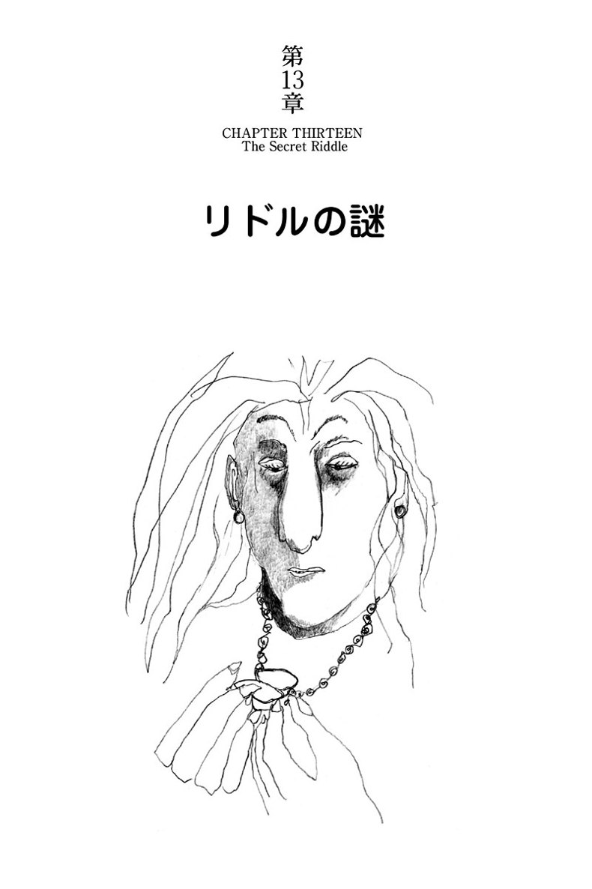

| ハリー・ポッターと謎のプリンス - Harry Potter and the Half-Blood Prince (ハリー・ポッターシリーズ) | |
| J.K. Rowling | |
| Seizansha/Tsai Fong Books (2015) | |
ヴォルデモートの復活のせいで、夏だというのに国中に冷たい霧が立ち込めていた。そんな中を、ダーズリーの家にダンブルドアがやって来るという。いったい何のために？ホグワーツ校では、思いもかけない人物が「闇の魔術に対する防衛術」の新しい先生となり、授業を受け持つことになった。ハリーはというと、突然「魔法薬」 の才能を発揮する。授業はますます難しくなるが、ホグワーツの6年生は青春真っ只中。 ハリーには新しい恋人が現われ、ロンとハーマイオニーは仲たがいする。しかし、ドラコ・マルフォイだけは不可解な行動をとる。最後に起こる衝撃のどんでん返し。そして悲しい別れ。17年前の予言は、ハリーとヴォルデモートとの対決を避けられないものにした。過酷な運命に立ち向かう16歳のハリー、物語は第7巻の最終章へともつれこむ。


むこうの大臣 The Other Minister
スピナーズ・エンド Spinner's End
遺志と意思 Will and Won't
ホラス・スラグホーン Horace Slughorn
ヌラーがべっとり An Excess of Phlegm
ドラコ・マルフォイの回り道 Draco's Detour
ナメクジ・クラブ The Slug Club
勝ち誇るスネイプ Snape Victorious
謎のプリンス The Half-Blood Prince
ゴーントの家 The House of Gaunt
ハーマイオニーの配慮 Hermione's Helping Hand
シルバーとオパール Silver and Opals
リドルの謎 The Secret Riddle
フェリックス・フェリシス Felix Felicis
破れぬ誓い The Unbreakable Vow
冷え冷えとしたクリスマス A Very Frosty Christmas
ナメクジのろのろの記憶 A Sluggish Memory
たまげた誕生日 Birthday Surprises
しもべ妖精の尾行 Elf Tails
ヴォルデモート卿の頼み Lord Voldemort's Request
不可知の部屋 The Unknowable Room
埋葬のあと After the Burial
ホークラックス Horcruxes
セクタムセンプラ Sectumsempra
盗聴された予見者 The Seer Overheard
洞窟 The Cave
稲妻に撃たれた塔 The Lightning-Struck Tower
プリンスの逃亡 Flight of the Prince
不死鳥の嘆き The Phoenix Lament
白い墓 The White Tomb
まもなく夜中の十二時になろうとしていた。執務室にひとり座り、首相は長ったらしい文書に目を通していたが、内容はさっぱり頭に残らないまま素通りしていた。さる遠国の元首からかかってくるはずの電話を待っているところなのだが、いったい、いつになったら電話をよこすつもりなのかと訝ってみたり、やたら長くて厄介だったこの一週間の、不愉快な記憶の数々を頭の隅に追いやるのに精一杯で、ほかにはほとんど何も頭に入ってこなかった。
開いたページの活字に集中しようとすればするほど、首相の目には、政敵の一人がほくそ笑んでいる顔がありありと浮かんでくるのだった。今日も今日とて、この政敵殿はニュースに登場し、この一週間に起こった恐ろしい出来事を、（まるで傷口に塩を塗るかのように）いちいちあげつらったばかりか、どれもこれもが政府のせいだとぶち上げてくださった。
何のかのと非難されたことを思い出すだけで、首相の脈拍は早くなった。連中の言うことときたら、フェアじゃないし真実でもない。あの橋が落ちたことだって、まさか、政府がそれを阻止できたとでも言うつもりなのか。政府が橋梁に十分な金をかけていないなどと言うやつの面が見たい。あの橋はまだ十年と経っていないし、なぜそれがまっ二つに折れて、十数台の車が下の深い川に落ちたのか、最高の専門家でさえ説明のしようがないのだ。
それに、さんざん世間を騒がせたあの二件の残酷な殺人事件にしても、警官が足りないせいで起こったなどと、よくも言えたものだ。一方、西部地域に多大な人的・物的被害を与えたあの異常気象のハリケーンだが、政府がなんとか予測できたはずだって？ その上、政務次官の一人であるハーバート・チョーリーが、よりによってこの一週間かなり様子がおかしくなり、「家族と一緒に過ごす時間を増やす」という体のいい理由をつけて辞職となったことまで、首相である私の責任だと言うのか。
「わが国はすっぽりと暗いムードに包まれている」と締めくくりながら、あの政敵殿はにんまり顔を隠しきれないご様子だった。
残念ながら、その言葉だけは紛れもない真実だった。たしかに、人々はこれまでになく惨めな思いをしている。首相自身もそう感じていた。天候までも落ち込んでいた。七月半ばだというのに、この冷たい霧は......変だ。どうもおかしい......。
首相は文書の二ページ目をめくったが、まだまだ先が長いとわかると、やるだけむだだと諦めた。両腕を上げて伸びをしながら、首相は憂鬱な気分で部屋を見回した。瀟洒な部屋だ。上質の大理石の暖炉の反対側にある縦長の窓は、季節はずれの寒さを締め出すためにしっかり閉じられている。首相はブルッと身震いして立ち上がり、窓辺に近寄って、窓ガラスを覆うように垂れ込めている薄い霧を眺めた。ちょうどそのとき、部屋に背を向けていた首相の背後で、軽い咳払いが聞こえた。
首相はその場に凍りつき、目の前の暗い窓ガラスに映っている自分の怯えた顔を見つめた。この咳払いは......以前にも聞いたことがある。首相はゆっくりと体の向きを変え、がらんとした部屋に顔を向けた。
「誰かね？」声だけは気丈に、首相が呼びかけた。
答える者などいはしないと、ほんの一瞬、首相は虚しい望みを抱いた。しかし、たちまち返事が返ってきた。まるで準備した文章を棒読みしているような、てきぱきと杓子定規な声だった。声の主は――最初の咳払いで首相にはわかっていたのだが――蛙顔の小男だ。長い銀色の鬘を着けた姿で、部屋の一番隅にある汚れた小さな油絵に描かれている。
「マグルの首相閣下。火急にお目にかかりたし。至急お返事のほどを。草々。ファッジ」
絵の主は答えを促すように首相を見た。
「あー」首相が言った。「実はですな......いまはちょっと都合が......電話を待っているところで、えー......さる国の元首からでして――」
「その件は変更可能」絵が即座に答えた。
首相はがっかりした。そうなるのではと恐れていたのだ。
「しかし、できれば私としては電話で話を――」
「その元首が電話するのを忘れるように、我々が取り計らう。その代わり、その元首は明日の夜、電話するであろう」小男が言った。「至急ファッジ殿にお返事を」
「私としては......いや......いいでしょう」首相が力なく言った。
「ファッジ大臣にお目にかかりましょう」
ネクタイを直しながら、首相は急いで机に戻った。椅子に座り、泰然自若とした表情をなんとか取り繕ったとたん、大理石のマントルピースの中で、薪もない空の火格子に、突然明るい緑の炎が燃え上がった。首相は、驚きうろたえた素振りなど微塵も見せまいと気負いながら、小太りの男が独楽のように回転して、炎の中に現れるのを見つめた。
まもなく男は、ライムグリーンの山高帽子を手に、細縞の長いマントの袖の灰を払い落としながら、かなり高級な年代物の敷物の上に這い出てきた。
「おお......首相閣下」
コーネリウス・ファッジが、片手を差し出しながら大股で進み出た。
「またお目にかかれて、うれしいですな」
同じ挨拶を返す気持になれず、首相は何も言わなかった。ファッジに会えてうれしいなどとは、お世辞にも言えなかった。ときどきファッジが現れることだけでも度肝を抜かれるのに、その上、たいがい悪い知らせを聞かされるのが落ちなのだ。
ファッジは目に見えて憔悴していた。やつれてますます禿げ上がり、白髪も増え、げっそりとした表情だった。首相は、政治家がこんな表情をしているのを以前にも見たことがある。けっして吉兆ではない。
「何か御用ですかな？」
首相はそそくさとファッジと握手し、机の前にある一番硬い椅子を勧めた。
「いやはや、何からお話ししてよいやら」ファッジは椅子を引き寄せて座り、ライムグリーンの山高帽を膝の上に置きながらボソボソ言った。「いやはや先週ときたら、いやまったく......」
「あなたのほうもそうだったわけですな？」
首相は、つっけんどんに言った。ファッジからこれ以上何か聞かせていただくまでもなく、すでに当方は手一杯なのだということが、これで伝わればよいのだが、と思った。
「ええ、そういうことです」
ファッジは疲れた様子で両目をこすり、陰気くさい目つきで首相を見た。
「首相閣下、私のほうもあなたと同じ一週間でしたよ。ブロックデール橋......ボーンズとバンスの殺人事件......言うまでもなく、西部地域の惨事......」
「すると――あー――そちらの何が――つまり、ファッジ大臣の部下の方たちが何人か――関わって――そういう事件に関わっていたということで？」
ファッジはかなり厳しい目つきで首相を見据えた。
「もちろん関わっていましたとも。閣下は当然、何が起こっているかにお気づきだったでしょうな？」
「私は......」首相は口ごもった。
こういう態度を取られるからこそ、首相はファッジの訪問が嫌なのだ。痩せても枯れても自分は首相だ。何にも知らないガキみたいな気持にさせられるのはおもしろくない。しかし、そう言えば最初からずっとこうなのだ。首相になった最初の夜、ファッジと初めて会ったそのときからこうなのだ。昨日のことのように覚えている。そして、きっと死ぬまでその思い出につきまとわれるのだ。
まさにこの部屋だった。長年の夢と企てで手に入れた勝利を味わいながら、この部屋にひとり佇んでいたそのとき、ちょうど今夜のように、背後で咳払いが聞こえた。振り返ると小さい醜い肖像画が話しかけていた。魔法大臣がまもなく挨拶にやってくるという知らせだった。
当然のことながら、長かった選挙運動や選挙のストレスで頭がおかしくなったのだろうと、首相はそう思った。しかし、肖像画が話しかけているのだと知ったときの、ぞっとする恐ろしさも、そのあとの出来事の恐怖に比べればまだましだった。暖炉から飛び出した男が、自らを魔法使いと名乗り、首相と握手したのだ。
ファッジはご親切にもこう言った。魔女や魔法使いは、いまだに世界中に隠れ住んでいる。しかし首相を煩わせることはないから安心するように。魔法省が魔法界全体に責任を持ち、非魔法界の人間に気取られないようにしているから――ファッジが説明する間、首相は一言も言葉を発しなかった。
さらにファッジはこう言った。魔法省の仕事は難しく、責任ある箒の使用法に関する規制から、ドラゴンの数を増やさないようにすることまで（この時点で首相は、机につかまって体を支えたのを憶えている）、ありとあらゆる仕事を含んでいる。そしてファッジは、呆然としている首相の肩を、父親のような雰囲気で叩いたものだ。
「ご心配めさるな」と、そのときファッジは言った。
「たぶん、二度と私に会うことはないでしょう。我が方で本当に深刻な事態が起こらないかぎり、私があなたをお煩わせすることはありませんからな。マグル――非魔法族ですが――マグルに影響するような事態に立ち至らなければということですよ。それさえなければ、平和共存ですからな。ところで、あなたは前任者よりずっと冷静ですなあ。前首相ときたら、私のことを政敵が仕組んだ悪い冗談だと思ったらしく、窓から放り出そうとしましてね」
ここにきて首相はやっと声が出るようになった。
「すると――悪い冗談、ではないと？」最後の、一縷の望みだったのに。
「違いますな」ファッジがやんわりと言った。「残念ながら、違いますな。そーれ」
そしてファッジは、首相の紅茶カップをスナネズミに変えてしまった。
「しかし......」
紅茶カップ・スナネズミが次の演説の原稿の端をかじり出したのを見ながら、首相は息を殺して言った。
「しかし、なぜ――なぜ誰も私に話して――？」
「魔法大臣は、そのときの首相にしか姿を見せませんのでね」
ファッジは上着のポケットに杖を突っ込みながら言った。
「秘密を守るにはそれがいちばんだと考えましてね」
「しかし、それなら」首相が愚痴っぽく言った。
「前首相はどうして私に一言警告して――？」
ファッジが笑い出した。
「親愛なる首相閣下。あなたなら誰かに話しますかな？」
声を上げて笑いながら、ファッジは暖炉に粉のようなものを投げ入れ、エメラルド色の炎の中に入り込み、ヒュッという音とともに姿を消した。首相は身動きもせずその場に立ちすくんでいた。言われてみれば、今夜のことは、口が裂けても一生誰にも話さないだろう。たとえ話したところで、世界広しといえども誰が信じるというのか？
ショックが消えるまでしばらくかかった。過酷な選挙運動中の睡眠不足がたたってファッジの幻覚を見たのだと、一時はそう思い込もうとした。不愉快な出会いを思い出させるものはすべて処分してしまおうと足掻きもした。スナネズミを姪にくれてやると、姪は大喜びだった。
さらに、ファッジの来訪を告げた醜い小男の肖像画を取りはずすよう首相秘書に命じもしたが、肖像画は、首相の困惑をよそに梃子でも動かなかった。大工が数人、建築業者が二人ほど、美術史専門家が一人、それに大蔵大臣まで、全員が肖像画を壁から剥がそうと躍起になったがどうにもならず、首相は取りはずすのを諦めて、自分の任期中は、なにとぞこの絵が動かずに黙っていますようにと願うばかりだった。絵の主がときどき欠伸をしたり、鼻の頭を掻いたりするのをたしかにちらりと目にした。そればかりか、泥色のキャンバスだけを残して、額から出ていってしまったことも一度や二度はある。しかし首相は、あまり肖像画を見ないように修練したし、そんなこんなが起こったときには必ず、目の錯覚だとしっかり自分に言い聞かせるようになった。
ところが三年前、ちょうど今夜のような夜、一人で執務室にいると、またしても肖像画が、ファッジがまもなく来訪すると告げ、ずぶ濡れで慌てふためいたファッジが、暖炉からワッと飛び出した。上等なアクスミンスター織りの絨毯にボタボタ滴を垂らしている理由を、首相が問い質す間もなく、ファッジは、首相が聞いたこともない監獄のことやら、「シリアス・ブラック」とかいう男のこと、ホグワーツとか何とか、ハリー・ポッターという名の男の子とかについて喚き立てはじめた。どれもこれも、首相にとってはチンプンカンプンだった。
「......アズカバンに行ってきたところなんだが」
ファッジは山高帽の縁に溜まった大量の水をポケットに流し込み、息を切らして言った。
「なにしろ、北海のまん中からなんで、飛行もひと苦労で......吸魂鬼は怒り狂っているし――」ファッジは身震いした。
「――これまで一度も脱走されたことがないんでね。とにかく、首相閣下、あなたをお訪ねせざるをえませんでね。ブラックはマグル・キラーで通っているし、『例のあの人』と合流することを企んでいるかもしれません......と言っても、あなたは、『例のあの人』が何者かさえご存知ない！」
ファッジは一瞬、途方に暮れたように首相を見つめたが、やがてこう言った。
「さあ、さあ、お掛けなさい。少し事情を説明したほうがよさそうだ......ウィスキーでもどうぞ......」
自分の部屋でお掛けくださいと言われるのも癪だったし、ましてや自分のウィスキーを勧められるのはなおさらだったが、首相はとにかく椅子に座った。ファッジは杖を引っぱり出し、どこからともなく、なみなみと琥珀色の液体の注がれた大きなグラスを二個取り出して、一つを首相の手に押しつけると、自分も椅子に掛けた。
ファッジは一時間以上も話した。一度、ある名前を口にすることを拒み、その代わり羊皮紙に名前を書いて、ウィスキーを持っていないほうの首相の手にそれを押しつけた。ファッジがやっと腰を上げて帰ろうとしたとき、首相も立ち上がった。
「では、あなたのお考えでは......」首相は目を細めて、左手に持った名前を見た。
「このヴォル――」
「名前を言ってはいけないあの人！」ファッジが唸った。
「失礼......『名前を言ってはいけないあの人』が、まだ生きているとお考えなのですね？」
「まあ、ダンブルドアはそう言うが――」
ファッジは細縞のマントの紐を首の下で結びながら言った。
「しかし、我々は結局その人物を発見してはいない。私に言わせれば、配下の者がいなければ、その人物は危険ではないのでね。そこで心配すべきなのはブラックだというわけです。では、先ほど話した警告をお出しいただけますな？ 結構。さて、首相閣下、願わくはもうお目にかかることがないよう！ おやすみなさい」
ところが、二人は三度会うことになった。それから一年と経たないうち、困りきった顔のファッジが、どこからともなく閣議室に姿を現し、首相にこう告げたのだ。
――クウィディッチ（そんなふうに聞こえた）のワールドカップでちょっと問題があり、マグルが数人「巻き込まれた」が、首相は心配しなくてよい。「例のあの人」の印が再び目撃されたと言っても、何の意味もないことだ。ほかとは関連のない特殊な事件だと確信しており、こうしている間にも、「マグル連絡室」が、必要な記憶修正措置を取っている――。
「ああ、忘れるところだった」ファッジがつけ加えた。
「三校対抗試合のために、外国からドラゴンを三頭とスフィンクスを入国させますがね、なに、日常茶飯事ですよ。しかし、非常に危険な生物をこの国に持ち込むときは、あなたにお知らせしなければならないと、規則にそう書いてあると、『魔法生物規制管理部』から言われましてね」
「それは――えっ――ドラゴン？」首相は急き込んで聞き返した。
「さよう。三頭です」ファッジが言った。「それと、スフィンクスです。では、ご機嫌よう」
首相はドラゴンとスフィンクスこそが極めつきで、まさかそれ以上悪くなることはなかろうと願っていた。
ところがである。それから二年と経たないうち、ファッジがまたしても炎の中から忽然と現れた。こんどはアズカバンから集団脱走したという知らせだった。
「集団脱走？」聞き返す首相の声がかすれた。
「心配ない、心配ない！」
そう叫びながら、ファッジはすでに片足を炎に突っ込んでいた。
「全員たちまち逮捕する――ただ、あなたは知っておくべきだと思って！」
首相が「ちょっと待ってください！」と叫ぶ間もなくファッジは緑色の激しい火花の中に姿を消していた。
マスコミや野党が何と言おうと、首相はばかではなかった。ファッジが最初の出会いで請け合ったのとは裏腹に、二人はかなり頻繁に顔を合わせているし、ファッジの慌てふためきぶりが毎回ひどくなっていることに、首相は気づいていた。魔法大臣（首相の頭の中では、ファッジを『むこうの大臣』と呼んでいた）のことはあまり考えたくなかったが、この次にファッジが現れるときは、おそらくいっそう深刻な知らせになるのではないかと懸念していた。
そして今回、またもや炎の中から現れたファッジは、よれよれの姿でいらいらしていたし、ファッジがなぜやって来たのか理由がはっきりわからないという首相に対して、それを咎めるかのように驚いている。そんなファッジの姿を目にしたことこそ、首相にとっては、この暗澹たる一週間で最悪の事件と言ってもよかった。
「私にわかるはずがないでしょう？ その――えー――魔法界で何が起こっているかなんて」こんどは首相がぶっきらぼうに言った。
「私には国政という仕事がある。いまはそれだけで十分頭痛の種なのに、この上――」
「同じ頭痛の種ですよ」ファッジが口を挟んだ。
「ブロックデール橋は古くなったわけじゃない。あれは実はハリケーンではなかった。殺人事件もマグルの仕業じゃない。それに、ハーバート・チョーリーは、家に置かないほうが家族にとって安全でしょうな。『聖マンゴ魔法疾患傷害病院』に移送するよう、現在手配中ですよ。移すのは今夜のはずです」
「どういうこと......私にはどうも......なんだって？」首相が喚いた。
ファッジは大きく息を吸い込んでから話し出した。
「首相閣下、こんなことを言うのは非常に遺憾だが、あの人が戻ってきました。『名前を言ってはいけないあの人』が戻ったのです」
「戻った？『戻った』とおっしゃるからには......生きていると？ つまり――」
首相は三年前のあの恐ろしい会話を思い出し、細かい記憶を手繰った。ファッジが話してくれた、誰よりも恐れられているあの魔法使い、数えきれない恐ろしい罪を犯したあと、十五年前に謎のように姿を消したという魔法使い。
「さよう、生きています」ファッジが答えた。
「つまり――何と言うか――殺すことができなければ、生きているということになりますかな？ 私にはどうもよくわからんのです。それに、ダンブルドアはちゃんと説明してくれないし――しかしともかく、『あの人』は肉体を持ち、歩いたりしゃべったり、殺したりしているわけで、ほかに言いようがなければ、さよう、生きていることになりますな」
首相は何と言ってよいやらわからなかった。しかし、どんな話題でも熟知しているように見せかけたいという、身についた習慣のせいで、これまでの何回かの会話の詳細を何でもいいから思い出そうと、あれこれ記憶をたどった。
「シリアス・ブラックは――あー――『名前を言ってはいけないあの人』と一緒に？」
「ブラック？ ブラック？」
ファッジは山高帽を指でクルクル回転させながら、ほかのことを考えている様子だった。
「シリウス・ブラック、のことかね？ いーや、とんでもない。ブラックは死にましたよ。我々が――あー――ブラックについては間違っていたようで。結局あの男は無実でしたよ。それに、『名前を言ってはいけないあの人』の一味でもなかったですな。とは言え――」
ファッジは帽子をますます早回ししながら、言い訳がましく言葉を続けた。
「すべての証拠は――五十人以上の目撃者もいたわけですがね。――まあ、しかし、とにかく、あの男は死にました。実は殺されました。魔法省の敷地内で。実は調査が行われる予定で......」
首相はここでファッジがかわいそうになり、チクリと胸が痛んで自分でも驚いた。しかし、そんな気持は、輝かしい自己満足で、たちまち掻き消されてしまった――暖炉から姿を現す分野では劣っているかもしれないが、私の管轄する政府の省庁で殺人があったためしはない......少なくともいままでは......。
幸運が逃げない呪いに、首相が木製の机にそっと触れている間、ファッジはしゃべり続けた。
「しかし、ブラックのことはいまは関係ない。要は、首相閣下、我々が戦争状態にあるということでありまして、態勢を整えなければなりません」
「戦争？」首相は神経を尖らせた。「まさか、それはちょっと大げさじゃありませんか？」
「『名前を言ってはいけないあの人』は、一月にアズカバンを脱獄した配下といまや合流したのです」
ファッジはますます早口になり、山高帽を目まぐるしく回転させるものだから、帽子はライムグリーン色にぼやけた円になっていた。
「存在があからさまになって以来、連中は破壊騒動を引き起こしていましてね。ブロックデール橋――『あの人』の仕業ですよ、閣下。私が『あの人』に席を譲らなければ、マグルを大量虐殺すると脅しをかけてきましてね――」
「なんと、それでは何人かが殺されたのは、あなたのせいだと。それなのに私は、橋の張り線や伸縮継ぎ手の錆とか、そのほか何が飛び出すかわからないような質問に答えなければならない！」首相は声を荒らげた。
「私のせい！」ファッジの顔に血が上った。「あなたならそういう脅しに従ったかもしれないとおっしゃるわけですか？」
「たぶん、脅しには屈しないでしょう」
首相は立ち上がって部屋の中を往ったり来たりしながら言った。
「しかし、私なら、脅迫者がそんな恐ろしいことを引き起こす前に逮捕するよう、全力を尽くしたでしょうな！」
「私がこれまで全力を尽くしていなかったと、本気でそうお考えですか？」
ファッジが熱くなって問い質した。
「魔法省の闇祓いは全員、『あの人』を見つけ出してその一味を逮捕するべくがんばりましたとも――いまでもそうです。しかし、相手はなにしろ史上最強の魔法使いの一人で、ほぼ三十年にわたって逮捕を免れてきたやつですぞ！」
「それじゃ、西部地域のハリケーンも、そいつが引き起こしたとおっしゃるのでしょうな？」
首相は一歩踏み出すごとに癇癪が募ってきた。一連の恐ろしい惨事の原因がわかっても、国民にそれを知らせることができないとは腹立たしいにもほどがある。政府に責任があるほうがまだましだ。
「あれはハリケーンではなかった」ファッジは惨めな言い方をした。
「何ですと！」首相はいまや、足を踏み鳴らして歩き回っていた。
「樹木は根こそぎ、屋根は吹っ飛ぶ、街灯は曲がる、人はひどいけがをする――」
「死喰い人がやったことでしてね」ファッジが言った。
「『名前を言ってはいけないあの人』の配下ですよ。それと......巨人が絡んでいると睨んでいるのですがね」
「何が絡んでいると？」首相は、見えない壁に衝突したかのように、ばったり停止した。
ファッジは顔をしかめた。
「『あの人』は前回も、人目に立たせたいときには巨人を使った。『誤報局』が二十四時間体制で動いていますよ。現実の出来事を見たマグル全員に記憶修正をかけるのに、忘却術士たちが何チームも動きましたし、『魔法生物規制管理部』の大半の者がサマセット州を駆けずり回ったんですが、巨人は見つかっとらんのでして――大失敗ですな」
「そうでしょうとも！」首相がいきり立った。
「たしかに魔法省の士気はそうとう落ちていますよ」ファッジが続けた。
「その上、アメリア・ボーンズを失うし」
「誰を？」
「アメリア・ボーンズ。魔法法執行部の部長ですよ。我々としては、『名前を言ってはいけないあの人』自身の手にかかったと考えていますがね。なにしろたいへん才能ある魔女でしたし、それに――状況証拠から見て、激しく戦ったらしい」
ファッジは咳払いし、自制心を働かせたらしく、山高帽を回すのをやめた。
「しかし、その事件は新聞に載っていましたが」
首相は自分が怒っていることを一瞬忘れた。
「我々の新聞にです。アメリア・ボーンズ......一人暮らしの中年の女性と書いてあるだけでした。たしか――無残な殺され方、でしたな？ マスコミがかなり書き立てましたよ。なにせ、警察が頭をひねりましてね」
ファッジはため息をついた。
「ああ、そうでしょうとも。中から鍵がかかった部屋で殺された。そうでしたな？ ところが我々のほうは、下手人が誰かをはっきり知っている。だからと言って、我々がすぐにでも下手人を逮捕できるというわけではないのですがね。それに、次はエメリーン・バンスだ。その件はお聞きになっていないのでは――」
「聞いていますとも！」首相が答えた。
「実は、その事件はこのすぐ近くで起こりましてね。新聞が大はしゃぎでしたよ。『首相のお膝元で法と秩序が破られた――』」
「それでもまだ足りないとばかり――」ファッジは首相の言葉をほとんど聞いていなかった。
「吸魂鬼がうじゃうじゃ出没して、あっちでもこっちでも手当たりしだいに人を襲っている......」
その昔、より平和なときだったら、これを聞いても首相にはわけがわからなかったはずだが、いまや知恵がついていた。
「『吸魂鬼』はアズカバンの監獄を守っているのではなかったですかな？」
首相は慎重な聞き方をした。
「そうでした」ファッジは疲れたように言った。
「しかし、もういまは。監獄を放棄して、『名前を言ってはいけないあの人』につきましたよ。これが打撃でなかったとは言えませんな」
「しかし......」首相は徐々に恐怖が湧いてくるのを感じた。
「その生き物は、希望や幸福を奪い去るとかおっしゃいませんでしたか？」
「たしかに。しかも連中は増えている。だからこんな霧が立ち込めているわけで」
首相は、よろよろとそばの椅子にへたり込んだ。見えない生き物が町や村の空を襲って飛び、自分の支持者である選挙民に絶望や失望を撒き散らしていると思うと、眩暈がした。
「いいですか、ファッジ大臣――あなたは手を打つべきです！ 魔法大臣としてのあなたの責任でしょう！」
「まあ、首相閣下、こんなことがいろいろあったあとで、私がまだ大臣の座にあるなんて、本気でそう思われますかな？ 三日前にクビになりました！ 魔法界全体が、この二週間、私の辞任要求を叫び続けましてね。私の任期中にこれほど国がまとまったことはないですわ！」ファッジは勇敢にも微笑んでみせようとした。
首相は一瞬言葉を失った。自分がこんな状態に置かれていることで怒ってはいるものの、目の前に座っている萎びた様子の男が、やはり哀れに思えた。
「ご愁傷さまです」ややあって、首相が言った。「何かお力になれることは？」
「恐れ入ります、閣下。しかし、何もありません。今夜は、最近の出来事についてあなたにご説明し、私の後任をご紹介する役目で参りました。もうとっくに着いてもいいころなのですが、なにしろ魔法大臣はいま、多忙でいらっしゃる。何やかやとあって......」
ファッジは振り返って醜い小男の肖像画を見た。銀色の長い巻き毛の鬘を着けた男は、羽根ペンの先で耳をほじっているところだった。
ファッジの視線をとらえ、肖像画が言った。
「まもなくお見えになるでしょう。ちょうどダンブルドアへのお手紙を書き終えたところです」
「ご幸運を祈りたいですな」
ファッジは初めて辛辣な口調になった。
「ここ二週間、私はダンブルドアに毎日二通も手紙を書いたのに、頑として動こうとしない。ダンブルドアがあの子をちょっと説得する気になってくれていたら、私はもしかしたらまだ......まあ、スクリムジョールのほうがうまくやるかもしれないし」
ファッジは口惜しげにむっつりと黙り込んだ。しかし、沈黙はほとんどすぐに破られた。肖像画が、突然、事務的な切り口上でこう告げた。
「マグルの首相閣下。面会の要請。緊急。至急お返事のほどを。魔法大臣 ルーファス・スクリムジョール」
「はい、はい、結構」首相はほかのことを考えながら生返事をした。
火格子の炎がエメラルド色になって高く燃え上がり、その中心部で独楽のように回っている今夜二人目の魔法使いの姿が見えた。やがてその魔法使いが炎から吐き出されるように年代物の敷物の上に現れたときも、首相はぴくりともしなかった。ファッジが立ち上がった。しばらく迷ってから首相もそれに倣い、到着したばかりの人物が身を起こして、長く黒いローブの灰を払い落とし、周りを見回すのを見つめた。
年老いたライオンのようだ――バカバカしい印象だが、ルーファス・スクリムジョールを一目見て、首相はそう思った。たてがみのような黄褐色の髪やふさふさした眉は白髪交じりで、細縁メガネの奥には黄色味がかった鋭い眼があった。わずかに足を引きずってはいたが、手足が細長く、軽やかで大きな足取りには一種の優雅さがあった。俊敏で強靭な印象がすぐに伝わってくる。この危機的なときに、魔法界の指導者としてファッジよりもスクリムジョールが好まれた理由が、首相にはわかるような気がした。
「初めまして」首相は手を差し出しながら丁寧に挨拶した。
スクリムジョールは、部屋中に目を走らせながら軽く握手し、ローブから杖を取り出した。
「ファッジからすべてお聞きになりましたね？」
スクリムジョールは入口のドアまで大股で歩いていき、鍵穴を杖で叩いた。首相の耳に、鍵がかかる音が聞こえた。
「あー――ええ」首相が答えた。
「さしつかえなければ、ドアには施錠しないでいただきたいのですが」
「邪魔されたくないので」スクリムジョールの答えは短かった。
「それに覗かれたくもない」杖を窓に向けると、カーテンが閉まった。
「これでよい。さて、私は忙しい。本題に入りましょう。まず、あなたの安全の話をする必要がある」
首相は可能なかぎり背筋を伸ばして答えた。
「現在ある安全対策で十分満足しています。ご懸念には――」
「我々は満足していない」
スクリムジョールが首相の言葉を遮った。
「首相が『服従の呪文』にかかりでもしたら、マグルの前途が案じられる。執務室の隣の事務室にいる新しい秘書官だが――」
「キングズリー・シャックルボルトのことなら、手放しませんぞ！」首相が語気を強めた。
「あれはとてもできる男で、ほかの人間の二倍の仕事をこなす――」
「あの男が魔法使いだからだ」スクリムジョールはにこりともせずに言った。
「高度に訓練された闇祓いで、あなたを保護する任務に就いている」
「ちょっと待ってくれ！」首相がきっぱりと言った。
「執務室にそちらが勝手に人を入れることはできますまい。私の部下は私が決め――」
「シャックルボルトに満足していると思ったが？」スクリムジョールが冷静に言った。
「満足している――いや、していたが――」
「それなら、問題はないでしょう？」スクリムジョールが言った。
「私は......それは、シャックルボルトの仕事が、これまでどおり......あー......優秀ならば」
首相の言葉は腰砕けに終わった。しかし、スクリムジョールはほとんど聞いていないようだった。
「さて、政務次官のハーバート・チョーリーだが――」スクリムジョールが続けて言った。
「公衆の面前でアヒルに扮して道化ていた男のことだ」
「それがどうしました？」
「明らかに『服従の呪文』をかけ損ねた結果です」スクリムジョールが言った。
「頭をやられて混乱しています。しかし、まだ危険人物たりうる」
「ガーガー鳴いているだけですよ！」首相が力なく言った。
「ちょっと休めばきっと......酒を飲みすぎないようにすればたぶん......」
「こうしている間にも、『聖マンゴ魔法疾患傷害病院』の癒師団が、診察をしています。これまでのところ、患者は癒師団の癒者三人を絞め殺そうとしました」
スクリムジョールが言った。
「この男はしばらくマグル社会から遠ざけたほうがよいと思います」
「私は......でも......チョーリーは大丈夫なのでしょうな？」
首相が心配そうに聞いた。スクリムジョールは肩をすくめ、もう暖炉に向かっていた。
「さあ、これ以上言うことはありません。閣下、これからの動きはお伝えしますよ――私個人は忙しくて伺えないかもしれませんが、そのときは、少なくともこのファッジを遣わします。顧問の資格でとどまることに同意しましたので」
ファッジは微笑もうとしてしくじり、歯が痛むような顔になっただけだった。スクリムジョールはすでにポケットを探ってあの不可思議な粉を取り出し、炎を緑色にしていた。首相は絶望的な顔でしばらく二人を見ていたが、いままでずっと押さえつけてきた言葉が、ついに口を衝いて飛び出した。
「そんなバカな――あなた方は魔法使いでしょうが！ 魔法が使えるんでしょう！ それなら間違いなく処理できるでしょう――つまり――何でも！」
スクリムジョールはその場でゆっくり振り向き、ファッジと顔を見合わせ、互いに信じられないという目つきをした。ファッジはこんどこそ微笑み損ねず、優しくこう言った。
「閣下、問題は、相手も魔法が使えるということですよ」
そして二人の魔法使いは、明るい緑の炎の中に次々と歩み入り、姿を消した。
首相執務室の窓に垂れ込めていた冷たい霧は、そこから何キロも離れた場所の、汚れた川面に漂っていた。草ぼうぼうでゴミの散らかった土手の間を縫うように、川が流れている。廃墟になった製糸工場の名残の巨大な煙突が、黒々と不吉にそそり立っていた。暗い川の囁くような流れのほかには物音もせず、あわよくば丈高の草に埋もれたフィッシュ・アンド・チップスのおこぼれでも嗅ぎ当てたいと、足音を忍ばせて土手を下っていく痩せた狐のほかは、生き物の気配もない。
そのとき、ポンと軽い音がして、フードをかぶったすらりとした姿が、忽然と川辺に現れた。狐はその場に凍りつき、この不思議な現象をじっと油断なく見つめた。そのフード姿は、しばらくの間方向を確かめている様子だったが、やがて軽やかにすばやい足取りで、草むらに長いマントを滑らせながら歩き出した。
二度目の、少し大きいポンという音とともに、またしてもフードをかぶった姿が現れた。
「お待ち！」
鋭い声に驚いて、それまで下草にぴたりと身を伏せていた狐は、隠れ場所から飛び出して土手を駆け上がった。緑の閃光が走った。キャンという鳴き声。狐は川辺に落ち、絶命していた。
二人目の人影が狐の骸を爪先で引っくり返した。
「ただの狐か」フードの下で、軽蔑したような女の声がした。
「闇祓いかと思えば――シシー、お待ち！」
しかし、二人目の女が追う獲物は、一瞬立ち止まり、振り返って閃光を見はしたが、たったいま狐が転がり落ちたばかりの土手をすでに登り出していた。
「シシー――ナルシッサ――話を聞きなさい――」
二人目の女が追いついて、もう一人の腕をつかんだが、一人目はそれを振り解いた。
「帰って、ベラ！」
「私の話を聞きなさい！」
「もう聞いたわ。もう決めたんだから。ほっといてちょうだい！」
ナルシッサと呼ばれた女は、土手を登りきった。古い鉄柵が、川と狭い石畳の道とを仕切っていた。二人目の女、ベラもすぐに追いついた。二人は並んで、通りの向こう側を見た。荒れ果てたレンガ建ての家が、闇の中にどんよりと暗い窓を見せて、何列も並んで建っていた。
「あいつは、ここに住んでいるのかい？」ベラは蔑むような声で聞いた。「ここに？ マグルの掃き溜めに？ 我々のような身分の者で、こんなところに足を踏み入れるのは、私たちが最初だろうよ――」
しかし、ナルシッサは聞いていなかった。錆びた鉄柵の間をくぐり抜け、もう通りの向こうへと急いでいた。
「シシー、お待ちったら！」
ベラはマントをなびかせてあとを追い、ナルシッサが家並みの間の路地を駆け抜けてどれも同じような通りの二つ目に走り込むのを目撃した。街灯が何本か壊れている。二人の女は、灯りと闇のモザイクの中を走った。獲物を追う追っ手のように、ベラは角を曲がろうとしているナルシッサに追いついた。こんどは首尾よく腕をつかまえて後ろを振り向かせ、二人は向き合った。
「シシー、やってはいけないよ。あいつは信用できない――」
「闇の帝王は信用していらっしゃるわ。違う？」
「闇の帝王は......きっと......間違っていらっしゃる」ベラが喘いだ。
フードの下でベラの眼が一瞬ギラリと光り、二人きりかどうか、あたりを見回した。
「いずれにせよ、この計画は誰にも漏らすなと言われているじゃないか。こんなことをすれば、闇の帝王への裏切りに――」
「放してよ、ベラ」
ナルシッサが凄んだ。そしてマントの下から杖を取り出し、脅すようにベラの顔に突きつけた。ベラが笑った。
「シシー、自分の姉に？ あんたにはできやしない――」
「できないことなんか、もう何にもないわ！」
ナルシッサが押し殺したような声で言った。声にヒステリックな響きがあった。そして杖をナイフのように振り下ろした。閃光が走り、ベラは火傷をしたかのように妹の腕を放した。
「ナルシッサ！」
しかしナルシッサはもう突進していた。追跡者は手をさすりながら、こんどは少し距離を置いて、再びあとを追った。レンガ建ての家の間の人気のない迷路を、二人はさらに奥へと入り込んだ。ナルシッサは、スピナーズ・エンドという名の袋小路に入り、先を急いだ。あのそびえ立つような製糸工場の煙突が、巨大な人指し指が警告しているかのように、通りの上に浮かんで見える。板が打ちつけられた窓や、壊れた窓を通り過ぎるナルシッサの足音が、石畳にこだました。ナルシッサはいちばん奥の家にたどり着いた。一階の部屋のカーテンを通してちらちらと仄暗い灯りが見える。
ベラが小声で悪態をつきながら追いついたときには、ナルシッサはもう戸を叩いていた。少し息を切らし、夜風に乗って運ばれてくるどぶ川の臭気を吸い込みながら、二人は佇んで待っていた。しばらくして、ドアの向こう側で何かが動く音が聞こえ、わずかに戸が開いた。隙間から、二人を見ている男の姿が細長く見えた。黒い長髪が、土気色の顔と暗い眼の周りでカーテンのように分かれている。
ナルシッサがフードを脱いだ。蒼白な顔が、暗闇の中で輝くほど白い。長いブロンドの髪が背中に流れる様子が、まるで溺死した人のように見える。
「ナルシッサ！」男がドアを少し広く開けたので、明かりがナルシッサと姉の二人を照らした。「これはなんと、驚きましたな！」
「セブルス」ナルシッサは声を殺して言った。「お話できるかしら？ とても急ぐの」
「いや、もちろん」
男は一歩下がって、ナルシッサを招じ入れた。まだフードをかぶったままの姉は、許しも請わずにあとに続いた。
「スネイプ」男の前を通りながら、女がぶっきらぼうに言った。
「ベラトリックス」男が答えた。二人の背後でピシャリとドアを閉めながら、唇の薄いスネイプの口元に、嘲るような笑いが浮かんだ。
入ったところがすぐに小さな居間になっていた。暗い独房のような部屋だ。壁は、クッションではなく、びっしりと本で覆われている。黒か茶色の革の背表紙の本が多い。すり切れたソファ、古い肘掛椅子、ぐらぐらするテーブルが、天井からぶら下がった蝋燭ランプの薄暗い明かりの下に、ひと塊になって置かれていた。ふだんは人が住んでいないような、ほったらかしの雰囲気が漂っている。
スネイプは、ナルシッサにソファを勧めた。ナルシッサはマントをはらりと脱いで打ち捨て、座り込んで膝の上で組んだ震える白い手を見つめた。ベラトリックスはもっとゆっくりとフードを下ろした。妹の白さと対照的な黒髪、厚ぼったい瞼、がっちりした顎。ナルシッサの背後に回ってそこに立つまでの間、ベラトリックスはスネイプを凝視したまま目を離さなかった。
「それで、どういうご用件ですかな？」スネイプは二人の前にある肘掛椅子に腰掛けた。
「ここには......ここには私たちだけですね？」ナルシッサが小声で聞いた。
「むろん、そうです。ああ、ワームテールがいますがね。しかし、虫けらは数に入らんでしょうな？」
スネイプは背後の壁の本棚に杖を向けた。すると、バーンという音とともに、隠し扉が勢いよく開いて狭い階段が現れた。そこには小男が立ちすくんでいた。
「ワームテール、お気づきのとおり、お客様だ」スネイプが面倒くさそうに言った。
小男は背中を丸めて階段の最後の数段を下り、部屋に入ってきた。小さい潤んだ目、尖った鼻、そして間の抜けた不愉快なニタニタ笑いを浮かべている。左手で右手をさすっているが、その右手は、まるで輝く銀色の手袋をはめているかのようだ。
「ナルシッサ！」小男がキーキー声で呼びかけた。
「それにベラトリックス！ ご機嫌麗しく――」
「ワームテールが飲み物をご用意しますよ。よろしければ」スネイプが言った。
「そのあとこやつは自分の部屋に戻ります」
ワームテールは、スネイプに何かを投げつけられたようにたじろいだ。
「わたしはあなたの召使いではない！」
ワームテールはスネイプの目を避けながらキーキー言った。
「ほう？ 我輩を補佐するために、闇の帝王がおまえをここに置いたとばかり思っていたのだが」
「補佐というなら、そうです――でも、飲み物を出したりとか――あなたの家の掃除とかじゃない！」
「それは知らなかったな、ワームテール。おまえがもっと危険な任務を渇望していたとはね」
スネイプはさらりと言った。
「それならたやすいことだ。闇の帝王にお話し申し上げて――」
「そうしたければ、自分でお話しできる！」
「もちろんだとも」スネイプはニヤリと笑った。
「しかし、その前に飲み物を持ってくるんだ。しもべ妖精が造ったワインで結構」
ワームテールは、何か言い返したそうにしばらくぐずぐずしていたが、やがて踵を返し、もう一つ別の隠し扉に入っていった。バタンという音や、グラスがぶつかり合う音が聞こえてきた。まもなく、ワームテールが、埃っぽい瓶を一本とグラス三個を盆に載せて戻ってきた。ぐらぐらするテーブルにそれを置くなり、ワームテールはあたふたとその場を離れ、本で覆われている背後の扉をバタンと閉めていなくなった。
スネイプは血のように赤いワインを三個のグラスに注ぎ、姉妹にその二つを手渡した。ナルシッサは呟くように礼を言ったが、ベラトリックスは何も言わずに、スネイプを睨み続けた。スネイプは意に介するふうもなく、むしろおもしろがっているように見えた。
「闇の帝王に」スネイプはグラスを掲げ飲み干した。
姉妹もそれに倣った。スネイプがみんなに二杯目を注いだ。
二杯目を受け取りながら、ナルシッサが急き込んで言った。
「セブルス、こんなふうにお訪ねしてすみません。でも、お目にかからなければなりませんでした。あなたしか私を助けられる方はいないと思って――」
スネイプは手を上げてナルシッサを制し、再び杖を階段の隠し扉に向けた。バーンと大きな音と悲鳴が聞こえ、ワームテールが慌てて階段を駆け上がる音がした。
「失礼」スネイプが言った。
「やつは最近扉のところで聞き耳を立てるのが趣味になったらしい。どういうつもりなのか、我輩にはわかりませんがね......ナルシッサ、何をおっしゃりかけていたのでしたかな？」
ナルシッサは身を震わせて大きく息を吸い、もう一度話しはじめた。
「セブルス、ここに来てはいけないことはわかっていますわ。誰にも、何も言うなと言われています。でも――」
「それなら黙ってるべきだろう！」ベラトリックスが凄んだ。「特にいまの相手の前では！」
「いまの相手？」スネイプが皮肉たっぷりに繰り返した。
「それで、ベラトリックス、それはどう解釈すればよいのかね？」
「おまえを信用していないってことさ、スネイプ、おまえもよく知ってのとおり！」
ナルシッサはすすり泣くような声を漏らし、両手で顔を覆った。スネイプはグラスをテーブルに置き、椅子に深く座り直して両手を肘掛けに置き、睨みつけているベラトリックスに笑いかけた。
「ナルシッサ、ベラトリックスが言いたくてうずうずしていることを聞いたほうがよろしいようですな。さすれば、何度もこちらの話を中断される煩わしさもないだろう。さあ、ベラトリックス、続けたまえ」スネイプが言った。
「我輩を信用しないというのは、いかなる理由かね？」
「理由は山ほどある！」
ベラトリックスはソファの後ろからずかずかと進み出て、テーブルの上にグラスを叩きつけた。
「どこから始めようか！ 闇の帝王が倒れたとき、おまえはどこにいた？ 帝王が消え去ったとき、どうして一度も探そうとしなかった？ ダンブルドアの懐で暮らしていたこの歳月、おまえはいったい何をしていた？ 闇の帝王が『賢者の石』を手に入れようとしたとき、おまえはどうして邪魔をした？ 闇の帝王が蘇ったとき、おまえはなぜすぐに戻らなかった？ 数週間前、闇の帝王のために予言を取り戻そうと我々が戦っていたとき、おまえはどこにいた？ それに、スネイプ、ハリー・ポッターはなぜまだ生きているのだ？ 五年間もおまえの手中にあったというのに」
ベラトリックスは言葉を切った。胸を激しく波打たせ、頬に血が上っている。その背後で、ナルシッサはまだ両手で顔を覆ったまま、身動きもせずに座っていた。
スネイプが笑みを浮かべた。
「答える前に――ああ、いかにも、ベラトリックス、これから答えるとも！ 我輩の言葉を、陰口を叩いて我輩が闇の帝王を裏切っているなどと、でっち上げ話をする連中に持ち帰るがよい。――答える前に、そうそう、逆に一つ質問するとしよう。君の質問のどれ一つを取ってみても、闇の帝王が、我輩に質問しなかったものがあると思うかね？ それに対して満足のいく答えをしていなかったら、我輩はいまこうしてここに座り、君と話をしていられると思うかね？」
ベラトリックスはたじろいだ。
「あの方がおまえを信じておられるのは知っている。しかし......」
「あの方が間違っていると思うのか？ それとも我輩がうまく騙したとでも？ 不世出の開心術の達人である、もっとも偉大なる魔法使い、闇の帝王に一杯食わせたとでも？」
ベラトリックスは何も言わなかった。しかし、初めてぐらついた様子を見せた。スネイプはそれ以上追及しなかった。再びグラスを取り上げ、一口すすり、言葉を続けた。
「闇の帝王が倒れたとき我輩がどこにいたかと、そう聞かれましたな。我輩はあの方に命じられた場所にいた。ホグワーツ魔法魔術学校に。なんとなれば、我輩がアルバス・ダンブルドアをスパイすることを、あの方がお望みだったからだ。闇の帝王の命令で我輩があの職に就いたことは、ご承知だと拝察するが？」
ベラトリックスはほとんど見えないほどわずかに頷いた。そして口を開こうとしたが、スネイプが機先を制した。
「あの方が消え去ったとき、なぜお探ししようとしなかったかと、君はそうお尋ねだ。理由はほかの者と同じだ。エイブリー、ヤックスリー、カローたち、グレイバック、ルシウス――」
スネイプはナルシッサに軽く頭を下げた。
「そのほかあの方をお探ししようとしなかった者は多数いる。我輩は、あの方はもう滅したと思った。自慢できることではない。我輩は間違っていた。しかし、いまさら詮ないことだ......。あのときに信念を失った者たちを、あの方がお許しになっていなかったら、あの方の配下はほとんど残っていなかっただろう」
「私が残った！」ベラトリックスが熱っぽく言った。
「あの方のために何年もアズカバンで過ごした、この私が！」
「なるほど。見上げたものだ」スネイプは気のない声で言った。
「もちろん、牢屋の中では大してあの方のお役には立たなかったが、しかし、その素振りはまさにご立派――」
「そぶり！」ベラトリックスが甲高く叫んだ。怒りで狂気じみた表情だった。
「私が吸魂鬼に耐えている間、おまえはホグワーツに居残って、ぬくぬくとダンブルドアに寵愛されていた！」
「少し違いますな」スネイプが冷静に言った。
「ダンブルドアは我輩に、『闇の魔術に対する防衛術』の仕事を与えようとしなかった。そう。どうやら、それが、あー、ぶり返しにつながるかもしれないと思ったらしく......我輩が昔に引き戻されると」
「闇の帝王へのおまえの犠牲はそれか？ 好きな科目が教えられなかったことなのか？」
ベラトリックスが嘲った。
「スネイプ、ではなぜ、それからずっとあそこに居残っていたのだ？ 死んだと思ったご主人様のために、ダンブルドアのスパイを続けたとでも？」
「いいや」スネイプが答えた。
「ただし、我輩が職を離れなかったことを、闇の帝王はお喜びだ。あの方が戻られたとき、我輩はダンブルドアに関する十六年分の情報を持っていた。ご帰還祝いの贈り物としては、アズカバンの不快な思い出の垂れ流しより、かなり役に立つものだが......」
「しかし、おまえは居残った......」
「そうだ、ベラトリックス、居残った」スネイプの声に、初めて苛立ちの色が覗いた。
「我輩には、アズカバンのお勤めより好ましい、居心地のよい仕事があった。知ってのとおり、死喰い人狩りが行われていた。ダンブルドアの庇護で、我輩は監獄に入らずにすんだ。好都合だったし、我輩はそれを利用した。重ねて言うが、闇の帝王は、我輩が居残ったことをとやかくおっしゃらない。それなのに、なぜ君がとやかく言うのかわからんね」
「次に君が知りたかったのは」
スネイプはどんどん先に進めた。ベラトリックスがいまにも口を挟みたがっている様子だったので、スネイプは少し声を大きくした。
「我輩がなぜ、闇の帝王と『賢者の石』の間に立ちはだかったか、でしたな。これはたやすくお答えできる。あの方は我輩を信用すべきかどうか、判断がつかないでおられた。君のように、あの方も、我輩が忠実な死喰い人からダンブルドアの犬になり下がったのではないかと思われた。あの方は哀れな状態だった。非常に弱って、凡庸な魔法使いの体に入り込んでおられた。昔の味方が、あの方をダンブルドアか魔法省に引き渡すかもしれないとのご懸念から、あの方はどうしても、かつての味方の前に姿を現そうとはなさらなかった。我輩を信用してくださらなかったのは残念でならない。もう三年早く、権力を回復できたものを。我輩が現実に目にしたのは、強欲で『賢者の石』に値しないクィレルめが石を盗もうとしているところだった。認めよう。我輩はたしかに全力でクィレルめを挫こうとしたのだ」
ベラトリックスは苦い薬を飲んだかのように口を歪めた。
「しかし、おまえは、あの方がお戻りになったとき、参上しなかった。闇の印が熱くなったのを感じても、すぐにあの方の下に馳せ参じはしなかった――」
「左様。我輩は二時間後に参上した。ダンブルドアの命を受けて戻った」
「ダンブルドアの――？」ベラトリックスは逆上したように口を開いた。
「頭を使え！」スネイプが再び苛立ちを見せた。
「考えるがいい！ 二時間待つことで、たった二時間のことで、我輩は、確実にホグワーツにスパイとしてとどまれるようにした！ 闇の帝王の側に戻るよう命を受けたから戻るにすぎないのだと、ダンブルドアに思い込ませることで、以来ずっと、ダンブルドアや不死鳥の騎士団についての情報を流すことができた！ いいかね、ベラトリックス。闇の印が何ヵ月にもわたってますます強力になってきていた。我輩はあの方がまもなくお戻りになるに違いないとわかっていたし、死喰い人は全員知っていた！ 我輩が何をすべきか、次の動きをどうするか、カルカロフのように逃げ出すか、考える時間は十分にあった。そうではないか？」
「我輩が遅れたことで、はじめは闇の帝王のご不興を買った。しかし我輩の忠誠は変わらないとご説明申し上げたとき、いいかな、そのご立腹は完全に消え去ったのだ。もっともダンブルドアは我輩が味方だと思っていたがね。左様。闇の帝王は、我輩が永久にお側を去ったとお考えになったが、帝王が間違っておられた」
「しかし、おまえが何の役に立った？」
ベラトリックスが冷笑した。
「我々はおまえからどんな有用な情報をもらったというのだ？」
「我輩の情報は闇の帝王に直接お伝えしてきた」スネイプが言った。
「あの方がそれを君に教えないとしても――」
「あの方は私にすべてを話してくださる！」
ベラトリックスはたちまち激昂した。
「私のことを、もっとも忠実な者、もっとも信頼できる者とお呼びになる――」
「なるほど？」スネイプの声が微妙に屈折し、信じていないことを匂わせた。
「いまでもそうかね？ 魔法省での大失敗のあとでも？」
「あれは私のせいではない！」
ベラトリックスの顔がさっと赤くなった。
「過去において、闇の帝王は、もっとも大切なものを常に私に託された――ルシウスがあんなことをしな――」
「よくもそんな――夫を責めるなんて、よくも！」
ナルシッサが姉を見上げ、低い、凄みの効いた声で言った。
「責めをなすり合っても詮なきこと」スネイプがすらりと言った。
「すでにやってしまったことだ」
「おまえは何もしなかった！」ベラトリックスがかんかんになった。
「何もだ。我らが危険に身をさらしているときに、おまえはまたしても不在だった。スネイプ、違うか？」
「我輩は残っていよとの命を受けた」スネイプが言った。
「君は闇の帝王と意見を異にするのかもしれんがね。我輩が死喰い人とともに不死鳥の騎士団と戦っても、ダンブルドアはそれに気づかなかっただろうと、そうお考えなのかな？ それに――失礼ながら――危険とか言われたようだが......十代の子ども六人を相手にしたのではなかったのかね？」
「加勢が来たんだ。知ってのとおり。まもなく不死鳥の騎士団の半数が来た！」
ベラトリックスが唸った。
「ところで、騎士団の話が出たついでに聞くが、本部がどこにあるかは明かせないと、おまえはまだ言い張っているな？」
「『秘密の守人』は我輩ではないのだからして、我輩がその場所の名前を言うことはできない。その呪文がどういう効き方をするか、ご存知でしょうな？ 闇の帝王は、騎士団について我輩がお伝えした情報で満足していらっしゃる。ご明察のことと思うが、その情報が過日エメリーン・バンスを捕らえて殺害することに結びついたし、さらにシリウス・ブラックを始末するにも当然役立ったはずだ。もっとも、やつを片付けた功績はすべて君のものだが」
スネイプは頭を下げ、ベラトリックスに杯を上げた。ベラトリックスは硬い表情を変えなかった。
「私の最後の質問を避けているぞ、スネイプ。ハリー・ポッターだ。この五年間、いつでも殺せたはずだ。おまえはまだ殺っていない。なぜだ？」
「この件を、闇の帝王と話し合ったのかね？」スネイプが聞いた。
「あの方は......最近私たちは――おまえに聞いているのだ、スネイプ！」
「もし我輩がハリー・ポッターを殺していたら、闇の帝王は、あやつの血を使って蘇ることができず、無敵の存在となることも――」
「あの方が小僧を使うことを見越していた、とでも言うつもりか！」
ベラトリックスが嘲った。
「そうは言わぬ。あの方のご計画を知る由もなかった。すでに白状したとおり、我輩は闇の帝王が死んだと思っていた。ただ我輩は、闇の帝王が、ポッターの生存を残念に思っておられない理由を説明しようとしているだけだ。少なくとも一年前までは、だが......」
「それならなぜ、小僧を生かしておいた？」
「我輩の話がわかっていないようだな？ 我輩がアズカバン行きにならずにすんだのは、ダンブルドアの庇護があったればこそだ。そのお気に入りの生徒を殺せば、ダンブルドアが我輩を敵視することになったかもしれない。違うかな？ しかし、単にそれだけでのことではなかった。ポッターが初めてホグワーツにやって来たとき、ポッターに関するさまざまな憶測が流れていたことを思い出していただこう。彼自身が偉大なる闇の魔法使いではないか、だからこそ闇の帝王に攻撃されても生き残ったのだという噂だ。事実、闇の帝王のかつての部下の多くが、ポッターこそ、我々全員がもう一度集結し、擁立すべき旗頭ではないかと考えた。たしかに我輩は興味があった。だからして、ポッターが城に足を踏み入れた瞬間に殺してしまおうという気にはとうていなれなかった」
「もちろん、あいつには特別な能力などまったくないことが、我輩にはすぐ読めた。やつは何度かピンチに陥ったが、単なる幸運と、より優れた才能を持った友人との組み合わせだけで乗りきってきた。徹底的に平凡なやつだ。もっとも、父親同様、独り善がりの癇に障るやつではあるが。我輩は手を尽くしてやつをホグワーツから放り出そうとした。学校にふさわしからぬやつだからだ。しかし、やつを殺したり、我輩の目の前で殺されるのを放置するのはどうかな？ ダンブルドアがすぐそばにいるからには、そのような危険を冒すのは愚かというものだ」
「それで、これだけあれこれあったのに、ダンブルドアが一度もおまえを疑わなかったと信じろというわけか？」ベラトリックスが聞いた。
「おまえの忠誠心の本性を、ダンブルドアは知らずに、いまだにおまえを心底信用しているというのか？」
「我輩は役柄を上手に演じてきた」スネイプが言った。
「それに、君はダンブルドアの大きな弱点を見逃している。あの人は、人の善なる性を信じずにはいられないという弱みだ。我輩が、まだ死喰い人時代のほとぼりも冷めやらぬころにダンブルドアのスタッフに加わったとき、心からの悔悟の念を縷々語って聞かせた。するとダンブルドアは両手を挙げて我輩を迎え入れた――ただし、先刻も言ったとおり、できうるかぎり、我輩を闇の魔術に近づけまいとした。ダンブルドアは偉大な魔法使いだ（ベラトリックスが痛烈な反論の声を上げた）――ああ、たしかにそうだとも。闇の帝王も認めている。ただ、喜ばしいことに、ダンブルドアは年老いてきた。闇の帝王との先月の決闘は、ダンブルドアを動揺させた。その後も、動きにかつてほどの切れがなくなり、ダンブルドアは深手を負った。しかしながら、長年にわたって一度も、このセブルス・スネイプへの信頼は途切れたことがない。それこそが、闇の帝王にとっての我輩の大きな価値なのだ」
ベラトリックスはまだ不満そうだったが、どうやってスネイプに次の攻撃を仕掛けるべきか迷っているようだった。その沈黙に乗じて、スネイプは妹のほうに水を向けた。
「さて......我輩に助けを求めにおいででしたな、ナルシッサ？」
ナルシッサがスネイプを見上げた。絶望がはっきりとその顔に書いてある。
「ええ、セブルス。わ――私を助けてくださるのは、あなたしかいないと思います。ほかには誰も頼る人がいません。ルシウスは牢獄で、そして......」
ナルシッサは目をつむった。二粒の大きな涙が瞼の下から溢れ出した。
「闇の帝王は、私がその話をすることを禁じました」
ナルシッサは目を閉じたまま言葉を続けた。
「誰にもこの計画を知られたくないとお望みです。とても......厳重な秘密なのです。でも――」
「あの方が禁じたのなら、話してはなりませんな」スネイプが即座に言った。
「闇の帝王の言葉は法律ですぞ」
ナルシッサは、スネイプに冷水を浴びせられたかのように息を呑んだ。ベラトリックスはこの家に入ってから初めて満足げな顔をした。
「ほら！」ベラトリックスが勝ち誇ったように妹に言った。
「スネイプでさえそう言ってるんだ。しゃべるなと言われたんだから、黙っていなさい！」
しかしスネイプは、立ち上がって小さな窓のほうにつかつかと歩いていき、カーテンの隙間から人気のない通りをじっと覗くと、再びカーテンをぐいと閉めた。そしてナルシッサを振り返り、顔をしかめてこう言った。
「たまたまではあるが、我輩はあの方の計画を知っている」スネイプが低い声で言った。
「闇の帝王が打ち明けた数少ない者の一人なのだ。それはそうだが、ナルシッサ、我輩が秘密を知る者でなかったなら、あなたは闇の帝王に対する重大な裏切りの罪を犯すことになったのですぞ」
「あなたはきっと知っていると思っていましたわ！」
ナルシッサの息遣いが少し楽になった。
「あの方は、セブルス、あなたのことをとてもご信頼で......」
「おまえが計画を知っている？」
ベラトリックスが一瞬浮かべた満足げな表情は、怒りに変わっていた。
「おまえが知っている？」
「いかにも」スネイプが言った。
「しかし、ナルシッサ、我輩にどう助けてほしいのかな？ 闇の帝王のお気持が変わるよう、我輩が説得できると思っているなら、気の毒だが望みはない。まったくない」
「セブルス」ナルシッサが囁くように言った。蒼白い頬を涙が滑り落ちた。
「私の息子......たった一人の息子......」
「ドラコは誇りに思うべきだ」ベラトリックスが非情に言い放った。
「闇の帝王はあの子に大きな名誉をお与えになった。それに、ドラコのためにはっきり言っておきたいが、あの子は任務に尻込みなどしていない。自分の力を証明するチャンスを喜び、期待に心を躍らせて――」
ナルシッサはすがるようにスネイプを見つめたまま、本当に泣き出した。
「それはあの子が十六歳で、何が待ち受けているのかを知らないからだわ！ セブルス、どうしてなの？ どうして私の息子が？ 危険すぎるわ！ これはルシウスが間違いを犯したことへの報復なんだわ、ええそうなのよ！」
スネイプは何も言わず、涙が見苦しいものであるかのように、ナルシッサの泣き顔から目を背けていた。しかし聞こえないふりはできなかった。
「だからあの方はドラコを選んだのよ。そうでしょう？」ナルシッサは詰め寄った。
「ルシウスを罰するためでしょう？」
「ドラコが成功すれば――」
ナルシッサから目を背けたまま、スネイプが言った。
「ほかの誰よりも高い栄誉を得るだろう」
「でも、あの子は成功しないわ！」ナルシッサがすすり上げた。
「あの子にどうしてできましょう？ 闇の帝王ご自身でさえ――」
ベラトリックスが息を呑んだ。ナルシッサはそれで気が挫けたようだった。
「いえ、つまり......まだ誰も成功したことがないのですし......セブルス......お願い......あなたは初めから、そしていまでもドラコの好きな先生だわ......ルシウスの昔からの友人で......おすがりします......あなたは闇の帝王のお気に入りで、相談役としていちばん信用されているし......お願いです。あの方にお話しして、説得して――？」
「闇の帝王は説得される方ではない。それに我輩も、説得しようとするほど愚かではない」
スネイプはすげなく言った。
「我輩としては、闇の帝王がルシウスにご立腹ではないなどと取り繕うことはできない。ルシウスは指揮を執るはずだった。自分自身が捕まってしまったばかりか、ほかに何人も捕まった。おまけに予言を取り戻すことにも失敗した。さよう、闇の帝王はお怒りだ。ナルシッサ、非常にお怒りだ」
「それじゃ、思ったとおりだわ。あの方は見せしめのためにドラコを選んだのよ！」
ナルシッサは声を詰まらせた。
「あの子を成功させるおつもりではなく、途中で殺されることがお望みなのよ！」
スネイプが黙っていると、ナルシッサは最後にわずかに残った自制心さえ失ったかのようだった。立ち上がってよろよろとスネイプに近づき、ローブの胸元をつかんだ。顔をスネイプの顔に近づけ、涙をスネイプの胸元にこぼしながら、ナルシッサは喘いだ。
「あなたならできるわ。ドラコの代わりに、セブルス、あなたならできる。あなたは成功するわ。きっと成功する。そうすればあの方は、あなたにほかの誰よりも高い報奨を――」
スネイプはナルシッサの両手首をつかみ、しがみついている両手をはずした。涙で汚れた顔を見下ろし、スネイプがゆっくりと言った。
「あの方は最後には我輩にやらせるおつもりだ。そう思う。しかし、まず最初にドラコにやらせると、固く決めていらっしゃる。ありえないことだが、ドラコが成功した暁には、我輩はもう少しホグワーツにとどまり、スパイとしての有用な役割を遂行できるわけだ」
「それじゃ、あの方は、ドラコが殺されてもかまわないと！」
「闇の帝王は非常にお怒りだ」スネイプが静かに繰り返した。
「あの方は予言を聞けなかった。あなたも我輩同様、よくご存知のことだが、あの方はやすやすとはお許しにならない」
ナルシッサはスネイプの足下にくずおれ、床の上ですすり泣き、呻いた。
「私の一人息子......たった一人の息子......」
「おまえは誇りに思うべきだよ！」ベラトリックスが情け容赦なく言った。
「私に息子があれば、闇の帝王のお役に立つよう、喜んで差し出すだろう」
ナルシッサは小さく絶望の叫びを上げ、長いブロンドの髪を鷲づかみにした。スネイプが屈んで、ナルシッサの腕をつかんで立たせ、ソファに誘った。それからナルシッサのグラスにワインを注ぎ、無理やり手に持たせた。
「ナルシッサ、もうやめなさい。これを飲んで、我輩の言うことを聞くんだ」
ナルシッサは少し静かになり、ワインを撥ねこぼしながら、震える手で一口飲んだ。
「可能性だが......我輩がドラコを手助けできるかもしれん」
ナルシッサが体を起こし、蝋のように白い顔で目を見開いた。
「セブルス――ああ、セブルス――あなたがあの子を助けてくださる？ あの子を見守って、危害が及ばないようにしてくださる？」
「やってみることはできる」
ナルシッサはグラスを放り出した。グラスがテーブルの上を滑ると同時に、ナルシッサはソファを滑り降りて、スネイプの足下にひざまずき、スネイプの手を両の手で掻き抱いて唇を押し当てた。
「あなたがあの子を護ってくださるのなら......セブルス、誓ってくださる？ 『破れぬ誓い』を結んでくださる？」
「『破れぬ誓い』？」
スネイプの無表情な顔からは、何も読み取れなかった。しかし、ベラトリックスは勝ち誇ったように高笑いした。
「ナルシッサ、聞いていなかったのかい？ ああ、こいつはたしかに、やってみるだろうよ......いつもの虚しい言葉だ。行動を起こすときになるとうまくすり抜ける......ああ、もちろん闇の帝王の命令だろうともさ！」
スネイプはベラトリックスを見なかった。その暗い目は、自分の手をつかんだままのナルシッサの涙に濡れた青い目を見据えていた。
「いかにも。ナルシッサ、『破れぬ誓い』を結ぼう」スネイプが静かに言った。
「姉君が『結び手』になることにご同意くださるだろう」
ベラトリックスは口をあんぐり開けていた。スネイプはナルシッサと向かい合ってひざまずくように座った。ベラトリックスの驚愕の眼差しの下で、二人は右手を握り合った。
「ベラトリックス、杖が必要だ」スネイプが冷たく言った。
ベラトリックスは杖を取り出したが、まだ唖然としていた。
「それに、もっとそばに来る必要がある」スネイプが言った。
ベラトリックスは前に進み出て、二人の頭上に立ち、結ばれた両手の上に杖の先を置いた。
ナルシッサが言葉を発した。
「セブルス、あなたは、闇の帝王の望みを叶えようとする私の息子、ドラコを見守ってくださいますか？」
「そうしよう」スネイプが言った。
眩しい炎が、細い舌のように杖から飛び出し、灼熱の赤い紐のように二人の手の周りに巻きついた。
「そしてあなたは、息子に危害が及ばぬよう、力のかぎり護ってくださいますか？」
「そうしよう」スネイプが言った。
二つ目の炎の舌が杖から噴き出し、最初の炎と絡み合い、輝く細い鎖を形作った。
「そして、もし必要になれば......ドラコが失敗しそうな場合は......」ナルシッサが囁くように言った（スネイプの手がナルシッサの手の中でピクリと動いたが、手を引っ込めはしなかった）。「闇の帝王がドラコに遂行を命じた行為を、あなたが実行してくださいますか？」
一瞬の沈黙が流れた。ベラトリックスは目を見開き、握り合った二人の手に杖を置いて見つめていた。
「そうしよう」スネイプが言った。
驚くベラトリックスの顔が、三つ目の細い炎の閃光で赤く照り輝いた。舌のような炎が杖から飛び出し、ほかの炎と絡み合い、握り合わされた二人の手にがっしりと巻きついた。
縄のように。炎の蛇のように。
ハリー・ポッターは大いびきをかいていた。この四時間ほとんどずっと、部屋の窓際に椅子を置いて座り、だんだん暗くなる通りを見つめ続けていたが、とうとう眠り込んでしまったのだ。冷たい窓ガラスに顔の半分を押しつけ、メガネは半ばずり落ち、口はあんぐり開いている。ハリーの吐く息で窓ガラスの一部が曇り、街灯のオレンジ色の光を受けて光っている。街灯の人工的な明かりがハリーの顔からすべての色味を消し去り、まっ黒なクシャクシャ髪の下で幽霊のような顔に見えた。
部屋の中には雑多な持ち物や、ちまちましたガラクタがばら撒かれていた。床にはふくろうの羽根やりんごの芯、キャンディの包み紙が散らかり、ベッドにはごたごたと丸められたローブの間に呪文の本が数冊、乱雑に転がっている。そして机の上の明かり溜まりには、新聞が雑然と広げられていた。一枚の新聞に派手な大見出しが見えた。
ハリー・ポッター 選ばれし者？
最近魔法省で『名前を言ってはいけないあの人』が再び目撃された不可解な騒動について、いまだに流言蜚語が飛び交っている。
忘却術士の一人は、昨夜魔法省を出る際に、名前を明かすことを拒んだ上で、動揺した様子で次のように語った。
「我々は何も話してはいけないことになっている。何も聞かないでくれ」
しかしながら、魔法省内のさる高官筋は、かの伝説の「予言の間」が騒動の中心となった現場であることを認めた。
魔法省のスポークス魔ンはこれまで、そのような場所の存在を認めることさえ拒否してきたが、魔法界では、家屋侵入と窃盗未遂の廉で現在アズカバンに服役中の死喰い人たちが、予言を盗もうとしたのではないか、と考える魔法使いが増えている。問題の予言がどのようなものかは知られていないが、巷では、『死の呪文』を受けて生き残った唯一の人物であり、さらに問題の夜に魔法省にいたことが知られている、ハリー・ポッターに関するものではないかと推測されている。一部の魔法使いの間で、ポッターは『選ばれし者』と呼ばれ、予言が、『名前を言ってはいけないあの人』を排除できるただ一人の者として、ポッターを名指ししたと考えられている。
問題の予言の現在の所在は、ただし予言が存在するならばではあるが、杳として知れない。しかし、（二面五段目に続く）
もう一枚の新聞が、最初の新聞の脇に置かれている。大見出しはこうだ。
スクリムジョール、ファッジの後任者
一面の大部分は、一枚の大きなモノクロ写真で占められている。ふさふさしたライオンのたてがみのような髪に、傷だらけの顔の男の写真だ。写真が動いている――男が天井に向かって手を振っていた。
魔法法執行部、闇祓い局の元局長、ルーファス・スクリムジョールが、コーネリウス・ファッジのあとを受けて魔法大臣に就任した。魔法界は概ねこの任命を歓迎しているが、就任の数時間後には、新大臣とウィゼンガモット法廷・主席魔法戦士として復帰したアルバス・ダンブルドアとの亀裂の噂が浮上した。
スクリムジョールの補佐官は、スクリムジョールが魔法大臣就任直後、ダンブルドアと会見したことを認めたが、話し合いの内容についてはコメントを避けた。アルバス・ダンブルドアはかねてから（三面二段目に続く）
その新聞の左に置かれた別の新聞は、「魔法省、生徒の安全を保証」という見出しがはっきり見えるように折ってあった。
新魔法大臣、ルーファス・スクリムジョールは今日、秋の新学期にホグワーツ魔法魔術学校に帰る学生の安全を確保するため、新しい強硬策を講じたと語った。
大臣は「当然のことだが、魔法省は、新しい厳重なセキュリティ計画の詳細について公表するつもりはない」と語ったが、内部情報筋によれば、安全措置には、防衛呪文と呪い、一連の複雑な反対呪文、さらにホグワーツ校の護衛専任の、闇祓い小規模特務部隊などが含まれる。
新大臣が生徒の安全のために強硬な姿勢を取ったことで、大多数が安堵したと思われる。オーガスタ・ロングボトム夫人は次のように語った。「孫のネビルは――たまたまハリー・ポッターと仲良しで、ついでに申し上げますと、この六月、魔法省で彼と肩を並べて死喰い人と戦ったのですが―――
記事の続きは大きな鳥籠の下に隠れて見えない。籠の中には見事な白ふくろうがいた。琥珀色の眼で部屋を睥睨し、ときどき首をぐるりと回しては、いびきをかいているご主人様をじっと見つめた。一、二度、もどかしそうに嘴を鳴らしたが、ぐっすり眠り込んでいるハリーには聞こえなかった。
大きなトランクが部屋のまん中に置かれていた。蓋が開いている。受け入れ態勢十分の雰囲気だ。しかし、トランクの底を覆う程度に、着古した下着の残骸や菓子類、空のインク瓶や折れた羽根ペンなどがあるだけで、ほとんど空っぽだ。そのそばの床には、紫色のパンフレットが落ちていて、目立つ文字でこう書いてあった。
魔法省公報
あなたの家と家族を闇の力から護るには
魔法界は現在、死喰い人と名乗る組織の脅威にさらされています。次の簡単な安全指針を遵守すれば、あなた自身と家族、そして家を攻撃から護るのに役立ちます。
１．一人で外出しないこと
２．暗くなってからは特に注意すること。外出は、可能なかぎり暗くなる前に完了するよう段取りすること
３．家の周りの安全対策を見直し、家族全員が、「盾の呪文」、「目くらまし呪文」、未成年の家族の場合は「付き添い姿くらまし」術などの緊急措置について認識するよう確認すること
４．親しい友人や家族の間で通用する安全のための質問事項を決め、ポリジュース薬（二頁参照）使用によって他人になりすました死喰い人を見分けられるようにすること
５．家族、同僚、友人または近所の住人の行動がおかしいと感じた場合は、すみやかに魔法警察部隊に連絡すること。「服従の呪文」（四頁参照）にかかっている可能性がある
６．住宅その他の建物の上に闇の印が現れた場合は、入るべからず。ただちに闇祓い局に連絡すること
７．未確認の目撃情報によれば、死喰い人が「亡者」（十頁参照）を使っている可能性がある。「亡者」を目撃した場合、または遭遇した場合は、ただちに魔法省に報告すること
ハリーは眠りながら唸った。窓伝いに顔が数センチ滑り落ち、メガネがさらにずり落ちたが、目を覚まさない。何年か前にハリーが修理した目覚まし時計が、窓の下枠に置かれてチクタク大きな音を立てながら、十一時一分前を指していた。そのすぐ脇には羊皮紙が一枚、ハリーのぐったりした手で押さえられていて、斜めに細長い文字が書きつけてある。三日前に届いた手紙だが、ハリーがそれ以来何度も読み返したせいで、固く巻かれていた羊皮紙が、いまではまっ平らになっていた。
親愛なるハリー
きみの都合さえよければ、わしはプリベット通り四番地を金曜の午後十一時に訪ね、「隠れ穴」まできみを連れていこうと思う。そこで夏休みの残りを過ごすようにと、きみに招待が来ておる。
きみさえよければ、「隠れ穴」に向かう途中で、わしがやろうと思っていることを手伝ってもらえればうれしい。このことは、きみに会ったときに、もう少し詳しく説明するとしよう。
このふくろうで返信されたし。それでは金曜日に会いましょうぞ。
信頼を込めて
アルバス・ダンブルドア
ハリーはもう内容を諳んじていたが、今夜は七時に窓際に陣取り、それから数分おきにこの「お墨付き」をちらちら見ていた。窓際からは、プリベット通りの両端がかなりよく見えた。ダンブルドアの手紙を何度も読み返したところで、意味がないことはわかっていた。手紙で指示されたように、配達してきたふくろうに「はい」の返事を持たせて帰したのだし、いまは待つよりほかない。ダンブルドアは、来るか来ないかのどちらかだ。
しかしハリーは、荷物をまとめていなかった。たった二週間ダーズリー一家とつき合っただけで救い出されるのは、話がうますぎるような気がした。何かがうまくいかなくなるような感じを拭いきれなかった――ダンブルドアへの返事が行方不明になってしまったかもしれないし、ダンブルドアが都合でハリーを迎えにこられなくなる可能性もある。この手紙がダンブルドアからのものではなく、悪戯や冗談、罠だったと判明するかもしれない。荷造りをしたあとでがっかりして、また荷を解かなければならないような状況には耐えられなかった。唯一旅行に出かける素振りに、ハリーは白ふくろうのヘドウィグを安全に鳥籠に閉じ込めておいた。
目覚まし時計の長針が十二を指した。まさにそのとき、窓の外の街灯が消えた。
ハリーは、急に暗くなったことが引き金になったかのように目を覚ました。急いでメガネをかけ直し、窓ガラスからくっついた頬を引きはがして、その代わりに鼻を押しつけ、目を細めて歩道を見つめた。背の高い人物が、長いマントを翻し、庭の小道を歩いてくる。
ハリーは電気ショックを受けたように飛び上がり、椅子を蹴飛ばし、床に散らばっている物を手当たりしだいに引っつかんではトランクに投げ入れはじめた。ローブをひと揃いと呪文の本を二冊、それにポテトチップスを一袋、部屋の向こう側からポーンと放り投げたとき、玄関の呼び鈴が鳴った。
一階の居間で、バーノンおじさんが叫んだ。
「こんな夜遅くに訪問するとは、いったい何やつだ？」
ハリーは片手に真鍮の望遠鏡を持ち、もう一方の手にスニーカーを一足ぶら下げたまま、その場に凍りついた。ダンブルドアがやってくるかもしれないと、ダーズリー一家に警告するのを完全に忘れていた。大変だという焦りと、吹き出したい気持との両方を感じながら、ハリーはトランクを乗り越え、部屋のドアをぐいと開けた。そのとたん、深い声が聞こえた。
「こんばんは。ダーズリーさんとお見受けするが？ わしがハリーを迎えにくることは、ハリーからお聞き及びかと存ずるがの？」
ハリーは階段を一段飛ばしに飛び下り、下から数段目のところで急停止した。長い経験が、できるかぎりおじさんの腕の届かない所にいるべきだと教えてくれたからだ。玄関口に、銀色の髪と顎鬚を腰まで伸ばした、痩身の背の高い人物が立っていた。折れ曲がった鼻に半月メガネを載せ、旅行用の長い黒マントを着て、とんがり帽子をかぶっている。ダンブルドアと同じぐらいふさふさの口髭を蓄えた（もっとも黒い髭だが）バーノン・ダーズリーは、赤紫の部屋着を着て、自分の小さな目が信じられないかのように訪問者を見つめていた。
「あなたの唖然とした疑惑の表情から察するに、ハリーは、わしの来訪を前もって警告しなかったのですな」ダンブルドアは機嫌よく言った。
「しかしながら、あなたがわしを暖かくお宅に招じ入れたということにいたしましょうぞ。この危険な時代に、あまり長く玄関口にぐずぐずしているのは賢明ではないからのう」
ダンブルドアはすばやく敷居を跨いで中に入り、ドアを閉めた。
「前回お訪ねしたのは、ずいぶん昔じゃった」
ダンブルドアは曲がった鼻の上からバーノンおじさんを見下ろした。
「アガパンサスの花が実に見事ですのう」
バーノン・ダーズリーはまったく何も言わない。ハリーは、おじさんが間違いなく言葉を取り戻すと思った。しかももうすぐだ――おじさんのこめかみのピクピクが危険な沸騰点に達していた――しかし、ダンブルドアの持つ何かが、おじさんの息を一時的に止めてしまったかのようだった。ダンブルドアの格好がずばり魔法使いそのものだったせいかもしれないし、もしかしたら、バーノンおじさんでさえ、この人物には脅しがきかないと感じたせいなのかもしれない。
「ああ、ハリー、こんばんは」
ダンブルドアは大満足の表情で、半月メガネの上からハリーを見上げた。
「上々、上々」
この言葉でバーノンおじさんは奮い立ったようだった。バーノンおじさんにしてみれば、ハリーを見て「上々」と言うような人物とは、絶対に意見が合うはずはないのだ。
「失礼になったら申しわけないが――」
おじさんが切り出した。一言一言に失礼さがちらついている。
「――しかし、悲しいかな、意図せざる失礼が驚くほど多いものじゃ」
ダンブルドアは重々しく文章を完結させた。
「なれば、何も言わぬがいちばんじゃ。ああ、これはペチュニアとお見受けする」
キッチンのドアが開いて、そこにハリーのおばがゴム手袋をはめ、寝巻きの上に部屋着を羽織って立っていた。明らかに、寝る前のキッチン徹底磨き上げの最中らしい。かなり馬に似たその顔にはショック以外の何も読み取れない。
「アルバス・ダンブルドアじゃ」
バーノンおじさんが紹介する気配がないので、ダンブルドアは自己紹介した。
「お手紙をやり取りいたしましたのう」
爆発する手紙を一度送ったことをペチュニアおばさんに思い出させるにしては、こういう言い方は変わっているとハリーは思った。しかし、ペチュニアおばさんは反論しなかった。
「そして、こちらは息子さんのダドリーじゃな？」
ダドリーがそのとき、居間のドアから顔を覗かせた。縞のパジャマの襟から突き出したブロンドのでかい顔は、驚きと恐れで口をぱっくり開け、体のない首だけのような奇妙さだった。ダンブルドアは、どうやらダーズリー一家の誰かが口をきくかどうかを確かめているらしく、わずかの間待っていたが、沈黙が続いたので、微笑んだ。
「わしが居間に招き入れられたことにしましょうかの？」
ダドリーは、ダンブルドアが前を通り過ぎるときに慌てて道を空けた。ハリーは望遠鏡とスニーカーをひっつかんだまま、最後の数段を一気に飛び下り、ダンブルドアのあとに従った。ダンブルドアは暖炉にいちばん近い肘掛椅子に腰を下ろし、無邪気な顔であたりを観察していた。ダンブルドアの姿は、はなはだしく場違いだった。
「あの――先生、出かけるんじゃありませんか？」ハリーは心配そうに聞いた。
「そうじゃ、出かける。しかしその前に、まずいくつか話し合っておかねばならぬことがあるのじゃ」ダンブルドアが言った。
「それに、おおっぴらに話をせぬほうがよいのでな。もう少しの時間、おじさんとおばさんのご好意に甘えさせていただくとしよう」
「させていただく？ そうするんだろうが？」
バーノン・ダーズリーが、ペチュニアを脇にして居間に入ってきた。ダドリーは二人のあとをこそこそついてきた。
「いや、そうさせていただく」ダンブルドアはあっさりと言った。
ダンブルドアはすばやく杖を取り出した。あまりの速さにハリーにはほとんど杖が見えなかった。軽く一振りすると、ソファーが飛ぶように前進して、ダーズリー一家三人の膝を後ろからすくい、三人は束になってソファーに倒れた。もう一度杖を振ると、ソファーはたちまち元の位置まで後退した。
「居心地よくしようのう」ダンブルドアが朗らかに言った。
ポケットに杖をしまうとき、その手が黒く萎びていることにハリーは気がついた。肉が焼け焦げて落ちたかのようだった。
「先生――どうなさったのですか、その――？」
「ハリー、あとでじゃ」ダンブルドアが言った。「お掛け」
ハリーは残っている肘掛椅子に座り、驚いて口もきけないダーズリー一家のほうを見ないようにした。
「普通なら茶菓でも出してくださるものじゃが」ダンブルドアがバーノンおじさんに言った。
「しかし、これまでの様子から察するに、そのような期待は、楽観的すぎてばかばかしいと言えるじゃろう」
三度目の杖がピクリと動き、空中から埃っぽい瓶とグラスが五個現れた。瓶が傾いて、それぞれのグラスに蜂蜜色の液体をたっぷりと注ぎ入れ、グラスがふわふわと五人のもとに飛んでいった。
「マダム・ロスメルタの最高級オーク樽熟成蜂蜜酒じゃ」
ダンブルドアはハリーに向かってグラスを挙げた。ハリーは自分のグラスを捕まえ、一口すすった。これまでに味わったことのない飲み物だったが、とてもおいしかった。ダーズリー一家は互いに恐々顔を見合わせたあと、自分たちのグラスを完全に無視しようとした。しかしそれは至難の業だった。なにしろグラスが、三人の頭を脇から軽く小突いていたからだ。ハリーはダンブルドアが大いに楽しんでいるのではないかという気持を打ち消せなかった。
「さて、ハリー」ダンブルドアがハリーを見た。
「面倒なことが起きてのう。きみが我々のためにそれを解決してくれることを望んでおるのじゃ。我々というのは、不死鳥の騎士団のことじゃが。しかしまずきみに話さねばならんことがある。シリウスの遺言が一週間前に見つかってのう、所有物のすべてを君に遺したのじゃ」
ソファーのほうから、バーノンおじさんがこっちに顔を向けたが、ハリーはおじさんを見もしなかったし、「あ、はい」と言うほか、何も言うべき言葉を思いつかなかった。
「ほとんどが単純明快なことじゃ」ダンブルドアが続けた。
「グリンゴッツのきみの口座に、ほどほどの金貨が増えたこと、そしてきみがシリウスの私有財産を相続したことじゃ。少々厄介な遺産は――」
「名付け親が死んだと？」
バーノンおじさんがソファーから大声で聞いた。ダンブルドアもハリーもおじさんのほうを見た。蜂蜜酒のグラスが、こんどは相当しつこく、バーノンの頭を横からぶっていた。おじさんはそれを払いのけようとした。
「死んだ？ こいつの名付け親が？」
「そうじゃ」ダンブルドアは、なぜダーズリー一家に打ち明けなかったのかと、ハリーに尋ねたりはしなかった。「問題は」ダンブルドアは邪魔が入らなかったかのようにハリーに話し続けた。「シリウスがグリモールド・プレイス十二番地をきみに遺したのじゃ」
「屋敷を相続しただと？」
バーノンおじさんが小さい目を細くして、意地汚く言った。しかし、誰も答えなかった。
「ずっと本部として使っていいです」ハリーが言った。
「僕はどうでもいいんです。あげます。僕はほんとにいらないんだ」
ハリーは、できればグリモールド・プレイス十二番地に二度と足を踏み入れたくなかった。シリウスは、あそこを離れようとあれほど必死だった。それなのに、あの家に閉じ込められて、かび臭い暗い部屋をたった一人で徘徊していた。ハリーは、そんなシリウスの記憶に一生つきまとわれるだろうと思った。
「それは気前のよいことじゃ」ダンブルドアが言った。
「しかしながら、我々は一時的にあの建物から退去した」
「なぜです？」
「そうじゃな」
バーノンおじさんは、しつこい蜂蜜酒のグラスに、いまや矢継ぎ早に頭をぶたれてブツクサ言っていたが、ダンブルドアは知らん顔だった。
「ブラック家の伝統で、あの屋敷は代々、ブラックの姓を持つ直系の男子に引き継がれる決まりになっておった。シリウスはその系譜の最後の者じゃった。弟のレギュラスが先に亡くなり、二人とも子供がおらなかったからのう。遺言で、シリウスはあの家をきみに所有してほしいということは明白になったが、それでも、あの屋敷に何らかの呪文や呪いがかけられており、ブラック家の純血の者以外は、何人も所有できぬようになっておらぬともかぎらんのじゃ」
一瞬、生々しい光景がハリーの心を過ぎった。グリモールド・プレイス十二番地のホールに掛かっていたシリウスの母親の肖像画が、叫んだり怒りの唸り声を上げたりする様子だ。
「きっとそうなっています」ハリーが言った。
「まことに」ダンブルドアが言った。「もしそのような呪文がかけられておれば、あの屋敷の所有権は、生存しているシリウスの親族の中でもっとも年長の者に移る可能性が高い。つまり、従姉妹のベラトリックス・レストレンジ、ということじゃ」
ハリーは思わず立ち上がった。膝に載せた望遠鏡とスニーカーが床を転がった。ベラトリックス・レストレンジ。シリウスを殺したあいつが屋敷を相続すると言うのか？
「そんな」ハリーが言った。
「まあ、我々も当然、ベラトリックスが相続しないほうが好ましい」
ダンブルドアが静かに言った。
「状況は複雑を極めておる。たとえば、あの場所を特定できぬように、我々のほうでかけた呪文じゃが、所有権がシリウスの手を離れたとなると、果たして持続するかどうかわからぬ。いまにもベラトリックスが戸口に現れるかもしれぬ。当然、状況がはっきりするまで、あそこを離れねばならなかったのじゃ」
「でも、僕が屋敷を所有することが許されるのかどうか、どうやったらわかるのですか？」
「幸いなことに」ダンブルドアが言った。「一つ簡単なテストがある」
ダンブルドアは空のグラスを椅子の脇の小さなテーブルに置いたが、次の行動に移る間を与えず、バーノンおじさんが叫んだ。
「このいまいましいやつを、どっかにやってくれんか？」
ハリーが振り返ると、ダーズリー家の三人が、腕で頭をかばってしゃがみ込んでいた。グラスが三人それぞれの頭を上下に飛び跳ね、中身がそこら中に飛び散っていた。
「おお、すまなんだ」ダンブルドアは礼儀正しくそう言うと、また杖を上げた。三つのグラスが全部消えた。「しかし、お飲みくださるのが礼儀というものじゃよ」
バーノンおじさんは、嫌味の連発で応酬したくてたまらなそうな顔をしたが、ダンブルドアの杖に豚のようにちっぽけな目を止めたまま、ペチュニアやダドリーと一緒に小さくなってクッションに身を沈め、黙り込んだ。
「よいかな」ダンブルドアは、バーノンおじさんが何も叫ばなかったかのように、ハリーに向かって再び話しかけた。
「きみが屋敷を相続したとすれば、もう一つ相続するものが――」
ダンブルドアはひょいと五度目の杖を振った。バチンと大きな音がして、屋敷しもべ妖精が現れた。豚のような鼻、コウモリのような巨大な耳、血走った大きな目のしもべ妖精が、垢べっとりのボロを着て、毛足の長い高級そうなカーペットの上にうずくまっている。ペチュニアおばさんが、身の毛もよだつ叫びを上げた。こんな汚らしいものが家に入ってきたのは、人生始まって以来のことなのだ。ダドリーはでっかいピンク色の裸足の両足を床から離し、ほとんど頭の上まで持ち上げて座った。まるでこの生き物が、パジャマのズボンに入り込んで駆け上がってくるとでも思ったようだ。バーノンおじさんは「一体全体、こいつは何だ？」と喚いた。
「――クリーチャーじゃ」ダンブルドアが最後の言葉を言い終えた。
「クリーチャーはしない、クリーチャーはしない、クリーチャーはそうしない！」
しもべ妖精は、しわがれ声でバーノンおじさんと同じぐらい大声を上げ、節くれだった長い足で地団駄を踏みながら自分の耳を引っぱった。
「クリーチャーはミス・ベラトリックスのものですから、ああ、そうですとも、クリーチャーはブラック家のものですから、クリーチャーは新しい女主人様がいいのですから、クリーチャーはポッター小僧には仕えないのですから、クリーチャーはそうしない、しない、しない――」
「ハリー、見てのとおり」
ダンブルドアは、クリーチャーの「しない、しない、しない」と喚き続けるしわがれ声に消されないよう大きな声で言った。
「クリーチャーは、きみの所有物になるのに多少抵抗を見せておる」
「どうでもいいんです」身をよじって地団駄を踏むしもべ妖精に、嫌悪の眼差しを向けながら、ハリーは同じ言葉を繰り返した。
「僕、いりません」
「しない、しない、しない、しない――」
「クリーチャーがベラトリックス・レストレンジの所有に移るほうがよいのか？ クリーチャーがこの一年、不死鳥の騎士団本部で暮らしていたことを考えてもかね？」
「しない、しない、しない、しない――」
ハリーはダンブルドアを見つめた。クリーチャーがベラトリックス・レストレンジと暮らすのを許してはならないとわかってはいたが、所有するなどとは、シリウスを裏切った生き物に責任を持つなどとは、考えるだけで厭わしかった。
「命令してみるのじゃ」ダンブルドアが言った。
「きみの所有に移っておるのなら、クリーチャーはきみに従わねばならぬ。さもなくば、この者を正当な女主人から遠ざけておくよう、ほかの何らかの策を講ぜねばなるまい」
「しない、しない、しない、しないぞ！」
クリーチャーの声が高くなって叫び声になった。ハリーはほかに何も思いつかないまま、ただ「クリーチャー、黙れ！」と言った。
一瞬、クリーチャーは窒息するかのように見えた。喉を押さえて、死に物狂いで口をパクパクさせ、両眼が飛び出していた。数秒間必死で息を呑み込んでいたが、やがてクリーチャーはうつ伏せにカーペットに身を投げ出し（ペチュニアおばさんがヒーッと泣いた）、両手両足で床を叩いて、激しく、しかし完全に無言で癇癪を爆発させていた。
「さて、これで事は簡単じゃ」ダンブルドアはうれしそうに言った。
「シリウスはやるべきことをやったようじゃのう。きみはグリモールド・プレイス十二番地と、そしてクリーチャーの正当な所有者じゃ」
「僕――僕、こいつをそばに置かないといけないのですか？」
ハリーは仰天した。足下でクリーチャーがジタバタし続けている。
「そうしたいなら別じゃが」ダンブルドアが言った。
「わしの意見を言わせてもらえば、ホグワーツに送って厨房で働かせてはどうじゃな。そうすれば、ほかのしもべ妖精が見張ってくれよう」
「ああ」ハリーはほっとした。「そうですね。そうします。えーと――クリーチャー――ホグワーツに行って、そこの厨房でほかのしもべ妖精と一緒に働くんだ」
クリーチャーは、こんどは仰向けになって、手足を空中でバタバタさせていたが、心底おぞましげに、ハリーの顔を上下逆さまに見上げて睨むなり、もう一度バチンという大きな音を立てて消えた。
「上々じゃ」ダンブルドアが言った。
「もう一つ、ヒッポグリフのバックビークのことがある。シリウスが死んで以来、ハグリッドが世話をしておるが、バックビークはいまやきみのものじゃ。違った措置を取りたいのであれば......」
「いいえ」ハリーは即座に答えた。
「ハグリッドと一緒にいていいです。バックビークはそのほうがうれしいと思います」
「ハグリッドが大喜びするじゃろう」ダンブルドアが微笑みながら言った。
「バックビークに再会できて、ハグリッドは興奮しておった。ところで、バックビークの安全のためにじゃが、しばらくの間、あれをウィザウィングズと呼ぶことに決めたのじゃ。もっとも、魔法省が、かつて死刑宣告をしたあのヒッポグリフだと気づくとは思えんがのう。さあ、ハリー、トランクは詰め終えているのかね？」
「えーと......」
「わしが現れるかどうか疑っていたのじゃな？」ダンブルドアは鋭く指摘した。
「ちょっと行って――あの――仕上げしてきます」
ハリーは急いでそう言うと、望遠鏡とスニーカーを慌てて拾い上げた。
必要な物を探し出すのに十分ちょっとかかった。やっとのことで、ベッドの下から「透明マント」を引っぱり出し、「色変わりインク」の蓋を元どおり閉め、大鍋を詰め込んだ上から無理やりトランクの蓋を閉じた。それから片手で重いトランクを持ち上げ、もう片方にヘドウィグの籠を持って、一階に戻った。
ダンブルドアが玄関ホールで待っていてくれなかったのはがっかりだった。また居間に戻らなければいけない。
誰も話をしていなかった。ダンブルドアは小さくフンフン鼻歌を歌い、すっかりくつろいだ様子だったが、その場の雰囲気たるや、冷えきったお粥より冷たく固まっていた。
「先生――用意ができました」と声をかけながら、ハリーはとてもダーズリー一家に目をやる気になれなかった。
「よろしい」ダンブルドアが言った。「では、最後にもう一つ」
そしてダンブルドアはもう一度ダーズリー一家に話かけた。
「当然おわかりのように、ハリーはあと一年で成人となる――」
「違うわ」ペチュニアおばさんが、ダンブルドアの到着以来、初めて口をきいた。
「とおっしゃいますと？」ダンブルドアは礼儀正しく聞き返した。
「いいえ、違いますわ。ダドリーより一ヵ月下だし、ダッダーちゃんはあと二年経たないと十八になりません」
「ああ」ダンブルドアは愛想よく言った。「しかし、魔法界では、十七歳で成人となるのじゃ」
バーノンおじさんが「生意気な」と呟いたが、ダンブルドアは聞き流した。
「さて、すでにご存知のように、魔法界でヴォルデモート卿と呼ばれている者が、この国に戻ってきておる。魔法界はいま、戦闘状態にある。ヴォルデモート卿がすでに何度も殺そうとしたハリーは、十五年前よりさらに大きな危険にさらされているのじゃ。十五年前とは、わしがそなたたちに、ハリーの両親が殺されたことを説明し、ハリーを実の息子同様に世話するよう望むという手紙をつけて、ハリーをこの家の戸口に置き去りにしたときのことじゃ」
ダンブルドアは言葉を切った。気軽で静かな声だったし、怒っている様子はまったく見えなかったが、ハリーはダンブルドアから何かひやりとするものが発散するのを感じたし、ダーズリー一家がわずかに身を寄せ合ったのに気づいた。
「そなたたちはわしが頼んだようにはせなんだ。ハリーを息子として遇したことはなかった。ハリーはただ無視され、そなたたちの手でたびたび残酷に扱われていた。せめてもの救いは、二人の間に座っておるその哀れな少年が被ったような、言語道断の被害を、ハリーは免れたということじゃろう」
ペチュニアおばさんもバーノンおじさんも、反射的にあたりを見回した。二人の間に挟まっているダドリー以外に、誰かがいることを期待したようだった。
「わしたちが――ダッダーを虐待したと？ なにを――？」
バーノンがかんかんになってそう言いかけたが、ダンブルドアは人指し指を上げて、静かにと合図した。まるでバーノンおじさんを急に口がきけなくしてしまったかのように、沈黙が訪れた。
「わしが十五年前にかけた魔法は、この家をハリーが家庭と呼べるうちは、ハリーに強力な保護を与えるというものじゃった。ハリーがこの家でどんなに惨めだったにしても、どんなに疎まれ、どんなにひどい仕打ちを受けていたにしても、そなたたちは、しぶしぶではあったが、少なくともハリーに居場所を与えた。この魔法は、ハリーが十七歳になったときに効き目を失うであろう。つまり、ハリーが一人前の男になった瞬間にじゃ。わしは一つだけお願いする。ハリーが十七歳の誕生日を迎える前に、もう一度ハリーがこの家に戻ることを許してほしい。そうすれば、その時が来るまでは、護りはたしかに継続するのじゃ」
ダーズリー一家は誰も何も言わなかった。ダドリーは、いったいいつ自分が虐待されたのかをまだ考えているかのように、顔をしかめていた。バーノンおじさんは喉に何かつかえたような顔をしていた。しかし、ペチュニアおばさんは、なぜか顔を赤らめていた。
「さて、ハリー......出発の時間じゃ」
立ち上がって長い黒マントの皺を伸ばしながら、ダンブルドアがついにそう言った。
「またお会いするときまで」とダンブルドアは挨拶したが、ダーズリー一家は、自分たちとしてはそのときが永久に来なくてよいという顔をしていた。帽子を脱いで挨拶した後、ダンブルドアはすっと部屋を出た。
「さよなら」
急いでダーズリーたちにそう挨拶し、ハリーもダンブルドアに続いた。ダンブルドアはヘドウィグの鳥籠を上に載せたトランクのそばで立ち止まった。
「これはいまのところ邪魔じゃな」
ダンブルドアは再び杖を取り出した。
「『隠れ穴』で待っているように送っておこう。ただ、『透明マント』だけは持っていきなさい......万が一のためにじゃ」
トランクの中がごちゃごちゃなので、ダンブルドアに見られまいとして苦労しながら、ハリーはやっと「透明マント」を引っぱり出した。それを上着の内ポケットにしまい込むと、ダンブルドアが杖を一振りし、トランクも鳥籠も、ヘドウィグも消えた。ダンブルドアがさらに杖を振ると、玄関の戸が開き、ひんやりした霧の闇が現れた。
「それではハリー、夜の世界に踏み出し、あの気まぐれで蟲惑的な女性を追求するのじゃ。冒険という名の」
この数日というもの、ハリーは目覚めているときは一瞬も休まず、ダンブルドアが迎えにきてくれますようにと必死に願い続けていた。にもかかわらず、一緒にプリベット通りを歩きはじめると、ハリーはとても気詰まりな思いがした。これまで、ホグワーツの外で校長と会話らしい会話を交したことがなかった。いつも机を挟んで話をしていたからだ。その上、最後に面と向かって話し合ったときの記憶が蘇り、気まずい思いをいやが上にも強めていた。あのときハリーは、さんざん怒鳴ったばかりか、ダンブルドアの大切にしていた物をいくつか、力任せに打ち砕いた。
しかし、ダンブルドアのほうは、まったくゆったりしたものだった。
「ハリー、杖を準備しておくのじゃ」ダンブルドアは朗らかに言った。
「でも、先生、僕は、学校の外で魔法を使ってはいけないのではありませんか？」
「襲われた場合は――」ダンブルドアが言った。「わしが許可する。きみの思いついた反対呪文や呪い返しを何なりと使うがよいぞ。しかし、今夜は襲われることを心配せずともよかろうぞ」
「どうしてですか、先生？」
「わしと一緒じゃからのう」
ダンブルドアはさらりと言った。
「ハリー、このあたりでよかろう」
プリベット通りの端で、ダンブルドアが急に立ち止まった。
「きみはまだ当然、『姿現わし』テストに合格しておらんの？」
「はい」ハリーが言った。
「十七歳にならないとだめなのではないのですか？」
「そのとおりじゃ」ダンブルドアが言った。
「それでは、わしの腕にしっかりつかまらねばならぬ。左腕にしてくれるかの――気づいておろうが、わしの杖腕はいま多少脆くなっておるのでな」
ハリーは、ダンブルドアが差し出した左腕をしっかりつかんだ。
「それでよい」ダンブルドアが言った。
「さて、参ろう」
ハリーは、ダンブルドアの腕がねじれて抜けていくような感じがして、ますます固く握りしめた。気がつくと、すべてが闇の中だった。四方八方からぎゅうぎゅう押さえつけられている。息ができない。鉄のベルトで胸を締めつけられているようだ。目の玉が顔の奥に押しつけられ、鼓膜が頭蓋骨深く押し込められていくようだった。そして――。
ハリーは冷たい夜気を胸一杯吸い込んで、涙目になった目を開けた。たったいま細いゴム管の中を無理やり通り抜けてきたような感じだった。しばらくしてやっと、プリベット通りが消えていることに気づいた。いまは、ダンブルドアと二人で、どこやら寂れた村の小さな広場に立っていた。広場のまん中に古ぼけた戦争記念碑が建ち、ベンチがいくつか置かれている。遅ればせながら、理解が感覚に追いついてきた。ハリーはたったいま、生まれて初めて「姿現わし」したのだ。
「大丈夫かな？」
ダンブルドアが気遣わしげにハリーを見下ろした。
「この感覚には慣れが必要でのう」
「大丈夫です」
ハリーは耳をこすった。なんだか耳が、プリベット通りを離れるのをかなり渋ったような感覚だった。
「でも、僕は箒のほうがいいような気がします」
ダンブルドアは微笑んで、旅行用マントの襟元をしっかり合わせ直し、「こっちじゃ」と言った。
ダンブルドアはきびきびした歩調で、空っぽの旅籠や何軒かの家を通り過ぎた。近くの教会の時計を見ると、ほとんど真夜中だった。
「ところで、ハリー」ダンブルドアが言った。
「きみの傷痕じゃが......近ごろ痛むかな？」
ハリーは思わず額に手を上げて、稲妻形の傷痕をさすった。
「いいえ」ハリーが答えた。
「でも、それがおかしいと思っていたんです。ヴォルデモートがまたとても強力になったのだから、しょっちゅう焼けるように痛むだろうと思っていました」
ハリーがちらりと見ると、ダンブルドアは満足げな表情をしていた。
「わしはむしろその逆を考えておった」ダンブルドアが言った。
「きみはこれまでヴォルデモート卿の考えや感情に接近するという経験をしてきたのじゃが、ヴォルデモート卿はやっと、それが危険だということに気づいたのじゃ。どうやら、きみに対して『閉心術』を使っているようじゃな」
「なら、僕は文句ありません」
心を掻き乱される夢を見なくなったことも、ヴォルデモートの心を覗き見てぎくりとするような場面がなくなったことも、ハリーは惜しいとは思わなかった。
二人は角を曲がり、電話ボックスとバス停を通り過ぎた。ハリーはまたダンブルドアを盗み見た。
「先生？」
「なんじゃね？」
「あの――ここはいったいどこですか？」
「ここはのう、ハリー、バドリー・ババートンというすてきな村じゃ」
「それで、ここで何をするのですか？」
「おう、そうじゃ、きみにまだ話してなかったのう」ダンブルドアが言った。
「さて、近年何度これと同じことを言うたか、数えきれぬほどじゃが、またしても、先生が一人足りない。ここに来たのは、わしの古い同僚を引退生活から引きずり出し、ホグワーツに戻るよう説得するためじゃ」
「先生、僕はどんな役に立つんですか？」
「ああ、きみが何に役立つかは、いまにわかるじゃろう」
ダンブルドアは曖昧な言い方をした。
「ここを左じゃよ、ハリー」
二人は両側に家の立ち並んだ狭い急な坂を登った。窓という窓は全部暗かった。ここ二週間、プリベット通りを覆っていた奇妙な冷気が、この村にも流れていた。吸魂鬼のことを考え、ハリーは振り返りながら、ポケットの中の杖を再確認するように握りしめた。
「先生、どうしてその古い同僚の方の家に、直接『姿現わし』なさらなかったんですか？」
「それはの、玄関の戸を蹴破ると同じぐらい失礼なことだからじゃ」ダンブルドアが言った。
「入室を拒む機会を与えるのが、我々魔法使いの間では礼儀というものでな。いずれにせよ、魔法界の建物はだいたいにおいて、好ましからざる『姿現わし』に対して魔法で護られておる。たとえば、ホグワーツでは――」
「――建物の中でも校庭でも『姿現わし』ができない」ハリーがすばやく言った。
「ハーマイオニー・グレンジャーが教えてくれました」
「まさにそのとおり。また左折じゃ」
二人の背後で、教会の時計が十二時を打った。昔の同僚を、こんな遅い時間に訪問するのは失礼にならないのだろうかと、ハリーはダンブルドアの考えを訝しく思ったが、せっかく会話がうまく成り立つようになったので、ハリーにはもっと差し迫って質問したいことがあった。
「先生、『日刊予言者新聞』で、ファッジがクビになったという記事を見ましたが......」
「そうじゃ」
ダンブルドアは、こんどは急な脇道を登っていた。
「後任者は、きみも読んだことと思うが、闇祓い局の局長だった人物で、ルーファス・スクリムジョールじゃ」
「その人......適任だと思われますか？」ハリーが聞いた。
「おもしろい質問じゃ」ダンブルドアが言った。
「たしかに能力はある。コーネリウスよりは意思のはっきりした、強い個性を持っておる」
「ええ、でも僕が言いたいのは――」
「きみが言いたかったことはわかっておる。ルーファスは行動派の人間で、人生の大半を闇の魔法使いと戦ってきたのじゃから、ヴォルデモート卿を過小評価してはおらぬ」
ハリーは続きを待ったが、ダンブルドアは、「日刊予言者新聞」に書かれていたスクリムジョールとの意見の相違について、何も言わなかった。ハリーも、その話題を追及する勇気がなかったので、話題を変えた。
「それから......先生......マダム・ボーンズのことを読みました」
「そうじゃ」ダンブルドアが静かに言った。
「手痛い損失じゃ。偉大な魔女じゃった。この奥じゃ。たぶん――ァツッ」
ダンブルドアはけがをした手で指差していた。
「先生、その手はどう――？」
「いまは説明している時間がない」ダンブルドアが言った。
「スリル満点の話じゃから、それにふさわしく語りたいでのう」
ダンブルドアはハリーに笑いかけた。すげなく拒絶されたわけではなく、質問を続けてよいという意味だと、ハリーはそう思った。
「先生――ふくろうが魔法省のパンフレットを届けてきました。死喰い人に対して我々がどういう安全措置を取るべきかについての......」
「そうじゃ、わしも一通受け取った」
ダンブルドアは微笑んだまま言った。
「役に立つと思ったかの？」
「あんまり」
「そうじゃろうと思うた。たとえばじゃが、きみはまだ、わしのジャムの好みを聞いておらんのう。わしが本当にダンブルドア先生で、騙り者ではないことを確かめるために」
「それは、でも......」
ハリーは叱られているのかどうか、よくわからないまま答えはじめた。
「きみの後学のために言うておくが、ハリー、ラズベリーじゃよ......もっとも、わしが死喰い人なら、わしに扮する前に、必ずジャムの好みを調べておくがのう」
「あ......はい」ハリーが言った。
「あの、パンフレットに、『亡者』とか書いてありました。いったい、どういうものですか？ パンフレットでははっきりしませんでした」
「屍じゃ」ダンブルドアが冷静に言った。
「闇の魔法使いの命令どおりのことをするように魔法がかけられた死人のことじゃ。しかし、ここしばらくは亡者が目撃されておらぬ。前回ヴォルデモートが強力だったとき以来......あやつは、言うまでもなく、死人で軍団ができるほど多くの人を殺した。ハリー、ここじゃよ。ここ......」
二人は、こぎれいな石造りの、庭つきの小さな家に近づいていた。門に向かっていたダンブルドアが急に立ち止まった。しかしハリーは、「亡者」という恐ろしい考えを咀嚼するのに忙しく、ほかのことに気づく余裕もなかったので、ダンブルドアにぶつかってしまった。
「なんと、なんと、なんと」
ダンブルドアの視線をたどったハリーは、きちんと手入れされた庭の小道の先を見て愕然とした。玄関のドアの蝶番がはずれてぶら下がっていた。
ダンブルドアは通りの端から端まで目を走らせた。まったく人の気配がない。
「ハリー、杖を出して、わしについてくるのじゃ」ダンブルドアが低い声で言った。
ダンブルドアは門を開け、ハリーをすぐ後ろに従えて、すばやく、音もなく小道を進んだ。そして杖を掲げて構え、玄関のドアをゆっくり開けた。
「ルーモス！ 光よ！」
ダンブルドアの杖先に明かりが灯り、狭い玄関ホールが照らし出された。左側のドアが開け放たれていた。杖灯りを掲げ、ダンブルドアは居間に入っていった。ハリーはすぐ後ろについていた。
乱暴狼藉の跡が目に飛び込んできた。バラバラになった床置時計が足下に散らばり、文字盤は割れ、振り子は打ち棄てられた剣のように、少し離れたところに横たわっている。ピアノが横倒しになって、鍵盤が床の上にばら撒かれ、そのそばには落下したシャンデリアの残骸が光っている。クッションはつぶれて脇の裂け目から羽毛が飛び出しているし、グラスや陶器の欠けらが、そこいら中に粉を撒いたように飛び散っていた。ダンブルドアは杖をさらに高く掲げ、光が壁を照らすようにした。壁紙にどす黒いべっとりした何かが飛び散っている。ハリーが小さく息を呑んだので、ダンブルドアが振り返った。
「気持のよいものではないのう」
ダンブルドアが重い声で言った。
「そう、何か恐ろしいことが起こったのじゃ」
ダンブルドアは注意深く部屋のまん中まで進み、足下の残骸をつぶさに調べた。ハリーもあとに従い、ピアノの残骸や引っくり返ったソファの陰に死体が見えはしないかと、半分びくびくしながらあたりを見回したが、そんな気配はなかった。
「先生、争いがあったのでは――その人が連れ去られたのではありませんか？」
壁の中ほどまで飛び散る血痕を残すようなら、どんなにひどく傷ついていることかと、つい想像してしまうのを打ち消しながら、ハリーが言った。
「いや、そうではあるまい」
ダンブルドアは、横倒しになっている分厚すぎる肘掛椅子の裏側をじっと見ながら静かに言った。
「では、その人は――？」
「まだそのあたりにいるとな？ そのとおりじゃ」
ダンブルドアは突然さっと身を翻し、膨れすぎた肘掛椅子のクッションに杖の先を突っ込んだ。すると椅子が叫んだ。
「痛い！」
「こんばんは、ホラス」
ダンブルドアは体を起こしながら挨拶した。
ハリーはあんぐり口を開けた。いまのいままで肘掛椅子があったところに、堂々と太った禿の老人がうずくまり、下っ腹をさすりながら、涙目で恨みがましくダンブルドアを見上げていた。
「そんなに強く杖で突く必要はなかろう」
男はよいしょと立ち上がりながら声を荒らげた。
「痛かったぞ」
飛び出した目と、堂々たる銀色のセイウチ髭。ライラック色の絹のパジャマ。その上に羽織った栗色のビロードの上着についているピカピカのボタンと、つるつる頭のてっぺんに、杖灯りが反射した。頭のてっぺんはダンブルドアの顎にも届かないくらいだ。
「なんでバレた？」
まだ下腹をさすりながらよろよろ立ち上がった男が、呻くように言った。肘掛椅子のふりをしていたのを見破られたばかりにしては、見事なほど恥じ入る様子がない。
「親愛なるホラスよ」
ダンブルドアはおもしろがっているように見えた。
「本当に死喰い人が訪ねてきていたのなら、家の上に闇の印が出ていたはずじゃ」
男はずんぐりした手で、禿げ上がった広い額をピシャリと叩いた。
「闇の印か」男が呟いた。
「何か足りないと思っていた......まあ、よいわ。いずれにせよ、そんな暇はなかっただろう。君が部屋に入ってきたときには、腹のクッションの膨らみを仕上げたばかりだったし」
男は大きなため息をつき、その息で口髭の端がひらひらはためいた。
「片付けの手助けをしましょうかの？」ダンブルドアが礼儀正しく聞いた。
「頼む」男が言った。
背の高い痩身の魔法使いと背の低い丸い魔法使いが、二人背中合わせに立ち、二人とも同じ動きで杖をスイーッと掃くように振った。
家具が飛んで元の位置に戻り、飾り物は空中で元の形になったし、羽根はクッションに吸い込まれ、破れた本はひとりでに元通りになりながら本棚に収まった。石油ランプは脇机まで飛んで戻り、また火が灯った。おびただしい数の銀の写真立ては、破片が部屋中をキラキラと飛んで、そっくり元に戻り、曇りひとつなく机の上に降り立った。裂け目も割れ目も穴も、そこら中で閉じられ、壁もひとりでにきれいに拭き取られた。
「ところで、あれは何の血だったのかね？」
再生した床置時計のチャイムの音にかき消されないように声を張り上げて、ダンブルドアが聞いた。
「ああ、あの壁か？ ドラゴンだ」
ホラスと呼ばれた魔法使いが、シャンデリアがひとりでに天井にねじ込まれるガリガリ、チャリンチャリンというやかましい音に混じって叫んだ。
最後にピアノがポロンと鳴り、そして静寂が訪れた。
「ああ、ドラゴンだ」
ホラスが気軽な口調で繰り返した。
「わたしの最後の一本だが、このごろ値段は天井知らずでね。いや、まだ使えるかもしれん」
ホラスはドスドスと食器棚の上に置かれたクリスタルの小瓶に近づき、瓶を明かりにかざして中のどろりとした液体を調べた。
「フム、ちょっと埃っぽいな」
ホラスは瓶を戸棚の上に戻し、ため息をついた。ハリーに視線が行ったのはそのときだった。
「ほほう」
丸い大きな目がハリーの額に、そしてそこに刻まれた稲妻形の傷に飛んだ。
「ほっほう！」
「こちらは」
ダンブルドアが紹介をするために進み出た。
「ハリー・ポッター。ハリー、こちらが、わしの古い友人で同僚のホラス・スラグホーンじゃ」
スラグホーンは、抜け目のない表情でダンブルドアに食ってかかった。
「それじゃあ、その手でわたしを説得しようと考えたわけだな？ いや、答えはノーだよ、アルバス」
スラグホーンは決然と顔を背けたまま、誘惑に抵抗する雰囲気を漂わせて、ハリーのそばを通り過ぎた。
「一緒に一杯飲むぐらいのことはしてもよかろう？」ダンブルドアが問いかけた。
「昔のよしみで？」
スラグホーンはためらった。
「よかろう、一杯だけだ」スラグホーンは無愛想に言った。
ダンブルドアはハリーに微笑みかけ、つい先ほどまでスラグホーンが化けていた椅子とそう違わない椅子を指して、座るように促した。その椅子は、火の気の戻ったばかりの暖炉と、明るく輝く石油ランプのすぐ脇にあった。ハリーは、ダンブルドアが自分をなぜかできるだけ目立たせたがっているとはっきり感じながら、椅子に腰掛けた。たしかに、デカンターとグラスの準備に追われていたスラグホーンが、再び部屋を振り返ったとき、まっ先にハリーに目が行った。
「フン」
まるで目が傷つくのを恐れるかのように、スラグホーンは急いで目を逸らした。
「ほら――」
スラグホーンは、勝手に腰掛けていたダンブルドアに飲み物を渡し、ハリーに盆をぐいと突き出してから、元通りになったソファにとっぷりと腰を下ろし、不機嫌に黙り込んだ。足が短すぎて、床に届いていない。
「さて、元気だったかね、ホラス？」ダンブルドアが尋ねた。
「あまりパッとしない」
スラグホーンが即座に答えた。
「胸が弱い。ゼイゼイする。リュウマチもある。昔のようには動けん。まあ、そんなもんだろう。歳だ。疲労だ」
「それでも、即座にあれだけの歓迎の準備をするには、相当すばやく動いたに相違なかろう」ダンブルドアが言った。「警告はせいぜい三分前だったじゃろう？」
スラグホーンは半ばいらいら、半ば誇らしげに言った。
「二分だ。『侵入者避け』が鳴るのが聞こえなんだ。風呂に入っていたのでね。しかし」
再び我に返ったように、スラグホーンは厳しい口調で言った。
「アルバス、わたしが老人である事実は変わらん。静かな生活と多少の人生の快楽を勝ち得た、疲れた年寄りだ」
ハリーは部屋を見回しながら、たしかにそういうものを勝ち得ていると思った。ごちゃごちゃした息が詰まるような部屋ではあったが、快適でないとは誰も言わないだろう。ふかふかの椅子や足載せ台、飲み物や本、チョコレートの箱やふっくらしたクッション。誰が住んでいるかを知らなかったら、ハリーはきっと、金持ちの小うるさい一人者の老婦人が住んでいると思ったことだろう。
「ホラス、きみはまだわしほどの歳ではない」ダンブルドアが言った。
「まあ、君自身もそろそろ引退を考えるべきだろう」
スラグホーンはぶっきらぼうに言った。淡いスグリ色の目は、すでにダンブルドアの傷ついた手を捕らえていた。
「昔のような反射神経ではないらしいな」
「まさにそのとおりじゃ」
ダンブルドアは落ち着いてそう言いながら、袖を振るようにして黒く焼け焦げた指の先を顕わにした。一目見て、ハリーは首の後ろがゾクッとした。
「たしかにわしは昔より遅くなった。しかしまた一方......」
ダンブルドアは肩をすくめ、歳の功はあるものだというふうに、両手を広げた。すると、傷ついていない左手に、以前には見たことがない指輪がはめられているのにハリーは気づいた。金細工と思われる、かなり不器用に作られた大ぶりの指輪で、まん中に亀裂の入った黒いどっしりした石が嵌め込んである。スラグホーンもしばらく指輪に目を止めたが、わずかに顔をしかめて、禿げ上がった額に一瞬皺が寄るのを、ハリーは見た。
「ところで、ホラス、侵入者避けのこれだけの予防線は......死喰い人のためかね？ それともわしのためかね？」ダンブルドアが聞いた。
「わたしみたいな哀れなよれよれの老いぼれに、死喰い人が何の用がある？」
スラグホーンが問い質した。
「連中は、きみの多大なる才能を、恐喝、拷問、殺人に振り向けさせたいと欲するのではないかのう」ダンブルドアが答えた。
「連中がまだ勧誘しにきておらんというのは、本当かね？」
スラグホーンは一瞬ダンブルドアを邪悪な目つきで見ながら、呟いた。
「やつらにそういう機会を与えなかった。一年間、居場所を替え続けていたんだ。同じ場所に、一週間以上とどまったためしがない。マグルの家を転々とした。――この家の主は休暇でカナリア諸島でね。とても居心地がよかったから去るのは残念だ。やり方を一度飲み込めば至極簡単だよ。マグルが『かくれん防止器』代わりに使っているちゃちな防犯ブザーに、単純な『凍結呪文』をかけること、ピアノを運び込むとき近所の者に絶対見つからないようにすること、これだけでいい」
「巧みなものじゃ」ダンブルドアが言った。
「しかし、静かな生活を求めるよれよれの老いぼれにしては、たいそう疲れる生き方に聞こえるがのう。さて、ホグワーツに戻れば――」
「あの厄介な学校にいれば、わたしの生活はもっと平和になるとでも言い聞かせるつもりなら、アルバス、言うだけむだだ！ たとえ隠れ住んでいても、ドローレス・アンブリッジが去ってから、おかしな噂がわたしのところにいくつか届いておるぞ！ 君がこのごろ教師にそういう仕打ちをしているなら――」
「アンブリッジ先生は、ケンタウルスの群れと面倒を起こしたのじゃ」
ダンブルドアが言った。
「きみなら、ホラス、間違っても禁じられた森にずかずか踏み入って、怒ったケンタウルスたちを『汚らわしい半獣』呼ばわりするようなまねはするまい」
「そんなことをしたのか？ あの女は？」スラグホーンが言った。
「愚かしい女め。もともとあいつは好かん」
ハリーがクスクス笑った。ダンブルドアもスラグホーンも、ハリーのほうを振り向いた。
「すみません」ハリーが慌てて言った。
「ただ――僕もあの人が嫌いでした」
ダンブルドアが突然立ち上がった。
「帰るのか？」間髪を入れず、スラグホーンが期待顔で言った。
「いや、手水場を拝借したいが」ダンブルドアが言った。
「ああ」スラグホーンは明らかに失望した声で言った。
「廊下の左手二番目」
ダンブルドアは部屋を横切って出ていった。その背後でドアが閉まると、沈黙が訪れた。しばらくして、スラグホーンが立ち上がったが、どうしてよいやらわからない様子だった。ちらりとハリーを見るなり、肩をそびやかして暖炉まで歩き、暖炉を背にしてどでかい尻を暖めた。
「彼がなぜ君を連れてきたか、わからんわけではないぞ」スラグホーンが唐突に言った。
ハリーはただスラグホーンを見た。スラグホーンの潤んだ目が、こんどは傷痕の上を滑るように見ただけでなく、ハリーの顔全体も眺めた。
「君は父親にそっくりだ」
「ええ、みんながそう言います」ハリーが言った。
「目だけが違う。君の目は――」
「ええ、母の目です」何度も聞かされて、ハリーは少しうんざりしていた。
「フン。うん、いや、教師として、もちろん依怙贔屓すべきではないが、彼女はわたしの気に入りの一人だった。君の母親のことだよ」
ハリーの物問いたげな顔に応えて、スラグホーンが説明をつけ加えた。
「リリー・エバンズ。教え子の中でも、頭抜けた一人だった。そう、生き生きとしていた。魅力的な子だった。わたしの寮に来るべきだったと、彼女によくそう言ったものだが、いつも悪戯っぽく言い返されたものだった」
「どの寮だったのですか？」
「わたしはスリザリンの寮監だった」スラグホーンが答えた。
「それ、それ」
ハリーの表情を見て、ずんぐりした人指し指をハリーに向かって振りながら、スラグホーンが急いで言葉を続けた。
「そのことでわたしを責めるな！ 君は彼女と同じくグリフィンドールなのだろうな？ そう、普通は家系で決まる。必ずしもそうではないが。シリウス・ブラックの名を聞いたことがあるか？ 聞いたはずだ――この数年、新聞に出ていた――数週間前に死んだな――」
見えない手が、ハリーの内臓をギュッとつかんでねじったかのようだった。
「まあ、とにかく、シリウスは学校で君の父親の大の親友だった。ブラック家は全員わたしの寮だったが、シリウスはグリフィンドールに決まった。残念だ――能力ある子だったのに。弟のレギュラスが入学して来たときは獲得したが、できれば一揃いほしかった」
オークションで競り負けた熱狂的な蒐集家のような言い方だった。思い出に耽っているらしく、スラグホーンはその場でのろのろと体を回し、熱が尻全体に均等に行き渡るようにしながら、反対側の壁を見つめた。
「言うまでもなく、君の母親はマグル生まれだった。そうと知ったときには信じられなかったね。絶対に純血だと思った。それほど優秀だった」
「僕の友達にもマグル生まれが一人います」ハリーが言った。
「しかも学年で一番の女性です」
「ときどきそういうことが起こるのは不思議だ。そうだろう？」スラグホーンが言った。
「別に」ハリーが冷たく言った。
スラグホーンは驚いて、ハリーを見下ろした。
「わたしが偏見を持っているなどと、思ってはいかんぞ！」スラグホーンが言った。
「いや、いや、いーや！ 君の母親は、いままででいちばん気に入った生徒の一人だったと、たったいま言ったはずだが？ それにダーク・クレスウェルもいるな。彼女の下の学年だった――いまでは小鬼連絡室の室長だ――これもマグル生まれで、非常に才能のある学生だった。いまでも、グリンゴッツの出来事に関して、すばらしい内部情報をよこす！」
スラグホーンは弾むように体を上下に揺すりながら、満足げな笑みを浮かべてドレッサーの上にずらりと並んだ輝く写真立てを指差した。それぞれの額の中で小さな写真の主が動いている。
「全部昔の生徒だ。サイン入り。バーナバス・カッフに気づいただろうが、『日刊予言者新聞』の編集長で、毎日のニュースに関するわたしの解釈に常に関心を持っている。それにアンブロシウス・フルーム。ハニーデュークスの――誕生日のたびに一箱よこす。それもすべて、わたしがシセロン・ハーキスに紹介してやったおかげで、彼が最初の仕事に就けたからだ！ 後ろの列――首を伸ばせば見えるはずだが――あれがグウェノグ・ジョーンズ。言うまでもなく女性だけのチームのホリヘッド・ハーピーズのキャプテンだ......わたしとハーピーズの選手たちとは、姓名の名のほうで気軽に呼びあう仲だと聞くと、みんな必ず驚く。それにほしければいつでも、ただの切符が手に入る！」
スラグホーンは、この話をしているうちに、大いに愉快になった様子だった。
「それじゃ、この人たちはみんなあなたの居場所を知っていて、いろいろな物を送ってくるのですか？」
ハリーは、菓子の箱やクィディッチの切符が届き、助言や意見を熱心に求める訪問者たちが、スラグホーンの居場所を突き止められるのなら、死喰い人だけがまだ探し当てていないのはおかしいと思った。
壁から血糊が消えるのと同じぐらいあっという間に、スラグホーンの顔から笑いが拭い去られた。
「無論違う」
スラグホーンは、ハリーを見下ろしながら言った。
「一年間誰とも連絡を取っていない」
ハリーには、スラグホーンが自分自身の言ったことにショックを受けているように思えた。スラグホーンは一瞬、相当動揺した様子だった。それから肩をすくめた。
「しかし......賢明な魔法使いは、こういうときにはおとなしくしているものだ。ダンブルドアが何を話そうと勝手だが、いまこのときにホグワーツに職を得るのは、公に『不死鳥の騎士団』への忠誠を表明するに等しい。騎士団員はみな、間違いなくあっぱれで勇敢で、立派な者たちだろうが、わたし個人としてはあの死亡率はいただけない――」
「ホグワーツで教えても、『不死鳥の騎士団』に入る必要はありません」
ハリーは嘲るような口調を隠しきることができなかった。シリウスが洞窟にうずくまって、ネズミを食べて生きていた姿を思い出すと、スラグホーンの甘やかされた生き方に同情する気には、とうていなれなかった。
「大多数の先生は団員ではありませんし、それに誰も殺されていません――でも、クィレルは別です。あんなふうにヴォルデモートと組んで仕事をしていたのですから、当然の報いを受けたんです」
スラグホーンも、ヴォルデモートの名前を聞くのが耐えられない魔法使いの一人だろうという確信があった。ハリーの期待は裏切られなかった。スラグホーンは身震いして、ガーガーと抗議の声を上げたが、ハリーは無視した。
「ダンブルドアが校長でいるかぎり、教職員はほかの大多数の人より安全だと思います。ダンブルドアは、ヴォルデモートが恐れたただ一人の魔法使いのはずです。そうでしょう？」
ハリーはかまわず続けた。
スラグホーンは一呼吸、二呼吸、空を見つめた。ハリーの言ったことを噛みしめているようだった。
「まあ、そうだ。たしかに、『名前を呼んではいけないあの人』はダンブルドアとは決して戦おうとはしなかった」
スラグホーンはしぶしぶ呟いた。
「それに、わたしが死喰い人に加わらなかった以上、『名前を呼んではいけないあの人』がわたしを友とみなすとはとうてい思えない、とも言える......その場合は、わたしはアルバスともう少し近しいほうが安全かもしれん......アメリア・ボーンズの死が、わたしを動揺させなかったとは言えない......あれだけ魔法省に人脈があって保護されていたのに、その彼女が......」
ダンブルドアが部屋に戻ってきた。スラグホーンはまるでダンブルドアが家にいることを忘れていたかのように飛び上がった。
「ああ、いたのか、アルバス。ずいぶん長かったな。腹でもこわしたか？」
「いや、マグルの雑誌を読んでいただけじゃ」ダンブルドアが言った。
「編み物のパターンが大好きでな。さて、ハリー、ホラスのご好意にだいぶ長々と甘えさせてもろうた。暇する時間じゃ」
ハリーはまったく躊躇せずに従い、すぐに立ち上がった。スラグホーンは狼狽した様子だった。
「行くのか？」
「いかにも。勝算のないものは、見ればそうとわかるものじゃ」
「勝算がない......？」
スラグホーンは、気持が揺れているようだった。ダンブルドアが旅行用マントの紐を結び、ハリーが上着のジッパーを閉めるのを見つめながら、ずんぐりした親指同士をくるくる回してそわそわしていた。
「さて、ホラス、きみが教職を望まんのは残念じゃ」
ダンブルドアは傷ついていないほうの手を挙げて別れの挨拶をした。
「ホグワーツは、きみが再び戻れば喜んだであろうがのう。我々の安全対策は大いに増強されてはおるが、きみの訪問ならいつでも歓迎しましょうぞ。きみがそう望むなら、じゃが」
「ああ......まあ......ご親切に......どうも......」
「では、さらばじゃ」
「さようなら」ハリーが言った。
二人が玄関口まで行ったときに、後ろから叫ぶ声がした。
「わかった、わかった。引き受ける！」
ダンブルドアが振り返ると、スラグホーンは居間の出口に息を切らせて立っていた。
「引退生活から出てくるのかね？」
「そうだ、そうだ」
スラグホーンが急き込んで言った。
「ばかなことに違いない。しかしそうだ」
「すばらしいことじゃ」
ダンブルドアがにっこりした。
「では、ホラス、九月一日にお会いしましょうぞ」
「ああ、そういうことになる」スラグホーンが唸った。
二人が庭の小道に出たとき、スラグホーンの声が追いかけてきた。
「ダンブルドア、給料は上げてくれるんだろうな！」
ダンブルドアはクスクス笑った。門の扉が二人の背後でバタンと閉まり、暗闇と渦巻く霧の中、二人は元来た坂道を下った。
「よくやった、ハリー」ダンブルドアが言った。
「僕、何にもしてません」ハリーが驚いて言った。
「いいや、したとも。ホグワーツに戻ればどんなに得るところが大きいかを、きみはまさに自分の身をもってホラスに示したのじゃ。ホラスのことは気に入ったかね？」
「あ......」
ハリーはスラグホーンが好きかどうかわからなかった。あの人はあの人なりに、いい人なのだろうと思ったが、同時に虚栄心が強いように思えた。それに、言葉とは裏腹に、マグル生まれの者が優秀な魔女であることに、異常なほど驚いていた。
「ホラスは――」
ダンブルドアが話を切り出し、ハリーは、何か答えなければならないという重圧から解放された。
「快適さが好きなのじゃ。それに、有名で、成功した力のある者と一緒にいることも好きでのう。そういう者たちに自分が影響を与えていると感じることが楽しいのじゃ。決して自分が王座に着きたいとは望まず、むしろ後方の席が好みじゃ――それ、ゆったりと体を伸ばせる場所がのう。ホグワーツでもお気に入りを自ら選んだ。ときには野心や頭脳により、ときには魅力や才能によって、さまざまな分野でやがては抜きん出るであろう者を選び出すという、不思議な才能を持っておった。ホラスはお気に入りを集めて、自分を取り巻くクラブのようなものを作った。そのメンバー間で人を紹介したり、有用な人脈を固めたりして、その見返りに常に何かを得ていた。好物の砂糖漬けパイナップルの箱詰めだとか、小鬼連絡室の次の室長補佐を推薦する機会だとか」
突然、ハリーの頭の中に、膨れ上がった大蜘蛛が周囲に糸を紡ぎ出し、あちらこちらに糸をひっかけ、大きくておいしそうな蝿を手元に手繰り寄せる姿が、生々しく浮かんだ。
「こういうことをきみに聞かせるのは」
ダンブルドアが言葉を続けた。
「ホラスに対して――これからスラグホーン先生とお呼びしなければならんのう――悪感情を持たせるためではなく、きみに用心させるためじゃ。間違いなくあの男は、きみを蒐集しようとする。きみは蒐集物の中の宝石になるじゃろう。『生き残った男の子』......または、このごろでは『選ばれし者』と呼ばれておるのじゃからのう」
その言葉で、周りの霧とは何の関係もない冷気がハリーを襲った。数週間前に聞いた言葉を思い出したのだ。恐ろしい、ハリーにとって特別な意味のある言葉を。
「一方が生きるかぎり、他方は生きられぬ......」
ダンブルドアは、さっき通った教会のところまで来ると歩を止めた。
「このあたりでいいじゃろう、ハリー。わしの腕につかまるがよい」
こんどは覚悟ができていたので、ハリーは「姿現わし」する態勢になっていたが、それでも快適ではなかった。締めつける力が消えて、再び息ができるようになったとき、ハリーは田舎道でダンブルドアの脇に立っていた。目の前に、世界で二番目に好きな建物のくねくねした影が見えた。「隠れ穴」だ。たったいま体中に走った恐怖にもかかわらず、その建物を見ると自然に気持が昂った。あそこにロンがいる......ハリーが知っている誰よりも料理が上手なウィーズリーおばさんも......。
「ハリー、ちょっとよいかな」
門を通り過ぎながらダンブルドアが言った。
「別れる前に、少しきみと話がしたい。二人きりで。ここではどうかな？」
ダンブルドアはウィーズリー家の箒がしまってある、崩れかかった石の小屋を指差した。何だろうと思いながら、ハリーはダンブルドアに続いて、キーキー鳴る戸をくぐり、普通の戸棚より少し小さいくらいの小屋の中に入った。ダンブルドアは杖先に明かりを灯し、松明のように光らせて、ハリーに微笑みかけた。
「このことを口にするのを許してほしいのじゃが、ハリー、魔法省でいろいろとあったにもかかわらず、よう耐えておると、わしはうれしくもあり、きみを少し誇らしくも思うておる。シリウスもきみを誇りに思ったじゃろう。そう言わせてほしい」
ハリーはぐっと唾を飲んだ。声がどこかへ行ってしまったようだった。シリウスの話をするのは耐えられないと思った。バーノンおじさんが「名付け親が死んだと？」と言うのを聞いただけでハリーは胸が痛んだし、シリウスの名前がスラグホーンの口から気軽に出てくるのを聞くのはなお辛かった。
「残酷なことじゃ」ダンブルドアが静かに言った。
「きみとシリウスがともに過ごした時間はあまりにも短かった。長く幸せな関係になるはずだったものを、無残な終わり方をした」
ダンブルドアの帽子を登りはじめたばかりの蜘蛛から目を離すまいとしながら、ハリーは頷いた。ハリーにはわかった。ダンブルドアは理解してくれているのだ。そしてたぶん見抜いているのかもしれない。ダンブルドアの手紙が届くまでは、ダーズリーの家で、ハリーが食事も摂らずほとんどベッドに横たわったままで、霧深い窓を見つめていたことを。そして吸魂鬼がそばにいるときのように、冷たく虚しい気持に沈んでいたことをも。
「信じられないんです」
ハリーはやっと低い声で言った。
「あの人がもう僕に手紙をくれないなんて」
突然目頭が熱くなり、ハリーは瞬きした。あまりにも些細なことなのかもしれないが、ホグワーツの外に、まるで両親のようにハリーの身の上を心配してくれる人がいるということこそ、名付け親がいるとわかった大きな喜びだった......もう二度と、郵便配達ふくろうがその喜びを運んでくることはない......。
「シリウスは、それまできみが知らなかった多くのものを体現しておった」
ダンブルドアは優しく言った。
「それを失うことは、当然、大きな痛手じゃ......」
「でも、ダーズリーのところにいる間に」
ハリーが口を挟んだ。声がだんだん力強くなっていた。
「僕、わかったんです。閉じこもっていてはだめだって――神経が参っちゃいけないって。シリウスはそんなことを望まなかったはずです。それに、どっちみち人生は短いんだ......マダム・ボーンズも、エメリーン・バンスも......次は僕かもしれない。そうでしょう？ でも、もしそうなら――」
ハリーは、こんどはまっすぐに、杖明かりに輝くダンブルドアの青い目を見つめながら、激しい口調で言った。
「僕は必ず、できるだけ多くの死喰い人を道連れにします。それに、僕の力が及ぶならヴォルデモートも」
「父君、母君の息子らしい言葉じゃ。そして、真にシリウスの名付け子じゃ！」
ダンブルドアは満足げにハリーの背中を叩いた。
「きみに脱帽じゃ――蜘蛛を浴びせかけることにならなければ、本当に帽子を脱ぐところじゃが」
「さて、ハリーよ、密接に関連する問題なのじゃが......きみはこの二週間、『日刊予言者新聞』を取っておったと思うが？」
「はい」ハリーの心臓の鼓動が少し早くなった。
「さすれば、『予言の間』でのきみの冒険については、情報漏れどころか情報洪水だったことがわかるじゃろう？」
「はい」ハリーは同じ返事を繰り返した。
「ですから、いまではみんなが知っています。僕がその――」
「いや、世間は知らぬことじゃ」ダンブルドアが遮った。
「きみとヴォルデモートに関してなされた予言の全容を知っているのは、世界中でたった二人だけじゃ。そしてその二人とも、この臭い、蜘蛛だらけの箒小屋に立っておるのじゃ。しかし、多くの者が、ヴォルデモートが死喰い人に予言を盗ませようとしたこと、そしてその予言がきみに関することだという推量をしたし、それが正しい推量であることは確かじゃ」
「そこで、わしの考えに間違いはないと思うが、きみは予言の内容を誰にも話しておらんじゃろうな？」
「はい」ハリーが言った。
「それは概ね賢明な判断じゃ」ダンブルドアが言った。
「ただし、きみの友人に関しては、緩めるべきじゃろう。そう、ミスター・ロナルド・ウィーズリーとミス・ハーマイオニー・グレンジャーのことじゃ」ハリーが驚いた顔をすると、ダンブルドアは言葉を続けた。「この二人は知っておくべきじゃと思う。これほど大切なことを二人に打ち明けぬというのは、二人にとってかえって仇になる」
「僕が打ち明けないのは――」
「――二人を心配させたり恐がらせたりしたくないと？」
ダンブルドアは半月メガネの上からハリーをじっと見ながら言った。
「もしくは、きみ自身が心配したり恐がったりしていると打ち明けたくないということかな？ ハリー、きみにはあの二人の友人が必要じゃ。きみがいみじくも言ったように、シリウスは、きみが閉じこもることを望まなかったはずじゃ」
ハリーは何も言わなかったが、ダンブルドアは答えを要求しているようには見えなかった。
「話は変わるが、関連のあることじゃ。今学年、きみにわしの個人教授を受けてほしい」
「個人――先生と？」黙って考え込んでいたハリーは、驚いて聞いた。
「そうじゃ。きみの教育に、わしがより大きく関わるときが来たと思う」
「先生、何を教えてくださるのですか？」
「ああ、あっちをちょこちょこ、こっちをちょこちょこじゃ」
ダンブルドアは気楽そうに言った。
ハリーは期待して待ったが、ダンブルドアが詳しく説明しなかったので、ずっと気になっていた別のことを尋ねた。
「先生の授業を受けるのでしたら、スネイプとの『閉心術』の授業は受けなくてよいですね？」
「スネイプ先生じゃよ、ハリー――そうじゃ、受けないことになる」
「よかった」ハリーはほっとした。
「だって、あれは――」
ハリーは本当の気持を言わないようにしようと、言葉を切った。
「ぴったり当てはまる言葉は『大しくじり』じゃろう」ダンブルドアが頷いた。
ハリーは笑い出した。
「それじゃ、これからはスネイプ先生とあまりお会いしないことになりますね」
ハリーが言った。
「だって、ふくろうテストで『優』を取らないと、あの先生は『魔法薬』を続けさせてくれないですし、僕はそんな成績は取れていないことがわかっています」
「取らぬふくろうの羽根算用はせぬことじゃ」
ダンブルドアは重々しく言った。
「そう言えば、成績は今日中に、もう少しあとで配達されるはずじゃ。さて、ハリー、別れる前にあと二件ある」
「まず最初に、これからはずっと、常に『透明マント』を携帯するように。ホグワーツの中でもじゃ。万一のためじゃよ。よいかな？」
ハリーは頷いた。
「そして最後に、きみがここに滞在する間、『隠れ穴』には魔法省による最大級の安全策が施されている。これらの措置のせいで、アーサーとモリーにはすでにある程度のご不便をおかけしておる――たとえばじゃが、郵便は、届けられる前に全部、魔法省に検査されておる。二人はまったく気にしておられぬ。きみの安全をいちばん心配しておるからじゃ。しかし、きみ自身が危険に身をさらすようなまねをすれば、二人の恩を仇で返すことになるじゃろう」
「わかりました」ハリーはすぐさま答えた。
「それならよろしい」そう言うと、ダンブルドアは箒小屋の戸を押し開けて庭に歩み出た。
「台所に明かりが見えるようじゃ。きみの痩せ細りようをモリーが嘆く機会を、これ以上先延ばしにしてはなるまいのう」
ハリーとダンブルドアは、「隠れ穴」の裏口に近づいた。いつものように古いゴム長靴や錆びた大鍋が周りに散らかっている。遠くの鳥小屋から、コッコッと鶏の低い眠そうな鳴き声が聞こえた。ダンブルドアが三度戸を叩くと、台所の窓越しに、中で急に何かが動くのがハリーの目に入った。
「誰？」
神経質な声がした。ハリーにはそれがウィーズリーおばさんの声だとわかった。
「名を名乗りなさい！」
「わしじゃ、ダンブルドアじゃよ。ハリーを連れておる」
すぐに戸が開いた。背の低い、ふっくらしたウィーズリーおばさんが、着古した緑の部屋着を着て立っていた。
「ハリー、まあ！ まったく、アルバスったら、ドキッとしたわ。明け方前には着かないっておっしゃったのに！」
「運がよかったのじゃ」ダンブルドアがハリーを中へと誘いながら言った。
「スラグホーンは、わしが思ったよりずっと説得しやすかったのでな。もちろんハリーのお手柄じゃ。ああ、これはニンファドーラ！」
ハリーが見回すと、こんな遅い時間なのに、ウィーズリーおばさんはひとりではなかった。くすんだ茶色の髪にハート形の蒼白い顔をした若い魔女が、大きなマグを両手に挟んでテーブル脇に座っていた。
「こんばんは、先生」魔女が挨拶した。「よう、ハリー」
「やあ、トンクス」
ハリーは、トンクスがやつれたように感じた。病気かもしれない。無理をして笑っているようだったが、見た目には、いつもの風船ガムピンクの髪をしていないので、間違いなく色褪せている。
「わたし、もう帰るわ」
トンクスは短くそう言うと、立ち上がってマントを肩に巻きつけた。
「モリー、お茶と同情をありがとう」
「わしへの気遣いでお帰りになったりせんよう」ダンブルドアが優しく言った。
「わしは長くはいられないのじゃ。ルーファス・スクリムジョールと、緊急に話し合わねばならんことがあってのう」
「いえ、いえ、わたし、帰らなければいけないの」トンクスはダンブルドアと目を合わせなかった。「おやすみ――」
「ねえ、週末の夕食にいらっしゃらない？ リーマスとマッド・アイも来るし――？」
「ううん、モリー、だめ......でもありがとう......みんな、おやすみなさい」
トンクスは急ぎ足でダンブルドアとハリーのそばを通り、庭に出た。戸口から数歩離れたところで、トンクスはくるりと回り、跡形もなく消えた。ウィーズリーおばさんが心配そうな顔をしているのに、ハリーは気づいた。
「さて、ホグワーツで会おうぞ、ハリー」ダンブルドアが言った。
「くれぐれも気をつけることじゃ。モリー、ご機嫌よろしゅう」
ダンブルドアはウィーズリー夫人に一礼して、トンクスに続いて出ていき、まったく同じ場所で姿を消した。庭に誰もいなくなると、ウィーズリーおばさんは戸を閉め、ハリーの肩を押して、テーブルを照らすランタンの明るい光の所まで連れていき、ハリーの姿を確かめた。
「ロンと同じだわ」
ハリーを上から下まで眺めながら、おばさんがため息をついた。
「二人ともまるで『引き伸ばし呪文』にかかったみたい。この前ロンに学校用のローブを買ってやってから、あの子、間違いなく十センチは伸びてるわね。ハリー、お腹空いてない？」
「うん、空いてる」ハリーは、突然空腹感に襲われた。
「お座りなさいな。何かあり合わせを作るから」
腰掛けたとたん、ぺちゃんこ顔の、オレンジ色の毛がふわふわした猫が膝に飛び乗り、喉をゴロゴロ鳴らしながら座り込んだ。
「じゃ、ハーマイオニーもいるの？」
クルックシャンクスの耳の後ろをカリカリ掻きながら、ハリーはうれしそうに聞いた。
「ええ、そうよ。一昨日着いたわ」
ウィーズリーおばさんは、大きな鉄鍋を杖でコツコツ叩きながら答えた。鍋はガランガランと大きな音を立てて飛び上がり、竈に載ってたちまちグツグツ煮え出した。
「もちろん、みんなもう寝てますよ。あなたがあと数時間は来ないと思ってましたからね。さあ、さあ――」
おばさんは、また鍋を叩いた。鍋が宙に浮き、ハリーのほうに飛んできて傾いた。ウィーズリーおばさんは深皿をさっとその下に置き、とろりとしたオニオンスープが湯気を立てて流れ出すのを見事に受けた。
「パンはいかが？」
「いただきます」
おばさんが肩越しに杖を振ると、パン一塊とナイフが優雅に舞い上がってテーブルに降りた。パンが勝手に切れて、スープ鍋が竈に戻ると、ウィーズリーおばさんはハリーの向かい側に腰掛けた。
「それじゃ、あなたがホラス・スラグホーンを説得して、引き受けさせたのね？」
口がスープで一杯で話せなかったので、ハリーは頷いた。
「アーサーも私もあの人に教えてもらったの」おばさんが言った。
「長いことホグワーツにいたのよ。ダンブルドアと同じころに教えはじめたと思うわ。あの人のこと、好き？」
こんどはパンで口が塞がり、ハリーは肩をすくめて、どっちつかずに首を振った。
「そうでしょうね」おばさんはわけ知り顔で頷いた。
「もちろんあの人は、その気になればいい人になれるわ。だけどアーサーは、あの人のことをあんまり好きじゃなかった。魔法省はスラグホーンのお気に入りだらけよ。あの人はいつもそういう手助けが上手なの。でもアーサーにはあんまり目をかけたことがなかった――出世株だとは思わなかったらしいの。でも、ほら、スラグホーンにだって、それこそ目違いってものがあるのよ。ロンはもう手紙で知らせたかしら――ごく最近のことなんだけど――アーサーが昇格したの！」
ウィーズリーおばさんが、はじめからこれを言いたくてたまらなかったことは、火を見るより明らかだった。ハリーは熱いスープをしこたま飲み込んだ。喉が火ぶくれになるのがわかるような気がした。
「すごい！」ハリーが息を呑んで言った。
「やさしい子ね」ウィーズリーおばさんがにっこりした。ハリーが涙目になっているのを、知らせを聞いて感激していると勘違いしたらしい。
「そうなの。ルーファス・スクリムジョールが、新しい状況に対応するために、新しい局をいくつか設置してね、アーサーは『偽の防衛呪文ならびに保護器具の発見ならびに没収局』の局長になったのよ。とっても大切な仕事で、いまでは部下が十人いるわ！」
「それって、何を――？」
「ええ、あのね、『例のあの人』がらみのパニック状態で、あちこちでおかしな物が売られるようになったの。『例のあの人』や『死喰い人』から護るはずのいろんな物がね。どんな物か想像がつくというものだわ――保護薬と称して実は腫れ草の膿を少し混ぜた肉汁ソースだったり、防衛呪文のはずなのに、実際は両耳が落ちてしまう呪文を教えたり......まあ、犯人はだいたいがマンダンガス・フレッチャーのような、まっとうな仕事をしたことがないような連中で、みんなの恐怖につけ込んだ仕業なんだけど、ときどきとんでもない厄介な物が出てくるの。このあいだアーサーが、呪いのかかった『かくれん防止器』を一箱没収したけど、死喰い人が仕掛けたものだということは、ほとんど間違いないわ。だからね、とっても大切なお仕事なの。それで、アーサーに言ってやりましたとも。点火プラグだとかトースターだとか、マグルのガラクタを処理できないのが寂しいなんて言うのは、ばかげてるってね」
ウィーズリーおばさんは、点火プラグを懐かしがるのは当然だと言ったのがハリーであるかのように、厳しい目つきで話し終えた。
「ウィーズリーおじさんは、まだお仕事中ですか？」ハリーが聞いた。
「そうなのよ。実は、ちょっとだけ遅すぎるんだけど......真夜中ごろには戻るって言っていたから......」
おばさんはテーブルの端に置いてある洗濯物籠に目をやった。籠に積まれたシーツの山の上に、大きな時計が危なっかしげに載っていた。ハリーはすぐその時計を思い出した。針が九本、それぞれに家族の名前が書いてある。いつもはウィーズリー家の居間に掛かっているが、いま置いてある場所から考えると、ウィーズリーおばさんが家中持ち歩いているらしい。九本全部がいまや「命が危ない」を指していた。
「このところずっとこんな具合なのよ」
おばさんが何気ない声で言おうとしているのが、見え透いていた。
「『例のあの人』のことが明るみに出て以来ずっとそうなの。いまは、誰もが命が危ない状況なのでしょうけれど......うちの家族だけということはないと思うわ......でも、ほかにこんな時計を持っている人を知らないから、確かめようがないの。あっ！」
急に叫び声を上げ、おばさんが時計の文字盤を指した。ウィーズリーおじさんの針が回って「移動中」になっていた。
「お帰りだわ！」
そしてそのとおり、まもなく裏口の戸を叩く音がした。ウィーズリーおばさんは勢いよく立ち上がり、ドアへと急いだ。片手をドアの取っ手にかけ、顔を木のドアに押しつけて、おばさんが小声で呼びかけた。
「アーサー、あなたなの？」
「そうだ」
ウィーズリーおじさんの疲れた声が聞こえた。
「しかし、私が『死喰い人』だったとしても同じことを言うだろう。質問しなさい！」
「まあ、そんな......」
「モリー！」
「はい、はい......あなたのいちばんの望みは何？」
「飛行機がどうして浮いていられるのかを解明すること」
ウィーズリーおばさんは頷いて、取っ手を回そうとした。ところが向こう側でウィーズリーおじさんがしっかり取っ手を押さえているらしく、ドアは頑として閉じたままだった。
「モリー！ 私も君にまず質問しなければならん！」
「アーサーったら、まったく。こんなこと、ばかげてるわ......」
「二人きりのとき、君は私に何て呼んでほしいかね？」
ランタンの仄暗い明かりの中でさえ、ハリーはウィーズリーおばさんがまっ赤になるのがわかった。ハリーも耳元から首が急に熱くなるのを感じて、できるだけ大きな音を立ててスプーンと皿をガチャつかせ、慌ててスープをがぶ飲みした。
おばさんは恥ずかしさに消え入りたそうな様子で、ドアの端の隙間に向かって囁いた。
「かわいいモリウォブル」
「正解」ウィーズリーおじさんが言った。「さあ中に入れてもいいよ」
おばさんが戸を開けると、夫が姿を現した。赤毛が禿げ上がった細身の魔法使いで、角縁メガネをかけ、長い埃っぽい旅行用マントを着ている。
「あなたがお帰りになるたびにこんなことを繰り返すなんて、私、いまだに納得できないわ」
夫のマントを脱がせながら、おばさんはまだ頬を染めていた。
「だって、あなたに化ける前に、死喰い人はあなたから無理やり答えを聞き出したかもしれないでしょ！」
「わかってるよ、モリー。しかしこれが魔法省の手続きだし、私が模範を示さないと。何かいい匂いがするね――オニオンスープかな？」
ウィーズリー氏は、期待顔で匂いのするテーブルのほうを振り向いた。
「ハリー！ 朝まで来ないと思ったのに！」
二人は握手し、ウィーズリーおじさんはハリーの隣の椅子にドサッと座り込んだ。おばさんがおじさんの前にもスープを置いた。
「ありがとう、モリー。今夜は大変だった。どこかのばか者が『変化メダル』を売りはじめたんだ。首にかけるだけで、自由に外見を変えられるとか言ってね。十万種類の変身、たった十ガリオン！」
「それで、それをかけると実際どうなるの？」
「だいたいは、かなり気持の悪いオレンジ色になるだけだが、何人かは、体中に触手のようなイボが噴き出てきた。聖マンゴの仕事がまだ足りないと言わんばかりだ！」
「フレッドとジョージならおもしろがりそうな代物だけど」
おばさんがためらいがちに言った。
「あなた、本当に――？」
「もちろんだ！」おじさんが言った。
「あの子たちは、こんなときにそんなことはしない！ みんなが必死に保護を求めているというときに！」
「それじゃ、遅くなったのは『変化メダル』のせいなの？」
「いや、エレファント・アンド・キャッスルで性質の悪い『逆火呪い』があるとタレ込みがあった。しかし幸い、我々が到着したときにはもう、魔法警察部隊が片付けていた......」
ハリーは欠伸を手で隠した。
「もう寝なくちゃね」
ウィーズリーおばさんの目はごまかせなかった。
「フレッドとジョージの部屋を、あなたのために用意してありますよ。自由にお使いなさいね」
「でも、二人はどこに？」
「ああ、あの子たちはダイアゴン横丁。悪戯専門店の上にある、小さなアパートで寝起きしているの。とっても忙しいのでね」
ウィーズリーおばさんが答えた。
「最初は正直言って、感心しなかったわ。でも、あの子たちはどうやら、ちょっと商才があるみたい！ さあ、さあ、あなたのトランクはもう上げてありますよ」
「おじさん、おやすみなさい」
ハリーは椅子を引きながら挨拶した。クルックシャンクスが軽やかに膝から飛び降り、しゃなしゃなと部屋から出ていった。
「おやすみ、ハリー」おじさんが言った。
おばさんと二人で台所を出るとき、ハリーは、おばさんがちらりと洗濯物籠の時計に目をやるのに気づいた。針全部がまたしても「命が危ない」を指していた。
フレッドとジョージの部屋は三階にあった。おばさんがベッド脇の小机に置いてあるランプを杖で指すと、すぐに明かりが灯り、部屋は心地よい金色の光で満たされた。小窓の前に置かれた机には、大きな花瓶に花が生けてあった。しかし、その芳しい香りでさえ、火薬のような臭いが漂っているのをごまかすことはできなかった。床の大半は、封をしたままの、何も印のない段ボール箱で占められていた。ハリーの学校用トランクもその間にあった。部屋は一時的に倉庫として使われているように見えた。
大きな洋箪笥の上にヘドウィグが止まっていて、ハリーに向かってうれしげにホーと一声鳴いてから、窓から飛び立っていった。ハリーが来るまで狩りに出ないで待っていたのだと、ハリーにはわかっていた。ハリーはおばさんにおやすみの挨拶をして、パジャマに着替え、二つあるベッドの一つに潜り込んだ。枕カバーの中に何やら固い物があるので、中を探って引っぱり出すと、紫とオレンジ色のベタベタした物が出てきた。見覚えのある「ゲーゲー・トローチ」だった。ハリーは独り笑いしながら横になり、たちまち眠りに落ちた。
数秒後に、とハリーには思えたが、大砲のような音がしてドアが開き、ハリーは起こされてしまった。ガバッと起き上がると、カーテンをサーッと開ける音が聞こえた。眩しい太陽の光が両目を強く突つくようだった。ハリーは片手で目を覆い、もう一方の手でそこいら中を触ってメガネを探した。
「どうじだんだ？」
「君がもうここにいるなんて、僕たち知らなかったぜ！」
興奮した大声が聞こえ、ハリーは頭のてっぺんにきつい一発を食らった。
「ロン、ぶっちゃだめよ！」女性の声が非難した。
ハリーの手がメガネを探し当てた。急いでメガネをかけたものの、光が眩しすぎてほとんど何も見えない。長い影が近づいてきて、目の前で一瞬揺れた。瞬きすると焦点が合って、ロン・ウィーズリーがニヤニヤ見下ろしているのが見えた。
「元気か？」
「最高さ」
ハリーは頭のてっぺんをさすりながら、また枕に倒れ込んだ。
「君は？」
「まあまあさ」
ロンは、段ボールを一箱引き寄せて座った。
「いつ来たんだ？ ママがたったいま教えてくれた！」
「今朝一時ごろだ」
「マグルのやつら、大丈夫だったか？ ちゃんと扱ってくれたか？」
「いつもどおりさ」
そう言う間に、ハーマイオニーがベッドの端にちょこんと腰掛けた。
「連中、ほとんど僕に話しかけなかった。僕はそのほうがいいんだけどね。ハーマイオニー、元気？」
「ええ、私は元気よ」
ハーマイオニーは、まるでハリーが病気に罹りかけてでもいるかのように、じっと観察していた。
ハリーにはその気持がわかるような気がしたが、シリウスの死やほかの悲惨なことを、いまは話したくなかった。
「いま何時？ 朝食を食べ損ねたのかなあ？」ハリーが言った。
「心配するなよ。ママがお盆を運んでくるから。君が十分食ってない様子だって思ってるのさ」
まったくママらしいよと言いたげに、ロンは目をぐりぐりさせた。
「それで、最近どうしてた？」
「別に。おじとおばのところで、どうにも動きが取れなかっただろ？」
「嘘つけ！」ロンが言った。「ダンブルドアと一緒に出かけたじゃないか！」
「そんなにわくわくするようなものじゃなかったよ。ダンブルドアは、昔の先生を引退生活から引きずり出すのを、僕に手伝ってほしかっただけさ。名前はホラス・スラグホーン」
「なんだ」ロンががっかりしたような顔をした。
「僕たちが考えてたのは――」
ハーマイオニーがさっと警告するような目でロンを見た。ロンは超スピードで方向転換した。
「――考えてたのは、たぶん、そんなことだろうってさ」
「ほんとか？」ハリーは、おかしくて聞き返した。
「ああ......そうさ、アンブリッジがいなくなったし、当然新しい『闇の魔術に対する防衛術』の先生がいるだろ？ だから、えーと、どんな人？」
「ちょっとセイウチに似てる。それに、前はスリザリンの寮監だった。ハーマイオニー、どうかしたの？」
ハーマイオニーは、いまにも奇妙な症状が現れるのを待つかのように、ハリーを見つめていたが、慌てて曖昧に微笑み、表情を取り繕った。
「ううん、何でもないわ、もちろん！ それで、んー、スラグホーンはいい先生みたいだった？」
「わかんない」ハリーが答えた。「アンブリッジ以下ってことは、ありえないだろ？」
「アンブリッジ以下の人、知ってるわ」
入口で声がした。ロンの妹がいらいらしながら、突っかかるように前屈みの格好で入ってきた。
「おっはよ、ハリー」
「いったいどうした？」ロンが聞いた。
「あの女よ」
ジニーはハリーのベッドにドサッと座った。
「頭に来るわ」
「あの人、こんどは何をしたの？」ハーマイオニーが同情したように言った。
「わたしに対する口のきき方よ――まるで三つの女の子に話すみたいに！」
「わかるわ」ハーマイオニーが声を落とした。「あの人、ほんとに自意識過剰なんだから」
ハーマイオニーがウィーズリー夫人のことをこんなふうに言うなんて、とハリーは度肝を抜かれ、ロンが怒ったように言い返すのも当然だと思った。
「二人とも、ほんの五秒でいいから、あの女をほっとけないのか？」
「えーえ、どうぞ、あの女をかばいなさいよ」ジニーがぴしゃりと言った。
「あんたがあの女にメロメロなことぐらい、みんな知ってるわ」
ロンの母親のことにしてはおかしい。ハリーは何かが抜けていると感じはじめた。
「誰のことを――？」
質問が終わらないうちに答が出た。部屋の戸が再びパッと開き、ハリーは無意識に、ベッドカバーを思い切り顎の下まで引っぱり上げた。おかげでハーマイオニーとジニーが床に滑り落ちた。
入口に若い女性が立っていた。息を呑むほどの美しさに、部屋中の空気が全部呑まれてしまったようだった。背が高く、すらりとたおやかで、長いブロンドの髪。その姿から微かに銀色の光が発散しているかのようだった。非の打ち所ない姿をさらに完全にしたのは、女性の捧げていたどっさり朝食が載った盆だった。
「アリー」ハスキーな声が言った。
「おいさしぶーりね！」
女性がさっと部屋の中に入り、ハリーに近づいてきたそのとき、かなり不機嫌な顔のウィーズリーおばさんが、ひょこひょことあとから現れた。
「お盆を持って上がる必要はなかったのよ。私が自分でそうするところだったのに！」
「なんでもありませーん」
そう言いながら、フラー・デラクールは盆をハリーの膝に載せ、ふわーっと屈んでハリーの両頬にキスした。ハリーはその唇が触れたところが焼けるような気がした。
「わたし、このいとに、とても会いたかったでーす。わたしのシースタのガブリエール、あなた覚えてますか？ 『アリー・ポター』のこと、あの子、いつもあなしていまーす。また会えると、きーっとよろこびます」
「あ......あの子もここにいるの？」ハリーの声がしゃがれた。
「いえ、いーえ、おばかさーん」
フラーは玉を転がすように笑った。
「来年の夏でーす。そのときわたしたち――あら、あなた知らないですか？」
フラーは大きな青い目を見開いて、非難するようにウィーズリー夫人を見た。おばさんは「まだハリーに話す時間がなかったのよ」と言った。
フラーは豊かなブロンドの髪を振ってハリーに向き直り、その髪がウィーズリー夫人の顔を鞭のように打った。
「わたし、ビルと結婚しまーす！」
「ああ」
ハリーは無表情に言った。ウィーズリーおばさんもハーマイオニーもジニーも、決して目を合わせまいとしていることに、いやでも気づかないわけにはいかなかった。
「ウワー、あ――おめでとう！」
フラーはまた踊りかかるように屈んで、ハリーにキスした。
「ビルはいま、とーても忙しいです。アードにあたらいていまーす。そして、わたし、グリンゴッツでパートタイムであたらいていまーす。えーいごのため。それで彼、わたしをしばらーくここに連れてきました。家族のいとを知るためでーす。あなたがここに来るというあなしを聞いてうれしかったでーす。――お料理と鶏が好きじゃないと、ここはあまりすることがありませーん！ じゃ――朝食を楽しーんでね、アリー！」
そう言い終えると、フラーは優雅に向きを変え、ふわーっと浮かぶように部屋を出ていき、静かにドアを閉めた。
ウィーズリーおばさんが何か言ったが、「シッシッ！」と聞こえた。
「ママはあの女が大嫌い」ジニーが小声で言った。
「嫌ってはいないわ！」
おばさんが不機嫌に囁くように言った。
「二人が婚約を急ぎすぎたと思うだけ、それだけです！」
「知り合ってもう一年だぜ」ロンは妙にふらふらしながら、閉まったドアを見つめていた。
「それじゃ、長いとは言えません！ どうしてそうなったか、もちろん私にはわかりますよ。『例のあの人』が戻ってきていろいろ不安になっているからだわ。明日にも死んでしまうかもしれないと思って。だから、普通なら時間をかけるようなことも、決断を急ぐの。前にあの人が強力だったときも同じだったわ。あっちでもこっちでも、そこいらじゅうで駆け落ちして――」
「ママとパパも含めてね」ジニーがおちゃめに言った。
「そうよ、まあ、お父さまと私は、お互いにぴったりでしたもの。待つ意味がないでしょう？」ウィーズリー夫人が言った。
「ところがビルとフラーは......さあ......どんな共通点があると言うの？ ビルは勤勉で地味なタイプなのに、あの娘は――」
「派手な雌牛」ジニーが頷いた。
「でもビルは地味じゃないわ。『呪い破り』でしょう？ ちょっと冒険好きで、わくわくするようなものに惹かれる......きっとそれだからヌラーに参ったのよ」
「ジニー、そんな呼び方をするのはおやめなさい」
ウィーズリーおばさんは厳しく言ったが、ハリーもハーマイオニーも笑った。
「さあ、もう行かなくちゃ......ハリー、温かいうちに卵を食べるのよ」
おばさんは悩み疲れた様子で、部屋を出ていった。ロンはまだ少しくらくらしているようだった。頭を振ってみたら治るかもしれないと、ロンは耳の水をはじき出そうとしている犬のような仕種をした。
「同じ家にいたら、あの人に慣れるんじゃないのか？」ハリーが聞いた。
「ああ、そうさ」ロンが言った。「だけど、あんなふうに突然飛び出してこられると......」
「救いようがないわ」
ハーマイオニーが腹を立てて、つんけんしながらロンからできるだけ離れ、壁際で回れ右して腕組みし、ロンのほうを向いた。
「あの人に、ずーっとうろうろされたくはないでしょう？」
まさかと言う顔で、ジニーがロンに聞いた。ロンが肩をすくめただけなのを見て、ジニーが言った。
「とにかく、賭けてもいいけど、ママががんばってストップをかけるわ」
「どうやってやるの？」ハリーが聞いた。
「トンクスを何度も夕食に招待しようとしてる。ビルがトンクスのほうを好きになればいいって期待してるんだと思うな。そうなるといいな。家族にするなら、わたしはトンクスのほうがずっといい」
「そりゃあ、うまくいくだろうさ」ロンが皮肉った。
「いいか、まともな頭の男なら、フラーがいるのにトンクスを好きになるかよ。そりゃ、トンクスはまあまあの顔さ。髪の毛や鼻に変なことさえしなきゃ。だけど――」
「トンクスは、ヌラーよりめちゃくちゃいい性格してるよ」ジニーが言った。
「それにもっと知的よ。闇祓いですからね！」隅のほうからハーマイオニーが言った。
「フラーはばかじゃないよ。三校対抗試合選手に選ばれたぐらいだ」ハリーが言った。
「あなたまでが！」ハーマイオニーが苦々しく言った。
「ヌラーが『アリー』って言う、言い方が好きなんでしょう？」
ジニーが軽蔑したように言った。
「違うよ」
ハリーは、口を挟まなきゃよかったと思いながら言った。
「僕はただ、ヌラーが――じゃない、フラーが――」
「わたしは、トンクスが家族になってくれたほうがずっといい」ジニーが言った。
「少なくともトンクスはおもしろいもの」
「このごろじゃ、あんまりおもしろくないぜ」ロンが言った。
「近ごろのトンクスは、見るたびにだんだん『嘆きのマートル』に似てきてるな」
「そんなのフェアじゃないわ」
ハーマイオニーがぴしゃりと言った。
「あのことからまだ立ち直っていないのよ......あの......つまり、あの人はトンクスの従兄だったんだから！」
ハリーは気が滅入った。シリウスに行き着いてしまった。ハリーはフォークを取り上げて、スクランブルエッグをガバガバと口に押し込みながら、この部分の会話に誘い込まれることだけは、なんとしても避けたいと思った。
「トンクスとシリウスはお互いにほとんど知らなかったんだぜ！」ロンが言った。
「シリウスは、トンクスの人生の半分ぐらいの間アズカバンにいたし、それ以前だって、家族同士が会ったこともなかったし――」
「それは関係ないわ」ハーマイオニーが言った。
「トンクスは、シリウスが死んだのは自分のせいだと思ってるの！」
「どうしてそんなふうに思うんだ？」ハリーは我を忘れて聞いてしまった。
「だって、トンクスはベラトリックス・レストレンジと戦っていたでしょう？ 自分が止めを刺してさえいたら、ベラトリックスがシリウスを殺すことはできなかっただろうって、そう感じていると思う」
「ばかげてるよ」ロンが言った。
「生き残った者の罪悪感よ」ハーマイオニーが言った。
「ルーピンが説得しようとしているのは知っているけど、トンクスはすっかり落ち込んだきりなの。実際、『変化術』にも問題が出てきているわ！」
「何術だって――？」
「いままでのように姿形を変えることができないの」
ハーマイオニーが説明した。
「ショックか何かで、トンクスの能力に変調をきたしたんだと思うわ」
「そんなことが起こるとは知らなかった」ハリーが言った。
「私も」ハーマイオニーが言った。
「でもきっと、本当に滅入っていると......」
ドアが再び開いて、ウィーズリーおばさんの顔が飛び出した。
「ジニー」おばさんが囁いた。「下りてきて、昼食の準備を手伝って」
「わたし、この人たちと話をしてるのよ！」ジニーが怒った。
「すぐによ！」おばさんはそう言うなり顔を引っ込めた。
「ヌラーと二人きりにならなくてすむように、わたしに来てほしいだけなのよ！」
ジニーが不機嫌に言った。長い赤毛を見事にフラーそっくりに振って、両腕をバレリーナのように高く上げ、ジニーは踊るように部屋を出ていった。
「みんなも早く下りてきたほうがいいよ」部屋を出しなにジニーが言った。
束の間の静けさに乗じて、ハリーはまた朝食を食べた。ハーマイオニーは、フレッドとジョージの段ボール箱を覗いていたが、ときどきハリーを横目で見た。ロンは、ハリーのトーストを勝手に摘まみはじめたが、まだ夢見るような目でドアを見つめていた。
「これ、なあに？」
しばらくしてハーマイオニーが、小さな望遠鏡のような物を取り出して聞いた。
「さあ」ロンが答えた。
「でも、フレッドとジョージがここに残していったぐらいだから、たぶん、まだ悪戯専門店に出すには早すぎるんだろ。だから、気をつけろよ」
「君のママが、店は流行ってるって言ってたけど」ハリーが言った。
「フレッドとジョージはほんとに商才があるって言ってた」
「それじゃ言い足りないぜ」ロンが言った。
「ガリオン金貨をざっくざく掻き集めてるよ。早く店が見たいな。僕たち、まだダイアゴン横丁に行ってないんだ。だってママが、用心には用心して、パパが一緒じゃないとだめだって言うんだよ。ところがパパは、仕事でほんとに忙しくて。でも、店はすごいみたいだぜ」
「それで、パーシーは？」
ハリーが聞いた。ウィーズリー家の三男は、家族と仲違いしていた。
「君のママやパパと、また口をきくようになったのかい？」
「いンや」ロンが言った。
「だって、ヴォルデモートが戻ってきたことでは、はじめから君のパパが正しかったって、パーシーにもわかったはずだし――」
「ダンブルドアがおっしゃったわ。他人の正しさを許すより、間違いを許すほうがずっとたやすい」ハーマイオニーが言った。
「ダンブルドアがね、ロン、あなたのママにそうおっしゃるのを聞いたの」
「ダンブルドアが言いそうな、へんてこりんな言葉だな」ロンが言った。
「ダンブルドアって言えば、今学期、僕に個人教授してくれるんだってさ」
ハリーが何気なく言った。
ロンはトーストに咽せ、ハーマイオニーは息を呑んだ。
「そんなことを黙ってたなんて！」ロンが言った。
「いま思い出しただけだよ」ハリーは正直に言った。
「ここの箒小屋で、今朝そう言われたんだ」
「おったまげー......ダンブルドアの個人教授！」ロンは感心したように言った。
「ダンブルドアはどうしてまた......？」
ロンの声が先細りになった。ハーマイオニーと目を見交わすのを、ハリーは見た。ハリーはフォークとナイフを置いた。ベッドに座っているだけにしては、ハリーの心臓の鼓動がやけに早くなった。ダンブルドアがそうするようにと言った......いまこそその時ではないか？ ハリーは、膝の上に流れ込む陽の光に輝いているフォークをじっと見つめたまま、切り出した。「ダンブルドアがどうして僕に個人教授してくれるのか、はっきりとはわからない。でも、予言のせいに違いないと思う」
ロンもハーマイオニーも黙ったままだった。ハリーは、二人とも凍りついたのではないかと思った。ハリーは、フォークに向かって話し続けた。
「ほら、魔法省で連中が盗もうとしたあの予言だ」
「でも、予言の中身は誰も知らないわ」ハーマイオニーが急いで言った。
「砕けてしまったもの」
「ただ、『日刊予言者』に書いてあったのは――」
ロンが言いかけたが、ハーマイオニーが「シーッ」と制した。
「『日刊予言者』にあったとおりなんだ」
ハリーは意を決して二人を見上げた。ハーマイオニーは恐れ、ロンは驚いているようだった。
「砕けたガラス球だけが予言を記録していたのではなかった。ダンブルドアの校長室で、僕は予言の全部を聞いた。本物の予言はダンブルドアに告げられていたから、僕に話して聞かせることができたんだ。その予言によれば――」
ハリーは深く息を吸い込んだ。
「ヴォルデモートに止めを刺さなければならないのは、どうやらこの僕らしい......少なくとも、予言によれば、二人のどちらかが生きているかぎり、もう一人は生き残れない」
三人は、一瞬、互いに黙って見つめ合った。そのとき、バーンという大音響とともに、ハーマイオニーが黒煙の陰に消えた。
「ハーマイオニー！」
ハリーもロンも同時に叫んだ。朝食の盆がガチャンと床に落ちた。
煙の中から、ハーマイオニーが咳き込みながら現れた。望遠鏡を握り、片方の目に鮮やかな紫の隈取りがついている。
「これを握りしめたの。そしたらこれ――これ、私にパンチを食らわせたの」
ハーマイオニーが喘いだ。
たしかに、望遠鏡の先からバネつきの小さな拳が飛び出しているのが見えた。
「大丈夫さ」
ロンは笑い出さないようにしようと必死になっていた。
「ママが治してくれるよ。軽いけがならお手のもん――」
「ああ、でもそんなこと、いまはどうでもいいわ！」
ハーマイオニーが急き込んだ。
「ハリー、ああ、ハリー......」
ハーマイオニーは再びハリーのベッドに腰掛けた。
「私たち、いろいろと心配していたの。魔法省から戻ったあと......もちろん、あなたには何も言いたくなかったんだけど、でも、ルシウス・マルフォイが、予言はあなたとヴォルデモートに関わることだって言ってたものだから、それで、もしかしたらこんなことじゃないかって、私たちそう思っていたの......ああ、ハリー......」
ハーマイオニーはハリーをじっと見た。そして囁くように言った。
「怖い？」
「いまはそれほどでもない」ハリーが言った。
「最初に聞いたときは、たしかに......でもいまは、なんだかずっと知っていたような気がする。最後にはあいつと対決しなければならないことを......」
「ダンブルドア自身が君を迎えにいくって聞いたとき、僕たち、君に予言に関わることを何か話すんじゃないか、何かを見せるんじゃないかって思ったんだ」
ロンが夢中になって話した。
「僕たち、少しは当たってただろ？ 君に見込みがないと思ったら、ダンブルドアは個人教授なんかしないよ。時間のむだ使いなんか――ダンブルドアはきっと、君に勝ち目があると思っているんだ！」
「そうよ」ハーマイオニーが言った。
「ハリー、いったいあなたに何を教えるのかしら？ とっても高度な防衛術かも......強力な反対呪文......呪い崩し......」
ハリーは聞いていなかった。太陽の光とはまったく関係なく、体中に暖かいものが広がっていた。胸の固いしこりが溶けていくようだった。ロンもハーマイオニーも、見かけよりずっと強いショックを受けていることはわかっていた。しかし、二人はいまもハリーの両脇にいる。ハリーを汚染された危険人物扱いして尻込みしたりせず、慰め、力づけてくれている。ただそれだけで、ハリーにとっては言葉に言い尽くせないほどの大きな価値があった。
「......それに回避呪文全般とか」ハーマイオニーが言い終えた。
「まあ、少なくともあなたは、今学期履修する科目が一つだけはっきりわかっているわけだから、ロンや私よりましだわ。ふくろうテストの結果は、いつ来るのかしら？」
「そろそろ来るさ。もう一ヵ月も経ってる」ロンが言った。
「そう言えば」
ハリーは今朝の会話をもう一つ思い出した。
「ダンブルドアが、Ｏ･Ｗ･Ｌの結果は、今日届くだろうって言ってたみたいだ！」
「今日？」
ハーマイオニーが叫び声を上げた。
「今日？ なんでそれを――ああ、どうしましょう――あなた、それをもっと早く――」
ハーマイオニーが弾かれたように立ち上がった。
「ふくろうが来てないかどうか、確かめてくる......」
十分後、ハリーが服を着て、空の盆を手に階下に降りていくと、ハーマイオニーはじりじり心配しながら台所のテーブルのそばに腰掛け、ウィーズリーおばさんは、半パンダになったハーマイオニーの顔を何とかしようとしていた。
「どうやっても取れないわ」
ウィーズリーおばさんが心配そうに言った。おばさんはハーマイオニーのそばに立ち、片手に杖を持ち、もう片方には「癒者のいろは」を持って、「切り傷、擦り傷、打撲傷」のページを開けていた。
「いつもはこれでうまくいくのに。まったくどうしたのかしら」
「フレッドとジョージの考えそうな冗談よ。絶対に取れなくしたんだ」ジニーが言った。
「でも取れてくれなきゃ！」
ハーマイオニーが金切り声を上げた。
「一生こんな顔で過ごすわけにはいかないわ！」
「そうはなりませんよ。解毒剤を見つけますから、心配しないで」
ウィーズリーおばさんが慰めた。
「ビルが、フレッドとジョージがどんなにおもしろいか、あなしてくれまーした！」
フラーが、落ち着き払って微笑んだ。
「ええ、笑いすぎて息もできないわ」ハーマイオニーが噛みついた。
ハーマイオニーは急に立ち上がり、両手を握り合わせて指をひねりながら、台所を往ったり来たりしはじめた。
「ウィーズリーおばさん、ほんとに、ほんとに、午前中にふくろうは来なかった？」
「来ませんよ。来たら気づくはずですもの」
おばさんが辛抱強く言った。
「でもまだ九時にもなっていないのですからね、時間は十分......」
「古代ルーン文字はめちゃめちゃだったわ」
ハーマイオニーが熱に浮かされたように呟いた。
「少なくとも一つ重大な誤訳をしたのは間違いないの。それに『闇の魔術に対する防衛術』の実技は全然よくなかったし。『変身術』は、あのときは大丈夫だと思ったけど、いま考えると――」
「ハーマイオニー、黙れよ。心配なのは君だけじゃないんだぜ！」
ロンが大声を上げた。
「それに、君のほうは、大いによろしいの『Ｏ・優』を十科目も取ったりして......」
「言わないで！ 言わないで！ 言わないで！」
ハーマイオニーはヒステリー気味に両手をバタバタ振った。
「きっと全科目落ちたわ！」
「落ちたらどうなるのかな？」
ハリーは部屋のみんなに質問したのだが、答えはいつものようにハーマイオニーから返ってきた。
「寮監に、どういう選択肢があるかを相談するの。先学期の終わりに、マクゴナガル先生にお聞きしたわ」
ハリーの内臓がのたうった。あんなに朝食を食べなければよかったと思った。
「ボーバトンでは」フラーが満足げに言った。「やり方がちがいまーすね。わたし、そのおおがいいと思いまーす。試験は六年間勉強してからで、五年ではないでーす。それから――」
フラーの言葉は悲鳴に呑み込まれた。ハーマイオニーが台所の窓を指差していた。空に、はっきりと黒い点が三つ見え、だんだん近づいてきた。
「間違いなく、あれはふくろうだ」
勢いよく立ち上がって、窓際のハーマイオニーのそばに行ったロンが、かすれ声で言った。
「それに三羽だ」
ハリーも急いでハーマイオニーのそばに行き、ロンの反対側に立った。
「私たちそれぞれに一羽」
ハーマイオニーは恐ろしげに小さな声で言った。
「ああ、だめ......ああ、だめ......ああ、だめ......」
ハーマイオニーは、ハリーとロンの片肘をがっちり握った。
ふくろうはまっすぐ「隠れ穴」に飛んできた。きりりとしたモリフクロウが三羽、家への小道の上をだんだん低く飛んでくる。近づくとますますはっきりしてきたが、それぞれが大きな四角い封筒を運んでいる。
「ああ、だめー！」
ハーマイオニーが悲鳴を上げた。
ウィーズリーおばさんが三人を押し分けて、台所の窓を開けた。一羽、二羽、三羽と、ふくろうが窓から飛び込み、テーブルの上にきちんと列を作って降り立った。三羽そろって右脚を上げた。
ハリーが進み出た。ハリー宛の手紙はまん中のふくろうの脚に結わえつけてあった。震える指でハリーはそれを解いた。その左で、ロンが自分の成績をはずそうとしていた。ハリーの右側で、ハーマイオニーはあまりに手が震えて、ふくろうを丸ごと震えさせていた。
台所では誰も口をきかなかった。ハリーはやっと封筒をはずし、急いで封を切り、中の羊皮紙を広げた。
普通魔法レベル成績
合格
優・Ｏ （大いによろしい）
良・Ｅ （期待以上）
可・Ａ （まあまあ）
不合格
不可・Ｐ （よくない）
落第・Ｄ （どん底）
トロール並・Ｔ
ハリー・ジェームズ・ポッターは次の成績を修めた。
天文学 可 Ａ
薬草学 良 Ｅ
魔法生物飼育学 良 Ｅ
魔法史 落第 Ｄ
呪文学 良 Ｅ
魔法薬学 良 Ｅ
闇の魔術に対する防衛術 優 Ｏ
変身術 良 Ｅ
占い学 不可 Ｐ
ハリーは羊皮紙を数回読み、読むたびに息が楽になった。大丈夫だ。占い学は失敗すると、はじめからわかっていたし、試験の途中で倒れたのだから、魔法史に合格するはずはなかった。しかしほかは全部合格だ！ ハリーは評価点を指でたどった......変身術と薬草学はいい成績で通ったし、魔法薬学でさえ「期待以上」の良だ！ それに、「闇の魔術に対する防衛術」で「優・Ｏ」を修めた。最高だ！
ハリーは周りを見た。ハーマイオニーはハリーに背を向けてうなだれているが、ロンは喜んでいた。
「占い学と魔法史だけ落ちたけど、あんなもの、誰が気にするか？」
ロンはハリーに向かって満足そうに言った。
「ほら――替えっこだ――」
ハリーはざっとロンの成績を見た。「優・Ｏ」は一つもない......。
「君が『闇の魔術に対する防衛術』でトップなのは、わかってたさ」
ロンはハリーの肩にパンチを噛ました。
「俺たち、よくやったよな？」
「よくやったわ！」
ウィーズリーおばさんは誇らしげにロンの髪をくしゃくしゃっと撫でた。
「七ふ・く・ろ・うだなんて、フレッドとジョージを合わせたより多いわ！」
「ハーマイオニー？」
まだ背を向けたままのハーマイオニーに、ジニーが恐る恐る声をかけた。
「どうだったの？」
「私――悪くないわ」ハーマイオニーがか細い声で言った。
「冗談やめろよ」
ロンがつかつかとハーマイオニーに近づき、成績表を手からサッともぎ取った。
「それ見ろ――『優・Ｏ』が九個、『良・Ｅ』が一個、『闇の魔術に対する防衛術』だ」
ロンは半分おもしろそうに、半分呆れてハーマイオニーを見下ろした。
「君、まさか、がっかりしてるんじゃないだろうな？」
ハーマイオニーが首を横に振ったが、ハリーは笑い出した。
「さあ、われらはいまやＮ･Ｅ･Ｗ･Ｔ学生だ！」ロンがニヤリと笑った。
「ママ、ソーセージ残ってない？」
ハリーは、もう一度自分の成績を見下ろした。これ以上望めないほどのよい成績だ。一つだけ、後悔に小さく胸が痛む......闇祓いになる野心はこれでおしまいだった。『魔法薬学』で必要な成績を取ることができなかった。できないことははじめからわかっていたが、それでも、あらためて小さな黒い「良・Ｅ」の文字を見ると、胃が落ち込むのを感じた。
ハリーはいい闇祓いになるだろうと、最初に言ってくれたのが、変身した死喰い人だったことを考えるととても奇妙だったが、なぜかその考えがいままでハリーをとらえてきた。それ以外になりたいものを思いつかなかった。しかも、一ヵ月前に予言を聞いてからは、それがハリーにとって然るべき運命のように思えていた。
......一方が生きるかぎり、他方は生きられぬ......
ヴォルデモートを探し出して殺す使命を帯びた、高度に訓練を受けた魔法使いの仲間になれたなら、予言を成就し、自分が生き残る最大のチャンスが得られたのではないだろうか？
それから数週間、ハリーは「隠れ穴」の庭の境界線の中だけで暮した。毎日の大半をウィーズリー家の果樹園で、二人制クィディッチをして過ごした。ハリーがハーマイオニーと組み、ロン・ジニー組との対戦だ。ハーマイオニーは恐ろしく下手だったし、一方ジニーは手強かったので、いい勝負となった。そして夜になると、ウィーズリーおばさんが出してくれる料理を、全部二回お代わりした。
「日刊予言者新聞」には、ほぼ毎日のように、失踪事件や奇妙な事故、その上死亡事件も報道されていたが、それさえなければ、こんなに幸せで平和な休日はなかっただろう。ビルとウィーズリーおじさんが、ときどき新聞より早くニュースを持ち帰ることがあった。
ハリーの十六歳の誕生パーティには、リーマス・ルーピンが身の毛もよだつ知らせを持ち込み、誕生祝いが台無しになって、ウィーズリーおばさんは不機嫌だった。ルーピンはげっそりやつれた深刻な顔つきで、鳶色の髪には無数の白髪が交じり、着ているものは以前にもましてボロボロで、継ぎだらけだった。
「吸魂鬼の襲撃事件がまたいくつかあった」
おばさんにバースデーケーキの大きな一切れを取り分けてもらいながら、リーマス・ルーピンが切り出した。
「それに、イゴール・カルカロフの死体が、北のほうの掘っ建て小屋で見つかった。その上に闇の印が上がっていたよ――まあ、正直なところ、あいつが死喰い人から脱走して、一年も生きながらえたことのほうが驚きだがね。シリウスの弟のレギュラスなど、私が憶えているかぎりでは、数日しかもたなかった」
「ええ、でも」ウィーズリーおばさんが顔をしかめた。「何か別なことを話したほうが――」
「フローリアン・フォーテスキューのことを聞きましたか？」
隣のフラーに、せっせとワインを注いでもらいながら、ビルが問いかけた。
「あの店は――」
「――ダイアゴン横丁のアイスクリームの店？」
ハリーは鳩尾に穴が空いたような気持の悪さを感じながら口を挟んだ。
「僕に、いつもただでアイスクリームをくれた人だ。あの人に何かあったんですか？」
「拉致された。現場の様子では」
「どうして？」
ロンが聞いた。ウィーズリーおばさんは、ビルをはたと睨みつけていた。
「さあね。何か連中の気に入らないことをしたんだろう。フローリアンは気のいいやつだったのに」
「ダイアゴン横丁と言えば」
ウィーズリーおじさんが話し出した。
「オリバンダーもいなくなったようだ」
「杖作りの？」ジニーが驚いて聞いた。
「そうなんだ。店が空っぽでね。争った跡がない。自分で出ていったのか誘拐されたのか、誰にもわからない」
「でも、杖は――杖のほしい人はどうなるの？」
「ほかのメーカーで間に合わせるだろう」ルーピンが言った。
「しかし、オリバンダーは最高だった。もし敵がオリバンダーを手中にしたとなると、我々にとってはあまり好ましくない状況だ」
この、かなり暗い誕生祝い夕食会の次の日、ホグワーツからの手紙と教科書のリストが届いた。ハリーへの手紙にはびっくりすることが含まれていた。クィディッチのキャプテンになったのだ。
「これであなたは、監督生と同じ待遇よ！」ハーマイオニーがうれしそうに叫んだ。
「私たちと同じ特別なバスルームが使えるとか」
「ワーォ、チャーリーがこんなのを着けてたこと、憶えてるよ」
ロンが大喜びでバッジを眺め回した。
「ハリー、かっこいいぜ。君は僕のキャプテンだ――また僕をチームに入れてくれればの話だけど、ハハハ......」
「さあ、これが届いたからには、ダイアゴン横丁行きをあんまり先延ばしにはできないでしょうね」
ロンの教科書リストに目を通しながら、ウィーズリーおばさんがため息をついた。
「土曜に出かけましょう。お父さまがまた仕事にお出かけになる必要がなければだけど。お父さまなしでは、私はあそこへは行きませんよ」
「ママ、『例のあの人』がフローリシュ・アンド・ブロッツ書店の本棚の陰に隠れてるなんて、まじ、そう思ってるの？」ロンが鼻先で笑った。
「フォーテスキューもオリバンダーも、休暇で出かけたわけじゃないでしょ？」
おばさんがたちまち燃え上がった。
「安全措置なんて笑止千万だと思うんでしたら、ここに残りなさい。私があなたの買い物を――」
「だめだよ。僕、行きたい。フレッドとジョージの店が見たいよ！」ロンが慌てて言った。
「それなら、坊ちゃん、態度に気をつけることね。一緒に連れていくには幼なすぎるって、私に思われないように！」
おばさんはぷりぷりしながら柱時計を引っつかみ、洗濯したばかりのタオルの山の上に、バランスを取って載っけた。九本の針が全部、「命が危ない」を指し続けていた。
「それに、ホグワーツに戻るときも、同じことですからね！」
危なっかしげに揺れる時計を載せた洗濯物籠を両腕に抱え、母親が荒々しく部屋を出ていくのを見届け、ロンは信じられないという顔でハリーを見た。
「おっどろきー......もうここじゃ冗談も言えないのかよ......」
それでもロンは、それから数日というもの、ヴォルデモートに関する軽口を叩かないように気をつけた。それ以後はウィーズリー夫人の癇癪玉が破裂することもなく、土曜日の朝が明けた。だが、朝食のとき、おばさんはとてもぴりぴりしているように見えた。ビルはフラーと一緒に家に残ることになっていたが（ハーマイオニーとジニーは大喜びだった）、テーブルの向かい側から、ぎっしり詰まった巾着をハリーに渡した。
「僕のは？」ロンが目を見張って、すぐさま尋ねた。
「ばーか、これはもともとハリーの物だ」ビルが言った。
「ハリー、君の金庫から出してきておいたよ。なにしろこのごろは、金を下ろそうとすると、一般の客なら五時間はかかる。小鬼がそれだけ警戒措置を厳しくしているんだよ。二日前も、アーキー・フィルポットが『潔白検査棒』を突っ込まれて......まあ、とにかく、こうするほうが簡単なんだから」
「ありがとう、ビル」ハリーは礼を言って巾着をポケットに入れた。
「このいとはいつも思いやりがありまーす」
フラーはビルの鼻を撫でながら、うっとりと優しい声で言った。ジニーがフラーの陰で、コーンフレークスの皿に吐くまねをした。ハリーはコーンフレークスに咽せ、ロンがその背中をトントンと叩いた。
どんより曇った陰気な日だった。マントを引っかけながら家を出ると、以前に一度乗ったことのある魔法省の特別車が一台、前の庭でみんなを待っていた。
「パパが、またこんなのに乗れるようにしてくれて、よかったなあ」
ロンが、車の中で悠々と手足を伸ばしながら感謝した。台所の窓から手を振るビルとフラーに見送られ、車は滑るように「隠れ穴」を離れた。ロン、ハリー、ハーマイオニー、ジニーの全員が、広い後部座席にゆったりと心地よく座った。
「慣れっこになってはいけないよ。これはただハリーのためなんだから」
ウィーズリーおじさんが振り返って言った。おじさんとおばさんは前の助手席に魔法省の運転手と一緒に座っていた。そこは必要に応じて、ちゃんと二人掛けのソファーのような形に引き伸ばされていた。
「ハリーは、第一級セキュリティの資格が与えられている。それに、『漏れ鍋』でも追加の警護員が待っている」
ハリーは何も言わなかったが、闇祓いの大部隊に囲まれて買い物をするのは、気が進まなかった。「透明マント」をバックパックに詰め込んできていたし、ダンブルドアがそれで十分だと考えたのだから、魔法省にだってそれで十分なはずだと思った。ただし、あらためて考えてみると、魔法省がハリーの「マント」のことを知っているかどうかは、定かではなかった。
「さあ、着きました」
驚くほど短時間しか経っていなかったが、運転手がそのときはじめて口をきいた。車はチャリング・クロス通りで速度を落とし、「漏れ鍋」の前で停まった。
「ここでみなさんを待ちます。だいたいどのくらいかかりますか？」
「一、二時間だろう」ウィーズリーおじさんが答えた。「ああ、よかった。もう来ている！」
おじさんをまねて車の窓から外を覗いたハリーは、心臓が小躍りした。パブ「漏れ鍋」の外には、闇祓いたちではなく、巨大な黒髯の姿が待っていた。ホグワーツの森番、ルビウス・ハグリッドだ。長いビーバー皮のコートを着て、ハリーを見つけると、通りすがりのマグルたちがびっくり仰天して見つめるのもおかまいなしに、にっこりと笑いかけた。
「ハリー！」
大音声で呼びかけ、ハリーが車から降りたとたん、ハグリッドは骨も砕けそうな力で抱きしめた。
「バックビーク――いや、ウィザウィングズだ――ハリー、あいつの喜びようをおまえさんに見せてやりてえ。また戸外に出られて、あいつはうれしくてしょうがねえんだ――」
「それなら僕もうれしいよ」
ハリーは肋骨をさすりながらニヤッとした。
「『警護員』がハグリッドのことだって、僕たち知らなかった！」
「ウン、ウン。まるで昔に戻ったみてえじゃねーか？ あのな、魔法省は闇祓いをごっそり送り込もうとしたんだが、ダンブルドアが俺ひとりで大丈夫だって言いなすった」
ハグリッドは両手の親指を胸ポケットに突っ込んで、誇らしげに胸を張った。
「そんじゃ、行こうか――モリー、アーサー、どうぞお先に――」
「漏れ鍋」はものの見事に空っぽだった。ハリーの知るかぎりこんなことは初めてだ。昔はあれほど混んでいたのに、歯抜けで萎びた亭主のトムしか残っていない。中に入ると、トムが期待顔で一行を見たが、口を開く前にハグリッドがもったいぶって言った。
「今日は通り抜けるだけだが、トム、わかってくれ。なんせ、ホグワーツの仕事だ」
トムは陰気に頷き、またグラスを磨きはじめた。ハリー、ハーマイオニー、ハグリッド、それにウィーズリー一家は、パブを通り抜けて肌寒い小さな裏庭に出た。ゴミバケツがいくつか置いてある。ハグリッドはピンクの傘を上げて、壁のレンガの一つを軽く叩いた。たちまち壁がアーチ型に開き、その向こうに曲がりくねった石畳の道が延びていた。一行は入口をくぐり、立ち止まってあたりを見回した。
ダイアゴン横丁は様変わりしていた。キラキラと色鮮やかに飾りつけられたショーウインドウの、呪文の本も魔法薬の材料も大鍋も、その上に貼りつけられた魔法省の大ポスターに覆われて見えない。くすんだ紫色のポスターのほとんどは、夏の間に配布された魔法省パンフレットに書かれていた、保安上の注意事項を拡大したものだったが、中にはまだ捕まっていない「死喰い人」の、動くモノクロ写真もあった。いちばん近くの薬問屋の店先で、ベラトリックス・レストレンジがニヤニヤ笑っている。
窓に板が打ちつけられている店もあり、フローリアン・フォーテスキューのアイスクリーム・パーラーもその一つだった。一方、通り一帯にみすぼらしい屋台があちこち出現していた。いちばん近い屋台はフローリシュ・アンド・ブロッツの前に設えられ、染みだらけの縞の日除けをかけた店の前には、段ボールの看板が留めてあった。
怪しげな風体の小柄な魔法使いが、チェーンに銀の符牒をつけた物を腕一杯抱えて、通行人に向かってジャラジャラ鳴らしていた。
「奥さん、お嬢ちゃんにお一ついかが？」
一行が通りかかると、売り子はジニーを横目で見ながらウィーズリー夫人に呼びかけた。
「お嬢ちゃんのかわいい首を護りませんか？」
「私が仕事中なら......」
ウィーズリーおじさんが護符売りを怒ったように睨みつけながら言った。
「そうね。でもいまは誰も逮捕したりなさらないで。急いでいるんですから」
おばさんは落ち着かない様子で買い物リストを調べながら言った。
「マダム・マルキンのお店に最初に行ったほうがいいわ。ハーマイオニーは新しいドレスローブを買いたいし、ロンは学校用のローブから踝が丸見えですもの。それに、ハリー、あなたも新しいのがいるわね。とっても背が伸びたわ――さ、みんな――」
「モリー、全員がマダム・マルキンの店に行くのはあまり意味がない」ウィーズリーおじさんが言った。「その三人はハグリッドと一緒に行って、我々はフローリシュ・アンド・ブロッツでみんなの教科書を買ってはどうかね？」
「さあ、どうかしら」
おばさんが不安そうに言った。買い物を早くすませたい気持と、一塊になっていたい気持との間で迷っているのが明らかだった。
「ハグリッド、あなたはどう思――？」
「気ぃもむな。モリー、こいつらは俺と一緒で大丈夫だ」
ハグリッドが、ゴミバケツの蓋ほど大きい手を気軽に振って、なだめるように言った。おばさんは完全に納得したようには見えなかったが、二手に分かれることを承知して、夫とジニーと一緒にフローリシュ・アンド・ブロッツにそそくさと走っていった。ハリー、ロン、ハーマイオニーは、ハグリッドと一緒にマダム・マルキンに向かった。
通行人の多くが、ウィーズリーおばさんと同じように切羽詰まった心配そうな顔でそばを通り過ぎていくのに、ハリーは気づいた。もう立ち話をしている人もいない。買い物客は、それぞれしっかり自分たちだけで塊って、必要なことだけに集中して動いていた。一人で買い物をしている人は誰もいない。
「俺たち全部が入ったら、ちいときついかもしれん」
ハグリッドはマダム・マルキンの店の外で立ち止まり、体を折り曲げて窓から覗きながら言った。
「俺は外で見張ろう。ええか？」
そこで、ハリー、ロン、ハーマイオニーは一緒に小さな店内に入った。最初見たときは誰もいないように見えたが、ドアが背後で閉まったとたん、緑と青のスパンコールのついたドレスローブが掛けてあるローブ掛けの向こう側から、聞き覚えのある声が聞こえてきた。
「......お気づきでしょうが、母上、もう子供じゃないんだ。僕はひとりで買い物ぐらいできます」
チッチッと舌打ちする音と、マダム・マルキンだとわかる声が聞こえた。
「あのね、坊ちゃん、あなたのお母様のおっしゃるとおりですよ。もう誰も、一人でふらふら歩いちゃいけないわ。子供かどうかとは関係なく――」
「そのピン、ちゃんと見て打つんだ！」
蒼白い、顎の尖った顔にプラチナ・ブロンドの十代の青年が、ローブ掛けの後ろから現れた。裾と袖口とに何本ものピンを光らせて、深緑の端正な一揃いを着ている。青年は鏡の前に大股で歩いていき自分の姿を確かめていたが、やがて肩越しにハリー、ロン、ハーマイオニーの姿が映っているのに気づき、その薄いグレーの目を細くした。
「母上、何が臭いのか訝っておいででしたら、たったいま、『穢れた血』が入ってきましたよ」ドラコ・マルフォイが言った。
「そんな言葉は使ってほしくありませんね！」
ローブ掛けの後ろから、マダム・マルキンが巻尺と杖を手に急ぎ足で現れた。
「それに、私の店で杖を引っぱり出すのもお断りです！」
ドアのほうをちらりと見たマダム・マルキンが、慌ててつけ加えた。そこにハリーとロンが、二人とも杖を構えてマルフォイを狙っているのが見えたからだ。
ハーマイオニーは二人の少し後ろに立って、「やめて、ねえ、そんな価値はないわ......」と囁いていた。
「フン、学校の外で魔法を使う勇気なんかないくせに」マルフォイがせせら笑った。
「グレンジャー、目の痣は誰にやられた？ そいつらに花でも贈りたいよ」
「いい加減になさい！」
マダム・マルキンは厳しい口調でそう言うと、振り返って加勢を求めた。
「奥様――どうか――」
ローブ掛けの陰から、ナルシッサ・マルフォイがゆっくりと現れた。
「それをおしまいなさい」ナルシッサが、ハリーとロンに冷たく言った。
「私の息子をまた攻撃したりすれば、それがあなたたちの最後の仕業になるようにしてあげますよ」
「へーえ？」
ハリーは一歩進み出て、ナルシッサの落ち着き払った高慢な顔をじっと見た。蒼ざめてはいても、その顔はやはり姉に似ている。ハリーはもう、ナルシッサと同じぐらいの背丈になっていた。
「仲間の死喰い人を何人か呼んで、僕たちを始末してしまおうというわけか？」
マダム・マルキンは悲鳴を上げて、心臓のあたりを押さえた。
「そんな、非難なんて――そんな危険なことを――杖をしまって。お願いだから！」
しかし、ハリーは杖を下ろさなかった。ナルシッサ・マルフォイは不快げな笑みを浮かべていた。
「ダンブルドアのお気に入りだと思って、どうやら間違った安全感覚をお持ちのようね、ハリー・ポッター。でも、ダンブルドアがいつもそばであなたを護ってくれるわけじゃありませんよ」
ハリーは、からかうように店内を見回した。
「ウワー......どうだい......ダンブルドアはいまここにいないや！ それじゃ、ためしにやってみたらどうだい？ アズカバンに二人部屋を見つけてもらえるかもしれないよ。敗北者のご主人と一緒にね！」
マルフォイが怒って、ハリーにつかみかかろうとしたが、長すぎるローブに足を取られてよろめいた。ロンが大声で笑った。
「母上に向かって、ポッター、よくもそんな口のきき方を！」マルフォイが凄んだ。
「ドラコ、いいのよ」ナルシッサがほっそりした白い指をドラコの肩に置いて制した。
「私がルシウスと一緒になる前に、ポッターは愛するシリウスと一緒になることでしょう」
ハリーはさらに杖を上げた。
「ハリー、だめ！」
ハーマイオニーが呻き声を上げ、ハリーの腕を押さえて下ろさせようとした。
「落ち着いて......やってはだめよ......困ったことになるわ......」
マダム・マルキンは一瞬おろおろしていたが、何も起こらないほうに賭けて、何も起こっていないかのように振舞おうと決めたようだった。マダム・マルキンは、まだハリーを睨みつけているマルフォイのほうに身を屈めた。
「この左袖はもう少し短くしたほうがいいわね。ちょっとそのように――」
「痛い！」
マルフォイは大声を上げて、マダム・マルキンの手を叩いた。
「気をつけてピンを打つんだ！ 母上――もうこんな物はほしくありません――」
マルフォイはローブを引っぱって頭から脱ぎ、マダム・マルキンの足下に叩きつけた。
「そのとおりね、ドラコ」ナルシッサは、ハーマイオニーを侮蔑的な目で見た。
「この店の客がどんなクズかわかった以上......トウィルフィット・アンド・タッティングの店のほうがいいでしょう」
そう言うなり、二人は足音も荒く店を出ていった。マルフォイは出ていきざま、ロンにわざと思いきり強くぶつかった。
「ああ、まったく！」
マダム・マルキンは落ちたローブをさっと拾い上げ、杖で電気掃除機のように服をなぞって埃を取った。
マダム・マルキンは、ロンとハリーの新しいローブの寸法直しをしている間、ずっと気もそぞろで、ハーマイオニーに魔女用のローブではなく男物のローブを売ろうとしたりした。最後にお辞儀をして三人を店から送り出したときは、やっと出ていってくれてうれしいという雰囲気だった。
「全部買ったか？」
三人が自分のそばに戻ってきたのを見て、ハグリッドが朗らかに聞いた。
「まあね」ハリーが言った。「マルフォイ親子を見かけた？」
「ああ」ハグリッドは暢気に言った。「だけんど、あいつら、まさかダイアゴン横丁のどまん中で面倒を起こしたりはせんだろう。ハリー、やつらのことは気にすんな」
ハリー、ロン、ハーマイオニーは顔を見合わせた。しかし、ハグリッドの安穏とした考えを正すことができないうちに、ウィーズリーおじさん、おばさんとジニーが、それぞれ重そうな本の包みを提げてやって来た。
「みんな大丈夫？」おばさんが言った。「ローブは買ったの？ それじゃ、薬問屋とイーロップの店にちょっと寄って、それからフレッドとジョージのお店に行きましょう――離れないで、さあ......」
ハリーもロンも、もう魔法薬学を取らないことになるので、薬問屋では何も材料を買わなかったが、イーロップのふくろう百貨店では、ヘドウィグとピッグウィジョンのためにふくろうナッツの大箱をいくつも買った。その後、おばさんが一分ごとに時計をチェックする中、一行は、フレッドとジョージの経営する悪戯専門店、ウィーズリー・ウィザード・ウィーズを探して、さらに歩いた。
「もうほんとに時間がないわ」おばさんが言った。「だからちょっとだけ見て、それから車に戻るのよ。もうこのあたりのはずだわ。ここは九十二番地......九十四......」
「ウワーッ」ロンが道のまん中で立ち止まった。
ポスターで覆い隠された冴えない店頭が立ち並ぶ中で、フレッドとジョージのウインドウは、花火大会のように目を奪った。たまたま通りがかった人も、振り返ってウインドウを見ていたし、何人かは愕然とした顔で立ち止まり、その場に釘づけになっていた。左側のウインドウには目の眩むような商品の数々が、回ったり跳ねたり光ったり、弾んだり叫んだりしていた。見ているだけでハリーは目がチカチカしてきた。右側のウインドウは巨大ポスターで覆われていて、色は魔法省のと同じ紫色だったが、黄色の文字が鮮やかに点滅していた。
ハリーは声を上げて笑った。そばで低い呻き声のようなものが聞こえたので振り向くと、ウィーズリーおばさんが、ポスターを見つめたまま声も出ない様子だった。おばさんの唇が動き、口の形で「ウンのない人」と言った。
「あの子たち、きっとこのままじゃすまないわ！」おばさんが微かな声で言った。
「そんなことないよ！」ハリーと同じく笑っていたロンが言った。「これ、すっげえ！」
ロンとハリーが先に立って店に入った。お客で満員だ。ハリーは商品棚に近づくこともできなかった。目を凝らして見回すと、天井まで積み上げられた箱が見え、そこには双子が先学期、中退する前に完成した「ずる休みスナックボックス」が山積みされていた。「鼻血ヌルヌル・ヌガー」が一番人気の商品らしく、棚にはつぶれた箱一箱しか残っていない。「だまし杖」がぎっしり詰まった容器もある。いちばん安い杖は、振るとゴム製の鶏かパンツに変わるだけだが、いちばん高い杖は、油断していると持ち主の頭や首を叩く。羽根ペンの箱を見ると、「自動インク」、「綴りチェック」、「冴えた解答」などの種類があった。
人混みの間に隙間ができたので、押し分けてカウンターに近づいてみると、そこには就学前の十歳児たちがわいわい集まって、木製のミニチュア人形が、本物の絞首台に向かってゆっくり階段を上っていくのを見ていた。その下に置かれた箱にはこう書いてある。
「何度も使えるハングマン首吊り綴り遊び――綴らないと吊るすぞ！」
「『特許・白昼夢呪文』......」
やっと人混みを掻き分けてやって来たハーマイオニーが、カウンターのそばにある大きなディスプレーを眺めて、商品の箱の裏に書かれた説明書きを読んでいた。箱には、海賊船の甲板に立っているハンサムな若者とうっとりした顔の若い女性の絵が、ど派手な色で描かれていた。
簡単な呪文で、現実味のある最高級の夢の世界へ三十分。平均的授業時間に楽々フィット。ほとんど気づかれません（副作用として、ボーっとした表情と軽い涎あり）。十六歳未満お断り
「あのね」ハーマイオニーが、ハリーを見て言った。
「これ、本当にすばらしい魔法だわ！」
「よくぞ言った、ハーマイオニー」二人の背後で声がした。「その言葉に一箱無料進呈だ」
フレッドが、にっこり笑って二人の前に立っていた。赤紫色のローブが、燃えるような赤毛と見事に反発し合っている。
「ハリー、元気か？」二人は握手した。「それで、ハーマイオニー、その目はどうした？」
「あなたのパンチ望遠鏡よ」ハーマイオニーが無念そうに言った。
「あ、いっけねー、あれのこと忘れてた」フレッドが言った。「ほら――」
フレッドはポケットから丸い容器を取り出して、ハーマイオニーに渡した。ハーマイオニーが用心深くネジ蓋を開けると、中にどろりとした黄色の軟膏があった。
「軽く塗っとけよ。一時間以内に痣が消える」フレッドが言った。
「俺たちの商品はだいたい自分たちが実験台になってるんだ。ちゃんとした痣消しを開発しなきゃならなかったんでね」
ハーマイオニーは不安そうだった。「これ、安全、なんでしょうね？」
「太鼓判さ」フレッドが元気づけるように言った。
「ハリー、来いよ。案内するから」
軟膏を目の周りに塗りつけているハーマイオニーを残し、ハリーはフレッドについて店の奥に入った。そこには手品用のトランプやロープのスタンドがあった。
「マグルの手品だ！」
フレッドが指差しながらうれしそうに言った。
「親父みたいな、ほら、マグル好きの変人用さ。儲けはそれほど大きくないけど、かなりの安定商品だ。珍しさが大受けでね......ああ、ジョージだ......」
フレッドの双子の相方が、元気一杯ハリーと握手した。
「案内か？ 奥に来いよ、ハリー。俺たちの儲け商品ラインがある――万引きは、君、ガリオン金貨より高くつくぞ！」
ジョージが小さな少年に向かって警告すると、少年はすばやく手を引っ込めた。手を突っ込んでいた容器には、
食べられる闇の印――食べると誰でも吐き気がします！
というラベルが貼ってあった。
ジョージがマグル手品商品の脇のカーテンを引くと、そこには表より暗く、あまり混んでいない売り場があって、商品棚には地味なパッケージが並んでいた。
「最近、このまじめ路線を開発したばかりだ」フレッドが言った。「奇妙な経緯だな......」
「まともな『盾の呪文』ひとつできないやつが、驚くほど多いんだ。魔法省で働いている連中もだぜ」ジョージが言った。「そりゃ、ハリー、君に教えてもらわなかった連中だけどね」
「そうだとも......まあ、『盾の帽子』はちょいと笑えると、俺たちはそう思ってた。こいつをかぶってから呪文をかけてみろって、誰かをけしかける。そしてその呪文が、かけたやつに撥ね返るときのそいつの顔を見るってわけさ。ところが魔法省は、補助職員全員のためにこいつを五百個も注文したんだぜ！ しかもまだ大量注文が入ってくる！」
「そこで俺たちは商品群を広げた。『盾のマント』、『盾の手袋』......」
「......そりゃ、『許されざる呪文』に対してはあんまり役には立たないけど、小から中程度の呪いや呪詛に関しては......」
「それから俺たちは考えた。『闇の魔術に対する防衛術』全般をやってみようとね。なにしろ金のなる木だ」
ジョージは熱心に話し続けた。
「こいつはいけるぜ。ほら、『インスタント煙幕』。ペルーから輸入してる。急いで逃げるときに便利なんだ」
「それに『おとり爆弾』なんか、棚に並べたとたん、足が生えたような売れ行きだ。ほら」
フレッドはへんてこりんな黒いラッパのような物を指差した。本当にこそこそ隠れようとしている。
「こいつをこっそり落とすと、逃げていって、見えないところで景気よく一発音を出してくれる。注意を逸らす必要があるときにいい」
「便利だ」ハリーは感心した。
「取っとけよ」ジョージが一、二個捕まえてハリーに放ってよこした。
短いブロンドの若い魔女がカーテンの向こうから首を出した。同じ赤紫のユニフォームを着ているのに、ハリーは気づいた。
「ミスター・ウィーズリーとミスター・ウィーズリー、お客さまがジョーク鍋を探しています」
ハリーは、フレッドとジョージがミスター・ウィーズリーと呼ばれるのを聞いて、とても変な気がしたが、二人はごく自然に呼びかけに応じた。
「わかった、ベリティ。いま行く」ジョージが即座に答えた。
「ハリー、好きな物を何でも持ってけ。いいか？ 代金無用」
「そんなことできないよ！」
ハリーはすでに「おとり爆弾」の支払いをしようと巾着を取り出していた。
「ここでは君は金を払わない」
ハリーが差し出した金を手を振って断りながら、フレッドがきっぱりと言った。
「でも――」
「君が、俺たちに起業資金を出してくれた。忘れちゃいない」ジョージが断固として言った。
「好きな物を何でも持っていってくれ。ただし、聞かれたら、どこで手に入れたかを忘れずに言ってくれ」
ジョージは客の応対のため、カーテンの向こうにするりと消え、フレッドは店頭の売り場までハリーを案内して戻った。そこには、「特許・白昼夢呪文」にまだ夢中になっているハーマイオニーとジニーがいた。
「お嬢さん方、我らが特製『ワンダーウィッチ』製品をご覧になったかな？」フレッドが聞いた。「レディーズ、こちらへどうぞ......」
窓のそばに、思いっきりピンク色の商品が並べてあり、興奮した女の子の群れが興味津々でクスクス笑っていた。ハーマイオニーもジニーも用心深く、尻込みした。
「さあ、どうぞ」フレッドが誇らしげに言った。「どこにもない最高級『惚れ薬』」
ジニーが疑わしげに片方の眉を吊り上げた。「効くの？」
「もちろん、効くさ。一回で最大二十四時間。問題の男子の体重にもよる――」
「――それに女子の魅力度にもよる」
突然、ジョージがそばに姿を現した。
「しかし、われらの妹には売らないのである」
ジョージが急に厳しい口調でつけ加えた。
「すでに約五人の男子が夢中であると聞き及んでいるからには――」
「ロンから何を聞いたか知らないけど、大嘘よ」
手を伸ばして棚から小さなピンクの壷を取りながら、ジニーが冷静に言った。
「これは何？」
「『十秒で取れる保証つきニキビ取り』」フレッドが言った。「おできから黒ニキビまでよく効く。しかし、話を逸らすな。いまはディーン・トーマスという男子とデート中か否か？」
「そうよ」ジニーが言った。
「それに、この間見たときは、あの人、たしかに一人だった。五人じゃなかったわよ。こっちは何なの？」
ジニーは、キーキー甲高い音を出しながら籠の底を転がっている、ふわふわしたピンクや紫の毛玉の群れを指差していた。
「ピグミーパフ」ジョージが言った。「ミニチュアのパフスケインだ。いくら繁殖させても追いつかないぐらいだよ。それじゃ、マイケル・コーナーは？」
「捨てたわ。負けっぷりが悪いんだもの」
ジニーは籠の桟から指を一本入れ、ピグミーパフがそこにわいわい集まってくる様子を見つめていた。
「かーわいいっ！」
「連中は抱きしめたいほどかわいい。うん」フレッドが認めた。
「しかし、ボーイフレンドを渡り歩く速度が速すぎやしないか？」
ジニーは腰に両手を当ててフレッドを見た。ウィーズリーおばさんそっくりの睨みがきいたその顔に、フレッドがよくも怯まないものだと、ハリーは驚いたくらいだ。
「よけいなお世話よ。それに、あなたにお願いしておきますけど」
商品をどっさり抱えてジョージのすぐそばに現れたロンに向かって、ジニーが言った。
「この二人に、わたしのことで、余計なおしゃべりをしてくださいませんように！」
「全部で三ガリオン九シックル一クヌートだ」
ロンが両腕に抱え込んでいる箱を調べて、フレッドが言った。
「出せ」
「僕、弟だぞ！」
「そして、君がちょろまかしているのは兄の商品だ。三ガリオン九シックル。びた一クヌートたりとも負けられないところだが、一クヌート負けてやる」
「だけど三ガリオン九シックルなんて持ってない！」
「それなら全部戻すんだな。棚を間違えずに戻せよ」
ロンは箱をいくつか落とし、フレッドに向かって悪態をついて下品な手まねをした。それが運悪く、その瞬間を狙ったかのように現れたウィーズリー夫人に見つかった。
「こんどそんなまねをしたら、指がくっつく呪いをかけますよ」
ウィーズリーおばさんが声を荒らげた。
「ママ、ピグミーパフがほしいわ」間髪を入れずジニーが言った。
「何をですって？」おばさんが用心深く聞いた。
「見て、かわいいんだから......」
ウィーズリーおばさんは、ピグミーパフを見ようと脇に寄った。その一瞬、ハリー、ロン、ハーマイオニーは、まっすぐに窓の外を見ることができた。ドラコ・マルフォイが、一人で通りを急いでいるのが見えた。ウィーズリー・ウィザード・ウィーズ店を通り過ぎながら、マルフォイはちらりと後ろを振り返った。一瞬の後、その姿は窓枠の外に出てしまい、三人にはマルフォイの姿が見えなくなった。
「あいつのお母上はどこへ行ったんだろう？」ハリーは眉をひそめた。
「どうやら撒いたらしいな」ロンが言った。
「でも、どうして？」ハーマイオニーが言った。
ハリーは考えるのに必死で、何も言わなかった。ナルシッサ・マルフォイは、大事な息子からそう簡単に目を離したりはしないはずだ。固いガードから脱出するためには、マルフォイは相当がんばらなければならなかったはずだ。ハリーの大嫌いなあのマルフォイのことだから、無邪気な理由で脱走したのでないことだけは確かだ。
ハリーはさっと周りを見た。ウィーズリーおばさんとジニーはピグミーパフを覗き込み、ウィーズリーおじさんは、インチキするための印がついたマグルのトランプを一組、うれしそうにいじっている。フレッドとジョージは二人とも客の接待だ。窓の向こうには、ハグリッドがこちらに背を向けて、通りを端から端まで見渡しながら立っている。
「ここに入って、早く」
ハリーはバックパックから「透明マント」を引っぱり出した。
「あ――私、どうしようかしら、ハリー」
ハーマイオニーは心配そうにウィーズリーおばさんを見た。
「来いよ！ さあ！」ロンが呼んだ。
ハーマイオニーはもう一瞬躊躇したが、ハリーとロンについてマントに潜り込んだ。フレッド・ジョージ商品にみんなが夢中で、三人が消えたことには、誰も気づかない。ハリー、ロン、ハーマイオニーは、できるだけ急いで混み合った店内をすり抜け、外に出た。しかし、通りに出たときにはすでに、三人が姿を消したと同じぐらい見事に、マルフォイの姿も消えていた。
「こっちの方向に行った」
ハリーは、鼻歌を歌っているハグリッドに聞こえないよう、できるだけ低い声で言った。
「行こう」
三人は左右に目を走らせながら、急ぎ足で店のショーウインドウやドアの前を通り過ぎた。やがてハーマイオニーが行く手を指差した。
「あれ、そうじゃない？」ハーマイオニーが小声で言った。「左に曲がった人」
「びっくりしたなぁ」ロンも小声で言った。
マルフォイが、あたりを見回してからすっと入り込んだ先が、「夜の闇横丁」だったからだ。
「早く。見失っちゃうよ」ハリーが足を速めた。
「足が見えちゃうわ！」
マントが踝あたりでひらひらしていたので、ハーマイオニーが心配した。近ごろでは、三人そろってマントに隠れるのはかなり難しくなっていた。
「かまわないから」ハリーがいらいらしながら言った。
「とにかく急いで！」
しかし、闇の魔術専門の「夜の闇横丁」は、まったく人気がないように見えた。通りがかりに窓から覗いても、どの店にも客の影はまったく見えない。危険で疑心暗鬼のこんな時期に、闇の魔術に関する物を買うのは――少なくとも買うのを見られるのは――自ら正体を明かすようなものなのだろうと、ハリーは思った。
ハーマイオニーがハリーの肘を強くつねった。
「イタッ！」
「シーッ！ あそこにいるわ」ハーマイオニーがハリーに耳打ちした。
三人はちょうど、「夜の闇横丁」でハリーが来たことのあるただ一軒の店の前にいた。ボージン・アンド・バークス、邪悪な物を手広く扱っている店だ。髑髏や古い瓶類のショーケースの間に、こちらに背を向けてドラコ・マルフォイが立っていた。ハリーがマルフォイ父子を避けて隠れた、あの黒い大きなキャビネット棚の向こう側に、ようやく見える程度の姿だ。マルフォイの手の動きから察すると、さかんに話をしているらしい。猫背で脂っこい髪の店主、ボージン氏がマルフォイと向き合っている。憤りと恐れの入り交じった、奇妙な表情だった。
「あの人たちの言ってることが聞こえればいいのに！」ハーマイオニーが言った。
「聞こえるさ！」ロンが興奮した。「待ってて――コンニャロ――」
ロンはまだ箱をいくつか抱え込んだままだったが、いちばん大きな箱をいじり回しているうちに、ほかの箱をいくつか落としてしまった。
「『伸び耳』だ。どうだ！」
「すごいわ！」ハーマイオニーが言った。
ロンは薄橙色の長い紐を取り出し、ドアの下に差し込もうとしていた。
「ああ、ドアに『邪魔よけ呪文』がかかってないといいけど――」
「かかってない！」ロンが大喜びで言った。「聞けよ！」
三人は頭を寄せ合って、紐の端にじっと耳を傾けた。まるでラジオをつけたようにはっきりと大きな音で、マルフォイの声が聞こえた。
「......直し方を知っているのか？」
「かもしれません」
ボージンの声には、あまり関わりたくない雰囲気があった。
「拝見いたしませんと何とも。店のほうにお持ちいただけませんか？」
「できない」マルフォイが言った。
「動かすわけにはいかない。どうやるのかを教えてほしいだけだ」
ボージンが神経質に唇を舐めるのが、ハリーの目に入った。
「さあ、拝見しませんと、なにしろ大変難しい仕事でして、もしかしたら不可能かと。何もお約束はできないしだいで」
「そうかな？」マルフォイが言った。
その言い方だけで、ハリーにはマルフォイがせせら笑っているのがわかった。
「もしかしたら、これで、もう少し自信が持てるようになるだろう」
マルフォイがボージンに近寄ったので、キャビネット棚に隠されて姿が見えなくなった。ハリー、ロン、ハーマイオニーは蟹歩きしてマルフォイの姿をとらえようとしたが、見えたのはボージンの恐怖の表情だけだった。
「誰かに話してみろ」マルフォイが言った。「痛い目に遭うぞ。フェンリール・グレイバックを知っているな？ 僕の家族と親しい。ときどきここに寄って、おまえがこの問題に十分に取り組んでいるかどうかを確かめるぞ」
「そんな必要は――」
「それは僕が決める」マルフォイが言った。「さあ、もう行かなければ。それで、こっちを安全に保管するのを忘れるな。あれは、僕が必要になる」
「いまお持ちになってはいかがです？」
「そんなことはしないに決まっているだろう。ばかめが。そんなものを持って通りを歩いたら、どういう目で見られると思うんだ？ とにかく売るな」
「もちろんですとも......若様」
ボージンは、ハリーが以前に見た、ルシウス・マルフォイに対するのと同じぐらい深々とお辞儀した。
「誰にも言うなよ、ボージン。母上も含めてだ。わかったか？」
「もちろんです。もちろんです」ボージンは再びお辞儀しながら、ボソボソと言った。
次の瞬間、ドアの鈴が大きな音を立て、マルフォイが満足げに意気揚々と店から出てきた。ハリー、ロン、ハーマイオニーのすぐそばを通り過ぎたので、マントが膝のあたりでまたひらひらするのを感じた。店の中で、ボージンは凍りついたように立っていた。ねっとりした笑いが消え、心配そうな表情だった。
「いったい何のことだ？」
ロンが「伸び耳」を巻き取りながら小声で言った。
「さあ」ハリーは必死で考えた。
「何かを直したがっていた......それに、何かを店に取り置きしたがっていた......『こっちを』って言ったとき、何を指差してたか、見えたか？」
「いや、あいつ、キャビネット棚の陰になってたから――」
「二人ともここにいて」ハーマイオニーが小声で言った。
「何をする気――？」
しかしハーマイオニーはもう、「マント」の下から出ていた。窓ガラスに姿を映して髪を撫でつけ、ドアの鈴を鳴らし、ハーマイオニーはどんどん店に入っていった。ロンは慌てて「伸び耳」をドアの下から入れ、紐の片方をハリーに渡した。
「こんにちは。いやな天気ですね？」
ハーマイオニーは明るくボージンに挨拶した。ボージンは返事もせず、胡散臭そうにハーマイオニーを見た。ハーマイオニーは楽しそうに鼻歌を歌いながら、飾ってある雑多な商品の間をゆっくり歩いた。
「あのネックレス、売り物ですか？」
前面がガラスのショーケースのそばで立ち止まって、ハーマイオニーが聞いた。
「千五百ガリオン持っていればね」ボージンが冷たく答えた。
「ああ――ンー――ううん。それほどは持ってないわ」ハーマイオニーは歩き続けた。
「それで......このきれいな......えぇと......髑髏は？」
「十六ガリオン」
「それじゃ、売り物なのね？ べつに......誰かのために取り置きとかでは？」
ボージンは目を細めてハーマイオニーを見た。ハリーには、ずばりハーマイオニーの狙いが何なのかがわかり、これはまずいぞと思った。ハーマイオニーも明らかに、見破られたと感じたらしく、急に慎重さをかなぐり捨てた。
「実は、あの――いまここにいた男の子、ドラコ・マルフォイだけど、あの、友達で、誕生日のプレゼントをあげたいの。でも、もう何かを予約してるなら、当然、同じ物はあげたくないので、それで......あの......」
かなり下手な作り話だと、ハリーは思った。どうやら、ボージンも同じ考えだった。
「失せろ」ボージンが鋭く言った。
「出て失せろ！」
ハーマイオニーは二度目の失せろを待たずに、急いでドアに向かった。ボージンがすぐあとを追ってきた。鈴がまた鳴り、ボージンはハーマイオニーの背後でピシャリとドアを閉めて、「閉店」の看板を出した。
「まあね」ロンがハーマイオニーに、またマントを着せかけながら言った。
「やってみる価値はあったけど、君、ちょっとばればれで――」
「あーら、なら、次のときはあなたにやってみせていただきたいわ。秘術名人さま！」
ハーマイオニーがバシッと言った。
ロンとハーマイオニーは、ウィーズリー・ウィザード・ウィーズに戻るまでずっと口げんかしていたが、店の前で口論をやめざるをえなかった。三人がいないことに、はっきり気づいた心配顔のウィーズリーおばさんとハグリッドをかわして、二人に気取られないように通り抜けなければならなかったからだ。いったん店に入ってから、ハリーはさっと「透明マント」を脱いで、バックパックに隠した。それから、ウィーズリーおばさんの詰問に答えている二人と一緒になって、自分たちは店の奥にずっといた、おばさんはちゃんと探さなかったのだろうと言い張った。
夏休み最後の一週間のほとんどを、ハリーは「夜の闇横丁」でのマルフォイの行動の意味を考えて過ごした。店を出たときのマルフォイの満足げな表情が、どうにも気がかりだった。マルフォイをあそこまで喜ばせることが、よい話であるはずがない。
ところが、ロンもハーマイオニーも、どうやらハリーほどにはマルフォイの行動に関心を持っていないらしいのが、ハリーを少し苛立たせた。少なくとも二人は、二、三日経つとその話に飽きてしまったようだった。
「ええ、ハリー、あれは怪しいって、そう言ったじゃない」ハーマイオニーがいらいら気味に言った。
ハーマイオニーは、フレッドとジョージの部屋の出窓に腰掛け、両足を段ボールに載せて、真新しい「上級ルーン文字翻訳法」を読んでいたが、しぶしぶ本から目を上げた。
「でも、いろいろ解釈のしようがあるって、そういう結論じゃなかった？」
「『輝きの手』を壊しちまったかもしれないし」
ロンは箒の尾の曲がった小枝をまっすぐに伸ばしながら、上の空で言った。
「マルフォイが持ってたあの萎びた手のこと、憶えてるだろ？」
「だけど、あいつが『こっちを安全に保管するのを忘れるな』って言ったのはどうなんだ？」
ハリーは、この同じ質問を何度繰り返したかわからない。
「ボージンが、壊れた物と同じのをもう一つ持っていて、マルフォイは両方ほしがっている。僕にはそう聞こえた」
「そう思うか？」ロンは、こんどは箒の柄の埃を掻き落とそうとしていた。
「ああ、そう思う」ハリーが言った。
ロンもハーマイオニーも反応しないので、ハリーが一人で話し続けた。
「マルフォイの父親はアズカバンだ。マルフォイが復讐したがってるとは思わないか？」
ロンが、目をパチクリしながら顔を上げた。
「マルフォイが？ 復讐？ 何ができるって言うんだ？」
「そこなんだ。僕にはわからない！」
ハリーはじりじりした。
「でも、何か企んでる。僕たち、それを真剣に考えるべきだと思う。あいつの父親は死喰い人だし、それに――」
ハリーは突然言葉を切って、口をあんぐり開け、ハーマイオニーの背後の窓を見つめた。驚くべき考えが閃いたのだ。
「ハリー？」ハーマイオニーが心配そうに言った。「どうかした？」
「傷痕がまた痛むんじゃないだろな？」ロンが不安そうに聞いた。
「あいつが死喰い人だ」ハリーがゆっくりと言った。
「父親に代わって、あいつが死喰い人なんだ！」
しーんとなった。そしてロンが、弾けるように笑い出した。
「マルフォイが？ 十六歳だぜ、ハリー！『例のあの人』が、マルフォイなんかを入れると思うか？」
「とてもありえないことだわ、ハリー」
ハーマイオニーが抑えた口調で言った。
「どうしてそんなことが――？」
「マダム・マルキンの店。マダムがあいつの袖をまくろうとしたら、腕には触れなかったのに、あいつ、叫んで腕をぐいっと引っ込めた。左の腕だった。闇の印がつけられていたんだ」
ロンとハーマイオニーは顔を見合わせた。
「さあ......」ロンは、まったくそうは思えないという調子だった。
「ハリー、マルフォイは、あの店から出たかっただけだと思うわ」ハーマイオニーが言った。
「僕たちには見えなかったけど、あいつはボージンに、何かを見せた」ハリーは頑固に言い張った。「ボージンがまともに怖がる何かだ。『印』だったんだ。間違いない――ボージンに、誰を相手にしているのかを見せつけたんだ。ボージンがどんなにあいつと真剣に接していたか、君たちも見たはずだ！」
ロンとハーマイオニーがまた顔を見合わせた。
「はっきりわからないわ、ハリー......」
「そうだよ。僕はやっぱり、『例のあの人』がマルフォイを入れるなんて思えないな......」
苛立ちながらも、自分の考えは絶対間違いないと確信して、ハリーは汚れたクィディッチのユニフォームをひと山ひっつかみ、部屋を出た。ウィーズリーおばさんが、ここ何日も、洗濯物や荷造りをぎりぎりまで延ばさないようにと、みんなを急かしていたのだ。階段の踊り場で、洗濯したての服を山ほど抱えて自分の部屋に帰る途中のジニーに出くわした。
「いま台所に行かないほうがいいわよ」ジニーが警告した。
「ヌラーがべっとりだから」
「滑らないように気をつけるよ」ハリーが微笑んだ。
ハリーが台所に入ると、まさにそのとおり、フラーがテーブルのそばに腰掛け、ビルとの結婚式の計画を止めどなくしゃべっていた。ウィーズリーおばさんは、勝手に皮が剥けるメキャベツの山を、不機嫌な顔で監視していた。
「......ビルとわたし、あな嫁の付き添いをふーたりだけにしようと、ほとんど決めましたね。ジニーとガブリエール、一緒にとーてもかわいーいと思いまーす。わたし、ふーたりに、淡いゴールドの衣装着せよーうと考えていますね――もちろんピーンクは、ジニーの髪と合わなくて、いどいでーす――」
「ああ、ハリー！」
ウィーズリーおばさんがフラーの一人舞台を遮り、大声で呼びかけた。
「よかった。明日のホグワーツ行きの安全対策について、説明しておきたかったの。魔法省の車がまた来ます。駅には闇祓いたちが待っているはず――」
「トンクスは駅に来ますか？」
ハリーは、クィディッチの洗濯物を渡しながら聞いた。
「いいえ、来ないと思いますよ。アーサーの口ぶりでは、どこかほかに配置されているようね」
「あのいと、このごろぜーんぜん身なりをかまいません。あのトンクス」
フラーは茶さじの裏に映るハッとするほど美しい自分の姿を確かめながら、想いに耽るように言った。
「大きな間違いでーす。わたしの考えでは――」
「ええ、それはどうも」
ウィーズリーおばさんがまたしてもフラーを遮って、ぴりりと言った。
「ハリー、もう行きなさい。できれば今晩中にトランクを準備してほしいわ。いつもみたいに出がけに慌てることがないようにね」
そして次の朝、事実、いつもより出発の流れがよかった。魔法省の車が「隠れ穴」の前に滑るように入ってきたときには、みんなそこに待機していた。トランクは詰め終わり、ハーマイオニーの猫、クルックシャンクスは旅行用のバスケットに安全に閉じ込められ、ヘドウィグとロンのふくろうのピッグウィジョン、それにジニーの新しい紫のピグミーパフ、アーノルドは籠に収まっていた。
「オールヴォワ、ハリー」
フラーがお別れのキスをしながら、ハスキーな声で言った。ロンは期待顔で進み出たが、ジニーの突き出した足に引っかかって転倒し、フラーの足下の地べたにぶざまに大の字になった。かんかんに怒って、まっ赤な顔に泥をくっつけたまま、ロンはさよならも言わずにさっさと車に乗り込んだ。
キングズ・クロス駅で待っていたのは、陽気なハグリッドではなかった。その代わり、マグルの黒いスーツを着込んだ厳めしい髭面の闇祓いが二人、車が停車するなり進み出て一行を挟み、一言も口をきかずに駅の中まで行軍させた。
「早く、早く。柵の向こうに」
粛々とした効率のよさにちょっと面食らいながら、ウィーズリーおばさんが言った。
「ハリーが最初に行ったほうがいいわ。誰と一緒に――？」
おばさんは問いかけるように闇祓いの一人を見た。その闇祓いは軽く頷き、ハリーの上腕をがっちりつかんで、九番線と十番線の間にある柵に誘おうとした。
「自分で歩けるよ。せっかくだけど」
ハリーは苛立ちを顕にしながら、つかまれた腕をぐいと振り解いた。黙りの連れを無視して、ハリーはカートを硬い柵に真っ向から突っ込んだ。次の瞬間、ハリーは九と四分の三番線に立ち、そこには、紅のホグワーツ特急が、人混みの上に白い煙を吐きながら停車していた。
すぐあとから、ハーマイオニーとウィーズリー一家がやって来た。強面の闇祓いに相談もせず、ハリーはロンとハーマイオニーに向かって、空いているコンパートメントを探すのにプラットホームを歩くから、一緒に来いよと合図した。
「だめなのよ、ハリー」ハーマイオニーが申しわけなさそうに言った。
「ロンも私も、まず監督生の車両に行って、それから少し通路のパトロールをしないといけないの」
「ああ、そうか。忘れてた」ハリーが言った。
「みんな、すぐに汽車に乗ったほうがいいわ。あと数分しかない」
ウィーズリーおばさんが腕時計を見ながら言った。
「じゃあ、ロン、楽しい学期をね......」
「ウィーズリーおじさん、ちょっとお話していいですか？」とっさにハリーは心を決めた。
「いいとも」
おじさんはちょっと驚いたような顔をしたが、ハリーのあとについて、みんなに声が聞こえないところまで行った。
ハリーは慎重に考え抜いて、誰かに話すのであれば、ウィーズリーおじさんがその人だという結論に達していた。第一に、おじさんは魔法省で働いているので、さらに調査をするにはいちばん好都合な立場にあること。第二に、ウィーズリーおじさんなら怒って爆発する危険性があまりない、と考えたからだ。
ハリーたちがその場を離れるとき、ウィーズリーおばさんとあの強面の闇祓いが、疑わしげに二人を見ているのに、ハリーは気づいていた。
「僕たちが『ダイアゴン横丁』に行ったとき――」
ハリーは話しはじめたが、おじさんは顔をしかめて機先を制した。
「フレッドとジョージの店の奥にいたはずの君とロン、ハーマイオニーが、実はその間どこに消えていたのか、それを聞かされるということかね？」
「どうしてそれを――？」
「ハリー、何を言ってるんだね。この私は、フレッドとジョージを育てたんだよ」
「あー......うん、そうですね。僕たち奥の部屋にはいませんでした」
「結構だ。それじゃ、最悪の部分を聞こうか」
「あの、僕たち、ドラコ・マルフォイを追っていました。僕の『透明マント』を使って」
「何か特別な理由があったのかね？ それとも単なる気まぐれだったのかい？」
「マルフォイが何か企んでいると思ったからです」
おじさんの、呆れながらもおもしろがっている顔を無視して、ハリーは話し続けた。
「あいつは母親をうまく撒いたんです。僕、そのわけが知りたかった」
「そりゃ、そうだ」
おじさんは、しかたがないだろうという言い方をした。
「それで？ なぜだかわかったのかね？」
「あいつはボージン・アンド・バークスの店に入りました」ハリーが言った。「そしてあそこのボージンっていう店主を脅しはじめ、何かを修理する手助けをさせようとしてました。それから、もう一つ別な物をマルフォイのために保管しておくようにと、ボージンに言いました。修理が必要な物と同じ種類の物のような言い方でした。二つ一組のような。それから......」
ハリーは深く息を吸い込んだ。
「もう一つ、別のことですが、マダム・マルキンがあいつの左腕に触ろうとしたとき、マルフォイがものすごく飛び上がるのを、僕たち見たんです。僕は、あいつが闇の印を刻印されていると思います。父親の代わりに、あいつが死喰い人になったんだと思います」
ウィーズリー氏はギョッとしたようだった。少し間を置いて、おじさんが言った。
「ハリー、『例のあの人』が十六歳の子を受け入れるとは思えないが――」
「『例のあの人』が何をするかしないかなんて、本当にわかる人がいるんですか？」
ハリーが声を荒らげた。
「ごめんなさい、ウィーズリーおじさん。でも、調べてみる価値がありませんか？ マルフォイが何かを修理したがっていて、そのためにボージンを脅す必要があるのなら、たぶんその何かは、闇の物とか、何か危険な物なのではないですか？」
「正直言って、ハリー、そうではないように思うよ」おじさんがゆっくりと言った。
「いいかい、ルシウス・マルフォイが逮捕されたとき、我々は館を強制捜査した。危険だと思われる物は、我々がすべて持ち帰った」
「何か見落としたんだと思います」ハリーが頑なに言った。
「ああ、そうかもしれない」とおじさんは言ったが、ハリーは、おじさんが調子を合わせているだけだと感じた。
二人の背後で汽笛が鳴った。ほとんど全員、汽車に乗り込み、ドアが閉まりかけていた。
「急いだほうがいい」おじさんが促し、おばさんの声が聞こえた。
「ハリー、早く！」
ハリーは急いで乗り込み、おじさんとおばさんがトランクを列車に乗せるのを手伝った。
「さあ、クリスマスには来るんですよ。ダンブルドアとすっかり段取りしてありますからね。すぐに会えますよ」
ハリーがデッキのドアを閉め、列車が動き出すと、おばさんが窓越しに言った。
「体に気をつけるのよ。それから――」
汽車が速度を増した。
「――いい子にするのよ。それから――」
おばさんは汽車に合わせて走っていた。
「――危ないことをしないのよ！」
ハリーは、汽車が角を曲がり、おじさんとおばさんが見えなくなるまで手を振った。それから、みんながどこにいるか探しにかかった。ロンとハーマイオニーは監督生車両に閉じ込められているだろうと思ったが、ジニーは少し離れた通路で友達としゃべっていた。ハリーはトランクを引きずってジニーのほうに移動した。
ハリーが近づくと、みんなが臆面もなくじろじろ見た。ハリーを見ようと、コンパートメントのガラスに顔を押しつける者さえいる。「日刊予言者新聞」で「選ばれし者」の噂をさんざん書かれてしまったからには、今学期は「じーっ」やら「じろじろ」やらが増えるのに耐えなければならないだろうと予測はしていたが、眩しいスポットライトの中に立つ感覚が楽しいとは思わなかった。ハリーはジニーの肩を叩いた。
「コンパートメントを探しにいかないか？」
「だめ、ハリー。ディーンと落ち合う約束してるから」ジニーは明るくそう言った。
「またあとでね」
「うん」
ハリーは、ジニーが長い赤毛を背中に揺らして立ち去るのを見ながら、ズキンと奇妙に心が波立つのを感じた。夏の間、ジニーがそばにいることに慣れてしまい、学校ではジニーが、自分やロン、ハーマイオニーといつも一緒にいるわけではないことを忘れていた。ハリーは瞬きをしてあたりを見回した。すると、うっとりした眼差しの女の子たちに周りを囲まれていた。
「やあ、ハリー」
背後で聞き覚えのある声がした。
「ネビル！」
ハリーはほっとした。振り返ると、丸顔の男の子が、ハリーに近づこうともがいていた。
「こんにちは、ハリー」
ネビルのすぐ後ろで、大きい朧な目をした長い髪の女の子が言った。
「やあ、ルーナ。元気？」
「元気だよ。ありがとう」
ルーナが言った。胸に雑誌を抱きしめている。表紙に大きな字で、「めらめらメガネ」の付録つきと書いてあった。
「それじゃ、『ザ・クィブラー』はまだ売れてるの？」
ハリーが聞いた。先学期、ハリーが独占インタビューを受けたこの雑誌に、何だか親しみを覚えた。
「うん、そうだよ。発行部数がぐんと上がった」ルーナがうれしそうに言った。
「席を探そう」
ハリーが促して、三人は無言で見つめる生徒たちの群れの中を歩きはじめた。やっと空いているコンパートメントを見つけ、ハリーはありがたいとばかり急いで中に入った。
「みんな、僕たちのことまで見つめてる」ネビルが、自分とルーナを指した。
「僕たちが、君と一緒にいるから！」
「みんなが君たちを見つめてるのは、君たちも魔法省にいたからだ」
トランクを荷物棚に上げながら、ハリーが言った。
「あそこでの僕たちのちょっとした冒険が、『日刊予言者新聞』に書きまくられていたよ。君たちも見たはずだ」
「うん、あんなに書き立てられて、ばあちゃんが怒るだろうと思ったんだ」ネビルが言った。
「ところが、ばあちゃんたら、とっても喜んでた。僕がやっと父さんに恥じない魔法使いになりはじめたって言うんだ。新しい杖を買ってくれたんだよ。見て！」
ネビルは杖を取り出して、ハリーに見せた。
「桜とユニコーンの毛」ネビルは得意げに言った。
「オリバンダーが売った最後の一本だと思う。次の日にいなくなったんだもの――おい、こっちにおいで、トレバー！」
ネビルは、またしても自由への逃走を企てたヒキガエルを捕まえようと、座席の下に潜り込んだ。
「ハリー、今学年もまだＤＡの会合をするの？」
ルーナは「ザ・クィブラー」のまん中からサイケなメガネを取りはずしながら聞いた。
「もうアンブリッジを追い出したんだから、意味ないだろう？」
そう言いながら、ハリーは腰を掛けた。
ネビルは、座席の下から顔を突き出す拍子に頭を座席にぶつけた。とても失望した顔をしていた。
「僕、ＤＡが好きだった！ 君からたくさん習った！」
「あたしもあの会合が楽しかったよ」ルーナがけろりとして言った。
「友達ができたみたいだった」
ルーナはときどきこういう言い方をして、ハリーをぎくりとさせる。ハリーは、哀れみと当惑が入り交じって、のたうつような気持になった。しかし、ハリーが何も言わないうちに、コンパートメントの外が騒がしくなった。四年生の女子たちがドアの外に集まって、ヒソヒソ、クスクスやっていた。
「あなたが聞きなさいよ！」
「いやよ、あなたよ！」
「わたしがやるわ！」
そして、大きな黒い目に長い黒髪の、えらが張った大胆そうな顔立ちの女の子が、ドアを開けて入ってきた。
「こんにちは、ハリー。わたし、ロミルダ。ロミルダ・ベインよ」
女の子が大きな声で自信たっぷりに言った。
「わたしたちのコンパートメントに来ない？ この人たちと一緒にいる必要はないわ」
ネビルとルーナを指差しながら、女の子が聞こえよがしの囁き声で言った。指されたネビルは、座席の下から尻を突き出してトレバーを手探りしていたし、ルーナは付録の「めらめらメガネ」をかけて、多彩色の呆けたふくろうのような顔をしていた。
「この人たちは僕の友達だ」ハリーは冷たく言った。
「あら」女の子は驚いたような顔をした。「そう。オッケー」
女の子は、ドアを閉めて出ていった。
「みんなは、あんたに、あたしたちよりもっとかっこいい友達を期待するんだ」
ルーナはまたしても、率直さで人を面食らわせる腕前を発揮した。
「君たちはかっこいいよ」ハリーは言葉少なに言った。
「あの子たちの誰も魔法省にいなかった。誰も僕と一緒に戦わなかった」
「いいこと言ってくれるわ」
ルーナはにっこりして、鼻の「めらめらメガネ」を押し上げ、腰を落ち着けて「ザ・クィブラー」を読みはじめた。
「だけど、僕たちは、あの人には立ち向かってない」
ネビルが、髪に綿ゴミや埃をくっつけ、諦め顔のトレバーを握って、座席の下から出てきた。
「そう、君が立ち向かった。ばあちゃんが君のことを何て言ってるか、聞かせたいな。『あのハリー・ポッターは、魔法省全部を束にしたより根性があります！』。ばあちゃんは君を孫に持てたら、ほかには何にもいらないだろうな......」
ハリーは、気まずい思いをしながら笑った。そして、急いで話題を変えて、ふくろうテストの結果を話した。ネビルが自分の点数を数え上げ、「変身術」が「可・Ａ」しか取れなかったから、Ｎ･Ｅ･Ｗ･Ｔレベルの変身術を履修させてもらえるかどうかと訝る様子を、ハリーは話を聞いているふりをしながら見つめていた。
ヴォルデモートは、ネビルの幼年時代にも、ハリーの場合と同じくらい暗い影を落としていた。しかし、ハリーの持つ運命がもう少しでネビルのものになるところだったということを、ネビルはまったく知らない。予言は二人のどちらにも当てはまる可能性があった。それなのに、ヴォルデモートは、なぜなのか計り知れない理由で、ハリーこそ予言が示唆した者だと考えた。
ヴォルデモートがネビルを選んでいれば、いまハリーの向かい側に座っているネビルが、稲妻形の傷と予言の重みを持つ者になっていただろうに......いや、そうだろうか？ ネビルの母親は、リリーがハリーのために死んだように、ネビルを救うために死んだだろうか？ きっとそうしただろう......でもネビルの母親が、息子とヴォルデモートとの間に割って入ることができなかったとしたら？ その場合には「選ばれし者」は存在さえしなかったのではないだろうか？ ネビルがいま座っている席は空っぽだったろうし、傷痕のないハリーが自分の母親にさよならのキスをしていたのではないだろうか？ ロンの母親にではなく......。
「ハリー、大丈夫？ なんだか変だよ」ネビルが言った。
ハリーはハッとした。
「ごめん――僕――」
「ラックスパートにやられた？」
ルーナが巨大な極彩色のメガネの奥から、気の毒そうにハリーを覗き見た。
「僕――えっ？」
「ラックスパート......目に見えないんだ。耳にふわふわ入っていって、頭をボーっとさせるやつ」ルーナが言った。
「このへんを一匹飛んでるような気がしたんだ」
ルーナは見えない巨大な蛾を叩き落とすかのように、両手でパシッパシッと空を叩いた。ハリーとネビルは顔を見合わせ、慌ててクィディッチの話を始めた。
車窓から見る外の天気は、この夏ずっとそうだったように、まだらだった。汽車は、ひんやりとする霧の中を通ったかと思えば、次は明るい陽の光が淡く射しているところを走った。太陽がほとんど真上に見え、何度目かの、束の間の光が射し込んできたとき、ロンとハーマイオニーがやっとコンパートメントにやって来た。
「ランチのカート、早く来てくれないかなあ。腹ペコだ」
ハリーの隣の席にドサリと座ったロンが、胃袋のあたりをさすりながら待ち遠しそうに言った。
「やあ、ネビル、ルーナ。ところでさ」ロンはハリーに向かって言った。
「マルフォイが監督生の仕事をしていないんだ。ほかのスリザリン生と一緒に、コンパートメントに座ってるだけ。通り過ぎるときにあいつが見えた」
ハリーは気を引かれて座り直した。先学年はずっと、監督生としての権力を嬉々として濫用していたのに、力を見せつけるチャンスを逃すなんてマルフォイらしくない。
「君を見たとき、あいつ何をした？」
「いつものとおりのこれさ」
ロンは事もなげにそう言って、下品な手の格好をやって見せた。
「だけど、あいつらしくないよな？ まあ――こっちのほうは、あいつらしいけど――」
ロンはもう一度手まねしてみせた。
「でも、なんで一年生をいじめに来ないんだ？」
「さあ」
ハリーはそう言いながら、忙しく考えをめぐらしていた。マルフォイには、下級生いじめより大切なことがあるのだ、とは考えられないだろうか？
「たぶん、『尋問官親衛隊』のほうがお気に召してたのよ」ハーマイオニーが言った。
「監督生なんて、それに比べるとちょっと迫力に欠けるように思えるんじゃないかしら」
「そうじゃないと思う」ハリーが言った。
「たぶん、あいつは――」
持論を述べないうちに、コンパートメントのドアがまた開いて、三年生の女子が息を切らしながら入ってきた。
「わたし、これを届けるように言われて来ました。ネビル・ロングボトムとハリー・ポ、ポッターに」
ハリーと目が合うと、女の子はまっ赤になって言葉がつっかえながら、紫のリボンで結ばれた羊皮紙の巻紙を二本差し出した。ハリーもネビルもわけがわからずに、それぞれに宛てられた巻紙を受け取った。女の子は転ぶようにコンパートメントを出ていった。
「何だい、それ？」
ハリーが巻紙を解いていると、ロンが聞いた。
「招待状だ」ハリーが答えた。
ハリー
コンパートメントＣでのランチに参加してもらえれば大変うれしい。
敬具
Ｈ・Ｅ・Ｆ スラグホーン教授
「スラグホーン教授って、誰？」
ネビルは、自分宛の招待状に当惑している様子だ。
「新しい先生だよ」ハリーが言った。「うーん、たぶん、行かなきゃならないだろうな？」
「だけど、どうして僕に来てほしいの？」
ネビルは、まるで罰則が待ち構えているかのように恐々聞いた。
「わからないな」
ハリーはそう言ったが、実は、まったくわからないわけではなかった。ただ、直感が正しいかどうかの証拠が何もない。
「そうだ」ハリーは急に閃いた。
「『透明マント』を着ていこう。そうすれば、途中でマルフォイをよく見ることができるし、何を企んでいるかわかるかもしれない」
アイデアはよかったが、実現せずじまいだった。通路はランチ・カートを待つ生徒で一杯で、「マント」をかぶったまま通り抜けるのは不可能だった。じろじろ見られるのを避けるためだけにでも使えたらよかったのに、と残念に思いながら、ハリーは「マント」をカバンに戻した。視線は、さっきよりさらに強烈になっているようだった。ハリーをよく見ようと、生徒たちがあちこちのコンパートメントから飛び出した。
例外はチョウ・チャンで、ハリーを見るとコンパートメントに駆け込んだ。ハリーが前を通り過ぎるとき、わざとらしく友達のマリエッタと話し込んでいる姿が見えた。マリエッタは厚化粧をしていたが、顔を横切って奇妙なニキビの配列が残っているのを、完全に隠しおおせてはいなかった。ハリーはちょっとほくそ笑んで、先へと進んだ。
コンパートメントＣに着くとすぐ、スラグホーンに招待されたのはハリーたちだけではなかったことがわかったが、スラグホーンの熱烈歓迎ぶりから見て、ハリーがいちばん待ち望まれていたらしい。
「ハリー、よく来た！」
ハリーを見て、スラグホーンがすぐに立ち上がった。ビロードで覆われた腹が、コンパートメントの空間をすべて埋め尽くしているように見える。テカテカの禿げ頭と巨大な銀色の口髭が、陽の光を受けて、チョッキの金ボタンと同じぐらい眩しく輝いている。
「よく来た、よく来てくれた！ それで、君はミスター・ロングボトムだろうね！」
ネビルが恐々頷いた。スラグホーンに促されて、二人はドアにいちばん近い、二つだけ空いている席に向かい合って座った。ハリーはほかの招待客を、ちらりと見回した。同学年の顔見知りのスリザリン生が一人いる。頬骨が張り、細長い目が吊り上がった、背の高い黒人の男子生徒だ。そのほか、ハリーの知らない七年生が二人、それと、隅の席にスラグホーンの隣で押しつぶされながら、どうしてここにいるのかさっぱりわからないという顔をしているのは、ジニーだ。
「さーて、みんなを知っているかな？」
スラグホーンがハリーとネビルに聞いた。
「ブレーズ・ザビニは、もちろん君たちの学年だな――」
ザビニは顔見知りの様子も見せず、挨拶もしなかったが、ハリーとネビルも同様だった。グリフィンドールとスリザリンの学生は、基本的に憎しみ合っていたのだ。
「こちらはコーマック・マクラーゲン。お互いに出会ったことぐらいはあるんじゃないかね――？ ん？」
大柄でバリバリの髪の青年は片手を挙げ、ハリーとネビルは頷いて挨拶した。
「――そしてこちらはマーカス・ベルビィ。知り合いかどうかは――？」
痩せて神経質そうなベルビィが、無理やり微笑んだ。
「――そしてこちらのチャーミングなお嬢さんは、君たちを知っているとおっしゃる！」
スラグホーンが紹介を終えた。
ジニーがスラグホーンの後ろで、ハリーとネビルにしかめっ面をしてみせた。
「さてさて、楽しいかぎりですな」
スラグホーンがくつろいだ様子で言った。
「みんなと多少知り合えるいい機会だ。さあ、ナプキンを取ってくれ。わたしは自分でランチを準備してきたのだよ。記憶によれば、ランチ・カートは杖型甘草飴がどっさりで、年寄りの消化器官にはちときつい......ベルビィ、雉肉はどうかな？」
ベルビィはぎくりとして、冷たい雉肉の半身のような物を受け取った。
「こちらのマーカス君に、いま話していたところなんだが、わたしはマーカスのおじさんのダモクレスを教えさせてもらってね」
こんどはロールパンのバスケットをみんなに差し出しながら、スラグホーンがハリーとネビルに向かって言った。
「優秀な魔法使いだった。実に優秀な。当然のマーリン勲章を受けてね。おじさんにはしょっちゅう会うのかね？ マーカス？」
運の悪いことに、ベルビィはいましがた、雉肉の塊を口一杯に頬張ったところだった。返事をしようと焦って、ベルビィは慌ててそれを飲み込み、顔を紫色にして咽せはじめた。
「アナプニオ！ 気の道開け！」
スラグホーンは杖をベルビィに向け、落ち着いて唱えた。ベルビィの気道はどうやらたちまち開通したようだった。
「あまり......あまり頻繁には。いいえ」ベルビィは涙を滲ませながら、ゼイゼイ言った。
「まあ、もちろん、彼は忙しいだろうと拝察するが」
スラグホーンはベルビィを探るような目で見た。
「『トリカブト薬』を発明するのに、おじさんは相当大変なお仕事をなさったに違いない！」
「そうだと思います......」
ベルビィは、スラグホーンの質問が終わったとわかるまでは、怖くてもう一度雉肉を頬張る気にはなれないようだった。
「えー......おじと僕の父は、あの、あまりうまくいかなくて、だから、僕はあまり知らなくて......」
スラグホーンが冷ややかに微笑んだので、ベルビィの声はだんだんか細くなった。スラグホーンは次にマクラーゲンに話しかけた。
「さて、コーマック、君のことだが」スラグホーンが言った。
「君がおじさんのチベリウスとよく会っているのを、わたしはたまたま知っているんだがね。なにしろ、彼は、君とノグテイル狩りに行ったときのすばらしい写真をお持ちだ。ノーフォーク州、だったかな？」
「ああ、ええ、楽しかったです。あれは」マクラーゲンが言った。
「バーティ・ヒッグズやルーファス・スクリムジョールと一緒でした――もちろん、あの人が大臣になる前でしたけれど――」
「ああ、バーティやルーファスも知っておるのかね？」
スラグホーンがにっこりして、こんどは小さな盆に載ったパイを勧めはじめたが、なぜかベルビィは抜かされた。
「さあ、話してくれないか......」
ハリーの思ったとおりだった。ここに招かれた客は、誰か有名人か有力者とつながりがある――ジニーを除いて、全員がそうだ。
マクラーゲンの次に尋問されたザビニは、有名な美人の魔女を母に持っているらしい（母親は七回結婚し、どの夫もそれぞれ推理小説のような死に方をして、妻に金貨の山を残したということを、ハリーはなんとか理解できた）。
次はネビルの番だった。どうにも居心地のよくない十分だった。なにしろ、有名な闇祓いだったネビルの両親は、ベラトリックス・レストレンジとほかの二人の死喰い人たちに、正気を失うまで拷問されたのだ。ネビルを面接した結果、ハリーの印象では、両親の何らかの才能を受け継いでいるかどうかについて、スラグホーンは結論を保留したようだった。
「さあ、こんどは」
スラグホーンは、一番人気の出し物を紹介する司会者の雰囲気で、大きな図体の向きを変えた。
「ハリー・ポッター！ いったい何から始めようかね？ 夏休みに会ったときは、ほんの表面を撫でただけ、そういうような感じでしたな！」
スラグホーンは、ハリーが脂の乗った特別大きな雉肉ででもあるかのように眺め回し、それから口を開いた。
「『選ばれし者』。いま君はそう呼ばれている！」
ハリーは何も言わなかった。ベルビィ、マクラーゲン、ザビニの三人もハリーを見つめていた。
「もちろん」
スラグホーンは、ハリーをじっと見ながら話し続けた。
「もう何年も噂はあった......わたしは憶えておるよ、あの――それ――あの恐ろしい夜のあと――リリーも――ジェイムズも――そして君は生き残った――そして、噂が流れた。君がきっと、尋常ならざる力を持っているに違い――」
ザビニがコホンと咳をした。明らかに「それはどうかな」とからかっていた。スラグホーンの背後から突然、怒りの声が上がった。
「そうでしょうよ、ザビニ。あなたはとっても才能があるものね......格好をつけるっていう才能......」
「おや、おや！」
スラグホーンはジニーを振り返って心地よさそうにクスクス笑った。ジニーの視線がスラグホーンの巨大な腹を乗り越えて、ザビニを睨みつけていた。
「ブレーズ、気をつけたほうがいい！ こちらのお嬢さんがいる車両を通り過ぎるときに、ちょうど見えたんですよ。それは見事な『コウモリ鼻糞の呪い』をかけるところがね！ わたしなら彼女には逆らわないね！」
ザビニは、フンという顔をしただけだった。
「とにかく」
スラグホーンはハリーに向き直った。
「この夏はいろいろと噂があった。もちろん、何を信じるべきかはわからんがね。『日刊予言者』は不正確なことを書いたり、間違いを犯したことがある――しかし、証人が多かったことからしても、疑いの余地はないと思われるが、魔法省で相当の騒ぎがあったし、君はそのまっただ中にいた！」
言い逃れるとしたら完全に嘘をつくしかないと思い、ハリーは頷いただけで黙り続けた。スラグホーンはハリーににっこり笑いかけた。
「慎み深い、実に慎み深い。ダンブルドアが気に入っているだけのことはある――それでは、やはりあの場にいたわけだね？ しかし、そのほかの話は――あまりにも、もちろん扇情的で、何を信じるべきかわからないというわけだ――たとえば、あの伝説的予言だが――」
「僕たち予言を聞いてません」
ネビルが、ゼラニウムのようなピンク色になりながら言った。
「そうよ」ジニーががっちりそれを支持した。
「ネビルもわたしもそこにいたわ。『選ばれし者』なんてばかばかしい話は、『日刊予言者』の、いつものでっち上げよ」
「君たち二人もあの場にいたのかね？」
スラグホーンは興味津々で、ジニーとネビルを交互に見た。しかし、促すように微笑むスラグホーンを前にして、二人は貝のように口をつぐんでいた。
「そうか......まあ......『日刊予言者新聞』は、もちろん、往々にして記事を大げさにする......」
スラグホーンはちょっとがっかりしたような調子で話し続けた。
「あのグウェノグがわたしに話してくれたことだが――そう、もちろん、グウェノグ・ジョーンズだよ。ホリヘッド・ハーピーズの――」
そのあとは長々しい思い出話に逸れていったが、スラグホーンがまだ自分を無罪放免にしたわけでもなく、ネビルやジニーの話に納得しているわけでもないと、ハリーははっきりそう感じ取っていた。
スラグホーンが教えた著名な魔法使いたちの逸話で、だらだらと午後が過ぎていった。そうした教え子たちは、全員、喜んでホグワーツの「スラグ・クラブ」とかに属したという。ハリーはその場を離れたくてしかたがなかったが、失礼にならずに出る方法の見当がつかなかった。列車が何度目かの長い霧の中を通り過ぎ、まっ赤な夕日が見えたとき、スラグホーンはやっと、薄明かりの中で目を瞬き、周りを見回した。
「なんと、もう暗くなってきた！ ランプが灯ったのに気づかなんだ！ みんな、もう帰ってローブに着替えたほうがいい。マクラーゲン、ノグテイルに関する例の本を借りに、そのうちわたしのところに寄りなさい。ハリー、ブレーズ――いつでもおいで。ミス、あなたもどうぞ」
スラグホーンはジニーに向かって、にこやかに目をキラキラさせた。
「さあ、お帰り、お帰り！」
ザビニは、ハリーを押しのけて暗い通路に出ながら、意地の悪い目つきでハリーを見た。ハリーはそれにおまけをつけて睨み返した。ハリーはザビニについて、ジニー、ネビルと一緒に通路を歩いた。
「終わってよかった」ネビルが呟いた。「変な人だね？」
「ああ、ちょっとね」
ハリーは、ザビニから目を離さずに言った。
「ジニー、どうしてあそこに来る羽目になったの？」
「ザカリアス・スミスに呪いをかけてるところを見られたの」ジニーが言った。
「ＤＡにいたあのハッフルパフ生のばか、憶えてるでしょう？ 魔法省で何があったかって、しつっこくわたしに聞いて、最後にはほんとにうるさくなったから、呪いをかけてやった――そのときスラグホーンが入ってきたから、罰則を食らうかと思ったんだけど、すごくいい呪いだと思っただけなんだって。それでランチに招かれたってわけ！ ばっかばかしいよね？」
「母親が有名だからって招かれるより、まともな理由だよ」
ザビニの後頭部を睨みつけながら、ハリーが言った。
「それとか、おじさんのせいで――」
ハリーはそこで黙り込んだ。突然閃いた考えは、無鉄砲だが、うまくいけばすばらしい......もうすぐザビニは、スリザリンの六年生がいるコンパートメントに入っていく。マルフォイがそこにいるはずだ。スリザリンの仲間以外には誰にも話を聞かれないと思っているだろう......もしそこに、ザビニのあとから姿を見られずに入り込むことができれば、どんな秘密でも見聞きできるのではないか？ たしかに旅はもう残り少ない――車窓を飛び過ぎる荒涼たる風景から考えて、ホグズミード駅はあと三十分と離れていないだろう――しかし、どうやら自分以外には、この疑いを真剣に受け止めてくれる人がいないようだ。となれば、自分で証明するしかない。
「二人とも、あとで会おう」
ハリーは声をひそめてそう言うと、「透明マント」を取り出してサッとかぶった。
「でも、何を――？」ネビルが聞いた。
「あとで！」
ハリーはそう囁くなり、ザビニを追ってできるだけ音を立てないように急いだ。もっとも、汽車のガタゴトいう音でそんな気遣いはほとんど無用だった。
通路はいまや空っぽと言えるほどだった。生徒たちはほとんど全員、学校用のローブに着替えて荷物をまとめるために、それぞれの車両に戻っていた。ハリーはザビニに触れないぎりぎりの範囲で密着していたが、ザビニがコンパートメントのドアを開けるのを見計らって滑り込むのには間に合わなかった。ザビニがドアを閉め切る寸前に、ハリーは慌てて敷居に片足を突き出してドアを止めた。
「どうなってるんだ？」
ザビニは癇癪を起こして、何度もドアを閉めようと横に引き、ハリーの足にぶっつけた。
ハリーはドアをつかんで力一杯押し開けた。ザビニは取っ手をつかんだままだったので、横っ飛びにグレゴリー・ゴイルの膝に倒れた。ハリーはどさくさに紛れてコンパートメントに飛び込み、空席になっていたザビニの席に飛び上がり、荷物棚によじ登った。
ゴイルとザビニが歯をむき出して唸り合い、みんなの目がそっちに向いていたのは幸いだった。「マント」がはためいたとき、間違いなく踝から先がむき出しになったと感じたからだ。上のほうに消えていくスニーカーを、マルフォイがたしかに目で追っていたような気がして、ハリーは一瞬ひやりとした。
やがてゴイルがドアをピシャリと閉め、ザビニを膝から振り落とした。ザビニはくしゃくしゃになって自分の席に座り込んだ。ビンセント・クラッブはまた漫画を読み出し、マルフォイは鼻で笑いながらパンジー・パーキンソンの膝に頭を載せて、二つ占領した席に横になった。
ハリーは、一寸たりとも「マント」から体がはみ出さないよう窮屈に体を丸めて、パンジー・パーキンソンが、マルフォイの額に懸かる滑らかなブロンドの髪を撫でるのを眺めていた。パンジーは、こんなに羨ましい立場はないだろうと言わんばかりに、得意げな笑みを浮かべていた。車両の天井で揺れるランタンがこの光景を明るく照らし出し、ハリーは真下でクラッブが読んでいる漫画の、一字一句を読み取ることができた。
「それで、ザビニ」マルフォイが言った。
「スラグホーンは何が狙いだったんだ？」
「いいコネを持っている連中に取り入ろうとしただけさ」
まだゴイルを睨みつけながら、ザビニが言った。
「大勢見つかったわけではないけどね」
マルフォイはこれを聞いて、おもしろくない様子だった。
「ほかには誰が招かれた？」マルフォイが問い質した。
「グリフィンドールのマクラーゲン」ザビニが言った。
「ああ、そうだ。あいつのおじは魔法省で顔がきく」マルフォイが言った。
「――ベルビィとかいうやつ。レイブンクローの――」
「まさか、あいつは間抜けよ！」パンジーが言った。
「――あとはロングボトム、ポッター、それからウィーズリーの女の子」
ザビニが話し終えた。
マルフォイがパンジーの手を払いのけて、突然起き上がった。
「ロングボトムを招いたって？」
「ああ、そういうことになるな。ロングボトムがあの場にいたからね」
ザビニは投げやりに言った。
「スラグホーンが、ロングボトムのどこに関心があるって言うんだ？」
ザビニは肩をすくめた。
「ポッター、尊いポッターか。『選ばれし者』を一目見てみたかったのは明らかだな」
マルフォイが嘲笑った。
「しかし、ウィーズリーの女の子とはね！ あいつのどこがそんなに特別なんだ？」
「男の子に人気があるわ」
パンジーは、横目でマルフォイの反応を見ながら言った。
「あなたでさえ、ブレーズ、あの子が美人だと思ってるでしょう？ しかも、あなたのおメガネに適うのはとっても難しいって、みんな知ってるわ！」
「顔がどうだろうと、あいつみたいに血を裏切る穢れた小娘に手を出すものか」
ザビニが冷たく言った。パンジーはうれしそうな顔をした。マルフォイはまたその膝に頭を載せ、パンジーが髪を撫でるがままにさせた。
「まあ、僕はスラグホーンの趣味を哀れむね。少しぼけてきたのかもしれないな。残念だ。父上はいつも、あの人が盛んなときにはいい魔法使いだったとおっしゃっていた。父上は、あの人にちょっと気に入られていたんだ。スラグホーンは、たぶん僕がこの汽車に乗っていることを聞いていなかったのだろう。そうでなければ――」
「僕なら、招待されようなんて期待は持たないだろうな」ザビニが言った。
「僕がいちばん早く到着したんだが、そのときスラグホーンにノットの父親のことを聞かれた。どうやら旧知の仲だったらしい。しかし、彼は魔法省で逮捕されたと言ってやったら、スラグホーンはあまりいい顔をしなかった。ノットも招かれていなかっただろう？ スラグホーンは死喰い人には関心がないのだろうと思うよ」
マルフォイは腹を立てた様子だったが、無理に、妙にしらけた笑い方をした。
「まあ、あいつが何に関心があろうと、知ったこっちゃない。結局のところ、あいつが何だって言うんだ？ たかが間抜けな教師じゃないか」
マルフォイがこれ見よがしの欠伸をした。
「つまり、来年、僕はホグワーツになんかいないかも知れないのに、薹の立った太っちょの老いぼれが、僕のことを好きだろうとなんだろうと、どうでもいいことだろう？」
「来年はホグワーツにいないかもしれないって、どういうこと？」
パンジーが、マルフォイの毛づくろいをしていた手をとたんに止めて、憤慨したように言った。
「まあ、先のことはわからないだろう？」
マルフォイがわずかにニヒルな笑いを浮かべて言った。
「僕は――あー――もっと次元の高い大きなことをしているかもしれない」
荷物棚で、「マント」に隠れてうずくまりながら、ハリーの心臓の鼓動が早くなった。ロンやハーマイオニーが聞いたら何と言うだろう？ クラッブとゴイルはポカンとしてマルフォイを見つめていた。次元の高い大きなことがどういう計画なのか、さっぱり見当がつかないらしい。ザビニでさえ、高慢な風貌が損なわれるほどあからさまな好奇心を覗かせていた。パンジーは言葉を失ったように、再びマルフォイの髪をのろのろと撫ではじめた。
「もしかして――『あの人』のこと？」
マルフォイは肩をすくめた。
「母上は僕が卒業することをお望みだが、僕としては、このごろそれがあまり重要だとは思えなくてね。つまり、考えてみると......闇の帝王が支配なさるとき、Ｏ・Ｗ・ＬやＮ・Ｅ・Ｗ・Ｔが何科目なんて、『あの人』が気になさるか？ もちろん、そんなことは問題じゃない......『あの人』のためにどのように奉仕し、どのような献身ぶりを示してきたかだけが重要だ」
「それで、君が『あの人』のために何かできると思っているのか？」
ザビニが容赦なく追及した。
「十六歳で、しかもまだ完全な資格もないのに？」
「たったいま言わなかったか？ 『あの人』はたぶん、僕に資格があるかどうかなんて気になさらない。僕にさせたい仕事は、たぶん資格なんて必要ないものかもしれない」マルフォイが静かに言った。
クラッブとゴイルは、二人ともガーゴイルよろしく口を開けて座っていた。パンジーは、こんなに神々しいものは見たことがないという顔で、マルフォイをじっと見下ろしていた。
「ホグワーツが見える」
自分が作り出した効果をじっくり味わいながら、マルフォイは暗くなった車窓を指差した。
「ローブを着たほうがいい」
ハリーはマルフォイを見つめるのに気を取られ、ゴイルがトランクに手を伸ばしたのに気づかなかった。ゴイルがトランクを振り回して棚から下ろす拍子に、ハリーの頭の横にゴツンと当たり、ハリーは思わず声を漏らした。マルフォイが顔をしかめて荷物棚を見上げた。
ハリーはマルフォイが怖いわけではなかったが、仲のよくないスリザリン生たちに、「透明マント」に隠れているところを見つかってしまうのは気に入らなかった。目は潤み、頭はズキズキ痛んでいたが、ハリーは「マント」を乱さないように注意しながら杖を取り出し、息をひそめて待った。マルフォイは、結局空耳だったと思い直したらしく、ハリーはほっとした。マルフォイは、ほかのみんなと一緒にローブを着て、トランクの鍵をかけ、汽車が速度を落としてガタン、ガタンと徐行を始めると、厚手の新しい旅行マントの紐を首のところで結んだ。
ハリーは通路がまた人で混み合ってくるのを見ながら、ハーマイオニーとロンが自分の荷物を代わりにプラットホームに降ろしてくれればいいが、と願っていた。このコンパートメントがすっかり空になるまで、ハリーはこの場から動けない。
最後に大きくガタンと揺れ、列車は完全に停止した。ゴイルがドアをバンと開け、二年生の群れを拳骨で押しのけながら、強引に出ていった。クラッブとザビニがそれに続いた。
「先に行け」
マルフォイに握ってほしそうに、手を伸ばして待っているパンジーに、マルフォイが言った。
「ちょっと調べたいことがある」
パンジーがいなくなった。コンパートメントには、ハリーとマルフォイだけだった。生徒たちは列をなして通り過ぎ、暗いプラットホームに降りていった。マルフォイはコンパートメントのドアのところに行き、ブラインドを下ろし、通路側から覗かれないようにした。それからトランクの上に屈んで、いったん閉じた蓋をまた開けた。
ハリーは荷物棚の端から覗き込んだ。心臓の鼓動が少し早くなった。パンジーからマルフォイが隠したい物は何だろう？ 修理がそれほど大切だという、あの謎の品物が見えるのだろうか？
「ペトリフィカス トタルス！ 石になれ！」
マルフォイが不意を衝いてハリーに杖を向け、ハリーはたちまち金縛りにあった。スローモーション撮影のように、ハリーは荷物棚から転げ落ち、床を震わせるほどの痛々しい衝撃とともにマルフォイの足下に落下した。「透明マント」は体の下敷きになり、脚を海老のように丸めてうずくまったままの滑稽な格好で、ハリーの全身が現れた。筋肉の一筋も動かせない。にんまりほくそ笑んでいるマルフォイを下からじっと見つめるばかりだった。
「やはりそうか」マルフォイが酔いしれたように言った。
「ゴイルのトランクがおまえにぶつかったのが聞こえた。それに、ザビニが戻ってきたとき、何か白い物が一瞬、空中に光るのを見たような気がした......」
マルフォイはハリーのスニーカーにしばらく目を止めていた。
「ザビニが戻ってきたときにドアをブロックしたのは、おまえだったんだな？」
マルフォイは、どうしてやろうかとばかり、しばらくハリーを眺めていた。
「ポッター、おまえは、僕が聞かれて困るようなことを、何も聞いちゃいない。しかし、せっかくここにおまえがいるうちに......」
そしてマルフォイは、ハリーの顔を思い切り踏みつけた。ハリーは鼻が折れるのを感じた。そこら中に血が飛び散った。
「いまのは僕の父上からだ。さてと......」
マルフォイは動けないハリーの体の下から「マント」を引っぱり出し、ハリーを覆った。
「汽車がロンドンに戻るまで、誰もおまえを見つけられないだろうよ」
マルフォイが低い声で言った。
「また会おう、ポッター......それとも会わないかな」
そして、わざとハリーの指を踏みつけ、マルフォイはコンパートメントを出ていった。
ハリーは筋一本動かせなかった。「透明マント」の下で、鼻から流れるドロリとした生温かい血が頬を伝うのを感じながら、通路の人声や足音を聞いていた。汽車が再び発車する前に、必ず誰かがコンパートメントをチェックするのではないか？ はじめはそう考えた。しかし、たとえ誰かがコンパートメントを覗いても、姿は見えないだろうし、ハリーは声も出せない。すぐにそう気づいて、ハリーは落胆した。せいぜい、誰かが中に入ってきて、ハリーを踏みつけてくれるのを望むほかない。
引っくり返されて、滑稽な姿をさらす亀のように転がり、開いたままの口に流れ込む鼻血に吐き気を催しながら、ハリーはこのときほどマルフォイが憎いと思ったことはなかった。何というばかばかしい状況に陥ってしまったのだろう......そして、いま、最後の足音が消え去っていく。みんなが暗いプラットホームをぞろぞろ歩いている。トランクを引きずる音、ガヤガヤという大きな話し声が聞こえた。
ロンやハーマイオニーは、ハリーがとうに一人で列車を降りてしまったと思うだろう。ホグワーツに到着して大広間の席に着いてから、グリフィンドールのテーブルをあちこち見回して、やっとハリーがいないことに気づくだろう。ハリーのほうは、そのころには間違いなく、ロンドンへの道程の半分を戻ってしまっているだろう。
ハリーは何か音を出そうとした。呻き声でもいい。しかし不可能だった。そのとき、ダンブルドアのような魔法使いの何人かは、声を出さずに呪文がかけられることを思い出した。そして、手から落ちてしまった杖を「呼び寄せ」ようと、「アクシオ！ 杖よ来い！」と頭の中で何度も何度も唱えたが、何事も起こらなかった。
湖を取り囲む木々がサラサラと触れ合う音や、遠くでホーと鳴くふくろうの声が聞こえたような気がした。しかし、捜索が行われている気配はまったくない。しかも（そんなことを期待する自分が少しいやになったが）、ハリー・ポッターはどこに消えてしまったのだろうと、大騒ぎする声も聞こえない。セストラルの牽く馬車の隊列が、ガタゴトと学校に向かう姿や、マルフォイがどの馬車かに乗って、仲間のスリザリン生にハリーをやっつけた話をし、その馬車から押し殺したような笑い声が聞こえる情景を想像すると、ハリーの胸に絶望感が広がっていった。
汽車がガタンと揺れ、ハリーは転がって横向きになった。天井の代わりに、こんどは埃だらけの座席の下を、ハリーは見つめていた。エンジンが唸りを上げて息を吹き返し、床が振動しはじめた。ホグワーツ特急が発車する。そして、ハリーがまだ乗っていることを誰も知らない......。
そのとき、「透明マント」が勢いよく剥がされるのを感じ、頭上で声がした。
「よっ、ハリー」
赤い光が閃き、ハリーの体が解凍した。少しは体裁のよい姿勢で座れるようになったし、傷ついた顔から鼻血を手の甲でさっと拭うこともできた。顔を上げると、トンクスだった。いま剥がしたばかりの「透明マント」を持っている。
「ここを出なくちゃ。早く」
列車の窓が水蒸気で曇り、汽車はまさに駅を離れようとしていた。
「さあ、飛び降りよう」
トンクスのあとから、ハリーは急いで通路に出た。トンクスはデッキのドアを開け、プラットホームに飛び降りた。汽車は速度を上げはじめ、ホームが足下を流れるように見えた。ハリーもトンクスに続いた。着地でよろめき、体勢を立て直したときには、紅に光る機関車はさらにスピードを増し、やがて角を曲がって見えなくなった。
ズキズキ痛む鼻に、冷たい夜気が優しかった。トンクスがハリーを見つめていた。あんな滑稽な格好で発見されたことで、ハリーは腹が立ったし、恥ずかしかった。トンクスは黙って「透明マント」を返した。
「誰にやられた？」
「ドラコ・マルフォイ」ハリーが悔しげに言った。
「ありがとう......あの......」
「いいんだよ」
トンクスがにこりともせずに言った。暗い中で見るトンクスは、「隠れ穴」で会ったときと同じくすんだ茶色の髪で、惨めな表情をしていた。
「じっと立っててくれれば、鼻を治してあげられるよ」
ご遠慮申し上げたい、とハリーは思った。校医のマダム・ポンフリーのところへ行くつもりだった。癒術の呪文にかけては、校医のほうがやや信頼できる。しかしそんなことを言うのは失礼だと思い、ハリーは目をつむってじっと動かずに立っていた。
「エピスキー！ 鼻血癒えよ！」トンクスが唱えた。
鼻がとても熱くなり、それからとても冷たくなった。ハリーは恐る恐る鼻に手をやった。どうやら治っている。
「どうもありがとう！」
「『マント』を着たほうがいい。学校まで歩いていこう」
トンクスが相変わらずにこりともせずに言った。ハリーが再び「マント」をかぶると、トンクスが杖を振った。杖先からとても大きな銀色の四足の生き物が現れ、暗闇を矢のように飛び去った。
「いまのは『守護霊』だったの？」
ハリーは、ダンブルドアが同じような方法で伝言を送るのを見たことがあった。
「そう。君を保護したと城に伝言した。そうしないと、みんなが心配する。行こう。ぐずぐずしてはいられない」
二人は学校への道を歩きはじめた。
「どうやって僕を見つけたの？」
「君が列車から降りていないことに気づいたし、君が『マント』を持っていることも知っていた。何か理由があって隠れているのかもしれないと考えた。あのコンパートメントにブラインドが下りているのを見て、調べてみようと思ったんだ」
「でも、そもそもここで何をしているの？」ハリーが聞いた。
「わたしはいま、ホグズミードに配置されているんだ。学校の警備を補強するために」
トンクスが言った。
「ここに配置されているのは、君だけなの？ それとも――」
「プラウドフット、サベッジ、それにドーリッシュもここにいる」
「ドーリッシュって、先学期ダンブルドアがやっつけたあの闇祓い？」
「そう」いましがた馬車が通ったばかりの轍の跡をたどりながら、二人は暗く人気のない道を黙々と歩いた。「マント」に隠れたまま、ハリーは横のトンクスを見た。
去年、トンクスは聞きたがり屋だったし（ときには、うるさいと思うぐらいだった）、よく笑い、冗談を飛ばした。いまのトンクスは老けたように見えたし、まじめで決然としていた。これが魔法省で起こったことの影響なのだろうか？ ハーマイオニーなら、シリウスのことでトンクスに慰めの言葉をかけなさい、トンクスのせいではないと言いなさいと促すだろうな――ハリーは気まずい思いでそう考えたが、どうしても言い出せなかった。シリウスが死んだことで、トンクスを責める気はさらさらなかった。トンクスの責任でもなければ誰の責任でもない（むしろ自分の責任だ）。しかし、できればシリウスのことは話したくなかった。
二人は黙ったまま、寒い夜を、ただてくてく歩いた。トンクスの長いマントが、二人の背後で囁くように地面をこすっていた。
いつも馬車で移動していたので、ホグワーツがホグズミード駅からこんなに遠いとは、これまで気づかなかった。やっと門柱が見えたときには、ハリーは心からほっとした。
門の両脇に立つ高い門柱の上には、羽根の生えたイノシシが載っている。寒くて腹ペコだったし、別人のように陰気なトンクスとは早く別れたいとハリーは思った。ところが門を押し開けようと手を出すと、鎖がかけられて閉まっていた。
「アロホモーラ！」
杖を閂に向け、ハリーは自信を持って唱えたが、何も起こらない。
「そんなもの通じないよ」トンクスが言った。「ダンブルドア自身が魔法をかけたんだ」
ハリーはあたりを見回した。
「僕、城壁をよじ登れるかもしれない」ハリーが提案した。
「いいや、できないはずだ」トンクスが、にべもなく言った。
「『侵入者避け呪文』が至る所にかけられている。夏の間に警備措置が百倍も強化された」
「それじゃ」
トンクスが助けてもくれないので、ハリーはいらいらしはじめた。
「ここで野宿して朝を待つしかないということか」
「誰かが君を迎えにくる」トンクスが言った。「ほら」
遠く、城の下のほうで、ランタンの灯りが上下に揺れていた。うれしさのあまり、ハリーは、この際フィルチだってかまうものかと思った。ゼイゼイ声でハリーの遅刻を責めようが、親指締めの拷問を定期的に受ければ時間を守れるようになるだろうと喚こうが、我慢できる。
黄色の灯りが二、三メートル先に近づき、姿を現すために「透明マント」を脱いだとき、はじめてハリーは、相手が誰かに気づいた。そして、混じりけなしの憎しみが押し寄せてきた。灯りに照らし出されて、鉤鼻にべっとりとした黒い長髪のセブルス・スネイプが立っていた。
「さて、さて、さて」
意地悪く笑いながら、スネイプは杖を取り出して閂を一度叩いた。鎖がくねくねと反り返り、門が軋みながら開いた。
「ポッター、出頭するとは感心だ。ただし、制服のローブを着ると、せっかくの容姿を損なうと考えたようだが」
「着替えられなかったんです。手元に持ってなくて――」
ハリーは話しはじめたが、スネイプが遮った。
「ニンファドーラ、待つ必要はない。ポッターは我輩の手中で、きわめて――あー――安全だ」
「わたしは、ハグリッドに伝言を送ったつもりだった」トンクスが顔をしかめた。
「ハグリッドは、新学年の宴会に遅刻した。このポッターと同じようにな。代わりに我輩が受け取った。ところで」
スネイプは一歩下がってハリーを中に入れながら言った。
「君の新しい守護霊は興味深い」
スネイプはトンクスの鼻先で、ガランと大きな音を立てて門を閉めた。スネイプが再び杖で鎖を叩くと、鎖はガチャガチャ音を立てながら滑るように元に戻った。
「我輩は、昔のやつのほうがいいように思うが」
スネイプの声には、紛れもなく悪意がこもっていた。
「新しいやつは弱々しく見える」
スネイプがぐるりとランタンの向きを変えたそのとき、ちらりと見えたトンクスの顔に、怒りと衝撃の色が浮かんでいるのを、ハリーは見た。次の瞬間、トンクスの姿は再び闇に包まれた。
「おやすみなさい」
スネイプとともに学校に向かって歩き出しながら、ハリーは振り返って挨拶した。
「ありがとう......いろいろ」
「またね、ハリー」
一分かそこら、スネイプは口をきかなかった。ハリーは、自分の体から憎しみが波のように発散するのを感じた。スネイプの体を焼くほど強い波なのに、スネイプが何も感じていないのは信じられなかった。はじめて出会ったときから、ハリーはスネイプを憎悪していた。しかし、スネイプがシリウスに対して取った態度のせいで、いまやスネイプは、ハリーにとって絶対に、そして永久に許すことのできない存在になっていた。
ハリーはこの夏の間にじっくり考えたし、ダンブルドアが何と言おうと、すでに結論を出していた。スネイプは、騎士団のほかのメンバーがヴォルデモートと戦っているときに、シリウスがのうのうと隠れていたと言った。おそらく、悪意に満ちたスネイプの言葉の数々が強い引き金になって、あの夜、シリウスが死んだあの夜、シリウスは向こう見ずにも魔法省に出かけたのだ。
ハリーはこの考えにしがみついていた。そうすればスネイプを責めることができるし、責めることで満足できたからだ。それに、シリウスの死を悲しまないやつがいるとすれば、それは、いまハリーと並んで暗闇の中をずんずん歩いていく、この男だ。
「遅刻でグリフィンドール五十点減点だな」スネイプが言った。
「さらに、フーム、マグルの服装のせいで、さらに二十点減点。まあ、新学期に入ってこれほど早期にマイナス得点になった寮はなかろうな――まだデザートも出ていないのに。記録を打ち立てたかもしれんぞ、ポッター」
腸が煮えくり返り、白熱した怒りと憎しみが炎となって燃え上がりそうだった。しかし、遅れた理由をスネイプに話すくらいなら、身動きできないままロンドンに戻るほうがまだましだ。
「たぶん、衝撃の登場をしたかったのだろうねえ？」スネイプがしゃべり続けた。
「空飛ぶ車がない以上、宴の途中で大広間に乱入すれば、劇的な効果があるに違いないと判断したのだろう」
ハリーはそれでも黙ったままだったが、胸中は爆発寸前だった。スネイプがわざわざハリーを迎えにきたのはこのためだと、ハリーにはわかっていた。ほかの誰にも聞かれることなく、ハリーをチクチクと苛むことができるこの数分間のためだった。
二人はやっと城の階段にたどり着いた。がっしりした樫の扉が左右に開き、板石を敷き詰めた広大な玄関ホールが現れると、大広間に向かって開かれた扉を通して、弾けるような笑い声や話し声、食器やグラスが触れ合う音が二人を迎えた。ハリーは「透明マント」をまたかぶれないだろうかと思った。そうすれば誰にも気づかれずにグリフィンドールの長テーブルに座れる（都合の悪いことに、グリフィンドールのテーブルは玄関ホールからいちばん遠くにあった）。
しかし、ハリーの心を読んだかのようにスネイプが言った。
「『マント』は、なしだ。全員が君を見られるように、歩いていきたまえ。それがお望みだったと存ずるがね」
ハリーは即座にくるりと向きを変え、開いている扉にまっすぐ突き進んだ。スネイプから離れるためなら何でもする。長テーブル四卓といちばん奥に教職員テーブルが置かれた大広間は、いつものように飾りつけられていた。蝋燭が宙に浮かび、その下の食器類をキラキラ輝かせている。しかし、急ぎ足で歩いているハリーには、すべてがぼやけた光の点滅にしか見えなかった。あまりの速さに、ハッフルパフ生がハリーを見つめはじめるころにはもうそのテーブルを通り過ぎ、よく見ようと生徒たちが立ち上がったときにはもう、ロンとハーマイオニーを見つけ、ベンチ沿いに飛ぶように移動して、二人の間に割り込んでいた。
「どこにいたん――何だい、その顔はどうしたんだ？」
ロンは周りの生徒たちと一緒になってハリーをじろじろ見ながら言った。
「なんで？ どこか変か？」
ハリーはガバッとスプーンをつかみ、そこに歪んで映っている自分の顔を、目を細くして見た。
「血だらけじゃない！」ハーマイオニーが言った。「こっちに来て――」
ハーマイオニーは杖を上げて、「テルジオ！ 拭え！」と唱え、血糊を吸い取った。
「ありがと」
ハリーは顔に手を触れて、きれいになったのを感じながら言った。
「鼻はどんな感じ？」
「普通よ」ハーマイオニーが心配そうに言った。
「あたりまえでしょう？ ハリー、何があったの？ 死ぬほど心配したわ！」
「あとで話すよ」ハリーは素っ気なく言った。
ジニー、ネビル、ディーン、シェーマスが聞き耳を立てているのに、ちゃんと気づいていたのだ。グリフィンドールのゴーストの「ほとんど首無しニック」まで、盗み聞きしようと、テーブルに沿ってふわふわ漂っていた。
「でも――」ハーマイオニーが言いかけた。
「いまはだめだ、ハーマイオニー」
ハリーは、意味ありげな暗い声で言った。ハリーが何か勇ましいことに巻き込まれたと、みんなが想像してくれればいいと願った。できれば死喰い人二人に吸魂鬼一体ぐらいが関わったと思ってもらえるといい。もちろん、マルフォイは、話をできるかぎり吹聴しようとするだろうが、グリフィンドール生の間にはそれほど伝わらない可能性だってある。
ハリーはロンの前に手を伸ばして、チキンの腿肉を二、三本とポテトチップスをひとつかみ取ろうとしたが、取る前に全部消えて、代わりにデザートが出てきた。
「とにかくあなたは、組分け儀式も逃してしまったしね」
ロンが大きなチョコレートケーキに飛びつくそばで、ハーマイオニーが言った。
「帽子は何かおもしろいこと言った？」糖蜜タルトを取りながら、ハリーが聞いた。
「同じことの繰り返し、ええ......敵に立ち向かうのに全員が結束しなさいって」
「ダンブルドアは、ヴォルデモートのことを何か言った？」
「まだよ。でも、ちゃんとしたスピーチは、いつもご馳走のあとまで取っておくでしょう？ もうまもなくだと思うわ」
「スネイプが言ってたけど、ハグリッドが宴会に遅れてきたとか――」
「スネイプに会ったって？ どうして？」
ケーキをパクつくのに大忙しの合間を縫って、ロンが言った。
「偶然、出くわしたんだ」ハリーは言い逃れた。
「ハグリッドは数分しか遅れなかったわ」ハーマイオニーが言った。
「ほら、ハリー、あなたに手を振ってるわよ」
ハリーは教職員テーブルを見上げ、まさにハリーに手を振っていたハグリッドに向かってニヤッとした。ハグリッドは、マクゴナガル先生のような威厳ある振舞いができたためしがない。ハグリッドの隣に座っているグリフィンドール寮監のマクゴナガル先生は、頭のてっぺんがハグリッドの肘と肩の中間あたりまでしか届いていない。そのマクゴナガル先生が、ハグリッドの熱狂的な挨拶を咎めるような顔をしていた。驚いたことに、ハグリッドを挟んで反対側の席に、占い学のトレローニー先生が座っていた。北塔にある自分の部屋をめったに離れることのないこの先生を、新学年の宴会で見かけたのははじめてだった。相変わらず奇妙な格好だ。ビーズをキラキラさせ、ショールを何枚かだらりとかけ、メガネで両眼が巨大に拡大されている。トレローニーはいかさま臭いと、ずっとそう思っていたハリーにとって、先学期の終わりの出来事は衝撃的だった。ヴォルデモートがハリーの両親を殺し、ハリーをも襲う原因となった予言の主は、このトレローニーだとわかったのだ。そう知ってしまうと、ますますそばにはいたくなかった。ありがたいことに、今学年は占い学を取らないことになるだろう。標識灯のような大きな目がハリーの方向にぐるりと回ってきた。ハリーは慌てて目を逸らし、スリザリンのテーブルを見た。ドラコ・マルフォイが、鼻をへし折られるまねをしてみんなを大笑いさせ、やんやの喝采を受けていた。ハリーはまたしても腸が煮えくり返り、下を向いて糖蜜タルトを見つめた。一対一でマルフォイと戦えるなら、すべてをなげうってもいい......。
「それで、スラグホーン先生は何がお望みだったの？」ハーマイオニーが聞いた。
「魔法省で、ほんとは何が起こったかを知ること」ハリーが言った。
「先生も、ここにいるみんなも同じだわ」ハーマイオニーがフンと鼻を鳴らした。
「列車の中でも、みんなにそのことを問い詰められたわよね？ ロン？」
「ああ」ロンが言った。
「君がほんとに『選ばれし者』なのかどうか、みんなが知りたがって――」
「まさにそのことにつきましては、ゴーストの間でさえ、さんざん話題になっております」
「ほとんど首無しニック」がほとんどつながっていない首をハリーのほうに傾けたので、首が襞襟の上で危なっかしげにぐらぐらした。
「私はポッターの権威者のように思われております。私たちの親しさは知れ渡っていますからね。ただし、私は霊界の者たちに、君を煩わせてまで情報を聞き出すようなまねはしないと、はっきり宣言しております。『ハリー・ポッターは、私になら、全幅の信頼を置いて秘密を打ち明けることができると知っている』。そう言ってやりましたよ。『彼の信頼を裏切るくらいなら、むしろ死を選ぶ』とね」
「それじゃ大したこと言ってないじゃないか。もう死んでるんだから」ロンが意見を述べた。
「またしてもあなたは、なまくら斧のごとき感受性を示される」
「ほとんど首無しニック」は公然たる侮辱を受けたかのようにそう言うと、宙に舞い上がり、するするとグリフィンドールのテーブルのいちばん端に戻った。ちょうどそのとき、教職員テーブルのダンブルドアが立ち上がった。大広間に響いていた話し声や笑い声が、あっという間に消えた。
「みなさん、すばらしい夜じゃ！」
ダンブルドアがにっこりと笑い、大広間の全員を抱きしめるかのように両手を広げた。
「手をどうなさったのかしら？」ハーマイオニーが息を呑んだ。
気づいたのはハーマイオニーだけではなかった。ダンブルドアの右手は、ダーズリー家にハリーを迎えにきた夜と同じように、死んだような黒い手だった。囁き声が広間中を駆けめぐった。ダンブルドアはその反応を正確に受け止めたが、単に微笑んだだけで、紫と金色の袖を振り下ろして傷を覆った。
「何も心配には及ばぬ」ダンブルドアは気軽に言った。
「さて......新入生よ、歓迎いたしますぞ。上級生にはお帰りなさいじゃ！ 今年もまた、魔法教育がびっしりと待ち受けておる......」
「夏休みにダンブルドアに会ったときも、ああいう手だった」
ハリーがハーマイオニーに囁いた。
「でも、ダンブルドアがとっくに治しているだろうと思ったのに......そうじゃなければ、マダム・ポンフリーが治したはずなのに」
「あの手はもう死んでるみたいに見えるわ」
ハーマイオニーが吐き気を催したように言った。
「治らない傷というものもあるわ......昔受けた呪いとか......それに解毒剤の効かない毒薬もあるし......」
「......そして、管理人のフィルチさんから皆に伝えるようにと言われたのじゃが、ウィーズリー・ウィザード・ウィーズとかいう店で購入した悪戯用具は、すべて完全禁止じゃ」
「各寮のクィディッチ・チームに入団したい者は、例によって寮監に名前を提出すること。試合の解説者も新人を募集しておるので、同じく応募すること」
「今学年は新しい先生をお迎えしておる。スラグホーン先生じゃ」
スラグホーンが立ち上がった。禿げ頭が蝋燭に輝き、ベストを着た大きな腹が下のテーブルに影を落とした。
「先生は、かつてわしの同輩だった方じゃが、昔教えておられた魔法薬学の教師として復帰なさることにご同意いただいた」
「魔法薬？」
「魔法薬？」
聞き違えたのでは、という声が広間中のあちこちで響いた。
「魔法薬？」ロンとハーマイオニーが、ハリーを振り向いて同時に言った。
「だってハリーが言ってたのは――」
「ところでスネイプ先生は」
ダンブルドアは不審そうなガヤガヤ声に掻き消されないよう、声を上げて言った。
「『闇の魔術に対する防衛術』の後任の教師となられる」
「そんな！」
あまり大きい声を出したので、多くの人がハリーのほうを見たが、ハリーは意に介さず、怒りを顕にして教職員テーブルを睨みつけた。どうしていまになって、スネイプが「闇の魔術に対する防衛術」に着任するんだ？ ダンブルドアが信用していないからスネイプはその職に就けないというのは、周知のことじゃなかったのか？
「だって、ハリー、あなたは、スラグホーンが『闇の魔術に対する防衛術』を教えるって言ったじゃない！」ハーマイオニーが言った。
「そうだと思ったんだ！」
ハリーは、ダンブルドアがいつそう言ったのかを必死で思い出そうとした。しかし考えてみると、スラグホーンが何を教えるかを、ダンブルドアが話してくれたという記憶がない。
ダンブルドアの右側に座っているスネイプは、名前を言われても立ち上がりもせず、スリザリン・テーブルからの拍手に大儀そうに応えて、片手を挙げただけだった。しかしハリーは、憎んでもあまりあるスネイプの顔に、勝ち誇った表情が浮かんでいるのを、たしかに読み取った。
「まあ、一つだけいいことがある」ハリーが残酷にも言った。
「この学年の終わりまでには、スネイプはいなくなるだろう」
「どういう意味だ？」ロンが聞いた。
「あの職は呪われている。一年より長く続いたためしがない......クィレルは途中で死んだくらいだ。僕個人としては、もう一人死ぬように願をかけるよ......」
「ハリー！」ハーマイオニーはショックを受け、責めるように言った。
「今学年が終わったら、スネイプは元の『魔法薬学』に戻るだけの話かもしれない」
ロンが妥当なことを言った。
「あのスラグホーンてやつ、長く教えたがらないかもしれない。ムーディもそうだった」
ダンブルドアが咳払いした。私語していたのはハリー、ロン、ハーマイオニーだけではなかった。スネイプがついに念願を成就したというニュースに、大広間中がてんでんに会話を始めていた。
たったいまどんなに衝撃的なニュースを発表したかなど気づいていないかのように、ダンブルドアは教職員の任命についてはそれ以上何も言わなかった。しかし、ちょっと間を置き、完全に静かになるのを待って、話を続けた。
「さて、この広間におる者は誰もが知ってのとおり、ヴォルデモート卿とその従者たちが、再び跋扈し、力を強めておる」
ダンブルドアが話すにつれ、沈黙が張りつめ、研ぎ澄まされていくようだった。ハリーはマルフォイをちらりと見た。マルフォイはダンブルドアには目もくれず、まるで校長の言葉など傾聴に値しないかのように、フォークを杖で宙に浮かしていた。
「現在の状況がどんなに危険であるか、また、我々が安全に過ごすことができるよう、ホグワーツの一人ひとりが十分注意すべきであるということは、どれほど強調してもしすぎることはない。この夏、城の魔法の防衛が強化された。いっそう強力な新しい方法で、我々は保護されておる。しかし、やはり、生徒や教職員の皆が、軽率なことをせぬように慎重を期さねばならぬ。それじゃから皆に言うておく。どんなにうんざりするようなことであろうと、先生方が生徒の皆に課す安全上の制約事項を遵守するよう――特に、決められた時間以降は、夜間、ベッドを抜け出してはならぬという規則じゃ。わしからのたっての願いじゃが、城の内外で何か不審なもの、怪しげなものに気づいたら、すぐに教職員に報告するよう。生徒諸君が、常に自分自身と互いの安全とに最大の注意を払って行動するものと信じておる」
ダンブルドアのブルーの目が生徒全体を見渡し、それからもう一度微笑んだ。
「しかしいまは、ベッドが待っておる。皆が望みうるかぎり最高にふかふかで暖かいベッドじゃ。皆にとっていちばん大切なのは、ゆっくり休んで明日からの授業に備えることじゃろう。それではおやすみの挨拶じゃ。そーれ行け、ピッピッ！」
いつもの騒音が始まった。ベンチを後ろに押しやって立ち上がった何百人もの生徒が、列をなして大広間からそれぞれの寮に向かった。一緒に大広間を出ればじろじろ見られるし、マルフォイに近づけば、鼻を踏みつけた話を繰り返させるだけだ。どちらにしても急ぎたくなかったハリーは、スニーカーの靴紐を結び直すふりをしてぐずぐずし、グリフィンドール生の大部分をやり過ごした。ハーマイオニーは、一年生を引率するという監督生の義務を果たすために飛んでいったが、ロンはハリーと残った。
「君の鼻、ほんとはどうしたんだ？」
急いで大広間を出てゆく群れのいちばん後ろにつき、誰にも声が聞こえなくなったとき、ロンが聞いた。
ハリーはロンに話した。ロンが笑わなかったことが、二人の友情の絆の証だった。
「マルフォイが、何か鼻に関係するパントマイムをやってるのを見たんだ」
ロンが暗い表情で言った。
「ああ、まあ、それは気にするな」ハリーは苦々しげに言った。
「僕がやつに見つかる前に、あいつが何を話してたかだけど......」
マルフォイの自慢話を聞いてロンが驚愕するだろうと、ハリーは期待していた。ところが、ロンはさっぱり感じないようだった。ハリーに言わせれば、ガチガチの石頭だ。
「いいか、ハリー、あいつはパーキンソンの前でいいかっこして見せただけだ......『例のあの人』が、あいつにどんな任務を与えるっていうんだ？」
「ヴォルデモートは、ホグワーツに誰かを置いておく必要がないか？ 何もこんどがはじめてっていうわけじゃ――」
「ハリー、その名前を言わねえでほしいもんだ」
二人の背後で、咎めるような声がした。振り返るとハグリッドが首を振っていた。
「ダンブルドアはその名前で呼ぶよ」ハリーは頑として言った。
「ああ、そりゃ、それがダンブルドアちゅうもんだ。そうだろうが？」
ハグリッドが謎めいたことを言った。
「そんで、ハリー、なんで遅れた？ 俺は心配しとったぞ」
「汽車の中でもたもたしてね」ハリーが言った。
「ハグリッドはどうして遅れたの？」
「グロウプと一緒でなあ」ハグリッドがうれしそうに言った。
「時間の経つのを忘れっちまった。いまじゃ山ン中に新しい家があるぞ。ダンブルドアが設えなすった――おっきないい洞穴だ。あいつは森にいるときより幸せでな。二人で楽しくしゃべくっとったのよ」
「ほんと？」
ハリーは、意識的にロンと目を合わせないようにしながら言った。ハグリッドの父親違いの弟は、最後に会ったとき、樹木を根元から引っこ抜く才能のある狂暴な巨人で、言葉はたった五つの単語だけしか持たず、そのうち二つはまともに発音さえできなかった。
「ああ、そうとも。あいつはほんとに進歩した」ハグリッドは得意げに言った。
「二人とも驚くぞ。俺はあいつを訓練して助手にしようと考えちょる」
ロンは大きくフンと言ったが、何とかごまかして、大きなくしゃみをしたように見せかけた。三人はもう樫の扉のそばまで来ていた。
「とにかく、明日会おう。昼食のすぐあとの時間だ。早めに来いや。そしたら挨拶できるぞ、バック――おっと――ウィザウィングズに！」
片腕を挙げて上機嫌でおやすみの挨拶をしながら、ハグリッドは正面扉から闇の中へと出ていった。
ハリーは、ロンと顔を見合わせた。ロンも自分と同じく気持が落ち込んでいるのがわかった。
「『魔法生物飼育学』を取らないんだろう？」
ロンが頷いた。
「君もだろう？」
ハリーも頷いた。
「それに、ハーマイオニーも」ロンが言った。「取らないよな？」
ハリーはまた頷いた。お気に入りの生徒が、三人ともハグリッドの授業を取らないと知ったら、ハグリッドはいったい何と言うか。ハリーは考えたくもなかった。
次の日の朝食前に、ハリーとロンは談話室でハーマイオニーに会った。自分の説に支持がほしくて、ハリーは早速、ホグワーツ特急で盗み聞きしたマルフォイの言葉を話して聞かせた。
「だけど、あいつは当然パーキンソンにかっこつけただけだよな？」
ハーマイオニーが何も言わないうちに、ロンがすばやく口を挟んだ。
「そうねえ」ハーマイオニーが曖昧に答えた。
「わからないわ......自分を偉く見せたがるのはマルフォイらしいけど......でも嘘にしてはちょっと大きすぎるし......」
「そうだよ」
ハリーは相槌を打ったが、それ以上は押せなかった。というのも、あまりにも大勢の生徒たちがハリーを見つめていたし、口に手を当ててひそひそ話をするばかりでなく、ハリーたちの会話に聞き耳を立てていたからだ。
「指差しは失礼だぞ」
三人で肖像画の穴から出ていく生徒の列に並びながら、ロンが特に細い一年生に噛みついた。片手で口を覆って、ハリーのことを友達にヒソヒソと話していた男の子は、たちまちまっ赤になり、驚いた拍子に穴から転がり落ちた。ロンはニヤニヤ笑った。
「六年生になるって、いいなあ。それに、今年は自由時間があるぜ。まるまる空いている時間だ。ここに座ってのんびりしてればいい」
「その時間は勉強するのに必要なのよ、ロン！」
三人で廊下を歩きながら、ハーマイオニーが言った。
「ああ、だけど今日は違う」ロンが言った。「今日は楽勝だと思うぜ」
「ちょっと！」
ハーマイオニーが腕を突き出して、通りがかりの四年生の男子を止めた。男の子は、ライムグリーンの円盤をしっかりつかんで、急いでハーマイオニーを追い抜こうとしていた。
「『噛みつきフリスビー』は禁止されてるわ。よこしなさい」
ハーマイオニーは厳しい口調で言った。しかめっ面の男の子は、歯をむき出しているフリスビーを渡し、ハーマイオニーの腕をくぐり抜けて友達のあとを追った。ロンはその姿が見えなくなるのを待って、ハーマイオニーの握りしめているフリスビーを引ったくった。
「上出来。これほしかったんだ」
ハーマイオニーが抗議する声は、大きなクスクス笑いに呑まれてしまった。ラベンダー・ブラウンだった。ロンの言い方がとてもおかしいと思ったらしく、笑いながら三人を追い越し、振り返ってロンをちらりと見た。ロンは、かなり得意げだった。
大広間の天井は、高い格子窓で四角に切り取られて見える外の空と同じく、静かに青く澄み、淡い雲が霞のように流れていた。オートミールや卵、ベーコンを掻っ込みながら、ハリーとロンは、昨夜のハグリッドとのばつの悪い会話をハーマイオニーに話して聞かせた。
「だけど、私たちが『魔法生物飼育学』を続けるなんて、ハグリッドったら、そんなこと、考えられるはずがないじゃない！」
ハーマイオニーも気落ちした顔になった。
「だって、私たち、いつそんな素振りを......あの......熱中ぶりを見せたかしら？」
「まさに、そこだよ。だろ？」
ロンは目玉焼きを丸ごと飲み込んだ。
「授業でいちばん努力したのは僕たちだけど、ハグリッドが好きだからだよ。だけどハグリッドは、僕たちがあんなばかばかしい学科を好きだと思い込んでる。Ｎ・Ｅ・Ｗ・Ｔレベルで、あれを続けるやつがいると思うか？」
ハリーもハーマイオニーも答えなかったし、答える必要はなかった。同学年で「魔法生物飼育学」を続ける生徒が一人もいないことは、はっきりしていた。十分後に、ハグリッドが教職員テーブルを離れ際に陽気に手を振ったときも、三人はハグリッドと目を合わせず、中途半端に手を振り返した。
食事のあと、みんなその場にとどまり、マクゴナガル先生が、教職員テーブルから降り立つのを待った。時間割を配る作業は、今年はこれまでより複雑だった。マクゴナガル先生はまず最初に、それぞれが希望するＮ・Ｅ・Ｗ・Ｔの授業に必要とされる、Ｏ・Ｗ・Ｌの合格点が取れているかどうかを、確認する必要があった。
ハーマイオニーは、すぐにすべての授業の継続を許された。呪文学、闇の魔術に対する防衛術、変身術、薬草学、数占い、古代ルーン文字、魔法薬学。そして、一時間目の古代ルーン文字のクラスにさっさと飛んでいった。ネビルは処理に少し時間がかかった。マクゴナガル先生がネビルの申込書を読み、Ｏ・Ｗ・Ｌの成績を照らし合わせている間、ネビルの丸顔は心配そうだった。
「薬草学。結構」先生が言った。「スプラウト先生は、あなたがＯ・Ｗ・Ｌで『優・Ｏ』を取って授業に戻ることをお喜びになるでしょう。それから『闇の魔術に対する防衛術』は、期待以上の『良・Ｅ』で資格があります。ただ、問題は『変身術』です。気の毒ですがロングボトム、『可・Ａ』ではＮ・Ｅ・Ｗ・Ｔレベルを続けるには十分ではありません。授業についていけないだろうと思います」
ネビルはうなだれた。マクゴナガル先生は四角いメガネの奥からネビルをじっと見た。
「そもそもどうして『変身術』を続けたいのですか？ 私は、あなたが特に授業を楽しんでいるという印象を受けたことはありませんが」
ネビルは惨めな様子で、「ばあちゃんが望んでいます」のようなことを呟いた。
「ふんっ」マクゴナガル先生が鼻を鳴らした。
「あなたのおばあさまは、どういう孫を持つべきかという考えでなく、あるがままの孫を誇るべきだと気づいてもいいころです――特に魔法省での一件のあとは」
ネビルは顔中をピンクに染め、まごついて目をパチクリさせた。マクゴナガル先生は、これまで一度もネビルを褒めたことがなかった。
「残念ですが、ロングボトム、私はあなたをＮ・Ｅ・Ｗ・Ｔのクラスに入れることはできません。ただ、『呪文学』では『良・Ｅ』を取っていますね――『呪文学』のＮ・Ｅ・Ｗ・Ｔを取ったらどうですか？」
「ばあちゃんが、『呪文学』は軟弱な選択だと思っています」ネビルが呟いた。
「『呪文学』をお取りなさい」マクゴナガル先生が言った。
「私からオーガスタに一筆入れて、思い出してもらいましょう。自分が『呪文学』のＯ・Ｗ・Ｌに落ちたからといって、学科そのものが必ずしも価値がないとは言えません」
信じられない、といううれしそうな表情を浮かべたネビルに、マクゴナガル先生はちょっと微笑みかけ、まっ白な時間割を杖先で叩いて、新しい授業の詳細が書き込まれた時間割を渡した。
マクゴナガル先生は、次にパーバティ・パチルに取りかかった。パーバティの最初の質問は、ハンサムなケンタウルスのフィレンツェがまだ「占い学」を教えるかどうかだった。
「今年は、トレローニー先生と二人でクラスを分担します」
マクゴナガル先生は不満そうな声で言った。先生が、「占い学」という学科を蔑視しているのは周知のことだ。
「六年生はトレローニー先生が担当なさいます」
パーバティは五分後に、ちょっと打ち萎れて「占い学」の授業に出かけた。
「さあ、ポッター、ポッターっと......」
ハリーのほうを向きながら、マクゴナガル先生は自分のノートを調べていた。
「『呪文学』、『闇の魔術に対する防衛術』、『薬草学』、『変身術』......すべて結構です。あなたの『変身術』の成績には、ポッター、私自身満足しています。大変満足です。さて、なぜ『魔法薬学』を続ける申し込みをしなかったのですか？ 闇祓いになるのがあなたの志だったと思いますが？」
「そうでした。でも、先生は僕に、Ｏ・Ｗ・Ｌで『優・Ｏ』を取らないとだめだとおっしゃいました」
「たしかに、スネイプ先生が、この学科を教えていらっしゃる間はそうでした。しかし、スラグホーン先生はＯ・Ｗ・Ｌで『良・Ｅ』の学生でも、喜んでＮ・Ｅ・Ｗ・Ｔに受け入れます。『魔法薬』に進みたいですか？」
「はい」ハリーが答えた。「でも、教科書も材料も、何も買っていません――」
「スラグホーン先生が、何か貸してくださると思います」マクゴナガル先生が言った。
「よろしい。ポッター、あなたの時間割です。ああ、ところで――グリフィンドールのクィディッチ・チームに、すでに二十人の候補者が名前を連ねています。追っつけあなたにリストを渡しますから、時間があるときに選抜の日を決めればよいでしょう」
しばらくして、ロンもハリーと同じ学科を許可され、二人は一緒にテーブルを離れた。
「どうだい」ロンが時間割を眺めてうれしそうに言った。
「僕たち、いまが自由時間だぜ......それに休憩時間のあとに自由時間......それと昼食のあと......やったぜ！」
二人は談話室に戻った。七年生が五、六人いるだけで、がらんとしていた。ハリーが一年生でクィディッチ・チームに入ったときの、オリジナル・メンバーでただ一人残っているケイティ・ベルもそこにいた。
「君がそれをもらうだろうと思っていたわ。おめでとう」
ケイティはハリーの胸にあるキャプテン・バッジを指して、離れたところから声をかけた。
「いつ選抜するのか教えてよ！」
「ばかなこと言うなよ」ハリーが言った。
「君は選抜なんか必要ない。五年間ずっと君のプレイを見てきたんだ」
「最初からそれじゃいけないな」
ケイティが警告するように言った。
「わたしよりずっと上手い人がいるかもしれないじゃない。これまでだって、キャプテンが古顔ばっかり使ったり、友達を入れたりして、せっかくのいいチームをだめにした例はあるんだよ」
ロンはちょっとばつが悪そうな顔をして、ハーマイオニーが四年生から取り上げた「噛みつきフリスビー」で遊びはじめた。フリスビーは、談話室を唸り声を上げて飛び回り、歯をむき出してタペストリーに噛みつこうとした。クルックシャンクスの黄色い眼がそのあとを追い、近くに飛んでくるとシャーッと威嚇した。
一時間後、二人は、しぶしぶ太陽が降り注ぐ談話室を離れ、四階下の「闇の魔術に対する防衛術」の教室に向かった。ハーマイオニーは重い本を腕一杯抱え、「理不尽だわ」という顔で、すでに教室の外に並んでいた。
「ルーン文字で宿題をいっぱい出されたの」
ハリーとロンがそばに行くと、ハーマイオニーが不安げに言った。
「エッセイを四十センチ、翻訳が二つ、それにこれだけの本を水曜日までに読まなくちゃならないのよ！」
「ご愁傷様」ロンが欠伸をした。
「見てらっしゃい」ハーマイオニーが恨めしげに言った。
「スネイプもきっと山ほど出すわよ」
その言葉が終わらないうちに教室のドアが開き、スネイプが、いつものとおり、両開きのカーテンのようなねっとりした黒髪で縁取られた土気色の顔で、廊下に出てきた。行列がたちまち、しーんとなった。
「中へ」スネイプが言った。
ハリーは、あたりを見回しながら入った。スネイプはすでに、教室にスネイプらしい個性を持ち込んでいた。窓にはカーテンが引かれていつもより陰気くさく、蝋燭で灯りを取っている。壁に掛けられた新しい絵の多くは、身の毛もよだつ怪我や奇妙にねじ曲がった体の部分をさらして、痛み苦しむ人の姿だった。薄暗い中で凄惨な絵を見回しながら、生徒たちは無言で席に着いた。
「我輩はまだ教科書を出せとは頼んでおらん」
ドアを閉め、生徒と向き合うため教壇の机に向かって歩きながら、スネイプが言った。ハーマイオニーは慌てて「顔のない顔に対面する」の教科書をカバンに戻し、椅子の下に置いた。
「我輩が話をする。十分傾聴するのだ」
暗い目が、顔を上げている生徒たちの上を漂った。ハリーの顔に、ほかの顔よりわずかに長く視線が止まった。
「我輩が思うに、これまで諸君はこの学科で五人の教師を持った」
「思う？......スネイプめ、全員が次々といなくなるのを見物しながら、こんどこそ自分がその職に就きたいと思っていたくせに」ハリーは心の中で痛烈に嘲った。
「当然、こうした教師たちは、それぞれ自分なりの方法と好みを持っていた。そうした混乱にもかかわらず、かくも多くの諸君が辛くもこの学科のＯ・Ｗ・Ｌ合格点を取ったことに、我輩は驚いておる。Ｎ・Ｅ・Ｗ・Ｔはそれよりずっと高度であるからして、諸君が全員それについてくるようなことがあれば、我輩はさらに驚くであろう」
スネイプは、こんどは低い声で話しながら教室の端を歩きはじめ、クラス中が首を伸ばしてスネイプの姿を見失わないようにした。
「『闇の魔術』は――」スネイプが言った。「多種多様、千変万化、流動的にして永遠なるものだ。それと戦うということは、多くの頭を持つ怪物と戦うに等しい。首を一つ切り落としても別の首が、しかも前より獰猛で賢い首が生えてくる。諸君の戦いの相手は、固定できず、変化し、破壊不能なものだ」
ハリーはスネイプを凝視した。危険な敵である「闇の魔術」を侮るべからずというのなら頷ける。しかし、いまのスネイプのように、やさしく愛撫するような口調で語るのは、話が違うだろう？
「諸君の防衛術は」スネイプの声がわずかに高くなった。「それ故、諸君が破ろうとする相手の術と同じく、柔軟にして創意的でなければならぬ。これらの絵は――」
絵の前を早足で通り過ぎながら、スネイプは何枚かを指差した。
「術にかかった者たちがどうなるかを正しく表現している。たとえば『磔の呪文』の苦しみ（スネイプの手は、明らかに苦痛に悲鳴を上げている魔女の絵を指していた）、『吸魂鬼のキス』の感覚（壁にぐったりと寄り掛かり、虚ろな目をしてうずくまる魔法使い）、『亡者』の攻撃を挑発した者（地上に血だらけの塊）」。
「それじゃ、『亡者』が目撃されたんですか？」
パーバティ・パチルが甲高い声で聞いた。
「間違いないんですか？『あの人』がそれを使っているんですか？」
「『闇の帝王』は過去に『亡者』を使った」スネイプが言った。
「となれば、再びそれを使うかも知れぬと想定するのが賢明というものだ。さて......」
スネイプは教室の後ろを回り込み、教壇の机に向かって教室の反対側の端を歩き出した。黒いマントを翻して歩くその姿を、クラス全員がまた目で追った。
「......諸君は、我輩の見るところ、無言呪文の使用に関してはずぶの素人だ。無言呪文の利点は何か？」
ハーマイオニーの手がさっと挙がった。スネイプはほかの生徒を見渡すのに時間をかけたが、選択の余地がないことを確認してからやっと、ぶっきらぼうに言った。
「それでは――ミス・グレンジャー？」
「こちらがどんな魔法をかけようとしているかについて、敵対者に何の警告も発しないことです」ハーマイオニーが答えた。
「それが、一瞬の先手を取るという利点になります」
「『基本呪文集・六学年用』と、一字一句違わぬ丸写しの答えだ」
スネイプが素っ気なく言った（隅にいたマルフォイがせせら笑った）。
「しかし、概ね正解だ。左様。呪文を声高に唱えることなく魔法を使う段階に進んだ者は、呪文をかける際、驚きという要素の利点を得る。言うまでもなく、すべての魔法使いが使える術ではない。集中力と意思力の問題であり、こうした力は、諸君の何人かに――」
スネイプは再び、悪意に満ちた視線をハリーに向けた。
「欠如している」
スネイプが、先学年の惨憺たる「閉心術」の授業のことを念頭に置いているのはわかっていた。ハリーは意地でもその視線をはずすまいと、スネイプを睨みつけ、やがてスネイプが視線をはずした。
「これから諸君は」スネイプが言葉を続けた。「二人一組になる。一人が無言で相手に呪いをかけようとする。相手も同じく無言でその呪いを撥ね返そうとする。では、始めたまえ」
スネイプは知らないのだが、ハリーは先学年、このクラスの半数に（ＤＡのメンバーだった者全員に）「盾の呪文」を教えた。しかし、無言で呪文をかけたことがある者は一人としていない。しばらくすると、当然のごまかしが始まり、声に出して呪文を唱える代わりに、囁くだけの生徒がたくさんいた。十分後には、例によってハーマイオニーが、ネビルの呟く「くらげ足の呪い」を一言も発せずに撥ね返すのに成功した。まっとうな先生なら、グリフィンドールに二十点を与えただろうと思われる見事な成果なのに――ハリーは悔しかったが、スネイプは知らぬふりだ。相変わらず育ちすぎたコウモリそのものの姿で、生徒が練習する間をバサーッと動き回り、課題に苦労しているハリーとロンを、立ち止まって眺めた。
ハリーに呪いをかけるはずのロンは、呪文をブツブツ唱えたいのをこらえて唇を固く結び、顔を紫色にしていた。ハリーは呪文を撥ね返そうと杖を構え、永久にかかってきそうもない呪いを、やきもきと待ち構えていた。
「悲劇的だな、ウィーズリー」しばらくしてスネイプが言った。
「どれ――我輩が手本を――」
スネイプがあまりにすばやく杖をハリーに向けたので、ハリーは本能的に反応した。無言呪文など頭から吹っ飛び、ハリーは叫んだ。
「プロテゴ！ 護れ！」
「盾の呪文」があまりに強烈で、スネイプはバランスを崩して机にぶつかった。クラス中が振り返り、スネイプが険悪な顔で体勢を立て直すのを見つめた。
「我輩が無言呪文を練習するように言ったのを、憶えているのか、ポッター？」
「はい」ハリーは突っぱった。
「はい、先生」
「僕に『先生』なんて敬語をつけていただく必要はありません。先生」
自分が何を言っているのか考える間もなく、言葉が口を衝いて出ていた。ハーマイオニーを含む何人かが息を呑んだ。しかし、スネイプの背後では、ロン、ディーン、シェーマスがよくぞ言ったとばかりニヤリと笑った。
「罰則。土曜の夜。我輩の部屋」スネイプが言った。
「何人たりとも、我輩に向かって生意気な態度は許さんぞ、ポッター......たとえ『選ばれし者』であってもだ」
「あれはよかったぜ、ハリー！」
それからしばらくして、休憩時間に入り、安全な場所まで来ると、ロンがうれしそうに高笑いした。
「あんなこと言うべきじゃなかったわ」ハーマイオニーは、ロンを睨みながら言った。
「どうして言ったの？」
「あいつは僕に呪いをかけようとしたんだ。もし気づいてなかったのなら言うけど！」
ハリーは、いきり立って言った。
「僕は『閉心術』の授業で、そういうのをいやというほど経験したんだ！ たまにはほかのモルモットを使ったらいいじゃないか？ だいたいダンブルドアは何をやってるんだ？ あいつに『防衛術』を教えさせるなんて！ あいつが『闇の魔術』のことをどんなふうに話すか聞いたか？ あいつは『闇の魔術』に恋してるんだ！『千変万化、破壊不能』とか何とか――」
「でも――」ハーマイオニーが言った。
「私は、なんだかあなたみたいなことを言ってるなと思ったわ」
「僕みたいな？」
「ええ。ヴォルデモートと対決するのはどんな感じかって、私たちに話してくれたときだけど。あなたはこう言ったわ。呪文をごっそり覚えるのとは違う、たった一人で、自分の頭と肝っ玉だけしかないんだって――それ、スネイプが言っていたことじゃない？ 結局は勇気とすばやい思考だってこと」
ハーマイオニーが自分の言葉をまるで「基本呪文集」と同じように暗記する価値があると思っていてくれたことで、ハリーはすっかり毒気を抜かれ、反論もしなかった。
「ハリー、よう、ハリー！」
振り返るとジャック・スローパーだった。前年度のグリフィンドール・クィディッチ・チームのビーターの一人だ。羊皮紙の巻紙を持って急いでやってくる。
「君宛だ」スローパーは息を切らしながら言った。
「おい、君が新しいキャプテンだって聞いたけど、選抜はいつだ？」
「まだはっきりしない」
スローパーがチームに戻れたら、それこそ幸運というものだ、とハリーは内心そう思った。
「知らせるよ」
「ああ、そうかぁ。今週の週末だといいなと思ったんだけど――」
ハリーは聞いてもいなかった。羊皮紙に書かれた細長い斜め文字には見覚えがあった。まだ言い終わっていないスローパーを置き去りにして、ハリーは羊皮紙を開きながら、ロンとハーマイオニーと一緒に急いで歩き出した。
親愛なるハリー
土曜日に個人教授を始めたいと思う。午後八時にわしの部屋にお越し願いたい。
今学期最初の一日を、きみが楽しく過ごしていることを願っておる。
敬 具
アルバス・ダンブルドア
追伸 わしは「ペロペロ酸飴」が好きじゃ。
「『ペロペロ酸飴』が好きだって？」
ハリーの肩越しに手紙を覗き込んでいたロンが、わけがわからないという顔をした。
「校長室の外にいる、ガーゴイルを通過するための合言葉なんだ」
ハリーが声を落とした。
「ヘンッ！ スネイプはおもしろくないぞ......僕の罰則がふいになる！」
休憩の間中、ハリー、ロン、ハーマイオニーは、ダンブルドアがハリーに何を教えるのだろうと推測し合った。ロンは、死喰い人が知らないような、ものすごい呪いとか呪詛である可能性が高いと言った。ハーマイオニーはそういうものは非合法だと言い、むしろダンブルドアは、ハリーに高度な防衛術を教えたがっているのだろうと言った。休憩の後、ハーマイオニーは「数占い」に出かけ、ハリーとロンは談話室に戻って、いやいやながらスネイプの宿題に取りかかった。それがあまりにも複雑で、昼食後の自由時間にハーマイオニーが二人のところに来たときにも、まだ終わっていなかった（もっとも、ハーマイオニーのおかげで、宿題の進み具合が相当早まった）。午後の授業開始のベルが鳴ったときに、やっと二人は宿題を終えた。三人は二時限続きの魔法薬学の授業を受けに、これまで長いことスネイプの教室だった地下牢教室に向かって、通い慣れた通路を下りていった。
教室の前に並んで見回すと、Ｎ・Ｅ・Ｗ・Ｔレベルに進んだ生徒はたった十二人しかいなかった。クラッブとゴイルが、Ｏ・Ｗ・Ｌの合格点を取れなかったのは明らかだったが、スリザリンからはマルフォイを含む四人が残っていた。レイブンクローから四人、ハッフルパフからはアーニー・マクミランが一人だった。アーニーは気取ったところがあるが、ハリーは好きだった。
「ハリー」
ハリーが近づくと、アーニーはもったいぶって手を差し出した。
「今朝は『闇の魔術に対する防衛術』で声をかける機会がなくて。僕はいい授業だと思ったね。もっとも、『盾の呪文』なんかは、かのＤＡ常習犯である我々にとっては、むろん旧聞に属する呪文だけど......やあ、ロン、元気ですか？――ハーマイオニーは？」
二人が「元気」までしか言い終わらないうちに、地下牢の扉が開き、スラグホーンが腹を先にして教室から出てきた。生徒が列をなして教室に入るのを迎えながら、スラグホーンはにっこり笑い、巨大なセイウチ髭もその上でにっこりの形になっていた。ハリーとザビニに対して、スラグホーンは特別に熱い挨拶をした。
地下牢は常日頃と違って、すでに蒸気や風変わりな臭気に満ちていた。ハリー、ロン、ハーマイオニーは、グツグツ煮え立ついくつもの大鍋のそばを通り過ぎながら、何だろうと鼻をひくひくさせた。スリザリン生四人が一つのテーブルを取り、レイブンクロー生も同様にした。残ったハリー、ロン、ハーマイオニーとアーニーは、一緒のテーブルに着くことになった。四人は金色の大鍋にいちばん近いテーブルを選んだ。この鍋は、ハリーがいままでに嗅いだ中でももっとも蠱惑的な香りの一つを発散していた。なぜかその香りは、糖蜜パイや箒の柄のウッディな匂い、そして「隠れ穴」で嗅いだのではないかと思われる、花のような芳香を同時に思い起こさせた。ハリーは知らぬ間にその香りをゆっくりと深く吸い込み、香りを呑んだかのように、自分が薬の香気に満たされているのを感じた。いつの間にかハリーは大きな満足感に包まれ、ロンに向かって笑いかけた。ロンものんびりと笑いを返した。
「さて、さて、さーてと」
スラグホーンが言った。巨大な塊のような姿が、いく筋も立ち昇る湯気の向こうでゆらゆら揺れて見えた。
「みんな、秤を出して。魔法薬キットもだよ。それに『上級魔法薬』の......」
「先生？」ハリーが手を挙げた。
「ハリー、どうしたのかね？」
「僕は本も秤も何も持っていません――ロンもです――僕たちＮ・Ｅ・Ｗ・Ｔが取れるとは思わなかったものですから、あの――」
「ああ、そうそう。マクゴナガル先生がたしかにそうおっしゃっていた......心配には及ばんよ、ハリー、まったく心配ない。今日は貯蔵棚にある材料を使うといい。秤も問題なく貸してあげられるし、教科書も古いのが何冊か残っている。フローリシュ・アンド・ブロッツに手紙で注文するまでは、それで間に合うだろう......」
スラグホーンは隅の戸棚にずんずん歩いていき、中をガザガサやっていたが、やがて、だいぶくたびれた感じのリバチウス・ボラージ著「上級魔法薬」を二冊引っぱり出した。スラグホーンは、黒ずんだ秤と一緒にその教科書を、ハリーとロンに渡した。
「さーてと」
スラグホーンは教室の前に戻り、もともと膨れている胸をさらに膨らませた。ベストのボタンが弾け飛びそうだ。
「みんなに見せようと思って、いくつか魔法薬を煎じておいた。ちょっとおもしろいと思ったのでね。Ｎ・Ｅ・Ｗ・Ｔを終えたときには、こういうものを煎じることができるようになっているはずだ。まだ調合したことがなくとも、名前ぐらい聞いたことがあるはずだ。これが何だか、わかる者はおるかね？」
スラグホーンは、スリザリンのテーブルにいちばん近い大鍋を指した。ハリーが椅子からちょっと腰を浮かして見ると、単純に湯が沸いているように見えた。
挙げる修練を十分に積んでいるハーマイオニーの手が、まっ先に天を突いた。スラグホーンはハーマイオニーを指した。
「『真実薬』です。無色無臭で、飲んだ者に無理やり真実を話させます」ハーマイオニーが答えた。
「大変よろしい、大変よろしい！」スラグホーンがうれしそうに言った。
「さて」スラグホーンがレイブンクローのテーブルに近い大鍋を指した。
「ここにあるこれは、かなりよく知られている......最近、魔法省のパンフレットにも特記されていた......誰か――？」
またしてもハーマイオニーの手がいちばん早かった。
「はい先生、ポリジュース薬です」
ハリーだって、二番目の大鍋でゆっくりとグツグツ煮えている、泥のようなものが何かはわかっていた。しかし、ハーマイオニーがその質問に答えるという手柄を立てても恨みには思わなかった。二年生のときにあの薬を煎じるのに成功したのは、結局ハーマイオニーだったのだから。
「よろしい、よろしい！ さて、こっちだが......おやおや？」
ハーマイオニーの手がまた天を突いたので、スラグホーンはちょっと面食らった顔をした。
「アモルテンシア、魅惑万能薬！」
「そのとおり。聞くのはむしろ野暮だと言えるだろうが――」
スラグホーンは大いに感心した顔で言った。
「どういう効能があるかは知っているだろうね？」
「世界一強力な愛の妙薬です」ハーマイオニーが答えた。
「正解だ！ 察するに、真珠貝のような独特の光沢でわかったのだろうね？」
「それに、湯気が独特の螺旋を描いています」ハーマイオニーが熱っぽく言った。
「そして、何に惹かれるかによって、一人ひとり違った匂いがします。私には刈ったばかりの芝生や新しい羊皮紙や――」
しかし、ハーマイオニーはちょっと頬を染め、最後までは言わなかった。
「君のお名前を聞いてもいいかね？」
ハーマイオニーがどぎまぎしているのは無視して、スラグホーンが尋ねた。
「ハーマイオニー・グレンジャーです。先生」
「グレンジャー？ グレンジャー？ ひょっとして、ヘクター・ダグワース‐グレンジャーと関係はないかな？ 超一流魔法薬師協会の設立者だが？」
「いいえ、ないと思います。私はマグル生まれですから」
マルフォイがノットのほうに体を傾けて、何か小声で言うのをハリーは見た。二人ともせせら笑っている。しかしスラグホーンはまったくうろたえる様子もなく、逆ににっこり笑って、ハーマイオニーと隣にいるハリーとを交互に見た。
「ほっほう！『僕の友達の一人もマグル生まれです。しかもその人は学年で一番です！』。察するところ、この人が、ハリー、まさに君の言っていた友達だね？」
「そうです、先生」ハリーが言った。
「さあ、さあ、ミス・グレンジャー、あなたがしっかり獲得した二十点を、グリフィンドールに差し上げよう」スラグホーンが愛想よく言った。
マルフォイは、かつてハーマイオニーに顔面パンチを食らったときのような表情をした。ハーマイオニーは顔を輝かせてハリーを振り向き、小声で言った。
「本当にそう言ったの？ 私が学年で一番だって？ まあ、ハリー！」
「でもさ、そんなに感激することか？」
ロンはなぜか気分を害した様子で、小声で言った。
「君はほんとに学年で一番だし――先生が僕に聞いてたら、僕だってそう言ったぜ！」
ハーマイオニーは微笑んだが、「シーッ」という動作をした。スラグホーンが何か言おうとしていたからだ。ロンはちょっとふて腐れた。
「『魅惑万能薬』はもちろん、実際に愛を創り出すわけではない。愛を創ったり模倣したりすることは不可能だ。それはできない。この薬は単に強烈な執着心、または強迫観念を引き起こす。この教室にある魔法薬の中では、おそらくいちばん危険で強力な薬だろう――ああ、そうだとも」
スラグホーンは、小ばかにしたようにせせら笑っているマルフォイとノットに向かって重々しく頷いた。
「わたしぐらい長く人生を見てくれば、妄執的な愛の恐ろしさを侮らないものだ......」
「さてそれでは――」スラグホーンが言った。
「実習を始めよう」
「先生、これが何かを、まだ教えてくださっていません」
アーニー・マクミランが、スラグホーンの机に置いてある小さな黒い鍋を指しながら言った。中の魔法薬が、楽しげにピチャピチャ跳ねている。金を溶かしたような色で、表面から金魚が跳び上がるようにしぶきが撥ねているのに、一滴もこぼれてはいなかった。
「ほっほう」
口癖が出た。スラグホーンは、この薬を忘れていたわけではなく、劇的な効果を狙って、誰かが質問するのを待っていた。そうに違いないとハリーは思った。
「そう。これね。さて、これこそは、紳士淑女諸君、もっとも興味深い、ひと癖ある魔法薬で、フェリックス・フェリシスと言う。きっと――」
スラグホーンは微笑みながら、アッと声を上げて息を呑んだハーマイオニーを見た。
「君は、フェリックス・フェリシスが何かを知っているね？ ミス・グレンジャー？」
「幸運の液体です」ハーマイオニーが興奮気味に言った。
「人に幸運をもたらします！」
クラス中が背筋を正したようだった。マルフォイもついに、スラグホーンに全神経を集中させたらしく、ハリーのところからは滑らかなブロンドの髪の後頭部しか見えなくなった。
「そのとおり。グリフィンドールにもう十点あげよう。そう。この魔法薬はちょっとおもしろい。フェリックス・フェリシスはね」スラグホーンが言った。「調合が恐ろしく面倒で、間違えると惨憺たる結果になる。しかし、正しく煎じれば、ここにあるのがそうだが、すべての企てが成功に傾いていくのがわかるだろう......少なくとも薬効が切れるまでは」
「先生、どうしてみんな、しょっちゅう飲まないんですか？」
テリー・ブートが勢い込んで聞いた。
「それは、飲みすぎると有頂天になったり、無謀になったり、危険な自己過信に陥るからだ」スラグホーンが答えた。
「過ぎたるは尚、ということだな......大量に摂取すれば毒性が高い。しかし、ちびちびと、ほんのときどきなら......」
「先生は飲んだことがあるんですか？」マイケル・コーナーが興味津々で聞いた。
「二度ある」スラグホーンが言った。
「二十四歳のときに一度、五十七歳のときにも一度。朝食と一緒に大さじ二杯だ。完全無欠な二日だった」
スラグホーンは、夢見るように遠くを見つめた。演技しているのだとしても――と、ハリーは思った――効果は抜群だった。
「そしてこれを」
スラグホーンは、現実に引き戻されたような雰囲気で言った。
「今日の授業の褒美として提供する」
しんとなった。周りの魔法薬がグツグツ、ブツブツいう音がいっせいに十倍になったようだった。
「フェリックス・フェリシスの小瓶一本」
スラグホーンはコルク栓をした小さなガラス瓶をポケットから取り出して全員に見せた。
「十二時間分の幸運に十分な量だ。明け方から夕暮れまで、何をやってもラッキーになる」
「さて、警告しておくが、フェリックス・フェリシスは組織的な競技や競争事では禁止されている......たとえばスポーツ競技、試験や選挙などだ。これを獲得した生徒は、通常の日にだけ使用すること......そして通常の日がどんなに異常にすばらしくなるかを御覧じろ！」
「そこで――」
スラグホーンは急にきびきびした口調になった。
「このすばらしい賞をどうやって獲得するか？ さあ、『上級魔法薬』の十ページを開くことだ。あと一時間と少し残っているが、その時間内に、『生ける屍の水薬』にきっちりと取り組んでいただこう。これまで君たちが習ってきた薬よりずっと複雑なことはわかっているから、誰にも完璧な仕上がりは期待していない。しかし、いちばんよくできた者が、この愛すべきフェリックスを獲得する。さあ、始め！」
それぞれが大鍋を手元に引き寄せる音がして、秤に錘を載せる、コツンコツンという大きな音も聞こえてきた。誰も口をきかなかった。部屋中が固く集中する気配は、手で触れるかと思うほどだった。マルフォイを見ると、「上級魔法薬」を夢中でめくっていた。マルフォイが、何としても幸運な日がほしいと思っているのは、一目瞭然だった。ハリーも急いで、スラグホーンが貸してくれたボロボロの本を覗き込んだ。
前の持ち主がページ一杯に書き込みをしていて、余白が本文と同じくらい黒々としているのには閉口した。いっそう目を近づけて材料を何とか読み取り（前の持ち主は材料の欄にまでメモを書き込んだり、活字を線で消したりしていた）、必要な物を取りに材料棚に急いだ。大急ぎで自分の大鍋に戻るときに、マルフォイが全速力でカノコソウの根を刻んでいるのが見えた。
全員が、ほかの生徒のやっていることをちらちら盗み見ていた。魔法薬学のよい点でも悪い点でもあるが、自分の作業を隠すことは難しかった。十分後、あたり全体に青みがかった湯気が立ち込めた。言うまでもなく、ハーマイオニーがいちばん進んでいるようだった。煎じ薬がすでに、教科書に書かれている理想的な中間段階、「滑らかなクロスグリ色の液体」になっていた。
ハリーも根っこを刻み終わり、もう一度本を覗き込んだ。前の所有者のばかばかしい走り書きが邪魔で、教科書の指示が判読しにくいのにはまったくいらいらさせられた。この所有者は、なぜか「催眠豆」の切り方の指示に難癖をつけ、別の指示を書き込んでいた。
「銀の小刀の平たい面で砕け。切るより多くの汁が出る」
「先生、僕の祖父のアブラクサス・マルフォイをご存知ですね？」
ハリーは目を上げた。スラグホーンがスリザリンのテーブルを通り過ぎるところだった。
「ああ」スラグホーンはマルフォイを見ずに答えた。
「お亡くなりになったと聞いて残念だった。もっとも、もちろん、予期せぬことではなかった。あの歳での龍痘だし......」
そしてスラグホーンはそのまま歩き去った。ハリーはニヤッと笑いながら再び自分の大鍋に屈み込んだ。マルフォイは、ハリーやザビニと同じような待遇を期待したに違いない。おそらくスネイプに特別扱いされる癖がついていて、同じような待遇を望んだのかもしれない。しかし、フェリックス・フェリシスの瓶を獲得するには、マルフォイ自身の才能に頼るしかないようだ。
「催眠豆」はとても刻みにくかった。ハリーはハーマイオニーを見た。
「君の銀のナイフ、借りてもいいかい？」
ハーマイオニーは自分の薬から目を離さず、苛立ちを隠さず頷いた。薬はまだ深い紫色をしている。教科書によれば、もう明るいライラック色になっているはずなのだ。
ハリーは小刀の平たい面で豆を砕いた。驚いたことに、たちまち、こんな萎びた豆のどこにこれだけの汁があったかと思うほどの汁が出てきた。急いで全部すくって大鍋に入れると、なんと、薬はたちまち教科書どおりのライラック色に変わった。
前の所有者を不快に思う気持は、たちまち吹き飛んだ。こんどは目を凝らして次の行を読んだ。教科書によると、薬が水のように澄んでくるまで時計と反対回りに撹拌しなければならない。しかし追加された書き込みでは、七回撹拌するごとに、一回時計回りを加えなければならない。書き込みは二度目も正しいのだろうか？
ハリーは時計と反対回りに掻き回し、息を止めて、時計回りに一回掻き回した。たちまち効果が現れた。薬はごく淡いピンク色に変わった。
「どうやったらそうなるの？」
顔をまっ赤にしたハーマイオニーが詰問した。大鍋からの湯気でハーマイオニーの髪はますます膨れ上がっていた。しかし、ハーマイオニーの薬は頑としてまだ紫色だった。
「時計回りの撹拌を加えるんだ――」
「だめ、だめ。本では時計と反対回りよ！」ハーマイオニーがぴしゃりと言った。
ハリーは肩をすくめ、同じやり方を続けた。七回時計と反対、一回時計回り、休み......七回時計と反対、一回時計回り......。
テーブルの向かい側で、ロンが低い声で絶え間なく悪態をついていた。ロンの薬は液状の甘草飴のようだった。ハリーはあたりを見回した。目の届くかぎり、ハリーの薬のような薄い色になっている液は一つもない。ハリーは気持が高揚した。この地下牢でそんな気分になったことは、これまで一度もない。
「さあ、時間......終了！」スラグホーンが声をかけた。「撹拌、やめ！」
スラグホーンは大鍋を覗き込みながら、何も言わずに、ときどき薬を掻き回したり、臭いを嗅いだりして、ゆっくりとテーブルを巡った。ついに、ハリー、ロン、ハーマイオニーとアーニーのテーブルの番が来た。ロンの大鍋のタール状の物質を見て、スラグホーンは気の毒そうな笑いを浮かべ、アーニーの濃紺の調合物は素通りした。ハーマイオニーの薬には、よしよしと頷いた。次にハリーのを見たとたん、信じられないという喜びの表情がスラグホーンの顔に広がった。
「紛れもない勝利者だ！」スラグホーンは地下牢中に呼ばわった。
「すばらしい、すばらしい、ハリー！ なんと、君は明らかに母親の才能を受け継いでいる。彼女は魔法薬の名人だった。あのリリーは！ さあ、さあ、これを――約束のフェリックス・フェリシスの瓶だ。上手に使いなさい！」
ハリーは金色の液体が入った小さな瓶を、内ポケットに滑り込ませた。妙な気分だった。スリザリン生の怒った顔を見るのはうれしかったが、ハーマイオニーのがっかりした顔を見ると罪悪感を感じた。ロンはただ驚いて口もきけない様子だった。
「どうやったんだ？」地下牢を出るとき、ロンが小声で聞いた。
「ラッキーだったんだろう」
マルフォイが声の届くところにいたので、ハリーはそう答えた。
しかし、夕食のグリフィンドールの席に落ち着いたときには、ハリーは二人に話しても、もう安全だと思った。ハリーが一言話を進めるたびに、ハーマイオニーの顔はだんだん石のように固くなった。
「僕が、ずるしたと思ってるんだろ？」
ハーマイオニーの表情にいらいらしながら、ハリーは話し終えた。
「まあね、正確にはあなた自身の成果だとは言えないでしょ？」
ハーマイオニーが固い表情のままで言った。
「僕たちとは違うやり方に従っただけじゃないか」ロンが言った。
「大失敗になったかもしれないだろ？ だけどその危険を冒した。そしてその見返りがあった」ロンはため息をついた。「スラグホーンは僕にその本を渡してたかもしれないのに、はずれだったなあ。僕の本には誰も何にも書き込みしてなかった。ゲロしてた。五十二ページの感じでは。だけど――」
「ちょっと待ってちょうだい」
ハリーの左耳の近くで声がした。同時に、突然ハリーはスラグホーンの地下牢で嗅いだあの花のような香りが漂ってくるのを感じた。見るとジニーがそばに来ていた。
「聞き違いじゃないでしょうね？ ハリー、あなた、誰かが書き込んだ本の命令に従っていたの？」
ジニーは動揺し、怒っていた。何を考えているのか、ハリーにはすぐわかった。
「何でもないよ」ハリーは低い声で、安心させるように言った。
「あれとは違うんだ、ほら、リドルの日記とは。誰かが書き込みをした古い教科書にすぎないんだから」
「でも、あなたは、書いてあることに従ったんでしょう？」
「余白に書いてあったヒントを、いくつか試してみただけだよ。ほんと、ジニー、何にも変なことは――」
「ジニーの言うとおりだわ」ハーマイオニーがたちまち活気づいた。
「その本におかしなところがないかどうか、調べてみる必要があるわ。だって、いろいろ変な指示があるし。もしかしたらってこともあるでしょ？」
「おい！」
ハーマイオニーがハリーのカバンから「上級魔法薬」の本を取り出し、杖を上げたので、ハリーは憤慨した。
「スペシアリス・レベリオ！ 化けの皮 剥がれよ！」
ハーマイオニーは表紙をすばやくコツコツ叩きながら唱えた。
何にも、いっさい何にも起こらなかった。教科書はおとなしく横たわっていた。古くて汚くて、ページの角が折れているだけの本だった。
「終わったかい？」ハリーが苛つきながら言った。
「それとも、二、三回とんぼ返りするかどうか、様子を見てみるかい？」
「大丈夫そうだわ」
ハーマイオニーはまだ疑わしげに本を見つめていた。
「つまり、見かけはたしかに......ただの教科書」
「よかった。それじゃ返してもらうよ」
ハリーはパッとテーブルから本を取り上げたが、手が滑って床に落ち、本が開いた。
ほかには誰も見ていなかった。ハリーは屈んで本を拾ったが、その拍子に、裏表紙の下のほうに何か書いてあるのが見えた。小さな読みにくい手書き文字だ。いまはハリーの寝室のトランクの中に、ソックスに包んで安全に隠してある、あのフェリックス・フェリシスの瓶を獲得させてくれた指示書きと同じ筆跡だった。
半純血のプリンス蔵書
それからの一週間、魔法薬学のクラスで、リバチウス・ボラージと違う指示があれば、ハリーは必ず「半純血のプリンス」の指示に従い続けた。その結果、四度目のクラスでは、スラグホーンが、こんなに才能ある生徒はめったに教えたことがないとハリーを誉めそやした。しかし、ロンもハーマイオニーも喜ばなかった。ハリーは教科書を一緒に使おうと二人に申し出たが、ロンはハリー以上に手書き文字の判読に苦労したし、それに、怪しまれると困るので、そうそうハリーに読み上げてくれとも言えなかった。一方ハーマイオニーは、頑として「公式」指示なるものに従ってあくせく苦労していたが、いつもプリンスの指示に劣る結果になるので、だんだん機嫌が悪くなっていた。
「半純血のプリンス」とは誰なのだろうと、ハリーは何となく考えることがあった。宿題の量が量なので、「上級魔法薬」の本を全部読むことはできなかったが、ざっと目を通しただけでも、プリンスが書き込みをしていないページはほとんどなかった。全部が全部、魔法薬のこととはかぎらず、プリンスが彼自身で創作したらしい呪文の使い方もあちこちに書いてあった。
「彼女自身かもね」ハーマイオニーがいらいらしながら言った。
土曜日の夜、談話室でハリーが、その種の書き込みをロンに見せていたときのことだ。
「女性だったかもしれない。その筆跡は男子より女子のものみたいだと思うわ」
「『プリンス』って呼ばれてたんだ」ハリーが言った。
「女の子のプリンスなんて、何人いた？」
ハーマイオニーは、この質問には答えられないようだった。ただ顔をしかめ、ロンの手から自分の書いた「再物質化の原理」のレポートを引ったくった。ロンはそれを、上下逆さまに読んでいた。
ハリーは腕時計を見て、急いで「上級魔法薬」の古本をカバンにしまった。
「八時五分前だ。もう行かないと、ダンブルドアとの約束に遅れる」
「わぁーっ！」
ハーマイオニーは、ハッとしたように顔を上げた。
「がんばって！ 私たち、待ってるわ。ダンブルドアが何を教えるのか、聞きたいもの！」
「うまくいくといいな」ロンが言った。
二人は、ハリーが肖像画の穴を抜けていくのを見送った。
ハリーは、誰もいない廊下を歩いた。ところが、曲がり角からトレローニー先生が現れたので、急いで銅像の影に隠れなければならなかった。先生は汚らしいトランプの束を切り、歩きながらそれを読んではブツブツ独り言を言っていた。
「スペードの２、対立」
ハリーがうずくまって隠れているそばを通りながら、先生が呟いた。
「スペードの７、凶。スペードの10、暴力。スペードのジャック、黒髪の若者。おそらく悩める若者で、この占い者を嫌っている――」
トレローニー先生は、ハリーの隠れている銅像の前でぴたりと足を止めた。
「まさか、そんなことはありえないですわ」苛立たしげな口調だった。
再び歩き出しながら、乱暴にトランプを切り直す音が耳に入り、立ち去ったあとには、安物のシェリー酒の匂いだけが微かに残っていた。ハリーはトレローニーがたしかに行ってしまったことを確認してから飛び出し、八階の廊下へと急いだ。そこにはガーゴイルが一体、壁を背に立っていた。
「ペロペロ酸飴」
ハリーが唱えると、ガーゴイルが飛びのき、背後の壁が二つに割れた。ハリーは、そこに現れた動く螺旋階段に乗り、滑らかな円を描きながら上に運ばれて、真鍮のドア・ノッカーがついたダンブルドアの校長室の扉の前に出た。
ハリーはドアをノックした。
「お入り」ダンブルドアの声がした。
「先生、こんばんは」校長室に入りながら、ハリーが挨拶した。
「ああ、こんばんは、ハリー。お座り」ダンブルドアが微笑んだ。
「新学期の一週目は楽しかったかの？」
「はい、先生、ありがとうございます」ハリーが答えた。
「たいそう忙しかったようじゃのう。もう罰則を引っさげておる！」
「あー......」
ハリーはばつの悪い思いで言いかけたが、ダンブルドアは、あまり厳しい表情をしていなかった。
「スネイプ先生とは、代わりに次の土曜日にきみが罰則を受けるように決めてある」
「はい」
ハリーは、スネイプの罰則より差し迫ったことのほうが気になっていた。何か、ダンブルドアが今夜計画していることを示すようなものはないかと、気づかれないようにあたりを見回した。円形の校長室は、いつもと変わりないように見えた。繊細な銀の道具類が、細い脚のテーブルの上で、ポッポと煙を上げたり、くるくる渦巻いたりしている。歴代校長の魔女や魔法使いの肖像画が、額の中で居眠りしている。ダンブルドアの豪華な不死鳥、フォークスはドアの内側の止まり木から、キラキラと興味深げにハリーを見ていた。ダンブルドアは、決闘訓練の準備に場所を広く空けることさえしていないようだった。
「では、ハリー」
ダンブルドアは事務的な声で言った。
「きみはきっと、わしがこの――ほかに適切な言葉がないのでそう呼ぶが――授業で、何を計画しておるかと、いろいろ考えたじゃろうの？」
「はい、先生」
「さて、わしは、その時が来たと判断したのじゃ。ヴォルデモート卿が十五年前、何故きみを殺そうとしたかを、きみが知ってしまった以上、何らかの情報をきみに与えるときが来たとな」
一瞬、間が空いた。
「先学年の終わりに、僕にすべてを話すって言ったのに――」
ハリーは非難めいた口調を隠しきれなかった。
「そうおっしゃいました」ハリーは言い直した。
「そして、話したとも」ダンブルドアは穏やかに言った。
「わしが知っていることはすべて話した。これから先は、事実という確固とした土地を離れ、我々はともに、記憶という濁った沼地を通り、推測というもつれた茂みへの当てどない旅に出るのじゃ。ここからは、ハリー、わしは、チーズ製の大鍋を作る時期が熟したと判断した、かのハンフリー・ベルチャーと同じぐらい、嘆かわしい間違いを犯しておるかも知れぬ」
「でも、先生は自分が間違っていないとお考えなのですね？」
「当然じゃ。しかし、すでにきみに証したとおり、わしとてほかの者と同じように過ちを犯すことがある。事実、わしは大多数の者より――不遜な言い方じゃが――かなり賢いので、過ちもまた、より大きなものになりがちじゃ」
「先生」
ハリーは遠慮がちに口を開いた。
「これからお話しくださるのは、予言と何か関係があるのですか？ その話は僕に役に立つのでしょうか......生き残るのに？」
「大いに予言に関係することじゃ」
ダンブルドアは、ハリーが明日の天気を質問したかのように、気軽に答えた。
「そして、きみが生き残るのに役立つものであることを、わしはもちろん望んでおる」
ダンブルドアは立ち上がって机を離れ、ハリーのそばを通り過ぎた。ハリーは座ったまま、逸る気持で、ダンブルドアが扉の脇のキャビネット棚に屈み込むのを見ていた。身を起こしたとき、ダンブルドアの手には例の平たい石の水盆があった。縁に不思議な彫り物が施してある「憂いの篩」だ。ダンブルドアはそれをハリーの目の前の机に置いた。
「心配そうじゃな」
たしかにハリーは、「憂いの篩」を不安そうに見つめていた。この奇妙な道具は、さまざまな想いや記憶を蓄え、現す。この道具には、これまで教えられることも多かったが、同時に当惑させられる経験もした。前回水盆の中身を掻き乱したとき、ハリーは見たくないものまでたくさん見てしまった。しかしダンブルドアは微笑していた。
「こんどは、わしと一緒にこれに入る......さらに、いつもと違って、許可を得て入るのじゃ」
「先生、どこに行くのですか？」
「ボブ・オグデンの記憶の小道をたどる旅じゃ」
ダンブルドアは、ポケットからクリスタルの瓶を取り出した。銀白色の物質が中で渦を巻いている。
「ボブ・オグデンて、誰ですか？」
「魔法法執行部に勤めていた者じゃ」ダンブルドアが答えた。
「先ごろ亡くなったが、その前にわしはオグデンを探し出し、記憶をわしに打ち明けるよう説得するだけの間があった。これから、オグデンが仕事上訪問した場所について行く。――ハリー、さあ立ちなさい......」
しかしダンブルドアは、クリスタルの瓶の蓋を取るのに苦労していた。けがをした手が強張り、痛みがあるようだった。
「先生、やりましょうか――僕が？」
「ハリー、それには及ばぬ――」
ダンブルドアが杖で瓶を指すと、コルクが飛んだ。
「先生――どうして手をけがなさったんですか？」
黒くなった指を、おぞましくもあり、痛々しくも思いながら、ハリーはまた同じ質問をした。
「ハリーよ、いまはその話をするときではない。まだじゃ。ボブ・オグデンとの約束の時間があるのでな」
ダンブルドアが銀色の中身を空けると、「憂いの篩」の中で、液体でも気体でもないものが微かに光りながら渦巻いた。
「先に行くがよい」ダンブルドアは、水盆へとハリーを促した。
ハリーは前屈みになり、息を深く吸って、銀色の物質の中に顔を突っ込んだ。両足が校長室の床を離れるのを感じた。渦巻く闇の中を、ハリーは下へ、下へと落ちていった。そして、突然の眩しい陽の光に、ハリーは目を瞬いた。目が慣れないうちに、ダンブルドアがハリーの傍らに降り立った。
二人は、田舎の小道に立っていた。道の両側は絡み合った高い生垣に縁取られ、頭上には忘れな草のように鮮やかなブルーの夏空が広がっている。二人の二、三メートル先に、背の低い小太りの男が立っていた。牛乳瓶の底のような分厚いメガネのせいで、その奥の目がモグラの眼のように小さな点になって見える。男は、道の左側のキイチゴの茂みから突き出ている木の案内板を読んでいた。これがオグデンに違いない。ほかには人影がないし、それに、不慣れな魔法使いがマグルらしく見せるために選びがちな、ちぐはぐな服装をしている。ワンピース型の縞の水着の上から燕尾服を羽織り、下にはスパッツを履いている。しかし、ハリーが奇妙キテレツな服装を十分観察する間もなく、オグデンはきびきびと小道を歩き出した。
ダンブルドアとハリーはそのあとを追った。案内板を通り過ぎるときにハリーが見上げると、木片の一方はいま来た道を指して、「グレート・ハングルトン ８キロ」とあり、もう一方はオグデンの向かった方向を指して、「リトル・ハングルトン １・６キロ」と標してある。
短い道程だったが、その間は、生垣と頭上に広がる青空、そして燕尾服の裾を左右に振りながら前を歩いていく姿しか見えなかった。やがて小道が左に曲がり、急斜面の下り坂になった。突然目の前に、思いがけなく谷間全体の風景が広がった。リトル・ハングルトンに違いないと思われる村が見えた。二つの小高い丘の谷間に埋もれているその村の、教会も墓地も、ハリーにははっきり見えた。谷を越えた反対側の丘の斜面に、ビロードのような広い芝生に囲まれた瀟洒な館が建っている。
オグデンは、急な下り坂でやむなく小走りになった。ダンブルドアも歩幅を広げ、ハリーは急いでそれについて行った。ハリーは、リトル・ハングルトンが最終目的地だろうと思った。スラグホーンを見つけたあの夜もそうだったが、なぜ、こんな遠くから近づいていかなければならないのかが不思議だった。しかし、すぐに、その村に行くと予想したハリーが間違いだったことに気づいた。小道は右に折れ、二人がそこを曲がると、オグデンの燕尾服の端が生垣の隙間から消えようとしているところだった。
ダンブルドアとハリーは、オグデンを追って、舗装もされていない細道に入った。その道も下り坂だったが、両側の生垣はこれまでより高くぼうぼうとして、道は曲がりくねり、岩だらけ、穴だらけだった。細道は、少し下に見える暗い木々の塊まで続いているようだった。思ったとおり、まもなく両側の生垣が切れ、細道は前方の木の茂みの中へと消えていった。オグデンが立ち止まり、杖を取り出した。ダンブルドアとハリーは、オグデンの背後で立ち止まった。
雲ひとつない空なのに、前方の古木の茂みが黒々と深く涼しげな影を落としていたので、ハリーの目が、絡まりあった木々の間に半分隠れた建物を見分けるまでに数秒かかった。家を建てるにしては、とてもおかしな場所を選んだように思えた。家の周りの木々を伸び放題にして、光という光を遮るばかりか、下の谷間の景色までも遮っているのは不思議なやり方だと思った。
人が住んでいるのかどうか、ハリーは訝った。壁は苔むし、屋根瓦がごっそり剥がれ落ちて、垂木がところどころむき出しになっている。イラクサがそこら中にはびこり、先端が窓まで達している。窓は小さく、汚れがべっとりとこびりついている。こんなところには誰も住めるはずがないとハリーがそう結論を出したとたん、窓の一つがガタガタと音を立てて開き、誰かが料理をしているかのように、湯気や煙が細々と流れ出してきた。
オグデンはそっと、そしてハリーにはそう見えたのだが、かなり慎重に前進した。周りの木々が、オグデンの上を滑るように暗い影を落としたとき、オグデンは再び立ち止まって玄関の戸を見つめた。誰の仕業か、そこには蛇の死骸が釘で打ちつけられていた。
そのとき、木の葉がこすれ合う音がして、バリッという鋭い音とともに、すぐそばの木からボロをまとった男が降ってきて、オグデンのまん前に立ちはだかった。オグデンはすばやく飛びのいたが、あまり急に跳んだので、燕尾服の尻尾を踏んづけて転びかけた。
「おまえは歓迎されない」
目の前の男は、髪がぼうぼうで、何色なのかわからないほど泥にまみれている。歯は何本か欠けている。小さい目は暗く、それぞれ逆の方向を見ている。おどけて見えそうな姿が、この男の場合には、見るからに恐ろしかった。オグデンがさらに数歩下がってから話し出したのも、無理はないとハリーは思った。
「あー――おはよう。魔法省から来た者だが――」
「おまえは歓迎されない」
「あー――すみません――よくわかりませんが」オグデンが落ち着かない様子で言った。
ハリーはオグデンが極端に鈍いと思った。ハリーに言わせれば、この得体の知れない人物は、はっきり物を言っている。片手で杖を振り回し、もう一方の手にかなり血に塗れた小刀を持っているとなればなおさらだ。
「きみにはきっとわかるのじゃろう、ハリー？」ダンブルドアが静かに言った。
「ええ、もちろんです」ハリーはきょとんとした。
「オグデンはどうして――？」
しかし、戸に打ちつけられた蛇の死骸が目に入ったとき、ハッと気がついた。
「あの男が話しているのは蛇語？」
「そうじゃよ」ダンブルドアは微笑みながら頷いた。
ボロの男はいまや、小刀を片手に、もう一方に杖を持ってオグデンに迫っていた。
「まあ、まあ――」
オグデンが言いはじめたときはすでに遅かった。バーンと大きな音がして、オグデンは鼻を押さえて地面に倒れた。指の間から気持の悪いねっとりした黄色いものが噴き出している。
「モーフィン！」大きな声がした。
年老いた男が小屋から飛び出してきた。勢いよく戸を閉めたので、蛇の死骸が情けない姿で揺れた。この男は最初の男より小さく、体の釣り合いが奇妙だった。広い肩幅、長すぎる腕、さらに褐色に光る目やチリチリ短い髪と皺くちゃの顔が、年老いた強健な猿のような風貌に見せていた。その男は、地べたのオグデンの姿を小刀を手にしてクワックワッと高笑いしながら眺めている男の傍らで、立ち止まった。
「魔法省だと？」オグデンを見下ろして、年老いた男が言った。
「そのとおり！」
オグデンは顔を拭いながら怒ったように言った。
「それで、あなたは、察するにゴーントさんですね？」
「そうだ」ゴーントが答えた。「こいつに顔をやられたか？」
「ええ、そうです！」オグデンが噛みつくように言った。
「前触れなしに来るからだ。そうだろうが？」
ゴーントがけんかを吹っかけるように言った。
「ここは個人の家だ。ずかずか入ってくれば、息子が自己防衛するのは当然だ」
「何に対する防衛だと言うんです？ え？」
無様な格好で立ち上がりながら、オグデンが言った。
「お節介、侵入者、マグル、穢れたやつら」
オグデンは杖を自分の鼻に向けた。大量に流れ出ていた黄色い膿のようなものが、即座に止まった。ゴーントはほとんど唇を動かさずに、口の端でモーフィンに話しかけた。
「家の中に入れ。口答えするな」
こんどは注意して聞いていたので、ハリーは蛇語を聞き取った。言葉の意味が理解できただけでなく、オグデンの耳に聞こえたであろうシューシューという気味の悪い音も聞き分けた。モーフィンは口答えしかかったが、父親の脅すような目つきに会うと、思い直したように、奇妙に横揺れする歩き方でドシンドシンと小屋の中に入っていった。玄関の戸をバタンと閉めたので、蛇がまたしても哀れに揺れた。
「ゴーントさん、わたしはあなたの息子さんに会いにきたんです」
燕尾服の前にまだ残っていた膿を拭き取りながら、オグデンが言った。
「あれがモーフィンですね？」
「ふん、あれがモーフィンだ」
年老いた男が素っ気なく言った。
「おまえは純血か？」突然食ってかかるように、男が聞いた。
「どっちでもいいことです」オグデンが冷たく言った。
ハリーは、オグデンへの尊敬の気持が高まるのを感じた。
ゴーントのほうは明らかに違う気持になったらしい。目を細めてオグデンの顔を見ながら、嫌味たっぷりの挑発口調で呟いた。
「そう言えば、おまえみたいな鼻を村でよく見かけたな」
「そうでしょうとも。息子さんが、連中にしたい放題をしていたのでしたら」
オグデンが言った。
「よろしければ、この話は中で続けませんか？」
「中で？」
「そうです。ゴーントさん。もう申し上げましたが、わたしはモーフィンのことで伺ったのです。ふくろうをお送り――」
「俺にはふくろうなど役に立たん」ゴーントが言った。「手紙は開けない」
「それでは、訪問の前触れなしだったなどと、文句は言えないですな」
オグデンがぴしゃりと言った。
「わたしが伺ったのは、今早朝、ここで魔法法の重大な違反が起こったためで――」
「わかった、わかった、わかった」ゴーントが喚いた。
「さあ、家に入りやがれ。どうせクソの役にも立たんぞ！」
家には小さい部屋が三つあるようだった。台所と居間を兼ねた部屋が中心で、そこに出入りするドアが二つある。モーフィンは燻っている暖炉のそばの汚らしい肘掛椅子に座り、生きたクサリヘビを太い指に絡ませて、それに向かって蛇語で小さく口ずさんでいた。
シュー、シューとかわいい蛇よ
クーネ、クーネと床に這え
モーフィンさまの機嫌取れ
戸口に釘づけされぬよう
開いた窓のそばの、部屋の隅のほうからあたふたと動く音がして、ハリーはこの部屋にもう一人誰かがいることに気づいた。若い女性だ。身にまとったボロボロの灰色の服が、背後の汚らしい石壁の色とまったく同じ色だ。煤で汚れたまっ黒な竈で湯気を立てている深鍋のそばに立ち、上の棚の汚らしい鍋釜をいじり回している。艶のない髪はダラリと垂れ、器量よしとは言えず、蒼白くかなりぼってりした顔立ちをしている。兄と同じに、両眼が逆の方向を見ている。二人の男よりは小ざっぱりしていたが、ハリーは、こんなに打ちひしがれた顔は見たことがないと思った。
「娘だ。メローピー」
オグデンが物問いたげに女性を見ていたので、ゴーントがしぶしぶ言った。
「おはようございます」オグデンが挨拶した。
女性は答えず、おどおどした眼差しで父親をちらりと見るなり部屋に背を向け、棚の鍋釜をあちこちに動かし続けた。
「さて、ゴーントさん」オグデンが話しはじめた。
「単刀直入に申し上げますが、息子さんのモーフィンが、昨夜半すぎ、マグルの面前で魔法をかけたと信じるに足る根拠があります」
ガシャーンと耳を聾する音がした。メローピーが深鍋を一つ落としたのだ。
「拾え！」ゴーントが怒鳴った。
「そうだとも。穢らわしいマグルのように、そうやって床に這いつくばって拾うがいい。何のための杖だ？ 役立たずのクソッタレ！」
「ゴーントさん、そんな！」
オグデンはショックを受けたように声を上げた。メローピーはもう鍋を拾い上げていたが、顔をまだらに赤らめ、鍋をつかみ損ねてまた取り落とし、震えながらポケットから杖を取り出した。杖を鍋に向け、慌ただしく何か聞き取れない呪文をブツブツ唱えたが、鍋は床から反対方向に吹き飛んで、向かい側の壁にぶつかってまっ二つに割れた。
モーフィンは狂ったように高笑いし、ゴーントは絶叫した。
「直せ、このウスノロのでくのぼう、直せ！」
メローピーはよろめきながら鍋のほうに歩いていったが、杖を上げる前に、オグデンが杖を上げて、「レパロ！ 直れ！」としっかり唱えた。鍋はたちまち元通りになった。
ゴーントは、一瞬オグデンを怒鳴りつけそうに見えたが、思い直したように、代わりに娘を嘲った。
「魔法省からのすてきなお方がいて、幸運だったな？ もしかするとこのお方が俺の手からおまえを取り上げてくださるかもしれんぞ。もしかするとこのお方は、汚らしいスクイブでも気になさらないかもしれん......」
誰の顔も見ず、オグデンに礼も言わず、メローピーは拾い上げた鍋を、震える手で元の棚に戻した。それから、汚らしい窓と竈の間の壁に背中をつけて、できることなら石壁の中に沈み込んで消えてしまいたいというように、じっと動かずに立ち尽くしていた。
「ゴーントさん」
オグデンはあらためて話しはじめた。
「すでに申し上げましたように、わたしが参りましたのは――」
「一回聞けばたくさんだ！」ゴーントがぴしゃりと言った。
「それがどうした？ モーフィンは、マグルにふさわしいものをくれてやっただけだ――それがどうだって言うんだ？」
「モーフィンは、魔法法を破ったのです」オグデンは厳しく言った。
「モーフィンは魔法法を破ったのです」
ゴーントがオグデンの声をまね、大げさに節をつけて言った。モーフィンがまた高笑いした。
「息子は、穢らわしいマグルに焼きを入れてやったまでだ。それが違法だと？」
「そうです」オグデンが言った。「残念ながら、そうです」
オグデンは、内ポケットから小さな羊皮紙の巻紙を取り出し、広げた。
「こんどは何だ？ 息子の判決か？」ゴーントは怒ったように声を荒らげた。
「これは魔法省への召喚状で、尋問は――」
「召喚状！ 召喚状？ 何様だと思ってるんだ？ 俺の息子をどっかに呼びつけるとは！」
「わたしは、魔法警察部隊の部隊長です」オグデンが言った。
「それで、俺たちのことはクズだと思っているんだろう。え？」
ゴーントはいまやオグデンに詰め寄り、黄色い爪でオグデンの胸を指しながら喚き立てた。
「魔法省が来いと言えばすっ飛んでいくクズだとでも？ いったい誰に向かって物を言ってるのか、わかってるのか？ この小汚ねえ、ちんちくりんの穢れた血め！」
「ゴーントさんに向かって話しているつもりでおりましたが」
オグデンは、用心しながらもたじろがなかった。
「そのとおりだ！」ゴーントが吠えた。
一瞬、ハリーは、ゴーントが指を突き立てて卑猥な手つきをするのかと思った。しかしそうではなく、中指にはめている黒い石つき醜悪な指輪を、オグデンの目の前で振って見せただけだった。
「これが見えるか？ 見えるか？ 何だか知っているか？ これがどこから来たものか知っているか？ 何世紀も俺の家族の物だった。それほど昔に遡る家系だ。しかもずっと純血だ！ どれだけの値段をつけられたことがあるかわかるか？ 石にペベレル家の紋章が刻まれた、この指輪に！」
「まったくわかりませんな」
オグデンは、鼻先にずいと指輪を突きつけられて目を瞬かせた。
「それに、ゴーントさん、それはこの話には関係がない。あなたの息子さんは、違法な――」
怒りに吠え哮り、ゴーントは娘に飛びついた。ゴーントの手がメローピーの首にかかったので、ほんの一瞬ハリーは、ゴーントが娘の首を絞めるのかと思った。次の瞬間、ゴーントは娘の首にかかっていた金鎖をつかんで、メローピーをオグデンのほうに引きずってきた。
「これが見えるか？」
オグデンに向かって重そうな金のロケットを振り、メローピーが息を詰まらせて咳き込む中、ゴーントが大声を上げた。
「見えます。見えますとも！」オグデンが慌てて言った。
「スリザリンのだ！」ゴーントが喚いた。
「サラザール・スリザリンだ！ 我々はスリザリンの最後の末裔だ。何とか言ってみろ、え？」
「ゴーントさん、娘さんが！」
オグデンが危険を感じて口走ったが、ゴーントはすでにメローピーを放していた。メローピーは、よろよろとゴーントから離れて部屋の隅に戻り、喘ぎながら首をさすった。
「どうだ！」もつれた争点もこれで問答無用とばかり、ゴーントは勝ち誇って言った。
「我々に向かって、きさまの靴の泥に物を言うような口のきき方をするな！ 何世紀にもわたって純血だ。全員魔法使いだ――きさまなんかよりずっと純血だってことは、間違いないんだ！」
そしてゴーントはオグデンの足下に唾を吐いた。モーフィンがまた高笑いした。メローピーは窓の脇にうずくまって首を垂れ、だらんとした髪で顔を隠して何も言わなかった。
「ゴーントさん」オグデンは粘り強く言った。
「残念ながら、あなたの先祖も私の先祖も、この件には何の関わりもありません。わたしはモーフィンのことでここにいるのです。それに、昨夜半すぎにモーフィンが声をかけたマグルのことです。我々の情報によれば――」
オグデンは羊皮紙に目を走らせた。
「モーフィンは、当該マグルに対し呪いもしくは呪詛をかけ、この男に非常な痛みを伴う蕁麻疹を発疹させしめた」
モーフィンがヒャッヒャッと笑った。
「黙っとれ」ゴーントが蛇語で唸った。モーフィンはまた静かになった。
「それで、息子がそうしたとしたら、どうだと？」
ゴーントが、オグデンに挑むように言った。
「おまえたちがそのマグルの小汚い顔を、きれいに拭き取ってやったのだろうが。ついでに記憶までな――」
「ゴーントさん、要はそういう話ではないでしょう？」オグデンが言った。
「この件は、何もしないのに丸腰の者に攻撃を――」
「ふん、最初におまえを見たときからマグル好きなやつだと睨んでいたわ」
ゴーントはせせら笑ってまた床に唾を吐いた。
「話し合っても埒が明きませんな」オグデンはきっぱりと言った。
「息子さんの態度からして、自分の行為を何ら後悔していないことは明らかです」
オグデンは、もう一度羊皮紙の巻紙に目を通した。
「モーフィンは九月十四日、口頭尋問に出頭し、マグルの面前で魔法を使ったこと、さらに当該マグルに傷害を与え、精神的苦痛を加えたことにつき尋問を受――」
オグデンは急に言葉を切った。蹄の音、鈴の音、そして声高に笑う声が、開け放した窓から流れ込んできた。村に続く曲がりくねった小道が、どうやらこの家の木立のすぐそばを通っているらしい。ゴーントはその場に凍りついたように、目を見開いて音を聞いていた。モーフィンはシュッシュッと舌を鳴らしながら、意地汚い表情で、音のするほうに顔を向けた。メローピーも顔を上げた。ハリーの目に、まっ青なメローピーの顔が見えた。
「おやまあ、何て目障りなんでしょう！」
若い女性の声が、まるで同じ部屋の中で、すぐそばに立ってしゃべっているかのようにはっきりと、開けた窓から響いてきた。
「ねえ、トム、あなたのお父さま、あんな掘っ建て小屋、片付けてくださらないかしら？」
「僕たちのじゃないんだよ」若い男の声が言った。
「谷の反対側は全部僕たちの物だけど、この小屋は、ゴーントという碌でなしのじいさんとその子供たちの物なんだ。息子は相当おかしくてね、村でどんな噂があるか聞いてごらんよ――」
若い女性が笑った。パカパカという蹄の音、シャンシャンという鈴の音がだんだん大きくなった。モーフィンが肘掛椅子から立ち上がりかけた。
「座ってろ」父親が蛇語で、警告するように言った。
「ねえ、トム」また若い女性の声だ。
これだけ間近に聞こえるのは、二人が家のすぐ脇を通っているに違いない。
「あたくしの勘違いかもしれないけど――あのドアに蛇が釘づけになっていない？」
「何てことだ！ 君の言うとおりだ！」男の声が言った。
「息子の仕業だな。頭がおかしいって、言っただろう？ セシリア、ねえダーリン、見ちゃだめだよ」
蹄の音も鈴の音も、こんどはだんだん弱くなってきた。
「ダーリン」モーフィンが妹を見ながら蛇語で囁いた。
「『ダーリン』、あいつはそう呼んだ。だからあいつは、どうせ、おまえをもらっちゃくれない」
メローピーがあまりにまっ青なので、ハリーはきっと気絶すると思った。
「何のことだ？」
ゴーントは息子と娘を交互に見ながら、やはり蛇語で、鋭い口調で聞いた。
「何て言った、モーフィン？」
「こいつは、あのマグルを見るのが好きだ」
いまや怯えきっている妹を、残酷な表情で見つめながら、モーフィンが言った。
「あいつが通るときは、いつも庭にいて、生垣の間から覗いている。そうだろう？ それに昨日の夜は――」
メローピーはすがるように、頭を強く横に振った。しかしモーフィンは情け容赦なく続けた。
「窓から身を乗り出して、あいつが馬で家に帰るのを待っていた。そうだろう？」
「マグルを見るのに、窓から身を乗り出していただと？」ゴーントが低い声で言った。
ゴーント家の三人は、オグデンのことを忘れたかのようだった。オグデンは、またしても起こったシューシュー、ガラガラという音のやり取りを前に、わけがわからず当惑し、いらいらしていた。
「本当か？」
ゴーントは恐ろしい声でそう言うと、怯えている娘に一、二歩詰め寄った。
「俺の娘が――サラザール・スリザリンの純血の末裔が――穢れた泥の血のマグルに焦がれているのか？」
メローピーは壁に体を押しつけ、激しく首を振った。口もきけない様子だ。
「だけど、父さん、俺がやっつけた！」モーフィンが高笑いした。
「あいつがそばを通ったとき、おれがやった。蕁麻疹だらけじゃ、色男も形無しだった。メローピー、そうだろう？」
「このいやらしいスクイブめ！ 血を裏切る汚らわしいやつめ！」
ゴーントが吠え哮り、抑制がきかなくなって娘の首を両手で絞めた。
「やめろ！」
ハリーとオグデンが同時に叫んだ。オグデンは杖を上げ、「レラシオ！ 放せ！」と叫んだ。ゴーントはのけ反るように吹き飛ばされて娘から離れ、椅子にぶつかって仰向けに倒れた。怒り狂ったモーフィンが、喚きながら椅子から飛び出し、血なまぐさいナイフを振り回し、杖からめちゃくちゃに呪いを発射しながら、オグデンに襲いかかった。
オグデンは命からがら逃げ出した。ダンブルドアが、跡を追わなければならないと告げ、ハリーはそれに従った。メローピーの悲鳴がハリーの耳にこだましていた。
オグデンは両腕で頭を抱え、矢のように路地を抜けて元の小道に飛び出した。そこでオグデンは艶やかな栗毛の馬に衝突した。馬にはとてもハンサムな黒髪の青年が乗っていた。青年も、その隣で葦毛の馬に乗っていたきれいな若い女性も、オグデンの姿を見て大笑いした。オグデンは馬の脇腹にぶつかって撥ね飛ばされたが立ち直り、燕尾服の裾をはためかせ、頭のてっぺんから爪先まで埃だらけになりながら、ほうほうの体で小道を走っていった。
「ハリー、もうよいじゃろう」
ダンブルドアはハリーの肘をつかんで、ぐいと引いた。次の瞬間、二人は無重力の暗闇の中を舞い上がり、やがて、もう夕暮の迫ったダンブルドアの部屋に、正確に着地した。
「あの小屋の娘はどうなったんですか？」
ダンブルドアが杖を一振りして、さらにいくつかのランプに灯を点したとき、ハリーはまっ先に聞いた。
「メローピーとか、そんな名前でしたけど？」
「おう、あの娘は生き延びた」
ダンブルドアは机に戻り、ハリーにも座るように促した。
「オグデンは『姿現わし』で魔法省に戻り、十五分後には援軍を連れて再びやって来た。モーフィンと父親は抵抗したが、二人とも取り押さえられてあの小屋から連れ出され、その後ウィゼンガモット法廷で有罪の判決を受けた。モーフィンはすでにマグル襲撃の前科を持っていたため、三年間のアズカバン送りとなった。マールヴォロはオグデンのほか数人の魔法省の役人を傷つけたため、六ヵ月の収監になったのじゃ」
「マールヴォロ？」ハリーは怪訝そうに聞き返した。
「そうじゃ」ダンブルドアは満足げに微笑んだ。
「きみが、ちゃんと話について来てくれるのはうれしい」
「あの年寄りが――？」
「ヴォルデモートの祖父。そうじゃ」ダンブルドアが言った。
「マールヴォロ、息子のモーフィンそして娘のメローピーは、ゴーント家の最後の三人じゃ。非常に古くから続く魔法界の家柄じゃが、いとこ同士が結婚をする習慣から、何世紀にもわたって情緒不安定と暴力の血筋で知られていた。常識の欠如に壮大なことを好む傾向が加わり、マールヴォロが生まれる数世代前には、先祖の財産をすでに浪費し尽くしていた。きみも見たように、マールヴォロは惨めさと貧困の中に暮らし、非常に怒りっぽい上、異常な傲慢さと誇りを持ち、また先祖代々の家宝を二つ、息子と同じぐらい、そして娘よりはずっと大切にして持っていたのじゃ」
「それじゃ、メローピーは」
ハリーは座ったまま身を乗り出し、ダンブルドアを見つめた。
「メローピーは......先生、ということは、あの人は......ヴォルデモートの母親？」
「そういうことじゃ」ダンブルドアが言った。「それに、偶然にも我々は、ヴォルデモートの父親の姿も垣間見た。果たして気がついたかの？」
「モーフィンが襲ったマグルですか？ あの馬に乗っていた？」
「よくできた」ダンブルドアがにっこりした。
「そうじゃ。ゴーントの小屋を、よく馬で通り過ぎていたハンサムなマグル、あれがトム・リドル・シニアじゃ。メローピー・ゴーントが密かに胸を焦がしていた相手じゃよ」
「それで、二人は結婚したんですか？」
ハリーは信じられない思いで言った。あれほど恋に落ちそうにない組み合わせは、他に想像もつかなかった。
「忘れているようじゃの」ダンブルドアが言った。「メローピーは魔女じゃ。父親に怯えているときには、その魔力が十分生かされていたとは思えぬ。マールヴォロとモーフィンがアズカバンに入って安心し、生まれてはじめて一人となり自由になったとき、メローピーはきっと自分の能力を完全に解き放ち、十八年間の絶望的な生活から逃れる手はずを整えることができたのじゃ」
「トム・リドルにマグルの女性を忘れさせ、代わりに自分と恋に落ちるようにするため、メローピーがどんな手段を講じたか、考えられるかの？」
「『服従の呪文』？」ハリーが意見を述べた。
「それとも『愛の妙薬』？」
「よろしい。わし自身は、『愛の妙薬』を使用したと考えたいところじゃ。そのほうがメローピーにとってはロマンチックに感じられたことじゃろうし、そして、暑い日にリドルが一人で乗馬をしているときに、水を一杯飲むように勧めるのは、さほど難しいことではなかったじゃろう。いずれにせよ、我々がいま目撃した場面から数ヵ月のうちに、リトル・ハングルトンの村はとんでもない醜聞で沸き返ったのじゃ。大地主の息子が碌でなしの娘のメローピーと駆け落ちしたとなれば、どんなゴシップになるかは想像がつくじゃろう」
「しかし、村人の驚きは、マールヴォロの受けた衝撃に比べれば取るに足らんものじゃった。アズカバンから出所したマールヴォロは、娘が暖かい食事をテーブルに用意して、父親の帰りを忠実に待っているものと期待しておった。ところが、マールヴォロを待ち受けていたのは、分厚い埃と、娘が何をしたかを説明した別れの手紙じゃった」
「わしが探りえたことからすると、マールヴォロはそれから一度も、娘の名前はおろか、その存在さえも口にしなかった。娘の出奔の衝撃が、マールヴォロの命を縮めたのかもしれぬ――それとも、自分では食事を準備することすらできなかったのかもしれぬ。アズカバンがあの者を相当衰弱させていた。マールヴォロは、モーフィンが小屋に戻る姿を見ることはなかった」
「それで、メローピーは？ あの女は......死んだのですね？ ヴォルデモートは孤児院で育ったのではなかったですか？」
「そのとおりじゃ」ダンブルドアが言った。
「ここからはずいぶんと推量を余儀なくされるが、何が起こったかを論理的に推理するのは難しいことではあるまい。よいか、駆け落ち結婚から数ヵ月後に、トム・リドルはリトル・ハングルトンの屋敷に、妻を伴わずに戻ってきた。リドルが『たぶらかされた』とか『騙された』とか話していると、近所で噂が飛び交った。リドルが言おうとしたのは、魔法をかけられていたがそれが解けたということだったのじゃろうと、わしはそう確信しておる。ただし、あえて言うならば、リドルは頭がおかしいと思われるのを恐れ、とうていそういう言葉を使うことができなかったのであろう。しかし、リドルの言うことを聞いた村人たちは、メローピーがトム・リドルに妊娠していると嘘をついたためにリドルが結婚したのであろうと推量したのじゃ」
「でもあの人は本当に赤ちゃんを産みました」
「そうじゃ。しかしそれは、結婚してから一年後のことじゃ。トム・リドルは、まだ妊娠中のメローピーを捨てたのじゃ」
「何がおかしくなったのですか？」ハリーが聞いた。
「どうして『愛の妙薬』が効かなくなったのですか？」
「またしても推量にすぎんが」ダンブルドアが言った。「しかし、わしはこうであったろうと思うのじゃが、メローピーは夫を深く愛しておったので、魔法で夫を隷従させ続けることに耐えられなかったのであろう。思うに、メローピーは薬を飲ませるのをやめるという選択をした。自分が夢中だったものじゃから、夫のほうもそのころまでには、自分の愛に応えてくれるようになっていると、おそらく、そう確信したのじゃろう。赤ん坊のために一緒にいてくれるだろうと、あるいはそう考えたのかもしれぬ。そうだとしたら、メローピーの考えは、そのどちらも誤りであった。リドルは妻を捨て、二度と再び会うことはなかった。そして、自分の息子がどうなっているかを、一度たりとも調べようとはせなんだ」
外は墨を流したようにまっ暗な空だった。ダンブルドアの部屋のランプが、前よりいっそう明るくなったような気がした。
「ハリー、今夜はこのくらいでよいじゃろう」ややあって、ダンブルドアが言った。
「はい、先生」ハリーが言った。
ハリーは立ち上がったが、立ち去らなかった。
「先生......こんなふうにヴォルデモートの過去を知ることは、大切なことですか？」
「非常に大切なことじゃと思う」ダンブルドアが言った。
「そして、それは......それは予言と何か関係があるのですか？」
「大いに関係しておる」
「そうですか」ハリーは少し混乱したが、安心したことに変わりはなかった。
ハリーは帰りかけたが、もう一つ疑問が起こって、振り返った。
「先生、ロンとハーマイオニーに、先生からお聞きしたことを全部話してもいいでしょうか？」
ダンブルドアは一瞬、ハリーを観察するようにじっと見つめ、それから口を開いた。
「よろしい。ミスター・ウィーズリーとミス・グレンジャーは、信頼できる者たちであることを証明してきた。しかし、ハリー、きみに頼んでおこう。この二人には、ほかの者にいっさい口外せぬようにと、伝えておくれ。わしがヴォルデモート卿の秘密をどれほど知っておるか、または推量しておるかという話が広まるのは、よいことではない」
「はい、先生。ロンとハーマイオニーだけにとどめるよう、僕が気をつけます。おやすみなさい」
ハリーは、再び踵を返した。そしてドアのところまで来たとき、ハリーはある物を見た。壊れやすそうな銀の器具がたくさん載った細い脚のテーブルの一つに、醜い大きな金の指輪があった。指輪に嵌まった黒い大きな石が割れている。
「先生」ハリーは目を見張った。「あの指輪は――」
「何じゃね？」ダンブルドアが言った。
「スラグホーン先生を訪ねたあの夜、先生はこの指輪をはめていらっしゃいました」
「そのとおりじゃ」ダンブルドアが認めた。
「でも、あれは......先生、あれは、マールヴォロ・ゴーントがオグデンに見せたのと、同じ指輪ではありませんか？」
「まったく同一じゃ」ダンブルドアが一礼した。
「でも、どうして......？ ずっと先生がお持ちだったのですか？」
「いや、ごく最近手に入れたのじゃ」ダンブルドアが言った。
「実は、きみのおじ上、おば上のところにきみを迎えに行く数日前にのう」
「それじゃ、先生が手にけがをなさったころですね？」
「そのころじゃ。そうじゃよ、ハリー」
ハリーは躊躇した。ダンブルドアは微笑んでいた。
「先生、いったいどうやって――？」
「ハリー、もう遅い時間じゃ！ 別の機会に話して聞かせよう。おやすみ」
「おやすみなさい。先生」
ハーマイオニーが予測したように、六年生の自由時間は、ロンが期待したような至福の休息時間ではなく、山のように出される宿題を必死にこなすための時間だった。
毎日試験を受けるような勉強をしなければならないだけでなく、授業の内容もずっと厳しいものになっていた。このごろハリーは、マクゴナガル先生の言うことが半分もわからないほどだった。ハーマイオニーでさえ、一度か二度、マクゴナガル先生に説明の繰り返しを頼むことがあった。ハーマイオニーにとっては憤懣の種だったが、「半純血のプリンス」のおかげで、信じがたいことに、「魔法薬学」が突然ハリーの得意科目になった。
いまや無言呪文は、「闇の魔術に対する防衛術」ばかりでなく、「呪文学」や「変身術」でも要求されていた。談話室や食事の場で周りを見回すと、クラスメートが顔を紫色にして、まるで「ウンのない人」を飲みすぎたかのように息張っているのを、ハリーはよく見かけた。実は、声を出さずに呪文を唱えようともがいているのだと、ハリーにもわかっていた。
戸外に出て、温室に行くのがせめてもの息抜きだった。「薬草学」ではこれまでよりずっと危険な植物を扱っていたが、授業中、「有毒食虫蔓」に背後から突然捕まったときに、少なくとも大声を出して悪態をつくことができた。
膨大な量の宿題と、がむしゃらに無言呪文を練習するためとに時間を取られ、結果的に、ハリー、ロン、ハーマイオニーは、とてもハグリッドを訪ねる時間などなかった。ハグリッドは、食事のとき教職員テーブルに姿を見せなくなった。不吉な兆候だ。それに、廊下や校庭でときどきすれ違っても、ハグリッドは不思議にも三人に気づかず、挨拶しても聞こえないようだった。
「訪ねていって説明すべきよ」
二週目の土曜日の朝食で、教職員テーブルのハグリッド用の巨大な椅子が空っぽなのを見ながら、ハーマイオニーが言った。
「午前中はクィディッチの選抜だ！」ロンが言った。
「なんとその上、フリットウィックの『アグアメンティ 水増し』呪文を練習しなくちゃ！ どっちにしろ、何を説明するって言うんだ？ ハグリッドに、あんなばかくさい学科は大嫌いだったなんて言えるか？」
「大嫌いだったんじゃないわ！」ハーマイオニーが言った。
「君と一緒にするなよ。僕は『尻尾爆発スクリュート』を忘れちゃいないからな」
ロンが暗い顔で言った。
「君は、ハグリッドがあの間抜けな弟のことをくだくだ自慢するのを聞いてないからなあ。はっきり言うけど、僕たち実は危ういところを逃れたんだぞ――あのままハグリッドの授業を取り続けてたら、僕たちきっと、グロウプに靴紐の結び方を教えていたぜ」
「ハグリッドと口もきかないなんて、私、嫌だわ」
ハーマイオニーは落ち着かないようだった。
「クィディッチのあとで行こう」
ハリーがハーマイオニーを安心させた。ハリーもハグリッドと離れているのは寂しかった。もっともロンの言うとおり、グロウプがいないほうが、自分たちの人生は安らかだろうと思った。
「だけど、選抜は午前中一杯かかるかもしれない。応募者が多いから」
キャプテンになってからの最初の試練を迎えるので、ハリーは少し神経質になっていた。
「どうして急に、こんなに人気のあるチームになったのか、わかんないよ」
「まあ、ハリーったら、しょうがないわね」
ハーマイオニーが、こんどは突然苛立った。
「クィディッチが人気者なんじゃないわ。あなたよ！ あなたがこんなに興味をそそったことはないし、率直に言って、こんなにセクシーだったことはないわ」
ロンは燻製鰊の大きな一切れで咽せた。ハーマイオニーはロンに軽蔑したような一瞥を投げ、それからハリーに向き直った。
「あなたの言っていたことが真実だったって、いまでは誰もが知っているでしょう？ ヴォルデモートが戻ってきたと言ったことも正しかったし、この二年間にあなたが二度もあの人と戦って、二度とも逃れたことも本当だと、魔法界全体が認めざるをえなかったわ。そしていまはみんなが、あなたのことを、『選ばれし者』と呼んでいる――さあ、しっかりしてよ。みんながあなたに魅力を感じる理由がわからない？」
大広間の天井は冷たい雨模様だったにもかかわらず、ハリーはその場が急に暑くなったような気がした。
「その上、あなたを情緒不安定の嘘つきに仕立て上げようと、魔法省がさんざん迫害したのに、それにも耐え抜いた。あの邪悪な女が、あなた自身の血で刻ませた痕がまだ見えるわ。でもあなたは、とにかく節を折らなかった......」
「魔法省で脳ミソが僕を捕まえたときの痕、まだ見えるよ。ほら」
ロンは腕を振って袖をまくった。
「それに、夏の間にあなたの背が三十センチも伸びたことだって、悪くないわ」
ハーマイオニーはロンを無視したまま、話し終えた。
「僕も背が高い」些細なことのようにロンが言った。
郵便ふくろうが到着し、雨粒だらけの窓からスィーッと入ってきて、みんなに水滴をばら撒いた。大多数の生徒がいつもよりたくさんの郵便を受け取っていた。親は心配して子供の様子を知りたがっていたし、逆に、家族は無事だと子供に知らせて、安心させようとしていた。
ハリーは学期が始まってから一度も手紙を受け取っていなかった。定期的に手紙をくれたただ一人の人はもう死んでしまった。ルーピンがときどき手紙をくれるのではと期待していたが、いままでずっと失望続きだった。
ところが、茶色や灰色のふくろうに交じって、雪のように白いヘドウィグが円を描いていたので、ハリーは驚いた。大きな四角い包みを運んで、ヘドウィグがハリーの前に着地した。その直後、まったく同じ包みがロンの前に着地したが、疲労困憊した豆ふくろうのピッグウィジョンが、その下敷きになっていた。
「おっ！」
ハリーが声を上げた。包みを開けると、フローリシュ・アンド・ブロッツ書店からの、真新しい「上級魔法薬」の教科書が現れた。
「よかったわ」
ハーマイオニーがうれしそうに言った。
「これであの落書き入りの教科書を返せるじゃない」
「気は確かか？」ハリーが言った。
「僕はあれを放さない！ ほら、もうちゃんと考えてある――」
ハリーはカバンから古本の「上級魔法薬」を取り出し、「ディフィンド！ 裂けよ！」と唱えながら杖で表紙を軽く叩いた。表紙がはずれた。新しい教科書にも同じことをした（ハーマイオニーは、なんて破廉恥なという顔をした）。次にハリーは表紙を交換し、それぞれを叩いて「レパロ！ 直せ！」と唱えた。
プリンスの本は、新しい教科書のような顔をして、一方、フローリシュ・アンド・ブロッツの本は、どこから見ても中古本のような顔ですましていた。
「スラグホーンには新しいのを返すよ。文句はないはずだ。九ガリオンもしたんだから」
ハーマイオニーは怒ったような、承服できないという顔で唇を固く結んだ。しかし、三羽目のふくろうが、目の前にその日の「日刊予言者新聞」を運んできたので気が逸れ、急いで新聞を広げ、一面に目を通した。
「誰か知ってる人が死んでるか？」
ロンはわざと気軽な声で聞いた。ハーマイオニーが新聞を広げるたびに、ロンは同じ質問をしていた。
「いいえ。でも吸魂鬼の襲撃が増えてるわ」ハーマイオニーが言った。
「それに逮捕が一件」
「よかった。誰？」
ハリーはベラトリックス・レストレンジを思い浮かべながら聞いた。
「スタン・シャンパイク」ハーマイオニーが答えた。
「えっ？」ハリーはびっくりした。
「『魔法使いに人気の、夜の騎士バスの車掌、スタンリー・シャンパイクは、死喰い人の活動をした疑いで逮捕された。シャンパイク容疑者（21）は、昨夜遅く、クラッパムの自宅の強制捜査で身柄を拘束された......』」
「スタン・シャンパイクが死喰い人？」
三年前にはじめて会った、ニキビ面の青年を思い出しながらハリーが言った。
「ばかな！」
「『服従の呪文』をかけられてたかもしれないぞ」ロンがもっともなことを言った。
「何でもありだもんな」
「そうじゃないみたい」ハーマイオニーが読みながら言った。
「この記事では、容疑者がパブで死喰い人の秘密の計画を話しているのを、誰かが漏れ聞いて、そのあとで逮捕されたって」
ハーマイオニーは困惑した顔で新聞から目を上げた。
「もし『服従の呪文』にかかっていたのなら、死喰い人の計画をそのあたりで吹聴したりしないんじゃない？」
「あいつ、知らないことまで知ってるように見せかけようとしたんだろうな」ロンが言った。
「ヴィーラをナンパしようとして、自分は魔法大臣になるって息巻いてたやつじゃなかったか？」
「うん、そうだよ」ハリーが言った。
「あいつら、いったい何を考えてるんだか。スタンの言うことを真に受けるなんて」
「たぶん、何かしら手を打っているように見せたいんじゃないかしら」
ハーマイオニーが顔をしかめた。
「みんなが戦々恐々だし――パチル姉妹のご両親が、二人を家に戻したがっているのを知ってる？ それに、エロイーズ・ミジョンはもう引き取られたわ。お父さんが、昨晩連れて帰ったの」
「ええっ？」
ロンが目をぐりぐりさせてハーマイオニーを見た。
「だけど、ホグワーツはあいつらの家より安全だぜ。そうじゃないか。闇祓いはいるし、安全対策の呪文がいろいろ追加されたし、なにしろ、ダンブルドアがいる！」
「ダンブルドアがいつもいらっしゃるとは思えないわ」
「日刊予言者新聞」の上から教職員テーブルをちらと覗いて、ハーマイオニーが小声で言った。
「気がつかない？ ここ一週間、校長席はハグリッドのと同じぐらい、ずっと空だったわ」
ハリーとロンは教職員テーブルを見た。校長席は、なるほど空だった。考えてみれば、ハリーは一週間前の個人教授以来、ダンブルドアを見ていなかった。
「騎士団に関する何かで、学校を離れていらっしゃるのだと思うわ」
ハーマイオニーが低い声で言った。
「つまり......かなり深刻だってことじゃない？」
ハリーもロンも答えなかった。しかしハリーには、三人とも同じことを考えているのがわかっていた。昨日の恐ろしい事件のことだ。ハンナ・アボットが「薬草学」の時間に呼び出され、母親が死んでいるのが見つかったと知らされたのだ。ハンナの姿はそれ以来見ていない。
五分後、グリフィンドールのテーブルを離れてクィディッチ競技場に向かうときに、ラベンダー・ブラウンとパーバティ・パチルのそばを通った。二人の仲良しは気落ちした様子でヒソヒソ話していたが、パチルの親が、双子姉妹をホグワーツから連れ出したがっているというハーマイオニーの話を思い出したので、ハリーは驚きはしなかった。しかし、ロンが二人のそばを通ったとき、突然パーバティに小突かれたラベンダーが、振り向いてロンににっこり笑いかけたのには驚いた。ロンは目をパチクリさせ、曖昧に笑い返した。とたんにロンの歩き方が、肩をそびやかした感じになった。ハリーは笑い出したいのをこらえた。マルフォイに鼻をへし折られたとき、ロンが笑いをこらえてくれたことを思い出したのだ。しかしハーマイオニーは、肌寒い霧雨の中を歩いて競技場に歩いていく間ずっと冷たくてよそよそしかったし、二人と別れてスタンドに席を探しにいくときも、ロンに激励の言葉ひとつかけなかった。
ハリーの予想どおり、選抜はほとんど午前中一杯かかった。グリフィンドール生の半数が、選抜を受けたのではないかと思うほどだった。恐ろしく古い学校の箒を神経質に握りしめた一年生から、他に抜きん出た背の高さで冷静沈着に睥睨する七年生までがそろった。七年生の一人は、毛髪バリバリの大柄な青年で、ハリーは、ホグワーツ特急で出会った青年だとすぐにわかった。
「汽車で会ったな。スラッギーじいさんのコンパートメントで」
青年は自信たっぷりにそう言うと、みんなから一歩進み出てハリーと握手した。
「コーマック・マクラーゲン。キーパー」
「君、去年は選抜を受けなかっただろう？」
ハリーはマクラーゲンの横幅の広さに気づき、このキーパーならまったく動かなくとも、ゴールポスト三本全部をブロックできるだろうと思った。
「選抜のときは病棟にいたんだ」
マクラーゲンは、少しふん反り返るような雰囲気で言った。
「賭けでドクシーの卵を五百グラム食った」
「そうか」ハリーが言った。「じゃ......あっちで待っててくれ......」
ハリーは、ちょうどハーマイオニーが座っているあたりの、競技場の端を指差した。マクラーゲンの顔にちらりと苛立ちが過ぎったような気がした。「スラッギーじいさん」のお気に入り同士だからと、マクラーゲンは特別扱いを期待したのかもしれない。そうハリーは思った。
ハリーは基本的なテストから始めることに決め、候補者を十人一組に分け、競技場を一周して飛ぶように指示した。これはいいやり方だった。最初の十人は一年生で、それまで、ろくに飛んだこともないのが明白だった。たった一人だけ、なんとか二、三秒以上空中に浮いていられた少年がいたが、そのことに自分でも驚いて、たちまちゴールポストに衝突した。
二番目のグループの女子生徒は、これまでハリーが出会った中でもいちばん愚かしい連中で、ハリーがホイッスルを吹くと、互いにしがみついてキャーキャー笑い転げるばかりだった。ロミルダ・ベインもその一人だった。ハリーが競技場から退出するように言うと、みんな嬉々としてそれに従い、スタンドに座ってほかの候補者を野次った。
第三のグループは、半周したところで玉突き事故を起こした。四組目はほとんどが箒さえ持ってこなかった。五組目はハッフルパフ生だった。
「ほかにグリフィンドール以外の生徒がいるんだったら――」
ハリーが吠えた。いい加減うんざりしていた。
「いますぐ出ていってくれ！」
するとまもなく、小さなレイブンクロー生が二、三人、プッと吹き出し、競技場から駆け出していった。
二時間後、苦情たらたら、癇癪数件、コメット２６０の衝突で歯を数本折る事故が一件のあと、ハリーは三人のチェイサーを見つけた。すばらしい結果でチームに返り咲いたケイティ・ベル、ブラッジャーを避けるのが特に上手かった新人のデメルザ・ロビンズ、それにジニー・ウィーズリーだ。ジニーは競争相手全員を飛び負かし、おまけに十七回もゴールを奪った。自分の選択に満足だったが、一方ハリーは、苦情たらたら組に叫び返して声がかれた上、次はビーター選抜に落ちた連中との同じような戦いに耐えなければならなかった。
「これが最終決定だ。さあ、キーパーの選抜をするのにそこをどかないと、呪いをかけるぞ」ハリーが大声を出した。
選抜された二人のビーターは、どちらも、昔のフレッドとジョージほどの冴えはなかったが、ハリーはまあまあ満足だった。ジミー・ピークスは小柄だが胸のがっしりした三年生で、ブラッジャーに凶暴な一撃を加え、ハリーの後頭部に卵大のコブを膨らませてくれた。リッチー・クートはひ弱そうに見えるが、狙いが的確だった。二人は観客スタンドに座り、チームの最後のメンバーの選抜を見物した。
ハリーはキーパーの選抜を意図的に最後に回した。競技場に人が少なくなって、志願者へのプレッシャーが軽くなるようにしたかったのだ。しかし、不幸なことに、落ちた候補者やら、ゆっくり朝食をすませてから見物に加わった大勢の生徒やらで、見物人はかえって増えていた。キーパー候補が順番にゴールポストに飛んでいくたびに、観衆は応援半分、野次り半分で叫んだ。ハリーはロンをちらりと見た。ロンはこれまで、上がってしまうのが問題だった。先学期最後の試合に勝ったことで、その癖が直っていればと願っていたのだが、どうやら望みなしだった。ロンの顔は微妙に蒼くなっていた。
最初の五人の中で、ゴールを三回守った者は一人としていなかった。コーマック・マクラーゲンは、五回のペナルティ・スロー中四回までゴールを守ったので、ハリーはがっかりした。しかし、最後の一回は、とんでもない方向に飛びついた。観衆に笑ったり野次ったりされ、マクラーゲンは歯軋りして地上に戻った。
ロンはクリーンスイープ11号にまたがりながら、いまにも失神しそうだった。
「がんばって！」
スタンドから叫ぶ声が聞こえた。ハリーはハーマイオニーだろうと思って振り向いた。ところがラベンダー・ブラウンだった。ラベンダーが次の瞬間、両手で顔を覆ったが、ハリーも正直そうしたい気分だった。しかし、キャプテンとして、少しは骨のあるところを見せなければならないと、ロンのトライアルを直視した。
ところが、心配無用だった。ロンはペナルティ・スローに対して、一回、二回、三回、四回、五回と続けてゴールを守った。うれしくて、観衆と一緒に歓声を上げたいのをやっとこらえ、ハリーは、まことに残念だがロンが勝った、とマクラーゲンに告げようと振り向いた。そのとたん、マクラーゲンのまっ赤な顔が、ハリーの目と鼻の先にヌッと出た。ハリーは慌てて一歩下がった。
「ロンの妹のやつが、手加減したんだ」
マクラーゲンが脅すように言った。バーノンおじさんの額で、よくハリーが拝ませてもらったと同じような青筋が、マクラーゲンのこめかみでひくひくしていた。
「守りやすいスローだったんだ」
「くだらない」ハリーは冷たく言った。
「あの一球は、ロンが危うくミスするところだった」
マクラーゲンはもう一歩ハリーに詰め寄ったが、ハリーはこんどこそ動かなかった。
「もう一回やらせてくれ」
「だめだ」ハリーが言った。
「君はもうトライが終わってる。四回守った。ロンは五回守った。ロンがキーパーだ。正々堂々勝ったんだ。そこをどいてくれ」
一瞬、パンチを食らうのではないかと思ったが、マクラーゲンは醜いしかめっ面をしただけで矛を収め、見えない誰かを脅すように唸りながら、荒々しくその場を去った。
ハリーが振り返ると、新しいチームがハリーに向かってにっこりしていた。
「よくやった」ハリーがかすれ声で言った。
「いい飛びっぷりだった――」
「ロン、すばらしかったわ！」
こんどは正真正銘ハーマイオニーが、スタンドからこちらに向かって走ってきた。一方、ラベンダーはパーバティと腕を組み、かなりブスッとした顔で競技場から出ていくところだった。ロンはすっかり気をよくして、チーム全員とハーマイオニーに笑顔を向けながら、いつもよりさらに背が高くなったように見えた。
第一回の本格的な練習日を次の木曜日と決めてから、ハリー、ロン、ハーマイオニーはチームに別れを告げ、ハグリッドの小屋に向かった。霧雨はようやく上がり、濡れた太陽がいましも雲を割って顔を見せようとしていた。ハリーは極端に空腹を感じ、ハグリッドのところに何か食べる物があればいいと思った。
「僕、四回目のペナルティ・スローはミスするかもしれないと思ったなあ」
ロンはうれしそうに言った。「デメルザのやっかいなシュートだけど、見たかな、ちょっとスピンがかかってた――」
「ええ、ええ、あなたすごかったわ」ハーマイオニーはおもしろがっているようだった。
「僕、とにかくあのマクラーゲンよりはよかったな」
ロンはいたく満足げな声で言った。
「あいつ、五回目で変な方向にドサッと動いたのを見たか？ まるで『錯乱呪文』をかけられたみたいに......」
ハーマイオニーの顔が、この一言で深いピンク色に染まった。ハリーは驚いたが、ロンは何も気づいていない。ほかのペナルティ・スローの一つひとつを味わうように、こと細かに説明するのに夢中だった。
大きな灰色のヒッポグリフ、バックビークがハグリッドの小屋の前につながれていた。三人が近づくと、鋭い嘴を鳴らして巨大な頭をこちらに向けた。
「どうしましょう」ハーマイオニーがおどおどしながら言った。
「やっぱりちょっと恐くない？」
「いい加減にしろよ。あいつに乗っただろう？」ロンが言った。
ハリーが進み出て、ヒッポグリフから目を離さず、瞬きもせずにお辞儀をした。二、三秒後、バックビークも身体を低くしてお辞儀をした。
「元気かい？」
ハリーはそっと挨拶しながら近づいて、頭の羽を撫でた。
「あの人がいなくて寂しいか？ でも、ここではハグリッドと一緒だから大丈夫だろう？ ン？」
「おい！」大きな声がした。
花柄の巨大なエプロンをかけたハグリッドが、ジャガイモの袋を提げて小屋の後ろからのっしのっしと現れた。すぐ後ろに従っていた飼い犬の、超大型ボアハウンド犬のファングが、吠え声を轟かせて飛び出した。
「離れろ！ 指を食われるぞ――おっ、おめぇたちか」
ファングはハーマイオニーとロンにじゃれかかり、耳を舐めようとした。ハグリッドは立ったまま一瞬三人を見たが、すぐ踵を返して大股で小屋に入り、戸をバタンと閉めた。
「ああ、どうしましょう！」ハーマイオニーが打ちのめされたように言った。
「心配しないで」
ハリーは意を決したようにそう言うなり、戸口まで行って強く叩いた。
「ハグリッド！ 開けてくれ。話がしたいんだ！」
中からは何の物音もしない。
「開けないなら戸を吹っ飛ばすぞ！」ハリーは杖を取り出した。
「ハリー！」
ハーマイオニーはショックを受けたように言った。
「そんなことは絶対――」
「ああ、やってやる！」ハリーが言った。
「下がって――」
しかし、あとの言葉を言わないうちに、ハリーが思ったとおり、またパッと戸が開いた。そこに、ハグリッドが仁王立ちで、ハリーを睨みつけていた。花模様のエプロン姿なのに、実に恐ろしげだった。
「俺は先生だ！」
ハグリッドがハリーを怒鳴りつけた。
「先生だぞ、ポッター！ 俺の家の戸を壊すなんて脅すたぁ、よくも！」
「ごめんなさい。先生」
杖をローブにしまいながら、ハリーは最後の言葉をことさら強く言った。
ハグリッドは雷に撃たれたような顔をした。
「おまえが俺を、『先生』って呼ぶようになったのはいつからだ？」
「ハグリッドが僕を、『ポッター』って呼ぶようになったのはいつからだい？」
「ほー、利口なこった」ハグリッドが唸った。
「おもしれえ。俺が一本取られたっちゅうわけか？ よーし、入れ。この恩知らずの小童の......」
険悪な声でボソボソ言いながら、ハグリッドは脇に避けて三人を通した。ハーマイオニーはびくびくしながら、ハリーの後ろについて急いで入った。
「そんで？」
ハリー、ロン、ハーマイオニーが巨大な木のテーブルに着くと、ハグリッドがムスッとして言った。ファングはたちまちハリーの膝に頭を載せ、ローブを涎でベトベトにした。
「何のつもりだ？ 俺を可哀そうだと思ったのか？ 俺が寂しいだろうとか思ったのか？」
「違う」ハリーが即座に言った。
「僕たち、会いたかったんだ」
「ハグリッドがいなくて寂しかったわ！」ハーマイオニーがおどおどと言った。
「寂しかったって？」ハグリッドがフンと鼻を鳴らした。
「ああ、そうだろうよ」
ハグリッドはドスドスと歩き回り、ひっきりなしにブツブツ言いながら、巨大な銅のヤカンで紅茶を沸かした。やがてハグリッドは、マホガニー色に煮つまった紅茶が入ったバケツ大のマグと、手製のロックケーキを一皿、三人の前に叩きつけた。ハグリッドの手製だろうが何だろうが、空きっ腹のハリーは、すぐに一つ摘まんだ。
「ハグリッド」ハーマイオニーがおずおずと言った。
ハグリッドもテーブルに着き、ジャガイモの皮を剥きはじめたが、一つひとつに個人的な恨みでもあるかのような、乱暴な剥き方だった。
「私たち、ほんとに『魔法生物飼育学』を続けたかったのよ」
ハグリッドは、またしても大きくフンと言った。ハリーは鼻クソがたしかにじゃがいもに着地したような気がして、夕食をご馳走になる予定がないことを、内心喜んだ。
「ほんとよ！」ハーマイオニーが言った。
「でも、三人とも、どうしても時間割にはまらなかったの！」
「ああ、そうだろうよ」ハグリッドが同じことを言った。
ガボガボと変な音がして、三人はあたりを見回した。ハーマイオニーが小さく悲鳴を上げた。部屋の隅に大きな樽が置いてあることに、三人はたったいま気づいた。ロンは椅子から飛び上がり、急いで席を移動して樽から離れた。樽の中には、三十センチはあろうかという蛆虫がいっぱい、ヌメヌメと白い身体をくねらせていた。
「ハグリッド、あれは何？」
ハリーはむかつきを隠して、興味があるような聞き方をしようと努力したが、ロックケーキはやはり皿に戻した。
「幼虫のおっきいやつだ」ハグリッドが言った。
「それで、育つと何になるの......？」ロンは心配そうに聞いた。
「こいつらは育たねえ」ハグリッドが言った。
「アラゴグに食わせるために捕ったんだ」
そしてハグリッドは、出し抜けに泣き出した。
「ハグリッド！」
ハーマイオニーが驚いて飛び上がり、蛆虫の樽を避けるのにテーブルを大回りしながらも急いで、ハグリッドの震える肩に腕を回した。
「どうしたの？」
「あいつの......ことだ......」
コガネムシのように黒い目から涙を溢れさせ、エプロンで顔をゴシゴシ拭きながら、ハグリッドはぐっと涙をこらえた。
「アラゴグ......あいつよ......死にかけちょる......この夏、具合が悪くなって、よくならねえ......あいつに、もしものことが......俺はどうしたらいいんだか......俺たちはなげーこと一緒だった......」
ハーマイオニーはハグリッドの肩を叩きながら、どう声をかけていいやら途方に暮れた顔だった。ハリーにはその気持がよくわかった。たしかにいろいろあった......ハグリッドが凶暴な赤ちゃんドラゴンにテディベアをプレゼントしたり、針やら吸い口を持った大サソリに小声で唄を歌ってやったり、異父弟の野蛮な巨人を躾けようとしたり。しかし、そうしたハグリッドの怪物幻想の中でも、たぶんこんどのがいちばん不可解だ。あの口をきく大蜘蛛、アラゴグ――禁じられた森の奥深くに棲み、四年前ハリーとロンが辛くもその手を逃れた、あの大蜘蛛。
「何か――何か私たちにできることがあるかしら？」
ロンがとんでもないとばかり、しかめっ面で首をめちゃめちゃ横に振るのを無視して、ハーマイオニーが尋ねた。
「何もねえだろうよ、ハーマイオニー」
滝のように流れる涙を止めようとして、ハグリッドが声を詰まらせた。
「あのな、眷属のやつらがな......アラゴグの家族だ......あいつが病気だもんで、ちいとおかしくなっちょる......落ち着きがねえ......」
「ああ、僕たち、あいつらのそういうところを、ちょっと見たよな」ロンが小声で言った。
「......いまんとこ、俺以外のもんが、あのコロニーに近づくのは安全とは言えねえ」
ハグリッドは、エプロンでチーンと鼻をかみ、顔を上げた。
「そんでも、ありがとよ、ハーマイオニー......そう言ってくれるだけで......」
その後はだいぶ雰囲気が軽くなった。ハリーもロンも、あのガルガンチュアのような危険極まりない肉食大蜘蛛に、大幼虫を持っていって食べさせてあげたいなどという素振りは見せなかったのだが、ハグリッドは、当然二人にそういう気持があるものと思い込んだらしく、いつものハグリッドに戻ったからだ。
「ウン、おまえさんたちの時間割に俺の授業を突っ込むのは難しかろうと、はじめっからわかっちょった」
三人に紅茶を注ぎ足しながら、ハグリッドがぶっきらぼうに言った。
「たとえ『逆転時計』を申し込んでもだ――」
「それはできなかったはずだわ」ハーマイオニーが言った。
「この夏、私たちが魔法省に行ったとき、『逆転時計』の在庫を全部壊してしまったの。『日刊予言者新聞』に書いてあったわ」
「ンム、そんなら」ハグリッドが言った。
「どうやったって、できるはずはなかった......悪かったな。俺は......ほれ――俺はただ、アラゴグのことが心配で......そんで、もしグラブリー‐プランク先生が教えとったらどうだったか、なんて考えっちまって――」
三人は、ハグリッドの代わりに数回教えたことのあるグラブリー‐プランク先生がどんなにひどい先生だったかと、口をそろえてきっぱり嘘をついた。結果的に、夕暮時、三人に手を振って送り出したハグリッドは、少し機嫌がよさそうだった。
「腹へって死にそう」
戸が閉まったとたん、ハリーが言った。三人は誰もいない暗い校庭を急いだ。奥歯の一本がバリッと不吉な音を立てたときに、ハリーはロックケーキを放棄していた。
「しかも、今夜はスネイプの罰則がある。ゆっくり夕食を食べていられないな......」
城に入るとコーマック・マクラーゲンが大広間に入るところが見えた。入口の扉を入るのに二回やり直していた。一回目は扉の枠にぶつかって撥ね返った。ロンはご満悦でゲラゲラ笑い、そのあとから肩をそびやかして入っていったが、ハリーはハーマイオニーの腕をつかんで引き戻した。
「どうしたっていうの？」ハーマイオニーは予防線を張った。
「なら、言うけど」ハリーが小声で言った。
「マクラーゲンは、ほんとに『錯乱呪文』をかけられたみたいに見える。それに、あいつは君が座っていた場所のすぐ前に立っていた」
ハーマイオニーが赤くなった。
「ええ、しかたがないわ。私がやりました」
ハーマイオニーが囁いた。
「でも、あなたは聞いていないけど、あの人がロンやジニーのことを何てけなしてたか！ とにかく、あの人は性格が悪いわ。キーパーになれなかったときのあの人の反応、見たわよね――あんな人はチームにいてほしくないはずよ」
「ああ、そうだと思う。でも、ハーマイオニー、それってずるくないか？ だって、君は監督生、だろ？」
ハリーはにやりと笑った。
「まあ、やめてよ」ハーマイオニーがぴしゃりと言った。
「二人とも、何やってんだ？」
ロンが怪訝な顔をして、大広間への扉からまた顔を出した。
「何でもない」
ハリーとハーマイオニーは同時にそう答え、急いでロンのあとに続いた。ローストビーフの匂いが、ハリーの空きっ腹を締めつけた。しかし、グリフィンドールのテーブルに向かって三歩と歩かないうちに、スラグホーン先生が現れて行く手を塞いだ。
「ハリー、ハリー、まさに会いたい人のお出ましだ！」
セイウチ髭の先端をひねりながら、巨大な腹を突き出して、スラグホーンは機嫌よく大声で言った。
「夕食前に君を捕まえたかったんだ！ 今夜はここでなく、わたしの部屋で軽く一口どうかね？ ちょっとしたパーティをやる。希望の星が数人だ。マクラーゲンも来るし、ザビニも、チャーミングなメリンダ・ボビンも来る――メリンダはもうお知り合いかね？ 家族が大きな薬問屋チェーン店を所有しているんだが――それに、もちろん、ぜひミス・グレンジャーにもお越しいただければ、大変うれしい」
スラグホーンは、ハーマイオニーに軽く会釈して言葉を切った。ロンには、まるで存在しないかのように、目もくれなかった。
「先生、伺えません」ハリーが即座に答えた。
「スネイプ先生の罰則を受けるんです」
「おやおや！」
スラグホーンのがっかりした顔が滑稽だった。
「それはそれは。君が来るのを当てにしていたんだよ、ハリー！ あ、それではセブルスに会って、事情を説明するほかないようだ。きっと罰則を延期するよう説得できると思うね。よし、二人とも、それでは、あとで！」
スラグホーンはあたふたと大広間を出ていった。
「スネイプを説得するチャンスはゼロだ」
スラグホーンが声の届かないほど離れたとたん、ハリーが言った。
「一度は延期されてるんだ。相手がダンブルドアだからスネイプは延期したけど、ほかの人ならしないよ」
「ああ、あなたが来てくれたらいいのに。ひとりじゃ行きたくないわ！」
ハーマイオニーが心配そうに言った。マクラーゲンのことを考えているなと、ハリーには察しがついた。
「ひとりじゃないと思うな。ジニーがたぶん呼ばれる」
スラグホーンに無視されたのがお気に召さない様子のロンが、バシリと言った。
夕食の後、三人はグリフィンドール塔に戻った。大半の生徒が夕食を終えていたので、談話室は混んでいたが、三人は空いているテーブルを見つけて腰を下ろした。スラグホーンと出会ってからずっと機嫌が悪かったロンは、腕組みをして天井を睨んでいた。ハーマイオニーは、誰かが椅子に置いていった「夕刊予言者新聞」に手を伸ばした。
「何か変わったこと、ある？」ハリーが聞いた。
「特には......」ハーマイオニーは新聞を開き、中のページを流し読みしていた。
「あ、ねえ、ロン、あなたのお父さんがここに――ご無事だから大丈夫！」
ロンがギョッとして振り向いたので、ハーマイオニーが慌ててつけ加えた。
「お父さんがマルフォイの家に行ったって、そう書いてあるだけ。『死喰い人の家での、この二度目の家宅捜索は、何らの成果も上げなかった模様である。〝偽の防衛呪文ならびに保護器具の発見ならびに没収局〟のアーサー・ウィーズリー氏は、自分のチームの行動は、ある秘密の通報に基づいて行ったものであると語った』」
「そうだ。僕の通報だ！」ハリーが言った。
「キングズ・クロスで、マルフォイのことを話したんだ。ボージンに何かを修理させたがっていたこと！ うーん、もしあいつの家にないなら、その何だかわからない物を、ホグワーツに持ってきたに違いない――」
「だけど、ハリー、どうやったらそんなことができる？」
ハーマイオニーが驚いたような顔で新聞を下に置いた。
「ここに着いたとき、私たち全員検査されたでしょ？」
「そうなの？」ハリーはびっくりした。
「僕はされなかった！」
「ああ、そうね、たしかにあなたは違うわ。遅れたことを忘れてた......あのね、フィルチが、私たちが玄関ホールに入るときに、全員を『詮索センサー』で触ったの。闇の品物なら見つかっていたはずよ。事実、クラッブがミイラ首を没収されたのを知ってるわ。だからね、マルフォイは危険な物を持ち込めるはずがないの！」
一瞬詰まったハリーは、ジニー・ウィーズリーがピグミー・パフのアーノルドと戯れているのを眺めながら、この反論をどうかわすかを考えた。
「じゃあ、誰かがふくろうであいつに送ってきたんだ」ハリーが言った。
「母親か誰か」
「ふくろうも全部チェックされてます」ハーマイオニーが言った。
「フィルチが、手当たりしだいあちこち『詮索センサー』を突っ込みながら、そう言ってたわ」
こんどこそ本当に手詰まりで、ハリーは何も言えなかった。マルフォイが危険物や闇の物品を学校に持ち込む手段はまったくないように見えた。ハリーは望みを託してロンを見たが、ロンは腕組みをしてラベンダー・ブラウンをじっと見ていた。
「マルフォイが使った方法を、何か思いつか――？」
「ハリー、もうよせ」ロンが言った。
「いいか、スラグホーンがばからしいパーティに僕とハーマイオニーを招待したのは、何も僕のせいじゃない。僕たちが行きたかったわけじゃないんだ！」ハリーはカッとなった。
「さーて、僕はどこのパーティにも呼ばれてないし」ロンが立ち上がった。
「寝室に行くよ」
ロンは男子寮に向かって、床を踏み鳴らしながら去っていった。ハリーとハーマイオニーは、まじまじとその後ろ姿を見送った。
「ハリー？」
新しいチェイサーのデメルザ・ロビンズが、突然ハリーのすぐ後ろに現れた。
「あなたに伝言があるわ」
「スラグホーン先生から？」ハリーは期待して座り直した。
「いいえ......スネイプ先生から」
デメルザの答えでハリーは落胆した。
「今晩八時半に先生の部屋に罰則を受けにきなさいって――あの――パーティへの招待がいくつあっても、ですって。それから、腐った『レタス食い虫』と、そうでない虫をより分ける仕事だとあなたに知らせるように言われたわ。魔法薬に使うためですって。それから――それから、先生がおっしゃるには、保護用手袋は持ってくる必要がないって」
「そう」
ハリーは腹を決めたように言った。
「ありがとう、デメルザ」
ダンブルドアはどこにいて、何をしていたのだろう？ それから二、三週間、ハリーは校長の姿を二度しか見かけなかった。食事に顔を見せることさえほとんどなくなった。ダンブルドアが何日も続けて学校を留守にしている、というハーマイオニーの考えは当たっていると、ハリーは思った。ダンブルドアは、ハリーの個人教授を忘れてしまったのだろうか？ 予言に関する何かと結びつく授業だというダンブルドアの言葉に、ハリーは力づけられ、慰められたのだが、いまはちょっと見捨てられたような気がしていた。
十月の半ばに、学期最初のホグズミード行きがやって来た。ますます厳しくなる学校周辺の警戒措置を考えると、そういう外出がまだ許可されるだろうかと、ハリーは危ぶんでいた。しかし、実施されると知って、ハリーはうれしかった。数時間でも学校を離れられるのは、いつもいい気分だった。
外出日の朝は荒れ模様だったが、ハリーは早く目が覚めて、朝食までの時間を「上級魔法薬」の教科書を読んで、ゆっくり過ごした。ふだんは、ベッドに横になって教科書を読んだりはしなかった。ロンがいみじくも言ったように、ハーマイオニー以外の者がそういう行動を取るのは不道徳であり、ハーマイオニーだけはもともとそういう変人なのだ。しかしハリーは、プリンスの「上級魔法薬」はとうてい教科書と呼べるものではないと感じていた。じっくりと読めば読むほど、どんなに多くのことが書き込まれているかを、ハリーは思い知らされるのだった。スラグホーンからの輝かしい評価を勝ち取らせてくれた便利なヒントや、魔法薬を作る近道だけではないものが、そこにはあった。余白に走り書きしてあるちょっとした呪いや呪詛は独創的で、バツ印で消してあったり、書き直したりしているところを見ると、プリンス自身が考案したものに違いない。
ハリーはすでに、プリンスが発明した呪文をいくつか試していた。足の爪が驚くほど速く伸びる呪詛とか（廊下でクラッブに試したときは、とてもおもしろい見物だった）、舌を口蓋に貼りつけてしまう呪いとか（油断しているアーガス・フィルチに二度仕掛けて、やんやの喝采を受けた）、それにいちばん役に立つと思われるのが「マフリアート 耳塞ぎ」の呪文で、近くにいる者の耳に正体不明の雑音を聞かせ、授業中に盗み聞きされることなく長時間私語できるという優れものだ。
こういう呪文をおもしろく思わないただ一人の人物は、ハーマイオニーだった。ハリーが近くにいる誰かにこのマフリアート呪文を使うと、ハーマイオニーはその間中、頑なに非難の表情を崩さず、口をきくことさえ拒絶した。
ベッドに背中をもたせかけながら、プリンスが苦労したらしい呪文の走り書きをもっとよく確かめようと、ハリーは本を斜めにして見た。何回もバツ印で消したり書き直したりして、最後にそのページの隅に詰め込むように書かれている呪文だ。
「レビコーパス、身体浮上（無）」
風と霙が容赦なく窓を叩き、ネビルは大きないびきをかいている。ハリーは括弧書きを見つめた。無......無言呪文の意味に違いない。ハリーは、まだ無言呪文そのものにてこずっていたので、この無言呪文だけがうまく使えるわけはないと思った。「闇魔術（ＤＡＤＡ）」の授業のたびに、スネイプはハリーの無言呪文がなっていないと、容赦なく指摘していた。とは言え、これまでのところ、プリンスのほうがスネイプよりずっと効果的な先生だったのは明らかだ。
特にどこを指す気もなく、ハリーは杖を取り上げてちょっと上に振り、頭の中で「レビコーパス！」と唱えた。
「あぁぁぁぁぁぁぁっ！」
閃光が走り、部屋中が、声で一杯になった。ロンの叫び声で、全員が目を覚ましたのだ。ハリーはびっくり仰天して「上級魔法薬」の本を放り投げた。ロンはまるで見えない釣り鉤で踝を引っ掛けられたように、逆さまに宙吊りになっていた。
「ごめん！」ハリーが叫んだ。ディーンもシェーマスも大笑いし、ネビルはベッドから落ちて立ち上がるところだった。「待ってて――下ろしてやるから――」
魔法薬の本をあたふた拾い上げ、ハリーは大慌てでページをめくって、さっきのページを探した。やっとそのページを見つけると、呪文の下に読みにくい文字が詰め込んであった。これが反対呪文でありますようにと祈りながら判読し、ハリーはその言葉に全神経を集中した。
「リベラコーパス！ 身体自由！」
また閃光が走り、ロンは、ベッドの上に転落してぐしゃぐしゃになった。
「ごめん」
ハリーは弱々しく繰り返した。ディーンとシェーマスは、まだ大笑いしていた。
「明日は――」ロンが布団に顔を押しつけたまま言った。
「目覚まし時計をかけといてくれたほうがありがたいけどな」
二人とも、ウィーズリーおばさんの手編みセーターを何枚も重ね着し、マントやマフラー、手袋を手に身支度をすませたころにはロンのショックも収まっていて、ハリーの新しい呪文は最高におもしろいという意見になっていた。事実、あまりおもしろいので、朝食の席でハーマイオニーを楽しませようと、すぐさまその話をした。
「......それでさ、また閃光が走って、僕は再びベッドに着地したのである！」
ソーセージを取りながら、ロンはにやりと笑った。
ハーマイオニーはにこりともせずにこの逸話を聞いていたが、そのあと冷ややかな非難の眼差しをハリーに向けた。
「その呪文は、もしかして、またあの魔法薬の本から出たのかしら？」
ハリーはハーマイオニーを睨んだ。
「君って、いつも最悪の結論に飛びつくね？」
「そうなの？」
「さあ......うん、そうだよ。それがどうした？」
「するとあなたは、手書きの未知の呪文をちょっと試してみよう、何が起こるか見てみようと思ったわけ？」
「手書きのどこが悪いって言うんだ？」ハリーは、質問の一部にしか答えたくなかった。
「理由は、魔法省が許可していないかもしれないからです」ハーマイオニーが言った。
「それに」ハリーとロンが「またかよ」とばかり目をぐりぐりさせたので、ハーマイオニーがつけ加えた。
「私、プリンスがちょっと怪しげな人物だって思いはじめたからよ」
とたんにハリーとロンが、大声でハーマイオニーを黙らせた。
「笑える冗談さ！」
ソーセージの上にケチャップの容器を逆さまにかざしながら、ロンが言った。
「単なるお笑いだよ、ハーマイオニー、それだけさ！」
「踝をつかんで人を逆さ吊りすることが？」
ハーマイオニーが言った。
「そんな呪文を考えるために時間とエネルギーを費やすなんて、いったいどんな人？」
「フレッドとジョージ」ロンが肩をすくめた。
「あいつらのやりそうなことさ。それに、えーと――」
「僕の父さん」ハリーが言った。ふと思い出したのだ。
「えっ？」ロンとハーマイオニーが、同時に反応した。
「僕の父さんがこの呪文を使った」ハリーが言った。
「僕――ルーピンがそう教えてくれた」
最後の部分は嘘だった。本当は、父親がスネイプにこの呪文を使うところを見たのだが、「憂いの篩」へのあの旅のことは、ロンとハーマイオニーに話していなかった。しかしハリーはいま、あるすばらしい可能性に思い当たった。「半純血のプリンス」はもしかしたら――？
「あなたのお父さまも使ったかもしれないわ、ハリー」ハーマイオニーが言った。
「でも、お父さまだけじゃない。何人もの人がこれを使っているところを、私たち見たわ。忘れたのかしら。人間を宙吊りにして。眠ったまま、何もできない人たちを浮かべて移動させていた」
ハリーは、目を見張ってハーマイオニーを見た。ハリーもそれを思い出して、気が重くなった。クィディッチ・ワールドカップでの死喰い人の行動だった。ロンが助け舟を出した。
「あれは違う」ロンは確信を持って言った。
「あいつらは悪用していた。ハリーとかハリーの父さんは、ただ冗談でやったんだ。君は王子様が嫌いなんだよ、ハーマイオニー」
ロンはソーセージを厳めしくハーマイオニーに突きつけながら、つけ加えた。
「王子が君より魔法薬が上手いから――」
「それとはまったく関係ないわ！」ハーマイオニーの頬が紅潮した。
「私はただ、何のための呪文かも知らないのに使ってみるなんて、とっても無責任だと思っただけ。それから、まるで称号みたいに『王子』って言うのはやめて。きっとばかばかしいニックネームにすぎないんだから。それに、私にはあまりいい人だとは思えないわ」
「どうしてそういう結論になるのか、わからないな」ハリーが熱くなった。
「もしプリンスが、死喰い人の走りだとしたら、得意になって『半純血』を名乗ったりはしないだろう？」
そう言いながら、ハリーは父親が純血だったことを思い出したが、その考えを頭から押しのけた。それはあとで考えよう......。
「死喰い人の全部が純血だとはかぎらない。純血の魔法使いなんて、あまり残っていないわ」
ハーマイオニーが頑固に言い張った。
「純血のふりをした、半純血が大多数だと思う。あの人たちは、マグル生まれだけを憎んでいるのよ。あなたとかロンなら、喜んで仲間に入れるでしょう」
「僕を死喰い人仲間に入れるなんてありえない！」
かっとしたロンが、こんどはハーマイオニーに向かってフォークを振り回し、フォークから食べかけのソーセージが吹っ飛んで、アーニー・マクミランの頭にぶつかった。
「僕の家族は全員、血を裏切った！ 死喰い人にとっては、マグル生まれと同じぐらい憎いんだ！」
「だけど、僕のことは喜んで迎えてくれるさ」
ハリーは皮肉な言い方をした。
「連中が躍起になって僕のことを殺そうとしなけりゃ、大の仲良しになれるだろう」
これにはロンが笑った。ハーマイオニーでさえ、しぶしぶ笑みを漏らした。ちょうどそこへ、ジニーが現れて、気分転換になった。
「こんちはっ、ハリー、これをあなたに渡すようにって」
羊皮紙の巻紙に、見覚えのある細長い字でハリーの名前が書いてある。
「ありがと、ジニー......ダンブルドアの次の授業だ！」
巻紙を勢いよく開き、中身を急いで読みながら、ハリーはロンとハーマイオニーに知らせた。
「月曜の夜！」
ハリーは急に気分が軽くなり、うれしくなった。
「ジニー、ホグズミードに一緒に行かないか？」ハリーが誘った。
「ディーンと行くわ――向こうで会うかもね」ジニーは手を振って離れながら答えた。
いつものように、フィルチが正面の樫の木の扉のところに立って、ホグズミード行きの許可を得ている生徒の名前を照らし合わせて印をつけていた。フィルチが「詮索センサー」で全員を一人三回も検査するので、いつもよりずっと時間がかかった。
「闇の品物を外に持ち出したら、何か問題あるのか？」
長細い「詮索センサー」を心配そうにじろじろ見ながら、ロンが問い質した。
「帰りに中に持ち込む物をチェックすべきなんじゃないか？」
生意気の報いに、ロンは「センサー」で二、三回よけいに突っつかれ、三人で風と霙の中に歩み出したときも、まだ痛そうに顔をしかめていた。
ホグズミードまでの道程は、楽しいとは言えなかった。ハリーは顔の下半分にマフラーを巻きつけたが、さらされている肌がひりひり痛み、すぐにかじかんだ。村までの道は、刺すような向かい風に体を折り曲げて進む生徒で一杯だった。暖かい談話室で過ごしたほうがよかったのではないかと、ハリーは一度ならず思った。
やっとホグズミードに着いてみると、ゾンコの悪戯専門店に板が打ちつけてあるのが見えた。ハリーは、この遠足は楽しくないと、これで決まったように思った。ロンは手袋に分厚く包まれた手で、ハニーデュークスの店を指した。ありがたいことに開いている。ハリーとハーマイオニーは、ロンの進むあとをよろめきながらついて歩き、混んだ店に入った。
「助かったぁ」
ヌガーの香りがする暖かい空気に包まれ、ロンが身を震わせた。
「午後はずっとここにいようよ」
「やあ、ハリー！」三人の後ろで声が轟いた。
「しまった」
ハリーが呟いた。三人が振り返ると、スラグホーン先生がいた。巨大な毛皮の帽子に、おそろいの毛皮襟のついたオーバーを着て、砂糖漬けパイナップルの大きな袋を抱え、少なくとも店の四分の一を占領していた。
「ハリー、わたしのディナーをもう三回も逃したですぞ！」
ハリーの胸を機嫌よく小突いて、スラグホーンが言った。
「それじゃあいけないよ、君。絶対に君を呼ぶつもりだ！ ミス・グレンジャーは気に入ってくれている。そうだね？」
「はい」ハーマイオニーはしかたなく答えた。「本当に――」
「だから、ハリー、来ないかね？」スラグホーンが詰め寄った。
「ええ、先生、僕、クィディッチの練習があったものですから」
ハリーが言った。スラグホーンから紫のリボンで飾った小さな招待状が送られてきたときは、たしかに、いつも練習の予定とかち合っていた。この戦略のおかげでロンは取り残されることがなく、ジニーと三人で、ハーマイオニーがマクラーゲンやザビニと一緒に閉じ込められている様子を想像しては、笑っていた。
「そりゃあ、そんなに熱心に練習したのだから、むろん最初の試合に勝つことを期待してるよ！」スラグホーンが言った。
「しかし、ちょっと息抜きをしても悪くはない。さあ、月曜日の夜はどうかね。こんな天気じゃあ、とても練習したいとは思わないだろう......」
「だめなんです、先生。僕――あの――その晩ダンブルドア先生との約束があって」
「こんどもついてない！」
スラグホーンが大げさに嘆いた。
「ああ、まあ......永久にわたしを避け続けることはできないよ、ハリー！」
スラグホーンは堂々と手を振り、短い足でよちよちと店から出ていった。ロンのことはまるで「ゴキブリ・ゴソゴソ豆板」の展示品であるかのように、ほとんど見向きもしなかった。
「こんども逃れおおせたなんて、信じられない」ハーマイオニーが頭を振りながら言った。
「そんなにひどいというわけでもないのよ......まあまあ楽しいときだってあるわ......」
しかしそのとき、ハーマイオニーはちらりとロンの表情をとらえた。
「あ、見て――『デラックス砂糖羽根ペン』がある――これって何時間も持つわよ！」
ハーマイオニーが話題を変えてくれたことでほっとして、ハリーは新商品の特大砂糖羽根ペンに、ふだん見せないような強い関心を示して見せた。しかしロンは塞ぎ込んだままで、ハーマイオニーが次はどこに行こうかと聞いても肩をすくめただけだった。
「『三本の箒』に行こうよ」ハリーが言った。
「きっと暖かいよ」
三人は、マフラーを顔に巻き直し、菓子店を出た。ハニーデュークスの甘い温もりのあとはなおさら冷たい風が、顔をナイフのように刺した。通りは人影もまばらで、立ち話をする人もなく、誰もが目的地に急いでいた。例外は少し先にいる二人の男で、ハリーたちの行く手の、「三本の箒」の前に立っていた。一人はとても背が高く痩せている。雨に濡れたメガネを通して、ハリーが目を細めて見ると、ホグズミードにあるもう一軒のパブ、「ホッグズ・ヘッド」で働くバーテンだとわかった。ハリー、ロン、ハーマイオニーが近づくと、その男はマントの襟をきつく閉め直して立ち去った。残された背の低い男は、腕に抱えた何かをぎごちなく扱っている。すぐそばまで近づいてはじめて、ハリーはその男が誰かに気づいた。
「マンダンガス！」
赤茶色のざんばら髪にガニ股のずんぐりした男は、飛び上がって、くたびれたトランクを落とした。トランクがパックリと開き、ガラクタ店のショーウインドウをそっくり全部ぶちまけたようなありさまになった。
「ああ、よう、アリー」
マンダンガス・フレッチャーは何でもない様子を見事にやり損ねた。
「いーや、かまわず行っちくれ」
そして這いつくばってトランクの中身を掻き集めはじめたが、「早くずらかりたい」という雰囲気丸出しだった。
「こういうのを売ってるの？」
マンダンガスが地面を引っ掻くようにして、汚らしい雑多な品物を拾い集めるのを見ながら、ハリーが聞いた。
「ああ、ほれ、ちっとは稼がねえとな」マンダンガスが答えた。
「そいつをよこせ！」
ロンが屈んで何か銀色の物を拾い上げていた。
「待てよ」
ロンが何か思い当たるように言った。
「どっかで見たような――」
「あんがとよ！」
マンダンガスは、ロンの手からゴブレットを引ったくり、トランクに詰め込んだ。
「さて、そんじゃみんな、またな――イテッ！」
ハリーがマンダンガスの喉首を押さえ、パブの壁に押しつけた。片手でしっかり押さえながら、ハリーは杖を取り出した。
「ハリー！」ハーマイオニーが悲鳴を上げた。
「シリウスの屋敷からあれを盗んだな」
ハリーはマンダンガスに鼻がくっつくほど顔を近づけた。湿気た煙草や酒のいやな臭いがした。
「あれにはブラック家の家紋がついている」
「俺は――うんにゃ――なんだって――？」
マンダンガスは泡を食ってブツブツ言いながら、だんだん顔が紫色になってきた。
「何をしたんだ？ シリウスが死んだ夜、あそこに戻って根こそぎ盗んだのか？」
ハリーが歯をむいて唸った。
「俺は――うんにゃ――」
「それを渡せ！」
「ハリー、そんなことだめよ！」
ハーマイオニーがけたたましい声を上げた。マンダンガスが青くなりはじめていた。
バーンと音がして、ハリーは自分の手がマンダンガスの喉から弾かれるのを感じた。喘ぎながら早口でブツブツ言い、落ちたトランクをつかんで――バチン――マンダンガスは「姿くらまし」した。
ハリーは、マンダンガスの行方を捜してその場をぐるぐる回りながら、声をかぎりに悪態をついた。
「戻ってこい！ この盗っ人――！」
「むだだよ、ハリー」
トンクスがどこからともなく現れた。くすんだ茶色の髪が霙で濡れている。
「マンダンガスは、いまごろたぶんロンドンにいる。喚いてもむだだよ」
「あいつはシリウスの物を盗んだ！ 盗んだんだ！」
「そうだね。だけど――」
トンクスは、この情報にまったく動じないように見えた。
「寒いところにいちゃだめだ」
トンクスは三人が「三本の箒」の入口を入るまで見張っていた。中に入るなり、ハリーは喚き出した。
「あいつはシリウスの物を盗んでいたんだ！」
「わかってるわよ、ハリー。だけどお願いだから大声出さないで。みんなが見てるわ」
ハーマイオニーが小声で言った。
「あそこに座って。飲み物を持ってきてあげる」
数分後、ハーマイオニーがバタービールを三本持ってテーブルに戻ってきたときも、ハリーはまだいきり立っていた。
「騎士団はマンダンガスを抑えきれないのか？」
ハリーはかっかしながら小声で言った。
「せめて、あいつが本部にいるときだけでも、盗むのをやめさせられないのか？ 固定されてない物なら何でも、片っ端から盗んでるのに」
「シーッ！」ハーマイオニーが周りを見回して、誰も聞いていないことを確かめながら、必死で制止した。魔法戦士が二人近くに腰掛けて、興味深そうにハリーを見つめていたし、ザビニはそう遠くないところで柱にもたれかかっていた。
「ハリー、私だって怒ると思うわ。あの人が盗んでいるのは、あなたの物だってことを知ってるし――」
ハリーはバタービールに咽せた。自分がグリモールド・プレイス十二番地の所有者であることを、一時的に忘れていた。
「そうだ、あれは僕の物だ！」ハリーが言った。
「道理であいつ、僕を見てまずいと思ったわけだ！ うん、こういうことが起こっているって、ダンブルドアに言おう。マンダンガスが恐いのはダンブルドアだけだし」
「いい考えだわ」
ハーマイオニーが小声で言った。ハリーが静まってきたので、安堵したようだ。
「ロン、何を見つめてるの？」
「何でもない」
ロンは慌ててバーから目を逸らしたが、ハリーにはわかっていた。曲線美の魅力的な女主人、マダム・ロスメルタに、ロンは長いこと密かに思いを寄せていて、いまもその視線をとらえようとしていたのだ。
「『何でもない』さんは、裏のほうで、ファイア・ウィスキーを補充していらっしゃると思いますわ」ハーマイオニーが嫌味ったらしく言った。
ロンはこの突っ込みを無視して、バタービールをチビチビやりながら、威厳ある沈黙、と自分ではそう思い込んでいるらしい態度を取っていた。ハリーはシリウスのことを考えていた――いずれにせよシリウスは、あの銀のゴブレットをとても憎んでいた。ハーマイオニーは、ロンとバーとに交互に目を走らせながら、いらいらと机を指で叩いていた。
ハリーが瓶の最後の一滴を飲み干したとたん、ハーマイオニーが言った。
「今日はもうこれでおしまいにして、学校に帰らない？」
二人は頷いた。楽しい遠足とは言えなかったし、天気もここにいる間にどんどん悪くなっていた。マントをきっちり体に巻きつけ直し、マフラーを調えて手袋をはめた三人は、友達と一緒にパブを出ていくケイティ・ベルのあとに続いて、ハイストリート通りを戻りはじめた。凍った霙の道をホグワーツに向かって一歩一歩踏みしめながら、ハリーはふとジニーのことを考えた。ジニーには出会わなかった。当然だ、とハリーは思った。ディーンと二人でマダム・パディフットの喫茶店にとっぷり閉じこもっているんだ。あの幸せなカップルの溜まり場に。ハリーは顔をしかめ、前屈みになって渦巻く霙に突っ込むように歩き続けた。
ケイティ・ベルと友達の声が風に運ばれて、後ろを歩いていたハリーの耳に届いていたが、しばらくしてハリーは、その声が叫ぶような大声になったのに気づいた。ハリーは目を細めて、二人のぼんやりした姿を見ようとした。ケイティが手に持っている何かをめぐって、二人が口論していた。
「リーアン、あなたには関係ないわ！」ケイティの声が聞こえた。
小道の角を曲がると、霙はますます激しく吹きつけ、ハリーのメガネを曇らせた。手袋をした手でメガネを拭こうとしたとたん、リーアンがケイティの持っている包みをぐいとつかんだ。ケイティが引っぱり返し、包みが地面に落ちた。
その瞬間、ケイティが宙に浮いた。ロンのように踝から吊り下がった滑稽な姿ではなく、飛び立つ瞬間のように優雅に両手を伸ばしている。しかし、何かおかしい、何か不気味だ......激しい風に煽られた髪が顔を打っているが、両目を閉じ、虚ろな表情だ。ハリー、ロン、ハーマイオニーもリーアンも、その場に釘づけになって見つめた。
やがて、地上二メートルの空中で、ケイティが恐ろしい悲鳴を上げた。両目をカッと見開き、何を見たのか、何を感じたのか、ケイティはその何かのせいで、恐ろしい苦悶に苛まれている。ケイティは叫び続けた。リーアンも悲鳴を上げ、ケイティの足首をつかんで地上に引き戻そうとした。ハリー、ロン、ハーマイオニーも駆け寄って助けようとした。しかし、みんなで足をつかんだ瞬間、ケイティが四人の上に落下してきた。ハリーとロンがなんとかそれを受け止めはしたが、ケイティがあまりに激しく身をよじるので、とても抱き止めていられなかった。地面に下ろすと、ケイティはそこでのたうち回り、絶叫し続けた。誰の顔もわからないようだ。
ハリーは周りを見回した。まったく人気がない。
「ここにいてくれ！」
吠え哮る風の中、ハリーは大声を張り上げた。
「助けを呼んでくる！」
ハリーは学校に向かって疾走した。いまのケイティのようなありさまは見たことがないし、何が原因かも思いつかなかった。小道のカーブを飛ぶように回り込んだとき、後足で立ち上がった巨大な熊のようなものに衝突して撥ね返された。
「ハグリッド！」
生垣にはまり込んだ体を解き放ちながら、ハリーは息を弾ませて言った。
「ハリー！」
眉毛にも髯にも霙を溜めたハグリッドは、いつものボサボサしたビーバー皮のでかいオーバーを着ていた。
「グロウプに会いにいってきたとこだ。あいつはほんとに進歩してな、おまえさん、きっと――」
「ハグリッド、あっちに怪我人がいる。呪いか何かにやられた――」
「あー？」
風の唸りでハリーの言ったことが聞き取れず、ハグリッドは身を屈めた。
「呪いをかけられたんだ！」ハリーが大声を上げた。
「呪い？ 誰がやられた――ロンやハーマイオニーじゃねえだろうな？」
「違う、二人じゃない。ケイティ・ベルだ――こっち......」
二人は小道を駆け戻った。ケイティを囲む小さな集団を見つけるのに、そう時間はかからなかった。ケイティはまだ地べたで身悶えし、叫び続けていた。ロン、ハーマイオニー、リーアンが、ケイティを落ち着かせようとしていた。
「下がっとれ！」ハグリッドが叫んだ。「見せてみろ！」
「ケイティがどうにかなっちゃったの！」リーアンがすすり泣いた。
「何が起こったのかわからない――」
ハグリッドは一瞬ケイティを見つめ、それから一言も言わずに身を屈めてケイティを抱き取り、城のほうに走り去った。数秒後には、耳を劈くようなケイティの悲鳴が聞こえなくなり、ただ風の唸りだけが残った。
ハーマイオニーは、泣きじゃくっているケイティの友達のところへ駆け寄り、肩を抱いた。
「リーアン、だったわね？」
友達が頷いた。
「突然起こったことなの？ それとも――？」
「包みが破れたときだったわ」
リーアンは、地面に落ちていまやぐしょ濡れになっている茶色の紙包みを指差しながら、すすり上げた。破れた包みの中に、緑色がかった光る物が見える。ロンは手を伸ばして屈んだが、ハリーがその腕をつかんで引き戻した。
「触るな！」
ハリーがしゃがんだ。装飾的なオパールのネックレスが、紙包みからはみ出して覗いていた。
「見たことがある」ハリーはじっと見つめながら言った。
「ずいぶん前になるけど、ボージン・アンド・バークスに飾ってあった。説明書きに、呪われているって書いてあった。ケイティはこれに触ったに違いない」
ハリーは、激しく震え出したリーアンを見上げた。
「ケイティはどうやってこれを手に入れたの？」
「ええ、そのことで口論になったの。ケイティは『三本の箒』のトイレから出てきたとき、それを持っていて、ホグワーツの誰かを驚かす物だって、それを自分が届けなきゃならないって言ったわ。そのときの顔がとても変だった......あっ、あっ、きっと『服従の呪文』にかかっていたんだわ。わたし、それに気がつかなかった！」
リーアンは体を震わせて、またすすり泣きはじめた。ハーマイオニーは優しくその肩を叩いた。
「リーアン、ケイティは誰からもらったかを言ってなかった？」
「ううん......教えてくれなかったわ......それでわたし、あなたはばかなことをやっている、学校には持っていくなって言ったの。でも全然聞き入れなくて、そして......それでわたしが引ったくろうとして......それで――それで――」リーアンが絶望的な泣き声を上げた。
「みんな学校に戻ったほうがいいわ」
ハーマイオニーが、リーアンの肩を抱いたまま言った。
「ケイティの様子がわかるでしょう。さあ......」
ハリーは一瞬迷ったが、マフラーを顔からはずし、ロンが息を呑むのもかまわず、慎重にマフラーでネックレスを覆って拾い上げた。
「これをマダム・ポンフリーに見せる必要がある」ハリーが言った。
ハーマイオニーとリーアンを先に立てて歩きながら、ハリーは必死に考えをめぐらしていた。校庭に入ったとき、もはや自分の胸だけにとどめておけずに、ハリーは口をきいた。
「マルフォイがこのネックレスのことを知っている。四年前、ボージン・アンド・バークスのショーケースにあった物だ。僕がマルフォイや父親から隠れているとき、マルフォイはこれをしっかり見ていた。僕たちがあいつの跡をつけていった日に、あいつが買ったのはこれなんだ！ これを憶えていて、買いに戻ったんだ！」
「さあ――どうかな、ハリー」ロンが遠慮がちに言った。
「ボージン・アンド・バークスに行くやつはたくさんいるし......それに、あのケイティの友達、ケイティが女子トイレであれを手に入れたって言わなかったか？」
「女子トイレから出てきたときにあれを持っていたって言った。トイレの中で手に入れたとはかぎらない――」
「マクゴナガルが来る！」ロンが警告するように言った。
ハリーは顔を上げた。たしかにマクゴナガル先生が、霙の渦巻く中を、みんなを迎えに石段を駆け下りてくるところだった。
「ハグリッドの話では、ケイティ・ベルがあのようになったのを、あなたたち四人が目撃したと――さあ、いますぐ上の私の部屋に！ ポッター、何を持っているのですか？」
「ケイティが触れた物です」ハリーが言った。
「なんとまあ」
マクゴナガル先生は警戒するような表情で、ハリーからネックレスを受け取った。
「いえ、いえ、フィルチ、この生徒たちは私と一緒です！」
マクゴナガル先生が急いで言った。フィルチが待ってましたとばかり「詮索センサー」を高々と掲げ、玄関ホールの向こうからドタドタやって来るところだった。
「このネックレスを、すぐにスネイプ先生のところへ持っていきなさい。ただし、決して触らないよう。マフラーに包んだままですよ！」
ハリーもほかの三人と一緒に、マクゴナガル先生に従って上階の先生の部屋に行った。霙の打ちつける窓ガラスが、窓枠の中でガタガタ揺れていた。火格子の上で火が爆ぜているにもかかわらず、部屋は薄寒かった。マクゴナガル先生はドアを閉め、さっと机の向こう側に回って、ハリー、ロン、ハーマイオニー、そしてまだすすり泣いているリーアンと向き合った。
「それで？」先生は鋭い口調で言った。「何があったのですか？」
嗚咽を抑えるのに何度も言葉を切りながら、リーアンはたどたどしくマクゴナガル先生に話した。ケイティが「三本の箒」のトイレに入り、どこの店の物ともわからない包みを手にして戻ってきたこと、ケイティの表情が少し変だったこと、得体の知れない物を届けると約束することが適切かどうかで口論になったこと、口論の果てに包みの奪い合いになり、包みが破れて開いたこと。そこまで話すと、リーアンは感情が昂り、それ以上一言も聞き出せない状態だった。
「結構です」マクゴナガル先生の口調は、冷たくはなかった。
「リーアン、医務室においでなさい。そして、マダム・ポンフリーから何かショックに効く物をもらいなさい」
リーアンが部屋を出ていった後、マクゴナガル先生はハリー、ロン、ハーマイオニーに顔を向けた。
「ケイティがネックレスに触れたとき、何が起こったのですか？」
「宙に浮きました」ロンやハーマイオニーが口を開かないうちに、ハリーが言った。
「それから悲鳴を上げはじめて、そのあとに落下しました。先生、ダンブルドア校長にお目にかかれますか？」
「ポッター、校長先生は月曜日までお留守です」マクゴナガル先生が驚いた表情で言った。
「留守？」ハリーは憤慨したように繰り返した。
「そうです、ポッター、お留守です！」マクゴナガル先生はピシッと言った。
「しかし、今回の恐ろしい事件に関してのあなたの言い分でしたら、私に言ってもかまわないはずです！」
ハリーは一瞬迷った。マクゴナガル先生は、秘密を打ち明けやすい人ではない。ダンブルドアには、いろいろな意味でもっと畏縮させられるが、それでも、どんなに突拍子もない説でも嘲笑される可能性が少ないように思われた。しかし、こんどのことは生死に関わる。笑い者になることなど心配している場合ではない。
「先生、僕は、ドラコ・マルフォイがケイティにネックレスを渡したのだと思います」
ハリーの脇で、明らかに当惑したロンが、鼻をこすり、一方ハーマイオニーは、ハリーとの間に少し距離を置きたくてしかたがないかのように、足をもじもじさせた。
「ポッター、それは由々しき告発です」
衝撃を受けたように間を置いたあと、マクゴナガル先生が言った。
「証拠がありますか？」
「いいえ」ハリーが言った。
「でも......」そしてハリーは、マルフォイを追跡してボージン・アンド・バークスに行ったこと、三人が盗み聞きしたマルフォイとボージンの会話のことを話した。
ハリーが話し終わったとき、マクゴナガル先生はやや混乱した表情だった。
「マルフォイは、ボージン・アンド・バークスに何か修理する物を持っていったのですか？」
「違います、先生。ボージンから何かを修理する方法を聞き出したかっただけです。物は持っていませんでした。でもそれが問題ではなくて、マルフォイは同時に何かを買ったんです。僕はそれがあのネックレスだと――」
「マルフォイが、似たような包みを持って店から出てくるのを見たのですか？」
「いいえ、先生。マルフォイはボージンに、それを店で保管しておくようにと言いました――」
「でも、ハリー」ハーマイオニーが口を挟んだ。
「ボージンがマルフォイに、品物を持って行ってはどうかと言ったとき、マルフォイは『いいや』って――」
「それは、自分が触りたくなかったからだ。はっきりしてる！」ハリーがいきり立った。
「マルフォイは実はこう言ったわ。『そんな物を持って通りを歩いたら、どういう目で見られると思うんだ？』」ハーマイオニーが言った。
「そりゃ、ネックレスを手に持ってたら、ちょっと間が抜けて見えるだろうな」
ロンが口を挟んだ。
「ロンったら」ハーマイオニーがお手上げだという口調で言った。
「ちゃんと包んであるはずだから、触らなくてすむでしょうし、マントの中に簡単に隠せるから、誰にも見えないはずだわ！ マルフォイがボージン・アンド・バークスに何を保管しておいたにせよ、騒がしい物か嵩張る物よ。それを運んで道を歩いたら人目を引くことになるような、そういう何かだわ――それに、いずれにせよ」
ハーマイオニーは、ハリーに反論される前に、声を張り上げてぐいぐい話を進めた。
「私がボージンにネックレスのことを聞いたのを、憶えている？ マルフォイが何を取り置くように頼んだのか調べようとして店に入ったとき、ネックレスがあるのを見たわ。ところが、ボージンは簡単に値段を教えてくれた。もう売約済みだなんて言わなかった――」
「そりゃ、君がとてもわざとらしかったから、あいつは五秒も経たないうちに君の狙いを見破ったんだ。もちろん君には教えなかっただろうさ――どっちにしろ、マルフォイは、あとで誰かに引き取りに行かせることだって――」
「もう結構！」
ハーマイオニーが憤然と反論しようとして口を開きかけると、マクゴナガル先生が言った。
「ポッター、話してくれたことはありがたく思います。しかし、あのネックレスが売られたと思われる店に行ったという、ただそれだけで、ミスター・マルフォイに嫌疑をかけることはできません。同じことが、ほかの何百人という人に対しても言えるでしょう――」
「――僕もそう言ったんだ――」ロンがブツブツ呟いた。
「――いずれにせよ、今年は厳重な警護対策を施してあります。あのネックレスが私たちの知らないうちに校内に入るということは、とても考えられません――」
「――でも――」
「――さらにです――」マクゴナガル先生は、威厳ある最後通告の雰囲気で言った。
「ミスター・マルフォイは今日、ホグズミードに行きませんでした」
ハリーは空気が抜けたように、ポカンと先生を見つめた。
「どうしてご存知なんですか、先生？」
「なぜなら、私が罰則を与えたからです。変身術の宿題を、二度も続けてやってこなかったのです。そういうことですから、ポッター、あなたが私に疑念を話してくれたことには礼を言います」
マクゴナガルは、三人の前を決然と歩きながら言った。
「しかし私はもう、ケイティ・ベルの様子を見に病棟に行かなければなりません。三人とも、お帰りなさい」
マクゴナガル先生は、部屋のドアを開けた。三人とも、それ以上何も言わずに並んで出ていくしかなかった。
ハリーは、二人がマクゴナガルの肩を持ったことに腹を立てていた。にもかかわらず、事件の話が始まると、どうしても話に加わりたくなった。
「それで、ケイティは誰にネックレスをやるはずだったと思う？」
階段を上って談話室に向かいながらロンが言った。
「いったい誰かしら」ハーマイオニーが言った。
「誰にせよ、九死に一生だわ。誰だってあの包みを開けたら、必ずネックレスに触れてしまったでしょうから」
「対象になる人は大勢いたはずだ」ハリーが言った。「ダンブルドア――死喰い人はきっと始末したいだろうな。狙う相手としては順位の高い一人に違いない。それともスラグホーン――ダンブルドアは、ヴォルデモートが本気であの人を手に入れたがっていたと考えている。だから、あの人がダンブルドアに与したとなれば、連中はうれしくないよ。それとも――」
「あなたかも」ハーマイオニーは心配そうだった。
「ありえない」ハリーが言った。
「それなら、ケイティは道でちょっと振り返って僕に渡せばよかったじゃないか。僕は、『三本の箒』からずっとケイティの後ろにいた。ホグワーツの外で渡すほうが合理的だろ？ なにしろフィルチが、出入りする者全員を検査してる。城の中に持ち込めなんて、どうしてマルフォイはケイティにそう言いつけたんだろう？」
「ハリー、マルフォイはホグズミードにいなかったのよ！」
ハーマイオニーは苛立ちのあまり地団駄を踏んでいた。
「なら、共犯者を使ったんだ」ハリーが言った。
「クラッブかゴイル――それとも、考えてみれば、死喰い人だったかもしれない。マルフォイにはクラッブやゴイルよりもっとましな仲間がたくさんいるはずだ。マルフォイはもうその一員なんだし――」
ロンとハーマイオニーは顔を見合わせた。明らかに「この人とは議論してもむだ」という目つきだった。
「ディリグロウト」
「太った婦人」のところまで来て、ハーマイオニーがはっきり唱えた。
肖像画がパッと開き、三人を談話室に入れた。中はかなり混んでいて、湿った服の臭いがした。悪天候のせいで、ホグズミードから早めに帰ってきた生徒が多いようだった。しかし、恐怖や憶測でざわついてはいない。ケイティの悲運のニュースは、明らかにまだ広まっていなかった。
「よく考えてみりゃ、あれはうまい襲い方じゃなかったよ、ほんと」
暖炉のそばのいい肘掛椅子の一つに座っていた一年生を、気楽に追い立てて自分が座りながら、ロンが言った。
「呪いは城までたどり着くことさえできなかった。成功間違いなしってやつじゃないな」
「そのとおりよ」
ハーマイオニーが足でロンを突ついて立たせ、椅子を一年生に返してやった。
「熟慮の策とはとても言えないわね」
「だけど、マルフォイはいつから世界一の策士になったって言うんだい？」
ハリーが反論した。
ロンもハーマイオニーも答えなかった。

次の日、ケイティは「聖マンゴ魔法疾患傷害病院」に移され、ケイティが呪いをかけられたというニュースは、すでに学校中に広まっていた。しかし、ニュースの詳細は混乱していて、ハリー、ロン、ハーマイオニー、そしてリーアン以外は、狙われた標的がケイティ自身ではなかったことを、誰も知らないようだった。
「ああ、それにもちろん、マルフォイも知ってるよ」とハリーが言ったが、ロンとハーマイオニーは、ハリーが「マルフォイ死喰い人説」を持ち出すたびに、聞こえないふりをするという新方針に従い続けていた。
ダンブルドアがどこにいるにせよ、月曜の個人教授に間に合うように戻るのだろうかと、ハリーは気になった。しかし、別段の知らせがなかったので、八時にダンブルドアの校長室の前に立ってドアを叩くと、入るように言われた。ダンブルドアはいつになく疲れた様子で座っていた。手は相変わらず黒く焼け焦げていたが、ハリーに腰掛けるように促しながら、ダンブルドアは微笑んだ。「憂いの篩」が再び机に置いてあり、天井に点々と銀色の光を投げかけていた。
「わしの留守中、忙しかったようじゃのう」ダンブルドアが言った。「ケイティの事件を目撃したのじゃな」
「はい、先生。ケイティの様子は？」
「まだ思わしくない。しかし、比較的幸運じゃった。ネックレスは皮膚のごくわずかな部分をかすっただけらしく、手袋に小さな穴が空いておった。首にでもかけておったら、もしくは手袋なしでつかんでいたら、ケイティは死んでおったじゃろう。たぶん即死じゃ。幸いスネイプ先生の処置のおかげで、呪いが急速に広がるのは食い止められた――」
「どうして？」
ハリーが即座に聞いた。
「どうしてマダム・ポンフリーじゃないんですか？」
「生意気な！」
壁の肖像画の一枚が低い声で言った。両腕に顔を伏せて眠っているように見えたフィニアス・ナイジェラス・ブラック、シリウスの曾曾祖父が、顔を上げている。
「わしの時代だったら、生徒にホグワーツのやり方に口を挟ませたりしないものを」
「そうじゃな、フィニアス、ありがとう」
ダンブルドアが鎮めるように言った。
「スネイプ先生は、マダム・ポンフリーよりずっとよく闇の魔術を心得ておられるのじゃよ、ハリー。いずれにせよ、聖マンゴのスタッフが、一時間ごとにわしに報告を寄こしておる。ケイティはやがて完全に回復するじゃろうと、わしは希望を持っておる」
「この週末はどこにいらしたのですか、先生？」
図に乗りすぎかもしれないと思う気持は強かったが、ハリーはあえて質問した。フィニアス・ナイジェラスも明らかにそう思ったらしく、低く舌打ちして非難した。
「いまはむしろ言わずにおこうぞ」ダンブルドアが言った。
「しかしながら、時が来ればきみに話すことになるじゃろう」
「話してくださるんですか？」ハリーが驚いた。
「いかにも、そうなるじゃろう」
そう言うと、ダンブルドアはローブの中から新たな銀色の想い出の瓶を取り出し、杖で軽く叩いてコルク栓を開けた。
「先生」ハリーが遠慮がちに言った。
「ホグズミードでマンダンガスに出会いました」
「おう、そうじゃ。マンダンガスがきみの遺産に、手癖の悪い侮辱を加えておるということは、すでに気づいておる」
ダンブルドアがわずかに顔をしかめた。
「あの者は、きみが『三本の箒』の外で声をかけて以来、地下に潜ってしもうた。おそらく、わしと顔を合わせるのを恐れてのことじゃろう。しかし、これ以上、シリウスの昔の持ち物を持ち逃げすることはできぬゆえ、安心するがよい」
「あの卑劣な穢れた老いぼれめが、ブラック家伝来の家宝を盗んでいるのか？」
フィニアス・ナイジェラスが激怒して、荒々しく額から出ていった。グリモールド・プレイス十二番地の自分の肖像画を訪ねていったに違いない。
「先生」しばらくして、ハリーが聞いた。
「ケイティの事件のあとに、僕がドラコ・マルフォイについて言ったことを、マクゴナガル先生からお聞きになりましたか？」
「きみが疑っているということを、先生が話してくださった。いかにも」
ダンブルドアが言った。
「それで、校長先生は――？」
「ケイティの事件に関わったと思われる者は誰であれ、取り調べるようわしが適切な措置を取る」ダンブルドアが言った。
「しかし、わしのいまの関心事は、ハリー、我々の授業じゃ」
ハリーは少し恨めしく思った。この授業がそんなに重要なら、第一回目と二回目の間がどうしてこんなに開いたのだろう？ しかしハリーは、ドラコ・マルフォイのことはもう何も言わず、ダンブルドアを見つめた。ダンブルドアは新しい想い出を「憂いの篩」に注ぎ込み、今回もまた、すらりとした指の両手で石の水盆を挟んで、渦を巻かせはじめた。
「憶えておるじゃろうが、ヴォルデモート卿の生い立ちの物語は、ハンサムなマグルのトム・リドルが、妻である魔女のメローピーを捨てて、リトル・ハングルトンの屋敷に戻ったところまでで終わっていた。メローピーはひとりロンドンに取り残され、後にヴォルデモート卿となる赤ん坊が生まれるのを待っておった」
「ロンドンにいたことを、どうしてご存知なのですか、先生？」
「カラクタカス・バークという者の証言があるからじゃ」ダンブルドアが答えた。
「奇妙な偶然じゃが、この者が、我々がたったいま話しておった、ネックレスの出所である店の設立に関与しておる」
ダンブルドアが以前にもそうするのを、ハリーは見たことがあったが、ダンブルドアは、砂金取りが篩を濯いで金を見つけるように、「憂いの篩」の中身を揺すった。渦の中から、銀色の物体が小さな老人の姿になって立ち上がり、石盆の中をゆっくりと回転した。ゴーストのように銀色だが、よりしっかりした実体があり、ボサボサの髪で両目が完全に覆われていた。
「ええ、おもしろい状況でそれを手に入れましてね。クリスマスの少し前、若い魔女から買ったのですが、ああ、もうずいぶん前のことです。非常に金に困っていると言ってましたですが、まあ、それは一目瞭然で。ボロを着て、お腹が相当大きくて......赤ん坊が産まれる様子でね、ええ。スリザリンのロケットだと言っておりましたよ。まあ、その手の話は、わたしども、しょっちゅう聞かされていますからね。『ああ、これはマーリンのだ。これは、そのお気に入りのティーポットだ』とか。しかし、この品を見ると、スリザリンの印がちゃんとある。簡単な呪文を一つ二つかけただけで、真実を知るには十分でしたな。もちろん、そうなると、これは値がつけられないほどです。その女はどのくらい価値のあるものかまったく知らないようでした。十ガリオンで喜びましてね。こんなうまい商売は、またとなかったですな！」
ダンブルドアは、「憂いの篩」をことさら強く一回振った。するとカラクタカス・バークは、出てきたときと同じように、渦巻く記憶の物質の中に沈み込んだ。
「たった十ガリオンしかやらなかった？」ハリーは憤慨した。
「カラクタカス・バークは、気前のよさで有名なわけではない」ダンブルドアが言った。
「そこで、出産を間近にしたメローピーが、たったひとりでロンドンにおり、金に窮する状態だったことがわかるわけじゃ。困窮のあまり、唯一の価値ある持ち物であった、ゴーント家の家宝の一つのロケットを、手放さねばならぬほどじゃった」
「でも、魔法を使えたはずだ！」ハリーは急き込んで言った。
「魔法で、自分の食べ物やいろいろな物を、手に入れることができたはずでしょう？」
「ああ」ダンブルドアが言った。
「できたかもしれぬ。しかし、わしの考えでは――これはまた推量じゃが、おそらく当たっているじゃろう――夫に捨てられたとき、メローピーは魔法を使うのをやめてしもうたのじゃ。もう魔女でいることを望まなかったのじゃろう。もちろん、報われない恋と、それに伴う絶望とで、魔力が枯れてしまったことも考えられる。ありうることじゃ。いずれにせよ、これからきみが見ることじゃが、メローピーは、自分の命を救うために杖を上げることさえ、拒んだのじゃ」
「子供のために生きようとさえしなかったのですか？」
ダンブルドアは眉を上げた。
「もしや、ヴォルデモート卿を哀れに思うのかね？」
「いいえ」ハリーは急いで答えた。
「でも、メローピーは選ぶことができたのではないですか？ 僕の母と違って――」
「きみの母上も、選ぶことができたのじゃ」ダンブルドアは優しく言った。
「いかにも、メローピー・リドルは、自分を必要とする息子がいるのに、死を選んだ。しかし、ハリー、メローピーをあまり厳しく裁くではない。長い苦しみの果てに、弱りきっていた。そして、元来、きみの母上ほどの勇気を持ち合わせてはいなかった。さあ、それでは、ここに立って......」
「どこへ行くのですか？」
ダンブルドアが机の前に並んで立つのに合わせて、ハリーが聞いた。
「今回は」ダンブルドアが言った。「わしの記憶に入るのじゃ。細部にわたって緻密であり、しかも正確さにおいて満足できるものであることがわかるはずじゃ。ハリー、先に行くがよい......」
ハリーは「憂いの篩」に屈み込んだ。記憶のひやりとする表面に顔を突っ込み、再び暗闇の中を落ちていった......何秒か経ち、足が固い地面を打った。目を開けると、ダンブルドアと二人、賑やかな古めかしいロンドンの街角に立っていた。
「わしじゃ」
ダンブルドアは朗らかに前方を指差した。背の高い姿が、牛乳を運ぶ馬車の前を横切ってやって来る。
若いアルバス・ダンブルドアの長い髪と顎鬚は鳶色だった。道を横切ってハリーたちの側に来ると、ダンブルドアは悠々と歩道を歩き出した。濃紫のビロードの、派手なカットの背広を着た姿が、大勢の物珍しげな人の目を集めていた。
「先生、すてきな背広だ」
ハリーが思わず口走った。しかしダンブルドアは、若き日の自分のあとについて歩きながら、クスクス笑っただけだった。三人は短い距離を歩いた後、鉄の門を通り、殺風景な中庭に入った。その奥に、高い鉄柵に囲まれたかなり陰気な四角い建物がある。若きダンブルドアは石段を数段上がり、正面のドアを一回ノックした。しばらくして、エプロン姿のだらしない身なりの若い女性がドアを開けた。
「こんにちは。ミセス・コールとお約束があります。こちらの院長でいらっしゃいますな？」
「ああ」ダンブルドアの異様な格好をじろじろ観察しながら、当惑顔の女性が言った。
「あ......ちょっくら......ミセス・コール！」女性が振り向いて大声で呼んだ。
遠くのほうで、何か大声で答える声が聞こえた。女性はダンブルドアに向き直った。
「入んな。すぐ来るで」
ダンブルドアは白黒タイルが貼ってある玄関ホールに入った。全体にみすぼらしいところだったが、染み一つなく清潔だった。ハリーと老ダンブルドアは、そのあとからついていった。背後の玄関ドアがまだ閉まりきらないうちに、痩せた女性が、煩わしいことが多すぎるという表情でせかせかと近づいてきた。とげとげしい顔つきは、不親切というより心配事の多い顔だった。ダンブルドアのほうに近づきながら、振り返って、エプロンをかけた別のヘルパーに何か話している。
「......それから上にいるマーサにヨードチンキを持っていっておあげ。ビリー・スタッブズは瘡蓋をいじってるし、エリック・ホエイリーはシーツが膿だらけで――もう手一杯なのに、こんどは水疱瘡だわ」
女性は誰に言うともなくしゃべりながら、ダンブルドアに目を留めた。とたんに、たったいまキリンが玄関から入ってきたのを見たかのように、唖然として、女性はその場に釘づけになった。
「こんにちは」
ダンブルドアが手を差し出した。ミセス・コールはポカンと口を開けただけだった。
「アルバス・ダンブルドアと申します。お手紙で面会をお願いしましたところ、今日ここにお招きをいただきました」
ミセス・コールは目を瞬いた。どうやらダンブルドアが幻覚ではないと結論を出したらしく、弱々しい声で言った。
「ああ、そうでした。ええ――ええ、では――わたしの事務室にお越しいただきましょう。そうしましょう」
ミセス・コールはダンブルドアを小さな部屋に案内した。事務所兼居間のようなところだ。玄関ホールと同じくみすぼらしく、古ぼけた家具はてんでんバラバラだった。客にぐらぐらした椅子に座るよう促し、自分は雑然とした机の向こう側に座って、落ち着かない様子でダンブルドアをじろじろ見た。
「ここにお伺いしましたのは、お手紙にも書きましたように、トム・リドルについて、将来のことをご相談するためです」ダンブルドアが言った。
「ご家族の方で？」ミセス・コールが聞いた。
「いいえ、私は教師です」ダンブルドアが言った。
「私の学校にトムを入学させるお話で参りました」
「では、どんな学校ですの？」
「ホグワーツという名です」ダンブルドアが言った。
「それで、なぜトムにご関心を？」
「トムは、我々が求める能力を備えていると思います」
「奨学金を獲得した、ということですか？ どうしてそんなことが？ あの子は一度も試験を受けたことがありません」
「いや、トムの名前は、生まれたときから我々の学校に入るように記されていましてね――」
「誰が登録を？ ご両親が？」
ミセス・コールは、都合の悪いことに、間違いなく鋭い女性だった。ダンブルドアも明らかにそう思ったらしい。というのも、ダンブルドアがビロードの背広のポケットから杖をするりと取り出し、同時にミセス・コールの机から、まっさらな紙を一枚取り上げたのが、ハリーに見えたからだ。
「どうぞ」
ダンブルドアはその紙をミセス・コールに渡しながら杖を一回振った。
「これですべてが明らかになると思いますよ」
ミセス・コールの目が一瞬ぼんやりして、それから元に戻り、白紙をしばらくじっと見つめた。
「すべて完璧に整っているようです」
紙を返しながら、ミセス・コールが落ち着いて言った。そしてふと、ついさっきまではなかったはずのジンの瓶が一本と、グラスが二個置いてあるのに目を止めた。
「あー――ジンを一杯、いかがですか？」ことさらに上品な声だった。
「いただきます」ダンブルドアがにっこりした。
ジンにかけては、ミセス・コールが初ではないことが、たちまち明らかになった。二つのグラスにたっぷりとジンを注ぎ、自分の分を一気に飲み干した。あけすけに唇を舐めながら、ミセス・コールははじめてダンブルドアに笑顔を見せた。その機会を逃すダンブルドアではなかった。
「トム・リドルの生い立ちについて、何かお話しいただけませんでしょうか？ この孤児院で生まれたのだと思いますが？」
「そうですよ」
ミセス・コールは自分のグラスにまたジンを注いだ。
「あのことは、何よりはっきり憶えていますとも。なにしろわたしが、ここで仕事を始めたばかりでしたからね。大晦日の夜、そりゃ、あなた、身を切るような冷たい雪でしたよ。ひどい夜で。その女性は、当時のわたしとあまり変わらない年頃で、玄関の石段をよろめきながら上がってきました。まあ、何も珍しいことじゃありませんけどね。中に入れてやり、一時間後に赤ん坊が産まれました。それで、それから一時間後に、その人は亡くなりました」
ミセス・コールは大仰に頷くと、再びたっぷりのジンをぐい飲みした。
「亡くなる前に、その方は何か言いましたか？」ダンブルドアが聞いた。「たとえば、父親のことを何か？」
「まさにそれなんですよ。言いましたとも」
ジンを片手に、熱心な聞き手を得て、ミセス・コールは、いまやかなり興に乗った様子だった。
「わたしにこう言いましたよ。『この子がパパに似ますように』。正直な話、その願いは正解でしたね。なにせ、その女性は美人とは言えませんでしてね――それから、その子の名前は、父親のトムと、自分の父親のマールヴォロを取ってつけてくれと言いました――ええ、わかってますとも、おかしな名前ですよね？ わたしたちは、その女性がサーカス出身ではないかと思ったくらいでしたよ――それから、その男の子の姓はリドルだと言いました。そして、それ以上は一言も言わずに、まもなく亡くなりました」
「さて、わたしたちは言われたとおりの名前をつけました。あのかわいそうな女性にとっては、それがとても大切なことのようでしたからね。しかし、トムだろうが、マールヴォロだろうが、リドルの一族だろうが、誰もあの子を探しにきませんでしたし、親戚も来やしませんでした。それで、あの子はこの孤児院に残り、それからずっと、ここにいるんですよ」
ミセス・コールはほとんど無意識に、もう一杯たっぷりとジンを注いだ。頬骨の高い位置に、ピンクの丸い点が二つ現れた。それから言葉が続いた。
「おかしな男の子ですよ」
「ええ」ダンブルドアが言った。「そうではないかと思いました」
「赤ん坊のときもおかしかったんですよ。そりゃ、あなた、ほとんど泣かないんですから。そして、少し大きくなると、あの子は......変でねえ」
「変というと、どんなふうに？」ダンブルドアが穏やかに聞いた。
「そう、あの子は――」
しかし、ミセス・コールは言葉を切った。ジンのグラスの上から、ダンブルドアを詮索するようにちらりと見た眼差しには、曖昧にぼやけたところがまるでなかった。
「あの子は間違いなく、あなたの学校に入学できると、そうおっしゃいました？」
「間違いありません」ダンブルドアが言った。
「わたしが何を言おうと、それは変わりませんね？」
「何をおっしゃろうとも」ダンブルドアが言った。
「あの子を連れていきますね？ どんなことがあっても？」
「どんなことがあろうと」ダンブルドアが重々しく言った。
信用すべきかどうか考えているように、ミセス・コールは目を細めてダンブルドアを見た。どうやら信用すべきだと判断したらしく、一気にこう言った。
「あの子はほかの子供たちを怯えさせます」
「いじめっ子だと？」ダンブルドアが聞いた。
「そうに違いないでしょうね」
ミセス・コールはちょっと顔をしかめた。
「しかし、現場をとらえるのが非常に難しい。事件がいろいろあって......気味の悪いことがいろいろ......」
ダンブルドアは深追いしなかった。しかしハリーには、ダンブルドアが興味を持っていることがわかった。ミセス・コールはまたしてもぐいとジンを飲み、バラ色の頬がますます赤くなった。
「ビリー・スタッブズの兎......まあ、トムはやっていないと、口ではそう言いましたし、わたしも、あの子がどうやってあんなことができたのかがわかりません。でも、兎が自分で天井の垂木から首を吊りますか？」
「そうは思いませんね。ええ」ダンブルドアが静かに言った。
「でも、あの子がどうやってあそこに上ってそれをやったのかが、判じ物でしてね。わたしが知っているのは、その前の日に、あの子とビリーが口論したことだけですよ。それから――」
ミセス・コールはまたジンをぐいとやった。こんどは顎にちょっぴり垂れこぼした。
「夏の遠足のとき――ええ、一年に一回、子供たちを連れていくんですよ。田舎とか海辺に――それで、エイミー・ベンソンとデニス・ビショップは、それからずっと、どこかおかしくなりましてね。ところがその子たちから聞き出せたことといえば、トム・リドルと一緒に洞窟に入ったということだけでした。トムは探検に行っただけだと言い張りましたが、何かがそこで起こったんですよ。間違いありません。それに、まあ、いろいろありました。おかしなことが......」
ミセス・コールはもう一度ダンブルドアを見た。頬は紅潮していても、その視線はしっかりしていた。
「あの子がいなくなっても、残念がる人は多くないでしょう」
「当然おわかりいただけると思いますが、トムを永久に学校に置いておくというわけではありませんが？」ダンブルドアが言った。
「ここに帰ってくることになります。少なくとも毎年夏休みに」
「ああ、ええ、それだけでも、錆びた火掻き棒で鼻をぶん殴られるよりはまし、というやつですよ」
ミセス・コールは小さくしゃっくりしながら言った。ジンの瓶は三分の二が空になっていたのに、立ち上がったときかなりシャンとしているので、ハリーは感心した。
「あの子にお会いになりたいのでしょうね？」
「ぜひ」ダンブルドアも立ち上がった。
ミセス・コールは事務所を出て石の階段へとダンブルドアを案内し、通りすがりにヘルパーや子供たちに指示を出したり、叱ったりした。孤児たちが、みんな同じ灰色のチュニックを着ているのを、ハリーは見た。まあまあ世話が行き届いているように見えたが、子供たちが育つ場所としては、ここが暗いところであるのは否定できなかった。
「ここです」
ミセス・コールは、二番目の踊り場を曲がり、長い廊下の最初のドアの前で止まった。ドアを二度ノックして、彼女は部屋に入った。
「トム？ お客様ですよ。こちらはダンバートンさん――失礼、ダンダーボアさん。この方はあなたに――まあ、ご本人からお話ししていただきましょう」
ハリーと二人のダンブルドアが部屋に入ると、ミセス・コールがその背後でドアを閉めた。殺風景な小さな部屋で、古い洋箪笥、木製の椅子一脚、鉄製の簡易ベッドしかない。灰色の毛布の上に、少年が本を手に、両足を伸ばして座っていた。
トム・リドルの顔には、ゴーント一家の片鱗さえない。メローピーの末期の願いは叶った。ハンサムな父親のミニチュア版だった。十一歳にしては背が高く、黒髪で蒼白い。少年はわずかに目を細めて、ダンブルドアの異常な格好をじっと見つめた。一瞬の沈黙が流れた。
「はじめまして、トム」
ダンブルドアが近づいて、手を差し出した。
少年は躊躇したが、その手を取って握手した。ダンブルドアは、固い木の椅子をリドルの傍らに引き寄せて座り、二人は病院の患者と見舞い客のような格好になった。
「私はダンブルドア教授だ」
「『教授』？」
リドルが繰り返した。警戒の色が走った。
「『ドクター』と同じようなものですか？ 何しに来たんですか？ あの女が僕を看るように言ったんですか？」
リドルは、いましがたミセス・コールがいなくなったドアを指差していた。
「いや、いや」ダンブルドアが微笑んだ。
「信じないぞ」リドルが言った。
「あいつは僕を診察させたいんだろう？ 真実を言え！」
最後の言葉に込められた力の強さは、衝撃的でさえあった。命令だった。これまで何度もそう言って命令してきたような響きがあった。リドルは目を見開き、ダンブルドアを睨めつけていた。ダンブルドアは、ただ心地よく微笑み続けるだけで、何も答えなかった。数秒後、リドルは睨むのをやめたが、その表情はむしろ、前よりもっと警戒しているように見えた。
「あなたは誰ですか？」
「きみに言ったとおりだよ。私はダンブルドア教授で、ホグワーツという学校に勤めている。私の学校への入学を勧めにきたのだが――きみが来たいのなら、そこがきみの新しい学校になる」
この言葉に対するリドルの反応は、まったく驚くべきものだった。ベッドから飛び降り、憤激した顔でダンブルドアから遠ざかった。
「騙されないぞ！ 精神病院だろう。そこから来たんだろう？ 『教授』、ああ、そうだろうさ――ふん、僕は行かないぞ、わかったか？ あの老いぼれ猫のほうが精神病院に入るべきなんだ。僕はエイミー・ベンソンとかデニス・ビショップなんかのチビたちに何にもしてない。聞いてみろよ。あいつらもそう言うから！」
「私は精神病院から来たのではない」ダンブルドアは辛抱強く言った。
「私は先生だよ。おとなしく座ってくれれば、ホグワーツのことを話して聞かせよう。もちろん、きみが学校に来たくないというなら、誰も無理強いはしない――」
「やれるもんならやってみろ」リドルが鼻先で笑った。
「ホグワーツは」
ダンブルドアは、リドルの最後の言葉を聞かなかったかのように話を続けた。
「特別な能力を持った者のための学校で――」
「僕は狂っちゃいない！」
「きみが狂っていないことは知っておる。ホグワーツは狂った者の学校ではない。魔法学校なのだ」
沈黙が訪れた。リドルは凍りついていた。無表情だったが、その目はすばやくダンブルドアの両目を交互にちらちらと見て、どちらかの目が嘘をついていないかを見極めようとしているかのようだった。
「魔法？」リドルが囁くように繰り返した。
「そのとおり」ダンブルドアが言った。
「じゃ......じゃ、僕ができるのは魔法？」
「きみは、どういうことができるのかね？」
「いろんなことさ」
リドルが囁くように言った。首から痩せこけた頬へと、たちまち興奮の色が上ってきた。熱があるかのように見えた。
「物を触らずに動かせる。訓練しなくとも、動物に僕の思いどおりのことをさせられる。僕を困らせるやつには、いやなことが起こるようにできる。そうしたければ、傷つけることだってできるんだ」
足が震えてリドルは前のめりに倒れ、またベッドの上に座った。頭を垂れ、祈りのときのような姿勢で、リドルは両手を見つめた。
「僕はほかの人とは違うんだって、知っていた」
震える自分の指に向かって、リドルは囁いた。
「僕は特別だって、わかっていた。何かあるって、ずっと知っていたんだ」
「ああ、きみの言うとおり」
ダンブルドアはもはや微笑んではいなかった。リドルをじっと観察していた。
「きみは魔法使いだ」
リドルは顔を上げた。表情がまるで変わっていた。激しい喜びが現れている。しかし、なぜかその顔は、よりハンサムに見えるどころか、むしろ端正な顔立ちが粗野に見え、ほとんど獣性をむき出した表情だった。
「あなたも魔法使いなのか？」
「いかにも」
「証明しろ」
即座にリドルが言った。「真実を言え」と言ったときと同じ命令口調だった。
ダンブルドアは眉を上げた。
「きみに異存はないだろうと思うが、もし、ホグワーツへの入学を受け入れるつもりなら――」
「もちろんだ！」
「それなら、私を『教授』または『先生』と呼びなさい」
ほんの一瞬、リドルの表情が硬くなった。それから、がらりと人が変わったように丁寧な声で言った。
「すみません、先生。あの――教授、どうぞ、僕に見せていただけませんか――？」
ハリーは、ダンブルドアが絶対断るだろうと思った。ホグワーツで実例を見せる時間が十分ある、いま二人がいる建物はマグルで一杯だから、慎重でなければならないと、リドルにそう言いきかせるだろうと思った。ところが、驚いたことに、ダンブルドアは背広の内ポケットから杖を取り出し、隅にあるみすぼらしい洋箪笥に向けて、気軽にひょいと一振りした。
洋箪笥が炎上した。
リドルは飛び上がった。ハリーは、リドルがショックと怒りで吠え哮るのも無理はないと思った。リドルの全財産がそこに入っていたに違いない。しかし、リドルがダンブルドアに食ってかかったときにはもう、炎は消え、洋箪笥はまったく無傷だった。
リドルは、洋箪笥とダンブルドアを交互に見つめ、それから貪欲な表情で杖を指差した。
「そういう物はどこで手に入れられますか？」
「すべて時が来れば――」」ダンブルドアが言った。
「何か、きみの洋箪笥から出たがっているようだが」
なるほど、中から微かにカタカタという音が聞こえた。リドルははじめて怯えた顔をした。
「扉を開けなさい」ダンブルドアが言った。
リドルは躊躇したが、部屋の隅まで歩いていって洋箪笥の扉をパッと開けた。すり切れた洋服の掛かったレールの上にある、いちばん上の棚に、小さな段ボールの箱があり、まるでネズミが数匹捕らわれて中で暴れているかのように、カタカタ音を立てて揺れていた。
「それを出しなさい」ダンブルドアが言った。
リドルは震えている箱を下ろした。気が挫けた様子だった。
「その中に、きみが持っていてはいけない物が何か入っているかね？」
リドルは、抜け目のない目で、ダンブルドアを長い間じっと見つめた。
「はい、そうだと思います、先生」リドルはやっと、感情のない声で答えた。
「開けなさい」ダンブルドアが言った。
リドルは蓋を取り、中身を見もせずにベッドの上に空けた。ハリーはもっとすごい物を期待していたが、あたりまえの小さなガラクタがごちゃごちゃ入っているだけだった。ヨーヨー、銀の指貫、色の褪せたハーモニカなどだ。箱から出されると、ガラクタは震えるのをやめ、薄い毛布の上でじっとしていた。
「それぞれの持ち主に謝って、返しなさい」
ダンブルドアは、杖を上着に戻しながら静かに言った。
「きちんとそうしたかどうか、私にはわかるのだよ。注意しておくが、ホグワーツでは盗みは許されない」
リドルは恥じ入る様子をさらさら見せなかった。冷たい目で値踏みするようにダンブルドアを見つめ続けていたが、やがて感情のない声で言った。
「はい、先生」
「ホグワーツでは――」」
ダンブルドアは言葉を続けた。
「魔法を使うことを教えるだけでなく、それを制御することも教える。きみは――きっと意図せずしてだと思うが――我々の学校では教えることも許すこともないやり方で、自分の力を使ってきた。魔法力に溺れてしまう者は、きみがはじめてでもないし最後でもない。しかし、覚えておきなさい。ホグワーツでは生徒を退学させることができるし、魔法省は――そう、魔法省というものがあるのだが――法を破る者をもっとも厳しく罰する。新たに魔法使いとなる者は、魔法界に入るにあたって、我らの法律に従うことを受け入れねばならない」
「はい、先生」リドルがまた言った。
リドルが何を考えているかを知るのは不可能だった。盗品の宝物をダンボール箱に戻すリドルの顔は、まったく無表情だった。しまい終わると、リドルはダンブルドアを見て、素っ気なく言った。
「僕はお金を持っていません」
「それはたやすく解決できる」
ダンブルドアはポケットから革の巾着を取り出した。
「ホグワーツには、教科書や制服を買うのに援助の必要な者のための資金がある。きみは呪文の本などいくつかを、古本で買わなければならないかもしれん。それでも――」
「呪文の本はどこで買いますか？」
ダンブルドアに礼も言わずにずっしりとした巾着を受け取り、分厚いガリオン金貨を調べながら、リドルが口を挟んだ。
「ダイアゴン横丁で」ダンブルドアが言った。「ここにきみの教科書や教材のリストがある。どこに何があるか探すのを、私が手伝おう――」
「一緒に来るんですか？」リドルが顔を上げて聞いた。
「いかにも、きみがもし――」
「あなたは必要ない」リドルが言った。
「自分ひとりでやるのに慣れている。いつでもひとりでロンドンを歩いてるんだ。そのダイアゴン横丁とかいう所にはどうやって行くんだ？――先生？」
ダンブルドアの目を見たとたん、リドルは最後の言葉をつけ加えた。
ハリーは、ダンブルドアがリドルに付き添うと主張するだろうと思った。しかし、ハリーはまた驚かされた。ダンブルドアは教材リストの入った封筒をリドルに渡し、孤児院から「漏れ鍋」への行き方をはっきり教えた後、こう言った。
「周りのマグル――魔法族ではない者のことだが――その者たちには見えなくとも、きみには見えるはずだ。バーテンのトムを訪ねなさい――きみと同じ名前だから覚えやすいだろう――」
リドルはうるさいハエを追い払うかのように、苛立たしげに顔を引きつらせた。
「『トム』という名前が嫌いなのかね？」
「トムっていう人はたくさんいる」
リドルが呟いた。それから、抑えきれない疑問が思わず口を衝いて出たように、リドルが聞いた。
「僕の父さんは魔法使いだったの？ その人もトム・リドルだったって、みんなが教えてくれた」
「残念ながら、私は知らない」ダンブルドアは穏やかな声で言った。
「母さんは魔法が使えたはずがない。使えたら、死ななかったはずだ」
ダンブルドアにというよりむしろ自分に向かって、リドルが言った。
「父さんのほうに違いない。それで――僕の物を全部そろえたら――そのホグワーツとかに、いつ行くんですか？」
「細かいことは、封筒の中の羊皮紙の二枚目にある」ダンブルドアが言った。「きみは、九月一日にキングズ・クロス駅から出発する。その中に汽車の切符も入っている」
リドルが頷いた。ダンブルドアは立ち上がって、また手を差し出した。その手を握りながらリドルが言った。
「僕は蛇と話ができる。遠足で田舎に行ったときにわかったんだ――向こうから僕を見つけて、僕に囁きかけたんだ。魔法使いにとってはあたりまえなの？」
いちばん不思議なこの力をこのときまで伏せておき、圧倒してやろうと考えていたことが、ハリーには読めた。
「稀ではある」一瞬迷った後、ダンブルドアが答えた。「しかし、例がないわけではない」
気軽な口調ではあったが、ダンブルドアの目が興味深そうにリドルの顔を眺め回した。おとなと子供、その二人が、一瞬見つめ合って立っていた。やがて握手が解かれ、ダンブルドアはドアのそばに立った。
「さようなら、トム。ホグワーツで会おう」
「もうよいじゃろう」
ハリーの脇にいる白髪のダンブルドアが言った。たちまち二人は、再び無重力の暗闇を昇り、現在の校長室に正確に着地した。
「お座り」ハリーの傍らに着地したダンブルドアが言った。
ハリーは言われるとおりにした。いま見たばかりのことで、頭が一杯だった。
「あいつは、僕の場合よりずっと早く受け入れた――あの、先生があいつに、君は魔法使いだって知らせたときのことですけれど」ハリーが言った。「ハグリッドにそう言われたとき、僕は最初信じなかった」
「そうじゃ。リドルは完全に受け入れる準備ができておった。つまり自分が――あの者の言葉を借りるならば――『特別』だということを」
「先生はもうおわかりだったのですか――あのときに？」ハリーが聞いた。
「わしがあのとき、開闢以来の危険な闇の魔法使いに出会ったということを、わかっていたか、とな？」ダンブルドアが言った。
「いや、いま現在あるような者に成長しようとは、思わなんだ。しかし、リドルに非常に興味を持ったことは確かじゃ。わしは、あの者から目を離すまいと意を固めて、ホグワーツに戻った。リドルには身寄りもなく友人もなかったのじゃから、いずれにせよ、そうすべきではあったのじゃが。しかし、本人のためだけではなく、ほかの者のためにそうすべきであるということは、すでにそのときに感じておった」
「あの者の力は、きみも聞いたように、あの年端もゆかぬ魔法使いにしては、驚くほど高度に発達しておった。そして――もっとも興味深いことに、さらに不吉なことに――リドルはすでに、その力を何らかの方法で操ることができるとわかっており、意識的にその力を行使しはじめておった。きみも見たように、若い魔法使いにありがちな、行き当たりばったりの試みではなく、あの者はすでに、魔法を使ってほかの者を恐がらせ、罰し、制御していた。首をくくった兎や、洞窟に誘い込まれた少年、少女のちょっとした逸話が、それを如実に示しておる......そうしたければ、傷つけることだってできるんだ......」
「それに、あいつは蛇語使いだった」ハリーが口を挟んだ。
「いかにも。稀有な能力であり、闇の魔術につながるものと考えられている能力じゃ。しかし、知ってのとおり、偉大にして善良な魔法使いの中にも蛇語使いはおる。事実、蛇と話せるというあの者の能力を、わしはそれほど懸念してはおらなかった。むしろ、残酷さ、秘密主義、支配欲という、あの者の明白な本能のほうがずっと心配じゃった」
「またしても知らぬうちに時間が過ぎてしもうた」
窓から見えるまっ暗な空を示しながら、ダンブルドアが言った。
「しかしながら、別れる前に、我々が見た場面のいくつかの特徴について、注意を促しておきたい。将来の授業で話し合う事柄に、大いに関係するからじゃ」
「第一に、ほかにも『トム』という名を持つ者がおると、わしが言ったときの、リドルの反応に気づいたことじゃろうな？」
ハリーは頷いた。
「自分とほかの者を結びつけるものに対して、リドルは軽蔑を示した。自分を凡庸にするものに対してじゃ。あのときでさえあの者は、違うもの、別なもの、悪名高きものになりたがっていた。あの会話からほんの数年のうちに、知ってのとおり、あの者は自分の名前を棄てて『ヴォルデモート卿』の仮面を創り出し、いまに至るまでの長い年月、その陰に隠れてきた」
「きみは間違いなく気づいたと思うが、トム・リドルはすでに、非常に自己充足的で、秘密主義で、また友人を持っていないことが明らかじゃったの？ ダイアゴン横丁に行くのに、あの者は手助けも付き添いも欲しなかった。自分ひとりでやることを好んだ。成人したヴォルデモートも同じじゃ。死喰い人の多くが、自分はヴォルデモート卿の信用を得ているとか、自分だけが近しいとか、理解しているとまで主張する。その者たちは欺かれておる。ヴォルデモート卿は友人を持ったことがないし、また持ちたいと思ったこともないと、わしはそう思う」
「最後に――ハリー、眠いじゃろうが、このことにはしっかり注意してほしい――若き日のトム・リドルは、戦利品を集めるのが好きじゃった。部屋に隠していた盗品の箱を見たじゃろう。いじめの犠牲者から取り上げた物じゃ。ことさらに不快な魔法を行使した、いわば記念品と言える。このカササギのごとき蒐集傾向を覚えておくがよい。これが、特に後になって重要になるからじゃ」
「さて、こんどこそ就寝の時間じゃ」
ハリーは立ち上がった。歩きながら、前回、マールヴォロ・ゴーントの指輪が置いてあった小さなテーブルが目に止まったが、指輪はもうなかった。
「ハリー、何じゃ？」
ハリーが立ち止まったので、ダンブルドアが聞いた。
「指輪がなくなっています」ハリーは振り向いて言った。
「でも、ハーモニカとか、そういう物をお持ちなのではないかと思ったのですが」
ダンブルドアは半月メガネの上からハリーを覗いて、にっこりした。
「なかなか鋭いのう、ハリー。しかし、ハーモニカはあくまでもハーモニカじゃった」
この謎のような言葉とともに、ダンブルドアはハリーに手を振った。ハリーは、もう帰りなさいと言われたのだと理解した。
次の日、ハリーの最初の授業は薬草学だった。朝食の席では盗み聞きされる恐れがあるので、ロンとハーマイオニーにダンブルドアの授業のことを話せなかった。温室に向かって野菜畑を歩いているときに、ハリーは二人に詳しく話して聞かせた。週末の過酷な風はやっと治まっていたが、また不気味な霧が立ち込めていたので、いくつかある温室の中から目的の温室を探すのに、ふだんより少しよけいに時間がかかった。
「ウワー、ぞっとするな。少年の『例のあの人』か」
ロンが小声で言った。三人は今学期の課題である「スナーガラフ」の節くれだった株の周りに陣取り、保護手袋を着けるところだった。
「だけど、ダンブルドアがどうしてそんなものを見せるのか、僕にはまだわかんないな。そりゃ、おもしろいけどさ、でも、何のためだい？」
「さあね」
ハリーはマウスピースをはめながら言った。
「だけど、ダンブルドアは、それが全部重要で、僕が生き残るのに役に立つって言うんだ」
「すばらしいと思うわ」ハーマイオニーが熱っぽく言った。
「できるだけヴォルデモートのことを知るのは、とても意味のあることよ。そうでなければ、あの人の弱点を見つけられないでしょう？」
「それで、この前のスラグホーン・パーティはどうだったの？」
マウスピースをはめたまま、ハリーがモゴモゴと聞いた。
「ええ、まあまあおもしろかったわよ」
ハーマイオニーがこんどは保護用のゴーグルをかけながら言った。
「そりゃ、先生は昔の生徒だった有名人のことをだらだら話すけど。それに、マクラーゲンをそれこそちーやほーやするけど。だってあの人はいろいろなコネがあるから。でも、本当においしい食べ物があったし、それにグウェノグ・ジョーンズに紹介してくれたわ」
「グウェノグ・ジョーンズ？」
ロンの目が、ゴーグルの下で丸くなった。
「あのグウェノグ・ジョーンズ？ ホリヘッド・ハーピーズの？」
「そうよ」ハーマイオニーが答えた。
「個人的には、あの女ちょっと自意識過剰だと思ったけど、でも――」
「そこ、おしゃべりが多すぎる！」
ピリッとした声がして、スプラウト先生が怖い顔をして忙しげに三人のそばにやって来た。
「あなたたち、遅れてますよ。ほかの生徒は全員取りかかってますし、ネビルはもう最初の種を取り出しました」
三人が振り向くと、たしかに、ネビルは唇から血を流し、顔の横に何ヵ所かひどい引っ掻き傷を作ってはいたが、グレープフルーツ大の緑の種をつかんで座っていた。種はぴくぴくと気持の悪い脈を打っている。
「オーケー、先生、僕たちいまから始めます！」
ロンが言ったが、先生が行ってしまうと、こっそりつけ加えた。
「耳塞ぎ呪文を使うべきだったな、ハリー」
「いいえ、使うべきじゃないわ！」
ハーマイオニーが即座に言った。プリンスやその呪文のことが出るといつもそうなのだが、こんどもたいそうご機嫌斜めだった。
「さあ、それじゃ......始めましょう......」
ハーマイオニーは不安そうに二人を見た。三人とも深く息を吸って、節くれだった株に飛びかかった。
植物はたちまち息を吹き返した。先端から長い棘だらけのイバラのような蔓が飛び出し、鞭のように空を切った。その一本がハーマイオニーの髪に絡みつき、ロンが剪定鋏でそれを叩き返した。ハリーは、蔓を二本首尾よくつかまえて結び合わせた。触手のような枝と枝のまん中に穴が空いた。ハーマイオニーが勇敢にも片腕を穴に突っ込んだ。すると穴が罠のように閉じて、ハーマイオニーの肘を捕らえた。ハリーとロンが蔓を引っぱったりねじったりして、その穴をまた開かせ、ハーマイオニーは腕を引っぱり出した。その指に、ネビルのと同じような種が握りしめられていた。とたんにトゲトゲした蔓は株の中に引っ込み、節くれだった株は、何食わぬ顔で、木材の塊のようにおとなしくなった。
「あのさ、自分の家を持ったら、僕の庭にはこんなの植える気がしないな」
ゴーグルを額に押し上げ、顔の汗を拭いながら、ロンが言った。
「ボウルを渡してちょうだい」
ぴくぴく脈を打っている種を、腕を一杯に伸ばしてできるだけ離して持ちながら、ハーマイオニーが言った。ハリーが渡すと、ハーマイオニーは気持悪そうに種をその中に入れた。
「びくびくしていないで、種を絞りなさい。新鮮なうちがいちばんなんですから！」
スプラウト先生が遠くから声をかけた。
「とにかく」
ハーマイオニーは、たったいま木の株が三人を襲撃したことなど忘れたかのように、中断した会話を続けた。
「スラグホーンはクリスマス・パーティをやるつもりよ、ハリー。これはどう足掻いても逃げられないわね。だって、あなたが来られる夜にパーティを開こうとして、あなたがいつなら空いているかを調べるように、私に頼んだんですもの」
ハリーは呻いた。一方ロンは、種を押しつぶそうと、立ち上がって両手でボウルの中の種を押さえ込み、力任せに押していたが、怒ったように言った。
「それで、そのパーティは、またスラグホーンのお気に入りだけのためなのか？」
「スラグ・クラブだけ。そうね」ハーマイオニーが言った。
種がロンの手の下から飛び出して温室のガラスにぶつかり、跳ね返ってスプラウト先生の後頭部に当たり、先生の古い継ぎだらけの帽子を吹っ飛ばした。ハリーが種を取って戻ってくると、ハーマイオニーが言い返していた。
「いいこと、私が名前をつけたわけじゃないわ。『スラグ・クラブ』なんて――」
「『スラグ・ナメクジ・クラブ』」
ロンが、マルフォイ級の意地の悪い笑いを浮かべて繰り返した。
「ナメクジ集団じゃなあ。まあ、パーティを楽しんでくれ。いっそマクラーゲンとくっついたらどうだい。そしたらスラグホーンが、君たちをナメクジの王様と女王様にできるし――」
「クリスマスは、お客様を招待できるの」
ハーマイオニーは、なぜか茹で上がったようにまっ赤になった。
「それで、私、あなたもどうかって誘おうと思っていたの。でも、そこまでばかばかしいって思うんだったら、どうでもいいわ！」
ハリーは突然、種がもっと遠くまで飛んでくれればよかったのに、と思った。そうすればこの二人のそばにいなくてすむ。二人ともハリーに気づいていなかったが、ハリーは種の入ったボウルを取り、考えられるかぎりやかましく激しい方法で、種を割りはじめた。残念なことに、それでも会話は細大漏らさず聞こえてきた。
「僕を誘うつもりだった？」ロンの声ががらりと変わった。
「そうよ」ハーマイオニーが怒ったように言った。
「でも、どうやらあなたは、私がマクラーゲンとくっついたほうが......」
一瞬、間が空いた。ハリーは、しぶとく撥ね返す種を移植ごてで叩き続けていた。
「いや、そんなことはない」ロンがとても小さな声で言った。
ハリーは種を叩き損ねてボウルを叩いてしまい、ボウルが割れた。
「レパロ、直せ」
ハリーが杖で破片を突ついて慌てて唱えると、破片は飛び上がって元通りになった。しかし、割れた音でロンとハーマイオニーは、ハリーの存在に目覚めたようだった。ハーマイオニーは取り乱した様子で、スナーガラフの種から汁を絞る正しいやり方を見つけるのに、慌てて「世界の肉食植物」の本を探しはじめた。ロンのほうは、ばつが悪そうな顔だったが、同時にかなり満足げだった。
「それ、よこして、ハリー」ハーマイオニーが急き立てた。
「何か鋭い物で穴を空けるようにって書いてあるわ......」
ハリーはボウルに入った種を渡し、ロンと二人でゴーグルをつけ直し、もう一度株に飛びかかった。
それほど驚いたわけではなかった......首を絞めにかかってくるトゲだらけの蔓と格闘しながら、ハリーはそう思った。遅かれ早かれこうなるという気がしていた。ただ、自分がそれをどう感じるかが、はっきりわからなかった......。
自分とチョウは、気まずくて互いに目を合わすことさえできなくなっているし、話をすることなどありえない。もしロンとハーマイオニーがつき合うようになって、それから別れたら......？ 二人の友情はそれでも続くだろうか？ 三年生のとき、二人が数週間、互いに口をきかなくなったときのことを、ハリーは思い出した。なんとか二人の距離を埋めようとするのにひと苦労だった。
逆に、もし二人が別れなかったらどうだろう？ ビルとフラーのようになったら、そして二人のそばにいるのが気まずくていたたまれないほどになったら、自分は永久に閉め出されてしまうのだろうか？
「やったあ！」
木の株から二つ目の種を引っぱり出して、ロンが叫んだ。ちょうどハーマイオニーが一個目をやっと割ったときだった。ボウルは、イモムシのように蠢く薄緑色の塊茎で一杯になっていた。
それからあとは、スラグホーンのパーティに触れることなく授業が終わった。その後の数日間、ハリーは二人の友人をより綿密に観察していたが、ロンもハーマイオニーも特にこれまでと違うようには見えなかった。ただし、互いに対して、少し礼儀正しくなったようだった。パーティの夜、スラグホーンの薄明かりの部屋で、バタービールに酔うとどうなるか、様子を見るほかないだろう、とハリーは思った。むしろいまは、もっと差し迫った問題があった。
ケイティ・ベルはまだ聖マンゴ病院で、退院の見込みが立っていなかった。つまり、ハリーが九月以来、入念に訓練を重ねてきた有望なグリフィンドール・チームから、チェイサーが一人欠けてしまったことになる。ケイティが戻ることを望んで、ハリーは代理の選手を選ぶのを先延ばしにしてきた。しかし、対スリザリンの初戦が迫っていた。ケイティは試合に間に合わないと、ハリーもついに観念せざるをえなかった。
あらためて全寮生から選抜するのは耐えられなかった。クィディッチとは直接関係のない問題で気が滅入ったが、ある日の変身術の授業のあとで、ハリーはディーン・トーマスを捕まえた。大多数の生徒が出てしまったあとも、教室には黄色い小鳥が数羽、さえずりながら飛び回っていた。全部ハーマイオニーが創り出したものだ。ほかには誰も、空中から羽一枚創り出せはしなかった。
「君、まだチェイサーでプレイする気があるかい？」
「えっ――？ ああ、もちろんさ！」
ディーンが興奮した。ディーンの肩越しに、シェーマス・フィネガンがふて腐れて、教科書をカバンに突っ込んでいるのが見えた。できればディーンにプレイを頼みたくなかった理由の一つは、シェーマスが気を悪くすることがわかっていたからだ。しかしハリーは、チームのために最善のことをしなければならず、選抜のとき、ディーンはシェーマスより飛び方がうまかった。
「それじゃ、君が入ってくれ」ハリーが言った。「今晩練習だ。七時から」
「よし」ディーンが言った。「万歳、ハリー！ びっくりだ。ジニーに早く教えよう！」
ディーンは教室から駆け出していった。ハリーとシェーマスだけが残った。ただでさえ気まずいのに、ハーマイオニーのカナリアが二人の頭上を飛びながら、シェーマスの頭に落し物をしていった。
ケイティの代理を選んだことでふて腐れたのは、シェーマスだけではなかった。ハリーが自分の同級生を二人も選んだということで、談話室はブツクサだらけだった。ハリーはこれまでの学生生活で、もっとひどい陰口に耐えてきたので、特別気にはならなかったが、それでも、来るべきスリザリン戦に勝たなければならないという、プレッシャーが増したことは確かだった。グリフィンドールが勝てば、寮生全員が、ハリーを批判したことは忘れ、はじめからすばらしいチームだと思っていたと言うだろう。ハリーにはよくわかっていた。もし負ければ......まあね、とハリーは心の中で苦笑いした......それでも、もっとひどいブツクサに耐えたこともあるんだ......。
その晩、ディーンが飛ぶのを見たハリーは、自分の選択を後悔する理由がなくなった。ディーンはジニーやデメルザとも上手くいった。ビーターのピークスとクートは尻上がりに上手くなっていた。問題はロンだった。
ハリーにははじめからわかっていたことだが、ロンは神経質になったり自信喪失したりで、プレイにむらがあった。そういう昔からのロンの不安定さが、シーズン開幕戦が近づくに従って、残念ながらぶり返していた。六回もゴールを抜かれて――その大部分がジニーの得点だったが――ロンのプレイはだんだん荒れ、とうとう攻めてくるデメルザ・ロビンズの口にパンチを食らわせるところまで来てしまった。
「ごめん、デメルザ、事故だ、事故、ごめんよ！」
デメルザがそこいら中に血をボタボタ垂らしながらジグザグと地上に戻る後ろから、ロンが叫んだ。
「僕、ちょっと――」
「――パニクった？」ジニーが怒った。「このヘボ。ロン、デメルザの顔見てよ！」
デメルザの隣に着地して腫れ上がった唇を調べながら、ジニーが怒鳴り続けた。
「僕が治すよ」
ハリーは二人のそばに着地し、デメルザの口に杖を向けて唱えた。
「『エピスキー、唇癒えよ』。それから、ジニー、ロンのことをヘボなんて呼ぶな。君はチームのキャプテンじゃないんだし――」
「あら、あなたが忙しすぎて、ロンのことをヘボ呼ばわりできないみたいだったから、誰かがそうしなくちゃって思って――」
ハリーは噴き出したいのをこらえた。
「みんな、空へ。さあ、行こう......」
全体的に、練習は今学期最悪の一つだった。しかしハリーは、これだけ試合が迫ったこの時期に、ばか正直は最善の策ではないと思った。
「みんな、いいプレイだった。スリザリンをぺしゃんこにできるぞ」
ハリーは激励した。チェイサーとビーターは、自分のプレイにまあまあ満足した顔で更衣室を出た。
「僕のプレイ、ドラゴンのクソ山盛りみたいだった」
ジニーが出ていって、ドアが閉まったとたん、ロンが虚ろな声で言った。
「そうじゃないさ」ハリーがきっぱりと言った。
「ロン、選抜した中で、君が一番いいキーパーなんだ。唯一の問題は君の精神面さ」
城に帰るまでずっと、ハリーは怒涛のごとく激励し続け、城の三階まで戻ったときには、ロンはほんの少し元気が出たようだった。ところが、グリフィンドール塔に戻るいつもの近道を通ろうと、ハリーがタペストリーを押し開けたとき、二人は、ディーンとジニーが固く抱き合って、糊づけされたように激しくキスしている姿を目撃してしまった。
大きくて鱗だらけの何かが、ハリーの胃の中で目を覚まし、胃壁に爪を立てているような気がした。頭にカッと血が上り、思慮分別が吹き飛んで、ディーンに呪いをかけてぐにゃぐにゃのゼリーの塊にしてやりたいという野蛮な衝動で一杯になった。突然の狂気と戦いながら、ハリーはロンの声を遠くに聞いた。
「おい！」
ディーンとジニーが離れて振り返った。
「何なの？」ジニーが言った。
「自分の妹が、公衆の面前でいちゃいちゃしているのを見たくないね！」
「あなたたちが邪魔するまでは、ここには誰もいなかったわ！」ジニーが言った。
ディーンは気まずそうな顔だった。ばつが悪そうにニヤッとハリーに笑いかけたが、ハリーは笑い返さなかった。新しく生まれた体内の怪物が、ディーンを即刻チームから退団させろと喚いていた。
「あ......ジニー、来いよ」ディーンが言った。「談話室に帰ろう......」
「先に行って！」ジニーが言った。「わたしは大好きなお兄様とお話があるの！」
ディーンは、その場に未練はない、という顔でいなくなった。
「さあ」
ジニーが長い赤毛を顔から振り払い、ロンを睨みつけた。
「はっきり白黒をつけましょう。わたしが誰とつき合おうと、その人と何をしようと、ロン、あなたには関係ないわ――」
「あるさ！」
ロンも同じぐらい腹を立てていた。
「いやだね、みんなが僕の妹のことを何て呼ぶか――」
「何て呼ぶの？」ジニーが杖を取り出した。
「何て呼ぶって言うの？」
「ジニー、ロンは別に他意はないんだ――」
ハリーは反射的にそう言ったが、怪物はロンの言葉を支持して吠え哮っていた。
「いいえ、他意があるわ！」
ジニーはメラメラ燃え上がり、ハリーに向かって怒鳴った。
「自分がまだ、一度もいちゃついたことがないから、自分がもらった最高のキスが、ミュリエルおばさんのキスだから――」
「黙れ！」ロンは赤をすっ飛ばして濃茶色の顔で大声を出した。
「黙らないわ！」ジニーも我を忘れて叫んだ。
「あなたがヌラーと一緒にいるところを、わたし、いつも見てたわ。彼女を見るたびに、頬っぺたにキスしてくれないかって、あなたはそう思ってた。情けないわ！ 世の中に出て、少しは自分でもいちゃついてみなさいよ！ そしたら、ほかの人がやってもそんなに気にならないでしょうよ！」
ロンも杖を引っぱり出した。ハリーは二人の間に割って入った。
「自分が何を言ってるか、わかってないな！」
ロンは、両手を広げて立ちふさがっているハリーを避けて、まっすぐにジニーを狙おうとしながら吠えた。
「僕が公衆の面前でやらないからといって――！」
ジニーは嘲るようにヒステリックに笑い、ハリーを押しのけようとした。
「ピッグウィジョンにでもキスしてたの？ それともミュリエルおばさんの写真を枕の下にでも入れてるの？」
「こいつめ――」
オレンジ色の閃光が、ハリーの左腕の下を通り、わずかにジニーを逸れた。ハリーはロンを壁に押しつけた。
「ばかなことはやめろ――」
「ハリーはチョウ・チャンとキスしたわ！」
ジニーはいまにも泣き出しそうな声で叫んだ。
「それに、ハーマイオニーはビクトール・クラムとキスした。ロン、あなただけが、それが何だかいやらしいもののように振舞うのよ。あなたが十二歳の子供並みの経験しかないからだわ！」
その捨て台詞とともに、ジニーは嵐のように荒れ狂って去っていった。ハリーはすぐにロンを放した。ロンは殺気立っていた。二人は荒い息をしながら、そこに立っていた。そこへフィルチの飼い猫のミセス・ノリスが、物陰から現れ、張りつめた空気を破った。
「行こう」
フィルチが不恰好にドタドタ歩く足音が耳に入ったので、ハリーが言った。
二人は階段を上り、八階の廊下を急いだ。
「おい、どけよ！」
ロンが小さな女の子を怒鳴りつけると、女の子はびっくり仰天して飛び上がり、ヒキガエルの卵の瓶を落とした。
ハリーはガラスの割れる音もほとんど気づかなかった。右も左もわからなくなり、眩暈がした。雷に撃たれるというのは、きっとこんな感じなのだろう。ロンの妹だからなんだ、とハリーは自分に言い聞かせた。ディーンにキスしているところを見たくなかったのは、単に、ジニーがロンの妹だからなんだ......。
しかし、頼みもしないのに、ある幻想がハリーの心に忍び込んだ。あの同じ人気のない廊下で、自分がジニーにキスしている......胸の怪物が満足げに喉を鳴らした......そのとき、ロンがタペストリーのカーテンを荒々しく開け、杖を取り出してハリーに向かって叫ぶ。「信頼を裏切った」......「友達だと思ったのに」......。
「ハーマイオニーはクラムにキスしたと思うか？」
「太った婦人」に近づいたとき、唐突にロンが問いかけた。ハリーは後ろめたい気持でどきりとし、ロンが踏み込む前の廊下の幻想を追い払った。ジニーと二人きりの廊下の幻想を――。
「えっ？」ハリーはぼーっとしたまま言った。
「ああ......んー......」
正直に答えれば「そう思う」だった。しかし、そうは言いたくなかった。しかし、ロンは、ハリーの表情から、最悪の事態を察したようだった。
「ディリグロウト」
ロンは暗い声で「太った婦人」に言った。そして二人は、肖像画の穴を通り、談話室に入った。
二人とも、ジニーのこともハーマイオニーのことも、二度と口にしなかった。事実その夜は、二人とも互いにほとんど口をきかず、それぞれの思いに耽りながら、黙ってベッドに入った。
ハリーは、長い間目が冴えて四本柱のベッドの天蓋を見つめながら、ジニーへの感情はまったく兄のようなものだと、自分を納得させようとした。この夏中、兄と妹のように暮らしたではないか？ クィディッチをしたり、ロンをからかったり、ビルとヌラーのことで笑ったり。ハリーは何年も前からジニーのことを知っていた......保護者のような気持になるのは、自然なことだ......ジニーのために目を光らせたくなるのは当然だ......ジニーにキスしたことで、ディーンの手足をバラバラに引き裂いてやりたいのも......いや、だめだ......兄としてのそういう特別の感情を、抑制しなければ......。
ロンがグーッと大きくいびきをかいた。
ジニーはロンの妹だ。ハリーはしっかり自分に言い聞かせた。ロンの妹なんだ。近づいてはいけない人だ。どんなことがあっても、自分はロンとの友情を危険にさらしはしないだろう。ハリーは枕を叩いてもっと心地よい形に整え、自分の想いがジニーの近くに迷い込まないように必死に努力しながら、眠気が襲うのを待った。
次の朝目が覚めたとき、ハリーは少しぼーっとしていた。ロンがビーターの棍棒を持ってハリーを追いかけてくる一連の夢を見て、頭が混乱していたが、昼ごろには、夢のロンと現実のロンを取り替えられたらいいのに、と思うようになっていた。
ロンはジニーとディーンを冷たく無視したばかりでなく、ハーマイオニーをも氷のように冷たい意地悪さで無視し、ハーマイオニーはわけがわからず傷ついた。その上、ロンは一夜にして平均的な「尻尾爆発スクリュート」のようになり、爆発寸前で、いまにも尻尾で打ちかかってきそうだった。
ハリーは、ロンとハーマイオニーを仲直りさせようと、一日中努力したがムダだった。とうとう、ハーマイオニーは、いたく憤慨して寝室へと去り、ロンは、自分に眼をつけたと言って、怯える一年生の何人かを怒鳴りつけて悪態をついた末、肩を怒らせて男子寮に歩いていった。
ロンの攻撃性が数日経っても治まらなかったのには、ハリーも愕然とした。さらに悪いことに、時を同じくしてキーパーとしての技術が一段と落ち込み、ロンはますます攻撃的になった。
土曜日の試合を控えた最後のクィディッチの練習では、チェイサーがロンめがけて放つゴールシュートを、一つとして防げなかった。それなのに誰かれかまわず大声で怒鳴りつけ、とうとうデメルザ・ロビンズを泣かせてしまった。
「黙れよ。デメルザをかまうな！」
ピークスが叫んだ。ロンの背丈の三分の二しかなくとも、ピークスにはもちろん重い棍棒があった。
「いい加減にしろ！」
ハリーが声を張り上げた。ジニーがロンの方向を睨みつけているのを見たハリーは、ジニーが「コウモリ鼻糞の呪い」の達人だという評判を思い出し、手に負えない結果になる前にと、飛び上がって間に入った。
「ピークス、戻ってブラッジャーをしまってくれ。デメルザ、しっかりしろ、今日のプレイはとてもよかったぞ。ロン......」
ハリーは、ほかの選手が声の届かないところまで行くのを待ってから、言葉を続けた。
「君は僕の親友だ。だけどほかのメンバーにあんなふうな態度を取り続けるなら、僕は君をチームから追い出す」
一瞬ハリーは、ロンが自分を殴るのではないかと本気でそう思った。しかし、もっと悪いことが起こった。ロンは箒の上にぺちゃっとつぶれたように見えた。闘志がすっかり消え失せていた。
「僕、やめる。僕って最低だ」
「君は最低なんかじゃないし、やめない！」
ハリーはロンの胸座をつかんで激しい口調で言った。
「好調なときは、君は何だって止められる。精神の問題だ！」
「僕のこと、弱虫だって言うのか？」
「ああ、そうかもしれない！」
一瞬、二人は睨み合った。そして、ロンが疲れたように頭を振った。
「別なキーパーを見つける時間がないことはわかってる。だから、明日はプレイするよ。だけど、もし負けたら、それに負けるに決まってるけど、僕はチームから身を引く」
ハリーが何と言っても事態は変わらなかった。夕食の間中、ハリーはロンの自信を高めようと努力したが、ロンはハーマイオニーに意地の悪い不機嫌な態度を取ることに忙しくて、気づいてくれなかった。
ハリーはその晩、談話室でもがんばったが、ロンがチームを抜けたらチーム全体が落胆するだろうというハリーの説もどうやら怪しくなってきた。ほかの選手たちが部屋の隅に集合して、間違いなくロンについてブツブツ文句を言い、険悪な目つきでロンを見たりしていたのだ。
とうとうハリーは、こんどは怒ってみて、ロンを挑発しようとした。闘争心に火を点け、うまくいけばゴールを守れる態度にまで持っていこうとしたのだが、この戦略も、激励より効果が上がったようには見えなかった。ロンは相変わらず絶望し、しょげきって寝室に戻った。
ハリーは、長いこと暗い中で目を開けていた。来るべき試合に負けたくなかった。キャプテンとして最初の試合だからということだけではない。ドラコ・マルフォイへの疑惑をまだ証明することはできなかったが、せめてクィディッチでは、マルフォイを絶対打ち破ると決心していたからだ。しかし、ロンのプレイがここ数回の練習と同じ調子なら、勝利の可能性は非常に低い......。
何かロンの気持を引き立たせるものがありさえすれば......絶好調でプレイさせることができれば......ロンにとって本当にいい日なのだと保証する何かがあれば......。
すると、その答えが、一発で、急に輝かしい啓示となって閃いた。
次の日の朝食は、例によって前哨戦だった。スリザリン生はグリフィンドール・チームの選手が大広間に入ってくるたびに、一人ひとりに野次とブーイングを浴びせた。ハリーが天井をちらりと見ると、晴れた薄青の空だった。幸先がいい。
グリフィンドールのテーブルは赤と金色の塊となって、ハリーとロンが近づくのを歓声で迎えた。ハリーはニヤッと笑って手を振ったが、ロンは弱々しく顔をしかめ、頭を振った。
「元気を出して、ロン！」ラベンダーが遠くから声をかけた。
「あなた、きっとすばらしいわ！」
ロンはラベンダーを無視した。
「紅茶か？」ハリーがロンに聞いた。「コーヒーか？ かぼちゃジュースか？」
「何でもいい」
ロンはむっつりとトーストを一口噛み、ふさぎ込んで言った。
数分後にハーマイオニーがやって来た。ロンの最近の不愉快な行動に、すっかり嫌気が差したハーマイオニーは、二人とは別に朝食に下りてきたのだが、テーブルに着く途中で足を止めた。
「二人とも、調子はどう？」ロンの後頭部を見ながら、ハーマイオニーが遠慮がちに聞いた。
「いいよ」
ハリーは、ロンにかぼちゃジュースのグラスを渡すほうに気を取られながら、そう答えた。
「ほら、ロン、飲めよ」
ロンはグラスを口元に持っていった。そのときハーマイオニーが鋭い声を上げた。
「ロン、それ飲んじゃだめ！」
ハリーもロンも、ハーマイオニーを見上げた。
「どうして？」ロンが聞いた。
ハーマイオニーは、自分の目が信じられないという顔で、ハリーをまじまじと見ていた。
「あなた、いま、その飲み物に何か入れたわ」
「何だって？」ハリーが問い返した。
「聞こえたはずよ。私見たわよ。ロンの飲み物に、いま何か注いだわ。いま、手にその瓶を持っているはずよ！」
「何を言ってるのかわからないな」
ハリーは、急いで小さな瓶をポケットにしまいながら言った。
「ロン、危ないわ。それを飲んじゃだめ！」
ハーマイオニーが、警戒するようにまた言った。しかしロンは、グラスを取り上げて一気に飲み干した。
「ハーマイオニー、僕に命令するのはやめてくれ」
ハーマイオニーは何て破廉恥なという顔をして屈み込み、ハリーにだけ聞こえるように囁き声で非難した。
「あなた、退校処分になるべきだわ。ハリー、あなたがそんなことをする人だとは思わなかったわ！」
「自分のことを棚に上げて――」ハリーが囁き返した。
「最近誰かさんを『錯乱』させやしませんでしたか？」
ハーマイオニーは、荒々しく二人から離れて、席に着いた。ハリーはハーマイオニーが去っていくのを見ても後悔しなかった。クィディッチがいかに真剣勝負であるかを、ハーマイオニーは心から理解したことがないんだ。それからハリーは、舌舐めずりしているロンに顔を向けた。
「そろそろ時間だ」ハリーは快活に言った。
競技場に向かう二人の足下で、凍りついた草が音を立てた。
「こんなにいい天気なのは、ラッキーだな、え？」ハリーがロンに声をかけた。
「ああ」ロンは半病人のような青い顔で答えた。
ジニーとデメルザは、もうクィディッチのユニフォームに着替え、更衣室で待機していた。
「最高のコンディションだわ」ジニーがロンを無視して言った。
「それに、何があったと思う？ あのスリザリンのチェイサーのベイジー――昨日練習中に、頭にブラッジャーを食らって、痛くてプレイできないんですって！ それに、もっといいことがあるの――マルフォイも病気で休場！」
「何だって？」
ハリーはいきなり振り向いてジニーを見つめた。
「あいつが、病気？ どこが悪いんだ？」
「さあね。でもわたしたちにとってはいいことだわ」ジニーが明るく言った。
「向こうは、代わりにハーパーがプレイする。わたしと同学年で、あいつ、ばかよ」
ハリーは曖昧に笑いを返したが、真紅のユニフォームに着替えながら、心はクィディッチからまるで離れていた。マルフォイは前にけがを理由にプレイできないと主張したことがあった。あのときは、全試合のスケジュールがスリザリンに有利になるように変更されるのを狙ったものだった。こんどは、なぜ代理を立てても満足なのだろう？ 本当に病気なのか、それとも仮病なのか？
「怪しい、だろ？」ハリーは声をひそめてロンに言った。
「マルフォイがプレイしないなんて」
「僕ならラッキー、と言うね」ロンは少し元気になったようだった。
「それにベイジーも休場だ。あっちのチームの得点王だぜ。僕はあいつと対抗したいとは――おい！」
キーパーのグローブを着ける途中で、ロンは急に動きを止め、ハリーをじっと見た。
「何だ？」
「僕......君......」
ロンは声を落とし、怖さと興奮とが入り交じった顔をした。
「僕の飲み物......かぼちゃジュース......君、もしや......？」
ハリーは眉を吊り上げただけで、それには答えず、こう言った。
「あと五分ほどで試合開始だ。ブーツを履いたほうがいいぜ」
選手は、歓声とブーイングの湧き上がる競技場に進み出た。スタンドの片側は赤と金色一色、反対側は一面の緑と銀色だった。ハッフルパフ生とレイブンクロー生の多くも、どちらかに味方した。叫び声と拍手の最中、ルーナ・ラブグッドの有名な獅子頭帽子の咆哮が、ハリーにははっきりと聞き取れた。
ハリーは、ボールを木箱から放す用意をして待っている、レフェリーのマダム・フーチのところへ進んだ。
「キャプテン、握手」
マダム・フーチが言った。ハリーは新しいスリザリンのキャプテン、ウルクハートに片手を握りつぶされた。
「箒に乗って。ホイッスルの合図で......一......二......三......」
ホイッスルが鳴り、ハリーも選手たちも凍った地面を強く蹴った。試合開始だ。
ハリーは競技場の円周を回るように飛び、スニッチを探しながら、ずっと下をジグザグに飛んでいるハーパーを監視した。すると、いつもの解説者とは水と油ほどに不調和な声が聞こえてきた。
「さあ、始まりました。今年ポッターが組織したチームには、我々全員が驚いたと思います。ロナルド・ウィーズリーは去年、キーパーとしてむらがあったので、多くの人がロンはチームからはずされると思ったわけですが、もちろん、キャプテンとの個人的な友情が役に立ちました......」
解説の言葉は、スリザリン側からの野次と拍手で迎えられた。ハリーは箒から首を伸ばし、解説者の演台を見た。痩せて背の高い、鼻がつんと上を向いたブロンドの青年がそこに立ち、かつてはリー・ジョーダンの物だった魔法のメガホンに向かってしゃべっていた。ハッフルパフの選手で、ハリーが心底嫌いなザカリアス・スミスだとわかった。
「あ、スリザリンが最初のゴールを狙います。ウルクハートが競技場を矢のように飛んでいきます。そして――」
ハリーの胃が引っくり返った。
「――ウィーズリーがセーブしました。まあ、ときにはラッキーなこともあるでしょう。たぶん......」
「そのとおりだ、スミス。ラッキーさ」
ハリーはひとりでニヤニヤしながら呟き、チェイサーたちの間に飛び込んで、逃げ足の速いスニッチの手がかりを探してあたりに目を配った。
ゲーム開始後三十分が経ち、グリフィンドールは六〇対ゼロでリードしていた。ロンは本当に目を見張るような守りを何度も見せ、何回かはグローブのほんの先端で守ったこともあった。そしてジニーはグリフィンドールの六回のゴールシュート中、四回を得点していた。これでザカリアスは、ウィーズリー兄妹がハリーの依怙贔屓のおかげでチームに入ったのではないかと、声高に言うことが事実上できなくなり、代わりにピークスとクートを槍玉に挙げ出した。
「もちろん、クートはビーターとしての普通の体型とは言えません」
ザカリアスは高慢ちきに言った。
「ビーターたるものは普通もっと筋肉が――」
「あいつにブラッジャーを打ってやれ！」
クートがそばを飛び抜けたとき、ハリーが声をかけたが、クートはにやりと笑って、次のブラッジャーで、ちょうどハリーとすれ違ったハーパーを狙った。ブラッジャーが標的に当たったことを意味するゴツンという鈍い音を聞いて、ハリーは喜んだ。
グリフィンドールは破竹の勢いだった。続けざまに得点し、競技場の反対側ではロンが続けざまに、いとも簡単にゴールをセーブした。いまやロンは笑顔になっていた。とくに見事なセーブは、観衆があのお気に入りの応援歌「ウィーズリーはわが王者」のコーラスで迎え、ロンは高いところから指揮するまねをした。
「あいつは今日、自分が特別だと思っているようだな？」
意地の悪い声がして、ハリーは危うく箒から叩き落とされそうになった。ハーパーが故意にハリーに体当たりしたのだ。
「おまえのダチ、血を裏切る者め......」
マダム・フーチは背中を向けていた。下でグリフィンドール生が怒って叫んだが、マダム・フーチが振り返ってハーパーを見たときには、とっくに飛び去ってしまっていた。ハリーは肩の痛みをこらえて、ハーパーのあとを追いかけた。ぶつかり返してやる......。
「さあ、スリザリンのハーパー、スニッチを見つけたようです！」
ザカリアス・スミスがメガホンを通してしゃべった。
「そうです。間違いなく、ポッターが見ていない何かを見ました！」
スミスはまったくあほうだ、とハリーは思った。二人が衝突したのに気づかなかったのか？ しかし次の瞬間、ハリーは自分の胃袋が空から落下したような気がした――スミスが正しくてハリーが間違っていた。ハーパーは、やみくもに飛ばしていたわけではなかった。ハリーが見つけられなかった物を見つけたのだ。スニッチは、二人の頭上のまっ青に澄んだ空に、眩しく輝きながら高々と飛んでいた。
ハリーは加速した。風が耳元でヒューヒューと鳴り、スミスの解説も観衆の声も掻き消してしまった。しかしハーパーはまだハリーの先を飛び、グリフィンドールはまだ一〇〇点しか先行していない。ハーパーが先に目標に着けば、グリフィンドールは負ける......そしていま、ハーパーは目標まであと数十センチと迫り、手を伸ばした......。
「おい、ハーパー！」ハリーは夢中で叫んだ。
「君に代理を頼むのに、マルフォイはいくら払った？」
なぜそんなことを口走ったのか、ハリーは自分でもわからなかったが、ぎくりとしたハーパーは、スニッチをつかみ損ね、指の間をすり抜けたスニッチを飛び越してしまった。そしてハリーは、パタパタ羽ばたく小さな球めがけて腕を大きく振り、キャッチした。
「やった！」
ハリーが叫んだ。スニッチを高々と掲げ、ハリーは矢のように地上へと飛んだ。状況がわかったとたん、観衆から大歓声が湧き起こり、試合終了を告げるホイッスルがほとんど聞こえないほどだった。
「ジニー、どこに行くんだ？」ハリーが叫んだ。
選手たちが空中で塊になって抱きつき合い、ハリーが身動きできないでいると、ジニーだけがそこを通り越して飛んでいった。そして大音響とともに、ジニーは解説者の演台に突っ込んだ。観衆が悲鳴を上げ、大笑いする中、グリフィンドール・チームが壊れた演台の脇に着地してみると、木っ端微塵の下敷きになって、ザカリアスが弱々しく動いていた。かんかんに怒ったマクゴナガル先生に、ジニーがけろりと答える声がハリーの耳に聞こえてきた。
「ブレーキをかけ忘れちゃって。すみません、先生」
ハリーは笑いながら選手たちから離れ、ジニーを抱きしめた。しかしすぐに放し、ジニーの眼差しを避けながら、代わりに、歓声を上げているロンの背中をバンと叩いた。仲間割れをすべて水に流したグリフィンドール・チームは、腕を組み拳を突き上げて、サポーターに手を振りながら競技場から退出した。
更衣室はお祭り気分だった。
「談話室でパーティだ！ シェーマスがそう言ってた！」ディーンが嬉々として叫んだ。
「行こう、ジニー！ デメルザ！」
ロンとハリーの二人が、最後に更衣室に残った。外に出ようとしたちょうどそのとき、ハーマイオニーが入ってきた。両手でグリフィンドールのスカーフをねじりながら、少し困惑したような、しかしきっぱり決心した顔だった。
「ハリー、お話があるの」ハーマイオニーが大きく息を吸った。
「あなた、やってはいけなかったわ。スラグホーンの言ったことを聞いたはずよ。違法だわ」
「どうするつもりなんだ？ 僕たちを突き出すのか？」ロンが詰め寄った。
「二人ともいったい何の話だ？」
忍び笑いを二人に見られないように、背中を向けたままユニフォームを掛けながら、ハリーが言った。
「何の話か、あなたにははっきりわかっているはずよ！」
ハーマイオニーが甲高い声を上げた。
「朝食のとき、ロンのジュースに幸運の薬を入れたでしょう！『フェリックス・フェリシス』よ！」
「入れてない」ハリーは二人に向き直った。
「入れたわ、ハリー。それだから何もかもラッキーだったのよ。スリザリンの選手は欠場するし、ロンは全部セーブするし！」
「僕は入れてない！」
ハリーは、こんどは大きくにやりと笑った。上着のポケットに手を入れ、ハリーは、今朝ハーマイオニーが自分の手中にあるのを目撃したはずの、小さな瓶を取り出した。金色の水薬がたっぷりと入っていて、コルク栓はしっかり蝋づけしたままだった。
「僕が入れたと、ロンに思わせたかったんだ。だから、君が見ているときを見計らって、入れるふりをした」
ハリーはロンを見た。
「ラッキーだと思い込んで、君は全部セーブした。すべて君自身がやったことなんだ」
ハリーは薬をポケットに戻した。
「僕のかぼちゃジュースには、本当に何も入ってなかったのか？」ロンが唖然として言った。
「だけど天気はよかったし......それにベイジーはプレイできなかったし......僕、ほんとのほんとに、幸運薬を盛られなかったの？」
ハリーは入れていないと首を振った。ロンは一瞬ポカンと口を開け、それからハーマイオニーを振り返って声色をまねた。
「ロンのジュースに、今朝『フェリックス・フェリシス』を入れたでしょう。それだから、ロンは全部セーブしたのよ！ どうだ！ ハーマイオニー、助けなんかなくたって、僕はゴールを守れるんだ！」
「あなたができないなんて、一度も言ってないわ――ロン、あなただって、薬を入れられたと思ったじゃない！」
しかしロンはもう、ハーマイオニーの前を大股で通り過ぎ、箒を担いで出ていってしまった。
「えーと」
突然訪れた沈黙の中で、ハリーが言った。こんなふうに裏目に出るとは思いもよらなかった。
「じゃ......それじゃ、パーティに行こうか？」
「行けばいいわ！」
ハーマイオニーは瞬きして涙をこらえながら言った。
「ロンなんて、私、もううんざり。私がいったい何をしたって言うの......」
そしてハーマイオニーも、嵐のように更衣室から出ていった。
ハリーは人混みの中を重い足取りで城に向かった。校庭を行く大勢の人が、ハリーに祝福の言葉をかけた。しかし、ハリーは虚脱感に襲われていた。ロンが試合に勝てば、ハーマイオニーとの仲はたちまち戻るだろうと信じきっていた。ハーマイオニーは、いったい何をしたかと聞いたが、ビクトール・クラムとキスしたからロンが怒っているのだと、どうやって説明すればいいのか見当もつかなかった。なにしろその罪を犯したのは、ずっと昔のことなのだ。
ハリーが到着したとき、グリフィンドールの祝賀パーティは宴もたけなわだったが、ハリーはハーマイオニーの姿を見つけることができなかった。ハリーの登場で、新たに歓声と拍手が湧き、ハリーはたちまち、祝いの言葉を述べる群集に囲まれてしまった。試合の様子を逐一聞きたがるクリービー兄弟を振りきったり、ハリーのどんなつまらない話にも笑ったり睫毛をパチパチさせたりする大勢の女の子たちに囲まれてしまったりで、ロンを見つけるまでに時間がかかった。
スラグホーンのクリスマス・パーティに一緒に行きたいと、しつこくほのめかすロミルダ・ベインをやっと振り払い、人混みを掻き分けて飲み物のテーブルのほうに行こうとしていたハリーは、ジニーにばったり出会った。ピグミーパフのアーノルドを肩に載せ、足下ではクルックシャンクスが、期待顔で鳴いていた。
「ロンを探してるの？」
ジニーはわが意を得たりとばかりニヤニヤしている。
「あそこよ、あのいやらしい偽善者」
ハリーはジニーが指した部屋の隅を見た。そこに、部屋中から丸見えになって、ロンがラベンダー・ブラウンと、どの手がどちらの手かわからないほど密接に絡み合って立っていた。
「ラベンダーの顔を食べてるみたいに見えない？」ジニーは冷静そのものだった。
「でもロンは、テクニックを磨くのに何かやる必要があるしね。いい試合だったわ、ハリー」
ジニーはハリーの腕を軽く叩いた。ハリーは胃の中が急にザワーッと騒ぐのを感じた。しかし、ジニーはバタービールのお代わりをしにいってしまった。クルックシャンクスが黄色い目をアーノルドから離さずに、後ろからトコトコついていった。
ハリーは、すぐには顔を現しそうにないロンから目を離した。ちょうどそのとき、肖像画の穴が閉まった。そこから豊かな栗色の髪がすっと消えるのを見たような気がして、ハリーは気持が沈んだ。
ロミルダ・ベインをまたまたかわし、ハリーはすばやく前進して「太った婦人」の肖像画を押し開けた。外の廊下は誰もいないように見えた。
「ハーマイオニー？」
鍵のかかっていない最初の教室で、ハリーはハーマイオニーを見つけた。さえずりながらハーマイオニーの頭の周りに小さな輪を作っている黄色い小鳥たちのほかは誰もいない教室で、ぽつんと先生の机に腰掛けていた。いましがた創り出した小鳥に違いない。こんなときにこれだけの呪文を使うハーマイオニーに、ハリーはほとほと感心した。
「ああ、ハリー、こんばんは」
ハーマイオニーの声は、いまにも壊れそうだった。
「ちょっと練習していたの」
「うん......小鳥たち......あの......とってもいいよ......」ハリーが言った。
ハリーは、何と言葉をかけていいやらわからなかった。ハーマイオニーがロンに気づかずに、パーティがあまり騒々しいから出てきただけという可能性はあるだろうか、とハリーが考えていたそのとき、ハーマイオニーが不自然に高い声で言った。
「ロンは、お祝いを楽しんでるみたいね」
「あー......そうかい？」ハリーが言った。
「ロンを見なかったようなふりはしないで」ハーマイオニーが言った。
「あの人、特に隠していた様子は――」
背後のドアが突然開いた。ハリーは凍りつく思いがした。ロンがラベンダーの手を引いて、笑いながら入ってきたのだ。
「あっ」ハリーとハーマイオニーに気づいて、ロンがぎくりと急停止した。
「あらっ！」ラベンダーはクスクス笑いながら後退りして部屋から出ていった。その後ろでドアが閉まった。
恐ろしい沈黙が膨れ上がり、うねった。ハーマイオニーはロンをじっと見たが、ロンはハーマイオニーを見ようとせず、空威張りと照れくささが奇妙に交じり合った態度でハリーに声をかけた。
「よう、ハリー！ どこに行ったのかと思ったよ」
ハーマイオニーは、机からするりと降りた。金色の小鳥の小さな群れが、さえずりながらハーマイオニーの頭の周囲を回り続けていたので、ハーマイオニーはまるで羽の生えた不思議な太陽系の模型のように見えた。
「ラベンダーを外に待たせておいちゃいけないわ」ハーマイオニーが静かに言った。
「あなたがどこに行ったのかと思うでしょう」
ハーマイオニーは背筋を伸ばして、ゆっくりとドアのほうへ歩いていった。ハリーがロンをちらりと見ると、この程度ですんでほっとした、という顔をしていた。
「オパグノ！ 襲え！」出口から鋭い声が飛んできた。
ハリーがすばやく振り返ると、ハーマイオニーが荒々しい形相で、杖をロンに向けていた。小鳥の小さな群れが、金色の丸い弾丸のように、次々とロンめがけて飛んできた。ロンは悲鳴を上げて両手で顔を隠したが、小鳥の群れは襲いかかり、肌という肌をところかまわず突っつき、引っ掻いた。
「こぃつら追っぱらえ！」
ロンが早口に叫んだ。しかしハーマイオニーは、復讐の怒りに燃える最後の一瞥を投げ、力任せにドアを開けて姿を消した。ハリーは、ドアがバタンと閉まる前に、すすり泣く声を聞いたような気がした。
凍りついた窓に、今日も雪が乱舞していた。クリスマスが駆け足で近づいてくる。ハグリッドはすでに、例年の大広間用の十二本のクリスマス・ツリーをひとりで運び込んでいた。柊とティンセルの花飾りが階段の手すりに巻きつけられ、鎧兜の中からは永久に燃える蝋燭が輝き、廊下には大きなヤドリギの塊が一定間隔を置いて吊り下げられた。ヤドリギの下には、ハリーが通りかかるたびに大勢の女の子が群れをなして集まってきて、廊下が渋滞した。しかし、これまで頻繁に夜間に出歩いていたおかげで、幸い城の抜け道に関しては並々ならぬ知識を持っていたハリーは、授業と授業の間にも、あまり苦労せずにヤドリギのない通路を移動できた。
かつてのロンなら、ハリーが遠回りしなければならないことで嫉妬心を煽られたかもしれないが、いまはむしろ大はしゃぎで、何もかも笑い飛ばすだけだった。こんなふうに笑ったり冗談を飛ばしたりする新しいロンのほうが、それまで数週間にわたってハリーが耐えてきた、ふさぎ込み攻撃型のロンより、ハリーにとってはずっと好ましかった。しかし、改善型ロンには大きな代償がついていた。第一に、ハリーは、ラベンダー・ブラウンが始終現れるのを我慢しなければならなかった。ラベンダーはどうやら、ロンにキスしていない間はむだな瞬間だと考えているらしい。第二に、ハリーは、二人の親友が二度と互いに口をききそうもない状況を、またしても経験する羽目になった。
ハーマイオニーの小鳥に襲われ、手や腕にまだ引っ掻き傷や切り傷がついていたロンは、言い訳がましく恨みがましい態度を取っていた。
「文句は言えないはずだ」ロンがハリーに言った。
「あいつはクラムといちゃいちゃした。それで、僕にだっていちゃついてくれる相手がいるのが、あいつにもわかったってことさ。そりゃ、ここは自由の国だからね。僕は何にも悪いことはしてない」
ハリーは何も答えず、翌日の午前中にある「呪文学」の授業までに読まなければならない本（「精の探求」）に没頭しているふりをした。ロンともハーマイオニーとも友達でいようと決意していたハリーは、口を固く閉じていることが多くなった。
「僕はハーマイオニーに何の約束もしちゃいない」ロンがモゴモゴ言った。「そりゃあ、まあ、スラグホーンのクリスマス・パーティにあいつと行くつもりだったさ。でもあいつは一度だって口に出して......単なる友達さ......僕はフリー・エージェントだ......」
ハリーはロンに見られていると感じながら、「精の探求」のページをめくった。ロンの声はだんだん小さくなって呟きになり、暖炉の火が爆ぜる大きな音でほとんど聞こえなかったが、「クラム」とか「文句は言えない」という言葉だけは聞こえたような気がした。
ハーマイオニーは時間割がぎっしり詰まっていたので、いずれにせよハリーは、夜にならないとハーマイオニーとまともに話ができる状態ではなかった。ロンは、夜になるとラベンダーに固く巻きついていたので、ハリーが何をしているかにも気づいていなかった。ハーマイオニーは、ロンが談話室にいるかぎり、そこにいることを拒否していたので、ハリーはだいたい図書室でハーマイオニーに会った。ということは、二人がひそひそ話をするということでもあった。
「誰とキスしようが、まったく自由よ」
司書のマダム・ピンスが背後の本棚をうろついているときに、ハーマイオニーが声をひそめて言った。
「まったく気にしないわ」
ハーマイオニーが羽根ペンを取り上げて、強烈に句点を打ったので、羊皮紙に穴が空いた。ハリーは何も言わなかった。あまりにも声を使わないので、そのうち声が出なくなるのではないかと思った。「上級魔法薬」の本にいっそう顔を近づけ、ハリーは「万年万能薬」についてのノートを取り続け、ときどきペンを止めては、リバチウス・ボラージの文章に書き加えられている、プリンスの有用な追加情報を判読した。
「ところで」しばらくして、ハーマイオニーがまた言った。
「気をつけないといけないわよ」
「最後にもう一回だけ言うけど」
四十五分もの沈黙のあとで、ハリーの声は少しかすれていた。
「この本を返すつもりはない。プリンスから学んだことのほうが、スネイプやスラグホーンからこれまで教わってきたことより――」
「私、そのばからしいプリンスとかいう人のことを、言ってるんじゃないわ」
ハーマイオニーは、その本に無礼なことを言われたかのように、険悪な目つきで教科書を見た。
「ちょっと前に起こったことを話そうとしてたのよ。ここに来る前に女子トイレに行ったら、そこに十人ぐらい女子が集まっていたの。あのロミルダ・ベインもいたわ。あなたに気づかれずに惚れ薬を盛る方法を話していたの。全員が、あなたにスラグホーン・パーティに連れていってほしいと思っていて、みんながフレッドとジョージの店から『愛の妙薬』を買ったみたい。それ、たぶん効くと思うわ――」
「なら、どうして取り上げなかったんだ？」ハリーが詰め寄った。
ここいちばんという肝心なときに、規則遵守熱がハーマイオニーを見捨てたのは尋常ではないと思われた。
「あの人たち、トイレでは薬を持っていなかったの」ハーマイオニーが蔑むように言った。
「戦術を話し合っていただけ。さすがの『プリンス』も――」
ハーマイオニーはまたしても険悪な目つきで本を見た。
「十種類以上の惚れ薬が一度に使われたら、その解毒剤をでっち上げることなど夢にも思いつかないでしょうから、私なら一緒に行く人を誰か誘うわね――そうすればほかの人たちは、まだチャンスがあるなんて考えなくなるでしょう――明日の夜よ。みんな必死になっているわ」
「誰も招きたい人がいない」ハリーが呟いた。
ハリーはいまでも、避けうるかぎりジニーのことは考えまいとしていた。その実、ジニーはしょっちゅうハリーの夢に現れていた。夢の内容からして、ロンが「開心術」を使うことができないのは、心底ありがたかった。
「まあ、とにかく飲み物には気をつけなさい。ロミルダ・ベインは本気みたいだったから」
ハーマイオニーが厳しく言った。
ハーマイオニーは、「数占い」のレポートを書いていた長い羊皮紙の巻紙をたくし上げ、羽根ペンの音を響かせ続けた。ハリーはそれを見ながら、心は遠くへと飛んでいた。
「待てよ――」ハリーはふと思い当たった。
「フィルチが、ウィーズリー・ウィザード・ウィーズで買った物は何でも禁止にしたはずだけど？」
「それで？ フィルチが禁止した物を、気にした人なんているかしら？」
ハーマイオニーは、レポートに集中したままで言った。
「だけど、ふくろうは全部検査されてるんじゃないのか？ なのに、その女の子たちが、惚れ薬を学校に持ち込めたっていうのは、どういうわけだ？」
「フレッドとジョージが、香水と咳止め薬に偽装して送ってきたの。あの店の『ふくろう通信販売サービス』の一環よ」
「ずいぶん詳しいじゃないか」
ハーマイオニーは、いましがたハリーの「上級魔法薬」の本を見たと同じ目つきで、ハリーを見た。
「夏休みに、あの人たちが、私とジニーに見せてくれた瓶の裏に、全部書いてありました」
ハーマイオニーが冷たく言った。
「私、誰かの飲み物に薬を入れて回るようなまねはしません......入れるふりもね。それも同罪だわ......」
「ああ、まあ、それは置いといて」ハリーは急いで言った。
「要するに、フィルチは騙されてるってことだな？ 女の子たちが何かに偽装した物を学校に持ち込んでいるわけだ！ それなら、マルフォイだってネックレスを学校に持ち込めないわけは――？」
「まあ、ハリー......また始まった......」
「ねえ、持ち込めないわけはないだろう？」ハリーが問い詰めた。
「あのね」ハーマイオニーはため息をついた。
「『詮索センサー』は呪いとか呪詛、隠蔽の呪文を見破るわけでしょう？ 闇の魔術や闇の物品を見つけるために使われるの。ネックレスにかかっていた強力な呪いなら、たちまち見つけ出したはずだわ。でも、単に瓶と中身が違っているだけの物は、認識しないでしょうね――それに、いずれにせよ『愛の妙薬』は闇の物でもないし、危険でも――」
「君は簡単にそう言うけど――」
ハリーは、ロミルダ・ベインのことを考えながら言った。
「――だから、それが咳止め薬ではないと見破るかどうかは、フィルチしだいっていうことになるわ。でも、あの人はあんまり優秀な魔法使いではないし、薬の見分けがつくかどうか、怪しい――」
突然ハーマイオニーは話を打ち切った。ハリーにも聞こえた。誰かが、二人のすぐ後ろの暗い本棚の間で動いたのだ。二人がじっとしていると、間もなく物陰から、ハゲタカのような容貌のマダム・ピンスが現れた。落ち窪んだ頬に羊皮紙のような肌、そして高い鉤鼻が、手にしたランプで情け容赦なく照らし出されていた。
「図書室の閉館時間です」マダム・ピンスが言った。「借りた本はすべて返すように。元の棚に――この不心得者！ その本に何をしでかしたんです？」
「図書室の本じゃありません。僕のです！」
慌ててそう言いながら、ハリーは机に置いてあった「上級魔法薬」の本をひっ込めようとしたが、マダム・ピンスが鉤爪のような手で本につかみかかってきた。
「荒らした！」マダム・ピンスが唸るように言った。
「穢した！ 汚した！」
「教科書に書き込みしてあるだけです！」ハリーは本を引っぱり返して取り戻した。
マダム・ピンスは発作を起こしそうだった。ハーマイオニーは急いで荷物をまとめ、ハリーの腕をがっちりつかんで無理やり連れ出した。
「気をつけないと、あの人、あなたを図書室出入り禁止にするわよ。どうしてそんな愚かしい本を持ち込む必要があったの？」
「ハーマイオニー、あいつが狂ってるのは僕のせいじゃない。それともあいつ、君がフィルチの悪口を言ったのを盗み聞きしたのかな？ あいつらの間に何かあるんじゃないかって、僕、前々から疑ってたんだけど――」
「まあ、ハ、ハ、ハだわ......」
あたりまえに話せるようになったのが楽しくて、二人はランプに照らされた人気のない廊下を談話室に向かって歩きながら、フィルチとマダム・ピンスが果たして密かに愛し合っているかどうかを議論した。
「ボーブル玉飾り」
ハリーは「太った婦人」に向かって、クリスマス用の新しい合言葉を言った。
「クリスマスおめでとう」
「太った婦人」は悪戯っぽく笑い、パッと開いて二人を入れた。
「あら、ハリー！」肖像画の穴から出てきたとたん、ロミルダ・ベインが言った。
「ギリーウォーターはいかが？」
ハーマイオニーがハリーを振り返って、「ほぅらね！」という目つきをした。
「いらない」ハリーが急いで言った。「あんまり好きじゃないんだ」
「じゃ、とにかくこっちを受け取って」
ロミルダがハリーの手に箱を押しつけた。
「大鍋チョコレート、ファイア・ウィスキー入りなの。お祖母さんが送ってくれたんだけど、わたし好きじゃないから」
「ああ――そう――ありがとう」
ほかに何とも言いようがなくて、ハリーはそう言った。
「あー――僕、ちょっとあっちへ、あの人と......」
ハリーの声が先細りになり、慌ててハーマイオニーの後ろにくっついてその場を離れた。
「言ったとおりでしょ」ハーマイオニーがずばりと言った。
「早く誰かに申し込めば、それだけ早くみんながあなたを解放して、あなたは――」
突然、ハーマイオニーの顔が無表情になった。ロンとラベンダーが、一つの肘掛椅子で絡まり合っているのを目にしたのだ。
「じゃ、おやすみなさい、ハリー」
まだ七時なのに、ハーマイオニーはそう言うなり、あとは一言も発せず女子寮に戻っていった。
ベッドに入りながら、ハリーは、あと一日分の授業とスラグホーンのパーティがあるだけだと自分を慰めた。その後は、ロンと一緒に「隠れ穴」に出発だ。休暇の前にロンとハーマイオニーが仲直りするのは、いまや不可能に思われた。でも、たぶん、どうにかして、休暇の間に二人とも冷静になって、自分たちの態度を反省することも......。
しかし、ハリーははじめから高望みしてはいなかった。そして翌日、二人と一緒に受ける「変身術」の授業に耐え抜いたあとは、希望がさらに落ち込むばかりだった。
授業では、人の変身という非常に難しい課題を始めたばかりで、自分の眉の色を変える術を、鏡の前で練習していた。ロンの一回目は惨憺たる結果で、どうやったものやら、見事なカイザル髭が生えてしまった。ハーマイオニーは薄情にもそれを笑った。ロンはその復讐に、マクゴナガル先生が質問するたび、ハーマイオニーが椅子に座ったまま上下にピョコピョコする様子を、残酷にも正確にまねして見せた。ラベンダーとパーバティはさかんにおもしろがり、ハーマイオニーはまた涙がこぼれそうになった。
ベルが鳴ったとたん、ハーマイオニーは学用品を半分も残したまま、教室から飛び出していった。いまはロンよりハーマイオニーのほうが助けを必要としていると判断したハリーは、ハーマイオニーが置き去りにした荷物を掻き集め、あとを追った。
やっと追いついたときは、ハーマイオニーが下の階の女子トイレから出てくるところだった。ルーナ・ラブグッドが、その背中を叩くともなく叩きながら付き添っていた。
「ああ、ハリー、こんにちは」ルーナが言った。「あんたの片方の眉、まっ黄色になってるって知ってた？」
「やあ、ルーナ。ハーマイオニー、これ、忘れていったよ......」
ハリーは、ハーマイオニーの本を数冊差し出した。
「ああ、そうね」
ハーマイオニーは声を詰まらせながら受け取り、急いで横を向いて、羽根ペン入れで目を拭っていたことを隠そうとした。
「ありがとう、ハリー。私、もう行かなくちゃ......」
ハリーが慰めの言葉をかける間も与えず、ハーマイオニーは急いで去っていった。もっとも、ハリーはかける言葉も思いつかなかった。
「ちょっと落ち込んでるみたいだよ」ルーナが言った。「最初は『嘆きのマートル』がいるのかと思ったんだけど、ハーマイオニーだったもン。ロン・ウィーズリーのことを何だか言ってた......」
「ああ、けんかしたんだよ」ハリーが言った。
「ロンて、ときどき、とってもおもしろいことを言うよね？」
二人で廊下を歩きながら、ルーナが言った。
「だけど、あの人、ちょっと酷いとこがあるな。あたし、去年気がついたもン」
「そうだね」ハリーが言った。
ルーナは言いにくい真実をずばりと言う、いつもの才能を発揮した。ハリーは、ほかにルーナのような人に会ったことがなかった。
「ところで、今学期は楽しかった？」
「うん、まあまあだよ」ルーナが言った。
「ＤＡがなくて、ちょっと寂しかった。でも、ジニーがよくしてくれたもン。この間、変身術のクラスで、男子が二人、あたしのことを『おかしなルーニー』って呼んだとき、ジニーがやめさせてくれた――」
「今晩、僕と一緒にスラグホーンのパーティに来ないか？」
止める間もなく、言葉が口を衝いて出た。他人がしゃべっているかのように、ハリーは自分の言葉を聞いた。
ルーナは驚いて、飛び出した目をハリーに向けた。
「スラグホーンのパーティ？ あんたと？」
「うん」ハリーが言った。「客を連れていくことになってるんだ。それで君さえよければ......つまり......」
ハリーは、自分がどういうつもりなのかをはっきりさせておきたかった。
「つまり、単なる友達として、だけど。でも、もし気が進まないなら......」
ハリーはすでに、ルーナが行きたくないと言ってくれることを半分期待していた。
「ううん、一緒に行きたい。友達として！」
ルーナは、これまでに見せたことのない笑顔でにっこりした。
「いままでだぁれも、パーティに誘ってくれた人なんかいないもン。友達として！ あんた、だから眉を染めたの？ パーティ用に？ あたしもそうするべきかな？」
「いや」ハリーがきっぱりと言った。「これは失敗したんだ。ハーマイオニーに頼んで直してもらうよ。じゃ、玄関ホールで八時に落ち合おう」
「ハッハーン！」
頭上で甲高い声がして、二人は飛び上がった。二人とも気づかなかったが、ピーブズがシャンデリアから逆さまにぶら下がって、二人に向かって意地悪くニヤニヤしていた。たったいま、二人がその下を通り過ぎたのだった。
「ポッティがルーニーをパーティに誘った！ ポッティはルーニーが好～き！ ポッティはル～～～ニーが好～～～き！」
そしてピーブズは、「ポッティはルーニーが好き！」と甲高くはやし立てながら、高笑いとともにフェイドアウトした。
「内緒にしてくれてうれしいよ」ハリーが言った。
案の定、あっという間に学校中に、ハリー・ポッターがルーナ・ラブグッドをスラグホーンのパーティに連れていく、ということが知れ渡ったようだった。
「君は誰だって誘えたんだ！」
夕食の席で、ロンが信じられないという顔で言った。
「誰だって！ なのに、ルーニー・ラブグッドを選んだのか？」
「ロン、そういう呼び方をしないで」
友達のところに行く途中だったジニーが、ハリーの後ろで立ち止まり、ぴしゃりと言った。
「ハリー、あなたがルーナを誘ってくれて、ほんとにうれしいわ。あの子、とっても興奮してる」
そしてジニーは、ディーンが座っているテーブルの奥のほうに歩いていった。ルーナを誘ったことを、ジニーが喜んでくれたのはうれしいと、ハリーは自分を納得させようとしたが、そう単純には割り切れなかった。テーブルのずっと離れたところで、ハーマイオニーがシチューをもてあそびながら、ひとりで座っていた。ハリーは、ロンがハーマイオニーを盗み見ているのに気づいた。
「謝ったらどうだ」ハリーはぶっきらぼうに意見した。
「なんだよ。それでまたカナリアの群れに襲われろって言うのか？」ロンがブツブツ言った。
「何のためにハーマイオニーの物まねをする必要があった？」
「僕の口髭を笑った！」
「僕も笑ったさ。あんなにばかばかしいもの、見たことがない」
しかし、ロンは聞いてはいないようだった。ちょうどそのとき、ラベンダーがパーバティと一緒にやって来たのだ。ハリーとロンの間に割り込んで、ラベンダーはロンの首に両腕を回した。
「こんばんは、ハリー」
パーバティもハリーと同じように、この二人の友人の態度には当惑気味で、うんざりした顔をしていた。
「やあ」ハリーが答えた。「元気かい？ それじゃ、君はホグワーツにとどまることになったんだね？ ご両親が連れ戻したがっているって聞いたけど」
「しばらくはそうしないようにって、なんとか説得したわ」パーバティが言った。「あのケイティのことで、親がとってもパニクっちゃったんだけど、でも、あれからは何も起こらないし......あら、こんばんは、ハーマイオニー！」
パーバティはことさらにっこりした。変身術のクラスでハーマイオニーを笑ったことを後ろめたく思っているのだろうと、ハリーは察した。振り返ると、ハーマイオニーもにっこりを返している。あろうことか、もっと明るくにっこりだ。女ってやつは、ときに非常に不可思議だ。
「こんばんは、パーバティ！」
ハーマイオニーは、ロンとラベンダーを完璧に無視しながら言った。
「夜はスラグホーンのパーティに行くの？」
「招待なしよ」パーバティは憂鬱そうに言った。「でも、行きたいわ。とってもすばらしいみたいだし......あなたは行くんでしょう？」
「ええ、八時にコーマックと待ち合わせて、二人で――」
詰まった流しから吸引カップを引き抜くような音がして、ロンの顔が現れた。ハーマイオニーはと言えば、見ざる聞かざるを決め込んだ様子だった。
「――一緒にパーティに行くの」
「コーマックと？」パーバティが聞き返した。
「コーマック・マクラーゲン、なの？」
「そうよ」ハーマイオニーが優しい声で言った。
「もう少しで」
ハーマイオニーが、やけに言葉に力を入れた。
「グリフィンドールのキーパーになるところだった人よ」
「それじゃ、あの人とつき合ってるの？」パーバティが目を丸くした。
「あら――そうよ――知らなかった？」
ハーマイオニーがおよそ彼女らしくないクスクス笑いをした。
「まさか！」パーバティは、このゴシップ種をもっと知りたくてうずうずしていた。
「ウワー、あなたって、クィディッチ選手が好きなのね？ 最初はクラム、こんどはマクラーゲン......」
「私が好きなのは、本当にいいクィディッチ選手よ」
ハーマイオニーが微笑んだまま訂正した。
「じゃ、またね......もうパーティに行く仕度をしなくちゃ......」
ハーマイオニーは行ってしまった。ラベンダーとパーバティは、すぐさま額を突き合わせ、マクラーゲンについて聞いていたもろもろの話から、ハーマイオニーについて想像していたあらゆることまで、この新しい展開を検討しはじめた。ロンは奇妙に無表情で、何も言わなかった。ハリーは一人黙って、女性とは、復讐のためならどこまで深く身を落とすことができるものなのかと、しみじみ考えていた。
その晩、八時にハリーが玄関ホールに行くと、尋常でない数の女子生徒がうろうろしていて、ハリーがルーナに近づくのを恨みがましく見つめていた。ルーナはスパンコールのついた銀色のローブを着ていて、見物人の何人かがそれをクスクス笑っていた。しかし、そのほかは、ルーナはなかなか素敵だった。とにかくハリーは、ルーナがオレンジ色の蕪のイヤリングを着けてもいないし、バタービールのコルク栓をつないだネックレスも「めらめらメガネ」もかけていないことがうれしかった。
「やあ」ハリーが声をかけた。「それじゃ、行こうか？」
「うん」ルーナがうれしそうに言った。「パーティはどこなの？」
「スラグホーンの部屋だよ」
ハリーは、見つめたり陰口を聞いたりする群れから離れ、大理石の階段を先に立って上りながら続けた。
「吸血鬼が来る予定だって、君、聞いてる？」
「ルーファス・スクリムジョール？」ルーナが聞き返した。
「僕......えっ？」ハリーは面食らった。「魔法大臣のこと？」
「そう。あの人、吸血鬼なんだ」ルーナはあたりまえという顔で言った。
「スクリムジョールがコーネリウス・ファッジに代わったときに、パパがとっても長い記事を書いたんだけど、魔法省の誰かが手を回して、パパに発行させないようにしたんだもン。もちろん、本当のことが漏れるのがいやだったんだよ！」
ルーファス・スクリムジョールが吸血鬼というのは、まったくありえないと思ったが、ハリーは何も反論しなかった。父親の奇妙な見解を、ルーナが事実と信じて受け売りするのに慣れっこになっていたからだ。二人はすでに、スラグホーンの部屋のそばまで来ていた。笑い声や音楽、賑やかな話し声が、一足ごとにだんだん大きくなってきた。
はじめからそうなっていたのか、それともスラグホーンが魔法でそう見せかけているのか、その部屋はほかの先生の部屋よりずっと広かった。天井と壁はエメラルド、紅、そして金色の垂れ幕の襞飾りで優美に覆われ、全員が大きなテントの中にいるような感じがした。中は混み合ってむんむんしていた。
天井の中央から凝った装飾を施した金色のランプが下がり、中には本物の妖精が、それぞれに煌びやかな光を放ちながらパタパタ飛び回っていて、ランプの赤い光が部屋中を満たしていた。マンドリンのような音に合わせて歌う大きな歌声が、部屋の隅のほうから流れ、年長の魔法戦士が数人話し込んでいるところには、パイプの煙が漂っていた。
何人かの屋敷しもべ妖精が、キーキー言いながら客の膝下あたりで動き回っていたが、食べ物を載せた重そうな銀の盆の下に隠されてしまい、まるで小さなテーブルがひとりで動いているように見えた。
「これはこれは、ハリー！」
ハリーとルーナが、混み合った部屋に入るや否や、スラグホーンの太い声が響いた。
「さあ、さあ、入ってくれ。君に引き合わせたい人物が大勢いる！」
スラグホーンはゆったりしたビロードの上着を着て、おそろいのビロードの房付き帽子をかぶっていた。一緒に「姿くらまし」したいのかと思うほどがっちりとハリーの腕をつかみ、スラグホーンは、何か目論見がありそうな様子でハリーをパーティのまっただ中へと導いた。ハリーはルーナの手をつかみ、一緒に引っぱっていった。
「ハリー、こちらはわたしの昔の生徒でね、エルドレド・ウォープルだ。『血兄弟―吸血鬼たちとの日々』の著者だ――そして、もちろん、その友人のサングィニだ」
小柄でメガネをかけたウォープルは、ハリーの手をぐいとつかみ、熱烈に握手した。吸血鬼のサングィニは、背が高くやつれていて、眼の下に黒い隈があったが、首を傾けただけの挨拶だった。かなり退屈している様子だ。興味津々の女子生徒がその周りにガヤガヤ群がって、興奮していた。
「ハリー・ポッター、喜ばしいかぎりです！」
ウォープルは近眼の目を近づけて、ハリーの顔を覗き込んだ。
「つい先日、スラグホーン先生にお聞きしたばかりですよ。『我々すべてが待ち望んでいる、ハリー・ポッターの伝記はどこにあるのですか？』とね」
「あ」ハリーが言った。「そうですか？」
「ホラスの言ったとおり、謙虚な人だ！」ウォープルが言った。
「しかし、まじめな話――」態度ががらりと変わって、急に事務的になった。
「わたくし自身が喜んで書きますがね―― みんなが君のことを知りたいと、渇望していますよ。君、渇望ですよ！ なに、二、三回インタビューさせてくれれば、そう、一回につき四、五時間てところですね、そうしたらもう、数ヵ月で本が完成しますよ。君のほうはほとんど何もしなくていい。お約束しますよ――ご心配なら、ここにいるサングィニに聞いてみて――サングィニ！ ここにいなさい！」
ウォープルが急に厳しい口調になった。吸血鬼は、かなり飢えた目つきで、周囲の女の子たちの群れにじりじり近づいていた。
「さあ、肉入りパイを食べなさい」
そばを通った屋敷しもべ妖精から一つ取って、サングィニの手に押しつけると、ウォープルはまたハリーに向き直った。
「いやあ、君、どんなにいい金になるか、考えても――」
「まったく興味ありません」ハリーはきっぱり断った。
「それに、友達を見かけたので、失礼します」
ハリーはルーナを引っぱって人混みの中に入っていった。たったいま、長く豊かな栗色の髪が、「妖女シスターズ」のメンバーと思しき二人の間に消えるのを、本当に見かけたのだ。
「ハーマイオニー、ハーマイオニー！」
「ハリー！ ここにいたの。よかった！ こんばんは、ルーナ！」
「何があったんだ？」ハリーが聞いた。
ハーマイオニーは、「悪魔の罠」の茂みと格闘して逃れてきたばかりのように、見るからにぐしゃぐしゃだった。
「ああ、逃げてきたところなの――つまり、コーマックを置いてきたばかりなの」
ハリーが怪訝な顔で見つめ続けていたので、ハーマイオニーが「ヤドリギの下に」と説明を加えた。
「あいつと来た罰だ」ハリーは厳しい口調で言った。
「ロンがいちばんいやがると思ったの」ハーマイオニーが冷静に言った。「ザカリアス・スミスではどうかと思ったこともちょっとあったけど、全体として考えると――」
「スミスなんかまで考えたのか？」ハリーはむかついた。
「ええ、そうよ。そっちを選んでおけばよかったと思いはじめたわ。マクラーゲンて、グロウプでさえ紳士に見えてくるような人。あっちに行きましょう。あいつがこっちにくるのが見えるわ。なにしろ大きいから......」
三人は、途中で蜂蜜酒のゴブレットをすくい取って、部屋の反対側へと移動した。そこに、トレローニー先生がぽつんと立っているのに気づいたときには、もう遅かった。
「こんばんは」ルーナが、礼儀正しくトレローニー先生に挨拶した。
「おや、こんばんは」
トレローニー先生は、やっとのことでルーナに焦点を合わせた。ハリーはこんどもまた、安物の料理用シェリー酒の匂いを嗅ぎ取った。
「あたくしの授業で、最近お見かけしないわね......」
「はい、今年はフィレンツェです」ルーナが言った。
「ああ、そうそう」
トレローニー先生は腹立たしげに、酔っ払いらしい忍び笑いをした。
「あたくしは、むしろ『駄馬さん』とお呼びしますけれどね。あたくしが学校に戻ったからには、ダンブルドア校長があんな馬を追い出してしまうだろうと、そう思いませんでしたこと？ でも、違う......クラスを分けるなんて......侮辱ですわ、そうですとも、侮辱。ご存知かしら......」
酩酊気味のトレローニー先生には、ハリーの顔も見分けられないようだった。フィレンツェへの激烈な批判を煙幕にして、ハリーはハーマイオニーに顔を近づけて話した。
「はっきりさせておきたいことがある。キーパーの選抜に君が干渉したこと、ロンに話すつもりか？」
ハーマイオニーは眉を吊り上げた。
「私がそこまで卑しくなると思うの？」
ハリーは見透かすようにハーマイオニーを見た。
「ハーマイオニー、マクラーゲンを誘うことができるくらいなら――」
「それとこれとは別です」ハーマイオニーは重々しく言った。
「キーパーの選抜に何が起こりえたか、起こりえなかったか、ロンにはいっさい言うつもりはないわ」
「そんならいい」ハリーが力強く言った。「なにしろ、もしロンがまたボロボロになったら、次の試合は負ける――」
「クィディッチ！」ハーマイオニーの声が怒っていた。「男の子って、それしか頭にないの？ コーマックは私のことを一度も聞かなかったわ。ただの一度も。私がお聞かせいただいたのは、『コーマック・マクラーゲンのすばらしいセーブ百選』連続ノンストップ。ずーっとよ――あ、いや、こっちに来るわ！」
ハーマイオニーの動きの速さと来たら、「姿くらまし」したかのようだった。ここと思えばまたあちら、次の瞬間、ばか笑いしている二人の魔女の間に割り込んで、さっと消えてしまった。
「ハーマイオニーを見なかったか？」
一分後に、人混みを掻き分けてやって来たマクラーゲンが聞いた。
「いいや」そう言うなり、ハリーはルーナが誰と話していたかを一瞬忘れて、慌ててルーナの会話に加わった。
「ハリー・ポッター！」
初めてハリーの存在に気づいたトレローニー先生が、深いビブラートのかかった声で言った。
「あ、こんばんは」ハリーは気のない挨拶をした。
「まあ、あなた！」
よく聞こえる囁き声で、先生が言った。
「あの噂！ あの話！ 『選ばれし者』！ もちろん、あたくしには前々からわかっていたことです......ハリー、予兆がよかったためしがありませんでした......でも、どうして『占い学』を取らなかったのかしら？ あなたこそ、ほかの誰よりも、この科目がもっとも重要ですわ！」
「ああ、シビル、我々はみんな、自分の科目こそ最重要と思うものだ！」
大きな声がして、トレローニー先生の横にスラグホーン先生が現れた。まっ赤な顔にビロードの帽子を斜めにかぶり、片手に蜂蜜酒、もう一方の手に大きなミンスパイを持っている。
「しかし、『魔法薬学』でこんなに天分のある生徒は、ほかに思い当たらないね！」
スラグホーンは、酔って血走ってはいたが、愛しげな眼差しでハリーを見た。
「なにしろ、直感的で――母親と同じだ！ これほどの才能の持ち主は、数えるほどしか教えたことがない。いや、まったくだよ、シビル――このセブルスでさえ――」
ハリーはぞっとした。スラグホーンが片腕を伸ばしたかと思うと、どこからともなく呼び出したかのように、スネイプをそばに引き寄せた。
「こそこそ隠れずに、セブルス、一緒にやろうじゃないか！」
スラグホーンが楽しげにしゃっくりした。
「たったいま、ハリーが魔法薬の調合に関してずば抜けていると、話していたところだ。もちろん、ある程度君のおかげでもあるな。五年間も教えたのだから！」
両肩をスラグホーンの腕に絡め取られ、スネイプは暗い目を細くして、鉤鼻の上からハリーを見下ろした。
「おかしいですな。我輩の印象では、ポッターにはまったく何も教えることができなかったが」
「ほう、それでは天性の能力ということだ！」スラグホーンが大声で言った。「最初の授業で、ハリーがわたしに渡してくれた物を見せたかったね。『生ける屍の水薬』――一回目であれほどの物を仕上げた生徒は一人もいない――セブルス、君でさえ――」
「なるほど？」
ハリーを抉るように見たまま、スネイプが静かに言った。ハリーはある種の動揺を感じた。新しく見出された魔法薬の才能の源を、スネイプに調査されることだけは絶対に避けたい。
「ハリー、ほかにはどういう科目を取っておるのだったかね？」スラグホーンが聞いた。
「闇の魔術に対する防衛術、呪文学、変身術、薬草学......」
「つまり、闇祓いに必要な科目のすべてか」スネイプがせせら笑いを浮かべて言った。
「ええ、まあ、それが僕のなりたいものです」ハリーは挑戦的に言った。
「それこそ偉大な闇祓いになることだろう！」スラグホーンが太い声を響かせた。
「あんた、闇祓いになるべきじゃないと思うな、ハリー」ルーナが唐突に言った。みんながルーナを見た。「闇祓いって、ロットファングの陰謀の一部だよ。みんな知っていると思ったけどな。魔法省を内側から倒すために、闇の魔術と歯槽膿漏とか組み合わせて、いろいろやっているんだもン」
ハリーは吹き出して、蜂蜜酒を半分鼻から飲んでしまった。まったく、このためだけにでも、ルーナを連れてきた価値があった。咽せて酒をこぼし、それでもニヤニヤしながらゴブレットから顔を上げたそのとき、ハリーは、さらに気分を盛り上げるために仕組まれたかのようなものを目にした。ドラコ・マルフォイが、アーガス・フィルチに耳をつかまれ、こっちに引っ張ってこられる姿だ。
「スラグホーン先生」
顎を震わせ、飛び出した目に悪戯発見の異常な情熱の光を宿したフィルチが、ゼイゼイ声で言った。
「こいつが上の階の廊下をうろついているところを見つけました。先生のパーティに招かれたのに、出かけるのが遅れたと主張しています。こいつに招待状をお出しになりましたですか？」
マルフォイは、憤慨した顔でフィルチの手を振り解いた。
「ああ、僕は招かれていないとも！」マルフォイが怒ったように言った。「勝手に押しかけようとしていたんだ。これで満足したか？」
「何が満足なものか！」
言葉とはちぐはぐに、フィルチの顔には歓喜の色が浮かんでいた。
「おまえは大変なことになるぞ。そうだとも！ 校長先生がおっしゃらなかったかな？ 許可なく夜間にうろつくなと。え、どうだ？」
「かまわんよ、フィルチ、かまわん」スラグホーンが手を振りながら言った。
「クリスマスだ。パーティに来たいというのは罪ではない。今回だけ、罰することは忘れよう。ドラコ、ここにいてよろしい」
フィルチの憤慨と失望の表情は、完全に予想できたことだ。しかし、マルフォイを見て、なぜ、とハリーは訝った。なぜマルフォイもほとんど同じくらい失望したように見えるのだろう？ それに、マルフォイを見るスネイプの顔が、怒っていると同時に、それに......そんなことがありうるのだろうか？......少し恐れているのはなぜだろう？
しかし、ハリーが目で見たことを心に十分刻む間もなく、フィルチは小声で何か呟きながら、踵を返してベタベタと歩き去り、マルフォイは笑顔を作ってスラグホーンの寛大さに感謝していたし、スネイプの顔は再び不可解な無表情に戻っていた。
「何でもない、何でもない」スラグホーンは、マルフォイの感謝を手を振っていなした。
「どの道、君のお祖父さんを知っていたのだし......」
「祖父はいつも先生のことを高く評価していました」マルフォイがすばやく言った。
「魔法薬にかけては、自分が知っている中で一番だと......」
ハリーはマルフォイをまじまじと見た。何もおべんちゃらに関心を持ったからではない。マルフォイが、スネイプに対しても同じことをするのをずっと見てきたハリーだ。ただ、よく見ると、マルフォイは本当に病気ではないかと思えたのだ。マルフォイをこんなに間近で見たのはしばらくぶりだった。目の下に黒い隈ができているし、明らかに顔色が優れない。
「話がある、ドラコ」突然スネイプが言った。
「まあ、まあ、セブルス」スラグホーンがまたしゃっくりした。
「クリスマスだ。あまり厳しくせず......」
「我輩は寮監でね。どの程度厳しくするかは、我輩が決めることだ」
スネイプが素っ気なく言った。
「ついて来い、ドラコ」
スネイプが先に立ち、二人が去った。マルフォイは恨みがましい顔だった。ハリーは一瞬、心を決めかねて動けなかったが、それからルーナに言った。
「すぐ戻るから、ルーナ――えーと――トイレ」
「いいよ」ルーナが朗らかに言った。
急いで人混みを掻き分けながらハリーは、ルーナがトレローニー先生にロットファングの陰謀話を語り続けるのを、聞いたような気がした。先生はこの話題に真剣に興味を持ったようだった。
パーティからいったん離れてしまえば、廊下はまったく人気がなかったので、ポケットから「透明マント」を出して身につけるのはたやすいことだった。むしろスネイプとマルフォイを見つけるほうが難しかった。
ハリーは廊下を走った。足音は、背後のスラグホーンの部屋から流れてくる音楽や、声高な話し声に掻き消された。スネイプは、地下にある自分の部屋にマルフォイを連れていったのかもしれない......それともスリザリンの談話室まで付き添っていったのか......いずれにせよ、ハリーは、ドアというドアに耳を押しつけながら廊下を疾走した。
廊下のいちばん端の教室に着いて鍵穴に屈み込んだとき、中から話し声が聞こえたのには心が躍った。
「......ミスは許されないぞ、ドラコ。なぜなら、君が退学になれば――」
「僕はあれにはいっさい関係ない、わかったか？」
「君が我輩に本当のことを話しているのならいいのだが。なにしろあれは、お粗末で愚かしいものだった。すでに君が関わっているという嫌疑がかかっている」
「誰が疑っているんだ？」マルフォイが怒ったように言った。
「もう一度だけ言う。僕はやってない。いいか？ あのベルのやつ、誰も知らない敵がいるに違いない――そんな目で僕を見るな！ おまえがいま何をしているのか、僕にはわかっている。ばかじゃないんだから。だけどその手は効かない――僕はおまえを阻止できるんだ！」
一瞬黙った後、スネイプが静かに言った。
「ああ......ベラトリックスおばさんが君に『閉心術』を教えているのか、なるほど。ドラコ、君は自分の主君に対して、どんな考えを隠そうとしているのかね？」
「僕はあの人に対して何も隠そうとしちゃいない。ただおまえがしゃしゃり出てくるのがいやなんだ！」
ハリーは一段と強く鍵穴に耳を押しつけた......これまで常に尊敬を示し、好意まで示していたスネイプに対して、マルフォイがこんな口のきき方をするなんて、いったい何があったんだろう？
「なれば、そういう理由で今学期は我輩を避けてきたというわけか？ 我輩が干渉するのを恐れてか？ わかっているだろうが、我輩の部屋に来るようにと何度言われても来なかった者は、ドラコ――」
「罰則にすればいいだろう！ ダンブルドアに言いつければいい！」マルフォイが嘲った。
また沈黙が流れた。そしてスネイプが言った。
「君にはよくわかっていることと思うが、我輩はそのどちらもするつもりはない」
「それなら、自分の部屋に呼びつけるのはやめたほうがいい！」
「よく聞け」
スネイプの声が非常に低くなり、耳をますます強く鍵穴に押しつけないと聞こえなかった。
「我輩は君を助けようとしているのだ。君を護ると、君の母親に誓った。ドラコ、我輩は『破れぬ誓い』をした――」
「それじゃ、それを破らないといけないみたいだな。なにしろ僕は、おまえの保護なんかいらない！ 僕の仕事だ。あの人が僕に与えたんだ。僕がやる。計略があるし、上手くいくんだ。ただ、考えていたより時間がかかっているだけだ！」
「どういう計略だ？」
「おまえの知ったことじゃない！」
「何をしようとしているのか話してくれれば、我輩が手助けすることも――」
「必要な手助けは全部ある。余計なお世話だ。僕は一人じゃない！」
「今夜は明らかに一人だったな。見張りも援軍もなしに廊下をうろつくとは、愚の骨頂だ。そういうのは初歩的なミスだ――」
「おまえがクラッブとゴイルに罰則を課さなければ、僕と一緒にいるはずだった！」
「声を落とせ！」
スネイプが吐き棄てるように言った。マルフォイは興奮して声が高くなっていた。
「君の友達のクラッブとゴイルが『闇の魔術に対する防衛術』のＯ･Ｗ･Ｌにこんどこそパスするつもりなら、現在より多少まじめに勉強する必要が――」
「それがどうした？」マルフォイが言った。「『闇の魔術に対する防衛術』――そんなもの全部茶番じゃないか。見せかけの芝居だろう？ まるで我々が闇の魔術から身を護る必要があるみたいに――」
「成功のためには不可欠な芝居だぞ、ドラコ！」スネイプが言った。
「我輩が演じ方を心得ていなかったら、この長の年月、我輩がどんなに大変なことになっていたと思うのだ？ よく聞け！ 君は慎重さを欠き、夜間にうろついて捕まった。クラッブやゴイルごときの援助を頼りにしているなら――」
「あいつらだけじゃない。僕にはほかの者もついている。もっと上等なのが！」
「なれば、我輩を信用するのだ。さすれば我輩が――」
「おまえが何を狙っているか、知っているぞ！ 僕の栄光を横取りしたいんだ！」
三度目の沈黙のあと、スネイプが冷ややかに言った。
「君は子供のようなことを言う。父親が逮捕され収監されたことが、君を動揺させたことはわかる。しかし――」
ハリーは不意を衝かれた。マルフォイの足音がドアの向こう側に聞こえ、ハリーは飛びのいた。そのとたんにドアがパッと開いた。マルフォイが荒々しく廊下に出て、大股にスラグホーンの部屋の前を通り過ぎ、廊下の向こう端を曲がって見えなくなった。
スネイプがゆっくりと中から現れた。ハリーはうずくまったまま、息をつくことさえためらっていた。底のうかがい知れない表情で、スネイプはパーティに戻っていった。ハリーは「マント」に隠れてその場に座り込み、激しく考えをめぐらしていた。
「それじゃ、スネイプは援助を申し出ていたのか？ スネイプが、本当に、あいつに援助を申し出ていたのか？」
「もう一回おんなじことを聞いたら――」ハリーが言った。
「この芽キャベツを突っ込むぞ。君の――」
「確かめてるだけだよ！」ロンが言った。
二人はウィーズリーおばさんの手伝いで「隠れ穴」の台所の流しの前に立ち、山積みになった芽キャベツの外皮を剥いていた。目の前の窓の外には雪が舞っている。
「ああ、スネイプはあいつに援助を申し出ていた！」ハリーが言った。
「マルフォイの母親に、あいつを護ると約束したって、『破れぬ約束』とか何とかだって、そう言ってた」
「『破れぬ誓い』？」ロンがドキッとした顔をした。
「まさか、ありえないよ......確かか？」
「ああ、確かだ」ハリーが答えた。
「なんで？ その誓いって何だ？」
「えー、『破れぬ誓い』は、破れない......」
「あいにくと、それくらいのことは僕にだってわかるさ。それじゃ、破ったらどうなるんだ？」
「死ぬ」ロンの答えは単純だった。
「僕が五つぐらいのとき、フレッドとジョージが、僕にその誓いをさせようとしたんだ。僕、ほとんど誓いかけてさ、フレッドと手を握り合ったりとかしてたんだよ。そしたらパパがそれを見つけて、めっちゃ怒った」
ロンは、昔を思い出すような遠い目つきをした。
「パパがママみたいに怒るのを見たのは、そのとき一回こっきりだ。フレッドなんか、尻の左半分がそれ以来なんとなく調子が出ないって言ってる」
「そうか、まあ、フレッドの左っ尻は置いといて――」
「何かおっしゃいましたかね？」
フレッドの声がして、双子が台所に入ってきた。
「あぁぁー、ジョージ、見ろよ。こいつらナイフなんぞ使ってるぜ。哀れじゃないか」
「あと二ヵ月ちょっとで、僕は十七歳だ」ロンが不機嫌に言った。
「そしたら、こんなの、魔法でできるんだ！」
「しかしながら、それまでは――」
ジョージが台所の椅子に座り、テーブルに足を載せながら言った。
「俺たちはこうして高みの見物。君たちが正しいナイフの――うぉっとっと」
「おまえたちのせいだぞ！」
ロンは血の出た親指を舐めながら怒った。
「いまに見てろ。十七歳になったら――」
「きっと、これまでその影すらなかった魔法の技で、俺たちをくらくらさせてくださるだろうよ」
フレッドが欠伸した。
「ところで、ロナルドよ。これまで影すらなかった技と言えば」ジョージが言った。
「ジニーから聞いたが、何事だい？ 君と若いレディで、名前は――情報に間違いがなければ――ラベンダー・ブラウンとか？」
ロンは微かにピンクに染まったが、芽キャベツに視線を戻したときの顔はまんざらでもなさそうだった。
「関係ないだろ」
「これはスマートな反撃で」フレッドが言った。
「そのスマートさをどう解釈すべきか、途方に暮れるよ。いや、なに、我々が知りたかったのは......どうしてそんなことが起こったんだ？」
「どういう意味だ？」
「その女性は、事故か何かにあったのか？」
「えっ？」
「あー、いかにしてそれほどの脳障害を受けたのか？ あ、気をつけろ！」
ウィーズリーおばさんがちょうど台所に入ってきて、ロンが芽キャベツ用のナイフをフレッドに投げつけるところを目撃した。フレッドは面倒くさそうに杖を振って、それを紙飛行機に変えた。
「ロン！」おばさんがかんかんになった。
「ナイフを投げつけるところなんか、二度と見せないでちょうだい！」
「わかったよ」ロンが言った。「見つからないようにするさ」
芽キャベツの山のほうに向き直りながら、ロンがちょろりとつけ足した。
「フレッド、ジョージ。リーマスが今晩やってくるの。それで、二人には悪いんだけどね、ビルをあなたたちの部屋に押し込まないと」
「かまわないよ」ジョージが言った。
「それで、チャーリーは帰ってこないから、ハリーとロンが屋根裏部屋。それから、フラーとジニーが一緒の部屋になれば――」
「――そいつぁ、ジニーにとっちゃ、いいクリスマスだぞ――」フレッドが呟いた。
「――それでみんなくつろげるでしょう。まあ、とにかく全員寝るところだけはあるわ」
ウィーズリーおばさんが少し煩わしげに言った。
「じゃあ、パーシーが仏頂面をぶら下げてこないことだけは、確実なんだね？」
フレッドが聞いた。
ウィーズリーおばさんは、答える前に背を向けた。
「ええ、あの子は、きっと忙しいのよ。魔法省で」
「さもなきゃ、世界一の間抜けだ」
ウィーズリーおばさんが台所を出ていくときに、フレッドが言った。
「そのどっちかさ。さあ、それじゃ、ジョージ、出かけるとするか」
「二人とも、何するつもりなんだ？」ロンが聞いた。
「芽キャベツ、手伝ってくれないのか？ ちょっと杖を使ってくれたら、僕たちも自由になれるぞ！」
「いや、そのようなことは、できませんね」フレッドがまじめな口調で言った。
「魔法を使わずに芽キャベツの剥き方を学習することは、人格形成に役立つ。マグルやスクイブの苦労を理解できるようになる――」
「――それに、ロン、助けてほしいときには――」
ジョージが紙飛行機をロンに投げ返しながら言い足した。
「ナイフを投げつけたりはしないものだ。後学のために言っておきますがね。俺たちは村に行く。雑貨屋にかわいい娘が働いていて、俺のトランプ手品がすんばらしいと思っているわけだ......まるで魔法みたいだとね......」
「クソ、あいつら」
フレッドとジョージが雪深い中庭を横切って出ていくのを見ながら、ロンが険悪な声で言った。
「あの二人なら十秒もかからないんだぜ。そしたら僕たちも出かけられるのに」
「僕は行けない」ハリーが言った。
「ここにいる間は出歩かないって、ダンブルドアに約束したんだ」
「ああ、そう」ロンが言った。
芽キャベツを二、三個剥いてから、またロンが言った。
「君が聞いたスネイプとマルフォイの言い争いのこと、ダンブルドアに言うつもりか？」
「うん」ハリーが答えた。
「やめさせることができる人なら、誰にだって言うし、ダンブルドアはその筆頭だからね。君のパパにも、もう一度話をするかもしれない」
「だけど、マルフォイが実際何をやっているのかってことを、聞かなかったのは残念だ」
「聞けたはずがないんだ。そうだろ？ そこが肝心なんだ。マルフォイはスネイプに話すのを拒んでいたんだから」
二人はしばらく黙り込んだが、やがてロンが言った。
「みんなが何て言うか、もち、君にはわかってるよな？ パパもダンブルドアもみんなも？ スネイプは、実はマルフォイを助けるつもりがない。ただ、マルフォイの企みを聞き出そうとしただけだって」
「スネイプの言い方を聞いてないからだ」ハリーが断言した。
「どんな役者だって、たとえスネイプでも、演技でああはできない」
「ああ......一応言ってみただけさ」ロンが言った。
ハリーは顔をしかめてロンを見た。
「だけど、君は、僕が正しいと思ってるだろ？」
「ああ、そうだとも！」ロンが慌てて言った。
「そう思う、ほんと！ だけど、みんなは、スネイプが騎士団の団員だって、そう信じてるだろ？」
ハリーは答えなかった。ハリーの新しい証拠に対して、まっ先にそういう反論が出てきそうだと、ハリーもとうに考えていた。こんどはハーマイオニーの声が聞こえてきた。
「ハリー、当然、スネイプは、援助を申し出るふりをしたんだわ。何を企んでいるのかマルフォイにしゃべらせようという計略よ......」
しかし、この声はハリーの想像にすぎなかった。ハーマイオニーには、立ち聞きの内容を教える機会がなかったのだから。ハリーがスラグホーンのパーティに戻ったときには、ハーマイオニーはとっくにそこから消えていたということを、怒ったマクラーゲンから聞かされた。談話室にハリーが帰ったときには、ハーマイオニーはもう寮の寝室に戻ってしまっていた。翌日の朝早くロンと二人で「隠れ穴」に出発するときも、ハーマイオニーに「メリー・クリスマス」と声をかけ、休暇から戻ったら重要なニュースがあると告げるのがやっとだった。それでさえ、ハーマイオニーに聞こえていたかどうか、定かにはわからなかった。ちょうどそのときハリーの後ろで、ロンとラベンダーが完全に無言のさよならを交わしていたからだ。
それでも、ハーマイオニーでさえ否定できないことが一つある。マルフォイは絶対に何か企んでいる。そしてスネイプはそれを知っている。だから、ロンにはもう何度も言った台詞だが、ハリーは、「僕の言ったとおりだろ」と当然言えると思った。
ハリーが、魔法省で長時間仕事をしていたウィーズリーおじさんと話をする機会もないまま、クリスマス・イブがやって来た。ジニーが豪勢に飾り立てて、紙鎖が爆発したような賑やかな居間に、ウィーズリー一家と来客たちが座っていた。フレッド、ジョージ、ハリー、ロンの四人だけが、クリスマスツリーのてっぺんに飾られた天使の正体を知っていた。実は、クリスマス・ディナー用のにんじんを引き抜いていたフレッドの踵に咬みついた、庭小人なのだ。失神呪文をかけられて金色に塗られた上、ミニチュアのチュチュに押し込まれ、背中に小さな羽根を接着されて上から全員を睨みつけていたが、ジャガイモのようなでかい禿げ頭にかなり毛深い足の姿は、ハリーがこれまで見た中でもっとも醜い天使だった。
大きな木製のラジオから、クリスマス番組で歌う、ウィーズリーおばさんご贔屓の歌手、セレスティナ・ワーベックのわななくような歌声が流れていた。全員がそれを聞いているはずだったが、フラーはセレスティナの歌が退屈だと思ったらしく、隅のほうで大声で話していた。ウィーズリーおばさんは、苦々しい顔で何度も杖をボリュームのつまみに向け、セレスティナの歌声はそのたびに大きくなった。「大鍋は灼熱の恋に溢れ」のかなり賑やかなジャズの音に隠れて、フレッドとジョージは、ジニーと爆発スナップのゲームを始めた。ロンは何かヒントになるようなものはないかと、ビルとフラーにちらちら目を走らせていた。一方、以前より痩せてみすぼらしい態のリーマス・ルーピンは、暖炉のそばに座って、セレスティナの声など聞こえないかのように、じっと炎を見つめていた。
♪ああ、わたしの大鍋を混ぜてちょうだい
ちゃんと混ぜてちょうだいね
煮えたぎる愛は強烈よ
今夜はあなたを熱くするわ
「十八歳のときに、私たちこの曲で踊ったの！」
編み物で目を拭いながら、ウィーズリーおばさんが言った。
「あなた、憶えてらっしゃる？」
「ムフニャ？」みかんの皮を剥きながら、こっくりこっくりしていたおじさんが言った。
「ああ、そうだね......すばらしい曲だ......」
おじさんは気を取り直して背筋を伸ばし、隣に座っていたハリーに顔を向けた。
「すまんね」おじさんは、ラジオのほうをぐいと首で指しながら言った。セレスティナの歌が大コーラスになっていた。「もうすぐ終わるから」
「大丈夫ですよ」ハリーはニヤッとした。「魔法省では忙しかったんですか？」
「実に」おじさんが言った。
「実績が上がっているなら忙しくてもかまわんのだがね。この二、三ヵ月の間に逮捕が三件だが、本物の『死喰い人』が一件でもあったかどうか疑わしい――ハリー、これは他言無用だよ」
おじさんは急に目が覚めたように、急いでつけ加えた。
「まだ、スタン・シャンパイクを拘束してるんじゃないでしょうね？」ハリーが尋ねた。
「残念ながら」おじさんが言った。「ダンブルドアがスタンのことで、スクリムジョールに直接抗議しようとしたのは知っているんだが......まあ、実際にスタンの面接をした者は全員、スタンが『死喰い人』なら、このみかんだってそうだという意見で一致する......しかし、トップの連中は、何か進展があると見せかけたい。『三件逮捕』と言えば『三件誤逮捕して釈放』より聞こえがいい......くどいようだが、これもまた極秘でね......」
「何にも言いません」ハリーが言った。しばらくの間、ハリーは考えを整理しながら、どうやって切り出したものかと迷っていた。セレスティナ・ワーベックが「あなたの魔力がわたしのハートを盗んだ」というバラードを歌い出した。
「ウィーズリーおじさん、学校に出発するとき駅で僕がお話ししたこと、憶えていらっしゃいますね？」
「ハリー、調べてみたよ」おじさんが即座に答えた。
「私が出向いて、マルフォイ宅を捜索した。何も出てこなかった。壊れた物もまともな物も含めて、場違いな物は何もなかった」
「ええ、知っています。『日刊予言者』で、おじさんが捜索したことを読みました......でも、こんどはちょっと違うんです......そう、別のことです......」
そしてハリーは、立ち聞きしたマルフォイとスネイプの会話の内容を、おじさんにすべて話した。話しながら、ルーピンが少しこちらを向いて、一言も漏らさずに聞いているのに気づいた。話し終わったとき、沈黙が訪れた。セレスティナの囁くような歌声だけが聞こえた。
♪ああ、かわいそうなわたしのハート どこへ行ったの？
魔法にかかって わたしを離れたの......
「こうは思わないかね、ハリー」おじさんが言った。
「スネイプはただ、そういうふりを――」
「援助を申し出るふりをして、マルフォイの企みを聞き出そうとした？」
ハリーは早口に言った。
「ええ、そうおっしゃるだろうと思いました。でも、僕たちにはどっちだか判断できないでしょう？」
「私たちは判断する必要がないんだ」
ルーピンが意外なことを言った。ルーピンは、こんどは暖炉に背を向けて、おじさんを挟んでハリーと向かい合っていた。
「それはダンブルドアの役目だ。ダンブルドアがセブルスを信用している。それだけで我々にとっては十分なのだ」
「でも――」ハリーが言った。
「たとえば――たとえばだけど、スネイプのことでダンブルドアが間違っていたら――」
「みんなそう言った。何度もね。結局、ダンブルドアの判断を信じるかどうかだ。私は信じる。だから私はセブルスを信じる」
「でも、ダンブルドアだって、間違いはある」ハリーが言い張った。
「ダンブルドア自身がそう言った。それに、ルーピンは――」
ハリーはまっすぐにルーピンの目を見つめた。
「――ほんとのこと言って、スネイプが好きなの？」
「セブルスが好きなわけでも嫌いなわけでもない」ルーピンが言った。
「いや、ハリー、これは本当のことだよ」
ハリーが疑わしげな顔をしたので、ルーピンが言葉をつけ加えた。
「ジェームズ、シリウス、セブルスの間に、あれだけいろいろなことがあった以上、おそらく決して親友にはなれないだろう。あまりに苦々しさが残る。しかし、ホグワーツで教えた一年間のことを、私は忘れていない。セブルスは毎月、トリカブト系の脱狼薬を煎じてくれた。完璧に。おかげで私は、満月のときのいつもの苦しみを味わわずにすんだ」
「だけどあいつ、ルーピンが狼人間だって『偶然』漏らして、ルーピンが学校を去らなければならないようにしたんだ！」ハリーは憤慨して言った。
ルーピンは肩をすくめた。
「どうせ漏れることだった。セブルスが私の職を欲っしていたことは確かだが、薬に細工すれば、私にもっとひどいダメージを与えることもできた。スネイプは私を健全に保ってくれた。それには感謝すべきだ」
「きっと、ダンブルドアの目が光っているところで薬に細工するなんて、できやしなかったんだ！」ハリーが言った。
「君はあくまでもセブルスを憎みたいんだね、ハリー」ルーピンは微かに笑みを漏らした。
「私には理解できる。父親がジェームズで、名付け親がシリウスなのだから、君は古い偏見を受け継いでいるわけだ。もちろん君は、アーサーや私に話したことを、ダンブルドアに話せばいい。ただ、ダンブルドアが君と同じ意見を持つと期待はしないことだね。それに、君の話を聞いてダンブルドアが驚くだろうという期待も持たないことだ。セブルスはダンブルドアの命を受けて、ドラコに質問したのかもしれない」
♪......あなたが裂いた わたしのハートを
返して、返して、わたしのハートを！
セレスティナは甲高い音を長々と引き伸ばして歌い終え、ラジオから割れるような拍手が聞こえてきた。ウィーズリーおばさんも夢中で拍手した。
「終わりましたか？」フラーが大きな声で言った。「ああ、よかった。なんていどい――！」
「それじゃ、寝酒に一杯飲もうか？」ウィーズリーおじさんが声を張り上げてそう言いながら、勢いよく立ち上がった。「エッグノッグがほしい人？」
「最近は何をしてるの？」
おじさんが急いでエッグノッグを取りにいき、みんなが伸びをしておしゃべりを始めたので、ハリーはルーピンに聞いた。
「ああ、地下に潜っている」ルーピンが言った。
「ほとんど文字どおりね。だから、ハリー、手紙が書けなかったんだ。君に手紙を出すこと自体、正体をばらすことになる」
「どういうこと？」
「仲間と一緒に棲んでいる。同類とね」ルーピンが言った。
ハリーがわからないような顔をしたので、ルーピンが「狼人間とだ」とつけ加えた。
「ほとんど全員がヴォルデモート側でね。ダンブルドアがスパイを必要としていたし、わたしは......お誂え向きだった」
声に少し皮肉な響きがあった。自分でもそれに気づいたのか、ルーピンはやや温かく微笑みながら言葉を続けた。
「不平を言っているわけではないんだよ。必要な仕事だし、私ほどその仕事にふさわしい者はいないだろう？ ただ、連中の信用を得るのは難しい。私が魔法使いのただ中で生きようとしてきたことは、まあ、隠しようもない。ところが連中は通常の社会を避け、周辺で生きてきた。盗んだり――ときには殺したり――食っていくためにね」
「どうして連中はヴォルデモートが好きなの？」
「あの人の支配なら、自分たちは、もっとましな生活ができると考えている」
ルーピンが言った。
「グレイバックがいるかぎり、論駁するのは難しい」
「グレイバックって、誰？」
「聞いたことがないのか？」
ルーピンは、発作的に膝の上で拳を握りしめた。
「フェンリール・グレイバックは、現在生きている狼人間の中で、おそらくもっとも残忍なやつだ。できるだけ多くの人間を咬み、汚染することを自分の使命だと考えている。魔法使いを打ち負かすのに十分な数の狼人間を作り出したいというわけだ。ヴォルデモートは、自分に仕えれば代わりに獲物を与えると約束した。グレイバックは子供専門でね......若いうちに咬め、とやつは言う。そして親から引き離して育て、普通の魔法使いを憎むように育て上げる。ヴォルデモートは、息子や娘たちをグレイバックに襲わせるぞ、と言って魔法使いたちを脅した。そういう脅しは通常効き目があるものだ」
ルーピンは、一瞬、間を置いて言葉を続けた。
「私を咬んだのはグレイバックだ」
「えっ？」ハリーは驚いた。「それ――それじゃ、ルーピンが子供だったときなの？」
「そうだ。父がグレイバックを怒らせてね。私を襲った狼人間が誰なのか、私は長いこと知らなかった。変身するのがどんな気持なのかがわかってからは、きっと自分を制しきれなかったのだろうと、その狼人間を哀れにさえ思ったものだ。しかし、グレイバックは違う。満月の夜、やつは確実に襲えるようにと、獲物の近くに身を置く。すべて計画的なのだ。そして、ヴォルデモートが狼人間を操るのに使っているのが、この男なのだ。虚勢を張ってもしかたがないから言うが、グレイバックが、狼人間は人の血を流す権利があり、普通のやつらに復讐しなければならないと力説する前で、私流の理性的な議論など大して力がないんだ」
「でも、ルーピンは普通の魔法使いだ！」ハリーは激しい口調で言った。
「ただ、ちょっと――問題を抱えているだけだ」
ルーピンが突然笑い出した。
「君のおかげで、ずいぶんとジェームズのことを思い出すよ。周りに誰かがいると、ジェームズは、私が『ふわふわした小さな問題』を抱えていると言ったものだ。私が行儀の悪い兎でも飼っているのだろうと思った人が大勢いたよ」
ルーピンは、ありがとうと言って、ウィーズリーおじさんからエッグノッグのグラスを受け取り、少し元気が出たように見えた。一方ハリーは、急に興奮を感じた。父親のことが話題に出たとたん、以前からルーピンに聞きたいことがあったのを思い出したのだ。
「『半純血のプリンス』って呼ばれていた人のこと、聞いたことがある？」
「『半純血の』何だって？」
「『プリンス』だよ」
思い当たったような様子はないかと、ルーピンをじっと見つめながら、ハリーが言った。
「魔法界に王子はいない」ルーピンが微笑みながら言った。
「そういう肩書きをつけようと思っているのかい？『選ばれし者』で十分だと思ったが？」
「僕とは何の関係もないよ！」ハリーは憤慨した。
「『半純血のプリンス』というのは、ホグワーツにいたことのある誰かで、その人の古い魔法薬の教科書を、僕が持っているんだ。それにびっしり呪文が書き込んであって、その人が自分で発明した呪文なんだ。呪文の一つが『レビコーパス、身体浮上』――」
「ああ、その呪文は私の学生時代に大流行だった」ルーピンが思い出に耽るように言った。
「五年生のとき、二、三ヵ月の間、ちょっと動くとたちまち踝から吊り下げられてしまうような時期があった」
「父さんがそれを使った」ハリーが言った。
「『憂いの篩』で、父さんが、スネイプにその呪文を使うのを見たよ」
ハリーは、大して意味のない、さりげない言葉に聞こえるよう気楽に言おうとしたが、そういう効果が出たかどうか、自信がなかった。ルーピンは、すべてお見通しのような微笑み方をした。
「そうだね」ルーピンが言った。
「しかし、君の父さんだけじゃない。いま言ったように、大流行していた......呪文にも流行り廃りがあるものだ......」
「でも、その呪文は、ルーピンの学生時代に発明されたものみたいなんだけど」
ハリーが食い下がった。
「そうとはかぎらない」ルーピンが言った。「呪文もほかのものと同じで、流行がある」
ルーピンはハリーの顔をじっと見てから、静かに言った。
「ハリー、ジェームズは純血だったよ。それに、君に請け合うが、私たちに『プリンス』と呼ばせたことはない」
ハリーは遠回しな言い方をやめた。
「それじゃ、シリウスはどう？ もしかしてルーピンじゃない？」
「絶対に違う」
「そう」ハリーは暖炉の火を見つめた。「もしかしたらって思ったんだ――あのね、魔法薬のクラスで、僕、ずいぶん助けられたんだ。そのプリンスに」
「ハリー、どのくらい古い本なんだね？」
「さあ、調べたことがない」
「うん、そのプリンスがいつごろホグワーツにいたのか、それでヒントがつかめるかもしれないよ」ルーピンが言った。
それからしばらくして、フラーがセレスティナの「大鍋は灼熱の恋に溢れ」の歌い方をまねしはじめた。それが合図になり、全員がウィーズリーおばさんの表情をちらりと見たとたん、もう寝る時間が来たと悟った。ハリーとロンは、いちばん上にある屋根裏部屋のロンの寝室まで上っていった。そこには、ハリーのために簡易ベッドが準備されていた。
ロンはほとんどすぐ眠り込んだが、ハリーは、ベッドに入る前にトランクの中を探って「上級魔法薬」の本を引っぱり出した。あっちこっちページをめくって、ハリーは結局、最初のページにある発行日を見つけた。五十年ほど前だ。ハリーの父親もその友達も、五十年前にはホグワーツにいなかった。ハリーはがっかりして、本をトランクに投げ返し、ランプを消して横になった。狼人間、スネイプ、スタン・シャンパイク、「半純血のプリンス」のことなどを考えながら、やっと眠りに落ちたものの、夢にうなされた。這いずり回る黒い影、咬まれた子供の泣き声......。
「あいつ、何を考えてるんだか......」
ハリーはビクッと目を覚ました。ベッドの端に膨れた靴下が置いてあるのが見えた。メガネをかけて振り向くと、小さな窓はほとんど一面、雪で覆われ、窓の前のベッドには上半身を直角に起こしたロンがいた。太い金鎖のような物を、まじまじと眺めている。
「それ、何だい？」ハリーが聞いた。
「ラベンダーから」ロンはむかついたように言った。
「こんな物、僕が使うと、あいつ本気でそう......」
目を凝らしてよく見たとたん、ハリーは大声で笑い出した。鎖から大きな金文字がぶら下がっている。
「いいねえ」ハリーが言った。
「粋だよ。絶対首にかけるべきだ。フレッドとジョージの前で」
「あいつらに言ったら――」
ロンはペンダントを枕の下に突っ込み、見えないようにした。
「僕――僕――僕は――」
「言葉がつっかえる？」ハリーはニヤニヤした。
「ばかなこと言うなよ。僕が言いつけると思うか？」
「だけどさ、僕がこんなものがほしいなんて、なんでそんなこと考えつくんだ？」
ロンはショック顔で、独り言のように疑問をぶつけた。
「よく思い出してみろよ」ハリーが言った。
「うっかりそんなことを言わなかったか？『私の愛しいひと』っていう文字を首からぶら下げて人前に出たい、なんてさ」
「んー......僕たちあんまり話をしないんだ」ロンが言った。「だいたいが......」
「イチャイチャしてる」ハリーが引き取って言った。
「ああ、まあね」そう答えてから、ロンはちょっと迷いながら言った。
「ハーマイオニーは、ほんとにマクラーゲンとつき合ってるのか？」
「さあね」ハリーが言った。「スラグホーンのパーティで二人一緒だったけど、そんなに上手くいかなかったと思うな」
ロンは少し元気になって、靴下の奥のほうを探った。
ハリーのもらった物は、大きな金のスニッチが前に編み込んである、ウィーズリーおばさんの手編みセーター、双子からウィーズリー・ウィザード・ウィーズの商品が入った大きな箱、それに、ちょっと湿っぽくてかび臭い包みのラベルには、「ご主人様へ クリーチャーより」と書いてある。
ハリーは目を見張った。「これ、開けても大丈夫かな？」ハリーが聞いた。
「危険な物じゃないだろ。郵便はまだ全部、魔法省が調べてるから」
そう答えながら、ロンは怪しいぞという目で包みを見ていた。
「僕、クリーチャーに何かやるなんて、考えつかなかった！ 普通、屋敷しもべ妖精にクリスマス・プレゼントするものなのか？」ハリーは包みを慎重に突つきながら聞いた。
「ハーマイオニーならね」ロンが言った。「だけど、まず見てみろよ。反省はそれからだ」
次の瞬間、ハリーは叫び声を上げて簡易ベッドから飛び降りた。包みの中には、蛆虫がごっそり入っていた。
「いいねえ」ロンは大声で笑った。「思いやりがあるよ」
「ペンダントよりはましだろ」ハリーの一言で、ロンはたちまち興ざめした。
クリスマス・ランチの席に着いた全員が――フラーとおばさん以外は――新しいセーターを着ていた（ウィーズリーおばさんは、どうやら、フラーのために一着ムダにする気はなかったらしい）。おばさんは、小さな星のように輝くダイヤがちりばめられた、濃紺の真新しい三角帽子をかぶり、見事な金のネックレスを着けていた。
「フレッドとジョージがくれたの！ きれいでしょう？」
「ああ、ママ、俺たちますますママに感謝してるんだ。なんせ、自分たちでソックスを洗わなくちゃなんねえもんな」
ジョージが、気楽に手を振りながら言った。
「リーマス、パースニップはどうだい？」
「ハリー、髪の毛に蛆虫がついてるわよ」
ジニーが愉快そうにそう言いながら、テーブルの向こうから身を乗り出して蛆虫を取った。ハリーは首に鳥肌が立つのを感じたが、それは蛆虫とは何の関係もなかった。
「ああ、いどいわ」フラーは気取って小さく肩をすぼめながら言った。
「ほんとにひどいよね？」ロンが言った。「フラー、ソースはいかが？」
フラーの皿にソースをかけてやろうと意気込みすぎて、ロンはソース入れを叩き飛ばしてしまった。ビルが杖を振ると、ソースは宙に浮き上がり、おとなしくソース入れに戻った。
「あなたはあのトンクスと同じでーす」
ビルにお礼のキスをしたあと、フラーがロンに言った。
「あのいと、いつもぶつかって――」
「あのかわいいトンクスを、今日招待したのだけど――」
ウィーズリーおばさんは、やけに力を入れてにんじんをテーブルに置きながら、フラーを睨みつけた。
「でも来ないのよ。リーマス、最近あの娘と話をした？」
「いや、私は誰ともあまり接触していない」ルーピンが答えた。
「しかし、トンクスは一緒に過ごす家族がいるのじゃないか？」
「ふむむむ」おばさんが言った。「そうかもしれないわ。でも、私は、あの娘が一人でクリスマスを過ごすつもりだという気がしてましたけどね」
おばさんは、トンクスでなくフラーが嫁に来るのはルーピンのせいだとでも言うように、ちょっと怒った目つきでルーピンを見た。しかし、テーブルの向こうで、フラーが自分のフォークでビルに七面鳥肉を食べさせているのをちらりと見たハリーは、おばさんがとっくに勝ち目のなくなった戦いを挑んでいると思った。同時に、トンクスに関して聞きたいことがあったのを、ハリーは思い出した。守護霊のことは何でも知っているルーピンこそ、聞くには持ってこいじゃないか？
「トンクスの守護霊の形が変化したんだ」ハリーがルーピンに話しかけた。
「少なくとも、スネイプがそう言ってたよ。そんなことが起こるとは知らなかったな。守護霊は、どうして変わるの？」
ルーピンは七面鳥をゆっくりと噛んで飲み込んでから、考え込むように話した。
「ときにはだがね......強い衝撃とか......精神的な動揺とか......」
「大きかった。脚が四本あった」
ハリーは急にあることを思いついて愕然とし、声を落として言った。
「あれっ......もしかしてあれは――？」
「アーサー！」
ウィーズリーおばさんが突然声を上げた。椅子から立ち上がり、胸に手を当てて、台所の窓から外を見つめている。
「あなた――パーシーだわ！」
「なんだって？」
ウィーズリーおじさんが振り返った。全員が急いで窓に目を向け、ジニーはよく見ようと立ち上がった。たしかに、そこにパーシー・ウィーズリーの姿があった。雪の積もった中庭を、角縁メガネを陽の光でキラキラさせながら、大股でやって来る。しかし、一人ではなかった。
「アーサー、大臣と一緒だわ！」
そのとおりだった。ハリーが「日刊予言者新聞」で見た顔が、少し足を引きずりながら、パーシーのあとを歩いてくる。白髪交じりのたてがみのような髪にも、黒いマントにも雪があちこちについている。誰も口をきかず、おじさんとおばさんが雷に撃たれたように顔を見合わせたとたん、裏口の戸が開き、パーシーがそこに立っていた。
沈黙に痛みが走った。そして、パーシーが硬い声で挨拶した。
「お母さん、メリー・クリスマス」
「ああ、パーシー！」ウィーズリーおばさんはパーシーの腕の中に飛び込んだ。
ルーファス・スクリムジョールは、ステッキにすがって戸口に佇み、微笑みながらこの心温まる情景を眺めていた。
「突然お邪魔しまして、申し訳ありません」
ウィーズリーおばさんが目をこすりながらにっこりと振り返ったとき、大臣が言った。
「パーシーと二人で近くまで参りましてね――ええ、仕事ですよ――すると、パーシーが、どうしても立ち寄って、みんなに会いたいと言い出しましてね」
しかし、パーシーは、家族のほかの者に挨拶したい様子など微塵も見せなかった。背中に定規を当てたように突っ立ったまま、気詰まりな様子で、みんなの頭の上のほうを見つめていた。ウィーズリーおじさん、フレッド、ジョージの三人は、硬い表情でパーシーを眺めていた。
「どうぞ、大臣、中へお入りになって、お座りください！」
ウィーズリーおばさんは帽子を直しながら、そわそわした。
「どうぞ、お召し上がりくださいな。八面鳥とか、プディンゴとか......えーと――」
「いや、いや、モリーさん」スクリムジョールが言った。
ここに来る前に、パーシーからおばさんの名前を聞き出していたのだろうと、ハリーは推測した。
「お邪魔したくありませんのでね。パーシーが、みなさんにどうしても会いたいと騒がなければ、来ることはなかったのですが......」
「ああ、パース！」ウィーズリーおばさんは涙声になり、背伸びしてパーシーにキスした。
「......ほんの五分ほどお寄りしただけです。みなさんがパーシーと積もる話をなさっている間に、私は庭を散歩していますよ。いや、いや、本当にお邪魔したくありません！ さて、どなたかこのきれいな庭を案内してくださいませんかね......ああ、そちらのお若い方は食事を終えられたようで、ご一緒に散歩はいかがですか？」
食卓の周りの雰囲気が、見る見る変わった。全員の目が、スクリムジョールからハリーへと移った。スクリムジョールがハリーの名前を知らないふりをしても、誰も信じなかったし、ハリーが大臣の散歩のお供に選ばれたのも、ジニーやフラー、ジョージの皿も空っぽだったことを考えると不自然だった。
「ええ、いいですよ」沈黙のまっただ中で、ハリーが言った。
ハリーは騙されてはいなかった。スクリムジョールが、たまたま近くまで来たとか、パーシーが家族に会いたがったとか、いろいろ言っても、二人がやって来た本当の理由はこれに違いない。スクリムジョールは、ハリーと差しで話したかったのだ。
「大丈夫」
椅子から腰を半分浮かしていたルーピンのそばを通りながら、ハリーが言った。
「大丈夫」
ウィーズリーおじさんが何か言いかけたので、ハリーはまた言った。
「結構！」
スクリムジョールは身を引いてハリーを先に通し、裏口の戸から外に出した。
「庭を一回りして、それからパーシーと私はお暇します。どうぞみなさん、続けてください！」
ハリーは中庭を横切り、雪に覆われた草ぼうぼうのウィーズリー家の庭に向かった。スクリムジョールは足を少し引きずりながら並んで歩いた。この人が、闇祓い局の局長だったことを、ハリーは知っていた。頑健で歴戦の傷痕があるように見え、山高帽を持った肥満体のファッジとは違っていた。
「きれいだ」
庭の垣根のところで立ち止まり、雪に覆われた芝生や、何だかわからない草木を見渡しながら、スクリムジョールが言った。
「きれいだ」
ハリーは何も言わなかった。スクリムジョールが自分を見ているのはわかっていた。
「ずいぶん前から君に会いたかった」しばらくしてスクリムジョールが言った。
「そのことを知っていたかね？」
「いいえ」ハリーは本当のことを言った。
「実はそうなのだよ。ずいぶん前から。しかし、ダンブルドアが君をしっかり保護していてね」スクリムジョールが言った。
「当然だ。もちろん、当然だ。君はこれまでいろいろな目に遭ってきたし......とくに魔法省での出来事のあとだ......」
スクリムジョールはハリーが何か言うのを待っていたが、ハリーがその期待に応えなかったので、話を続けた。
「大臣職に就いて以来ずっと、君と話をする機会を望んでいたのだが、ダンブルドアが――いま言ったように、事情はよくわかるのだが――それを妨げていた」
ハリーはそれでも何も言わず、待っていた。
「噂が飛び交っている！」スクリムジョールが言った。
「まあ、当然、こういう話には尾ひれがつくものだということは君も私も知っている......予言の囁きだとか......君が『選ばれし者』だとか......」
話が核心に近づいてきた、とハリーは思った。スクリムジョールがここに来た理由だ。
「......ダンブルドアはこういうことについて、君と話し合ったのだろうね？」
嘘をつくべきかどうか、ハリーは慎重に考えた。花壇のあちこちに残っている庭小人の小さな足跡や、踏みつけられた庭の一角に目をやった。クリスマスツリーのてっぺんでチュチュを着ている庭小人を、フレッドが捕まえた場所だ。しばらくして、ハリーは本当のことを言おうと決めた......またはその一部を。
「ええ、話し合いました」
「そうか、そうか......」
そう言いながら、スクリムジョールが探るように目を細めてハリーを見ているのを、ハリーは目の端で捕らえた。そこでハリーは、凍った石楠花の下から頭を突き出した庭小人に興味を持ったふりをした。
「それで、ハリー、ダンブルドアは君に何を話したのかね？」
「すみませんが、それは二人だけの話です」ハリーが言った。
ハリーはできるだけ心地よい声で話そうとしたし、スクリムジョールも軽い、親しげな調子でこう言った。
「ああ、もちろんだ。秘密なら、君に明かしてほしいとは思わない......いや、いや......それに、いずれにしても、君が『選ばれし者』であろうとなかろうと、大した問題ではないだろう？」
ハリーは答える前に、一瞬考え込まなければならなかった。
「大臣、おっしゃっていることがよくわかりません」
「まあ、もちろん、君にとっては、大した問題だろうがね」
スクリムジョールが笑いながら言った。
「しかし魔法界全体にとっては......すべて認識の問題だろう？ 重要なのは、人々が何を信じるかだ」
ハリーは無言だった。話がどこに向かっているか、ハリーはうっすらと先が見えたような気がした。しかし、スクリムジョールがそこにたどり着くのを助けるつもりはなかった。石楠花の下の庭小人が、ミミズを探して根元を掘りはじめた。ハリーはそこから目を離さなかった。
「人々は、まあ、君が本当に『選ばれし者』だと信じている」
スクリムジョールが言った。
「君がまさに英雄だと思っている――それは、もちろん、ハリー、そのとおりだ。選ばれていようがいなかろうが！『名前を言ってはいけないあの人』と、いったい君は何度対決しただろう？ まあ、とにかく――」
スクリムジョールは返事を待たずに先に進めた。
「要するに、ハリー、君は多くの人にとって、希望の象徴なのだ。『名前を言ってはいけないあの人』を破滅させることができるかもしれない誰かが、そう運命づけられているかもしれない誰かがいるということが――まあ、当然だが、人々を元気づける。そして、君がいったんそのことに気づけば、魔法省と協力して、人々の気持を高揚させることが、君の、そう、ほとんど義務だと考えるようになるだろうと、私はそう思わざるをえない」
庭小人がミミズを一匹、なんとか捕まえたところだった。凍った土からミミズを抜き出そうと、こんどは力一杯引っぱっていた。ハリーがあんまり長い時間黙っているので、スクリムジョールはハリーから庭小人に視線を移しながら言った。
「ちんちくりんな生き物だね？ ところで、ハリー、どうかね？」
「何がお望みなのか、僕にはよくわかりません」ハリーが考えながら言った。
「『魔法省と協力』......どういう意味ですか？」
「ああ、いや、大したことではない。約束する」スクリムジョールが言った。
「たとえば、ときどき魔法省に出入りする姿を見せてくれれば、それがちゃんとした印象を与えてくれる。それにもちろん、魔法省にいる間は、私の後任として『闇祓い局』の局長になったガウェイン・ロバーズと十分話をする機会があるだろう。ドローレス・アンブリッジが、君が闇祓いになりたいという志を抱いていると話してくれた。そう、それは簡単に何とかできるだろう......」
ハリーは、腸の奥から沸々と怒りが込み上げてくるのを感じた。すると、ドローレス・アンブリッジは、まだ魔法省にいるってことなのか？
「それじゃ、要するに――」
ハリーは、いくつかはっきりさせたい点があるだけだという言い方をした。
「僕が魔法省のために仕事をしている、という印象を与えたいわけですね？」
「ハリー、君がより深く関与していると思うことで、みんなの気持が高揚する」
スクリムジョールは、ハリーの飲み込みのよさにほっとしたような口調だった。
「『選ばれし者』、というわけだ......人々に希望を与え、何か興奮するようなことが起こっていると感じさせる、それだけなんだよ」
「でも、もし僕が魔法省にしょっちゅう出入りしていたら――」
ハリーは親しげな声を保とうと努力しながら言った。
「魔法省のやろうとしていることを、僕が認めているかのように見えませんか？」
「まあ」スクリムジョールがちょっと顔をしかめた。
「まあ、そうだ。それも一つには我々の望むことで――」
「うまくいくとは思えませんね」
ハリーは愛想よく言った。
「というのも、魔法省がやっていることで、僕の気に入らないことがいくつかあります。たとえばスタン・シャンパイクを監獄に入れるとか」
スクリムジョールは一瞬、何も言わなかったが、表情がさっと硬くなった。
「君に理解してもらおうとは思わない」
スクリムジョールの声は、ハリーほど上手く怒りを隠しきれていなかった。
「いまは危険なときだ。何らかの措置を取る必要がある。君はまだ十六歳で――」
「ダンブルドアは十六歳よりずっと歳を取っていますが、スタンをアズカバンに送るべきではないと考えています」ハリーが言った。
「あなたはスタンを犠牲者に仕立て上げ、僕をマスコットに祭り上げようとしている」
二人は長いこと火花を散らして見つめ合った。やがてスクリムジョールが、温かさの仮面をかなぐり捨てて言った。
「そうか。君はむしろ――君の英雄ダンブルドアと同じに――魔法省から分離するほうを選ぶわけだな？」
「僕は利用されたくない」ハリーが言った。
「魔法省に利用されるのは、君の義務だという者もいるだろう！」
「ああ、監獄にぶち込む前に、本当に死喰い人なのかどうかを調べるのが、あなたの義務だという人もいるかもしれない」
ハリーはしだいに怒りが募ってきた。
「あなたは、バーティ・クラウチと同じことをやっている。あなたたちは、いつもやり方を間違える。そういう人種なんだ。違いますか？ 目と鼻の先で人が殺されていても、ファッジみたいにすべてがうまくいっているふりをするかと思えば、こんどはあなたみたいに、お門違いの人間を牢に放り込んで、『選ばれし者』が自分のために働いているように見せかけようとする！」
「それでは、君は『選ばれし者』ではないのか？」
「どっちにしろ大した問題ではないと、あなた自身が言ったでしょう？」
ハリーは皮肉に笑った。
「どっちにしろ、あなたにとっては問題じゃないんだ」
「失言だった」スクリムジョールが急いで言った。「まずい言い方だった――」
「いいえ、正直な言い方でした」ハリーが言った。「あなたが僕に言ったことで、それだけが正直な言葉だった。僕が死のうが生きようが、あなたは気にしない。ただ、あなたは、ヴォルデモートとの戦いに勝っている、という印象をみんなに与えるために、僕が手伝うかどうかだけを気にしている。大臣、僕は忘れちゃいない......」
ハリーは右手の拳を挙げた。そこに、冷たい手の甲に白々と光る傷痕は、ドローレス・アンブリッジが無理やりハリーに、ハリー自身の肉に刻ませた文字だった。
「僕は嘘をついてはいけない」
「ヴォルデモートの復活を、僕がみんなに教えようとしていたときに、あなたたちが僕を護りに駆けつけてくれたという記憶はありません。魔法省は去年、こんなに熱心に僕にすり寄ってこなかった」
二人は黙って立ち尽くしていた。足下の地面と同じくらい冷たい沈黙だった。庭小人はようやくミミズを引っぱり出し、石楠花の茂みのいちばん下の枝に寄りかかって、うれしそうにしゃぶり出した。
「ダンブルドアは何を企んでいる？」
スクリムジョールがぶっきらぼうに言った。
「ホグワーツを留守にして、どこに出かけているのだ？」
「知りません」ハリーが言った。
「知っていても私には言わないだろうな」スクリムジョールが言った。
「違うかね？」
「ええ、言わないでしょうね」ハリーが言った。
「さて、それなら、ほかの手立てで探ってみるしかないということだ」
「やってみたらいいでしょう」ハリーは冷淡に言った。
「ただ、あなたはファッジより賢そうだから、ファッジの過ちから学んだはずでしょう。ファッジはホグワーツに干渉しようとした。お気づきでしょうが、ファッジはもう大臣じゃない。でもダンブルドアはまだ校長のままです。ダンブルドアには手出しをしないほうがいいですよ」
長い沈黙が流れた。
「なるほど、ダンブルドアが君を上手く仕込んだということが、はっきりわかった」
細縁メガネの奥で、スクリムジョールの目は冷たく険悪だった。
「骨の髄までダンブルドアに忠実だな、ポッター、え？」
「ええ、そのとおりです」
ハリーが言った。
「はっきりしてよかった」
そしてハリーは魔法大臣に背を向け、家に向かって大股に歩き出した。

年が明けて数日が経ったある日の午後、ハリー、ロン、ジニーはホグワーツに帰るために、台所の暖炉の前に並んでいた。魔法省が今回だけ、生徒を安全、迅速に学校に帰すための煙突飛行ネットワークを開通させていた。ウィーズリーおじさん、フレッド、ジョージ、ビル、フラーはそれぞれ仕事があったので、ウィーズリーおばさんだけがさよならを言うために立ち合った。
別れの時間が来ると、おばさんが泣き出した。もっとも近ごろは涙もろくなっていて、クリスマスの日にパーシーが、すりつぶしたパースニップをメガネに投げつけられて（フレッド、ジョージ、ジニーがそれぞれに自分たちの手柄だと主張していたが）、鼻息も荒く家から出ていって以来、おばさんはたびたび泣いていた。
「泣かないで、ママ」
肩にもたれてすすり泣く母親の背中を、ジニーは優しく叩いた。
「大丈夫だから......」
「そうだよ。僕たちのことは心配しないで」
頬に母親の涙ながらのキスを受け入れながら、ロンが言った。
「それに、パーシーのことも。あいつはほんとにバカヤロだ。いなくたっていいだろ？」
ウィーズリーおばさんは、ハリーを両腕に掻き抱きながら、ますます激しくすすり泣いた。
「気をつけるって、約束してちょうだい......危ないことをしないって......」
「おばさん、僕、いつだってそうしてるよ」ハリーが言った。
「静かな生活が好きだもの。おばさん、僕のことわかってるでしょう？」
おばさんは涙に濡れた顔でクスクス笑い、ハリーから離れた。
「それじゃ、みんな、いい子にするのよ......」
ハリーはエメラルド色の炎に入り、「ホグワーツ！」と叫んだ。
ウィーズリー家の台所と、おばさんの涙顔が最後にちらりと見え、やがて炎がハリーを包んだ。急回転しながら、ほかの魔法使いの家の部屋がぼやけて垣間見えたが、しっかり見る間もなくたちまち視界から消えていった。
やがて回転の速度が落ちて、最後はマクゴナガル先生の部屋の暖炉でピッタリ停止した。ハリーが火格子から這い出したとき、先生はちょっと仕事から目を上げただけだった。
「こんばんは、ポッター。カーペットにあまり灰を落とさないようにしなさい」
「はい、先生」
ハリーがメガネをかけ直し、髪を撫でつけていると、ロンのくるくる回る姿が見えた。ジニーも到着し、三人並んでぞろぞろとマクゴナガル先生の事務室を出て、グリフィンドール塔に向かった。廊下を歩きながら、ハリーが窓から外を覗くと、「隠れ穴」の庭より深い雪に覆われた校庭の向こうに、太陽がすでに沈みかけていた。ハグリッドが小屋の前でバックビークに餌をやっている姿が、遠くに見えた。
「ボーブル玉飾り」
「太った婦人」にたどり着き、ロンが自信たっぷり合言葉を唱えた。婦人はいつもより顔色が優れず、ロンの大声でビクッとした。
「いいえ」婦人が言った。
「『いいえ』って、どういうこと？」
「新しい合言葉があります。それに、お願いだから、叫ばないで」
「だって、ずっといなかったのに、知るわけが――？」
「ハリー、ジニー！」
ハーマイオニーが急いでやってくるところだった。頬をピンク色にして、オーバー、帽子、手袋に身を固めていた。
「二時間ぐらい前に帰ってきたの。いま訪ねてきたところよ。ハグリッドとバック――じゃない――ウィザウィングズを」ハーマイオニーは息を弾ませながら言った。
「楽しいクリスマスだった？」
「ああ」ロンが即座に答えた。「いろいろあったぜ。ルーファス・スクリム――」
「ハリー、あなたに渡すものがあるわ」
ハーマイオニーはロンには目もくれず、聞こえた素振りも見せなかった。
「あ、ちょっと待って――合言葉ね。せっせい」
「そのとおり」「太った婦人」は弱々しい声でそう言うと、抜け穴の扉をパッと開けた。
「何かあったのかな？」ハリーが聞いた。
「どうやらクリスマスに不節制をしたみたいね」
ハーマイオニーは先に立って混み合った談話室に入りながら、呆れ顔で目をぐりぐりさせた。
「お友達のバイオレットと二人で、呪文学の教室のそばの『酔っ払い修道士たち』の絵にあるワインを、クリスマスの間に全部飲んじゃったようよ。――それはそうと......」
ハーマイオニーはちょっとポケットを探って、羊皮紙の巻紙を取り出した。ダンブルドアの字が書いてある。
「よかった」
ハリーはすぐに巻紙を開いた。ダンブルドアの次の授業の予定が、翌日の夜だと書いてあった。
「ダンブルドアに話すことが山ほどあるんだ――それに、君にも。腰掛けようか――」
しかし、ちょうどそのとき、「ウォン‐ウォン！」と甲高く叫ぶ声がして、ラベンダー・ブラウンがどこからともなく矢のように飛んできたかと思うと、ロンの腕に飛び込んだ。見ていた何人かの生徒が冷やかし笑いをした。ハーマイオニーはコロコロ笑い、「あそこにテーブルがあるわ......ジニー、来る？」と言った。
「ううん。ディーンと会う約束をしたから」ジニーが言った。
しかしハリーはふと、ジニーの声があまり乗り気ではないのに気づいた。ロンとラベンダーが、レスリングよろしく立ったままロックをかけ合っているのをあとに残し、ハリーは空いているテーブルにハーマイオニーを連れていった。
「それで、君のクリスマスはどうだったの？」
「まあまあよ」ハーマイオニーは肩をすくめた。
「何も特別なことはなかったわ。ウォン‐ウォンのところはどうだったの？」
「いますぐ話すけど」ハリーが言った。「あのさ、ハーマイオニー、だめかな――？」
「だめ」ハーマイオニーがにべもなく言った。「言うだけむだよ」
「もしかしてと思ったんだ。だって、クリスマスの間に――」
「五百年物のワインを一樽飲み干したのは『太った婦人』よ、ハリー。私じゃないわ。それで、私に話したい重要なニュースがあるって、何だったの？」
ハーマイオニーのこの剣幕では、いまは議論できそうもないと、ハリーはロンの話題を諦めて、立ち聞きしたマルフォイとスネイプの会話を話して聞かせた。
話し終わったとき、ハーマイオニーはちょっと考えていたが、やがて口を開いた。
「こうは考えられない――？」
「――スネイプがマルフォイに援助を申し出るふりをして、マルフォイのやろうとしていることをしゃべらせようという計略？」
「まあ、そうね」ハーマイオニーが言った。
「ロンのパパも、ルーピンもそう考えている」ハリーがしぶしぶ認めた。
「でも、マルフォイが何か企んでることが、これではっきり証明された。これは否定できない」
「できないわね」ハーマイオニーがゆっくり答えた。
「それに、やつはヴォルデモートの命令で動いてる。僕が言ったとおりだ！」
「んーん......二人のうちどちらかが、ヴォルデモートの名前を口にした？」
ハリーは思い出そうとして顔をしかめた。
「わからない......スネイプは『君の主君』とはっきり言ったし、ほかに誰がいる？」
「わからないわ」ハーマイオニーが唇を噛んだ。
「マルフォイの父親はどうかしら？」
ハーマイオニーは、何か考え込むように、部屋の向こうをじっと見つめた。ラベンダーがロンをくすぐっているのにも気づかない様子だ。
「ルーピンは元気？」
「あんまり」
ハリーは、ルーピンが狼人間の中での任務に就いていることや、どんな難しい問題に直面しているかを話して聞かせた。
「フェンリール・グレイバックって、聞いたことある？」
「ええ、あるわ！」ハーマイオニーはぎくりとしたように言った。
「それに、あなたも聞いたはずよ、ハリー！」
「いつ？ 魔法史で？ 君、知ってるじゃないか、僕がちゃんと聞いてないって......」
「ううん、魔法史じゃないの――マルフォイがその名前でボージンを脅してたわ！」
ハーマイオニーが言った。
「『夜の闇横丁』で。憶えてない？ グレイバックは昔から自分の家族と親しいし、ボージンがちゃんと取り組んでいるかどうかを、グレイバックが確かめるだろうって！」
ハリーは唖然としてハーマイオニーを見た。
「忘れてたよ！ だけど、これで、マルフォイが死喰い人だってことが証明された。そうじゃなかったら、グレイバックと接触したり、命令したりできないだろ？」
「その疑いは濃いわね」ハーマイオニーは息をひそめて言った。「ただし......」
「いい加減にしろよ」ハリーはいらいらしながら言った。「こんどは言い逃れできないぞ！」
「うーん......嘘の脅しだった可能性があるわ」
「君って、すごいよ、まったく」ハリーは頭を振った。
「誰が正しいかは、そのうちわかるさ......ハーマイオニー、君も前言撤回ってことになるよ。魔法省みたいに。あっ、そうだ。僕、ルーファス・スクリムジョールとも言い争いした......」
それからあとは、魔法大臣をけなし合うことで、二人は仲良く過ごした。ハーマイオニーもロンと同じで、昨年ハリーにあれだけの仕打ちをしておきながら、魔法省がこんどはハリーに助けを求めるとは、まったくいい神経してる、という意見だった。
次の朝、六年生にとっては、ちょっと驚くうれしいニュースで新学期が始まった。談話室の掲示板に、夜の間に大きな告知が貼り出されていた。

ハリーとロンは、掲示板の前で押し合いへし合いしながら名前を書き込んでいる群れに加わった。ロンが羽根ペンを取り出して、ハーマイオニーのすぐあとに名前を書き入れようとしていたとき、ラベンダーが背後に忍び寄り、両手でロンに目隠しして、歌うように言った。
「だ～れだ？ ウォン‐ウォン？」
ハリーが振り返ると、ハーマイオニーがつんけんと立ち去っていくところだった。ハリーは、ロンやラベンダーと一緒にいる気はさらさらなかったので、ハーマイオニーのあとを追った。ところが驚いたことに、ロンは肖像画の穴のすぐ外で、二人に追いついた。耳がまっ赤で、不機嫌な顔をしていた。ハーマイオニーは一言も言わず、足を速めてネビルと並んで歩いた。
「それじゃ――『姿現わし』は――」
ロンの口調は、たったいま起こったことを口にするなと、ハリーにはっきり釘を刺していた。
「きっと楽チンだぜ、な？」
「どうかな」ハリーが言った。
「自分でやれば少しましなのかも知れないけど、ダンブルドアが付き添って連れていってくれたときは、あんまり楽しいとは思わなかった」
「君がもう経験者だってこと、忘れてた......一回目のテストでパスしなきゃな」
ロンが心配そうに言った。
「フレッドとジョージは一回でパスだった」
「でも、チャーリーは失敗したろう？」
「ああ、だけど、チャーリーは僕よりでかい」
ロンは両腕を広げて、ゴリラのような格好をした。
「だから、フレッドもジョージもあんまりしつこくからかわなかった......少なくとも面と向かっては......」
「本番のテストはいつ？」
「十七歳になった直後。僕はもうすぐ。三月！」
「そうか。だけど、ここではどうせ『姿現わし』できないはずだ。城の中では......」
「それは関係ないだろ？ やりたいときにいつでも『姿現わし』できるんだって、みんなに知れることが大事さ」
「姿現わし」への期待で興奮していたのは、ロンだけではなかった。その日は一日中、「姿現わし」の練習の話でもちきりだった。意のままに消えたり現れたりできる能力は、とても重要視されていた。
「僕たちもできるようになったら、かっこいいなあ。こんなふうに――」
シェーマスが指をパチンと鳴らして「姿くらまし」の格好をした。
「従兄のファーガスのやつ、僕を苛立たせるためにこれをやるんだ。いまに見てろ。やり返してやるから......あいつには、もう一瞬たりとも平和なときはない......」
幸福な想像で我を忘れ、シェーマスは杖の振り方に少し熱を入れすぎた。その日の呪文学は、清らかな水の噴水を創り出すのが課題だったが、シェーマスは散水ホースのように水を噴き出させ、天井に撥ね返った水がフリットウィック先生を弾き飛ばしてしまい、先生はうつ伏せにベタッと倒れた。
フリットウィック先生は濡れた服を杖で乾かし、シェーマスに「僕は魔法使いです。棒を振り回す猿ではありません」と何度も書く、書き取り罰則を与えた。ややばつが悪そうなシェーマスに向かって、ロンが言った。
「ハリーはもう『姿現わし』したことがあるんだ。ダン――エーッと――誰かと一緒だったけどね。『付き添い姿現わし』ってやつさ」
「ヒョー！」シェーマスは驚いたように声を漏らした。シェーマス、ディーン、ネビルの三人がハリーに顔を近づけ、「姿現わし」はどんな感じだったかを聞こうとした。それからあとのハリーは、「姿現わし」の感覚を話してくれとせがむ六年生たちに、一日中取り囲まれてしまった。どんなに気持が悪かったかを話してやっても、みんな怯むどころかかえってすごいと感激したらしく、八時十分前になっても、ハリーはまだ細かい質問に答えている状態だった。ハリーはしかたなく、図書室に本を返さなければならないと嘘をつき、ダンブルドアの授業に間に合うようにその場を逃れた。
ダンブルドアの校長室にはランプが灯り、歴代校長の肖像画は額の中で軽いいびきを立てていた。今回も「憂いの篩」が机の上で待っていた。ダンブルドアはその両端に手をかけていたが、右手は相変わらず焼け焦げたように黒かった。まったく癒えた様子がない。いったいどうしてそんなに異常な傷を負ったのだろうと、ハリーはこれで百回ぐらい同じことを考えたが、質問はしなかった。ダンブルドアがそのうちハリーに話すと約束したのだし、いずれにせよ別に話したい問題があった。しかし、ハリーがスネイプとマルフォイのことを一言も言わないうちに、ダンブルドアが口を開いた。
「クリスマスに、魔法大臣と会ったそうじゃの？」
「はい」ハリーが答えた。「大臣は僕のことが不満でした」
「そうじゃろう」ダンブルドアがため息をついた。
「わしのことも不満なのじゃ。しかし、ハリー、我々は苦悩の底に沈むことなく、抗い続けねばならぬのう」
ハリーはニヤッと笑った。
「大臣は、僕が魔法界に対して、魔法省はとてもよくやっていると言ってほしかったんです」
ダンブルドアは微笑んだ。
「もともと、それはファッジの考えじゃったのう。大臣職にあった最後のころじゃが、大臣の地位にしがみつこうと必死だったファッジは、きみとの会合を求めた。きみがファッジを支援することを望んでのことじゃ――」
「去年あんな仕打ちをしたファッジが？」ハリーが憤慨した。
「アンブリッジのことがあったのに？」
「わしはコーネリウスに、その可能性はないと言ったのじゃ。しかし、ファッジが大臣職を離れても、その考えは生きていたわけじゃ。スクリムジョールは、大臣に任命されてから数時間も経たないうちにわしに会い、きみと会う手はずを整えるよう強く要求した――」
「それで、先生は大臣と議論したんだ！」ハリーは思わず口走った。
「『日刊予言者新聞』にそう書いてありました」
「『日刊予言者』も、たしかに、ときには真実を報道することがある」
ダンブルドアが言った。
「まぐれだとしてもじゃ。いかにも、議論したのはそのことじゃ。なるほど、どうやらルーファスは、ついにきみを追い詰める手段を見つけたらしいのう」
「大臣は僕のことを非難しました。『骨の髄までダンブルドアに忠実だ』って」
「無礼千万じゃ」
「僕はそのとおりだって言ってやりました」
ダンブルドアは何か言いかけて、口をつぐんだ。ハリーの背後で、不死鳥のフォークスが低く鳴き、優しい調べを奏でた。ダンブルドアのきらきらしたブルーの瞳が、ふと涙に曇るのを見たような気がして、ハリーはどうしていいのかわからなくなり、慌てて膝に目を落とした。しかし、ダンブルドアが再び口を開いたとき、その声はしっかりしていた。
「よう言うてくれた、ハリー」
「スクリムジョールは、先生がホグワーツにいらっしゃらないとき、どこに出かけているのかを知りたがっていました」
ハリーは自分の膝をじっと見つめたまま言った。
「そうじゃ、ルーファスはそのことになるとお節介でのう」
ダンブルドアの声がこんどは愉快そうだったので、ハリーはもう顔を上げても大丈夫だと思った。
「わしを尾行しようとまでした。まったく笑止なことじゃ。ドーリッシュに尾行させてのう。心ないことよ。わしはすでに一度ドーリッシュに呪いをかけておるのに、まことに遺憾ながら、二度もかけることになってしもうた」
「それじゃ、先生がどこに出かけられるのか、あの人たちはまだ知らないんですね？」
自分にとっても興味のあることだったので、もっと知りたくて、ハリーが質問した。しかし、ダンブルドアは半月メガネの上から微笑んだだけだった。
「あの者たちは知らぬ。それに、きみが知るにもまだ時が熟しておらぬ。さて、先に進めようかの。ほかに何もなければ――？」
「先生、実は」ハリーが切り出した。「マルフォイとスネイプのことで」
「スネイプ先生じゃ、ハリー」
「はい、先生。スラグホーン先生のパーティで、僕、二人の会話を聞いてしまって......あの、実は僕、二人のあとを追けたんです......」
ダンブルドアは、ハリーの話を無表情で聞いていた。話し終わったときもしばらく無言だったが、やがてダンブルドアが言った。
「ハリー、話してくれたことは感謝する。しかし、そのことは放念するがよい。大したことではない」
「大したことではない？」ハリーは信じられなくて、聞き返した。
「先生、おわかりになったのでしょうか――？」
「いかにも、ハリー、わしは幸いにして優秀なる頭脳に恵まれておるので、きみが言ったことはすべて理解した」ダンブルドアは少しきつい口調で言った。
「きみ以上によく理解した可能性があると考えてみてもよかろう。もう一度言うが、きみがわしに打ち明けてくれたことはうれしい。ただ、重ねて言うが、その中にわしの心を乱すようなことは、何一つない」
ハリーはじりじりしながら黙りこくって、ダンブルドアを睨んでいた。いったいどうなっているんだ？ マルフォイの企みを聞き出せと、ダンブルドアがスネイプに命じた、ということなのだろうか？ それなら、ハリーが話したことは全部、すでにスネイプから聞いているのだろうか？ それとも、いま聞いたことを内心では心配しているのに、そうでないふりをしているのだろうか？
「それでは、先生」
ハリーは、礼儀正しく、冷静な声を出そうとした。
「先生はいまでも絶対に信用して――」
「その問いには、寛容にもすでに答えておる」
ダンブルドアが言った。しかしその声には、もはやあまり寛容さがなかった。
「わしの答えは変わらぬ」
「変えるべきではなかろう」皮肉な声がした。
フィニアス・ナイジェラスがどうやら狸寝入りをしていたらしい。ダンブルドアは無視した。
「それではハリー、いよいよ先に進めねばなるまい。今夜はもっと重要な話がある」
ハリーは反抗的になって座り続けた。話題を変えるのを拒否したらどうなるだろう？ マルフォイを責める議論をあくまでも続けようとしたらどうだろう？ ハリーの心を読んだかのように、ダンブルドアが頭を振った。
「ああ、ハリー、こういうことはよくあるものじゃ。仲のよい友人の間でさえ！ 両者ともに、相手の言い分より自分の言うべきことのほうが、ずっと重要だという思い込みじゃ！」
「先生の言い分が重要じゃないなんて、僕、考えていません」ハリーは頑なに言った。
「さよう、きみの言うとおり、わしのは重要なことなのじゃから」
ダンブルドアはきびきびと言った。
「今夜はさらに二つの記憶を見せることにしよう。どちらも非常に苦労して手に入れたものじゃが、二つ目のは、わしが集めた中でもいちばん重要なものじゃ」
ハリーは何も言わなかった。自分の打ち明け話が受けた仕打ちに、まだ腹が立っていた。しかし、それ以上議論しても、どうにかなるとは思えなかった。
「されば――」ダンブルドアが凛とした声で言った。
「今夜の授業では、トム・リドルの物語を続ける。前回は、トム・リドルがホグワーツで過ごす日々の入口のところで途切れておった。憶えておろうが、自分が魔法使いだと聞かされたトムは興奮した。ダイアゴン横丁にわしが付き添うことをトムは拒否し、そしてわしは、入学後は盗みを続けてはならぬと警告した」
「さて、新学期が始まり、トム・リドルがやって来た。古着を着た、おとなしい少年は、ほかの新入生とともに組分けの列に並んだ。組分け帽子は、リドルの頭に触れるや否や、スリザリンに入れた」
話し続けながら、ダンブルドアは黒くなった手で頭上の棚を指差した。そこには、古色蒼然とした組分け帽子が、じっと動かずに納まっていた。
「その寮の、かの有名な創始者が蛇と会話ができたということを、リドルがどの時点で知ったのかはわからぬ――おそらくは最初の晩じゃろう。それを知ることで、リドルは興奮し、いやが上にも自惚れが強くなった」
「しかしながら、談話室では蛇語を振りかざし、スリザリン生を脅したり感心させたりしていたにせよ、教職員はそのようなことにはまったく気づかなんだ。傍目には、リドルは何らの傲慢さも攻撃性も見せなんだ。稀有な才能と優れた容貌の孤児として、リドルはほとんど入学のその時点から、自然に教職員の注目と同情を集めた。リドルは、礼儀正しく物静かで、知識に飢えた生徒のように見えた。ほとんど誰もが、リドルには非常によい印象を持っておった」
「孤児院で先生がリドルに会ったときの様子を、ほかの先生方には話して聞かせなかったのですか？」ハリーが聞いた。
「話しておらぬ。リドルは後悔する素振りをまったく見せはせなんだが、以前の態度を反省し、新しくやり直す決心をしている可能性があったわけじゃ。わしは、リドルに機会を与えるほうを選んだのじゃ」
ハリーが口を開きかけると、ダンブルドアは言葉を切り、問いかけるようにハリーを見た。ここでもまた、ダンブルドアは、不利な証拠がどれほどあろうと、信頼に値しない者を信頼している。ダンブルドアはそういう人だ！ しかしハリーは、ふとあることを思い出した......。
「でも先生は、完全にリドルを信用してはいなかったのですね？ あいつが僕にそう言いました......あの日記帳から出てきたリドルが、『ダンブルドアだけは、ほかの先生方と違って、僕に気を許してはいないようだった』って」
「リドルが信用できると、手放しでそう考えたわけではない、とだけ言うておこう」
ダンブルドアが言った。
「すでに言うたように、わしはあの者をしっかり見張ろうと決めておった。そしてその決意どおりにしたのじゃ。最初のころは、観察してもそれほど多くのことがわかったわけではない。リドルはわしを非常に警戒しておった。自分が何者なのかを知って興奮し、わしに少し多くを語りすぎたと思ったに違いない。リドルは慎重になり、あれほど多くを暴露することは二度となかったが、興奮のあまりいったん口を滑らせたことや、ミセス・コールがわしに打ち明けてくれたことを、リドルが撤回するわけにはいかなんだ。しかし、リドルは、わしの同僚の多くを惹きつけはしたものの、決してわしまで魅了しようとはせぬという、思慮分別を持ち合わせておった」
「高学年になると、リドルは献身的な友人を取り巻きにしはじめた。ほかに言いようがないので、友人と呼ぶが、すでにわしが言うたように、リドルがその者たちの誰に対しても、何らの友情も感じていなかったことは疑いもない。この集団は、ホグワーツ内で、一種の暗い魅力を持っておった。雑多な寄せ集めで、保護を求める弱い者、栄光のおこぼれに与りたい野心家、自分たちより洗練された残酷さを見せてくれるリーダーに惹かれた乱暴者等々。つまり、『死喰い人』の走りのような者たちじゃった。事実、その何人かは、ホグワーツを卒業したあと、最初の『死喰い人』となった」
「リドルに厳重に管理され、その者たちの悪行は、おおっぴらに明るみに出ることはなかった。しかし、その七年の間に、ホグワーツで多くの不快な事件が起こったことはわかっておる。事件とその者たちとの関係が、満足に立証されたことは一度もない。もっとも深刻な事件は、言うまでもなく『秘密の部屋』が開かれたことで、その結果女子生徒が一人死んだ。きみも知ってのとおり、ハグリッドが濡れ衣を着せられた」
「ホグワーツでのリドルに関する記憶じゃが、多くを集めることはできなんだ」
ダンブルドアは「憂いの篩」に萎えた手を置きながら言った。
「その当時のリドルを知る者で、リドルの話をしようとする者はほとんどおらぬ。怖気づいておるのじゃ。わしが知りえた事柄は、リドルがホグワーツを去ってから集めたものじゃ。なんとか口を割らせることができそうな、数少ない何人かを見つけ出したり、古い記録を捜し求めたり、マグルや魔法使いの証人に質問したりして、だいぶ骨を折って知りえたことじゃ」
「わしが説得して話させた者たちは、リドルが両親のことにこだわっていたと語った。もちろん、これは理解できることじゃ。孤児院で育った者が、そこに来ることになった経緯を知りたがったのは当然じゃ。トム・リドル・シニアの痕跡はないかと、トロフィー室に置かれた盾や、学校の古い監督生の記録、魔法史の本まで探したらしいが、徒労に終わった。父親がホグワーツに一度も足を踏み入れてはいない事実を、リドルはついに受け入れざるをえなくなった。わしの考えでは、リドルはその時点で自分の名前を永久に捨て、ヴォルデモート卿と名乗り、それまで軽蔑していた母親の家族を調べはじめたのであろう――憶えておろうが、人間の恥ずべき弱みである『死』に屈した女が魔女であるはずがないと、リドルがそう考えていた女性のことじゃ」
「リドルには、『マールヴォロ』という名前しかヒントはなかった。孤児院の関係者から、母方の父親の名前だと聞かされていた名じゃ。魔法族の家系に関する古い本をつぶさに調べ、ついにリドルは、スリザリンの末裔が生き残っていることを突き止めた。十六歳の夏のことじゃ。リドルは毎年夏に戻っていた孤児院を抜け出し、ゴーント家の親戚を探しに出かけた。そして、さあ、ハリー、立つのじゃ......」
ダンブルドアも立ち上がった。その手に再び、渦巻く乳白色の記憶が詰まった小さなクリスタルの瓶があるのが見えた。
「この記憶を採集できたのは、まさに幸運じゃった」
そう言いながら、ダンブルドアは煌めく物質を「憂いの篩」に注ぎ込んだ。
「この記憶を体験すれば、そのことがわかるはずじゃ。参ろうかの？」
ハリーは石の水盆の前に進み出て、従順に身を屈め、記憶の表面に顔を埋めた。いつものように、無の中を落ちていくような感覚を覚え、それからほとんどまっ暗闇の中で、汚い石の床に着地した。
しばらくして、自分がどこにいるのかやっとわかったときには、ダンブルドアもすでにハリーの脇に着地していた。ゴーントの家は、いまや形容しがたいほどに汚れ、いままでに見たどんな家より汚らしかった。天井には蜘蛛の巣がはびこり、床はべっとりと汚れ、テーブルには、カビだらけの腐った食べ物が、汚れのこびりついた深鍋の山の間に転がっている。灯りといえば溶けた蝋燭がただ一本、男の足元に置かれていた。男は髪も鬚も伸び放題で、ハリーには男の目も口も見えなかった。暖炉のそばの肘掛椅子でぐったりしているその男は、死んでいるのではないかと、ハリーは一瞬そう思った。しかし、そのとき、ドアを叩く大きな音がして、男はびくりと目を覚まし、右手に杖を掲げ、左手には小刀を握った。
ドアがギーッと開いた。戸口に古くさいランプを手に立っている青年が誰か、ハリーは一目でわかった。背が高く、蒼白い顔に黒い髪の、ハンサムな青年――十代のヴォルデモートだ。
ヴォルデモートの眼がゆっくりとあばら家を見回し、肘掛椅子の男を見つけた。ほんの一、二秒、二人は見つめ合った。それから、男がよろめきながら立ち上がった。その足元から空っぽの瓶が何本も、カラカラと音を立てて床を転がった。
「貴様！」男が喚いた。
「貴様！」
男は杖と小刀を大上段に振りかぶり、酔った足をもつれさせながらリドルに突進した。
「やめろ」
リドルは蛇語で話した。男は横滑りしてテーブルにぶつかり、カビだらけの深鍋がいくつか床に落ちた。男はリドルを見つめた。互いに探り合いながら、長い沈黙が流れた。やがて男が沈黙を破った。
「話せるのか？」
「ああ、話せる」リドルが言った。
リドルは部屋に入り、背後でドアがバタンと閉まった。ヴォルデモートが微塵も恐怖を見せないことに、ハリーは、敵ながらあっぱれと内心舌を巻いた。ヴォルデモートの顔に浮かんでいたのは、嫌悪と、そしておそらく失望だけだった。
「マールヴォロはどこだ？」リドルが聞いた。
「死んだ」男が答えた。「何年も前に死んだんだろうが？」
リドルが顔をしかめた。
「それじゃ、おまえは誰だ？」
「俺はモーフィンだ、そうじゃねえのか？」
「マールヴォロの息子か？」
「そーだともよ。それで......」
モーフィンは汚れた顔から髪を押しのけ、リドルをよく見ようとした。その右手に、マールヴォロの黒い石の指輪をはめているのを、ハリーは見た。
「おめえがあのマグルかと思った」
モーフィンが呟くように言った。
「おめえはあのマグルにそーっくりだ」
「どのマグルだ？」リドルが鋭く聞いた。
「俺の妹が惚れたマグルよ。向こうのでっかい屋敷に住んでるマグルよ」
モーフィンはそう言うなり、突然リドルの前に唾を吐いた。
「おめえはあいつにそっくりだ。リドルに。しかし、あいつはもう、もっと年を取ったはずだろーが？ おめえよりもっと年取ってらあな。考えてみりゃ......」
モーフィンは意識が薄れかけ、テーブルの縁をつかんでもたれかかったままよろめいた。
「あいつは戻ってきた、うん」モーフィンは呆けたように言った。
ヴォルデモートは、取るべき手段を見極めるかのように、モーフィンをじっと見ていた。そしてモーフィンにわずかに近寄り、聞き返した。
「リドルが戻ってきた？」
「ふん、あいつは妹を捨てた。いい気味だ。腐れ野郎と結婚しやがったからよ！」
モーフィンはまた唾を吐いた。
「盗みやがったんだ。いいか、逃げやがる前に！ ロケットはどこにやった？ え？ スリザリンのロケットはどこだ？」
ヴォルデモートは答えなかった。モーフィンは自分で自分の怒りを煽り立てていた。小刀を振り回し、モーフィンが叫んだ。
「泥を塗りやがった。そーだとも、あのアマ！ そんで、おめえは誰だ？ ここに来てそんなことを聞きやがるのは誰だ？ おしめえだ、そーだ......おしめえだ......」
モーフィンは少しよろめきながら顔を逸らした。ヴォルデモートが一歩近づいた。そのとたん、あたりが不自然に暗くなった。ヴォルデモートのランプが消え、モーフィンの蝋燭も、何もかもが消えた......。
ダンブルドアの指がハリーの腕をしっかりつかみ、二人は上昇して現在に戻った。ダンブルドアの部屋の柔らかな金色の灯りが、まっ暗闇を見たあとのハリーの目に眩しかった。
「これだけですか？」ハリーはすぐさま聞いた。
「どうして暗くなったんですか？ 何が起こったんですか？」
「モーフィンが、そのあとのことは何も憶えていないからじゃ」
ダンブルドアが、ハリーに椅子を示しながら言った。
「次の朝、モーフィンが目を覚ましたときには、たった一人で床に横たわっていた。マールヴォロの指輪が消えておった」
「一方、リトル・ハングルトンの村では、メイドが悲鳴を上げて通りを駆け回り、館の客間に三人の死体が横たわっていると叫んでいた。トム・リドル・シニア、その母親と父親の三人だった」
「マグルの警察は当惑した。わしが知るかぎりでは、今日に至るまで、リドル一家の死因は判明しておらぬ。『アバダ ケダブラ』の呪いは、通常、何の損傷も残さぬからじゃ......例外はわしの目の前に座っておる」
ダンブルドアは、ハリーの傷痕を見て頷きながら言った。
「しかし、魔法省は、これが魔法使いによる殺人だとすぐに見破った。さらに、リドルの館と反対側の谷向こうに、マグル嫌いの前科者が住んでおり、その男は、殺された三人のうちの一人を襲った廉で、すでに一度投獄されたことがあるとわかっていた」
「そこで、魔法省はモーフィンを訪ねた。取調べの必要も、『真実薬』や『開心術』を使う必要もなかった。即座に自白したのじゃ。殺人者自身しか知りえぬ細部の供述をしてのう。モーフィンは、マグルを殺したことを自慢し、長年にわたってその機会を待っておったと言ったそうじゃ。モーフィンが差し出した杖が、リドル一家の殺害に使われたことは、すぐに証明された。そしてモーフィンは、抗いもせずにアズカバンに引かれていった。父親の指輪がなくなっていたことだけを気にしておった。逮捕した者たちに向かって、『指輪をなくしたから、親父に殺される』と、何度も繰り返して言ったそうじゃ。『指輪をなくしたから、親父に殺される』と。そして、どうやら死ぬまで、それ以外の言葉は口にせなんだようじゃ。モーフィンはマールヴォロの最後の世襲財産をなくしたことを嘆きながら、アズカバンで人生を終え、牢獄で息絶えた他の哀れな魂とともに、監獄の脇に葬られておるのじゃ」
「それじゃ、ヴォルデモートが、モーフィンの杖を盗んで使ったのですね？」
ハリーは姿勢を正して言った。
「そのとおりじゃ」ダンブルドアが言った。「それを示す記憶はない。しかし、何が起こったかについては、かなり確信を持って言えるじゃろう。ヴォルデモートはおじに失神の呪文をかけて杖を奪い、谷を越えて『向こうのでっかい屋敷』に行ったのであろう。そこで魔女の母親を捨てたマグルの男を殺し、ついでにマグルである自分の祖父母をも殺した。自分にふさわしくないリドルの家系の最後の人々をこのようにして抹殺すると同時に、自分を望むことがなかった父親に復讐した。それからゴーントのあばら家に戻り、複雑な魔法でおじに偽の記憶を植えつけた後、気を失っているモーフィンのそばに杖を返し、おじがはめていた古い指輪をポケットに入れてその場を去った」
「モーフィンは自分がやったのではないと、一度も気づかなかったのですか？」
「一度も」ダンブルドアが言った。
「いまわしが言うたように、自慢げに詳しい自白をしたのじゃ」
「でも、いま見た本当の記憶は、ずっと持ち続けていた！」
「そうじゃ。しかし、その記憶をうまく取り出すには、相当な『開心術』の技を使用せねばならなかったのじゃ」
ダンブルドアが言った。
「それに、すでに犯行を自供しているのに、モーフィンの心をそれ以上探りたいなどと思う者がおるじゃろうか？ しかし、わしは、モーフィンが死ぬ何週間か前に、あの者に面会することができた。わしはそのころ、ヴォルデモートに関して、できるだけ多くの過去を見つけ出そうとしておった。この記憶を引き出すのは容易ではなかった。記憶を見たとき、わしはそれを理由にモーフィンをアズカバンから釈放するように働きかけた。しかし、魔法省が決定を下す前に、モーフィンは死んでしもうたのじゃ」
「でも、すべてはヴォルデモートがモーフィンに仕掛けたことだと、魔法省はどうして気づかなかったんですか？」
ハリーは憤慨して聞いた。
「ヴォルデモートはそのとき未成年だった。魔法省は、未成年が魔法を使うと探知できるはずだ！」
「そのとおりじゃよ――魔法は探知できる。しかし、実行犯が誰かはわからぬ。浮遊術のことで、きみが魔法省に責められたのを憶えておろうが、あれは実は――」
「ドビーだ」
ハリーが唸った。あの不当さには、いまだに腹が立った。
「それじゃ、未成年でも、大人の魔法使いがいる家で魔法を使ったら、魔法省にはわからないのですか？」
「たしかに魔法省は、魔法を行使した人間を特定することはできぬ」
ハリーの大憤慨した顔を見て微笑みながら、ダンブルドアが言った。
「魔法省としては、魔法使いの家庭内では、親が子供を従わせるのに任せるわけじゃ」
「そんなの、いい加減だ」ハリーが噛みついた。
「こんなことが起こったのに！ モーフィンにこんなことが起こったのに！」
「わしもそう思う」ダンブルドアが言った。
「モーフィンがどのような者であれ、あのような死に方をしたのは酷じゃった。犯しもせぬ殺人の責めを負うとは。しかし、もう時間も遅い。別れる前に、もう一つの記憶を見てほしい......」
ダンブルドアはポケットからもう一本クリスタルの薬瓶を取り出した。ハリーは、これこそダンブルドアが収集した中でいちばん重要な記憶だと言ったことを思い出し、すぐに口をつぐんだ。こんどの中身は、まるで少し凝結しているかのように、なかなか「憂いの篩」に入っていかなかった。記憶も腐ることがあるのだろうか？
「この記憶は長くはかからない」薬瓶がやっと空になったとき、ダンブルドアが言った。
「あっという間に戻ってくることになろう。もう一度、『憂いの篩』へ、いざ......」
そして再びハリーは、銀色の表面から下へと落ちていき、一人の男のまん前に着地した。誰なのかはすぐにわかった。
ずっと若いホラス・スラグホーンだった。禿げたスラグホーンに慣れきっていたハリーは、艶のある豊かな麦わら色の髪に面食らった。頭に藁葺屋根をかけたようだった。ただ、てっぺんにはすでに、ガリオン金貨大の禿が光っていた。口髭はいまほど巨大ではなく、赤毛交じりのブロンドだった。ハリーの知っているスラグホーンほど丸々としてはいなかったが、豪華な刺繍入りのチョッキについている金ボタンは、相当の膨張力に耐えていた。短い足を分厚いビロードのクッションに載せ、スラグホーンは心地よさそうな肘掛椅子に、とっぷりとくつろいで腰掛けていた。片手に小さなワイングラスをつかみ、もう一方の手で、砂糖漬けパイナップルの箱を探っている。
ダンブルドアがハリーの横に姿を現したとき、ハリーはあたりを見回し、そこが学校のスラグホーンの部屋だとわかった。男の子が六人ほど、スラグホーンの周りに座っている。スラグホーンの椅子より固い椅子か低い椅子に腰掛け、全員が十五、六歳だった。ハリーはすぐにリドルを見つけた。いちばんハンサムで、いちばんくつろいだ様子だった。右手を何気なく椅子の肘掛けに置いていたが、ハリーは、その手にマールヴォロの金と黒の指輪がはめられているのを見て、ぎくりとした。もう父親を殺したあとだ。
「先生、メリィソート先生が退職なさるというのは本当ですか？」リドルが聞いた。
「トム、トム、たとえ知っていても、君には教えられないね」
スラグホーンは砂糖だらけの指をリドルに向けて、叱るように振ったが、ウィンクしたことでその効果は多少薄れていた。
「まったく、君って子は、どこで情報を仕入れてくるのか、知りたいものだ。教師の半数より情報通だね、君は」
リドルは微笑した。ほかの少年たちは笑って、リドルを賞賛の眼差しで見た。
「知るべきではないことを知るという、君の謎のような能力、大事な人間をうれしがらせる心遣い――ところで、パイナップルをありがとう。君の考えどおり、これはわたしの好物で――」
何人かの男の子がクスクス笑い、そのときとても奇妙なことが起こった。部屋全体が突然濃い白い霧で覆われたのだ。ハリーは、そばに立っているダンブルドアの顔しか見えなくなった。そして、スラグホーンの声が、霧の中から不自然な大きさで響いてきた。「――君は悪の道にはまるだろう、いいかね、わたしの言葉を憶えておきなさい」
霧は出てきたときと同じように急に晴れた。しかし、誰もそのことに触れなかったし、何か不自然なことが起きたような顔さえしていなかった。ハリーは狐につままれたように、周りを見回した。スラグホーンの机の上で小さな金色の置き時計が、十一時を打った。
「なんとまあ、もうそんな時間か？」スラグホーンが言った。
「みんな、もう、戻ったほうがいい。そうしないと、困ったことになるからね。レストレンジ、明日までにレポートを書いてこないと、罰則だぞ。エイブリー、君もだ」
男の子たちがぞろぞろ出ていく間、スラグホーンは肘掛椅子から重い腰を上げ、空になったグラスを机のほうに持っていった。しかし、リドルはあとに残っていた。リドルが最後までスラグホーンの部屋にいられるように、わざとぐずぐずしているのが、ハリーにはわかった。
「トム、早くせんか」
振り返って、リドルがまだそこに立っているのを見たスラグホーンが言った。
「時間外にベッドを抜け出しているところを捕まりたくはないだろう。君は監督生なのだし......」
「先生、お伺いしたいことがあるのです」
「それじゃ、遠慮なく聞きなさい、トム、遠慮なく」
「先生、ご存知でしょうか......ホークラックスのことですが？」
するとまた、同じ現象が起きた。濃い霧が部屋を包み、ハリーにはスラグホーンもリドルもまったく見えなくなった。ダンブルドアだけがゆったりと、そばで微笑んでいた。そして、前と同じように、スラグホーンの声がまた響き渡った。
「ホークラックスのことは何も知らんし、知っていても君に教えたりはせん！ さあ、すぐにここを出ていくんだ。そんな話は二度と聞きたくない！」
「さあ、これでおしまいじゃ」ハリーの横でダンブルドアが穏やかに言った。
「帰る時間じゃ」
そしてハリーの足は床を離れ、数秒後にダンブルドアの机の前の敷物に着地した。
「あれだけしかないんですか？」ハリーはきょとんとして聞いた。
ダンブルドアは、これこそいちばん重要な記憶だと言った。しかし、何がそんなに意味深長なのかわからなかった。たしかに、霧のことや、誰もそれに気づいていないようだったのは奇妙だ。しかしそれ以外は何ら特別な出来事はないように見えた。リドルが質問したが、それに答えてもらえなかったというだけだ。
「気がついたかもしれぬが――」
ダンブルドアは机に戻って腰を下ろした。
「あの記憶には手が加えられておる」
「手が加えられた？」ハリーも腰掛けながら、聞き返した。
「そのとおりじゃ」ダンブルドアが言った。
「スラグホーン先生は、自分自身の記憶に干渉した」
「でも、どうしてそんなことを？」
「自分の記憶を恥じたからじゃろう」ダンブルドアが言った。
「自分をよりよく見せようとして、わしに見られたくない部分を消し去り、記憶を修正しようとしたのじゃ。それが、きみも気づいたように、非常に粗雑なやり方でなされておる。そのほうがよい。なぜなら、本当の記憶が、改竄されたものの下にまだ存在していることを示しているからじゃ」
「そこで、ハリー、わしははじめてきみに宿題を出す。スラグホーン先生を説得して、本当の記憶を明かさせるのがきみの役目じゃ。その記憶こそ、我々にとって、もっとも重要な記憶であることは疑いもない」
ハリーは目を見張ってダンブルドアを見た。
「でも、先生」
できるかぎり尊敬を込めた声で、ハリーは言った。
「僕なんか必要ないと思います――先生が『開心術』をお使いになれるでしょうし......『真実薬』だって......」
「スラグホーン先生は、非常に優秀な魔法使いであり、そのどちらも予想しておられるじゃろう。哀れなモーフィン・ゴーントなどより、ずっと『閉心術』に長けておられる。わしがこの記憶まがいのものを無理やり提供させて以来、スラグホーン先生が常に『真実薬』の解毒剤を持ち歩いておられたとしても無理からぬこと」
「いや、スラグホーン先生から力づくで真実を引き出そうとするのは、愚かしいことであり、百害あって一利なしじゃ。スラグホーン先生にはホグワーツを去ってほしくないでのう。しかし、スラグホーン先生といえども、我々と同様に弱みがある。先生の鎧を突き破ることのできる者はきみじゃと、わしは信じておる。ハリー、真実の記憶を我々が手に入れることが、実に重要なのじゃ......どのくらい大切かは、その記憶を見たときにのみわかろうというものじゃ。がんばることじゃな......では、おやすみ」
突然帰れと言われて、ハリーはちょっと驚いたが、すぐに立ち上がった。
「先生、おやすみなさい」
校長室の戸を閉めながら、ハリーは、フィニアス・ナイジェラスだとわかる声を、はっきり聞いた。
「ダンブルドア、あの子が、君よりうまくやれるという理由がわからんね」
「フィニアス、わしも、きみにわかるとは思わぬ」
ダンブルドアが答え、フォークスがまた、低く歌うように鳴いた。
次の日、ハリーはロンとハーマイオニーに、ただし二人別々に、ダンブルドアの宿題を打ち明けた。ハーマイオニーが相変わらず、軽蔑の眼差しを投げる瞬間以外は、ロンと一緒にいることを拒んでいたからだ。
ロンは、ハリーならスラグホーンのことは楽勝だと考えていた。
「あいつは君に惚れ込んでる」
朝食の席で、フォークに刺した玉子焼きの大きな塊を気楽に振りながら、ロンが言った。
「君が頼めばどんなことだって断りゃしないだろ？ お気に入りの魔法薬の王子様だもの。今日の午後の授業のあとにちょっと残って、聞いてみろよ」
しかし、ハーマイオニーの意見はもっと悲観的だった。
「ダンブルドアが聞き出せなかったのなら、スラグホーンはあくまで真相を隠すつもりに違いないわ」
休み時間中、人気のない雪の中庭での立ち話で、ハーマイオニーが低い声で言った。
「ホークラックス......ホークラックス......聞いたこともないわ......」
「君が？」
ハリーは落胆した。ホークラックスがどういう物か、ハーマイオニーなら手がかりを教えてくれるかもしれないと期待していたのだ。
「相当高度な、闇の魔術に違いないわ。そうでなきゃ、ヴォルデモートが知りたがるはずないでしょう？ ハリー、その情報は、一筋縄じゃ聞き出せないと思うわよ。スラグホーンには十分慎重に持ちかけないといけないわ。ちゃんと戦術を考えて......」
「ロンは、今日の午後の授業のあと、ちょっと残ればいいっていう考えだけど......」
「あら、まあ、もしウォン‐ウォンがそう考えるんだったら、そうしたほうがいいでしょ」
ハーマイオニーはたちまちメラメラと燃え上がった。
「なにしろ、ウォン‐ウォンの判断は一度だって間違ったことがありませんからね！」
「ハーマイオニー、いい加減に――」
「お断りよ！」
いきり立ったハーマイオニーは、踝まで雪に埋まったハリーをひとり残し、荒々しく立ち去った。
近ごろの魔法薬のクラスは、ハリー、ロン、ハーマイオニーが同じ作業テーブルを使うというだけで居心地悪かった。今日のハーマイオニーは、自分の大鍋をテーブルの向こう端のアーニーの近くまで移動し、ハリーとロンの両方を無視していた。
「君は何をやらかしたんだ？」
ハーマイオニーのつんとした横顔を見ながら、ロンがボソボソとハリーに聞いた。
ハリーが答える前に、スラグホーンが教室の前方から静粛にと呼びかけた。
「静かに、みんな静かにして！ さあ、急がないと、今日はやることがたくさんある！『ゴルパロットの第三の法則』......誰か言える者は――？ ああ、ミス・グレンジャーだね、勿論！」
ハーマイオニーは猛烈なスピードで暗誦した。
「『ゴルパロットの第三の法則』とは、混合毒薬の解毒剤の成分は毒薬の各成分に対する解毒剤の成分の総和より大きい」
「そのとおり！」スラグホーンがにっこりした。
「グリフィンドールに十点！ さて、『ゴルパロットの第三の法則』が真であるなら......」
ハリーは、「ゴルパロットの第三の法則」が真であるというスラグホーンの言葉を鵜呑みにすることにした。なにしろチンプンカンプンだったからだ。スラグホーンの次の説明も、ハーマイオニー以外は誰もついていけないようだった。
「......ということは、勿論、『スカーピンの暴露呪文』により魔法毒薬の成分を正確に同定できたと仮定すると、我々の主要な目的は、これらの全部の成分それ自体の解毒剤をそれぞれ選び出すという比較的単純なものではなく、追加の成分を見つけ出すことであり、その成分は、ほとんど錬金術とも言える工程により、これらのばらばらな成分を変容せしめ――」
ハリーの横で、ロンは口を半分開け、真新しい自分の「上級魔法薬」の教科書にぼんやり落書きをしていた。授業がさっぱりわからない場合に、ハーマイオニーの助けを求めるということがいまはもうできないのに、ロンはしょっちゅうそれを忘れていた。
「......であるからして」スラグホーンの説明が終わった。
「前に出てきて、私の机からそれぞれ薬瓶を一本ずつ取っていきなさい。授業が終わるまでに、その瓶に入っている毒薬に対する解毒剤を調合すること。がんばりなさい。保護手袋を忘れないように！」
ハーマイオニーが、席を立ってスラグホーンの机まで半分の距離を歩いたころ、ほかの生徒はやっと、行動を開始しなければならないことに気がついた。ハリー、ロン、アーニーがテーブルに戻ったときには、ハーマイオニーはすでに薬瓶の中身を自分の大鍋に注ぎ入れ、鍋の下に火を点けていた。
「今回はプリンスがあんまりお役に立たなくて、残念ね、ハリー」
体を起こしながら、ハーマイオニーが朗らかに言った。
「こんどは、この原理を理解しないといけないもの。近道もカンニングもなし！」
ハリーは苛立ちながら、スラグホーンの机から持ってきた瓶のコルク栓を抜き、けばけばしいピンク色の毒薬を大鍋に空けて、下で火を焚いた。次は何をするのやら、ハリーにはさっぱりわからなかった。ロンをちらりと見ると、ハリーがやったことを逐一まねしたあげく、ぼけーっと突っ立っているだけだった。
「ほんとにプリンスのヒントはないのか？」ロンが、ハリーにブツブツ言った。
ハリーは頼みの綱の「上級魔法薬」を引っぱり出し、解毒剤の章を開いた。そこには、ハーマイオニーが暗誦した言葉と一言一句違わない、「ゴルパロットの第三の法則」が載っていた。しかし、それがどういう意味なのか、プリンスの手書きによる明快な書き込みは一つもない。プリンスは、ハーマイオニーと同じように、苦もなくこの法則が理解できたらしい。
「ゼロ」ハリーが暗い声で言った。
ハーマイオニーがこんどは、大鍋の上で熱心に杖を振っていた。残念なことに、ハーマイオニーの使っている呪文をまねすることはできなかった。ハーマイオニーはもう無言呪文に熟達し、一声も発する必要がなかったからだ。しかし、アーニー・マクミランは、自分の大鍋に向かって「スペシアリス レベリオ 化けの皮、剥がれよ」と小声で唱えていた。それがいかにも迫力があったので、ハリーもロンもアーニーのまねをすることにした。
五分も経たないうちに、クラス一番の魔法薬作りの評判がガラガラと崩れる音が、ハリーの耳元で聞こえた。スラグホーンは地下牢教室を一回りしながら、期待を込めてハリーの大鍋を覗き込み、いつものように歓声を上げようとした。ところが、腐った卵の臭いに閉口して、咳き込みながら慌てて首を引っ込めた。ハーマイオニーの得意げな顔といったらなかった。魔法薬の授業で毎回負けていたのが、いやでたまらなかったのだ。いまやハーマイオニーは、摩訶不思議にも分離した毒薬の成分を、クリスタルの薬瓶十本に小分けして、静かに注ぎ込んでいた。癪な光景から目を逸らしたい一心で、ハリーはプリンスの本を覗き込み、躍起になって数ページめくった。
すると、あるではないか。解毒剤を列挙した長いリストを横切って、走り書きがあった。
ベゾアール石を喉から押し込むだけ
ハリーはしばらくその文字を見つめていた。ずいぶん前に、ベゾアール石のことを聞いたことがあるのでは？ スネイプが、最初の魔法薬の授業で口にしたのでは？
「ベゾアール石は山羊の胃から取り出す石で、たいていの毒薬に対する解毒剤となる」
ゴルパロットの問題に対する答えではなかったし、スネイプがまだ魔法薬の先生だったら、ハリーは絶対そんなことはしなかっただろうが、ここいちばんの瀬戸際だ。ハリーは急いで材料棚に近づき、ユニコーンの角や絡み合った干薬草を押しのけて棚の中を引っ掻き回し、いちばん奥にある小さな紙の箱を見つけた。箱の上に「ベゾアール」と書き殴ってあった。
ハリーが箱を開けるとほとんど同時に、スラグホーンが、「みんな、あと二分だ！」と声をかけた。箱の中には半ダースほどの萎びた茶色い物が入っていて、石というより干涸びた腎臓のようだった。ハリーはその一つをつかみ、箱を棚に戻して鍋のところまで急いで戻った。
「時間だ......やめ！」
スラグホーンが楽しげに呼ばわった。
「さーて、成果を見せてもらおうか！ ブレーズ......何を見せてくれるかな？」
スラグホーンはゆっくりと教室を回り、さまざまな解毒剤を調べて歩いた。課題を完成させた生徒は誰もいなかった。ただ、ハーマイオニーは、スラグホーンがやって来るまでに、あと数種類の成分を瓶に押し込もうとしていた。ロンは完全に諦めて、自分の大鍋から立ち昇る腐った臭いを吸い込まないようにしているだけだった。ハリーは少し汗ばんだ手に、ベゾアール石を握りしめてじっと待った。
スラグホーンは、最後にハリーたちのテーブルに来た。アーニーの解毒剤をフンフンと嗅ぎ、顔をしかめてロンのほうに移動した。ロンの大鍋にも長居はせず、吐き気を催したようにすばやく後退った。
「さあ君の番だ、ハリー」スラグホーンが言った。
「何を見せてくれるね？」
ハリーは手を差し出した。手のひらにベゾアール石が載っていた。
スラグホーンは、まるまる十秒もそれを見つめていた。怒鳴りつけられるかもしれないと、ハリーは一瞬そう思った。ところがスラグホーンは、のけ反って大笑いした。
「まったく、いい度胸だ！」
スラグホーンは、ベゾアール石を高く掲げてクラス中に見えるようにしながら太い声を響かせた。
「ああ、母親と同じだ......いや、君に落第点をつけることはできない......ベゾアール石はたしかに、ここにある魔法薬すべての解毒剤として効く！」
ハーマイオニーは、汗まみれで鼻に煤をくっつけて、憤懣やる方ない顔をしていた。五十二種類もの成分に、ハーマイオニーの髪の毛一塊まで入って半分出来上がった解毒剤が、スラグホーンの背後でゆっくり泡立っていたが、スラグホーンはハリーしか眼中になかった。
「それで、あなたは自分ひとりでベゾアール石を考えついたのね、ハリー、そうなのね？」
ハーマイオニーが歯軋りしながら聞いた。
「それこそ、真の魔法薬作りに必要な個性的創造力というものだ！」
ハリーが何も答えないうちに、スラグホーンがうれしそうに言った。
「母親もそうだった。魔法薬作りを直感的に把握する生徒だった。間違いなくこれは、リリーから受け継いだものだ......そう、ハリー、そのとおり、ベゾアール石があれば、もちろんそれで事がすむ......ただし、すべてに効くわけではないし、かなり手に入りにくい物だから、解毒剤の調合の仕方は、知っておく価値がある......」
教室中でただ一人、ハーマイオニーより怒っているように見えたのはマルフォイだった。ローブに猫の反吐のようなものが垂れこぼれているマルフォイを見て、ハリーは溜飲が下がった。ハリーがまったく作業せずにクラスで一番になったことに、二人のどちらも、怒りをぶちまける間もなく、終業ベルが鳴った。
「荷物をまとめて！」スラグホーンが言った。
「それと、生意気千万に対して、グリフィンドールにもう十点！」
スラグホーンはクスクス笑いながら、地下牢教室の前にある自分の机によたよたと戻った。
ハリーは、カバンを片付けるのにしては長すぎる時間をかけ、ぐずぐずとあとに残っていた。ロンもハーマイオニーも、がんばれと声をかけもせずに教室を出ていった。二人ともかなり不機嫌なようだった。最後に、ハリーとスラグホーンだけが教室に残った。
「ほらほら、ハリー、次の授業に遅れるよ」
スラグホーンが、ドラゴン革のブリーフケースの金の留め金をバチンと締めながら、愛想よく言った。
「先生」
否応なしに記憶の場面でのヴォルデモートのことを思い出しながら、ハリーが切り出した。
「お伺いしたいことがあるんです」
「それじゃ、遠慮なく聞きなさい、ハリー、遠慮なく」
「先生、ご存知でしょうか......ホークラックスのことですが？」
スラグホーンが凍りついた。丸顔が見る見る陥没していくようだった。スラグホーンは唇を舐め、かすれ声で言った。
「何と言ったのかね？」
「先生、ホークラックスのことを、何かご存知でしょうかと伺いました。あの――」
「ダンブルドアの差し金だな」スラグホーンが呟いた。
スラグホーンの声ががらりと変わった。もはや愛想のよさは吹き飛び、衝撃で怯えた声だった。震える指で胸ポケットから、ようやくハンカチを引っぱり出し、額の汗を拭った。
「ダンブルドアが君にあれを見せたのだろう――あの記憶を」スラグホーンが言った。
「え？ そうなんだろう？」
「はい」ハリーは、嘘をつかないほうがいいと即座に判断した。
「そうだろう。勿論」
スラグホーンは蒼白な顔をまだハンカチで拭いながら、低い声で言った。
「勿論......まあ、あの記憶を見たのなら、ハリー、私がいっさい何も知らないことはわかっているだろう――いっさい何も――」
スラグホーンは同じ言葉を繰り返し強調した。
「ホークラックスのことなど」
スラグホーンは、ドラゴン革のブリーフケースを引っつかみ、ハンカチをポケットに押し込み直し、地下牢教室のドアに向かってとっとと歩き出した。
「先生」ハリーは必死になった。
「僕はただ、あの記憶に少し足りないところがあるのではと――」
「そうかね？」スラグホーンが言った。
「それなら、君が間違っとるんだろう？ 間違っとる！」
最後の言葉は怒鳴り声だった。ハリーにそれ以上一言も言わせず、スラグホーンは地下牢教室のドアをバタンと閉めて出ていった。
ロンもハーマイオニーも、ハリーの話す惨憺たる結果に、さっぱり同情してくれなかった。ハーマイオニーは、きちんと作業もしないで勝利を得たハリーのやり方に、まだ煮えくり返っていた。ロンは、ハリーが自分にもこっそりベゾアール石を渡してくれなかったことを恨んでいた。
「二人そろって同じことをしたら、間抜けじゃないか！」
ハリーは苛立った。
「いいか。僕は、ヴォルデモートのことを聞き出せるように、あいつを懐柔する必要があったんだ。おい、しゃんとしろよ！」
ロンがその名を聞いたとたんビクリとしたので、ハリーはますますいらいらした。
失敗はするし、ロンとハーマイオニーの態度も態度だし、ハリーは向かっ腹を立てながら、それから数日、スラグホーンに次はどういう手を打つべきかを考え込んだ。そして、当分の間、スラグホーンに、ハリーがホークラックスのことなど忘れ果てたと思い込ませることにした。再攻撃を仕掛ける前に、スラグホーンがもう安泰だと思い込むようになだめるのが、最上の策に違いない。
ハリーが二度とスラグホーンに質問しなかったので、魔法薬の先生は、いつものようにハリーをかわいがる態度に戻り、その問題は忘れたかのようだった。スラグホーンが次に小パーティを開くときは、たとえクィディッチの練習予定を変えてでも逃すまいと決心し、ハリーは招待されるのを待った。残念ながら、招待状は来なかった。ハリーは、ハーマイオニーやジニーにも確かめたが、どちらも招待状を受け取っていなかったし、二人の知るかぎり、ほかに誰も受け取った者はいなかった。スラグホーンは見かけより忘れっぽくないのかもしれないし、再び質問する機会を絶対に与えまいとしているのではないか、とハリーは考えざるをえなかった。
一方、ホグワーツ図書室は、ハーマイオニーの記憶にあるかぎりはじめて答えを出してくれなかった。それがあまりにもショックで、ハーマイオニーは、ハリーがベゾアール石でズルをしたと憤慨していたことさえ忘れてしまった。
「ホークラックスが何をする物か、ひとっつも説明が見当たらないの！」
ハーマイオニーがハリーに言った。
「ただの一つもよ！ 禁書の棚も全部見たし、身の毛もよだつ魔法薬の煎じ方が書いてある、ゾッとする本も見たわ――何にもないのよ！ 見つけたのはこれだけ。『最も邪悪なる魔術』の序文よ――読むわね――『ホークラックス、魔法の中で最も邪悪なる発明なり。我らはそを語りもせず、説きもせぬ』......それなら、どうしてわざわざ書くの？」
ハーマイオニーはもどかしそうに言いながら、古色蒼然とした本を乱暴に閉じた。本が幽霊の出てきそうな泣き声を上げた。
「お黙り」
ハーマイオニーはぴしゃりと言って、本を元のカバンに詰め込んだ。
二月になり、学校の周りの雪が溶け出して、冷たく陰気でじめじめした季節になった。どんよりとした灰紫の雲が城の上に低く垂れ込め、間断なく降る冷たい雨で、芝生は滑りやすく泥んこだった。その結果、六年生の「姿現わし」第一回練習は、校庭でなく大広間で行われることになった。通常の授業とかち合わないように、練習時間は土曜日の朝に予定された。
ハリーとハーマイオニーが大広間に来てみると（ロンはラベンダーと一緒に来ていた）、長テーブルがなくなっていた。高窓に雨が激しく打ちつけ、魔法のかかった天井は暗い渦を巻いていた。生徒たちは、各寮の寮監であるマクゴナガル、スネイプ、フリットウィック、スプラウトの諸先生方と、魔法省から派遣された「姿現わし」の指導官と思われる、小柄な魔法使いの前に集まった。指導官は、奇妙に色味のない睫毛に霞のような髪で、一陣の風にも吹き飛ばされてしまいそうな実在感のない雰囲気だった。しょっちゅう消えたり現れたりするから、何かしらん実体がなくなってしまったのだろうか、こういう儚げな体型が、姿を消したい人には理想的なのだろうか、とハリーは考えた。
「みなさん、おはよう」
生徒が全員集まり、寮監が静粛にと呼びかけたあと、魔法省の指導官が挨拶した。
「私はウィルキー・トワイクロスです。これから十二週間、魔法省『姿現わし』指導官を務めます。その期間中、みなさんが『姿現わし』の試験に受かるように訓練するつもりです――」
「マルフォイ、静かにお聞きなさい！」マクゴナガル先生が叱りつけた。
みんながマルフォイを振り返った。マルフォイは鈍いピンク色に頬を染め、怒り狂った顔で、それまでひそひそ声で口論していたらしいクラッブから離れた。ハリーは急いでスネイプを盗み見た。スネイプも苛立っていたが、ハリーの見るところ、マルフォイの行儀の悪さのせいというより、ほかの寮の寮監であるマクゴナガルに叱責されたせいではないかと思った。
「――それまでには、みなさんの多くが、試験を受けることができる年齢になっているでしょう」
トワイクロスは何事もなかったかのように話し続けた。
「知ってのとおり、ホグワーツ内では通常『姿現わし』も『姿くらまし』もできません。校長先生が、みなさんの練習のために、この大広間にかぎって、一時間だけ呪縛を解きました。念を押しますが、この大広間の外では『姿現わし』はできませんし、試したりするのも賢明とは言えません」
「それではみなさん、前の人との間を一・五メートル空けて、位置に着いてください」
互いに離れたりぶつかったり、自分の空間から出ろと要求したりで、かなり押し合いへし合いがあった。寮監が生徒の間を回って、位置につかせたり、言い争いをやめさせたりした。
「ハリー、どこにいくの？」ハーマイオニーが見咎めた。
ハリーは、それには答えず、混雑の中をすばやく縫って歩いていった。全員がいちばん前に出たがっているレイブンクロー生を位置に着かせようと、キーキー声を出しているフリットウィック先生のそばを通り過ぎ、ハッフルパフ生を追い立てて並ばせているスプラウト先生を通り越し、アーニー・マクミランを避けて、最後に群れのいちばん後ろ、マルフォイの真後ろに首尾よく場所を占めた。マルフォイは部屋中の騒ぎに乗じて、反抗的な顔をして一・五メートル離れたところに立っているクラッブと、口論を続けていた。
「いいか、あとどのくらいかかるかわからないんだ！」
すぐ後ろにハリーがいることには気づかず、マルフォイが投げつけるように言った。
「考えていたより長くかかっている」
クラッブが口を開きかけたが、マルフォイはクラッブの言おうとしていることを読んだようだった。
「いいか、僕が何をしていようと、クラッブ、おまえには関係ない。おまえもゴイルも、言われたとおりにして、見張りだけやっていろ！」
「友達に見張りを頼むときは、僕なら自分の目的を話すけどな」
ハリーは、マルフォイだけに聞こえる程度の声で言った。
マルフォイは、さっと杖に手をかけながら、くるりと後ろ向きになったが、ちょうどそのとき、寮監の四人が「静かに！」と大声を出し、部屋中が再び静かになった。マルフォイはゆっくりと正面に向き直った。
「どうも」トワイクロスが言った。「さて、それでは......」
指導官が杖を振ると、たちまち生徒全員の前に、古くさい木の輪っかが現れた。
「『姿現わし』で覚えておかなければならない大切なことは、三つの『Ｄ』です！」
トワイクロスが言った。
「どこへ、どうしても、どういう意図で！」
「第一のステップ。どこへ行きたいか、しっかり思い定めること」
トワイクロスが言った。
「今回は、輪っかの中です。では『どこへ』に集中してください」
みんなが周りをちらちら盗み見て、ほかの人も輪っかの中を見つめているかどうかをチェックし、それから急いで言われたとおりにした。ハリーは、輪っかが丸く取り囲んでいる埃っぽい床を見つめて、ほかのことは何も考えまいとしたが、無理だった。マルフォイがいったい何のために見張りを立てる必要があるのかを考えてしまうからだ。
「第二のステップ」トワイクロスが言った。
「『どうしても』という気持を、目的の空間に集中させる！ どうしてもそこに行きたいという決意が、体の隅々にまで溢れるようにする！」
ハリーはこっそりあたりを見回した。ちょっと離れた左のほうで、アーニー・マクミランが自分の輪っかに意識を集中しようとするあまり、顔が紅潮していた。クアッフル大の卵を産み落とそうと力んでいるかのようだった。ハリーは笑いを噛み殺し、慌てて自分の輪っかに視線を戻した。
「第三のステップ」トワイクロスが声を張り上げた。
「そして、私が号令をかけたそのときに......その場で回転する。無の中に入り込む感覚で、『どういう意図で』行くかを慎重に考えながら動く！ いち、に、さんの号令に合わせて、では......いち――」
ハリーはあたりを見回した。そんなに急に「姿現わし」をしろと言われてもと、驚愕した顔が多かった。
「――にー――」
ハリーはもう一度輪っかに意識を集中しようとした。三つの「Ｄ」が何だったか、とっくに忘れていた。
「――さん！」
ハリーはその場で回転したが、バランスを失って転びそうになった。ハリーだけではなかった。大広間はたちまち集団よろけ状態になっていた。ネビルは完全に仰向けに引っくり返っていた。一方アーニー・マクミランは、爪先で回転し、踊るように輪の中に飛び込んで、一瞬ぞくぞくしているようだったが、すぐに、自分を見て大笑いしているディーン・トーマスに気づいた。
「かまわん、かまわん」
トワイクロスはそれ以上のことを期待していなかったようだった。
「輪っかを直して、元の位置に戻って......」
二回目も一回目よりましとは言えず、三回目も相変わらずだめだった。四回目になってやっと一騒動起こった。恐ろしい苦痛の悲鳴が上がり、みんながゾッとして声のほうを見ると、ハッフルパフのスーザン・ボーンズが、一・五メートル離れた出発地点に左足を残したまま、輪の中でグラグラ揺れていた。
寮監たちがスーザンを包囲し、バンバンいう音と紫の煙が上がり、それが消えたあとには、左足と再び合体したスーザンが、怯えきった顔で泣きじゃくっていた。
「『ばらけ』とは、体のあちこちが分離することで」
ウィルキー・トワイクロスが平気な顔で言った。
「心が十分に『どうしても』と決意していないときに起こります。継続的に『どこへ』に集中しなければなりません。そして、慌てず、しかし慎重に『どういう意図で』を忘れずに動くこと......そうすれば」
トワイクロスは前に進み出て両腕を伸ばし、その場で優雅に回転してローブの渦の中に消えたかと思うと、大広間の後ろに再び姿を現した。
「三つの『Ｄ』を忘れないように」トワイクロスが言った。
「ではもう一度......いち――にー――さん――」
しかし、一時間経っても、スーザンの「ばらけ」以上におもしろい事件はなかった。トワイクロスは別に落胆した様子もない。首のところでマントの紐を結びながら、ただこう言った。
「では、みなさん、次の土曜日に。忘れないでくださいよ、『どこへ、どうしても、どういう意図で』」
そう言うなりトワイクロスが杖を一振りすると、輪っかが全部消えた。トワイクロスはマクゴナガル先生に付き添われて大広間を出ていった。生徒たちは玄関ホールへと移動し、たちまちおしゃべりが始まった。
「どうだった？」
ロンが急いでハリーのほうへやって来て聞いた。
「最後にやったとき、なんだか感じたみたいな気がするな――両足がじんじんするみたいな」
「スニーカーが小さすぎるんじゃないの、ウォン‐ウォン」
背後で声がして、ハーマイオニーが冷ややかな笑いを浮かべながら、つんけんと二人を追い越していった。
「僕は何にも感じなかった」ハリーは茶々が入らなかったかのように言った。
「だけど、いまはそんなことどうでもいい――」
「どういうことだ？ どうでもいいって......『姿現わし』を覚えたくないのか？」
ロンが信じられないという顔をした。
「ほんとにどうでもいいんだ。僕は飛ぶほうが好きだ」
ハリーは振り返ってマルフォイがどこにいるかを確かめ、玄関ホールに出てから足を早めた。
「頼む、急いでくれ。僕、やりたいことがあるんだ......」
何だかわからないまま、ロンはハリーのあとから、グリフィンドール塔に向かって走った。途中、ピーブズに足止めを食らった。ピーブズが五階のドアを塞いで、自分のズボンに火をつけないと開けてやらないと、通せん坊をしていたのだ。しかし二人は、後戻りして、確実な近道の一つを使った。五分もしないうちに、二人は肖像画の穴をくぐっていた。
「さあ、何するつもりか、教えてくれるか？」
ロンが少し息を切らしながら聞いた。
「上で」
ハリーは談話室を横切り、先に立って男子寮へのドアを通りながら言った。
ハリーの予想どおり、寝室には誰もいなかった。ハリーはトランクを開けて、引っ掻き回した。ロンはいらいらしながらそれを見ていた。
「ハリー......」
「マルフォイがクラッブとゴイルを見張りに使ってる。クラッブとさっき口論していた。僕は知りたいんだ......あった」
見つけたのは、四角に畳んだ羊皮紙で、見かけは白紙だ。ハリーはそれを広げて、杖の先でコツコツ叩いた。
「われ、ここに誓う。われ、よからぬことを企む者なり......少なくともマルフォイは企んでる」
羊皮紙に「忍びの地図」がたちどころに現れた。城の各階の詳細な図面が描かれ、城の住人の名前がついた小さな黒い点が、図面の周りを動き回っていた。
「マルフォイを探すのを手伝って」ハリーが急き込んで言った。
ベッドに地図を広げ、ハリーはロンと二人で覗き込んで探した。
「そこだ！」一、二分でロンが見つけた。
「スリザリンの談話室にいる。ほら......パーキンソン、ザビニ、クラッブ、ゴイルと一緒だ......」
ハリーはがっかりして地図を見下ろしたが、すぐに立ち直った。
「よし、これからはマルフォイから目を離さないぞ」
ハリーは決然として言った。
「あいつがクラッブとゴイルを見張りに立てて、どこかをうろついているのを見かけたら、いつもの『透明マント』をかぶって、あいつが何しているかを突き止めに――」
ネビルが入ってきたので、ハリーは口をつぐんだ。ネビルは焼け焦げの臭いをプンプンさせながら、トランクを引っ掻き回して着替えのズボンを探しはじめた。
マルフォイの尻尾を押さえようと決意したにもかかわらず、何のチャンスもつかめないまま一、二週間が過ぎた。できるだけ頻繁に地図を見ていたし、ときには授業の合間に行きたくもないトイレに行ってまで調べたが、マルフォイが怪しげな場所にいるのを一度も見かけなかった。もっとも、クラッブやゴイルが、いつもより頻繁に二人きりで城の中を歩き回ったり、ときには人気のない廊下にじっとしていたりするのを見つけたものの、そういうときに、マルフォイは二人の近くにいないばかりか、地図のどこにいるのやら、まったく見つからなかった。これは不思議千万だった。
マルフォイが実は学校の外に出ているという可能性をちらりと考えてもみたが、厳戒体制の敷かれた城で、そんなことができるとは考えられなかった。地図上の何百という小さな黒い点に紛れて、マルフォイを見失ったのだろうと考えるしかなかった。これまではいつもくっついていたマルフォイ、クラッブ、ゴイルが、ばらばらな行動を取っている様子なのは、それぞれが成長したからだろう――ロンとハーマイオニーがそのいい例だと思うと、ハリーは悲しい気持になった。
二月が三月に近づいたが、天気は相変わらずだった。しかも、雨だけでなく風までも強くなった。談話室の掲示板に、次のホグズミード行きは取り消しという掲示が出たときには、全員が憤慨した。ロンはかんかんだった。
「僕の誕生日だぞ！」ロンが言った。「楽しみにしてたのに！」
「だけど、そんなに驚くようなことでもないだろう？」ハリーが言った。
「ケイティのことがあったあとだし」
ケイティはまだ「聖マンゴ病院」から戻っていなかった。その上、「日刊予言者」には行方不明者の記事がさらに増え、その中にはホグワーツの生徒の親戚も何人かいた。
「だけど、ほかに期待できるものって言えば、ばかばかしい『姿現わし』しかないんだぜ！」
ロンがぶつくさ言った。
「すごい誕生日祝いだよ......」
三回目の練習が終わっても、「姿現わし」は相変わらず難しく、何人かが「ばらけ」おおせただけだった。焦燥感が高まると、ウィルキー・トワイクロスと口癖の「３Ｄ」に対する多少の反感が出てきて、トワイクロスの「３Ｄ」に刺激された綽名がたくさんついた。ドンクサ、ドアホなどはまだましなほうだった。
三月一日の朝、ハリーもロンも、シェーマスとディーンがドタバタと朝食に下りていく音で起こされた。
「誕生日おめでとう、ロン」ハリーが言った。「プレゼントだ」
ハリーがロンのベッドに放り投げた包みは、すでに小高く積み上げられていたプレゼントの山に加わった。夜のうちに屋敷しもべ妖精が届けたのだろうと、ハリーは思った。
「あんがと」
ロンが眠そうに言った。ロンが包み紙を破り取っている間に、ハリーはベッドから起き出し、トランクを開けて、隠しておいた「忍びの地図」を探った。毎回使ったあとは、そこに隠しておいたのだ。トランクの中身を半分ほど引っくり返し、丸めたソックスの下に隠れていた地図をやっと見つけた。ソックスの中には、幸運をもたらす魔法薬、フェリックス・フェリシスの瓶がいまもしまってある。
「よし」
ハリーはひとり言を言いながら地図をベッドに持ち帰り、ちょうどそのときハリーのベッドの足側を通り過ぎていたネビルに聞こえないように、杖でそっと叩きながら呪文を呟いた。
「われ、ここに誓う。われ、よからぬことを企む者なり」
「ハリー、いいぞ！」
ロンは、ハリーが贈った真新しいクィディッチ・キーパーのグローブを振りながら、興奮していた。
「そりゃよかった」
ハリーは、マルフォイを探してスリザリン寮を克明に見ていたので、上の空の返事をした。
「おい......やつはベッドにいないみたいだぞ......」
ロンはプレゼントの包みを開けるのに夢中で、答えなかった。ときどきうれしそうな声を上げていた。
「今年はまったく大収穫だ！」
ロンは、重そうな金時計を掲げながら大声で言った。時計は縁に奇妙な記号がついていて、針の代わりに小さな星が動いていた。
「ほら、パパとママからの贈り物を見たか？ おっどろきー、来年もう一回成人になろうかな......」
「すごいな」
ハリーはいっそう丹念に地図を調べながらロンの時計をちらりと見て、気のない相槌を打った。マルフォイはどこなんだ？ 大広間のスリザリンのテーブルで朝食を食べている様子もない......研究室に座っているスネイプの近くにも見当たらない......どのトイレにも、医務室にもいない......。
「一つ食うか？」
大鍋チョコレートの箱を差し出しながら、ロンがモグモグ言った。
「いいや」ハリーは目を上げた。「マルフォイがまた消えた！」
「そんなはずない」
ロンはベッドを滑り降りて服を着ながら、二つ目の大鍋チョコを口に押し込んでいた。
「さあ、急がないと、空きっ腹で『姿現わし』する羽目になるぞ......もっとも、そのほうが簡単かも......」
ロンは、大鍋チョコレートの箱を思案顔で見たが、肩をすくめて三個目を食べた。
ハリーは、杖で地図を叩き、まだ完了していなかったのに「いたずら完了」と唱えた。それから服を着ながら、必死で考えた。マルフォイがときどき姿を消すことには、必ず何か説明がつくはずだ。しかし、ハリーにはさっぱり思いつかない。いちばんいいのはマルフォイのあとを追けることだが、「透明マント」があるにせよ、これは現実的な案ではない。授業はあるし、クィディッチの練習やら宿題やら「姿現わし」の練習まである。一日中学校内でマルフォイを追け回していたら、どうしたってハリーの欠席が問題視されてしまう。
「行こうか？」ハリーがロンに声をかけた。
寮のドアまで半分ほど歩いたところで、ハリーは、ロンがまだ動いていないのに気づいた。ベッドの柱に寄り掛かり、奇妙にぼけっとした表情で、雨の打ちつける窓を眺めていた。
「ロン？ 朝食だ」
「腹へってない」
ハリーは目を丸くした。
「たったいま、君、言ったじゃ――？」
「ああ、わかった。一緒に行くよ」ロンはため息をついた。
「だけど、食べたくない」
ハリーは何事かと、ロンをよくよく観察した。
「たったいま、大鍋チョコレートの箱を半分も食べちゃったもんな？」
「そのせいじゃない」ロンはまたため息をついた。
「君には......君には理解できっこない」
「わかったよ」
さっぱりわからなかったが、ハリーは、ロンに背を向けて寮のドアを開けた。
「ハリー！」出し抜けにロンが呼んだ。
「何だい？」
「ハリー、僕、我慢できない！」
「何を？」
ハリーはこんどこそ何かおかしいと思った。ロンは、かなり蒼い顔をして、いまにも吐きそうだった。
「どうしてもあの女のことを考えてしまうんだ！」ロンが、かすれ声で言った。
ハリーは唖然としてロンを見つめた。こんなことになろうとは思わなかったし、そんな言葉は聞きたくなかったような気がする。ロンとはたしかに友達だが、ロンがラベンダーを「ラブ‐ラブ」と呼びはじめるようなら、ハリーとしても断固とした態度を取らねばならない。
「それがどうして、朝食を食べないことにつながるんだ？」
事のなりゆきに、なんとか常識の感覚を持ち込まねばと、ハリーが聞いた。
「あの女は、僕の存在に気づいていないと思う」
ロンは絶望的な仕種をした。
「あの女は、君の存在にはっきり気づいているよ」
ハリーは戸惑った。
「しょっちゅう君にイチャついてるじゃないか？」
ロンは目をパチクリさせた。
「誰のこと言ってるんだ？」
「君こそ誰の話だ？」ハリーが聞き返した。
この会話はまったく辻褄が合っていないという気持が、だんだん強くなっていた。
「ロミルダ・ベイン」
ロンは優しく言った。そのとたん、ロンの顔が、混じりけのない太陽光線を受けたように、パッと輝いたように見えた。
二人はまるまる一分間見つめ合った。そしてハリーが口を開いた。
「冗談だろう？ 冗談言うな」
「僕......ハリー、僕、あの女を愛していると思う」ロンが首を絞められたような声を出した。
「オッケー」
ハリーは、ロンのぼんやりした目と蒼白い顔をよく見ようと、ロンに近づいた。
「オッケー......もう一度真顔で言ってみろよ」
「愛してる」ロンは息を弾ませながら言った。
「あの女の髪を見たか？ まっ黒でつやつやして、絹のように滑らかで......それにあの目はどうだ？ ぱっちりした黒い目は？ そしてあの女の――」
「いい加減にしろ」ハリーは苛立った。
「冗談はもうおしまいだ。いいか？ もうやめろ」
ハリーは背を向けて立ち去りかけたが、ドアに向かって三歩と行かないうちに、右耳にガツンと一発食らった。ハリーがよろけながら振り返ると、ロンが拳を構えていた。顔が怒りで歪み、またしてもパンチを繰り出そうとしていた。
ハリーは本能的に動いた。ポケットから杖を取り出し、何も意識せずに、思いついた呪文を唱えた。
「レビコーパス！」
ロンは悲鳴を上げ、またしても踝からひねり上げられて逆さまにぶら下がり、ローブがダラリと垂れた。
「何の恨みがあるんだ？」ハリーが怒鳴った。
「君はあの女を侮辱した！ ハリー！ 冗談だなんて言った！」
ロンが叫んだ。血が一度に頭に下がって、顔色が徐々に紫色になっていた。
「まともじゃない！」ハリーが言った。「いったい何に取り憑かれた――？」
そのときふと、ロンのベッドで開けっぱなしになっている箱が目についた。事の真相が、暴走するトロール並みの勢いで閃いた。
「その大鍋チョコレートを、どこで手に入れた？」
「僕の誕生プレゼントだ！」
ロンは体を自由にしようともがいて、空中で大きく回転しながら叫んだ。
「君にも一つやるって言ったじゃないか？」
「さっき床から拾った。そうだろう？」
「僕のベッドから落ちたんだ。わかったら下ろせ！」
「君のベッドから落ちたんじゃない。この間抜け、まだわからないのか？ それは僕のだ。地図を探してたとき、僕がトランクから放り出したんだ。クリスマスの前にロミルダが僕にくれた大鍋チョコレート。全部惚れ薬が仕込んであったんだ！」
しかし、これだけ言っても、ロンには一言しか頭に残らなかったようだ。
「ロミルダ？」ロンが繰り返した。
「ロミルダって言ったか？ ハリー――あの女を知っているのか？ 紹介してくれないか？」
ハリーは、こんどは期待ではち切れそうになった宙吊りのロンの顔をまじまじと見て、笑い出したいのをぐっとこらえた。頭の一部では――特にズキズキする右耳のあたりが――ロンを下ろしてやり、ロンが突進していくのを薬の効き目が切れるまで見物してみたいと思った......しかし、何と言っても、二人は友達じゃないか。攻撃したときのロンは、自分が何をしているのかわからなかったのだ。ロンがロミルダ・ベインに永遠の愛を告白するようなまねをさせたりしたら、自分はもう一度パンチを食らうに値すると、ハリーは思った。
「ああ、紹介してやるよ」
ハリーは忙しく考えをめぐらせながら言った。
「それじゃ、いま、下ろしてやるからな。いいか？」
ハリーは、ロンが床にわざと激突するように下ろした（なにしろハリーの耳は、相当痛んでいた）。しかし、ロンは何でもなさそうに、ニコニコして弾むように立ち上がった。
「ロミルダは、スラグホーンの部屋にいるはずだ」
ハリーは先に立ってドアに向かいながら、自信たっぷりに言った。
「どうしてそこにいるんだい？」ロンは急いで追いつきながら、心配そうに聞いた。
「ああ、魔法薬の特別授業を受けている」ハリーはいい加減にでっち上げて答えた。
「一緒に受けられないかどうか、頼んでみようかな？」ロンが意気込んで言った。
「いい考えだ」ハリーが言った。
肖像画の穴の横で、ラベンダーが待っていた。ハリーの予想しなかった、複雑な展開だ。
「遅いわ、ウォン‐ウォン！」ラベンダーが唇を尖らせた。
「お誕生日にあげようと思って――」
「ほっといてくれ」ロンが苛つきながら言った。
「ハリーが僕を、ロミルダ・ベインに紹介してくれるんだ」
それ以上一言も言わず、ロンは肖像画の穴に突進して出ていった。ハリーは、ラベンダーにすまなそうな顔を見せたつもりだったが、「太った婦人」が二人の背後でピシャリと閉じる直前、ラベンダーがますますむくれ顔になっていたことから考えると、ただ単に愉快そうな表情になっていたのかもしれない。
スラグホーンが朝食に出ているのではないかと、ハリーはちょっと心配だったが、ドアを一回叩いただけで、緑のビロードの部屋着に、おそろいのナイトキャップをかぶったスラグホーンが、かなり眠そうな目をして現れた。
「ハリー」スラグホーンがブツブツ言った。
「訪問には早すぎるね......土曜日はだいたい遅くまで寝ているんだが......」
「先生、お邪魔して本当にすみません」
ハリーはなるべく小さな声で言った。ロンは爪先立ちになって、スラグホーンの頭越しに部屋を覗こうとしていた。
「でも、友達のロンが、間違って惚れ薬を飲んでしまったんです。先生、解毒剤を調合してくださいますよね？ マダム・ポンフリーのところに連れていこうと思ったんですが、ウィーズリー・ウィザード・ウィーズからは何も買ってはいけないことになっているから、あの......都合の悪い質問なんかされると......」
「君なら、ハリー、君ほどの魔法薬作りの名手なら、治療薬を調合できたのじゃないかね？」
「えーと」
ロンが無理やり部屋に入ろうとして、こんどはハリーの脇腹を小突いているので、ハリーは気が散った。
「あの、先生、僕は惚れ薬の解毒剤を作ったことがありませんし、ちゃんと出来上がるまでに、ロンが何か大変なことをしでかしたりすると――」
うまい具合に、ちょうどそのときロンが呻いた。
「あの女がいないよ、ハリー――この人が隠してるのか？」
「その薬は使用期限内のものだったかね？」
スラグホーンは、こんどは専門家の目でロンを見ていた。
「いやなに、長く置けば置くほど強力になる可能性があるのでね」
「それでよくわかりました」
スラグホーンを叩きのめしかねないロンと、いまや本気で格闘しながら、ハリーが喘ぎ喘ぎ言った。
「先生、今日はこいつの誕生日なんです」ハリーが懇願した。
「ああ、よろしい。それでは入りなさい。さあ」スラグホーンが和らいだ。
「わたしのカバンに必要な物がある。難しい解毒剤ではない......」
ロンは猛烈な勢いで、暖房の効きすぎた、ごてごてしたスラグホーンの部屋に飛び込んだが、房飾りつきの足置き台につまずいて転びかけ、ハリーの首根っこにつかまってやっと立ち直った。
「あの女は見てなかっただろうな？」とロンが呟いた。
「あの女は、まだ来ていないよ」
スラグホーンが魔法薬キットを開けて、小さなクリスタルの瓶に、あれこれ少しずつ摘まんでは加えるのを見ながら、ハリーが言った。
「よかった」ロンが熱っぽく言った。「僕、どう見える？」
「とても男前だ」
スラグホーンが、透明な液体の入ったグラスをロンに渡しながら、よどみなく言った。
「さあ、これを全部飲みなさい。神経強壮剤だ。彼女が来たとき、それ、君が落ち着いていられるようにね」
「すごい」ロンは張り切って、解毒剤をズルズルと派手な音を立てながら飲み干した。
ハリーもスラグホーンもロンを見つめた。しばらくの間、ロンは二人ににっこり笑いかけていたが、やがてにっこりはゆっくりと引っ込み、消え去って、極端な恐怖の表情と入れ替わった。
「どうやら、元に戻った？」ハリーはニヤッと笑った。スラグホーンはクスクス笑っていた。
「先生、ありがとうございました」
「いやなに、かまわん、かまわん」
打ちのめされたような顔で、そばの肘掛椅子に倒れ込むロンを見ながら、スラグホーンが言った。
「気つけ薬が必要らしいな」
スラグホーンが、こんどは飲み物でびっしりのテーブルに急ぎながら言った。
「バタービールがあるし、ワインもある。オーク樽熟成の蜂蜜酒は最後の一本だ......うーむ......ダンブルドアにクリスマスに贈るつもりだったが......まあ、それは......」
スラグホーンは肩をすくめた。
「......もらっていなければ、別に残念とは思わないだろう！ いま開けて、ミスター・ウィーズリーの誕生祝いといくかね？ 失恋の痛手を追い払うには、上等の酒に勝るものなし......」
スラグホーンはまたうれしそうに笑い、ハリーも一緒に笑った。真実の記憶を引き出そうとして大失敗したあのとき以来、スラグホーンとほとんど二人だけになったのは、はじめてだった。スラグホーンの上機嫌を続けさせることができれば、もしかして......オーク樽熟成の蜂蜜酒をたっぷり飲み交わしたあとで、もしかしたら......。
「そーら」
スラグホーンがハリーとロンにそれぞれグラスを渡し、それから自分のグラスを挙げて言った。
「さあ、誕生日おめでとう、ラルフ――」
「――ロンです――」ハリーが囁いた。
しかしロンは、乾杯の音頭が耳に入らなかったらしく、とっくに蜂蜜酒を口に放り込み、ゴクリと飲んでしまった。
ほんの一瞬だった。心臓が一鼓動する間もなかった。ハリーは何かとんでもないことが起きたのに気づいた。スラグホーンは、どうやら気づいていない。
「――いついつまでも健やかで――」
「ロン！」
ロンは、グラスをポトリと落とした。椅子から立ち上がりかけたとたん、ぐしゃりと崩れ、手足が激しく痙攣しはじめた。口から泡を吹き、両目が飛び出している。
「先生！」ハリーが大声を上げた。「何とかしてください！」
しかし、スラグホーンは、衝撃で唖然とするばかりだった。ロンはぴくぴく痙攣し、息を詰まらせた。皮膚が紫色になってきた。
「いったい――しかし――」スラグホーンはしどろもどろだった。
ハリーは低いテーブルを飛び越えて、開けっぱなしになっていたスラグホーンの魔法薬キットに飛びつき、瓶や袋を引っぱり出した。その間も、ゼイゼイというロンの恐ろしい断末魔の息遣いが聞こえていた。やっと見つけた――魔法薬の授業でスラグホーンがハリーから受け取った、萎びた肝臓のような石だ。
ハリーはロンのそばに飛んで戻り、顎をこじ開け、ベゾアール石を口に押し込んだ。ロンは大きく身震いしてゼーッと息を吐き、ぐったりと静かになった。

「それじゃ結局、ロンにとってはいい誕生日じゃなかったわけか？」フレッドが言った。
その日の夜。窓にはカーテンが引かれ、静かな病棟にランプが灯っている。病床に横たわっているのはロン一人だけだった。ハリー、ハーマイオニー、ジニーは、ロンの周りに座っていた。三人とも両開きの扉の外で一日中待ち続け、誰かが出入りするたびに中を覗こうとしたが、八時になってやっとマダム・ポンフリーが中に入れてくれた。フレッドとジョージは、それから十分ほどしてやって来た。
「俺たちの想像したプレゼント贈呈の様子はこうじゃなかったな」
ジョージが、贈り物の大きな包みをロンのベッド脇の整理棚の上に置き、ジニーの隣に座りながら真顔で言った。
「そうだな。俺たちの想像した場面では、こいつは意識があった」フレッドが言った。
「俺たちはホグズミードで、こいつをびっくりさせてやろうと待ち構えてた――」
ジョージが言った。
「ホグズミードにいたの？」ジニーが顔を上げた。
「ゾンコの店を買収しようと考えてたんだ」フレッドが暗い顔をした。
「ホグズミード支店というわけだ。しかし、君たちが週末に、うちの商品を買いにくるための外出を許されないとなりゃ、俺たちゃいい面の皮だ......まあ、いまはそんなこと気にするな」
フレッドはハリーの横の椅子を引いて、ロンの蒼い顔を見た。
「ハリー、いったい何が起こったんだ？」
ハリーは、ダンブルドアや、マクゴナガル、マダム・ポンフリーやハーマイオニー、ジニーに、もう百回も話したのではないかと思う話を繰り返した。
「......それで、僕がベゾアール石をロンの喉に押し込んだら、ロンの息が少し楽になって、スラグホーンが助けを求めに走ったんだ。マクゴナガルとマダム・ポンフリーが駆けつけて、ロンをここに連れてきた。二人ともロンは大丈夫だろうって言ってた。マダム・ポンフリーは一週間ぐらいここに入院しなきゃいけないって......悲嘆草のエキスを飲み続けて......」
「まったく、君がベゾアール石を思いついてくれたのは、ラッキーだったなあ」
ジョージが低い声で言った。
「その場にベゾアール石があってラッキーだったよ」
ハリーは、あの小さな石がなかったらいったいどうなっていたかと考えるたびに、背筋が寒くなった。
ハーマイオニーが、ほとんど聞こえないほど微かに鼻をすすった。ハーマイオニーは一日中、いつになく黙り込んでいた。病棟の外に立っていたハリーのところへ、ハーマイオニーはまっ青な顔で駆けつけた。何が起こったのかを聞き出したあとは、ハリーとジニーが、ロンはなぜ毒を盛られたのかと憑かれたように議論しているのにもほとんど加わらず、ただ二人のそばに突っ立って、やっと面会の許可が出るまで、歯を食いしばり顔を引きつらせていた。
「親父とおふくろは知ってるのか？」フレッドがジニーに聞いた。
「もうお見舞いに来たわ。一時間前に着いたの――いま、ダンブルドアの校長室にいるけど、まもなく戻ってくる......」
みんなしばらく黙り込み、ロンがうわ言を言うのを見つめていた。
「それじゃ、毒はその飲み物に入ってたのか？」フレッドがそっと聞いた。
「そう」ハリーが即座に答えた。
そのことで頭が一杯だったので、その問題をまた検討する機会ができたことを喜んだ。
「スラグホーンが注いで――」
「君に気づかれずに、スラグホーンが、ロンのグラスにこっそり何か入れることはできたか？」
「たぶん」ハリーが言った。「だけど、スラグホーンがなんでロンに毒を盛りたがる？」
「さあね」フレッドが顔をしかめた。
「グラスを間違えたってことは考えられないか？ 君に渡すつもりで？」
「スラグホーンがどうしてハリーに毒を盛りたがるの？」ジニーが聞いた。
「さあ」フレッドが言った。
「だけど、ハリーに毒を盛りたいやつは、ごまんといるんじゃないか？ 『選ばれし者』云々だろ？」
「じゃ、スラグホーンが『死喰い人』だってこと？」ジニーが言った。
「何だってありうるよ」フレッドが沈んだ声で言った。
「『服従の呪文』にかかっていたかもしれないし」ジョージが言った。
「スラグホーンが無実だってこともありうるわ」ジニーが言った。
「毒は瓶の中に入っていたかもしれないし、それなら、スラグホーン自身を狙っていた可能性もある」
「スラグホーンを、誰が殺したがる？」
「ダンブルドアは、ヴォルデモートがスラグホーンを味方につけたがっていたと考えている」
ハリーが言った。
「スラグホーンは、ホグワーツに来る前、一年も隠れていた。それに......」
ハリーは、ダンブルドアがスラグホーンからまだ引き出せない記憶のことを考えた。
「それに、もしかしたらヴォルデモートは、スラグホーンを片付けたがっているのかもしれないし、スラグホーンがダンブルドアにとって価値があると考えているのかもしれない」
「だけど、スラグホーンは、その瓶をクリスマスにダンブルドアに贈ろうと計画してたって言ったわよね」
ジニーが、ハリーにそのことを思い出させた。
「だから、毒を盛ったやつが、ダンブルドアを狙っていたという可能性も同じぐらいあるわ」
「それなら、毒を盛ったのは、スラグホーンをよく知らない人だわ」
何時間も黙っていたハーマイオニーがはじめて口をきいたが、鼻風邪を引いたような声だった。
「知っている人だったら、そんなにおいしい物は、自分でとっておく可能性が高いことがわかるはずだもの」
「アーマイニー」誰も予想していなかったところに、ロンが嗄れ声を出した。
みんなが心配そうにロンを見つめて息をひそめたが、ロンは、意味不明の言葉をしばらくブツブツ言ったきり、単純にいびきをかきはじめた。
病棟のドアが急に開き、みんなが飛び上がった。ハグリッドが大股で近づいてきた。髪は雨粒だらけで、石弓を手に熊皮のオーバーをはためかせ、床にイルカぐらいある大きい泥だらけの足跡をつけながらやってくる。
「一日中禁じられた森にいた！」ハグリッドが息を切らしながら言った。
「アラゴグの容態が悪くなって、俺はあいつに本を読んでやっとった――たったいま夕食に来たとこなんだが、そしたらスプラウト先生からロンのことを聞いた！ 様子はどうだ？」
「そんなに悪くないよ」ハリーが言った。「ロンは大丈夫だって言われた」
「お見舞いは一度に六人までです！」マダム・ポンフリーが事務室から急いで出てきた。
「ハグリッドで六人だけど」ジョージが指摘した。
「あ......そう......」
マダム・ポンフリーは、ハグリッドの巨大さのせいで数人分と数えていたらしい。自分の勘違いをごまかすのに、マダム・ポンフリーは、せかせかと、ハグリッドの足跡の泥を杖で掃除しにいった。
「信じられねえ」
ロンをじっと見下ろして、でっかいボサボサ頭を振りながら、ハグリッドがかすれた声で言った。
「まったく信じられねえ......ロンの寝顔を見てみろ......ロンを傷つけようなんてやつは、いるはずがねえだろうが？ あ？」
「いまそれを話していたところさ」ハリーが言った。「わからないんだよ」
「グリフィンドールのクィディッチ・チームに恨みを持つやつがいるんじゃねえのか？」
ハグリッドが心配そうに言った。
「最初はケイティ、こんどはロンだ......」
「クィディッチ・チームを、殺っちまおうなんてやつはいないだろう」ジョージが言った。
「ウッドなら別だ。やれるもんならスリザリンのやつらを殺っちまったかもな」
フレッドが納得のいく意見を述べた。
「そうね、クィディッチだとは思わないけど、事件の間に何らかの関連性があると思うわ」
ハーマイオニーが静かに言った。
「どうしてそうなる？」フレッドが聞いた。
「そう、一つには、両方とも致命的な事件のはずだったのに、そうはならなかった。もっとも、単に幸運だったにすぎないけど。もう一つには、毒もネックレスも、殺す予定の人物までたどり着かなかった。もちろん......」
ハーマイオニーは、考え込みながら言葉を続けた。
「そのことで、事件の陰にいるのが、ある意味ではより危険人物だということになるわ。だって、目的の犠牲者にたどり着く前に、どんなにたくさんの人を殺すことになっても、犯人は気にしないみたいですもの」
この不吉な意見に誰も反応しないうちに、再びドアが開いて、ウィーズリー夫妻が急ぎ足で病棟に入ってきた。さっき来たときには、ロンが完全に回復すると知って安心すると、すぐにいなくなったのだが、こんどはウィーズリーおばさんが、ハリーを捕まえてしっかり抱きしめた。
「ダンブルドアが話してくれたわ。あなたがベゾアール石でロンを救ったって」
おばさんはすすり泣いた。
「ああ、ハリー。何てお礼を言ったらいいの？ あなたはジニーを救ってくれたし、アーサーも......こんどはロンまでも......」
「そんなに......僕、別に......」ハリーはどぎまぎして呟くように言った。
「考えてみると、家族の半分が君のおかげで命拾いした」おじさんが声を詰まらせた。
「そうだ、ハリー、これだけは言える。ロンが、ホグワーツ特急で君と同じコンパートメントに座ろうと決めた日こそ、ウィーズリー一家にとって幸運な日だった」
ハリーは何と答えていいやら思いつかなかった。マダム・ポンフリーが、ロンのベッドの周りには最大六人だけだと、再度注意しに戻ってきたときは、かえってほっとした。ハリーとハーマイオニーがすぐに立ち上がり、ハグリッドも二人と一緒に出ることに決め、ロンの家族だけをあとに残した。
「ひでえ話だ」
三人で大理石の階段に向かって廊下を歩きながら、ハグリッドが顎鬚に顔を埋めるようにして唸った。
「安全対策を新しくしたっちゅうても、子供たちはひどい目に遭ってるし......ダンブルドアは心配で病気になりそうだ......あんまりおっしゃらねえが、俺にはわかる......」
「ハグリッド、ダンブルドアに何かお考えはないのかしら？」
ハーマイオニーがすがる思いで聞いた。
「何百っちゅうお考えがあるに違えねえ。あんなに頭のええ方だ」
ハグリッドが揺るがぬ自信を込めて言った。
「そんでも、ネックレスを贈ったやつは誰で、あの蜂蜜酒に毒を入れたのは誰だっちゅうことがおわかりになんねえ。わかってたら、やつらはもう捕まっとるはずだろうが？ 俺が心配しとるのはな――」
ハグリッドは、声を落としてちらりと後ろを振り返った（ハリーは、ピーブズがいないかどうか、念のため天井もチェックした）。
「子供たちが襲われてるとなれば、ホグワーツがいつまで続けられるかっちゅうことだ。またしても『秘密の部屋』の繰り返しだろうが？ パニック状態になる。親たちが学校から子供を連れ帰る。そうなりゃ、ほれ、次は学校の理事会だ......」
長い髪の女性のゴーストがのんびりと漂っていったので、ハグリッドはいったん言葉を切ってから、またかすれ声で囁きはじめた。
「......理事会じゃあ、学校を永久閉鎖する話をするに決まっちょる」
「まさか？」ハーマイオニーが心配そうに言った。
「あいつらの見方で物を見にゃあ」ハグリッドが重苦しく言った。
「そりゃあ、ホグワーツに子供を預けるっちゅうのは、いつでもちいとは危険を伴う。そうだろうが？ 何百人っちゅう未成年の魔法使いが一緒にいりゃあ、事故もあるっちゅうもんだ。だけんど、殺人未遂っちゅうのは、話が違う。そんで、ダンブルドアが立腹なさるのも無理はねえ。あのスネ――」
ハグリッドは、はたと足を止めた。モジャモジャの黒髯から上のほうしか見えない顔に、いつもの「しまった」という表情が浮かんだ。
「えっ？」ハリーがすばやく突っ込んだ。「ダンブルドアがスネイプに腹を立てたって？」
「俺はそんなこと言っとらん」
そう言ったものの、ハグリッドの慌てふためいた顔のほうがよっぽど雄弁だった。
「こんな時間か。もう真夜中だ。俺は――」
「ハグリッド、ダンブルドアはどうしてスネイプを怒ったの？」ハリーは大声を出した。
「シーッ！」
ハグリッドは緊張しているようでもあり、怒っているようでもあった。
「そういうことを大声で言うもンでねえ、ハリー。俺をクビにしてぇのか？ そりゃあ、そんなことはどうでもええんだろう。もう俺の『飼育学』の授業を取ってねえんだし――」
「そんなことを言って、僕に遠慮させようとしたってむだだ！」ハリーが語調を強めた。
「スネイプは何をしたんだ？」
「知らねえんだ、ハリー。俺は何にも聞くべきじゃあなかった！ 俺は――まあ、いつだったか、夜に俺が森から出てきたら、二人で話しとるのが聞こえた――まあ、議論しちょった。俺のほうに気を引きたくはなかったんで、こそっと歩いて、何も聞かんようにしたんだ。だけんど、あれは――まあ、議論が熱くなっとって、聞こえねえようにするのは難しかったんでな」
「それで？」ハリーが促した。ハグリッドは巨大な足をもじもじさせていた。
「まあ――俺が聞こえっちまったのは、スネイプが言ってたことで、ダンブルドアは何でもかんでも当然のように考えとるが、自分は――スネイプのことだがな――もうそういうこたぁやりたくねえと――」
「何をだって？」
「ハリー、俺は知らねえ。スネイプはちいと働かされすぎちょると感じてるみてえだった。それだけだ――とにかく、ダンブルドアはスネイプにはっきり言いなすった。スネイプがやるって承知したんだから、それ以上何も言うなってな。ずいぶんときつく言いなすった。それからダンブルドアは、スネイプが自分の寮のスリザリンを調査するっちゅうことについて、何か言いなすった。まあ、そいつは何も変なこっちゃねえ！」
ハリーとハーマイオニーが意味ありげに目配せし合ったので、ハグリッドが慌ててつけ加えた。
「寮監は全員、ネックレス事件を調査しろって言われちょるし――」
「ああ、だけど、ダンブルドアはほかの寮監と口論はしてないだろう？」ハリーが言った。
「ええか」
ハグリッドは、気まずそうに石弓を両手でねじった。ボキッと大きな音がして、石弓が二つに折れた。
「スネイプのことっちゅうと、ハリー、おまえさんがどうなるか知っちょる。だから、いまのことを、変に勘ぐってほしくねえんだ」
「気をつけて」ハーマイオニーが早口で言った。
振り返ったとたん、背後の壁に映ったアーガス・フィルチの影が、だんだん大きくなってくるのが見えた。そして、背中を丸め、顎を震わせながら、本人が角を曲がって現れた。
「オホッ！」フィルチがゼイゼイ声で言った。
「こんな時間にベッドを抜け出しとるな。つまり、罰則だ！」
「そうじゃねえぞ、フィルチ」ハグリッドが短く答えた。「二人とも俺と一緒だろうが？」
「それがどうしたんでござんすか？」フィルチが癪に障る言い方をした。
「俺が先生だってこった！ このこそこそスクイブめ！」
ハグリッドがたちまち気炎を上げた。
フィルチが怒りで膨れ上がったとき、シャーッシャーッと嫌な音が聞こえた。いつの間にかミセス・ノリスが現れて、フィルチの痩せこけた踝に身体を巻きつけるように、しなしなと歩いていた。
「早く行け」ハグリッドが奥歯の奥から言った。
言われるまでもなかった。ハリーもハーマイオニーも、急いでその場を離れた。ハグリッドとフィルチの怒鳴り合いが、走る二人の背後で響いていた。グリフィンドール塔に近い曲がり角で、ピーブズとすれ違ったが、ピーブズはうれしそうに高笑いし、叫びながら、怒鳴り合いの聞こえてくるほうに急いでいた。
けんかはピーブズに任せよう
全部二倍にしてやろう！
うとうとしていた「太った婦人」は、起こされて不機嫌だったが、グズグズ言いながらも開いて二人を通してくれた。ありがたいことに、談話室は静かで誰もいなかった。ロンのことはまだ誰も知らないらしい。一日中うんざりするほど質問されていたハリーは、ほっとした。ハーマイオニーがおやすみと挨拶して女子寮に戻ったが、ハリーはあとに残って暖炉脇に腰掛け、消えかけている残り火を見下ろしていた。
それじゃ、ダンブルドアはスネイプと口論したのか。僕にはああ言ったのに、スネイプを完全に信用していると主張したのに、ダンブルドアはスネイプに対して腹を立てたんだ......スネイプがスリザリン生を十分に調べなかったと考えたからだろうか......それとも、たった一人、マルフォイを十分調べなかったからなのか？
ダンブルドアが、ハリーの疑惑は取るに足らないというふりをしたのは、ハリーが自分でこの件を解決しようなどと、愚かなことをしてほしくないと考えたからなのだろうか？ それはありうることだ。もしかしたら、ダンブルドアの授業や、スラグホーンの記憶を聞き出すこと以外は、ほかにいっさい気を取られてほしくなかったのかもしれない。たぶんダンブルドアは、教員に対する自分の疑念を、十六歳の若者に打ち明けるのは正しいことではないと考えたのだろう......。
「ここにいたのか、ポッター！」
ハリーは度肝を抜かれて飛び上がり、杖を構えた。談話室には絶対に誰もいないと思い込んでいたので、離れた椅子から突然ヌーッと立ち上がった影には不意を食らわされた。よく見ると、コーマック・マクラーゲンだった。
「君が帰ってくるのを待っていた」
マクラーゲンは、ハリーの抜いた杖を無視して言った。
「眠り込んじまったらしい。いいか、ウィーズリーが病棟に運び込まれるのを見ていたんだ。来週の試合ができる状態ではないようだ」
しばらくしてやっと、ハリーは、マクラーゲンが何の話をしているかがわかった。
「ああ......そう......クィディッチか」
ハリーはジーンズのベルトに杖を戻し、片手で物憂げに髪を掻いた。
「うん......だめかもしれないな」
「そうか、それなら、僕がキーパーってことになるな？」マクラーゲンが言った。
「ああ」ハリーが言った。
「うん、そうだろうな......」
ハリーは反論を思いつかなかった。何と言っても、マクラーゲンが、選抜では二位だったのだ。
「よーし」マクラーゲンが満足げに言った。「それで、練習はいつだ？」
「え？ ああ......明日の夕方だ」
「よし。いいか、ポッター、その前に話がある。戦略について考えがある。君の役に立つと思うんだ」
「わかった」ハリーは気のない返事をした。
「まあ、それなら、明日聞くよ。いまはかなり疲れてるんだ......またな」
ロンが毒を盛られたというニュースは、次の日たちまち広まったが、ケイティの事件ほどの騒ぎにはならなかった。ロンはそのとき魔法薬の先生の部屋にいたのだから、単なる事故だったのだろうと考えられたこともあり、すぐに解毒剤を与えられたため大事には至らなかったというせいもある。事実、グリフィンドール生全体の関心は、むしろ差し迫ったクィディッチのハッフルパフ戦のほうに大きく傾いていた。ハッフルパフのチェイサー、ザカリアス・スミスが、シーズン開幕の対スリザリン戦であんな解説をしたからには、今回は十分にとっちめられるところを見たいと願ったからだ。
しかし、ハリーのほうは、いままでこんなにクィディッチから気持が離れたことはなかった。急速にドラコ・マルフォイに執着するようになっていた。相変わらず、機会さえあれば「忍びの地図」を調べていたし、マルフォイの立ち寄った場所にわざわざ行ってみることもあったが、マルフォイがふだんと違うことをしている様子はなかった。しかし、不可解にも地図から消えてしまうことがときどきあった......。
ハリーには、この問題を深く考えている時間がなかった。クィディッチの練習、宿題、それにこんどは、あらゆるところでコーマック・マクラーゲンとラベンダー・ブラウンにつきまとわれていた。
二人のうちどっちがより煩わしいのか、優劣をつけがたいほどだった。マクラーゲンは、ロンより自分のほうがキーパーのレギュラーとしてふさわしいと主張し、自分のプレイぶりを定期的に目にするハリーも、きっとそう考えるようになるに違いないと、ひっきりなしに仄めかし続けた。その上、マクラーゲンはチームのほかのメンバーを批評したがり、ハリーに練習方法を細かく提示した。ハリーは一度ならず、どっちがキャプテンかを言い聞かせなければならなかった。
一方ラベンダーは、しょっちゅうハリーににじり寄って、ロンのことを話した。ハリーは、マクラーゲンからクィディッチの説教を聞かされるよりもげんなりした。はじめのうちラベンダーは、ロンの入院を誰も自分に教えようとしなかったことで苛立っていた――「だって、ロンのガールフレンドはわたしよ！」――ところが、不運なことに、ラベンダーは、ハリーが教えるのを忘れていたのは許すことに決め、こんどはロンの愛情について、ハリーに細々としゃべりたがった。ハリーにとっては、喜んで願い下げにしたい、何とも不快な経験だった。
「ねえ、そういうことはロンに話せばいいじゃないか！」
ことさら長いラベンダーの質問攻めに辟易したあとで、ハリーが言った。ラベンダーの話は、自分の新しいローブについてロンがどう言ったか逐一聞かせるところから、ロンが自分との関係を「本気」だと考えているかとハリーに意見を求めるところまで、ありとあらゆるものを含んでいた。
「ええ、まあね。だけどわたしがお見舞いにいくとロンはいつも寝てるんですもの！」
ラベンダーはじりじりしながら言った。
「寝てる？」ハリーは驚いた。
ハリーが病棟に行ったときはいつでも、ロンはしっかり目を覚ましていて、ダンブルドアとスネイプの口論に強い興味を示したし、マクラーゲンをこき下ろすのに熱心だった。
「ハーマイオニー・グレンジャーは、いまでもロンをお見舞いしてるの？」
ラベンダーが急に詰問した。
「ああ、そうだと思うよ。だって、二人は友達だろう？」
ハリーは気まずい思いで答えた。
「友達が聞いて呆れるわ」ラベンダーが嘲るように言った。
「ロンがわたしとつき合い出してからは、何週間も口をきかなかったくせに！ でも、その埋め合わせをしようとしているんだと思うわ。ロンがいまはすごくおもしろいから......」
「毒を盛られたことが、おもしろいって言うのかい？」ハリーが聞いた。
「とにかく――ごめん、僕、行かなきゃ――マクラーゲンがクィディッチの話をしに来る」
ハリーは急いでそう言うと、壁のふりをしているドアに横っ飛びに飛び込み、魔法薬の教室への近道を疾走した。ありがたいことに、ラベンダーもマクラーゲンも、そこまではついて来られなかった。
ハッフルパフとのクィディッチの試合の朝、ハリーは競技場に行く前に、病棟に立ち寄った。ロンは相当動揺していた。マダム・ポンフリーは、ロンが興奮しすぎるからと、試合を見にいかせてくれないのだ。
「それで、マクラーゲンの仕上がり具合はどうだ？」
ロンは心配そうに聞いた。同じことをもう二回も聞いたのを、まったく忘れている。
「もう言っただろう」ハリーが辛抱強く答えた。
「あいつがワールドカップ級だったとしても、僕はあいつを残すつもりはない。選手全員にどうしろこうしろと指図するし、どのポジションも自分のほうがうまいと思っているんだ。あいつをきれいさっぱり切るのが待ち遠しいよ。切るって言えば――」
ハリーは、ファイアボルトをつかんで立ち上がりながら言った。
「ラベンダーが見舞いにくるたびに、寝たふりをするのはやめてくれないか？ あいつは僕までいらいらさせるんだ」
「ああ」ロンはばつの悪そうな顔をした。「うん、いいよ」
「もう、あいつとつき合いたくないなら、そう言ってやれよ」ハリーが言った。
「うん......まあ......そう簡単にはいかないだろ？」ロンはふと口をつぐんだ。
「ハーマイオニーは試合前に顔を見せるかな？」ロンが何気なさそうに聞いた。
「いいや、もうジニーと一緒に競技場に行った」
「ふーん」ロンはなんだか落ち込んだようだった。
「そうか、うん、がんばれよ。こてんぱんにしてやれ、マクラー――じゃなかった、スミスなんか」
「がんばるよ」ハリーは箒を肩に担いだ。「試合のあとでな」
ハリーは人気のない廊下を急いだ。全校生徒が外に出てしまい、競技場に向かっている途中か、もう座席に座っているかだった。ハリーは急ぎながら窓の外を見て、風の強さを計ろうとした。そのとき、行く手で音がしたので目を向けると、マルフォイがやってくるではないか。すねて仏頂面の女の子を二人連れている。
ハリーを見つけると、マルフォイは、はたと立ち止まったが、おもしろくもなさそうに短く笑うと、そのまま歩き続けた。
「どこに行くんだ？」ハリーが詰問した。
「ああ、教えてさし上げますとも、ポッター。どこへ行こうと大きなお世話、じゃないからねえ」マルフォイがせせら笑った。
「急いだほうがいいんじゃないか。『選ばれしキャプテン』をみんなが待っているからな――『得点した男の子』――みんながこのごろは何て呼んでいるのか知らないがね」
女の子の一人が、取ってつけたようなクスクス笑いをした。ハリーがその子をじっと見ると、女の子は顔を赤らめた。マルフォイはハリーを押しのけるようにして通り過ぎた。笑った女の子とその友達も、そのあとをトコトコついて行き、三人とも角を曲がって見えなくなった。
ハリーはその場に根が生えたように佇み、三人の姿を見送った。何たることだ。試合までギリギリの時間しかないというそんなときに、マルフォイが空っぽの学校をこそこそ歩き回っている。マルフォイの企みを暴くには、またとない最高の機会なのに。刻々と沈黙の時が過ぎる間、ハリーはマルフォイの消えたあたりを見つめて、凍りついたように立ち尽くしていた。
「どこに行ってたの？」ハリーが更衣室に飛び込むと、ジニーが問い詰めた。選手はもう全員着替えをすませて待機していた。ビーターのクートとピークスは、ぴりぴりしながら棍棒で自分たちの脚を叩いていた。
「マルフォイに出会った」
ハリーは真紅のユニフォームを頭からかぶりながら、そっとジニーに言った。
「それで？」
「それで、みんながここにいるのに、やつがガールフレンドを二人連れて、城にいるのはなぜなのか、知りたかった......」
「いまのいま、それが大事なことなの？」
「さあね、それがわかれば苦労はないだろう？」
ハリーはファイアボルトを引っつかみ、メガネをしっかりかけ直した。
「さあ、行こう！」
あとは何も言わず、耳を聾する歓声と罵声に迎えられて、ハリーは堂々と競技場に進み出た。風はほとんどない。雲は途切れ途切れで、ときどき眩しい陽光が輝いた。
「難しい天気だぞ！」
マクラーゲンがチームに向かって鼓舞するように言った。
「クート、ピークス、太陽を背にして飛べ。敵に姿が見られないようにな――」
「マクラーゲン、キャプテンは僕だ。選手に指示するのはやめろ」ハリーが憤慨した。
「ゴールポストのところに行ってろ！」
マクラーゲンが肩をそびやかして行ってしまったあとで、ハリーはクートとピークスに向き直った。
「必ず太陽を背にして飛べよ」ハリーはしかたなしに二人にそう言った。
ハリーはハッフルパフのキャプテンと握手をすませ、マダム・フーチのホイッスルで地面を蹴り、空に舞い上がった。ほかの選手たちよりずっと高く、スニッチを探して競技場の周囲を猛スピードで飛んだ。早くスニッチをつかめば、城に戻って「忍びの地図」を持ち出し、マルフォイが何をしているかを見つけ出す可能性があるかもしれない......。
「そして、クアッフルを手にしているのは、ハッフルパフのスミスです」
地上から、夢見心地の声が流れてきた。
「スミスは、もちろん、前回の解説者でした。そして、ジニー・ウィーズリーがスミスに向かって飛んでいきましたね。たぶん意図的だったと思うわ――そんなふうに見えたもン。スミスはグリフィンドールに、とっても失礼でした。対戦しているいまになって、それを後悔していることでしょう――あら、見て、スミスがクアッフルを落としました。ジニーが奪いました。あたし、ジニーが好きよ。とても素敵だもン......」
ハリーは目を見開いて解説者の演壇を見た。まさか、まともな神経の持ち主なら、ルーナ・ラブグッドを解説者に立てたりはしないだろう？ しかし、こんな高いところからでも、紛れもなく、あの濁り色のブロンドの長い髪、バタービールのコルクのネックレス......ルーナの横で、この人選はまずかったと思っているかのように、当惑気味の顔をしているのは、マクゴナガル先生だ。
「......でも、こんどは大きなハッフルパフ選手が、ジニーからクアッフルを取りました。何ていう名前だったかなあ、たしかビブルみたいな――ううん、バギンズかな――」
「キャッドワラダーです！」
ルーナの脇から、マクゴナガル先生が大声で言った。観衆は大笑いだ。
ハリーは目を凝らしてスニッチを探したが、影も形もない。しばらくして、キャッドワラダーが得点した。マクラーゲンは、ジニーがクアッフルを奪われたことを大声で批判していて、自分の右耳のそばを大きな赤い球がかすめて飛んでいくのに気づかなかったのだ。
「マクラーゲン、自分のやるべきことに集中しろ。ほかの選手にかまうな！」
ハリーはくるりとキーパーのほうに向き直って怒鳴った。
「君こそいい模範を示せ！」マクラーゲンがまっ赤になって怒鳴り返した。
「さて、こんどはハリー・ポッターがキーパーと口論しています」
下で観戦しているハッフルパフ生やスリザリン生が、歓声を上げたり野次ったりする中、ルーナがのどかに言った。
「それはハリー・ポッターがスニッチを見つける役には立たないと思うけど、でもきっと、賢い策略なのかもね......」
ハリーはかんかんになって悪態をつきながら、向きを変えてまた競技場を回りはじめ、羽の生えた金色の球の姿を求めて空に目を走らせた。
ジニーとデメルザが、それぞれ一回ゴールを決め、下にいる赤と金色のサポーターが歓声を上げる機会を作った。それからキャッドワラダーがまた点を入れ、スコアはタイになったが、ルーナはそれに気づかないようだった。点数なんていう俗なことにはまったく関心がない様子で、観衆の注意を形のおもしろい雲に向けたり、ザカリアス・スミスがクアッフルをそれまで一分以上持っていられなかったのは、「負け犬病」とかいう病気を患っている可能性があるという方向に持っていったりした。
「七〇対四〇、ハッフルパフのリード」
マクゴナガル先生が、ルーナのメガフォンに向かって大声を出した。
「もうそんなに？」ルーナが漠然と言った。
「あら、見て！ グリフィンドールのキーパーが、ビーターの棍棒を一本つかんでいます」
ハリーは空中でくるりと向きを変えた。たしかに、マクラーゲンが、どんな理由かはマクラーゲンのみぞ知るだが、ピークスの棍棒を取り上げ、突っ込んでくるキャッドワラダーに、どうやってブラッジャーを打ち込むかをやって見せているらしい。
「棍棒を返してゴールポストに戻れ！」
ハリーがマクラーゲンに向かって突進しながら吠えるのと、マクラーゲンがブラッジャーに獰猛な一撃を加えるのとが同時だった。ばか当たりの一撃だった。
目が眩み、激烈な痛み......閃光......遠くで悲鳴が聞こえる......長いトンネルを落ちていく感じ......。
気がついたときには、ハリーはすばらしく暖かい快適なベッドに横たわり、薄暗い天井に金色の光の輪を描いているランプを見上げていた。ハリーはぎこちなく頭を持ち上げた。左側に、見慣れた赤毛のそばかす顔があった。
「立ち寄ってくれて、ありがと」ロンがニヤニヤした。
ハリーは目を瞬いて周りを見回した。紛れもない。ハリーは病棟にいた。外はまっ赤な縞模様の藍色の空だ。試合は何時間も前に終わったに違いない......マルフォイを追い詰める望みも同じくついえた。頭が変に重たかった。手で触ると、包帯で固くターバン巻きにされていた。
「どうなったんだ？」
「頭蓋骨骨折です」
マダム・ポンフリーが慌てて出てきて、ハリーを枕に押し戻しながら言った。
「心配いりません。わたしがすぐに治しました。でも一晩ここに泊めます。数時間は無理しちゃいけません」
「一晩ここに泊まっていたくありません」
体を起こし、掛け布団を跳ねのけて、ハリーがいきり立った。
「マクラーゲンを見つけ出して殺してやる」
「残念ながら、それは『無理する』の分類に入ります」
マダム・ポンフリーがハリーをしっかりとベッドに押し戻し、脅すように杖を上げた。
「私が退院を許可するまで、ポッター、あなたはここに泊まるのです。さもないと校長先生を呼びますよ」
マダム・ポンフリーは忙しなく事務室に戻っていき、ハリーは憤慨して枕に沈み込んだ。
「何点差で負けたか知ってるか？」ハリーは歯軋りしながらロンに聞いた。
「ああ、まあね」ロンが申しわけなさそうに言った。「最終スコアは三二〇対六〇だった」
「すごいじゃないか」ハリーはかんかんになった。
「まったくすごい！ マクラーゲンのやつ、捕まえたらただじゃ――」
「捕まえないほうがいいぜ。あいつはトロール大だ」ロンがまっとうなことを言った。
「僕個人としては、プリンスの爪伸ばし呪いをかけてやる価値、大いにありだな。どっちにしろ、君が退院する前に、ほかの選手があいつを片付けちまってるかもしれない。みんなおもしろくないからな......」
ロンの声はうれしさを隠しきれていなかった。マクラーゲンがとんでもないヘマをやったことでロンが間違いなくわくわくしているのが、ハリーにはわかった。ハリーは天井の灯りの輪を見つめながら横たわっていた。治療を受けたばかりの頭蓋骨は、たしかに疼きはしなかったが、ぐるぐる巻きの包帯の下で少し過敏になっていた。
「ここから試合の解説が聞こえたんだ」ロンが言った。声が笑いで震えていた。「これからはずっとルーナに解説してほしいよ......『負け犬病』か......」
ハリーは腹が立って、こんな状況にユーモアを感じるどころではなかった。しばらくすると、ロンの吹き出し笑いも収まった。
「君が意識を失ってるときに、ジニーが見舞いにきたよ」
しばらく黙ったあとで、ロンが言った。
ハリーの妄想が「無理する」域にまで膨れ上がった。たちまち、ぐったりした自分の体に取りすがって、ジニーがよよと泣く姿を想像した。ハリーに対する深い愛情を告白し、ロンが二人を祝福する......。
「君が試合ぎりぎりに到着したって言ってた。どうしたんだ？ ここを出たときは十分時間があったのに」
「ああ......」心象風景がパチンと内部崩壊した。
「うん......それは、マルフォイが、いやいや一緒にいるみたいな女の子を二人連れて、こそこそ動き回ってるのを見たからなんだ。ほかの生徒がクィディッチ競技場に行ってるのに、わざわざあいつが行かなかったのは、これで二度目だ。この前の試合にも来なかった。覚えてるか？」ハリーはため息をついた。
「試合がこんな惨敗なら、あいつを追跡していればよかったって、いまではそう思ってるよ」
「ばか言うな」ロンが厳しい声を出した。
「マルフォイを追けるためにクィディッチ試合を抜けるなんて、できるはずないじゃないか。君はキャプテンだ！」
「マルフォイが何を企んでるのか知りたいんだ」ハリーが言った。
「それに、僕の勝手な想像だなんて言うな。マルフォイとスネイプの会話を聞いてしまった以上......」
「君の勝手な想像だなんて言ったことないぞ」
こんどはロンが片肘をついて体を起こし、ハリーを睨んだ。
「だけど、この城で何か企むことができるのは、一時に一人だけだなんてルールはない！ 君はちょっとマルフォイにこだわりすぎだぞ。ハリー、あいつを追けるのにクィディッチの試合を放棄するなんて考えるのは......」
「あいつの現場を押さえたいんだ！」ハリーがじれったそうに言った。
「だって、地図から消えてるとき、あいつはどこに行ってるんだ？」
「さあな......ホグズミードか？」ロンが欠伸交じりに言った。
「あいつが、秘密の通路を通っていくところなんか、一度も地図で見たことがない。それに、そういう通路は、どうせいま、みんな見張られてるだろう？」
「さあ、そんなら、わかんないな」ロンが言った。
二人とも黙り込んだ。ハリーは天井のランプの灯りを見つめながら、じっと考えた......。
ルーファス・スクリムジョールほどの権力があれば、マルフォイに尾行をつけられるだろうが、残念ながら、ハリーが意のままにできる「闇祓い」が大勢いる局などない......。ＤＡを使って何か作り上げようかとちらりと考えたが、結局ＤＡのメンバーの大部分は、やはり時間割がぎっしり詰まっているので、誰かが授業を休まなければならないという問題が出てくる......。
ロンのベッドから、グーグーと低いいびきが聞こえてきた。しばらくして、マダム・ポンフリーが、こんどは分厚い部屋着を着て事務室から出てきた。狸寝入りするのがいちばん簡単だったので、ハリーはごろりと横を向き、マダム・ポンフリーの杖でカーテンが全部閉まっていく音を聞いていた。ランプが暗くなり、マダム・ポンフリーは事務室に戻っていった。その背後でドアがカチリと閉まる音が聞こえ、マダム・ポンフリーが自分のベッドに向かっているのがわかった。
クィディッチのけがで入院したのはこれで三度目だと、暗闇の中でハリーは考えに耽った。前回は、吸魂鬼が競技場に現れたせいで、箒から落ちたし、その前は、どうしようもない無能なロックハート先生のおかげで片腕の骨が全部なくなった......あのときがいちばん痛かった......一晩で片腕全部の骨を再生する苦しみを、ハリーは思い出した。あの不快感を一段と悪化させたのは、夜中に予期せぬ訪問者がやってきたことで――。
ハリーはガバッと起き上がった。心臓がドキドキして、ターバン巻き包帯が横にずれていた。ついに解決法を見つけたのだ。マルフォイを尾行する方法が、あった――どうして忘れていたのだろう？ どうしてもっと早く思いつかなかったのだろう？
しかし、どうやったら呼び出せるのか？ どうやるんだったっけ？ ハリーは低い声で、遠慮がちに、暗闇に向かって話しかけた。
「クリーチャー？」
バチンと大きな音がして、静かな部屋が、ガサゴソ動き回る音とキーキー声で一杯になった。ロンがギャッと叫んで目を覚ました。
「なんだぁ――？」
ハリーは急いで事務室に杖を向け、「マフリアート！ 耳塞ぎ！」と唱えて、マダム・ポンフリーが飛んでこないようにした。それから、何事が起こっているかをよく見ようと、急いでベッドの足側のほうに移動した。
「屋敷しもべ妖精」が二人、病室のまん中の床を転げ回っていた。一人は縮んだ栗色のセーターを着て、毛糸の帽子を数個かぶっている。もう一人は汚らしいボロを腰布のように巻きつけている。そこへもう一度大きな音がして、ポルターガイストのピーブズが、取っ組み合っているしもべ妖精の頭上に現れた。
「ポッティ！ 俺が見物してたんだぞ！」
けんかを指差しながら、ピーブズが怒ったように言った。それからクアックアッと高笑いした。
「ババッチイやつらがつかみ合い。パックンバックン、ポックンボックン――」
「クリーチャーはドビーの前でハリー・ポッターを侮辱しないのです。絶対にしないのです。さもないと、ドビーは、クリーチャーめの口を封じてやるのです！」
ドビーがキーキー声で叫んだ。
「――ケッポレ、カッポレ！」
ピーブズが、こんどはチョーク弾丸を投げつけて、しもべ妖精を扇動していた。
「ヒッパレ、ツッパレ！」
「クリーチャーは、自分のご主人様のことを何とでも言うのです。ああ、そうです。なんというご主人様だろう。汚らわしい『穢れた血』の仲間だ。ああ、クリーチャーの哀れな女主人様は、何とおっしゃるだろう――？」
クリーチャーの女主人様が何とおっしゃったやら、正確には聞けずじまいだった。なにしろそのとたんに、ドビーがゴツゴツした小さな拳骨をクリーチャーの口に深々とお見舞いし、歯を半分も吹っ飛ばしてしまったのだ。ハリーもロンも、ベッドから飛び出し、二人のしもべ妖精を引き離した。しかし二人とも、ピーブズに煽られて、互いに蹴ったりパンチを繰り出そうとしたりし続けていた。ピーブズは、襲いかかるようにランプの周りを飛び回りながら、ギャーギャー喚き立てた。
「鼻に指を突っ込め、鼻血出させろ、耳を引っぱれ――」
ハリーはピーブズに杖を向けて唱えた。
「ラングロック！ 舌縛り！」
ピーブズは喉を押さえ、息を詰まらせて、部屋からスーッと消えていった。指で卑猥な仕種をしたものの、口蓋に舌が貼りついていて、何も言えなくなっていた。
「いいぞ」
ドビーを高く持ち上げて、じたばたする手足がクリーチャーに届かないようにしながら、ロンが感心したように言った。
「そいつもプリンスの呪いなんだろう？」
「うん」ハリーは、クリーチャーの萎びた腕を羽交締めに締め上げながら言った。
「よし――二人ともけんかすることを禁じる！ さあ、クリーチャー、おまえはドビーと戦うことを禁じられている。ドビー、君には命令が出せないって、わかっているけど――」
「ドビーは自由な屋敷しもべ妖精なのです。だから誰でも自分の好きな人に従うことができます。そしてドビーは、ハリー・ポッターがやってほしいということなら何でもやるのです！」
ドビーの萎びた小さな顔を伝う涙が、いまやセーターに滴っていた。
「オッケー、それなら」
ハリーとロンがしもべ妖精を放すと、二人とも床に落ちたが、けんかを続けはしなかった。
「ご主人様はお呼びになりましたか？」
クリーチャーは嗄れ声でそう言うと、ハリーが痛い思いをして死ねばいいとあからさまに願う目つきをしながらも、深々とお辞儀をした。
「ああ、呼んだ」
ハリーは「マフリアート」の呪文がまだ効いているかどうかを確かめようと、マダム・ポンフリーの事務室のドアにちらりと目を走らせながら言った。騒ぎが聞こえた形跡はまったくなかった。
「おまえに仕事をしてもらう」
「クリーチャーはご主人様がお望みなら何でもいたします」
クリーチャーは、節くれ立った足の指に唇がほとんど触れるぐらい深々とお辞儀をした。
「クリーチャーは選択できないからです。しかしクリーチャーはこんなご主人を持って恥ずかしい。そうですとも――」
「ドビーがやります。ハリー・ポッター！」
ドビーがキーキー言った。テニスボールほどある目玉はまだ涙に濡れていた。
「ドビーは、ハリー・ポッターのお手伝いするのが光栄なのです」
「考えてみると、二人いたほうがいいだろう」ハリーが言った。
「オッケー、それじゃ......二人とも、ドラコ・マルフォイを尾行してほしい」
ロンが驚いたような、呆れたような顔をするのを無視して、ハリーは言葉を続けた。
「あいつがどこに行って、誰に会って、何をしているのかを知りたいんだ。あいつを二十四時間尾行してほしい」
「はい。ハリー・ポッター！」ドビーが興奮に大きな目を輝かせて、即座に返事した。
「そして、ドビーが失敗したら、ドビーは、いちばん高い塔から身を投げます。ハリー・ポッター！」
「そんな必要はないよ」ハリーが慌てて言った。
「ご主人様は、クリーチャーに、マルフォイ家のいちばんお若い方を追けろとおっしゃるのですか？」クリーチャーが嗄れ声で言った。
「ご主人様がスパイしろとおっしゃるのは、クリーチャーの昔の女主人様の姪御様の、純血のご子息ですか？」
「そいつのことだよ」
ハリーは、予想される大きな危険を、いますぐに封じておこうと決意した。
「それに、クリーチャー、おまえがやろうとしていることを、あいつに知らせたり、示したりすることを禁じる。あいつと話すことも、手紙を書くことも、それから......それからどんな方法でも、あいつと接触することを禁じる。わかったか？」
与えられたばかりの命令の抜け穴を探そうと、クリーチャーがもがいているのが、ハリーには見えるような気がした。ハリーは待った。ややあって、ハリーにとっては大満足だったが、クリーチャーが再び深くお辞儀し、恨みを込めて苦々しくこう言った。
「ご主人様はあらゆることをお考えです。そしてクリーチャーはご主人様に従わねばなりません。たとえクリーチャーがあのマルフォイ家の坊ちゃまの召使いになるほうがずっといいと思ってもです。ああ、そうですとも......」
「それじゃ、決まった」ハリーが言った。
「定期的に報告してくれ。ただし、現れるときは、僕の周りに誰もいないのを確かめること。ロンとハーマイオニーはかまわない。それから、おまえたちがやっていることを、誰にも言うな。二枚のイボ取り絆創膏みたいに、マルフォイにピッタリ貼りついているんだぞ」
ハリーとロンは月曜の朝一番に退院した。マダム・ポンフリーの介護のおかげで完全に健康を取り戻し、強打されたり毒を盛られたりした見返りを、いまこそ味わうことができた。最大の収穫は、ハーマイオニーがロンと仲直りしたことだった。朝食の席まで二人に付き添いながら、ハーマイオニーは、ジニーが、ディーンと口論したというニュースをもたらした。ハリーの胸でうとうとしていた生き物が、急に頭をもたげ、何か期待するようにあたりをクンクン嗅ぎ出した。
「何を口論したの？」
角を曲がって八階の廊下に出ながら、ハリーはできるだけ何気ない聞き方をした。廊下には、チュチュを着たトロールのタペストリーを、しげしげ見ている小さな女の子以外には誰もいなかった。六年生が近づいてくるのを見て、女の子は怯えたような顔をして、持っていた重そうな真鍮の秤を落とした。
「大丈夫よ！」ハーマイオニーは優しく声をかけ、急いで女の子に近づいた。
「さあ......」ハーマイオニーは壊れた秤を杖で叩き、「レパロ！ 直せ！」と唱えた。
女の子は礼も言わず、その場に根が生えたように突っ立って、三人がそこを通り過ぎ、姿が見えなくなるまで見ていた。ロンが女の子を振り返った。
「連中、だんだん小粒になってきてるぜ、間違いない」ロンが言った。
「女の子のことは気にするな」ハリーは少し焦った。
「ハーマイオニー、ジニーとディーンは、なんでけんかしたんだ？」
「ああ、マクラーゲンがあなたにブラッジャーを叩きつけたことを、ディーンが笑ったの」
ハーマイオニーが言った。
「そりゃ、おかしかったろうな」ロンがもっともなことを言った。
「全然おかしくなかったわ！」ハーマイオニーが熱くなった。
「恐ろしかったわ。クートとピークスがハリーを捕まえてくれなかったら、大けがになっていたかもしれないのよ！」
「うん、まあ、ジニーとディーンがそんなことで別れる必要はなかったのに」
ハリーは相変わらず何気なく聞こえるように努力した。
「それとも、まだ一緒なのかな？」
「ええ、一緒よ――でもどうして気になるの？」ハーマイオニーが鋭い目でハリーを見た。
「僕のクィディッチ・チームが、まためちゃくちゃになるのがいやなだけだ！」
慌ててそう答えたが、ハーマイオニーはまだ疑わしげな目をしていた。背後で「ハリー！」と呼ぶ声がしたときには、ハーマイオニーに背を向ける口実ができて、ハリーは内心ほっとした。
「ああ、やあ、ルーナ」
「病棟にあんたを探しにいったんだけど」ルーナがカバンをゴソゴソやりながら言った。
「もう退院したって言われたんだ......」
ルーナは、エシャロットみたいな物一本と、斑入りの大きな毒茸一本、それに相当量の猫のトイレ砂のようなものを、ロンの両手に押しつけて、やっと、かなり汚れた羊皮紙の巻紙を引っぱり出し、ハリーの手に渡した。
「......これをあんたに渡すように言われてたんだ」
小さな羊皮紙の巻紙だった。ハリーはすぐに、それがダンブルドアからの授業の知らせだとわかった。
「今夜だ」ハリーは羊皮紙を広げるや否や、ロンとハーマイオニーに告げた。
「この間の試合の解説、よかったぜ！」
ルーナがエシャロットと毒茸と猫のトイレ砂を回収しているときに、ロンが言った。ルーナはあいまいに微笑んだ。
「からかってるんだ。違う？」ルーナが言った。
「みんな、あたしがひどかったって言うもン」
「違うよ、僕、ほんとにそう思う！」ロンが真顔で言った。
「あんなに解説を楽しんだことないぜ！ ところで、これ、何だ？」
ロンは、エシャロットのような物を目の高さに持ち上げて聞いた。
「ああ、それ、ガーディルート」
猫のトイレ砂と毒茸をカバンに押し込みながら、ルーナが答えた。
「ほしかったら、あげるよ。あたし、もっと持ってるもン。ガルピング・プリンピーを撃退するのに、すごく効果があるんだ」
そしてルーナは行ってしまった。あとに残ったロンは、ガーディルートをつかんだまま、おもしろそうにケタケタ笑っていた。
「あのさ、だんだん好きになってきたよ、ルーナが」
大広間に向かってまた歩き出しながら、ロンが言った。
「あいつが正気じゃないってことはわかってるけど、そいつはいい意味で――」
ロンが突然口をつぐんだ。険悪な雰囲気のラベンダー・ブラウンが、大理石の階段下に立っていた。
「やあ」ロンは、落ち着かない様子で声をかけた。
「行こう」ハリーはそっとハーマイオニーに声をかけ、急いでその場を離れたが、ラベンダーの声を聞かないわけにはいかなかった。
「今日が退院だって、どうして教えてくれなかったの？ それに、どうしてあの女が一緒なの？」
三十分後に朝食に現れたロンは、むっつりして苛立っていた。ラベンダーと並んで腰掛けてはいたものの、ハリーはその間ずっと、二人が言葉を交わすところを見なかった。ハーマイオニーは、そんなことにいっさい気づかないように振舞っていたが、一、二度、不可解なひとり笑みが顔を過ったのにハリーは気づいた。その日は一日中、ハーマイオニーは上機嫌で、夕方談話室にいるとき、ハリーの薬草学のレポートを見るという（ということは、仕上げるということなのだが）頼みに応じてくれた。そんなことをすれば、ハリーがロンに丸写しさせることを知っていたハーマイオニーは、これまで、そんな依頼は絶対にお断りだったのだ。
「ありがとう、ハーマイオニー」
ハリーは、ハーマイオニーの背中をポンポン叩きながら腕時計を見た。もう八時近くだった。
「あのね、僕、急がないとダンブルドアとの約束に遅れちゃう......」
ハーマイオニーは答えずに、ハリーの文章の弱いところを、大儀そうに削除していた。ハリーはひとりでニヤニヤ笑いながら、急いで肖像画の穴を通り、校長室に向かった。ガーゴイルは、「タフィー エクレア」の合言葉で飛びのき、ハリーが動く螺旋階段を二段跳びに駆け上がってドアを叩いたときに、中の時計がちょうど八時を打った。
「お入り」
ダンブルドアの声がした。ハリーがドアに手をかけて押し開けようとすると、ドアが内側からぐいと引っぱられた。そこに、トレローニー先生が立っていた。
「ははーん！」
拡大鏡のようなメガネの中から、目を瞬かせてハリーを見つめ、トレローニー先生は芝居がかった仕種でハリーを指差した。
「あたくしが邪険に放り出されるのは、このせいでしたのね、ダンブルドア！」
「これこれ、シビル」ダンブルドアの声が微かに苛立っていた。
「あなたを邪険に放り出すなどありえんことじゃ。しかし、ハリーとはたしかに約束があるし、これ以上何も話すことはないと思うが――」
「結構ですわ」トレローニー先生は、深く傷ついたような声で言った。
「あたくしの地位を不当に奪った、あの馬を追放なさらないのでしたら、いたしかたございませんわ......あたくしの能力をもっと評価してくれる学校を探すべきなのかもしれません......」
トレローニー先生は、ハリーを押しのけて螺旋階段に消えた。階段半ばでつまずく音が聞こえ、ハリーは、だらりと垂れたショールのどれかを踏んづけたのだろう、と思った。
「ハリー、ドアを閉めて、座るがよい」ダンブルドアはかなり疲れた声で言った。
ハリーは言われたとおりにした。ダンブルドアの机の前にあるいつもの椅子に座りながら、二人の間に「憂いの篩」がまた置かれ、渦巻く記憶がぎっしり詰まったクリスタルの小瓶が二本、並んでいることに気がついた。
「それじゃ、トレローニー先生は、フィレンツェが教えることをまだいやがっているのですか？」ハリーが聞いた。
「そうじゃ」ダンブルドアが言った。
「わし自身が占いを学んだことがないものじゃから、『占い学』はわしの予見を超えて厄介なことになっておる。フィレンツェに森に帰れとは言えぬ。追放の身じゃからのう。さりとてシビル・トレローニーに去れとも言えぬ。ここだけの話じゃが、シビルが城の外に出ればどんな危険な目に遭うか、シビルにはまったくわかっておらぬ。シビル自身は知らぬことじゃが――それに、知らせるのは賢明ではないと思うが――きみとヴォルデモートに関する予言をしたのは、それ、シビル・トレローニーなのじゃから」
ダンブルドアは深いため息をついてから、こう言った。
「教職員の問題については、心配するでない。我々にはもっと大切な話がある。まず、前回の授業の終わりにきみに出した課題は処理できたかね？」
「あっ」ハリーは突然思い出した。
「姿現わし」の練習やらクィディッチやら、ロンが毒を盛られたり自分の頭蓋骨が割られたりした上、ドラコ・マルフォイの企みを暴きたい一心で、ハリーは、スラグホーン先生から記憶を引き出すようにとダンブルドアに言われていたことを、すっかり忘れていた......。
「あの、先生、スラグホーン先生に魔法薬の授業のあとでそのことを聞きました。でも、あの、教えてくれませんでした」
しばらく沈黙が流れた。
「さようか」やっとダンブルドアが口を開いた。
半月メガネの上からじっと覗かれ、ハリーは、まるでレントゲンで透視されているような、いつもの感覚に襲われた。
「それできみは、このことに最善を尽くしたと、そう思っておるかね？ きみの少なからざる創意工夫の能力を、余すところなく駆使したのかね？ その記憶を取り出すという探求のために、最後の一滴まで知恵を絞りきったのかね？」
「あの......」
ハリーは何と受け答えすべきか、言葉に詰まった。記憶を取り出そうとしたのはたった一回だったというのでは、お粗末で、急に恥ずかしく思えた。
「あの......ロンが間違って惚れ薬を飲んでしまった日に、僕、ロンをスラグホーン先生のところに連れていきました。先生をいい気分にさせれば、もしかして、と思ったんです――」
「それで、それはうまくいったのかね？」ダンブルドアが聞いた。
「あの、いいえ、先生。ロンが毒を飲んでしまったものですから――」
「――それで、当然、きみは記憶を引き出すことなど忘れ果ててしまった。親友が危険なうちは、わしもそれ以外のことを期待せんじゃろう。しかし、ミスター・ウィーズリーが完全に回復するとはっきりした時点で、わしの出した課題に戻ってもよかったのではないかな。あの記憶がどんなに大事なものかということを、わしはきみにはっきり伝えたと思う。そればかりか、それがもっとも肝心な記憶であり、それがなければこの授業の時間はむだじゃときみにわからせようと、わしは最大限努力したつもりじゃ」
申しわけなさが、チクチクと熱く、ハリーの頭のてっぺんから体中に広がった。ダンブルドアは声を荒らげなかった。怒っているようにも聞こえなかった。しかし、怒鳴ってもらったほうがむしろ楽だった。ダンブルドアのひんやりとした失望が、何よりも辛かった。
「先生」何とかしなければという気持で、ハリーが言った。
「気にしていなかったわけではありません。ただ、ほかの――ほかのことが......」
「ほかのことが気になっていた」ダンブルドアがハリーの言葉を引き取った。
「なるほど」
二人の間に、また沈黙が流れた。ダンブルドアとの間でハリーが経験した中でも、いちばん気まずい沈黙だった。沈黙がいつまでも続くような気がした。ダンブルドアの頭の上に掛かっているアーマンド・ディペットの肖像画から聞こえる軽い寝息が、ときどき沈黙を破るだけだった。ハリーは自分が奇妙に小さくなったような気がした。この部屋に入って以来、体が少し縮んだような感覚だった。
もうそれ以上は耐えられなくなり、ハリーが言った。
「ダンブルドア先生、申しわけありませんでした。もっと努力すべきでした......本当に大切なことでなければ、先生は僕に頼まなかっただろうと、気づくべきでした」
「わかってくれてありがとう、ハリー」ダンブルドアが静かに言った。
「それでは、これ以後、きみがこの課題を最優先にすると思ってよいかな？ あの記憶を手に入れなければ、次からは授業をする意味がなくなるじゃろう」
「僕、そのようにします。あの記憶を手に入れます」ハリーが真剣に言った。
「それでは、いまは、もうこのことを話題にすまい」
ダンブルドアはより和らいだ口調で言った。
「そして、前回の話の続きを進めることにしよう。どのあたりじゃったか、憶えておるかの？」
「はい、先生」ハリーが即座に答えた。
「ヴォルデモートが父親と祖父母を殺し、それをおじのモーフィンの仕業に見せかけました。それからホグワーツに戻り、質問を......スラグホーン先生にホークラックスについて質問をしました」ハリーは恥じ入って口ごもった。
「よろしい」ダンブルドアが言った。
「さて、憶えておると思うが、一連の授業の冒頭に、我々は推測や憶測の域に入り込むことになるじゃろうと言うたの？」
「はい、先生」
「これまでは、きみも同意見じゃと思うが、ヴォルデモートが十七歳になるまでのことに関して、わしの推量の根拠となるかなり確かな事実を、きみに示してきたの？」
ハリーは頷いた。
「しかし、これからは、ハリー」ダンブルドアが言った。
「これから先、事はだんだん不確かで、不可思議になっていく。リドルの少年時代に関する証拠を集めるのも困難じゃったが、成人したヴォルデモートに関する記憶を語ってくれる者を見つけるのは、ほとんど不可能じゃった。事実、リドルがホグワーツを去ってからの生き方を完全に語れるのは、本人を除けば、一人として生存しておらぬのではないかと思う。しかし、最後に二つ残っておる記憶を、これからきみとともに見よう」
ダンブルドアは、「憂いの篩」の横で、微かに光っている二本のクリスタルの小瓶を指した。
「見たあとで、わしの引き出した結論が、ありうることかどうか、きみの意見を聞かせてもらえればありがたい」
ダンブルドアが自分の意見をこれほど高く評価しているのだと思うと、ホークラックスの記憶を引き出す課題をやり損ねたことを、ハリーはますます深く恥じ入った。ダンブルドアが最初の一本を取り上げて、光にかざして調べているとき、ハリーは申しわけなさに座ったままもじもじしていた。
「他人の記憶に潜り込むことに飽きてはおらんじゃろうな。これからの二つは、興味ある記憶なのでのう」ダンブルドアが言った。
「最初のものは、ホキーという名の非常に年老いた屋敷しもべ妖精から取ったものじゃ。ホキーが目撃したものを見る前に、ヴォルデモート卿がどのようにしてホグワーツを去ったかを手短に語らねばなるまい」
「あの者は七年生になった。成績は、きみも予想したじゃろうが、受けた試験はすべて一番じゃった。あの者の周囲では、級友たちが、ホグワーツ卒業後にどんな仕事に就くかを決めているところじゃった。トム・リドルに関しては、ほとんどすべての者が、輝かしい何かを期待しておった。監督生で首席、学校に対する特別功労賞の経歴じゃからのう。スラグホーン先生を含めて何人かの先生方が、魔法省に入省するように勧め、面接を設定しようと申し出たり、有力な人脈を紹介しようとしたりしたのじゃ。あの者はそれをすべて断った。教職員が気づいたときには、あの者はボージン・アンド・バークスで働いておった」
「ボージン・アンド・バークス？」ハリーは度肝を抜かれて聞き返した。
「ボージン・アンド・バークスじゃ」ダンブルドアが静かに繰り返した。
「ホキーの記憶に入ってみれば、あの者にとって、その場所はどのような魅力があったのかがわかるはずじゃ。しかしながら、この仕事がヴォルデモートにとっての第一の選択肢ではなかった。そのときにそれを知っていた者はほとんどいなかった――その当時の校長が打ち明けた数少ない者の一人がわしなのじゃが――ヴォルデモートは、まずディペット校長に近づき、ホグワーツの教師として残れないかと聞いたのじゃ」
「ここに残りたい？ どうして？」ハリーはますます驚いて聞いた。
「理由はいくつかあったじゃろうが、ヴォルデモートはディペット校長に何一つ打ち明けはせなんだ」ダンブルドアが言った。
「第一に、非常に大切なことじゃが、ヴォルデモートはどんな人間にも感じておらなかった親しみを、この学校には感じておったのじゃろうと、わしはそう考えておる。あの者がいちばん幸せじゃったのはホグワーツにおるときで、そこがくつろげる最初の、そして唯一の場所だったのじゃ」
それを聞いてハリーは、少し当惑した。ハリーもホグワーツに対して、まったく同じ思いを抱いていたからだ。
「第二に、この城は古代魔法の牙城じゃ。ヴォルデモートは、ここを通過していった大多数の生徒たちより、ずっと多くの秘密をつかんでいたに相違ない。しかし、まだ開かれていない神秘や、利用されておらぬ魔法の宝庫があると感じておったのじゃろう」
「そして第三に、教師になれば、若い魔法使いたちに大きな権力と影響力を行使できたはずじゃ。おそらく、いちばん親しかったスラグホーン先生から、そうした考えを得たのじゃろう。教師がどんなに影響力のある役目を果たせるかを、スラグホーン先生が示したわけじゃな。ヴォルデモートがずっと一生ホグワーツで過ごす計画だったとは、わしは微塵も考えてはおらぬ。しかし、人材を集め、自分の軍隊を組織する場所として、ここが役に立つと考えたのじゃろう」
「でも、先生、その仕事が得られなかったのですね？」
「そうじゃ。ディペット先生は、十八歳では若すぎるとヴォルデモートに告げ、数年経ってもまだ教えたいと願うなら、再応募してはどうかと勧めたのじゃ」
「先生は、そのことをどう思われましたか？」ハリーは遠慮がちに聞いた。
「非常に懸念した」ダンブルドアが言った。
「わしは前もって、アーマンドに、採用せぬようにと進言しておった――いまきみに教えたような理由を言わずにじゃ。ディペット校長はヴォルデモートを大変気に入っておったし、あの者の誠意を信じておったからのう――しかしわしは、ヴォルデモート卿がこの学校に戻ることを、特に権力を持つ職に就くことを欲っしなかったのじゃ」
「どの職を望んだのですか、先生？ 教えたがったのは、どの学科ですか？」
ハリーはなぜか、ダンブルドアが答える前に、答えがわかっていたような気がした。
「『闇の魔術に対する防衛術』じゃ。その当時は、ガラテア・メリィソートという名の老教授が教えておった。ほとんど半世紀、ホグワーツに在職した先生じゃ」
「そこで、ヴォルデモートはボージン・アンド・バークスへと去り、あの者を称賛しておった教師たちは、口をそろえて、あんな優秀な魔法使いが店員とはもったいないと言ったものじゃ。しかし、ヴォルデモートは単なる使用人にとどまりはしなかった。丁寧な物腰の上にハンサムで賢いヴォルデモートは、まもなくボージン・アンド・バークスのような店にしかない、特別な仕事を任されるようになった。あの店は、きみも知ってのとおり、強い魔力のある珍しい品物を扱っておる。ヴォルデモートは、そうした宝物を手放して店で売るように説得する役目を任され、持ち主のところに送り込まれた。そして、ヴォルデモートは、聞き及ぶところによると、その仕事に稀有な才能を発揮した」
「よくわかります」ハリーは黙っていられなくなって口を挟んだ。
「ふむ、そうじゃろう」ダンブルドアが微笑んだ。
「さて、ホキーの話を聞くときが来た。この屋敷しもべ妖精が仕えていたのは、年老いた大金持ちの魔女で、名前をヘプジバ・スミスと言う」
ダンブルドアが杖で瓶を軽く叩くと、コルク栓が飛んだ。ダンブルドアは渦巻く記憶を「憂いの篩」に注ぎ込み終えると、「ハリー、先にお入り」と言った。
ハリーは立ち上がり、また今回も、石の水盆の中で漣を立てている銀色の物質に屈み込み、顔がその表面に触れた。暗い無の空間を転げ落ち、ハリーが着地した先は、でっぷり太った老婦人が座っている居間だった。ごてごてした赤毛の鬘を着け、けばけばしいピンクのローブを体の周りに波打たせ、デコレーション・ケーキが溶けかかったような姿だった。
婦人は宝石で飾られた小さな鏡を覗き込み、もともとまっ赤な頬に、巨大なパフで頬紅をはたき込んでいた。足元では、ハリーがこれまでに見た中でもいちばん年寄りで、いちばん小さなしもべ妖精の老女が、ぶくぶくした婦人の足を、きつそうなサテンのスリッパに押し込み、紐を結んでいた。
「ホキー、早くおし！」ヘプジバが傲然と言った。
「あの人は四時に来るって言ったわ。あと一、二分しかないじゃないの。あの人は一度も遅れたことがないんだから！」
婦人は化粧パフをしまい込み、しもべ妖精が立ち上がった。しもべ妖精の背丈はヘプジバの椅子の座面にも届かず、身にまとった張りのあるリネンのキッチン・タオルがトーガ風に垂れ下がっているのと同様、カサカサの紙のような皮膚が垂れ下がっていた。
「あたくしの顔、どうかしら？」
ヘプジバが首を回して、鏡に映る顔をあちこちの角度から眺めながら聞いた。
「おきれいですわ。マダム」ホキーがキーキー声で言った。
この質問が出たときには、あからさまな嘘をつかねばならないと、ホキーの契約書に書いてあるのだろうと、ハリーは想像せざるをえなかった。なにしろ、ヘプジバ・スミスは、ハリーの見るところ、おきれいからはほど遠かった。
玄関のベルがチリンチリンとなり、女主人も、しもべ妖精も飛び上がった。
「早く、早く。あの方がいらしたわ、ホキー！」
ヘプジバが叫び、しもべ妖精が慌てて部屋から出ていった。いろいろな物が所狭しと置かれた部屋は、誰でも最低十回ぐらいは何かにつまずかないと通れそうにもなかった。漆細工の小箱が詰まったキャビネット、金文字の型押し本がずらりと並んだ本箱、玉やら天体球儀やらの載った棚、真鍮の容器に入った鉢植えの花々などなど、まさに、魔法骨董店と温室を掛け合わせたような部屋だった。
しもべ妖精は、ほどなくして背の高い若者を案内して戻ってきた。ハリーには、それがヴォルデモートだと苦もなくわかった。飾り気のない黒いスーツ姿で、学校時代より髪が少し長く、頬がこけていたが、そうしたものがすべて似合っている。いままでよりずっとハンサムに見えた。ヴォルデモートは、これまで何度も訪れたことがある雰囲気で、ごたごたした部屋を通り抜け、ヘプジバのぶくっとした小さな手を取り、深々とお辞儀をしてその手に軽く口づけした。
「お花をどうぞ」
ヴォルデモートはそっと言いながら、どこからともなく薔薇の花束を取り出した。
「いけない子ね、そんなことしちゃだめよ！」
ヘプジバ老婦人が甲高い声を出した。しかし、ハリーは、いちばん近いテーブルに、空の花瓶がちゃんと用意されているのに気づいた。
「トムったら、年寄りを甘やかすんだから......さ、座って、座ってちょうだい......ホキーはどこかしら......えーと......」
しもべ妖精が、小さなケーキを載せた盆を持って部屋に駆け戻り、女主人のそばにそれを置いた。
「どうぞ、トム、召し上がって」ヘプジバが言った。
「あたくしのケーキがお好きなのはわかってますわよ。ねえ、お元気？ 顔色がよくないわ。お店でこき使われているのね。あたくし、もう百回ぐらいそう言ってるのに......」
ヴォルデモートが機械的に微笑み、ヘプジバは間の抜けた顔でニッと微笑んだ。
「今日はどういう口実でいらっしゃったのかしら？」
ヘプジバが睫毛をパチパチさせながら聞いた。
「店主のバークが、ゴブリンが鍛えた甲冑の買い値を上げたいと申しております」
ヴォルデモートが言った。
「五百ガリオンです。これは普通ならつけない、よい値だと申して――」
「あら、まあ、そうお急ぎにならないで。それじゃ、まるであたくしの小道具だけをお目当てにいらしたと思ってしまいますことよ！」ヘプジバはヴォルデモートの言葉を遮った。
「そうした物のために、ここに来るように命じられております」
ヴォルデモートが静かに言った。
「マダム、わたくしは単なる使用人の身です。命じられたとおりにしなければなりません。店主のバークから、お伺いしてくるようにと命じられまして――」
「まあ、バークさんなんか、ぷふー！」ヘプジバは小さな手を振りながら言った。
「あなたにお見せする物がありますのよ。バークさんには見せたことがない物なの！ トム、秘密を守ってくださる？ バークさんには、あたくしが持っているなんて言わないって約束してくださる？ あなたに見せたとわかったら、あの人、あたくしを一時も安らがせてくれませんわ。でもあたくしは売りません。バークには売らないし、誰にも売りませんわ！ でも、トム、あなたには、その物の歴史的価値がおわかりになるわ。ガリオン金貨が何枚になるかの価値じゃなくってね......」
「ミス・ヘプジバが見せてくださる物でしたら、何でも喜んで拝見いたします」
ヴォルデモートが静かに言った。ヘプジバは、また少女のようにクスクス笑った。
「ホキーに持ってこさせてありますのよ......ホキー、どこなの？ リドルさんにわが家の最高の秘宝をお見せしたいのよ......ついでだから、二つとも持っていらっしゃい......」
「マダム、お持ちしました」
しもべ妖精のキーキー声でハリーが見ると、二つ重ねにした革製の箱が動いていた。小さなしもべ妖精が頭に載せて運んでいることはわかっていたが、まるでひとりでに動いているかのように、テーブルやクッション、足載せ台の間を縫って、部屋の向こうからやってくるのが見えた。
「さあ」しもべ妖精から箱を受け取り、膝の上に載せて上の箱を開ける準備をしながら、ヘプジバがうれしそうに言った。
「きっと気に入ると思うわ、トム......ああ、あなたにこれを見せていることを親族が知ったら......あの人たち、喉から手が出るほどこれがほしいんだから！」
ヘプジバが蓋を開けた。ハリーはよく見ようと少し身を乗り出した。入念に細工された二つの取っ手がついた、小さな金のカップが見えた。
「何だかおわかりになるかしら、トム？ 手に取ってよく見てごらんなさい！」
ヘプジバが囁くように言った。ヴォルデモートはすらりとした指を伸ばし、絹の中にすっぽりと納まっているカップを、取っ手の片方を握って取り出した。ハリーは、ヴォルデモートの暗い目がちらりと赤く光るのを見たような気がした。舌舐めずりするようなヴォルデモートの表情は、奇妙なことに、ヘプジバの顔にも見られた。ただし、その小さな目は、ヴォルデモートのハンサムな顔に釘づけになっていた。
「穴熊」ヴォルデモートがカップの刻印を調べながら呟いた。
「すると、これは......？」
「ヘルガ・ハッフルパフの物よ。よくご存知のようにね。なんて賢い子！」
ヘプジバはコルセットの軋む大きな音とともに、前屈みになり、ヴォルデモートの窪んだ頬を本当につねった。
「あたくしが、ずっと離れた子孫だって言わなかった？ これは先祖代々受け継がれてきた物なの。きれいでしょう？ それに、どんなにいろいろな力が秘められていることか。でも、あたくしは完全に試してみたことがないの。ただ、こうして大事に、安全にしまっておくだけ......」
ヘプジバはヴォルデモートの長い指からカップをはずし、そっと箱に戻した。丁寧に元の場所に納めるのに気を取られて、ヘプジバは、カップが取り上げられたときにヴォルデモートの顔を過った影に気づかなかった。
「さて、それじゃあ」ヘプジバがうれしそうに言った。
「ホキーはどこ？ ああ、そこにいたのね――これを片付けなさい、ホキー――」
しもべ妖精は従順に箱入りのカップを受け取り、ヘプジバは膝に載っているもっと平たい箱に取りかかった。
「トム、あなたには、こちらがもっと気に入ると思うわ」ヘプジバが囁いた。
「少し屈んでね、さあ、よく見えるように......もちろん、バークは、あたくしがこれを持っていることを知っていますよ。あの人から買ったのですからね。あたくしが死んだら、きっと買い戻したがるでしょうね......」
ヘプジバは精緻な金銀線細工の留め金をはずし、パチンと箱を開けた。滑らかな真紅のビロードの上に載っていたのは、どっしりした金のロケットだった。
ヴォルデモートは、こんどは促されるのも待たずに手を伸ばし、ロケットを明かりにかざしてじっと見つめた。
「スリザリンの印」ヴォルデモートが小声で言った。
曲がりくねった飾り文字の「Ｓ」に光が踊り、煌めかせていた。
「そのとおりよ！」ヘプジバが大喜びで言った。
ヴォルデモートが、魅入られたようにじっと自分のロケットを見つめている姿が、うれしかったらしい。
「身包み剥がされるほど高かったわ。でも、見逃すことはできなかったわね。こんなに貴重な物を。どうしても、あたくしのコレクションに加えたかったのよ。バークはどうやら、みすぼらしい身なりの女から買ったらしいわ。その女は、これを盗んだらしいけれど、本当の価値をまったく知らなかったようね――」
こんどは間違いない。この言葉を聞いた瞬間、ヴォルデモートの目がまっ赤に光った。ロケットの鎖にかかった手が、血の気の失せるほどギュッと握りしめられるのを、ハリーは見た。
「――バークはその女に、きっと雀の涙ほどしか払わなかったことでしょうよ。でも、しょうがないわね......きれいでしょう？ それに、これにも、どんなに多くの力が秘められていることでしょう。でも、あたくしは、大事に、安全にしまっておくだけ......」
ヘプジバがロケットに手を伸ばして取り戻そうとした。ハリーは一瞬、ヴォルデモートが手放さないのではないかと思ったが、ロケットはその指の間を滑り、真紅のビロードのクッションへと戻された。
「そういうわけよ、トム。楽しんだでしょうね！」
ヘプジバが、トムの顔を真正面から見た。そしてハリーは、ヘプジバの間の抜けた笑顔が、このときはじめて崩れるのを見た。
「トム、大丈夫なの？」
「ええ」ヴォルデモートが静かに言った。「ええ、万全です......」
「あたくしは――でも、きっと光の悪戯ね――」
ヘプジバが落ち着かない様子で言った。ヘプジバもヴォルデモートの目にちらちらと赤い光が走るのを見たのだと、ハリーは思った。
「ホキー、ほら、二つとも持っていって、また鍵をかけておきなさい......いつもの呪文をかけて......」
「ハリー、帰る時間じゃ」
ダンブルドアが小声で言った。小さなしもべ妖精が箱を持ってひょこひょこ歩きはじめると同時に、ダンブルドアは再びハリーの腕をつかんだ。二人は連れ立って無意識の中を上昇し、ダンブルドアの校長室に戻った。
「ヘプジバ・スミスは、あの短い場面の二日後に死んだ」
ダンブルドアが席に戻り、ハリーにも座るように促しながら言った。
「屋敷しもべ妖精のホキーが、誤って女主人の夜食のココアに毒を入れた廉で、魔法省から有罪判決を受けたのじゃ」
「絶対違う！」ハリーが憤慨した。
「我々は同意見のようじゃな」ダンブルドアが言った。
「紛れもなく、こんどの死とリドル一家の死亡との間には、多くの類似点がある。どちらの場合も、誰かほかの者が責めを負うた。死に至らしめたというはっきりした記憶を持つ誰かがじゃ――」
「ホキーが自白を？」
「ホキーは女主人のココアに何か入れたことを憶えておった。それが砂糖ではなく、ほとんど知られていない猛毒だったとわかったのじゃ」
ダンブルドアが言った。
「ホキーにはそのつもりがなかったが、歳を取って混乱したのだという結論になった――」
「ヴォルデモートがホキーの記憶を修正したんだ。モーフィンにしたのと同じだ！」
「いかにも。わしも同じ結論じゃ」ダンブルドアが言った。
「さらに、モーフィンのときと同じく、魔法省ははじめからホキーを疑ってかかっておった――」
「――ホキーが屋敷しもべ妖精だから」ハリーが言った。
ハリーはこのときほどハーマイオニーが設立した「しもべ妖精福祉振興協会」に共鳴したことはなかった。
「そのとおりじゃ」ダンブルドアが言った。
「ホキーは老いぼれていたし、飲み物に細工をしたことを認めたのじゃから、魔法省には、それ以上調べようとする者は誰もおらなんだ。モーフィンの場合と同様、わしがホキーを見つけ出してこの記憶を取り出したときには、もうホキーの命は尽きようとしておった――しかし言うまでもなく、ホキーの記憶は、ヴォルデモートが、カップとロケットの存在を知っておったということを証明するにすぎぬ」
「ホキーが有罪になったころに、ヘプジバの親族たちが、もっとも大切な秘蔵の品が二つなくなっていることに気づいた。それを確認するまでに、しばらく時間がかかった。なにしろヘプジバは蒐集品を油断なく保管しており、隠し場所が多かったからじゃ。しかし、カップとロケットの紛失が、親族にとって疑いの余地のないものとなったときには、すでに、ボージン・アンド・バークスの店員で、ヘプジバを頻繁に訪ねては見事に虜にしていた青年は、店を辞めて姿を消してしまっておった。店の上司たちは、青年がどこに行ってしまったのかさっぱりわからず、その失踪には誰よりも驚いていた。そして、そのときを最後に、トム・リドルは長い間、誰の目にも耳にも触れることがなかったのじゃ」
「さて」ダンブルドアが言った。
「ここで、ハリー、我々がいま見た物語に関して、いくつかきみの注意を喚起しておきたいので、一息入れてみようかのう。ヴォルデモートはまたしても殺人を犯した。リドル一家を殺して以来、はじめてだったかどうかはわからぬが、そうだったのじゃろう。今回は、きみも見たとおり、復讐のためではなく、ほしい物を手に入れるためじゃった。熱を上げたあの哀れな老女に見せられたすばらしい二つの記念品を、ヴォルデモートはほしがった。かつて孤児院でほかの子供たちから奪ったように、おじのモーフィンの指輪を盗んだように、こんどはヘプジバのカップとロケットを奪って逃げたのじゃ」
「でも」ハリーが顔をしかめた。
「まともじゃない......そんな物のためにあらゆる危険を冒して、仕事も投げ打つなんて......」
「きみにとっては、たぶんまともではなかろうが、ヴォルデモートにとっては違うのじゃ」
ダンブルドアが言った。
「こうした品々が、ヴォルデモートにとってどういう意味があったのか、ハリー、きみにも追い追いわかってくるはずじゃ。ただし、当然じゃが、あの者が、ロケットはいずれにせよ正当に自分の物だと考えたであろうことは想像に難くない」
「ロケットはそうかもしれません」ハリーが言った。
「でも、どうしてカップまで奪うのでしょう？」
「カップは、ホグワーツのもう一人の創始者に連なる物じゃ」ダンブルドアが言った。
「あの者はまだこの学校に強く惹かれており、ホグワーツの歴史がたっぷり滲み込んだ品物には抗しがたかったのじゃろう。ほかにも理由はある。おそらく......。時が来たら、きみに具体的に説明することができるじゃろう」
「さて次は、わしが所有しておる記憶としては、きみに見せる最後のものじゃ。少なくとも、スラグホーン先生の記憶をきみが首尾よく回収するまではじゃが。この記憶は、ホキーの記憶から十年隔たっておる。その十年の間、ヴォルデモート卿が何をしていたのかは、想像するしかない......」
ダンブルドアが最後の記憶を「憂いの篩」に空け、ハリーが再び立ち上がった。
「誰の記憶ですか？」ハリーが聞いた。
「わしのじゃ」ダンブルドアが答えた。
そして、ハリーは、ダンブルドアのあとからゆらゆら揺れる銀色の物質をくぐって、いま出発したばかりの同じ校長室に降り立った。フォークスが止まり木で幸福そうにまどろみ、そして机の向こう側に、なんとダンブルドアがいた。ハリーの横に立っているいまのダンブルドアとほとんど変わらなかったが、両手はそろって傷もなく、顔は、もしかしたら皺がやや少ないかもしれない。現在の校長室との違いは、過去のその日に雪が降っていたことだ。外は暗く、青みがかった雪片が窓を過って舞い、外の窓枠に積もっていた。
いまより少し若いダンブルドアは、何かを待っている様子だった。予想どおり、二人がこの場面に到着して間もなく、ドアを叩く音がした。「お入り」とダンブルドアが言った。
ハリーはあっと声を上げそうになり、慌てて押し殺した。ヴォルデモートが部屋に入ってきた。二年ほど前にハリーが目撃した、石の大鍋から蘇ったヴォルデモートの顔ではなかった。それほど蛇に似てはいなかったし、両眼もまだ赤くはない。まだ仮面をかぶったような顔になってはいない。しかし、あのハンサムなトム・リドルではなくなっていた。火傷を負って顔立ちがはっきりしなくなったような顔で、奇妙に変形した蝋細工のようだった。白目はすでに永久に血走っているようだったが、瞳孔はまだ、ハリーの見た現在のヴォルデモートの瞳のように細く縦に切れ込んだような形にはなっていなかった。ヴォルデモートは黒い長いマントをまとい、その顔は、両肩に光る雪と同じように蒼白かった。
机の向こうのダンブルドアは、まったく驚いた様子がない。訪問は前もって約束してあったに違いない。
「こんばんは、トム」ダンブルドアがくつろいだ様子で言った。
「掛けるがよい」
「ありがとうございます」
ヴォルデモートはダンブルドアが示した椅子に腰掛けた――椅子の形からして、現在のハリーが、たったいまそこから立ち上がったばかりの椅子だった。
「あなたが校長になったと聞きました」
ヴォルデモートの声は以前より少し高く、冷たかった。
「すばらしい人選です」
「きみが賛成してくれてうれしい」ダンブルドアが微笑んだ。
「何か飲み物はどうかね？」
「いただきます」ヴォルデモートが言った。「遠くから参りましたので」
ダンブルドアは立ち上がって、現在は「憂いの篩」が入れてある棚のところへ行った。そこには瓶がたくさん並んでいた。ヴォルデモートにワインの入ったゴブレットを渡し、自分にも一杯注いでから、ダンブルドアは机の向こうに戻った。
「それで、トム......どんな用件でお訪ねくださったのかな？」
ヴォルデモートはすぐには答えず、ただワインを一口飲んだ。
「わたくしはもう『トム』と呼ばれていません」ヴォルデモートが言った。
「このごろわたくしの名は――」
「きみが何と呼ばれているかは知っておる」ダンブルドアが愛想よく微笑みながら言った。
「しかし、わしにとっては、きみはずっとトム・リドルなのじゃ。気分を害するかもしれぬが、これは年寄りの教師にありがちな癖でのう。生徒たちの若いころのことを完全に忘れることができんのじゃ」
ダンブルドアはヴォルデモートに乾杯するかのようにグラスを掲げた。ヴォルデモートは相変わらず無表情だ。しかし、ハリーにはその部屋の空気が微妙に変わるのを感じた。ヴォルデモート自身が選んだ名前を使うのを拒んだということは、ヴォルデモートがこの会合の主導権を握るのを許さないということであり、ヴォルデモートもそう受け取ったのが、ハリーにはわかった。
「あなたがこれほど長くここにとどまっていることに、驚いています」
短い沈黙の後、ヴォルデモートが言った。
「あなたほどの魔法使いが、なぜ学校を去りたいと思われなかったのか、いつも不思議に思っていました」
「さよう」ダンブルドアはまだ微笑んでいた。
「わしのような魔法使いにとっていちばん大切なことは、昔からの技を伝え、若い才能を磨く手助けをすることなのじゃ。わしの記憶が正しければ、きみもかつて教えることに惹かれたことがあったのう」
「いまでもそうです」ヴォルデモートが言った。
「ただ、なぜあなたほどの方が、と疑問に思っただけです――魔法省からしばしば助言を求められ、魔法大臣になるようにと、たしか二度も請われたあなたが――」
「実は最終的に三度じゃ」ダンブルドアが言った。
「しかしわしは、一生の仕事として、魔法省には一度も惹かれたことはない。またしても、きみとわしとの共通点じゃのう」
ヴォルデモートは微笑みもせず首を傾げて、またワインを一口飲んだ。いまや二人の間に張り詰めている沈黙を、ダンブルドアは自分からは破らず、楽しげに期待するかのような表情で、ヴォルデモートが口を開くのを待ち続けていた。
「わたくしは戻ってきました」しばらくしてヴォルデモートが言った。
「ディペット校長が期待していたよりも遅れたかもしれませんが......しかし、戻ってきたことには変わりありません。ディペット校長がかつて、わたくしが若すぎるからとお断りになったことを再び要請するために戻りました。この城に戻って教えさせていただきたいと、あなたにお願いするためにやってまいりました。ここを去って以来、わたくしが多くのことを見聞し、成し遂げたことを、あなたはご存知だと思います。わたくしは、生徒たちに、ほかの魔法使いからは得られないことを示し、教えることができるでしょう」
ダンブルドアは、手にしたゴブレットの上から、しばらくヴォルデモートを観察していたが、やがて口を開いた。
「いかにもわしは、きみがここを去って以来、多くのことを見聞し、成し遂げてきたことを知っておる」ダンブルドアが静かに言った。
「きみの所行は、トム、風の便りできみの母校にまで届いておる。わしはその半分も信じたくない気持じゃ」
ヴォルデモートは相変わらずうかがい知れない表情で、こう言った。
「偉大さは妬みを招き、妬みは恨みを、恨みは嘘を招く。ダンブルドア、このことは当然ご存知でしょう」
「自分がやってきたことを、きみは『偉大さ』と呼ぶ。そうかね？」
ダンブルドアは微妙な言い方をした。
「もちろんです」
ヴォルデモートの目が赤く燃えるように見えた。
「わたくしは実験した。魔法の境界線を広げてきた。おそらく、これまでになかったほどに――」
「ある種の魔法と言うべきじゃろう」ダンブルドアが静かに訂正した。
「ある種の、ということじゃ。ほかのことに関して、きみは......失礼ながら......嘆かわしいまでに無知じゃ」
ヴォルデモートがはじめて笑みを浮かべた。引きつったような薄ら笑いは、怒りの表情よりももっと人を脅かす、邪悪な笑みだった。
「古くさい議論だ」ヴォルデモートが低い声で言った。
「しかし、ダンブルドア、わたくしが見てきた世の中では、わたくしが頼みとする魔法より愛のほうがはるかに強力だとするあなたの有名な見解を裏づけるものは、何もありませんでした」
「おそらくきみは、間違ったところを見てきたのであろう」ダンブルドアが言った。
「それならば、わたくしが新たに研究を始める場として、ここ、ホグワーツほど適切な場所があるでしょうか？」ヴォルデモートが言った。
「戻ることをお許し願えませんか？ わたくしの知識を、あなたの生徒たちに与えさせてくださいませんか？ わたくし自身とわたくしの才能を、あなたの手に委ねます。あなたの指揮に従います」
ダンブルドアが眉を吊り上げた。
「すると、きみが指揮する者たちはどうなるのかね？ 自ら名乗って――という噂ではあるが――『死喰い人』と称する者たちはどうなるのかね？」
ヴォルデモートには、ダンブルドアがこの呼称を知っていることが予想外だったのだと、ハリーにはわかった。ヴォルデモートの目がまた赤く光り、細く切れ込んだような鼻の穴が広がるのを、ハリーは見た。
「わたくしの友達は――」
しばらくの沈黙のあと、ヴォルデモートが言った。
「わたくしがいなくとも、きっとやっていけます」
「その者たちを、友達と考えておるのは喜ばしい」ダンブルドアが言った。
「むしろ、召使いの地位ではないかという印象を持っておったのじゃが」
「間違っています」ヴォルデモートが言った。
「さすれば、今夜ホッグズ・ヘッドを訪れても、そういう集団はおらんのじゃろうな――ノット、ロジエール、マルシベール、ドロホフ――きみの帰りを待っていたりはせぬのじゃろうな？ まさに献身的な友達じゃ。雪の夜を、きみとともにこれほどの長旅をするとは。きみが教職を得ようとする試みに成功するようにと願うためだけにのう」
一緒に旅してきた者たちのことをダンブルドアが詳しく把握しているのが、ヴォルデモートにとって、なおさらありがたくないということは、目に見えて明らかだった。しかし、ヴォルデモートは、たちまち気を取り直した。
「相変わらず何でもご存知ですね、ダンブルドア」
「いや、いや、あそこのバーテンと親しいだけじゃ」ダンブルドアが気楽に言った。
「さて、トム......」
ダンブルドアは空のグラスを置き、椅子に座り直して、両手の指先を組み合わせる独特の仕種をした。
「......率直に話そうぞ。互いにわかっていることじゃが、望んでもおらぬ仕事を求めるために、腹心の部下を引き連れて、きみが今夜ここを訪れたのは、なぜなのじゃ？」
ヴォルデモートは冷ややかに、驚いた顔をした。
「わたくしが望まない仕事？ とんでもない、ダンブルドア。わたしは強く望んでいます」
「ああ、きみはホグワーツに戻りたいと思っておるのじゃ。しかし、十八歳のときもいまも、きみは教えたいなどとは思っておらぬ。トム、何が狙いじゃ？ 一度ぐらい、正直に願い出てはどうじゃ？」
ヴォルデモートが鼻先で笑った。
「あなたがわたしに仕事をくださるつもりがないなら――」
「もちろん、そのつもりはない」ダンブルドアが言った。
「それに、わしが受け入れるという期待をきみが持ったとは、まったく考えられぬ。にもかかわらず、きみはやって来て、頼んだ。何か目的があるに違いない」
ヴォルデモートが立ち上がった。ますますトム・リドルの面影が消え、顔の隅々まで怒りで膨れ上がっていた。
「それが最後の言葉なのか？」
「そうじゃ」ダンブルドアも立ち上がった。
「では、互いに何も言うことはない」
「いかにも、何もない」ダンブルドアの顔に、大きな悲しみが広がった。「きみの洋箪笥を燃やして怖がらせたり、きみが犯した罪を償わせたりできた時代は、とうの昔になってしもうた。しかし、トム、わしはできることならそうしてやりたい......できることなら......」
一瞬、ハリーは、叫んでも意味がないのに、危ないと叫びそうになった。ヴォルデモートの手が、ポケットの杖に向かってたしかにぴくりと動いたと思ったのだ。しかし、一瞬が過ぎ、ヴォルデモートは背を向けた。ドアが閉まり、ヴォルデモートは行ってしまった。
ハリーはダンブルドアの手が再び自分の腕をつかむのを感じ、次の瞬間、二人はほとんど同じ位置に立っていた。しかし窓枠に積もっていた雪はなく、ダンブルドアの右手は、死んだような黒い手に戻っていた。
「なぜでしょう？」
ハリーは、ダンブルドアの顔を見上げてすぐさま聞いた。
「ヴォルデモートはなぜ戻ってきたのですか？ 先生は結局、理由がおわかりになったのですか？」
「わしなりの考えはある」ダンブルドアが言った。「しかし、わしの考えにすぎぬ」
「どんなお考えなのですか、先生？」
「きみがスラグホーン先生の記憶を回収したら、ハリー、そのときには話して聞かせよう」
ダンブルドアが言った。
「ジグソーパズルのその最後の一片を、きみが手に入れたとき、すべてが明らかになることを願っておる......わしにとっても、きみにとってもじゃ」
ハリーは、知りたくてたまらない気持が消えず、ダンブルドアが出口まで歩いていって、ハリーのためにドアを開けてくれたときも、すぐには動かなかった。
「先生、ヴォルデモートはあのときも、『闇の魔術に対する防衛術』を教えたがっていたのですか？ 何も言わなかったので......」
「おお、間違いなく『闇の魔術に対する防衛術』の職を欲っしておった」
ダンブルドアが言った。
「あの短い会合の後日談が、それを示しておる。よいかな、ヴォルデモート卿がその職に就くことをわしが拒んで以来、この学校には、一年を超えてその職にとどまった教師は一人もおらぬ」
次の週、どうやったらスラグホーンを説得して本当の記憶を手に入れられるかと、ハリーは知恵を絞った。しかし何の閃きもなく、このごろ途方に暮れたときについやってしまうことを、繰り返すばかりだった。それは、魔法薬の教科書を隅々まで調べることだ。これまでもたびたびそういうことがあったので、プリンスが何か役立つことを余白に書き込んでいるかもしれないと期待したのだ。
「そこからは何も出てこないわよ」
日曜の夜も更けたころ、ハーマイオニーがきっぱりと言った。
「文句を言うなよ、ハーマイオニー」ハリーが言った。
「プリンスがいなかったら、ロンはこんなふうに座っていられなかっただろう」
「いられたわよ。あなたが一年生のときにスネイプの授業をよく聞いてさえいたらね」
ハーマイオニーが簡単に却下した。
ハリーは知らんぷりをした。「敵に対して」という言葉に興味をそそられて、その上の余白に殴り書きしてある呪文（セクタムセンプラ！）が目に入ったところだった。ハリーは使ってみたくてうずうずしていたが、ハーマイオニーの前ではやめたほうがいいと思った。その代わり、そっとそのページの端を折り曲げた。
三人は談話室の暖炉脇に座っていた。ほかにまだ残っているのは、同学年の六年生たちだけだった。夕食から戻ったときに、掲示板に、「姿現わし」試験の日付けが貼り出されていたので、六年生たちはちょっとした興奮状態に陥った。四月二十一日が試験の最初の日だが、その日までに十七歳になる生徒は、追加練習の申し込みができる。練習は（厳しい監視の下で）ホグズミードで行われる、という掲示だった。
ロンは掲示を見てパニック状態になった。まだ「姿現わし」をこなしていなかったので、テストの準備が間に合わないのではないかと恐れたのだ。ハーマイオニーは、すでに二度「姿現わし」に成功していたので、少しは自信があった。ハリーはと言えば、あと四ヵ月経たないと十七歳にならないので、準備ができていようといなかろうと、テストを受けることはできなかった。
「だけど、君は少なくとも『姿現わし』できるじゃないか！」
ロンは切羽詰まった声で言った。
「君、七月には何の問題もないよ」
「一回できただけだ」
ハリーが訂正した。前回の練習でやっと、姿をくらましたあと、輪っかの中に再出現できたのだ。
「姿現わし」が心配だと、さんざんしゃべって時間をむだにしてしまったロンは、こんどは途方もなく難しいスネイプの宿題と格闘していた。ハリーもハーマイオニーもそのレポートはもう仕上げていた。吸魂鬼と取り組む最善の方法に関して、ハリーはスネイプと意見が合わなかったので、どうせ低い点しかもらえないと十分予想できた。しかし、そんなことはどうでもよかった。むしろスラグホーンの記憶が、いまのハリーには最重要課題だった。
「言っておきますけど、ハリー、このことに関しては、ばかばかしいプリンスは助けてくれないわよ！」
ハーマイオニーは一段と声高に言った。
「無理やりこちらの思いどおりにさせる方法は、一つしかないわ。『服従の呪文』だけど、それは違法だし――」
「ああ、わかってるよ。ありがと」
ハリーは本から目を離さずに言った。
「だから、何か別の方法を探してるんじゃないか。ダンブルドアは、『真実薬』も役に立たないって言ったんだ。でも、何かほかの薬とか、呪文とか......」
「あなた、やり方を間違えてるわ」ハーマイオニーが言った。
「あなただけが記憶を手に入れられるって、ダンブルドアがそう言ったのよ。ほかの人ができなくとも、あなたならスラグホーンを説得できるという意味に違いないわ。スラグホーンにこっそり薬を飲ませるなんていう問題じゃない。それなら誰だってできるもの――」
「『こうせん的』って、どう書くの？」
ロンが羊皮紙を睨んで、羽根ペンを強く振りながら聞いた。
「向かう戦じゃないみたいだし」
「違うわね」
ハーマイオニーがロンの宿題を引き寄せながら言った。
「それに『卜占』は『木占』じゃないわよ。いったいどんな羽根ペンを使っているの？」
「フレッドとジョージの『綴り修正付き』のやつさ......だけど、呪文が切れかかってるみたいだ......」
「ええ、きっとそうよ」
ハーマイオニーが、ロンのレポートの題を指差しながら言った。
「だって、宿題は『吸魂鬼』について書くことで、『球根木』じゃないもの。それに、あなたが名前を『ローニル・ワズリブ』に変えたなんて、記憶にないけど」
「ええっ！」ロンはまっ青になって羊皮紙を見つめた。
「まさか、もう一回全部書き直しかよ！」
「大丈夫よ。直せるわ」ハーマイオニーが宿題を手元に引き寄せて、杖を取り出した。
「愛してるよ、ハーマイオニー」
ロンは疲れたように目をこすりながら、椅子にドサリと座り込んだ。
ハーマイオニーはほんのり頬を染めたが、「そんなこと、ラベンダーに聞かれないほうがいいわよ」と言っただけだった。
「聞かせないよ」
ロンが、自分の両手に向かって言った。
「それとも、聞かせようかな......そしたらあいつが捨ててくれるかも......」
「おしまいにしたいんだったら、君が振ればいいじゃないか？」ハリーが言った。
「君は誰かを振ったことがないんだろう？」ロンが言った。
「君とチョウはただ――」
「何となく別れた、うん」ハリーが言った。
「僕とラベンダーも、そうなってくれればいいのに」
ロンが、ハーマイオニーを見ながら憂鬱そうに言った。ハーマイオニーは黙々と、杖の先で綴りの間違いを一つずつ軽く叩き、羊皮紙上で自動修正させていた。
「だけど、おしまいにしたいって仄めかせば仄めかすほど、あいつはしがみついて来るんだ。巨大イカとつき合ってるみたいだよ」
「できたわ」二十分ぐらいしてから、ハーマイオニーが宿題をロンに返した。
「感謝感激」ロンが言った。
「結論を書くから、君の羽根ペン貸してくれる？」
ハリーは、プリンスの書き込みに、何も役に立つものが見つからなかったので、あたりを見回した。談話室に残っているのは、もう三人だけになっていた。シェーマスが、スネイプと宿題を呪いながら寝室に上がっていったばかりだった。暖炉の火が爆ぜる音と、ロンがハーマイオニーの羽根ペンを使って「吸魂鬼」の最後の一節を書くカリカリという音しか聞こえなかった。ハリーがプリンスの教科書を閉じ、欠伸をしたそのとき――。
バチン
ハーマイオニーが小さな悲鳴を上げ、ロンはレポート一杯にインクをこぼした。
「クリーチャー！」ハリーが言った。
屋敷しもべ妖精は深々とお辞儀をして、節くれだった自分の足の親指に向かって話しかけた。
「ご主人様は、マルフォイ坊ちゃんが何をしているか、定期的な報告をお望みでしたから、クリーチャーはこうして――」
バチン
ドビーがクリーチャーの横に現れた。帽子代わりのティーポット・カバーが、横にずれている。
「ドビーも手伝っていました、ハリー・ポッター！」
ドビーはクリーチャーを恨みがましい目で見ながら、キーキー声で言った。
「そしてクリーチャーはドビーに、いつハリー・ポッターに会いにいくかを教えるべきでした。二人で一緒に報告するためです！」
「何事なの？」
突然の出現に、ハーマイオニーはまだ衝撃から立ち直れない顔だった。
「ハリー、いったい何が起こっているの？」
ハリーはどう答えようかと迷った。ハーマイオニーには、クリーチャーとドビーにマルフォイを尾行させたことを話していなかった。屋敷しもべ妖精のことになると、ハーマイオニーはいつも非常に敏感になるからだ。
「その......二人は僕のためにマルフォイを追けていたんだ」ハリーが言った。
「昼も夜もです」クリーチャーが嗄れ声で言った。
「ドビーは一週間、寝ていません、ハリー・ポッター！」
ドビーはふらふらっとしながら、誇らしげに言った。
ハーマイオニーが憤慨した顔になった。
「ドビー、寝てないですって？ でも、ハリー、あなた、まさか眠るななんて――」
「もちろん、そんなこと言ってないよ」ハリーが慌てて言った。
「ドビー、寝ていいんだ、わかった？ でも、どっちかが何か見つけたのかい？」
ハーマイオニーがまた邪魔をしないうちにと、ハリーは急いで聞いた。
「マルフォイ様は純血にふさわしい高貴な動きをいたします」
クリーチャーが即座に答えた。
「その顔貌はわたしの女主人様の美しい顔立ちを思い起こさせ、その立ち居振舞いはまるで――」
「ドラコ・マルフォイは悪い子です！」ドビーが怒ってキーキー言った。
「悪い子で、そして――そして――」
ドビーは、ティーポット・カバーのてっぺんの房飾りから靴下の爪先までぶるぶる震え、暖炉めがけて飛び込みそうな勢いで駆け出した。ハリーはこういうこともありうると予想していたので、腰のあたりをつかまえてすばやくドビーを押さえた。ドビーは数秒間もがいていたが、やがてダラリとなった。
「ありがとうございます。ハリー・ポッター」ドビーが息を切らしながら言った。
「ドビーはまだ、昔のご主人のことを悪く言えないのです......」
ハリーがドビーを放すと、ドビーはティーポット・カバーをかぶり直し、クリーチャーに向かって挑むように言った。
「でも、クリーチャーは、ドラコ・マルフォイが、しもべ妖精にとってよいご主人ではないと知るべきです！」
「そうだ。君がマルフォイを愛しているなんて聞く必要はない」
ハリーがクリーチャーに言った。
「早回しにして、マルフォイが実際どこに出かけているのかを聞こう」
クリーチャーは憤慨した顔で、また深々とお辞儀をしてから言った。
「マルフォイ様は大広間で食事をなさり、地下室にある寮で眠られ、授業はさまざまなところ――」
「ドビー、君が話してくれ」ハリーはクリーチャーを遮って言った。
「マルフォイは、どこか、行くべきではないところに行かなかったか？」
「ハリー・ポッター様」
ドビーは、テニスボールのような大きい眼を暖炉の灯りに煌めかせながら、キーキー言った。
「マルフォイは、ドビーが見つけられる範囲では、何の規則も破っておりません。でも、やっぱり、探られないようにとても気を使っています。いろいろな生徒と一緒に、しょっちゅう八階に行きます。その生徒たちに見張らせて、自分は――」
「『必要の部屋』だ！」
ハリーは「上級魔法薬」の教科書で自分の額をバンと叩いた。ハーマイオニーとロンが、目を丸くしてハリーを見た。
「そこに姿をくらましていたんだ！ そこでやっているんだ......何かをやってる！ きっとそれで、地図から消えてしまったんだ――そう言えば、地図で『必要の部屋』を見たことがない！」
「忍びの者たちは、そんな部屋があることを知らなかったのかもな」ロンが言った。
「それが『必要の部屋』の魔法の一つなんだと思うわ」ハーマイオニーが言った。
「地図上に表示されないようにする必要があれば、部屋がそうするのよ」
「ドビー、うまく部屋に入って、マルフォイが何をしているか覗けたかい？」
ハリーが急き込んで聞いた。
「いいえ、ハリー・ポッター。それは不可能です」ドビーが言った。
「そんなことはない」ハリーが即座に言った。
「マルフォイは、先学期、僕たちの本部に入ってきた。だから僕も入り込んで、あいつのことを探れる。大丈夫だ」
「だけど、ハリー、それはできないと思うわ」ハーマイオニーが考えながら言った。
「マルフォイは、私たちがあの部屋をどう使っていたかをちゃんと知っていた。そうでしょう？ だって、あのおばかなマリエッタがベラベラしゃべったんだから。マルフォイには、あの部屋が『ＤＡ』の本部になる必要があったから、部屋はその必要に応えたのよ。でも、あなたは、マルフォイが部屋に入っているときに、あの部屋が何の部屋になっているのかを知らない。だからあなたは、どういう部屋になれって願うことができないわ」
「なんとかなるさ」ハリーが事もなげに言った。
「ドビー、君はすばらしい仕事をしてくれたよ」
「クリーチャーもよくやったわ」
ハーマイオニーが優しく言ったが、クリーチャーは感謝の表情を見せるどころか、大きな血走った眼を逸らせ、嗄れ声で天井に話しかけた。
「『穢れた血』がクリーチャーに話しかけている。クリーチャーは聞こえないふりをする――」
「やめろ」ハリーが鋭く言った。
クリーチャーは最後にまた深々とお辞儀をして、「姿くらまし」した。
「ドビー、君も帰って少し寝たほうがいいよ」
「ありがとうございます。ハリー・ポッター様！」
ドビーはうれしそうにキーキー言って、こちらも姿を消した。
「上出来だろ？」
談話室がまた元通り、しもべ妖精なしの状態になったとたん、ハリーはロンとハーマイオニーに熱っぽく言った。
「マルフォイがどこに出かけているのか、わかったんだ！ とうとう追い詰めたぞ！」
「ああ、すごいよ」
宿題に染み込んだ大量のインクを拭い取りながら、ロンが不機嫌に言った。ついさっきまでは、ほとんど完成していたレポートだ。ハーマイオニーがロンの宿題を引き寄せて、杖でインクを吸い込みはじめた。
「だけど、『いろいろな生徒』と一緒にそこに行くって、どういうことかしら？」
ハーマイオニーが言った。
「何人、関わっているの？ マルフォイが大勢の人間を信用して、自分のやっていることを知らせるとは思えないけど......」
「うん、それは変だ」ハリーが顔をしかめた。
「マルフォイが、自分のやっていることはおまえの知ったこっちゃないって、クラッブに言ってるのを聞いた......それなら、マルフォイはほかの見張りの連中に......連中に......」
ハリーの声がだんだん小さくなり、じっと暖炉の火を見つめた。
「そうか、なんてばかだったんだろう」ハリーが呟いた。
「はっきりしてるじゃないか？ 地下室には、あれの大きな貯蔵桶があった......マルフォイは授業中にいつでも少しくすねることができたはずだ......」
「くすねるって、何を？」ロンが聞いた。
「ポリジュース薬。スラグホーンが最初の授業で見せてくれたポリジュース薬を、少し盗んだんだ......マルフォイの見張りをする生徒がそんなにいろいろいるわけがない......いつものように、クラッブとゴイルだけなんだ......うん、これで辻褄が合う！」
ハリーは勢いよく立ち上がり、暖炉の前を往ったり来たりしはじめた。
「あいつらばかだから、マルフォイが何をしようとしているかを教えてくれなくとも、やれと言われたことをやる......でもマルフォイは、『必要の部屋』の外を二人がうろついているところを見られたくなかった。だからポリジュース薬を飲ませて、ほかの人間の姿を取らせたんだ......マルフォイがクィディッチに来なかったとき、マルフォイと一緒にいた二人の女の子――そうだ！ クラッブとゴイルだ！」
「ということは――」ハーマイオニーが囁き声で言った。
「私が秤を直してあげた、あの小さな女の子――？」
「ああ、もちろんだ！」
ハリーは、ハーマイオニーを見つめて大声で言った。
「もちろんさ！ マルフォイがあのとき、『部屋』の中にいたに違いない。それで女の子は――何を寝呆けたことを言ってるんだか――男の子は、秤を落として、外に誰かいるから出てくるなって、マルフォイに知らせたんだ！ それに、ヒキガエルの卵を落としたあの女の子もだ！ マルフォイのすぐそばを、しょっちゅう通り過ぎていながら、僕たち、気がつかなかったんだ！」
「マルフォイのやつ、クラッブとゴイルを女の子に変身させたのか？」
ロンがゲラゲラ笑い出した。
「おっどろきー......あいつらがこのごろふて腐れているわけだ......あいつら、マルフォイにやーめたって言わないのが不思議だよ......」
「そりゃあ、できっこないさ。うん。マルフォイが、あいつらに腕の『闇の印』を見せたなら」ハリーが言った。
「んんんん......『闇の印』があるかどうかはわからないわ」
ハーマイオニーは、疑わしいという言い方をしながら、ロンの羊皮紙を乾かし終わり、それ以上被害を被らないうちにと丸めてロンに渡した。
「そのうちわかるさ」ハリーが、自信ありげに言った。
「ええ、そのうちね」ハーマイオニーは立ち上がって伸びをしながら言った。
「でもね、ハリー、あんまり興奮しないうちに言っておくけど、『必要の部屋』の中に何があるかをまず知らないと、部屋には入れないと思うわ。それに、忘れちゃだめよ――」
ハーマイオニーはカバンを持ち上げて肩にかけながら、真剣な眼差しでハリーを見た。
「あなたは、スラグホーンの記憶を取り出すことに集中しているはずなんですからね。おやすみなさい」
ハリーは、ちょっと不機嫌になって、ハーマイオニーを見送った。女子寮のドアが閉まったとたん、ハリーはロンに振り向いた。
「どう思う？」
「屋敷しもべ妖精みたいに『姿くらまし』できたらなあ――」
ロンは、ドビーが消えたあたりを見つめて言った。
「あの『姿現わし』試験はいただきなんだけど」
ハリーはその晩よく眠れなかった。目が冴えたまま何時間も過ぎたような気がした。マルフォイは、「必要の部屋」をどんな用途に使っているのだろう。明日そこに入ったら、何を目にするだろう？ ハーマイオニーが何と言おうと、マルフォイがＤＡの本部を見ることができたのなら、ハリーにも部屋の中が見られるはずだ。マルフォイの......いったい何だろう？ 会合の場？ 隠れ家？ 納戸？ 作業場？ ハリーは必死で考えた。やっと眠り込んでからも、途切れ途切れの夢で眠りが妨げられた。マルフォイがスラグホーンになり、スラグホーンがスネイプに変わり......。
次の朝、朝食の間中、ハリーは大きな期待で胸を高鳴らせていた。「闇の魔術に対する防衛術」の授業の前に自由時間がある。その時間を使い、何とか「必要の部屋」に入ろうと決心していた。ハーマイオニーは、ハリーが「部屋」に侵入する計画を小声で言っても、ことさらに無関心の態度を示した。ハリーを助けるつもりになれば、ハーマイオニーはとても役に立つのにと考えると、ハリーは苛立った。
「いいかい」
ハリーは身を乗り出して、郵便ふくろうが配達したばかりの「日刊予言者新聞」を押さえ、ハーマイオニーが広げた新聞の陰に隠れてしまうのを防ぎながら、小声で言った。
「僕はスラグホーンのことを忘れちゃいない。だけど、どうやったら記憶を引き出せるか、まったく見当がつかないんだ。頭に何か閃くまで、マルフォイが何をやってるか探し出したっていいだろう？」
「もう言ったはずよ。あなたはスラグホーンを説得する必要があるの」
ハーマイオニーが言った。
「小細工するとか、呪文をかけるとかの問題じゃないわ。そんなことだったら、ダンブルドアがあっという間にできたはずですもの。『必要の部屋』の前でちょっかいを出している暇があったら――」
ハーマイオニーは、ハリーの手から「日刊予言者」をぐいと引っぱり、広げて一面に目をやりながら言った。
「スラグホーンを探し出して、あの人の善良なところに訴えてみることね」
「誰か知ってる人は――？」
ハーマイオニーが見出しを読み出したので、ロンが聞いた。
「いるわ！」ハーマイオニーの声に、朝食を食べていたハリーもロンも咽せ込んだ。
「でも大丈夫。死んじゃいないわ――マンダンガス。捕まってアズカバンに送られたわ。『亡者』のふりをして押し込み強盗しようとしたことに関係しているらしいわね......オクタビウス・ペッパーとかいう人が姿を消したし......まあ、なんてひどい話。九歳の男の子が、祖父母を殺そうとして捕まったわ。『服従の呪文』をかけられていたんじゃないかって......」
三人は黙り込んで朝食を終えた。ハーマイオニーはすぐに「古代ルーン文字」の授業に向かい、ロンは、スネイプの「吸魂鬼」のレポートの結論を仕上げに、談話室に戻った。ハリーは八階の廊下に向かい、「バカのバーナバス」がトロールにバレエを教えているタペストリーの反対側にある、長い石壁を目指した。
人影のない通路に出るとすぐ、ハリーは「透明マント」をかぶったが、何も気にする必要はなかった。目的地に着いたときにも、誰もいなかった。「部屋」に入るのには、マルフォイが中にいるときがいいのか、いないときのほうがいいのか、ハリーには判断がつかなかった。いずれにせよ初回の試みには、十一歳の女の子に化けたクラッブやゴイルがいないほうが、事は簡単に運ぶだろう。
ハリーは目を閉じて、「必要の部屋」の扉が隠されている壁に近づいた。先学年に習熟していたので、やり方はわかっていた。全神経を集中して、ハリーは考えた。
「僕はマルフォイがここで何をしているか見る必要がある......僕はマルフォイがここで何をしているか見る必要がある......僕はマルフォイがここで何をしているか見る必要がある......」
ハリーは扉の前を、三度通り過ぎた。そして、興奮に胸を高鳴らせながら壁に向かって立ち、目を開けた――見えたのは、相変わらず何の変哲もない、長い石壁だった。
ハリーは壁に近づき、ためしに押してみた。石壁は固く頑固に突っ張ったままだった。
「オッケー」ハリーは声に出して言った。「オッケー......念じたことが違ってたんだ......」
ハリーはしばらく考えてから、また開始した。目をつむり、できるだけ神経を集中した。
「僕はマルフォイが何度もこっそりやってくる場所を見る必要がある......僕はマルフォイが何度もこっそりやってくる場所を見る必要がある......」
三回通り過ぎて、こんどこそと目を開けた。
扉はなかった。
「おい、いい加減にしろ」ハリーは壁に向かって苛立たしげに言った。
「はっきり指示したのに......ようし......」ハリーは数分間必死に考えてから、また歩き出した。
「君がドラコ・マルフォイのためになる場所になってほしい......」
往復をやり終えても、ハリーはすぐには目を開かなかった。扉がポンと現れる音が聞こえはしないかと、ハリーは耳を澄ました。しかし、何も聞こえない。どこか遠くのほうで、鳥の鳴き声が聞こえるばかりだった。ハリーは目を開けた。
またしても扉はなかった。
ハリーは、悪態をついた。すると誰かが悲鳴を上げた。振り返ると、一年生の群れが、大騒ぎで角を曲がって逃げていくところだった。ひどく口汚いゴーストに出くわしてしまったと思い込んだらしい。
ハリーは一時間のうちに考えられるかぎり、「僕はドラコ・マルフォイが部屋の中でやっていることを見る必要がある」の言い方を変えてやってみたが、最後には、ハーマイオニーの言うことが正しいかもしれないと、しぶしぶ認めざるをえなくなった。「部屋」は頑としてハリーのために開いてはくれなかった。ハリーは「透明マント」を脱いでカバンにしまい、挫折感で苛つきながら、「闇の魔術に対する防衛術」の授業に向かった。
「また遅刻だぞ、ポッター」
ハリーが、蝋燭の灯りに照らされた教室に、急いで入っていくと、スネイプが冷たく言った。
「グリフィンドール、十点減点」
ハリーはロンの隣の席にドサリと座りながら、スネイプを睨みつけた。クラスの半分はまだ立ったままで、学用品をそろえていた。ハリーがみんなより特に遅れたとは言えないはずだ。
「授業を始める前に、『吸魂鬼』のレポートを出したまえ」
スネイプがぞんざいに杖を振ると、二十五本の羊皮紙の巻紙が宙に舞い上がり、スネイプの机の上に整然と積み上がった。
「『服従の呪文』への抵抗に関するレポートのくだらなさに、我輩は耐え忍ばねばならなかったが、今回のレポートはそれよりはましなものであることを、諸君のために望みたいものだ。さて、教科書を開いて、ページは――ミスター・フィネガン、何だ？」
「先生」シェーマスが言った。「質問があるのですが、『亡者』と『ゴースト』はどうやって見分けられますか？ 実は『日刊予言者』に、『亡者』のことが出ていたものですから――」
「出ていない」スネイプがうんざりした声で言った。
「でも、先生、僕、聞きました。みんなが話しているのを――」
「ミスター・フィネガン、問題の記事を自分で読めば、『亡者』と呼ばれたものが、実はマンダンガス・フレッチャーという名の、小汚いこそ泥にすぎなかったことがわかるはずだ」
「スネイプとマンダンガスは味方同士じゃなかったのか？」
ハリーは、ロンとハーマイオニーに小声で言った。
「マンダンガスが逮捕されても平気なのか――？」
「しかし、ポッターはこの件について、ひとくさり言うことがありそうだ」
スネイプは突然教室の後ろを指差し、暗い目でハタとハリーを見据えた。
「ポッターに聞いてみることにしよう。『亡者』と『ゴースト』をどのようにして見分けるか」
クラス中がハリーを振り返った。ハリーは、スラグホーンを訪れた夜にダンブルドアが教えてくれたことを、慌てて思い出そうとした。
「えーと――あの――ゴーストは透明で――」ハリーが言った。
「ほう、大変よろしい」答えを遮ったスネイプの口元がめくれ上がっていた。
「なるほど、ポッター、ほぼ六年に及ぶ魔法教育はむだではなかったということがよくわかる。ゴーストは透明で」
パンジー・パーキンソンが、甲高いクスクス笑いを漏らした。ほかにも何人かがニヤニヤ笑っていた。ハリーは腸が煮えくり返っていたが、深く息を吸って、静かに続けた。
「ええ、ゴーストは透明です。でも『亡者』は死体です。そうでしょう？ ですから、実体があり――」
「五歳の子供でもその程度は教えてくれるだろう」スネイプが鼻先で笑った。
「『亡者』は、闇の魔法使いの呪文により動きを取り戻した屍だ。生きてはいない。その魔法使いの命ずる仕事をするため、傀儡のごとくに使われるだけだ。ゴーストは、そろそろ諸君も気づいたと思うが、この世を離れた魂が地上に残した痕跡だ......それに、もちろん、ポッターが賢くも教えてくれたように、透明だ」
「でも、ハリーが言ったことは、どっちなのかを見分けるのには、いちばん役に立つ！」
ロンが言った。
「暗い路地でそいつらと出くわしたら、固いかどうかちょっと見てみるだろう？ 質問なんかしないと思うけど。『すみませんが、あなたは魂の痕跡ですか？』なんてさ」
笑いが漣のように広がったが、スネイプが生徒をひと睨みするとたちまち消えた。
「グリフィンドール、もう十点減点。ロナルド・ウィーズリー、我輩は君に、それ以上高度なものは何も期待しておらぬ。教室内で一寸たりとも『姿現わし』できない固さだ」
「だめ！」憤慨して口を開きかけたハリーの腕をつかみ、ハーマイオニーが小声で言った。
「何にもならないわ。また罰則を受けるだけよ。ほっときなさい！」
「さて、教科書の二百十三ページを開くのだ」
スネイプが、得意げな薄ら笑いを浮かべながら言った。
「『磔の呪文』の最初の二つの段落を読みたまえ......」
ロンは、そのあとずっと沈んでいた。終業ベルが鳴ると、ラベンダーがロンとハリーを追いかけてきて（ラベンダーが近づくと、ハーマイオニーの姿が不思議にも溶けるように見えなくなった）、スネイプがロンの「姿現わし」を嘲ったことを、かんかんになって罵った。しかし、ロンはかえって苛立った様子で、ハリーと二人でわざと男子トイレに立ち寄って、ラベンダーを振りきってしまった。
「だけど、スネイプの言うとおりだ。そうだろう？」
ひびの入った鏡を一、二分見つめたあと、ロンが言った。
「僕なんて、試験を受ける価値があるかどうかわかんないよ。『姿現わし』のコツがどうしてもつかめないんだ」
「取りあえず、ホグズミードでの追加訓練を受けて、どこまでやれるようになるか見てみたらどうだ」ハリーが理性的に言った。
「ばかばかしい輪っかに入る練習よりおもしろいことは確かだ。それで、もしもまだ――つまり――自分の思うようにはできなかったら、試験を延ばせばいい。僕と一緒に、夏に――マートル、ここは男子トイレだぞ！」
女の子のゴーストが、二人の背後の小部屋の便器から出てきて宙に浮き、白く曇った分厚い丸いメガネの奥から、じっと二人を見つめていた。
「あら」マートルが不機嫌に言った。「あんたたちだったの」
「誰を待ってたんだ？」ロンが、鏡に映るマートルを見ながら言った。
「別に」マートルは、物憂げに顎のニキビをつぶした。
「あの人、またわたしに会いにここに来るって言ったの。でも、あなただって、またわたしに会いに立ち寄るって言ったけどね......」
マートルはハリーを非難がましい目で見た。
「......それなのに、あなたは何ヵ月も何ヵ月も姿を見せなかったわ。男の子にはあまり期待しちゃだめだって、わたし、わかったの」
「君は女子トイレに住んでいるものと思ってたけど？」
ハリーはここ数年、その場所を慎重に遠ざけていた。
「そうよ」
マートルは、すねたように小さく肩をすくめた。
「だけど、ほかの場所を訪問できないってことじゃないわ。あなたに会いに、一度お風呂場に行ったこと、憶えてる？」
「はっきりとね」ハリーが言った。
「だけど、あの人はわたしのことが好きだと思ったんだけど......」
マートルが悲しげに言った。
「二人がいなくなったら、もしかしてあの人が戻ってくるかもしれない......わたしたちって、共通点がたくさんあるもの......あの人もきっとそれを感じたと思うわ......」
マートルは、もしかしたら、という目つきで入口を見た。
「共通点が多いっていうことは――」
ロンが、おもしろくなってきたという口ぶりで言った。
「そいつもＳ字パイプに住んでるのかい？」
「違うわ」
マートルの挑戦的な声が、トイレの古いタイルに反響した。
「つまり、その人は繊細なの。みんながあの人のことをいじめる。孤独で、誰も話す相手がいないのよ。それに自分の感情を表すことを恐れないで、泣くの！」
「ここで泣いてる男がいるのか？」ハリーが興味津々で聞いた。
「まだ小さい男の子かい？」
「気にしないで！」
マートルは、いまやニタニタ笑っているロンを、小さな濡れた目で見据えながら言った。
「誰にも言わないって、わたし、約束したんだから。あの人の秘密は言わない。死んでも――」
「――墓場まで持っていく、じゃないよな？」ロンがフンと鼻を鳴らした。
「下水まで持っていく、かもな......」
怒ったマートルは、吠えるように叫んで便器に飛び込み、溢れた水が床を濡らした。マートルをからかうことで、ロンは気を取り直したようだった。
「君の言うとおりだ」
ロンは、カバンを肩に放り上げながら言った。
「ホグズミードで追加練習をしてから、試験を受けるかどうか決めるよ」
そして次の週末、試験はあと二週間と迫まり、ロンは、試験までに十七歳になるハーマイオニーやほかの六年生たちと一緒に出かけた。村に出かける準備をしているみんなを、ハリーは妬ましい思いで眺めていた。村までの遠足ができなくなったことを、ハリーは寂しく思っていたし、その日は特によく晴れた春の日で、しかもこんな快晴はここしばらくなかったからだ。しかし、ハリーはこの時間を使って、「必要の部屋」への突撃に再挑戦しようと決めていた。
「それよりもね」
玄関ホールでハリーがロンとハーマイオニーにその計画を打ち明けると、ハーマイオニーが言った。
「まっすぐスラグホーンの部屋に行って、記憶を引き出す努力をするほうがいいわ」
「努力してるよ！」
ハリーは不機嫌になった。間違いなく努力はしていた。ここ一週間、魔法薬の授業のたびに、ハリーはあとに残ってスラグホーンを追い詰めようとした。しかし魔法薬の先生は、いつもすばやく地下牢教室からいなくなり、捕まえることができなかった。ハリーは、二度も先生の部屋に行ってドアを叩いたが、返事はなかった。しかし、二度目のときは、たしかに、古い蓄音機の音を慌てて消す気配がした。
「ハーマイオニー、あの人は、僕と話したがらないんだよ！ スラグホーンが一人のときを僕が狙っていると知ってて、そうさせまいとしてるんだ！」
「まあね、でも、がんばり続けるしかないでしょう？」
管理人のフィルチの前には短い列ができていて、フィルチはいつもの「詮索センサー」で突ついていた。列が二、三歩前に進んだので、ハリーは管理人に聞かれてはまずいと思い、答えなかった。ロンとハーマイオニーをがんばれと見送ったあと、ハーマイオニーが何と言おうと、一、二時間は「必要の部屋」に専念しようと決意して、ハリーは大理石の階段を戻った。
玄関ホールから見えない場所まで来ると、ハリーは「忍びの地図」と「透明マント」をカバンから取り出した。身を隠してから、ハリーは地図を叩いて「われ、ここに誓う。われ、よからぬことを企む者なり」と唱え、地図を細かく見回した。
日曜の朝だったので、ほとんどの生徒は各寮の談話室にいた。グリフィンドール生とレイブンクロー生はそれぞれの塔に、スリザリン生は地下牢で、ハッフルパフ生は厨房近くの地下の部屋だった。図書室や廊下を一人でブラブラ歩いている生徒が、あちらこちらに見えた......何人かは校庭だ......そして、見よ、八階の廊下に、グレゴリー・ゴイルがたった一人でいる。「必要の部屋」の印は何もないが、ハリーは気にならなかった。ゴイルが外で看視に立っているなら、地図が認識しようとしまいと、「部屋」は開いている。
ハリーは階段を全速力で駆け上がり、八階の廊下に出る曲がり角近くでやっと速度を落とした。そこからはゆっくりと忍び足で、小さな女の子に近づいた。二週間前、ハーマイオニーが親切に助けてやった、重そうな真鍮の秤をしっかり抱えたあの女の子だ。ハリーは女の子の真後ろに近づいてから、低く身を屈めて囁き声で言った。
「やあ......君、とってもかわいいじゃないか？」
度肝を抜かれたゴイルは、甲高い叫び声を上げ、秤を放り投げて駆け出した。秤が落ちて廊下に反響する音が消えたときには、ゴイルの姿はとっくに見えなくなっていた。ハリーは笑いながら、のっぺりした石壁を凝視した。その陰にいまドラコ・マルフォイが、都合の悪い誰かが外にいることを知って姿を現すこともできず、凍りついたように立っているに違いない。まだ試していない言葉の組み合わせを考えながら、ハリーは主導権を握った心地よさを味わっていた。
しかし、この高揚した状態は、長くは続かなかった。マルフォイが何をしているかを見るという必要を、あらゆる言い方で試してみたにもかかわらず、三十分経っても壁は頑としてドアを現してはくれなかった。ハリーはどうしようもないほど苛立った。マルフォイは、すぐそこにいるかもしれないのだ。それなのに、そこでマルフォイが何をしているのか、いまだに爪の先ほどの証拠もない。堪忍袋の緒がぷっつり切れ、ハリーは壁に突進して蹴りつけた。
「アイタッ！」
足の親指が折れたかと思った。ハリーは足をつかんで片足でピョンピョン跳ね、「透明マント」が滑り落ちた。
「ハリー？」
ハリーは片足のまま振り返り、引っくり返った。そこには、何と驚いたことに、トンクスがいた。この廊下をしょっちゅうぶらついているかのように、ハリーに近づいてくる。
「こんなところで、何してるの？」
ハリーは慌てて立ち上がりながら聞いた。トンクスはどうして、自分が床に転がっているときばかり現れるのだろう？
「ダンブルドアに会いにきたの」トンクスが言った。
ハリーは、トンクスがひどい様子をしていると思った。前よりやつれて、くすんだ茶色の髪はだらりと伸びきっていた。
「校長室はここじゃないよ」ハリーが言った。
「城の反対側で、ガーゴイルの裏の――」
「知ってる」トンクスが言った。「そこにはいない。どうやらまた出かけている」
「また？」ハリーは痛めた足をそっと床に下ろした。
「ねえ――トンクスは、ダンブルドアがどこに出かけるのか、知らないだろうね？」
「知らない」トンクスが言った。
「何の用でダンブルドアに会いにきたの？」
「別に特別なことじゃないんだけど」
トンクスは、どうやら無意識にローブの袖を何度も摘まみながら、言った。
「ただ、何が起こっているか、ダンブルドアなら知っているんじゃないかと思って......噂を聞いたんだ......人が傷ついている......」
「うん、知ってる。新聞にいろいろ出ているし」ハリーが言った。
「小さい子が人を殺そうとしたとか――」
「『日刊予言者』は、ニュースが遅いことが多いんだ」
トンクスが言った。ハリーの言うことは聞いていないように見えた。
「騎士団の誰かから、最近手紙が来てないでしょうね？」
「騎士団にはもう、手紙をくれる人は誰もいない」ハリーが言った。
「シリウスはもう――」
ハリーは、トンクスの目が涙で一杯なのを見た。
「ごめん」ハリーは当惑して呟いた。
「あの......僕もあの人がいなくて寂しいんだ......」
「えっ？」
トンクスは、ハリーの言ったことが聞こえなかったかのように、きょとんとした。
「じゃあ......またね、ハリー......」
トンクスは唐突に踵を返し、廊下を戻っていった。残されたハリーは目を丸くして見送った。一、二分が経ち、ハリーは「透明マント」をかぶり直して、再び「必要の部屋」に入ろうと取り組みはじめたが、もう気が抜けてしまっていた。胃袋も空っぽだったし、考えてみれば、ロンとハーマイオニーがまもなく昼食に戻ってくる。ハリーはついに諦め、廊下をマルフォイに明け渡した。おそらくマルフォイは、不安であと数時間はここから出られないだろう。いい気味だ。
ロンとハーマイオニーは大広間にいた。早い昼食を、もう半分すませていた。
「できたよ――まあ、ちょっとね！」
ロンはハリーの姿を見つけると、興奮して言った。
「マダム・パディフットの喫茶店の外に『姿現わし』するはずだったんだけど、ちょっと行きすぎて、スクリベンシャフト羽根ペン専門店の近くに出ちゃってさ。でも、とにかく動いた！」
「やったね」ハリーが言った。「君はどうだった？ ハーマイオニー？」
「ああ、完璧さ。当然」ハーマイオニーより先に、ロンが言った。
「完璧な３Ｄだ。『どういう意図で』、『どっちらけ』、『どん底』、だったかな、まあどうでもいいや――そのあと、みんなで『三本の箒』にちょっと飲みにいったんだけど、トワイクロスが、ハーマイオニーを褒めるの褒めないのって――そのうちきっと結婚の申し込みを――」
「それで、あなたはどうだったの？」
ハーマイオニーはロンを無視して聞いた。
「ずっと『必要の部屋』に関わりきりだったの？」
「そっ」ハリーが言った。「それで、誰に出会ったと思う？ トンクスさ！」
「トンクス？」ロンとハーマイオニーがびっくりして同時に聞き返した。
「ああ。ダンブルドアに会いにきたって言ってた......」
「僕が思うには――」
ハリーが、トンクスとの会話のことを話し終わると、ロンが言った。
「トンクスはちょっと変だよ。魔法省での出来事のあと、意気地がない」
「ちょっとおかしいわね」
ハーマイオニーは、何か思うところがあるのか、とても心配そうだった。
「トンクスは学校を護っているはずなのに、どうして急に任務を放棄して、ダンブルドアに会いにきたのかしら？ しかも留守なのに」
「こういうことじゃないかな」
ハリーは遠慮がちに言った。こんなことを自分が言うのはそぐわないような気がした。むしろハーマイオニーの領域だ。
「トンクスは、もしかしたら......ほら......シリウスを愛してた？」
ハーマイオニーは、目を見張った。
「いったいどうしてそう思うの？」
「さあね」ハリーは肩をすくめた。
「だけど、僕がシリウスの名前を言ったら、ほとんど泣きそうだった......それに、トンクスのいまの守護霊は、大きな動物なんだ......もしかしたら、守護霊が変わったんじゃないかな......ほら......シリウスに」
「一理あるわ」ハーマイオニーが考えながら言った。
「でも、突然、城に飛び込んできた理由がまだわからないわ。もし本当にダンブルドアに会いにきたのだとしたら......」
「結局、僕の言ったことに戻るわけだろ？」
ロンが、こんどはマッシュポテトを掻っ込みながら言った。
「トンクスはちょっとおかしくなった。意気地がない。女ってやつは――」
ロンは賢しげにハリーに向かって言った。
「あいつらは簡単に動揺する」
「だけど――」
ハーマイオニーが、突然現実に戻ったように言った。
「女なら、誰かさんの鬼婆とか癒師の冗談や、ミンビュラス・ミンブルトニアの冗談で、マダム・ロスメルタが笑ってくれなかったからといって、三十分もすねたりしないでしょうね」
ロンが顔をしかめた。
城の尖塔の上に、青空が切れぎれに覗きはじめた。しかし、こうした夏の訪れの印も、ハリーの心を高揚させてはくれなかった。マルフォイの企てを見つけ出す試みとともにスラグホーンと会話する努力も挫折し、何十年も押し込められていたであろう記憶をスラグホーンから引き出す糸口は、見つかっていなかった。
「もう、これっきり言わないけど、マルフォイのことは忘れなさい」
ハーマイオニーがきっぱりと言った。
昼食の後、三人は中庭の陽だまりに座っていた。ハーマイオニーもロンも、魔法省のパンフレット、「『姿現わし』――よくある間違いと対処法」を握りしめていた。二人とも、その日の午後に試験を受けることになっていたからだ。しかし、パンフレットなどは、概して神経をなだめてくれるものではない。女の子が一人、曲がり角から現れたのを見て、ロンはぎくりとしてハーマイオニーの陰に隠れた。
「ラベンダーじゃないわよ」ハーマイオニーがうんざりしたように言った。
「あ、よかった」ロンがほっとしたように言った。
「ハリー・ポッター？」女の子が聞いた。「これを渡すように言われたの」
「ありがとう......」
小さな羊皮紙の巻紙を受け取りながら、ハリーは気持が落ち込んだ。女の子が声の届かないところまで行くのを待って、ハリーが言った。
「僕が記憶を手に入れるまではもう授業をしないって、ダンブルドアはそう言ったんだ！」
「あなたがどうしているか、様子を見たいんじゃないかしら？」
ハリーが羊皮紙を広げる間、ハーマイオニーが意見を述べた。しかし、羊皮紙には、ダンブルドアの細長い斜め文字ではなく、ぐちゃぐちゃした文字がのたくっていた。何箇所も、インクが滲んで大きな染みになっているので、とても読みにくい。
ハリー、ロン、ハーマイオニー
アラゴグが昨晩死んだ。
ハリー、ロン、おまえさんたちはアラゴグに会ったな。だからあいつがどんなに特別なやつだったかわかるだろう。ハーマイオニー、おまえさんもきっと、あいつが好きになっただろうに。
今日、あとで、おまえさんたちが埋葬にちょっくら来てくれたら、俺は、うんとうれしい。夕闇が迫るころに埋めてやろうと思う。あいつの好きな時間だったしな。
そんなに遅くに出てこれねぇってことは知っちょる。だが、おまえさんたちは「マント」が使える。無理は言わねえが、俺ひとりじゃ耐えきれねえ。
ハグリッド
「これ、読んでよ」
ハリーはハーマイオニーに手紙を渡した。
「まあ、どうしましょう」
ハーマイオニーは急いで読んで、ロンに渡した。ロンは読みながら、だんだん「マジかよ」という顔になった。
「まともじゃない！」
ロンが憤慨した。
「仲間の連中に、僕とハリーを食えって言ったやつだぜ！ 勝手に食えって、そう言ったんだぜ！ それなのにハグリッドは、こんどは僕たちが出かけていって、おっそろしい毛むくじゃら死体に涙を流せって言うのか！」
「それだけじゃないわ」ハーマイオニーが言った。
「夜に城を抜け出せって頼んでるのよ。安全対策が百万倍も強化されているし、私たちがつかまったら大問題になるのを知ってるはずなのに」
「前にも夜に訪ねていったことがあるよ」ハリーが言った。
「ええ、でも、こういうことのためだった？」ハーマイオニーが言った。
「私たち、ハグリッドを助けるために危険を冒してきたわ。でもどうせ――アラゴグはもう死んでるのよ。これがアラゴグを助けるためだったら――」
「――ますます行きたくないね」ロンがきっぱりと言った。
「ハーマイオニー、君はあいつに会ってない。いいかい、死んだことで、やつはずっとましになったはずだ」
ハリーは手紙を取り戻して、羊皮紙一杯に飛び散っているインクの染みを見つめた。羊皮紙に大粒の涙がポタポタこぼれたに違いない......。
「ハリー、まさか、行くつもりじゃないでしょうね」
ハーマイオニーが言った。
「そのために罰則を受けるのはまったく意味がないわ」
ハリーはため息をついた。
「うん、わかってる」ハリーが言った。
「ハグリッドは、僕たち抜きで埋葬しなければならないだろうな」
「ええ、そうよ」
ハーマイオニーがほっとしたように言った。
「ねえ、魔法薬の授業は今日、ほとんどがらがらよ。私たちが全部試験に出てしまうから......そのときに、スラグホーンを少し懐柔してごらんなさい！」
「五十七回目に、やっと幸運ありっていうわけ？」ハリーが苦々しげに言った。
「幸運――」
ロンが突然口走った。
「ハリー、それだ――幸運になれ！」
「何のことだい？」
「『幸運の液体』を使え！」
「ロン、それって――それよ！」
ハーマイオニーが、はっとしたように言った。
「もちろんそうだわ！ どうして思いつかなかったのかしら？」
ハリーは目を見張って二人を見た。
「フェリックス・フェリシス？ どうかな......僕、取っておいたんだけど......」
「何のために？」
ロンが信じられないという顔で問い詰めた。
「ハリー、スラグホーンの記憶ほど大切なものがほかにある？」
ハーマイオニーが問い質した。
ハリーは答えなかった。このところしばらく、金色の小瓶が、ハリーの空想の片隅に浮かぶようになっていた。漠然とした形のない計画だったが、ジニーがディーンと別れ、ロンはジニーの新しいボーイフレンドを見てなぜか喜ぶ、というような筋書きが、頭の奥のほうで沸々と醸成されていた。夢の中や、眠りと目覚めとの間の、ぼんやりした時間にだけしか意識していなかったのだが......。
「ハリー、ちゃんと聞いてるの？」ハーマイオニーが聞いた。
「えっ――？ ああ、もちろん」
ハリーは我に返った。
「うん......オッケー。今日の午後にスラグホーンを捕まえられなかったら、フェリックスを少し飲んで、もう一度夕方にやってみる」
「じゃ、決まったわね」
ハーマイオニーはきびきび言いながら、立ち上がって爪先で優雅にくるりと回った。
「どこへ......どうしても......どういう意図で......」ハーマイオニーがブツブツ言った。
「おい、やめてくれ」ロンが哀願した。
「僕、それでなくても、もう気分が悪いんだから......あ、隠して！」
「ラベンダーじゃないわよ！」
ハーマイオニーがいらいらしながら言った。中庭に女の子が二人現れたとたん、ロンはたちまちハーマイオニーの陰に飛び込んでいた。
「よーし」
ロンはハーマイオニーの肩越しに覗いて確かめた。
「おかしいな、あいつら、なんだか沈んでるぜ、なあ？」
「モンゴメリー姉妹よ。沈んでるはずだわ。弟に何が起こったか、聞いていないの？」
ハーマイオニーが言った。
「正直言って、誰の親戚に何があったなんて、僕、もうわかんなくなってるんだ」
ロンが言った。
「あのね、弟が狼人間に襲われたの。噂では、母親が死喰い人に手を貸すことを拒んだそうよ。とにかく、その子はまだ五歳で、聖マンゴで死んだの。助けられなかったのね」
「死んだ？」ハリーがショックを受けて聞き返した。「だけど、狼人間はまさか、殺しはしないだろう？ 狼人間にしてしまうだけじゃないのか？」
「ときには殺す」ロンがいつになく暗い表情でいった。「狼人間が興奮すると、そういうことが起こるって聞いた」
「その狼人間、何ていう名前だった？」ハリーが急き込んで聞いた。
「どうやら、フェンリール・グレイバックだという噂よ」ハーマイオニーが言った。
「そうだと思った――子供を襲うのが好きな狂ったやつだ。ルーピンがそいつのことを話してくれた！」ハリーが怒った。
ハーマイオニーは暗い顔でハリーを見た。
「ハリー、あの記憶を引き出さないといけないわ」ハーマイオニーが言った。
「すべては、ヴォルデモートを阻止することにかかっているのよ。恐ろしいことがいろいろ起こっているのは、結局みんなヴォルデモートに帰結するんだわ......」
頭上で城の鐘が鳴り、ハーマイオニーとロンが、引きつった顔で弾かれたように立ち上がった。
「きっと大丈夫だよ」
「姿現わし」試験を受ける生徒たちと合流するために、玄関ホールに向かう二人に、ハリーは声をかけた。
「がんばれよ」
「あなたもね！」
ハーマイオニーは意味ありげな目でハリーを見ながら、地下牢に向かうハリーに声をかけた。
午後の魔法薬の授業には、三人の生徒しかいなかった。ハリー、アーニー、ドラコ・マルフォイだった。
「みんな『姿現わし』するにはまだ若すぎるのかね？」
スラグホーンが愛想よく言った。
「まだ十七歳にならないのか？」
三人とも頷いた。
「そうか、そうか」スラグホーンが愉快そうに言った。「これだけしかいないのだから、何か楽しいことをしよう。何でもいいから、おもしろいものを煎じてみてくれ」
「いいですね、先生」
アーニーが両手をこすり合わせながら、へつらうように言った。一方マルフォイは、にこりともしなかった。
「『おもしろいもの』って、どういう意味ですか？」
マルフォイが不機嫌さを募らせながら言った。
「ああ、わたしを驚かせてくれ」スラグホーンが気軽に言った。
マルフォイはむっつりと「上級魔法薬」の教科書を開いた。この授業がむだだと思っていることは明らかだ。ハリーは教科書の陰から、上目遣いでマルフォイを見ながら、この時間を「必要の部屋」で過ごせないことを悔しがっているに違いないと思った。
ハリーの思いすごしかもしれないが、マルフォイもトンクスと同じように、やつれたのではないだろうか？ マルフォイの顔色が悪いのは確かだ。相変わらず青黒い隈がある。このごろほとんど陽に当たっていないからなのかもしれない。しかし、その顔には、取り澄ました傲慢さも、興奮も優越感も見られない。ホグワーツ特急で、ヴォルデモートに与えられた任務をおおっぴらに自慢していたときの、あの威張りくさった態度は微塵もない......結論は一つしかない、とハリーは考えた。どんな任務かは知らないが、その任務がうまくいっていないのだ。
そう思うと元気が出て、ハリーは「上級魔法薬」の教科書を拾い読みした。すると、教科書をさんざん書き替えた、プリンス版の「陶酔感を誘う霊薬」が目に止まった。スラグホーンの課題にぴったりなばかりか、もしかすると（そう考えたとたん、ハリーは心が躍った）、その薬を一口飲むようにハリーがうまく説得できればの話だが、スラグホーンがご機嫌な状態になり、あの記憶をハリーに渡してもよいと思うかもしれない......。
「さーて、これはまた何ともすばらしい」
一時間半後に、スラグホーンがハリーの大鍋を覗き、太陽のように輝かしい黄金色の薬を見下ろして、手を叩いた。
「陶酔薬、そうだね？ それにこの香りは何だ？ ウムムム......ハッカの葉を入れたね？ 正統派ではないが、ハリー、何たる閃きだ。もちろん、ハッカは、たまに起こる副作用を相殺する働きがある。唄を歌いまくったり、やたらと人の鼻を摘んだりする副作用だがね......いったいどこからそんなことを思いつくのやら、さっぱりわからんね......もしや――」
ハリーはプリンスの教科書を、足でカバンの奥に押し込んだ。
「――母親の遺伝子が、君に現れたのだろう！」
「あ......ええ、たぶん」ハリーはほっとした。
アーニーは、かなり不機嫌だった。こんどこそハリーよりうまくやろうとして、無謀にも独自の魔法薬を創作しようとしたのだが、薬はチーズのように固まり、鍋底で紫のダンゴ状になっていた。マルフォイはふて腐れた顔で、もう荷物を片付けはじめていた。スラグホーンは、マルフォイの「しゃっくり咳薬」を「まあまあ」と評価しただけだった。
終業ベルが鳴り、アーニーもマルフォイもすぐに出ていった。
「先生」
ハリーが切り出したが、スラグホーンはすぐに振り返って教室をざっと眺めた。自分とハリー以外に誰もいないと見て取ると、スラグホーンは大急ぎで立ち去ろうとした。
「先生――先生、試してみませんか？ 僕の――」
ハリーは必死になって呼びかけた。
しかし、スラグホーンは行ってしまった。がっかりして、ハリーは鍋を空けて荷物をまとめ、足取りも重く地下牢教室を出て、談話室まで戻った。
ロンとハーマイオニーは、午後の遅い時間に帰ってきた。
「ハリー！」
ハーマイオニーが肖像画の穴を抜けながら呼びかけた。
「ハリー、合格したわ！」
「よかったね！」ハリーが言った。「ロンは？」
「ロンは――ロンはおしいとこで落ちたわ」
ハーマイオニーが小声で言った。陰気くさい顔のロンが、がっくり肩を落として穴から出てきたところだった。
「ほんとに運が悪かったわ。些細なことなのに。試験官が、ロンの片方の眉が半分だけ置き去りになっていることに気づいちゃったの......スラグホーンはどうだった？」
「アウトさ」
ハリーがそう答えたとき、ロンがやって来た。
「運が悪かったな、おい。だけど、次は合格だよ――一緒に受験できる」
「ああ、そうだな」ロンが不機嫌に言った。「だけど、眉半分だぜ！ 目くじら立てるほどのことか？」
「そうよね」ハーマイオニーが慰めるように言った。「ほんとに厳しすぎるわ......」
夕食の時間のほとんどを、三人は「姿現わし」の試験官を、こてんぱんにこき下ろすことに費やした。談話室に戻りはじめるころまでには、ロンはわずかに元気を取り戻し、こんどは三人で、まだ解決していないスラグホーンの記憶の問題について話しはじめた。
「それじゃ、ハリー――フェリックス・フェリシスを使うのか、使わないのか？」
ロンが迫った。
「うん、使ったほうがよさそうだ」
ハリーが言った。
「全部使う必要はないと思う。十二時間分はいらない。一晩中はかからない......ひと口だけ飲むよ。二、三時間で大丈夫だろう」
「飲むと最高の気分だぞ」ロンが思い出すように言った。「失敗なんてありえないみたいな」
「何を言ってるの？」ハーマイオニーが笑いながら言った。「あなたは飲んだことがないのよ！」
「ああ、だけど、飲んだと思ったんだ。そうだろ？」
ロンは、言わなくともわかるだろうと言わんばかりだった。
「効果はおんなじさ......」
スラグホーンがいましがた大広間に入ったのを見届けた三人は、スラグホーンが食事に十分時間をかけることを知っていたので、しばらく談話室で時間をつぶした。スラグホーンが自分の部屋に戻るまで待って、ハリーが出かけていくという計画だった。禁じられた森の梢まで太陽が沈んだとき、三人はいよいよだと判断した。ネビル、ディーン、シェーマスが、全員談話室にいることを慎重に確かめてから、三人はこっそり男子寮に上がった。
ハリーは、トランクの底から丸めたソックスを取り出し、微かに輝く小瓶を引っぱり出した。
「じゃ、いくよ」
ハリーは小瓶を傾け、慎重に量の見当をつけて一口飲んだ。
「どんな気分？」ハーマイオニーが小声で聞いた。
ハリーはしばらく答えなかった。やがて、無限大の可能性が広がるようなうきうきした気分が、ゆっくりと、しかし確実に体中に染み渡った。何でもできそうな気がした。どんなことだって......そして、突然、スラグホーンから記憶を取り出すことが可能に思えた。そればかりか、たやすいことだと......。
ハリーはにっこりと立ち上がった。自信満々だった。
「最高だ」ハリーが言った。「ほんとに最高だ。よーし......これからハグリッドのところに行く」
「えーっ？」
ロンとハーマイオニーが、とんでもないという顔で同時に言った。
「違うわ、ハリー――あなたはスラグホーンのところに行かなきゃならないのよ。憶えてる？」ハーマイオニーが言った。
「いや」ハリーが自信たっぷりに言った。「ハグリッドのところに行く。ハグリッドのところに行くといいことが起こるって気がする」
「巨大蜘蛛を埋めにいくのが、いいことだって気がするのか？」ロンが唖然として言った。
「そうさ」
ハリーは「透明マント」をカバンから取り出した。
「今晩、そこに行くべきだという予感だ。わかるだろう？」
「全然」ロンもハーマイオニーも、仰天していた。
「これ、フェリックス・フェリシスよね？」
ハーマイオニーは心配そうに、小瓶を灯りにかざして見た。
「ほかに小瓶は持ってないでしょうね。たとえば――えーと――」
「『的外れ薬』？」ハリーが「マント」を肩に引っかけるのを見ながら、ロンが意見を述べた。
ハリーが声を上げて笑い、ロンもハーマイオニーもますます仰天した。
「心配ないよ」ハリーが言った。「自分が何をやってるのか、僕にはちゃんとわかってる......少なくとも......」
ハリーは自信たっぷりドアに向って歩き出した。
「フェリックスには、ちゃんとわかっているんだ」
ハリーは透明マントを頭からかぶり、階段を下りはじめた。ロンとハーマイオニーは急いであとに続いた。階段を降りきったところで、ハリーは開いていたドアをすっと通り抜けた。
「そんなところで、その人と何をしてたの？」
ロンとハーマイオニーが男子寮から一緒に現れたところを、ラベンダー・ブラウンがハリーの体を通過して目撃し、金切り声を上げた。ロンがしどろもどろするのを背後に聞きながら、ハリーは矢のように談話室を横切り、その場から遠ざかった。
肖像画の穴を通過するのは、簡単だった。ハリーが穴に近づくのと、ジニーとディーンが出てくるのとが同時で、ハリーは二人の間をすり抜けることができたが、誤ってジニーに触れてしまった。
「押さないでちょうだい。ディーン」
ジニーが気分を害したように言った。
「あなたって、いつもそうするんだから。私、一人でちゃんと通れるわ......」
肖像画はハリーの背後でバタンと閉まったが、その前に、ディーンが怒って言い返す声が聞こえた......ハリーの高揚感はますます高まった。ハリーは城の中を堂々と歩いた。忍び歩きの必要はなかった。途中、誰にも会わなかったが、別に変だとも思わなかった。今夜のハリーは、ホグワーツでいちばん幸運な人間なのだ。
ハグリッドのところに行くのが正しいと感じたのはなぜなのか、ハリーはまったくわからなかった。薬は、一度に数歩先までしか、照らしてくれないようだった。最終目的地は見えなかったし、スラグホーンがどこで登場するのかわからなかったが、しかしこれが記憶を獲得する正しい道だということはわかっていた。
玄関ホールに着くと、フィルチが正面の扉に鍵をかけ忘れていることがわかった。ハリーはにっこり笑って勢いよく扉を開き、しばらくの間、新鮮な空気と草の匂いを吸い込んで、それから黄昏の中へと歩き出した。
階段を降りきったところで、ハリーは急に、ハグリッドの小屋まで、野菜畑を通っていくとどんなに心地よいだろうと思いついた。厳密には寄り道になるのだが、ハリーにとっては、この気まぐれを行動に移さなければならないことがはっきりしていた。そこですぐさま野菜畑に足を向けた。うれしいことに、そして別に不思議だとは思わなかったが、そこでスラグホーン先生がスプラウト先生と話しているのに出くわした。ハリーは、ゆったりとした安らぎを感じながら、低い石垣の陰に隠れて、二人の会話を聞いた。
「......ポモーナ、お手間を取らせてすまなかった」
スラグホーンが礼儀正しく挨拶していた。
「権威者のほとんどが、夕暮時に摘むのがいちばん効果があるという意見ですのでね」
「ええ、そのとおりです」スプラウト先生が暖かく言った。「それで十分ですか？」
「十分、十分」
ハリーが見ると、スラグホーンはたっぷり葉の茂った植物を腕一杯に抱えていた。
「三年生の全員に数枚ずつ行き渡るでしょうし、煮込みすぎた子のために少し余分もある......さあ、それではおやすみなさい。本当にありがとう！」
スプラウト先生はだんだん暗くなる道を、温室のほうに向かい、スラグホーンは透明なハリーが立っている場所に近づいてきた。
ハリーは突然姿を現したくなり、「マント」を派手に打ち振って脱ぎ捨てた。
「先生、こんばんは」
「ひゃあ、こりゃあびっくり、ハリー、腰を抜かすところだったぞ」
スラグホーンはばったり立ち止まり、警戒するような顔で言った。
「どうやって城を抜け出したんだね？」
「フィルチが扉に鍵をかけ忘れたに違いありません」
ハリーは朗らかに答え、スラグホーンがしかめっ面をするのを見てうれしくなった。
「このことは報告しておかねば。まったく、あいつは、適切な保安対策より、ゴミのことを気にしている......ところで、ハリー、どうしてこんなところにいるんだね？」
「ええ、先生、ハグリッドのことなんです」
ハリーには、いまは本当のことを言うべき時だとわかっていた。
「ハグリッドはとても動揺しています......でも、先生、誰にも言わないでくださいますか？ ハグリッドが困ったことになるのはいやですから......」
スラグホーンは明らかに好奇心を刺激されたようだった。
「さあ、約束はできかねる」スラグホーンはぶっきらぼうに言った。「しかし、ダンブルドアがハグリッドを徹底的に信用していることは知っている。だから、ハグリッドがそれほど恐ろしいことをしでかすはずはないと思うが......」
「ええ、巨大蜘蛛のことなんです。ハグリッドが何年も飼っていたんです......禁じられた森に棲んでいて......話ができたりする蜘蛛でした――」
「森には、毒蜘蛛のアクロマンチュラがいるという噂は、聞いたことがある」
黒々と茂る木々のかなたに目をやりながら、スラグホーンがひっそりと言った。
「それでは、本当だったのかね？」
「はい」ハリーが答えた。「でも、この蜘蛛はアラゴグといって、ハグリッドがはじめて飼った蜘蛛です。昨夜死にました。ハグリッドは打ちのめされています。アラゴグを埋葬するときに誰かそばにいてほしいと言うので、僕が行くって言いました」
「優しいことだ、優しいことだ」
遠くに見えるハグリッドの小屋の灯りを、大きな垂れ目で見つめながら、スラグホーンが上の空で言った。
「しかし、アクロマンチュラの毒は非常に貴重だ......その獣が死んだばかりなら、まだ乾ききってはおるまい......勿論、ハグリッドが動揺しているなら、心ないことは何もしたくない......しかし、多少なりと手に入れる方法があれば......つまり、アクロマンチュラが生きているうちに毒を取るのは、ほとんど不可能だ......」
スラグホーンは、ハリーにというより、いまや自分に向かって話しているようだった。
「......採集しないのはいかにももったいない......半リットルで百ガリオンになるかもしれない......正直言って、私の給料は高くない......」
ハリーはもう、何をすべきかがはっきりわかった。
「えーと」
ハリーは、いかにも躊躇しているように言った。
「えーと、もし先生がいらっしゃりたいのでしたら、ハグリッドはたぶん、とても喜ぶと思います......アラゴグのために、ほら、よりよい野辺送りができますから......」
「いや、勿論だ」スラグホーンの目が、いまや情熱的に輝いていた。
「いいかね、ハリー、あっちで君と落ち合おう。わたしは飲み物を一、二本持って......哀れな獣に乾杯するとしよう――まあ――獣の健康を祝してというわけにはいかんが――とにかく、埋葬がすんだら、格式ある葬儀をしてやろう。それに、ネクタイを変えてこなくては。このネクタイは葬式には少し派手だ......」
スラグホーンはバタバタと城に戻り、ハリーは大満悦でハグリッドの小屋へと急いだ。
「来てくれたんか」
戸を開け、ハリーが「透明マント」から姿を現したのを見て、ハグリッドは嗄れ声で言った。
「うん――ロンとハーマイオニーは来られなかったけど」ハリーが言った。「とっても申しわけないって言ってた」
「そんな――そんなことはええ......そんでも、ハリー、おまえさんが来てくれて、あいつは感激してるだろうよ......」
ハグリッドは大きく泣きじゃくった。靴墨に浸したボロ布で作ったような喪章をつけ、目をまっ赤に泣き腫らしている。ハリーは慰めるようにハグリッドの肘をポンポンと叩いた。ハリーが楽に届くのは、せいぜいその高さ止まりだった。
「どこに埋めるの？」ハリーが聞いた。「禁じられた森？」
「とんでもねえ」
ハグリッドがシャツの裾で流れ落ちる涙を拭った。
「アラゴグが死んじまったんで、ほかの蜘蛛のやつらは、俺を巣のそばに一歩も近づかせねえ。連中が俺を食わんかったんは、どうやら、アラゴグが命令してたかららしい！ ハリー、信じられっか？」
正直な答えは、「信じられる」だった。ハリーとロンが、アクロマンチュラと顔つき合わせた場面を、ハリーは痛いほどよく憶えている。アラゴグがいるからハグリッドを食わなかったのだと、連中がはっきり言った。
「森ン中で、俺が行けねえところなんか、いままではなかった！」
ハグリッドは頭を振り振り言った。
「アラゴグの骸をここまで持ってくるんは、並たいてぇじゃあなかったぞ。まったく――連中は死んだもんを食っちまうからな......だけんど、俺は、こいつにいい埋葬をしてやりたかった......ちゃんとした葬式をな......」
ハグリッドはまた激しくすすり上げはじめた。ハリーはハグリッドの肘をまたポンポン叩きながら（薬がそうするのが正しいと知らせているような気がした）、こう言った。
「ハグリッド、ここに来る途中で、スラグホーン先生に会ったんだ」
「問題になったんか？」
ハグリッドは驚いて顔を上げた。
「夜は城を出ちゃなんねえ。わかってるんだ。俺が悪い――」
「違うよ。僕がしようとしていることを、先生に話したら、先生もアラゴグに最後の敬意を表しにきたいって言うんだ」ハリーが言った。「もっとふさわしい服に着替えるのに、城に戻ったんだ、と思うよ......それに、飲み物を何本か持ってくるって。アラゴグの想い出に乾杯するために......」
「そう言ったんか？」
ハグリッドは驚いたような、感激したような顔をした。
「そりゃ――そりゃ親切だ。そりゃあ。それに、おまえさんを突き出さんかったこともな。俺はこれまであんまり、ホラス・スラグホーンとつき合いがあったわけじゃねえが......だけんど、アラゴグのやつを見送りにきてくれるっちゅうのか？ え？ ふむ......きっと気に入るだろうよ......アラゴグのやつが」
ハリーは内心、スラグホーンに食える肉がたっぷりあるところが、いちばんアラゴグは気に入っただろうと思ったが、黙ってハグリッドの小屋の裏側の窓に近寄った。そこから、かなり恐ろしい光景が見えた。巨大な蜘蛛の死体が引っくり返って、もつれて丸まった脚をさらしていた。
「ハグリッド、ここに埋めるの？ 庭に？」
「かぼちゃ畑の、ちょっと向こうがええと思ってな」
ハグリッドが声を詰まらせた。
「もう掘ってあるんだ――ほれ――墓穴をな。何かええことを言ってやりてえと思ってなあ――ほれ、楽しかった思い出とか――」
ハグリッドの声がわなわなと震えて涙声になった。戸を叩く音がして、ハグリッドは、でっかい水玉模様のハンカチで鼻をチンとかみながら、戸を開けにいった。スラグホーンが急いで敷居をまたいで入ってきた。腕に瓶を何本か抱え、厳粛な黒いネクタイを締めている。
「ハグリッド」スラグホーンが深い沈んだ声で言った。「まことにご愁傷さまで」
「ご丁寧なこって」ハグリッドが言った。「感謝します。それに、ハリーに罰則を科さなかったことも、ありがてえ......」
「そんなことは考えもしなかったよ」スラグホーンが言った。「悲しい夜だ。悲しい夜だ......哀れな仏は、どこにいるのかね？」
「こっちだ」ハグリッドは声を震わせた。
「そんじゃ――そんじゃ、始めるかね？」
三人は裏庭に出た。木の間から垣間見える月が、淡い光を放ち、ハグリッドの小屋から漏れる灯りと交じり合って、アラゴグの亡骸を照らした。掘ったばかりの土が三メートルもの高さに盛り上げられ、その脇の巨大な穴の縁に、骸が横たわっている。
「壮大なものだ」
スラグホーンが、蜘蛛の頭部に近づいた。乳白色の目が八個、虚ろに空を見上げ、二本の巨大な曲がった鋏が、動きもせず、月明かりに輝いていた。スラグホーンが、巨大な毛むくじゃらの頭部を調べるような様子で鋏の上に屈み込んだとき、ハリーは瓶が触れ合う音を聞いたような気がした。
「こいつらがどんなに美しいか、誰でもわかるっちゅうわけじゃねえ」
目尻の皺から涙を溢れさせながら、ハグリッドがスラグホーンの背中に向かって言った。
「ホラス、あんたがアラゴグみてえな生き物に興味があるとは、知らんかった」
「興味がある？ ハグリッドや、わたしは連中を崇めているのだよ」
スラグホーンが死体から離れた。ハリーは、瓶がキラリと光ってスラグホーンのマントの下に消えるのを見た。しかし、また目を拭っていたハグリッドは、何も気づいていない。
「さて......埋葬を始めるとするかね？」
ハグリッドは頷いて、進み出た。巨大蜘蛛を両腕に抱え、大きな唸り声とともに、ハグリッドは亡骸を暗い穴に転がした。死骸はかなり恐ろしげなバリバリッという音を立てて、穴の底に落ちた。ハグリッドがまた泣きはじめた。
「勿論、彼をもっともよく知る君には、辛いことだろう」
スラグホーンは、ハリー同様、ハグリッドの肘の高さまでしか届かなかったが、やはりポンポンと叩いた。
「お別れの言葉を述べてもいいかな？」
墓穴の縁に進み出たスラグホーンの口元が、満足げに緩んでいた。上質のアラゴグの毒をたっぷり採集したに違いない、とハリーは思った。スラグホーンはゆっくりと、厳かな声で唱えた。
「さらば、アラゴグよ。蜘蛛の王者よ。汝との長き固き友情を、なれを知る者すべて忘れまじ！ なれが亡骸は朽ち果てんとも、汝が魂は、懐かしき森の棲家の、蜘蛛の巣に覆われし静けき場所にとどまらん。汝が子孫の多目の眷属が永久に栄え、汝が友どちとせし人々が、汝を失いし悲しみに慰めを見出さんことを」
「なんと......なんと......美しい！」
ハグリッドは吼えるような声を上げ、堆肥の山に突っ伏して、ますます激しくオンオン泣いた。
「さあ、さあ」
スラグホーンが杖を振ると、高々と盛り上げられた土が飛び上がり、ドスンと鈍い音を立てて蜘蛛の死骸の上に落ち、滑らかな塚になった。
「中に入って一杯飲もう。ハリー、ハグリッドの向こう側に回って......そうそう......さあ、ハグリッド、立って......よしよし......」
二人はハグリッドを、テーブルのそばの椅子に座らせた。埋葬の間、バスケットにこそこそ隠れていたファングが、そっと近づいてきて、いつものように、重たい頭をハリーの膝に載せた。スラグホーンは持ってきたワインを一本開けた。
「すべて毒味をすませてある」
最初の一本のほとんどを、ハグリッドのバケツ並みのマグに注ぎ、それをハグリッドに渡しながら、スラグホーンがハリーに請け合った。
「君の気の毒な友達のルパートにあんなことがあったあと、屋敷しもべ妖精に、全部のボトルを毒味させた」
ハリーの心にハーマイオニーの表情が浮かんだ。屋敷しもべ妖精へのこの虐待を聞いたら、どんな顔をするか。ハリーはハーマイオニーには絶対に言うまいと決めた。
「ハリーにも一杯......」
スラグホーンが、二本目を二つのマグに分けて注ぎながら言った。
「......私にも一杯。さて」
スラグホーンがマグを高く掲げた。
「アラゴグに」
「アラゴグに」ハリーとハグリッドが唱和した。
スラグホーンもハグリッドも深酒をしたが、ハリーは、フェリックス・フェリシスのおかげで行き先が照らし出されていたので、自分は飲んではいけないことがわかっていた。ハリーは飲むまねだけで、テーブルにマグを戻した。
「俺はなあ、あいつを卵から孵したんだ」ハグリッドがむっつりと言った。「孵ったときにゃあ、ちっちゃな、かわいいやつだった。ペキニーズの犬ぐれえの」
「かわいいな」スラグホーンが言った。
「学校の納戸に隠しておいたもんだ。あるときまではな......あー......」
ハグリッドの顔が曇った。ハリーはわけを知っていた。トム・リドルが、「秘密の部屋」を開いた罪をハグリッドに着せ、退学になるように仕組んだのだ。しかし、スラグホーンは聞いていないようだった。天井を見上げていた。そこには真鍮の鍋がいくつかぶら下がっていたが、同時に絹糸のような輝く白い長い毛が、糸束になって下がっていた。
「ハグリッド、あれはまさか、ユニコーンの毛じゃなかろうね？」
「ああ、そうだ」ハグリッドが無頓着に言った。「尻尾の毛が、ほれ、森の木の枝なんぞに引っかかって抜けたもんだ......」
「しかし、君、あれがどんなに高価な物か知っているかね？」
「俺は、けがした動物に、包帯を縛ったりするのに使っちょる」ハグリッドは肩をすくめて言った。「うんと役に立つぞ......なにせ頑丈だ」
スラグホーンは、もう一杯グイッと飲んだ。その目が、こんどは注意深く小屋を見回していた。ほかのお宝を探しているのだと、ハリーにはわかった。樫の樽で熟成させた蜂蜜酒だとか、砂糖漬けパイナップル、ゆったりしたベルベットの上着などが、たんまり手に入る宝だ。スラグホーンは、ハグリッドのマグに注ぎ足し、自分のにも注いで、最近森に棲む動物についてや、ハグリッドがどんなふうに面倒を看ているのかなどを質問した。酒とスラグホーンのおだて用の興味に乗せられたせいで、ハグリッドは気が大きくなり、もう涙を拭うのはやめて、うれしそうに、ボウトラックル飼育を長々と説明しはじめた。
フェリックス・フェリシスが、ここでハリーを軽く小突いた。ハリーは、スラグホーンが持ってきた酒が急激に少なくなっているのに気づいた。ハリーはまだ、沈黙したまま「補充呪文」をかけることができなかったが、しかし今夜は、できないかもしれないなどと考えること自体が笑止千万だった。ハリーは一人でほくそ笑みながら、ハグリッドにもスラグホーンにも気づかれず（二人はいまや、ドラゴンの卵の非合法取引についての逸話を交換していた）、テーブルの下から空になりかけた瓶に杖を向けた。たちまち酒が補充されはじめた。
一時間ほど経つと、ハグリッドとスラグホーンは、乾杯の大盤振舞いを始めた。ホグワーツ乾杯、ダンブルドア乾杯、しもべ妖精醸造のワイン乾杯――。
「ハリー・ポッターに乾杯！」
バケツ大のマグで十四杯目のワインを飲み干し、飲みこぼしを顎から滴らせながら、ハグリッドが破鐘のような声で言った。
「そーだ」
スラグホーンは少し呂律が回らなくなっていた。
「パリー・オッター、『選ばれし生き残った男の者』――いや――とか何とかに」
ブツブツ言いながら、スラグホーンもマグを飲み干した。
それから間もなく、ハグリッドはまた涙もろくなり、ユニコーンの尻尾を全部ごっそりスラグホーンに押しつけた。スラグホーンはそれをポケットに入れながら叫んだ。
「友情に乾杯！ 気前のよさに乾杯！ 一本十ガリオンに乾杯！」
それからは、ハグリッドとスラグホーンは並んで腰掛け、互いの体に腕を回して、オドと呼ばれた魔法使いの死を語る、ゆっくりした悲しい曲をしばらく歌っていた。
「あぁぁぁー、いいやつぁ早死する」
ハグリッドは、テーブルの上にだらりと首うなだれながら、酔眼で呟いた。一方スラグホーンは、声を震わせて歌のリフレインを繰り返していた。
「俺の親父はまーぁだ逝く歳じゃぁなかったし......おまえさんの父さん母さんもだぁ、ハリー......」
大粒の涙が、またしてもハグリッドの目尻の皺から滲み出した。ハグリッドは、ハリーの腕を握って振りながら言った。
「......あの年頃の魔女と魔法使いン中じゃあ、俺の知っちょるかぎりいっち番だ......ひどいもんだ......ひどいもんだ......」
スラグホーンは悲しげに歌った。
♪かくしてみんなは英雄の、オドを家へと運び込む
その家はオドがその昔、青年の日を過ごした場
オドの帽子は裏返り、オドの杖までまっぷたつ
悲しい汚名の英雄の、オドはその家に葬らる
「......ひどいもんだ」
ハグリッドが低く呻き、ぼうぼうの頭がころりと横に傾いで、両腕にもたれたとたん、大鼾をかいて眠り込んだ。
「すまん」スラグホーンがしゃっくりしながら言った。「どうしても調子っぱずれになる」
「ハグリッドは、先生の歌のことを言ったのじゃありません」ハリーが静かに言った。「僕の両親が死んだことを言っていたんです」
「ああ」スラグホーンが、大きなゲップを押さえ込みながら言った。
「ああ、なんと。いや、あれは――あれは本当にひどいことだった。ひどい......ひどい......」
スラグホーンは言葉に窮した様子で、その場しのぎに二人のマグに酒を注いだ。
「たぶん――たぶん君は、覚えてないのだろう？ ハリー？」
スラグホーンが気まずそうに聞いた。
「はい――だって、僕はまだ一歳でしたから」
ハリーは、ハグリッドの鼾で揺らめいている、蝋燭の炎を見つめながら言った。
「でも、何が起こったのか、あとになってずいぶん詳しくわかりました。父が先に死んだんです。ご存知でしたか？」
「い――いや、それは」
スラグホーンが消え入るような声で言った。
「そうなんです......ヴォルデモートが父を殺し、その亡骸を跨いで母に迫ったんです」
ハリーが言った。
スラグホーンは大きく身震いしたが、目を逸らせることができない様子で、怯えた目でハリーの顔を見つめ続けた。
「あいつは母に退けと言いました」
ハリーは、容赦なく話し続けた。
「ヴォルデモートは僕に、母は死ぬ必要がなかったと言いました。あいつは僕だけが目当てだった。母は逃げることができたんです」
「おお、なんと」スラグホーンがひっそりと言った。「逃げられたのに......死ぬ必要は......なんと酷い......」
「そうでしょう？」ハリーはほとんど囁くように言った。「でも母は動かなかった。父はもう死んでしまったけれど、母は僕までも死なせたくなかった。母はヴォルデモートに哀願しました......でも、あいつはただ高笑いを......」
「もういい！」
突然スラグホーンが、震える手で遮った。
「もう十分だ。ハリー、もう......わたしは老人だ......聞く必要はない......聞きたくない......」
「忘れていた」
ハリーは、フェリックス・フェリシスが示すままにでまかせを言った。
「先生は、母が好きだったのですね？」
「好きだった？」スラグホーンの目に、再び涙が溢れた。「あの子に会った者は、誰だって好きにならずにはいられない......あれほど勇敢で......あれほどユーモアがあって......何という恐ろしいことだ......」
「それなのに、先生は、その息子を助けようとしない」ハリーが言った。「母は僕に命をくれました。それなのに、先生は記憶をくれようとしない」
ハグリッドの轟々たる鼾が小屋を満たした。ハリーは涙を溜めたスラグホーンの目をしっかり見つめた。魔法薬の教授は、目を逸らすことができないようだった。
「そんなことを言わんでくれ」スラグホーンが微かな声で言った。「君にやるかやらないかの問題ではない......君を助けるためなら、勿論......しかし、何の役にも立たない......」
「役に立ちます」ハリーははっきりと言った。「ダンブルドアには情報が必要です。僕には情報が必要です」
何を言っても安全だと、ハリーにはわかっていた。朝になれば、スラグホーンは何も覚えていないと、フェリックスが教えてくれていた。スラグホーンの目をまっすぐに見つめながら、ハリーは少し身を乗り出した。
「僕は『選ばれし者』だ。やつを殺さなければならない。あの記憶が必要なんだ」
スラグホーンはさっと蒼ざめた。テカテカした額に、汗が光っていた。
「君はやはり、『選ばれし者』なのか？」
「もちろんそうです」ハリーは静かに言った。
「しかし、そうすると......君は......君は大変なことを頼んでいる......わたしに頼んでいるのは、実は、君が『あの人』を破滅させるのを援助しろと――」
「リリー・エバンズを殺した魔法使いを、退治したくないんですか？」
「ハリー、ハリー、勿論そうしたい。しかし――」
「恐いんですね？ 僕を助けたとあいつに知られてしまうことが」
スラグホーンは無言だった。恐れ慄いているようだった。
「先生、僕の母のように、勇気を出して......」
スラグホーンはむっちりした片手を上げ、指を震わせながら口を覆った。一瞬、育ちすぎた赤ん坊のように見えた。
「自慢できることではない......」指の間から、スラグホーンが囁いた。「恥ずかしい――あの記憶の顕わすことが――あの日に、わたしはとんでもない惨事を引き起こしてしまったのではないかと思う......」
「僕にその記憶を渡せば、先生のやったことはすべて帳消しになります」ハリーが言った。「そうするのは、とても勇敢で気高いことです」
ハグリッドは眠ったままでぴくりと動いたが、また鼾をかき続けた。スラグホーンとハリーは、蝋燭のなびく炎を挟んで見つめ合った。長い、長い沈黙が流れた。フェリックス・フェリシスが、ハリーに、そのまま黙って待てと教えていた。
やがてスラグホーンは、ゆっくりとポケットに手を入れ、杖を取り出した。もう一方の手をマントに突っ込み、小さな空き瓶を取り出した。ハリーの目を見つめたまま、スラグホーンは杖の先でこめかみに触れ、杖を引いた。記憶の長い銀色の糸が、杖先について出てきた。記憶は、長々と伸び、最後に切れて、銀色に輝きながら杖の先で揺れた。スラグホーンがそれを瓶に入れると、糸は螺旋状に巻き、やがて広がってガスのように渦巻いた。震える手でコルク栓を閉め、スラグホーンはテーブル越しに瓶をハリーに渡した。
「ありがとう、先生」
「君はいい子だ」
スラグホーンの膨れた頬を涙が伝い、セイウチ髭に落ちた。
「それに、君の目は母親の目だ......それを見ても、わたしのことをあまり悪く思わんでくれ......」
そして、両腕に頭をもたせて深いため息をつき、スラグホーンもまた眠り込んだ。
こっそりと城に戻る途中、ハリーはフェリックス・フェリシスの幸運の効き目がだんだん薄れていくのを感じた。正面の扉こそまだ鍵がかかっていなかったものの、四階でピーブズに出くわし、いつもの近道の一つに横っ飛びに飛び込んで、辛うじて見つからずにすんだ。さらに時間が経って、「太った婦人」の肖像画の前で「透明マント」を脱いだときに、「婦人」が最悪のムードだったのも、別に変だとは思わなかった。
「いま何時だと思ってるの？」
「ごめんなさい――大事な用で出かけなければならなかったので――」
「あのね、合言葉は真夜中に変わったの。だから、あなたは廊下で寝なければならないことになるわね？」
「まさか！」ハリーが言った。「どうして真夜中に変わらなきゃいけないんだ？」
「そうなっているのよ」「太った婦人」が言った。
「腹が立つなら校長先生に抗議しなさい。安全対策を厳しくしたのはあの方ですからね」
「そりゃいいや」
硬そうな床を見回しながら、ハリーが苦々しげに言った。
「まったくすごいや。ああ、ダンブルドアが学校にいるなら、抗議しにいくよ。だって、僕の用事はダンブルドアが――」
「いらっしゃいますぞ」
背後で声がした。
「ダンブルドア校長は、一時間前に学校に戻られました」
「ほとんど首無しニック」が、いつものように襞襟の上で首をぐらぐらさせながら、するするとハリーに近づいてきた。
「校長が到着するのを見ていた、『血みどろ男爵』から聞きました」ニックが言った。
「男爵が言うには、校長は、もちろん少しお疲れのご様子ですが、お元気だそうです」
「どこにいるの？」ハリーは心が躍った。
「ああ、天文台の塔で呻いたり、鎧をガチャつかせたりしていますよ。男爵の趣味でして――」
「『血みどろ男爵』じゃなくて、ダンブルドア！」
「ああ――校長室です」ニックが言った。
「男爵の言い方から察しますに、お就寝みになる前に何か用事がおありのようで――」
「うん、そうなんだ」
あの記憶を手に入れたことを、ダンブルドアに報告できると思うと、ハリーの胸は興奮で熱くなった。くるりと向きを変え、「太った婦人」の声が追いかけてくるのを無視して、ハリーはまた駆け出した。
「戻ってらっしゃい！ ええ、わたしが嘘をついたの！ 起こされてむしゃくしゃしたからよ！ 合言葉は変わってないわ。『サナダムシ』よ！」
しかし、ハリーはもう、廊下を疾走していた。数分後には、ダンブルドアのガーゴイルに向かって「タフィー エクレア」と合言葉を言い、ガーゴイルが飛びのいて、ハリーを螺旋階段に通していた。
「お入り」ハリーのノックにダンブルドアが答えた。疲れきった声だった。
ハリーは扉を押して入った。ダンブルドアの校長室はいつもどおりだったが、窓の外はまっ暗な空に星が散っていた。
「なんと、ハリー」ダンブルドアは驚いたように言った。
「こんな夜更けにわしを訪ねてきてくれるとは、いったいどんなわけがあるのじゃ？」
「先生――手に入れました。スラグホーンの記憶を、手に入れました」
ハリーはガラスの小瓶を取り出して、ダンブルドアに見せた。ダンブルドアは一瞬、不意を衝かれた様子だったが、やがてにっこりと顔をほころばせた。
「ハリー、すばらしい知らせじゃ！ ようやった！ きみならできると思うておった」
時間が遅いことなど、すっかり忘れてしまったように、ダンブルドアは急いで机の向こうから出てきて、傷ついていないほうの手でスラグホーンの記憶の瓶を受け取り、「憂いの篩」がしまってある棚につかつかと歩み寄った。
「いまこそ」
ダンブルドアは石の水盆を机に置き、瓶の中身をそこに注ぎながら言った。
「ついにいまこそ、見ることができる。ハリー、急ぐのじゃ......」
ハリーは素直に「憂いの篩」を覗き込み、床から足が離れるのを感じた......今回もまたハリーは、暗闇の中を落ちていき、何年も前のホラス・スラグホーンの部屋に降り立った。
いまよりずっと若いホラス・スラグホーンがいる。艶のある豊かな麦藁色の髪に、赤毛交じりのブロンドの口髭のスラグホーンは、前の記憶と同じように、心地よさそうな肘掛椅子に腰掛け、ビロードのクッションに足を載せ、片手に小さなワイングラスをつかみながら、もう一方の手で砂糖漬けパイナップルの箱を探っていた。十代の男の子が六人ほど、スラグホーンの周りに座り、そのまん中にトム・リドルがいる。その指に、マールヴォロの金と黒の指輪が光っていた。
ダンブルドアがハリーの横に姿を現したとき、リドルが聞いた。
「先生、メリィソート先生が退職なさるというのは本当ですか？」
「トム、トム、たとえ知っていても、君には教えられないね」
スラグホーンは指をリドルに向けて、叱るように振ったが、同時にウィンクした。
「まったく、君って子は、どこで情報を仕入れてくるのか、知りたいものだ。教師の半数より情報通だね、君は」
リドルは微笑した。ほかの少年たちは笑って、リドルを賞賛の眼差しで見た。
「知るべきではないことを知るという、君の謎のような能力、大事な人間をうれしがらせる心遣い――ところで、パイナップルをありがとう。君の考えどおり、これはわたしの好物で――」
何人かの男の子が、またクスクス笑った。
「――君は、これから二十年のうちに魔法大臣になれると、わたしは確信しているよ。引き続きパイナップルを送ってくれたら十五年だ。魔法省にはすばらしいコネがある」
ほかの男の子はまた笑ったが、トム・リドルは微笑んだだけだった。リドルがそのグループで最年長ではないのに、全員がリドルをリーダーとみなしているらしいことに、ハリーは気がついた。
「先生、僕に政治が向いているかどうかわかりません」
笑い声が収まったところで、リドルが言った。
「一つには、僕の生い立ちがふさわしいものではありません」
リドルの周りにいた男の子が二人、顔を見合わせてにやりと笑った。仲間だけに通じる冗談を楽しんでいるのだと、ハリーにはわかった。自分たちの大将が、有名な先祖の子孫だと知っているか、またはそうだろうと考えているに違いない。
「ばかな」スラグホーンがきびきびと言った。
「君ほどの能力だ。由緒正しい魔法使いの家系であることは火を見るよりも明らかだ。いや、トム、君は出世する。生徒に関して、私が間違ったためしはない」
スラグホーンの背後で、机の上の小さな金色の置き時計が、十一時を打った。スラグホーンが振り返った。
「なんとまあ、もうそんな時間か？ みんな、もう戻ったほうがいい。そうしないと、困ったことになるからね。レストレンジ、明日までにレポートを書いてこないと、罰則だぞ。エイブリー、君もだ」
男の子たちがぞろぞろ出ていく間、スラグホーンは肘掛椅子から重い腰を上げ、空になったグラスを机のほうに持っていった。背後の気配でスラグホーンが振り返ると、リドルがまだそこに立っていた。
「トム、早くせんか。時間外にベッドを抜け出しているところを捕まりたくはないだろう。君は監督生なのだし......」
「先生、お伺いしたいことがあるのです」
「それじゃ、遠慮なく聞きなさい、トム、遠慮なく」
「先生、ご存知でしょうか......ホークラックスのことですが？」
スラグホーンはリドルをじっと見つめた。ずんぐりした指が、ワイングラスの足を無意識に撫でている。
「『闇の魔術に対する防衛術』の課題かね？」
学校の課題ではないことを、スラグホーンは百も承知だと、ハリーは思った。
「いいえ、先生、そういうことでは」リドルが答えた。
「本を読んでいて見つけた言葉ですが、完全にはわかりませんでした」
「ふむ......まあ......トム、ホグワーツでホークラックスの詳細を書いた本を見つけるのは骨だろう。闇も闇、まっ暗闇の術だ」スラグホーンが言った。
「でも、先生はすべてご存知なのでしょう？ つまり、先生ほどの魔法使いなら――すみません。つまり、先生が教えてくださらないなら、当然――誰かが教えてくれるとしたなら、先生しかないと思ったのです――ですから、とにかく伺ってみようと――」
うまい、とハリーは思った。遠慮がちに、何気ない調子で慎重におだて上げる。どれ一つとしてやりすぎてはいない。気が進まない相手をうまく乗せて情報を聞き出すことにかけては、ハリー自身がいやというほど経験していたので、名人芸だと認めることができた。リドルはその情報がほしくてたまらないのだとわかった。おそらく、このときのために何週間も準備していたのだろう。
「さてと」
スラグホーンはリドルの顔を見ずに、砂糖漬けパイナップルの箱の上のリボンをいじりながら言った。
「まあ、勿論、ざっとしたことを君に話しても別にかまわないだろう。その言葉を理解するためだけになら。ホークラックスとは、人がその魂の一部を隠すために用いられる物を指す言葉で、分霊箱のことを言う」
「でも、先生、どうやってやるのか、僕にはよくわかりません」リドルが言った。
慎重に声を抑えてはいたが、ハリーはリドルが興奮しているのを感じることができた。
「それはだね、魂を分断するわけだ」スラグホーンが言った。
「そして、その部分を体の外にある物に隠す。すると、体が攻撃されたり破滅したりしても、死ぬことはない。なぜなら、魂の一部は滅びずに地上に残るからだ。しかし、勿論、そういう形での存在は......」
スラグホーンは激しく顔をしかめた。ハリー自身も、思わずほぼ二年前に聞いた言葉を思い出していた。
「俺様は肉体から引き裂かれ、霊魂にも満たない、ゴーストの端くれにも劣るものになった......しかし、俺様はまだ生きていた」
「......トム、それを望む者は滅多におるまい。滅多に。死のほうが望ましいだろう」
しかし、リドルはいまや欲望をむき出しにしていた。渇望を隠しきれず、貪欲な表情になっていた。
「どうやって魂を分断するのですか？」
「それは――」
スラグホーンが当惑しながら言った。
「魂は完全な一体であるはずだということを理解しなければならない。分断するのは暴力行為であり、自然に逆らう」
「でも、どうやるのですか？」
「邪悪な行為――悪の極みの行為による。殺人を犯すことによってだ。殺人は魂を引き裂く。分霊箱を作ろうと意図する魔法使いは、破壊を自らのために利用する。引き裂かれた部分を物に閉じ込める――」
「閉じ込める？ でも、どうやって――？」
「呪文がある。聞かないでくれ。わたしは知らない！」
スラグホーンは年老いた象がうるさい蚊を追い払うように頭を振った。
「わたしがやったことがあるように見えるかね？――わたしが殺人者に見えるかね？」
「いいえ、先生、もちろん、違います」リドルが急いで言った。
「すみません......お気を悪くさせるつもりは......」
「いや、いや、気を悪くしてはいない」
スラグホーンがぶっきらぼうに言った。
「こういうことにちょっと興味を持つのは自然なことだ......ある程度の才能を持った魔法使いは、常にその類の魔法に惹かれてきた......」
「そうですね、先生」リドルが言った。
「でも、僕がわからないのは――ほんの好奇心ですが――あの、一個だけの分霊箱で役に立つのでしょうか？ 魂は一回しか分断できないのでしょうか？ もっとたくさん分断するほうがより確かで、より強力になれるのではないでしょうか？ つまり、たとえば、七という数は、いちばん強い魔法数字ではないですか？ 七個の場合は――？」
「とんでもない、トム！」
スラグホーンが甲高く叫んだ。
「七個！ 一人を殺すと考えるだけでも十分に悪いことじゃないかね？ それに、いずれにしても......魂を二つに分断するだけでも十分に悪い......七つに引き裂くなど......」
スラグホーンは、こんどは困り果てた顔で、それまで一度もはっきりとリドルを見たことがないかのような目で、じっとリドルを見つめていた。そもそもこんな話を始めたこと自体を後悔しているのだと、ハリーには察しがついた。
「勿論」スラグホーンが呟いた。
「すべて仮定の上での話だ。我々が話していることは。そうだね？ すべて学問的な......」
「ええ、もちろんです。先生」リドルがすぐに答えた。
「しかし、いずれにしても、トム......黙っていてくれ。わたしが話したことは――つまり、我々が話したことは、という意味だが。我々が分霊箱のことを気軽に話したことが知れると、世間体が悪い。ホグワーツでは、つまり、この話題は禁じられている......ダンブルドアは特にこのことについて厳しい......」
「一言も言いません。先生」
そう言うと、リドルは出ていった。しかしその前に、ハリーはちらりとその顔を見た。自分が魔法使いだとはじめて知ったときに見せたと同じ、あのむき出しの幸福感に満ちた顔だった。幸福感が端正な面立ちを引き立たせるのではなく、なぜか非人間的な顔にしていた......。
「ハリー、ありがとう」ダンブルドアが静かに言った。「戻ろうぞ......」
ハリーが校長室の床に着地したとき、ダンブルドアはすでに机の向こう側に座っていた。ハリーも腰掛けて、ダンブルドアの言葉を待った。
「わしはずいぶん長い間、この証拠を求めておった」
しばらくしてダンブルドアが話しはじめた。
「わしが考えていた理論を裏づける証拠じゃ。これで、わしの理論が正しいということと同時に、道程がまだ遠いことがわかる......」
ハリーは突然、壁の歴代校長の肖像画がすべて目を覚まして、二人の会話に聞き入っていることに気がついた。でっぷり太った赤鼻の魔法使いは、古いラッパ形補聴器まで取り出していた。
「さて、ハリー」ダンブルドアが言った。
「きみは、いましがた我々が耳にしたことの重大さに気づいておることじゃろう。いまのきみとほんの数ヵ月と違わぬ同い年で、トム・リドルは、自らを不滅にする方策を探し出すのに全力を傾けておった」
「先生はそれが成功したとお考えですか？」ハリーが聞いた。
「あいつは分霊箱を作ったのですか？ 僕を襲ったときに死ななかったのは、そのせいなのですか？ どこかに分霊箱を一つ隠していたのですか？ 魂の一部は安全だったのですか？」
「一部......もしくはそれ以上」ダンブルドアが言った。
「ヴォルデモートの言葉を聞いたじゃろうが、ホラスから特に聞き出したがっていたのは、複数の分霊箱を作った魔法使いはどうなるかに関する意見じゃった。是が非でも死を回避せんと、何度も殺人を犯すことをも辞さない魔法使いが、繰り返し引き裂いた魂を、数多くの分霊箱に別々に収めて隠した場合、その魔法使いがどうなるかについての意見じゃ。どの本からもそのような情報は得られなかったじゃろう。わしの知るかぎり――ヴォルデモートの知るかぎりでもあろうと確信しておるが――魂を二つに引き裂く以上のことをした魔法使いは、いまだかつておらぬ」
ダンブルドアは一瞬言葉を切り、考えを整理していたが、やがて口を開いた。
「四年前、わしは、ヴォルデモートが魂を分断した確かな証拠と考えられる物を受け取った」
「どこでですか？」ハリーが聞いた。「どうやってですか？」
「きみがわしに手渡したのじゃ、ハリー」ダンブルドアが言った。
「日記、リドルの日記じゃ。『秘密の部屋』を、いかにして再び開くかを指示した日記じゃ」
「よくわかりません、先生」ハリーが言った。
「されば、日記から現れたリドルをわしは見ておらぬが、きみが説明してくれた現象は、わしが一度も目撃したことのないものじゃった。単なる記憶が行動を起こし、自分で考えるとは？ 単なる記憶が、手中にした少女の命を搾り取るであろうか？ ありえぬ。あの本の中には、何かもっと邪悪なものが棲みついておったのじゃ......魂の欠けらが。わしはほぼ確信した。日記は分霊箱じゃった。しかし、これで一つの答えを得たものの、より多くの疑問が起こった。わしがもっとも関心を持ち、また驚愕したのは、あの日記が護りの道具としてだけではなく、武器として意図されていたことじゃった」
「まだよくわかりません、先生」ハリーが言った。
「さよう。あれは分霊箱として然るべき機能を果たした――換言すれば、その中に隠された魂の欠けらは安全に保管され、間違いなく、その所有者が死ぬことを回避する役目を果たした。しかし、リドルが実は、あの日記が読まれることを望んでいたのは、疑いの余地がない。スリザリンの怪物が再び解き放たれるよう、自分の魂の欠けらが、誰かの中に棲みつくか取り憑くかすることを望んでおったのじゃ」
「ええ、せっかく苦労して作ったものを、むだにはしたくなかったのでしょう」
ハリーが言った。
「自分がスリザリンの継承者だということを、みんなに知ってほしかったんだ。あの時代にはそういう評価が得られなかったから」
「まさにそのとおりじゃ」ダンブルドアが頷いた。
「しかし、ハリー、気づかぬか？ 日記を未来のホグワーツの生徒の手に渡したり、こっそり忍び込ませたりすることを、ヴォルデモートが意図していたとすれば、その中に隠した大切な自分の魂の欠けらに関して、あまりに投げ遣りではないか。分霊箱の所以は、スラグホーン先生の説明にもあったように、自分の一部を安全に隠しておくことであり、誰かの行く手に投げ出して、破壊されてしまう危険を冒したりはせぬものじゃ――事実そうなってしもうた。あの魂の欠けらは失われた。きみがそうしたのじゃ」
「ヴォルデモートがあの分霊箱を軽率に考えておったということが、わしにとってはもっとも不気味なのじゃ。つまり、それは、ヴォルデモートがすでに、さらに複数の分霊箱を作った――または作ろうとしていた――ということを示唆しておる。つまり最初の分霊箱の喪失が、それほど致命的にならぬようにしたのじゃ。信じたくはないが、それ以外には説明がつかぬ」
「それから二年後、きみは、ヴォルデモートが肉体を取り戻した夜のことを、わしに語ってくれた。死喰い人たちに、ヴォルデモートは、まことに示唆に富む、驚くべきことを言うておる。『誰よりも深く不死の道へと入り込んでいたこの俺様が』とな。ヴォルデモートがそう言うたと、きみが話してくれた。『誰よりも深く』と。そして、死喰い人には理解できんじゃったろうが、わしはその意味がわかった。ヴォルデモートは分霊箱のことを言うておったのじゃ。複数の分霊箱じゃよ、ハリー。ほかの魔法使いにそのような前例はないじゃろう。しかし、辻褄が合う。ヴォルデモート卿は、年月が経つにつれ、ますます人間離れした姿になっていった。わしが思うに、そうした変身の道を説明できるのは、唯一、あの者がその魂を、我々が通常の悪と呼ぶものを超えた領域にまで切り刻んでいたということじゃ......」
「それじゃ、あいつは、ほかの人間を殺すことで、自分が殺されるのを不可能にしたのですか？」ハリーが聞いた。「それほど不滅になりたかったのなら、どうして自分で『賢者の石』を創るか、盗むかしなかったのでしょう？」
「いや、そうしようとしたことはわかっておる。五年前のことじゃ」
ダンブルドアが言った。
「しかし、ヴォルデモート卿にとって、『賢者の石』は分霊箱ほど魅力がなかったのではないかと、わしは考えておる。それにはいくつか理由がある」
「『命の霊薬』はたしかに生命を延長するものではあるが、不滅の命を保つには、定期的に、永遠に飲み続けなければならない。さすれば、ヴォルデモートは、その霊薬に全面的に依存することになり、霊薬が切れたり不純なものになったりするか、または『石』が盗まれた場合は、ヴォルデモートはほかの者同様、死ぬことになるであろう。ヴォルデモートは、憶えておろうが、自分ひとりで事を為したがる。依存するということは、たとえそれが霊薬への依存であろうとも、我慢ならなかったのであろうと思う。もちろん、きみを襲った後に、あのように恐ろしい半生命の状態に貶められ、そこから抜け出すためであれば霊薬を飲もうと思ったのであろう。しかし、それは肉体を取り戻すためにのみじゃ。それ以後は、引き続き分霊箱を信頼しようとしていたと、わしは確信しておる。それ以外には何も必要ではなかった。ただ人間としての形を取り戻すことさえできれば。あの者はすでに不滅だったのじゃから......もしくは、ほかの誰も到達できないほどに、不滅に近かったのじゃから」
「しかし、ハリーよ、きみが首尾よく手に入れてくれた、この肝心な記憶という情報が武器になり、我々はいまこそ、ヴォルデモート卿を破滅させるための秘密に、これまでの誰よりも近づいておる。ハリー、あの者の言葉を聞いたじゃろう。『もっとたくさん分断するほうがより確かで、より強力になれるのではないでしょうか？......七という数は、いちばん強い魔法数字ではないですか......？』七という数は、いちばん強い魔法数字ではないですか。さよう。七分断された魂という考えが、ヴォルデモート卿を強く惹きつけたであろうと思うのじゃ」
「七個の分霊箱を作ったのですか？」
ハリーは恐ろしさに身震いし、何枚かの壁の肖像画も、同じように衝撃と怒りの声を上げた。
「でも、その七個は、世界中のどこにだってありうる――隠して――埋めたり、見えなくしたり――」
「問題の大きさに気づいてくれたのはうれしい」ダンブルドアが冷静に言った。
「しかし、まず、ハリー、七個の分霊箱ではない。六個じゃ。七個目の魂は、どのように損傷されていようとも、蘇った身体の中に宿っておる。長年の逃亡中、幽霊のような存在で生きていた部分じゃ。それなしでは、あの者に自己というものはまったくない。その七番目の魂こそ、ヴォルデモートを殺そうとする者が最後に攻撃しなければならない部分じゃ――ヴォルデモートの身体の中に棲む魂の欠けらじゃ」
「でも、それじゃ、六個の分霊箱は」ハリーは絶望気味に言った。
「いったいどこを探せばよいのですか？」
「忘れておるようじゃの......きみはすでにそのうちの一個を破壊した。そしてわしももう一個を破壊した」
「先生が？」ハリーは急き込んだ。
「いかにも」
ダンブルドアはそう言うと、黒く焼け焦げたような手を挙げた。
「指輪じゃよ、ハリー。マールヴォロの指輪じゃ。それにも恐ろしい呪いがかけられておった。わしの並外れた術と――謙譲という美徳に欠ける言い方を許しておくれ――さらに、著しく傷ついてホグワーツに戻ったときのスネイプ先生のすばやい処置がなければ、わしは生きてこの話をすることができなかったことじゃろう。しかし、片手が萎えようとも、ヴォルデモートの七分の一の魂と引き換えなら、理不尽ではなかろう。指輪はもはや分霊箱ではない」
「でも、どうやって見つけたのですか？」
「そうじゃのう。もうきみにもわかったじゃろうが、わしは長年、ヴォルデモートの過去をできるだけ詳らかにすることを責務としてきた。ヴォルデモートがかつて知っておった場所を訪ねて、わしはあちこちを旅した。たまたま廃屋になったゴーントの家に、指輪が隠してあったのを見つけたのじゃ。その中に魂の一部を首尾よく封じ込めたあとは、ヴォルデモートはもう指輪をはめたくなかったのじゃな。先祖がかつて住んでいた小屋に指輪を隠し、幾重にも強力な魔術を施して指輪を護った――もちろん、モーフィンはすでにアズカバンに連れ去られておった――いつの日か、わしがわざわざその廃屋を訪ねるだろうとは、またわしが魔法による秘匿の跡に目を光らせるだろうとは、夢にも思わなかったことじゃろう」
「しかし、心から祝うわけにはいかぬ。きみは日記を、わしは指輪を破壊したが、魂の七分断説が正しいとすれば、あと四個の分霊箱が残っておる」
「それはどんな形でもありうるのですね？」ハリーが言った。
「古い缶詰とか、えーと、空の薬瓶とか......？」
「きみが考えているのは、ハリー、移動キーじゃ。それはあたりまえの物で、簡単に見落とされそうな物でなければならない。しかし、ヴォルデモート卿が、自分の大切な魂を護るのに、ブリキ缶や古い薬瓶を使うと思うかね？ わしがこれまできみに見せたことを忘れているようじゃ。ヴォルデモート卿は勝利のトロフィーを集めたがったし、強力な魔法の歴史を持った物を好んだ。自尊心、自分の優位性に対する信仰、魔法史に驚くべき一角を占めようとする決意。こうしたことから考えると、ヴォルデモートは分霊箱をある程度慎重に選び、名誉にふさわしい品々を好んで選んだと思われる」
「日記はそれほど特別ではありませんでした」
「日記は、きみ自身が言うたように、ヴォルデモートがスリザリンの後継者であるという証となるものじゃった。ヴォルデモートはそのことを、この上なく大切だと考えたに違いない」
「それじゃ、ほかの分霊箱は？」ハリーが聞いた。
「先生、どういう品か、ご存知なのですか？」
「推量するしかない」ダンブルドアが言った。
「いまも言うたような理由から、ヴォルデモート卿は、品物自体が何らかの意味で偉大なものを好んだであろうと思う。そこでわしは、ヴォルデモートの過去を隈なく探り、あの者の周囲で何か品物が紛失した形跡を見つけようとした」
「ロケットだ！」ハリーが大声を出した。「ハッフルパフのカップ！」
「そうじゃ」ダンブルドアが微笑んだ。
「賭けてもよいが――もう一方の手を賭けるわけにはいかぬがのう――指の一、二本ぐらいなら賭けてもよいが、その二つの品が三番目と四番目の分霊箱になった。残る二個は、全部で六個を創ったと仮定しての話じゃが、もっと難しい。しかし、当たるも八卦で言うならば、ハッフルパフとスリザリンの品を確保したあと、ヴォルデモートは、グリフィンドールとレイブンクローの所持品を探しはじめたであろう。四人の創始者の四つの品々は、ヴォルデモートの頭の中で、強い引力になっていたに相違あるまい。果たしてレイブンクローの品を何か見つけたかどうか、わしは答えを持たぬが、しかし、グリフィンドール縁の品として知られる唯一の物は、いまだに無事じゃ」
ダンブルドアは黒焦げの指で背後の壁を指した。そこには、ルビーをちりばめた剣が、ガラスケースに収まっていた。
「先生、ヴォルデモートは、本当はそれが目当てで、ホグワーツに戻ってきたかったのでしょうか？」ハリーが言った。
「創始者の一人の品を何か見つけようとして？」
「わしもまさにそう思う」ダンブルドアが言った。
「しかし、残念ながら、そこから先はあまり説明できぬ。なぜなら、ヴォルデモートは学校の中を探索する機会もなく――とわしは信じておるのじゃが――門前払いされてしもうたのじゃから。ヴォルデモートは、四人の創始者の品々を集めるという野望を満たすことができなかった、と結論せざるをえんじゃろう。間違いなく二つは手に入れた――三つ見つけたかも知れぬ――いまはせいぜいそこまでしか考えられぬ」
「レイブンクローかグリフィンドールの品のどちらかを手に入れたとしても、まだ六番目の分霊箱が残っています」
ハリーは指を折って数えながら言った。
「それとも、二つの品を両方とも手に入れたのでしょうか？」
「そうは思わぬ」ダンブルドアが言った。
「六番目が何か、わしにはわかるような気がする。わしが、蛇のナギニの行動にしばらく興味を持っていたと打ち明けたら、きみはどう思うかね？」
「あの蛇ですか？」ハリーはギクッとした。「動物を分霊箱に使えるのですか？」
「いや、賢明とは言えぬ」ダンブルドアが言った。
「それ自身が考えたり動いたりできるものに、魂の一部を預けるのは、当然危険を伴う。しかし、わしの計算が正しければ、ヴォルデモートがきみを殺そうとして、ご両親の家に侵入したとき、六個の分霊箱という目標には、まだ少なくとも一個欠けておった」
「ヴォルデモートは、特に重大な者の死の時まで、分霊箱を作る過程を延期していたようじゃ。きみの場合は、紛れもなくそうした死の一つじゃったろう。ヴォルデモートは、きみを殺せば、予言が示した危機を打ち砕くことになると信じていた。自分を無敵の存在にできると信じていた。きみを殺して最後の分霊箱を作ろうと考えていたと、わしは確信を持っておる」
「知ってのとおり、あの者はしくじった。しかし、何年かの後、ヴォルデモートはナギニを使って年老いたマグルの男を殺し、たぶんそのときに、ナギニを最後の分霊箱にすることを思いついたのじゃろう。ナギニはスリザリンとのつながりを際立たせるし、ヴォルデモート卿の神秘的な雰囲気を高める。ヴォルデモートが好きになれる何かがあるとするならば、おそらくそれはナギニじゃと思う。たしかにナギニをそばに置きたがっておるし、いくら蛇語使いじゃと言うても異常なほど、ナギニを強く操っているようじゃ」
「すると」ハリーが言った。
「日記もなくなったし、指輪もなくなった。カップ、ロケット、それと蛇はまだ残っている。そして先生は、かつてレイブンクローかグリフィンドールのものだった品か何かが、分霊箱になっているかもしれないとお考えなのですね？」
「見事に簡潔で正確な要約じゃ。そのとおり」ダンブルドアは一礼しながら言った。
「それで......先生はまだ、そうした物を探していらっしゃるのですね？ 学校を留守になさったとき、そういう場所を訪ねていらっしゃったのですか？」
「そうじゃ」ダンブルドアが答えた。
「長いこと探しておった。たぶん......わしの考えでは......ほどなくもう一つ発見できるかもしれぬ。それらしい印がある」
「発見なさったら」ハリーが急いで言った。
「僕も一緒に行って、それを破壊する手伝いができませんか？」
ダンブルドアは一瞬、ハリーをじっと見つめ、やがて口を開いた。
「いいじゃろう」
「いいんですか？」ハリーは、まさかの答えに衝撃を受けた。
「いかにも」ダンブルドアはわずかに微笑んでいた。
「きみはその権利を勝ち取ったと思う」
ハリーは胸が高鳴った。はじめて警告や庇護の言葉を聞かされなかったのがうれしかった。周囲の歴代校長たちは、ダンブルドアの決断に、あまり感心しないようだった。ハリーには何人かが首を横に振っているのが見えたし、フィニアス・ナイジェラスはフンと鼻を鳴らした。
「先生、ヴォルデモートは、分霊箱が壊されたとき、それがわかるのですか？ 感じるのでしょうか？」ハリーは肖像画の反応を無視して尋ねた。
「非常に興味ある質問じゃ、ハリー。答えは否じゃろう。ヴォルデモートはいまや、どっぷりと悪に染まっておるし、さらに自分自身の肝心な部分である分霊が、ずいぶん長いこと本体から切り離されておるので、我々が感じるようには感じない。たぶん、自分が死ぬ時点で、あの者は失った物に気づくのであろう......たとえば、ルシウス・マルフォイの口から真実を吐かせるまで、あの者は日記が破壊されてしまったことに気づかなんだ。日記がずたずたになり、そのすべての力を失ったと知ったとき、ヴォルデモートの怒りたるや、見るも恐ろしいほどじゃったと聞き及ぶ」
「でも、ルシウス・マルフォイがホグワーツに日記を忍び込ませたのは、あいつがそう指示したからでしょう？」
「いかにも。何年も前のことじゃが、あの者が複数の分霊箱を作れるという確信があったときにじゃ。しかしながら、ヴォルデモートの命令を待つ手はずじゃったルシウスは、その命令を受けることはなかった。日記をルシウスに預けてから間もなく、ヴォルデモートが消えたからじゃ。あの者は、ルシウスが分霊箱をただ大切に護るじゃろうと思い、まさか、それ以外のことをするとは思わなかったに違いない。しかし、ヴォルデモートは、ルシウスの恐怖心を過大に考えておった。何年も姿を消したままの、死んだと思われるご主人様に対して、ルシウスが持つ恐怖心のことじゃ。もちろん、ルシウスは日記の本性を知らなんだ。あの日記には巧みな魔法がかけてあるので、『秘密の部屋』をもう一度開かせる物になるだろうと、ヴォルデモートがルシウスに話しておいたのじゃろうと思う。ご主人様の魂の一部が託されている物だと知っていたなら、ルシウスは間違いなくあの日記を、もっと恭しく扱ったことじゃろう――しかし、そうはせずに、ルシウスは、昔の計画を自分自身の目的のために勝手に実行してしまった。アーサー・ウィーズリーの娘のもとに日記を忍び込ませることで、アーサーの信用を傷つけ、わしをホグワーツから追放させ、同時に自分にとって非常に不利になる物証を片付けるという、一石三鳥を狙ったのじゃ。ああ、哀れなルシウスよ......。一つには、自らの利益のために分霊箱を捨ててしもうたという事実、また一つには昨年の魔法省での大失態で、ヴォルデモートの逆鱗に触れてしもうた。現在はアズカバンに収監されているから安全じゃと、本人は内心喜んでおるとしても無理からぬことじゃ」
ハリーはしばらく考え込み、やがて質問した。
「すると、分霊箱を全部破壊すれば、ヴォルデモートを殺すことが可能なのですか？」
「そうじゃろうと思う」ダンブルドアが言った。
「分霊箱がなければ、ヴォルデモートは切り刻まれて減損した魂を持つ、滅すべき運命の存在じゃ。しかし、忘れるでない。あの者の魂は修復不能なまでに損傷されておるかもしれぬが、頭脳と魔力は無傷じゃ。ヴォルデモートのような魔法使いを殺すには、たとえ『分霊箱』がなくなっても、非凡な技と力を要するじゃろう」
「でも、僕は非凡な技も力も持っていません」ハリーは思わず口走った。
「いや、持っておる」
ダンブルドアがきっぱりと言った。
「きみはヴォルデモートが持ったことがない力を持っておる。きみの力は――」
「わかっています！」ハリーはいらいらしながら言った。
「僕は愛することができます！」
そのあとにもう一言、「それがどうした！」と言いたいのを、ハリーはやっとの思いで呑み込んだ。
「そうじゃよ、ハリー、きみは愛することができる」
ダンブルドアは、ハリーがいま呑み込んだ言葉をはっきりと知っているかのような表情で言った。
「これまできみの身に起こったさまざまな出来事を考えてみれば、それは偉大なすばらしいものなのじゃ。ハリー、自分がどんなに非凡な人間であるかを理解するには、きみはまだ若すぎる」
「それじゃ、予言で、僕が『闇の帝王の知らぬ力』を持つと言っていたのは、ただ単なる――愛？」ハリーは少し失望した。
「そうじゃ――単なる愛じゃ」ダンブルドアが言った。
「しかし、ハリー、忘れるでないぞ。予言が予言として意味を持つのは、ヴォルデモートがそのようにしたからなのじゃということを。先学年の終わりにきみに話したが、ヴォルデモートは、自分にとっていちばん危険になりうる人物として、きみを選んだ――そうすることで、あの者はきみを、自分にとってもっとも危険な人物にしたのじゃ」
「でも、結局はおんなじことになる――」
「いや、同じにはならぬ！」
こんどはダンブルドアが苛立った口調になった。黒く萎びた手でハリーを指しながら、ダンブルドアが言った。
「きみは予言に重きを置きすぎておる」
「でも」ハリーは急き込んだ。「でも先生は、予言の意味を――」
「ヴォルデモートがまったく予言を聞かなかったとしたら、予言は実現したじゃろうか？ 予言に意味があったじゃろうか？ もちろん、ない！『予言の間』のすべての予言が現実のものとなったと思うかね？」
「でも」ハリーは当惑した。
「でも先生は先学年におっしゃいました。二人のうちどちらかが、もう一人を殺さなければならないと――」
「ハリー、ハリー、それはヴォルデモートが重大な間違いを犯し、トレローニー先生の言葉に応じて行動したからじゃ！ ヴォルデモートがきみの父君を殺さなかったら、きみの心に燃えるような復讐の願いを掻き立てたじゃろうか？ もちろん否じゃ！ ヴォルデモートが、きみを守ろうとした母君を死に追いやらなかったら、あの者が侵入できぬほどの強い魔法の護りを、きみに与えることになったじゃろうか？ もちろん否じゃよ、ハリー！ わからぬか？ すべての暴君たる者がそうであるように、ヴォルデモート自身が、最大の敵を創り出したのじゃ！ 暴君たる者が、自ら虐げている民をどんなに恐れているか、わかるかね？ 暴君は、多くの虐げられた者の中から、ある日必ず誰かが立ち上がり、反撃することを認識しておるのじゃ。ヴォルデモートとて例外ではない！ 誰かが自分に歯向かうのを、常に警戒しておる。予言を聞いたヴォルデモートは、すぐさま行動した。その結果、自分を破滅させる可能性のもっとも高い人物を自ら選んだばかりでなく、その者に無類の破壊的な武器まで手渡したのじゃ」
「でも――」
「きみがこのことを理解するのが肝心なのじゃ！」
ダンブルドアは立ち上がって、輝くローブを翻しながら、部屋の中を大股で歩き回っていた。こんなに激しく論じるダンブルドアを、ハリーははじめて見た。
「きみを殺そうとしたことで、ヴォルデモート自身が、非凡なる人物を選び出した。その人物はわしの目の前におる。そしてその人物に、任務のための道具まで与えた！ きみがヴォルデモートの考えや野心を覗き見ることができ、あの者が命令する際に使う蛇の言葉を理解することさえできるようにしたのは、ヴォルデモートの失敗じゃった。しかも、ハリー、ヴォルデモートの世界を洞察できるという、きみの特権にもかかわらず――ついでながら、そのような才能を得るためなら、死喰い人は殺人も厭わぬことじゃろう――きみは一度たりとも闇の魔術に誘惑されたことがない。決して、一瞬たりとも、ヴォルデモートの従者になりたいという願望を、露ほども見せたことがない！」
「当然です！」ハリーは憤った。「あいつは僕の父さんと母さんを殺した！」
「つまり、きみは、愛する力によって護られておるのじゃ！」
ダンブルドアが声を張り上げた。
「ヴォルデモートが持つ類の力の誘惑に抗する唯一の護りじゃ！ あらゆる誘惑に耐えなければならなかったにもかかわらず、あらゆる苦しみにもかかわらず、きみの心は純粋なままじゃ。十一歳のとき、きみの心の望みを映す鏡を見つめていたときと変わらぬ純粋さじゃ。あの鏡が示しておったのは、不滅の命でも富でもなく、ヴォルデモート卿を倒す方法のみじゃ。ハリー、あの鏡に、きみが見たと同じものを見る魔法使いがいかに少ないか、わかっておるか？ ヴォルデモートはあのときに、自分が対峙しているものが何なのかを知るべきじゃった。しかし、あの者は気づかなんだ！」
「しかし、あの者は、いまではそれを知っておる。きみは自らを損なうことなしに、ヴォルデモート卿の心に舞い込むことができた。一方、あの者は、きみに取り憑こうとすれば、死ぬほどの苦しみに耐えなければならないということに、魔法省で気づいたのじゃ。なぜそうなるのか、ハリー、あの者にはわかっておらぬと思う。あの者は、自らの魂を分断することを急ぐあまり、汚れのない、全き魂の比類なき力を理解する間がなかったのじゃ」
「でも、先生」
ハリーは反論がましく聞こえないよう、健気に努力しながら言った。
「結局は、すべて同じことなのではないですか？ 僕はあいつを殺さなければならない。さもないと――」
「なければならない？」ダンブルドアが言った。
「もちろん、きみはそうしなければならない！ しかし、予言のせいではない！ きみが、きみ自身が、そうしなければ休まることがないからじゃ！ わしも、きみもそれを知っておる！ 頼む、しばしの間でよいから、あの予言を聞かなかったと思ってほしい！ さあ、ヴォルデモートについて、きみはどう感じるかな？ 考えるのじゃ！」
ハリーは、目の前を大股で往ったり来たりしているダンブルドアを見つめながら、考えた。母親のこと、父親のこと、そしてシリウスのことを思った。セドリック・ディゴリーのことを思った。ヴォルデモート卿の仕業であることがわかっている、あらゆる恐ろしい行為のことを思った。胸の中にメラメラと炎が燃え上がり、喉元を焦がすような気がした。
「あいつを破滅させたい」ハリーは静かに言った。
「そして、僕が、そうしてやりたい」
「もちろんきみがそうしたいのじゃ！」ダンブルドアが叫んだ。
「よいか。予言はきみが何かをしなければならないという意味ではない！ しかし、予言は、ヴォルデモート卿に、きみを『自分に比肩する者として印す』ように仕向けた。つまり、きみがどういう道を選ぼうと自由じゃ。予言に背を向けるのも自由なのじゃ！ しかしヴォルデモートは、いまでも予言を重要視しておる。きみを追い続けるじゃろう......さすれば、確実に、まさに......」
「一方が、他方の手にかかって死ぬ」ハリーが言った。「そうです」
ハリーはやっと、ダンブルドアが自分に言わんとしていたことがわかった。死に直面する戦いの場に引きずり込まれるか、頭を高く上げてその場に歩み入るかの違いなのだ、とハリーは思った。その二つの道の間には、選択の余地はほとんどないという人も、たぶんいるだろう。しかし、ダンブルドアは知っている――僕も知っている。そう思うと、誇らしさが一気に込み上げてきた。そして、僕の両親も知っていた――その二つの間は、天と地ほどに違うのだということを。
夜更けの授業で疲れきっていたが、ハリーはうれしかった。翌朝の「呪文学」のクラスで、ハリーは、ロンとハーマイオニーに一部始終を話して聞かせた（その前に近くの生徒たちに「耳塞ぎ」呪文をかけておいた）。どんなふうにしてスラグホーンを乗せ、記憶を引き出したかを聞いて、二人とも感心したので、ハリーは満足だった。ヴォルデモートの分霊箱のことや、ダンブルドアが、次の一個を発見したらハリーを連れていくと約束した話をすると、二人は感服して畏れ入った。
「うわー」
ハリーがやっとすべてを話し終えると、ロンが声を漏らした。ロンは自分が何をやっているのかまったく意識せず、なんとなく天井に向けて杖を振っていた。
「うわー、君、本当にダンブルドアと一緒に行くんだ......そして破壊する......うわー」
「ロン、あなた、雪を降らせてるわよ」
ハーマイオニーがロンの手首をつかみ、杖を天井から逸らしながら、やさしく言った。たしかに、大きな雪片が舞い落ちはじめていた。目をまっ赤にしたラベンダー・ブラウンが、隣のテーブルからハーマイオニーを睨みつけているのに、ハリーは気がついた。ハーマイオニーもすぐにロンの腕を放した。
「ああ、ほんとだ」
ロンは驚いたような驚かないような顔で、自分の肩を見下ろした。
「ごめん......みんなひどい頭垢症になったみたいだな......」
ロンは偽の雪をハーマイオニーの肩からちょっと払った。ラベンダーが泣き出した。ロンは大いに申し訳なさそうな顔になり、ラベンダーに背を向けた。
「僕たち、別れたんだ」
ロンは、ほとんど口を動かさずにハリーに言った。
「昨日の夜。ラベンダーは、僕がハーマイオニーと一緒に寮から出てくるのを見たんだ。当然、君の姿は見えなかった。だから、ラベンダーは、二人きりだったと思い込んだよ」
「ああ」ハリーが言った。「まあね――だめになったって、いいんだろ？」
「うん」ロンが認めた。「あいつが喚いてた間は、相当参ったけど、少なくとも僕のほうからおしまいにせずにすんだ」
「弱虫」
そう言いながら、ハーマイオニーはおもしろがっているようだった。
「まあ、ロマンスにとってはいろいろと受難の夜だったみたいね。ジニーとディーンも別れたわよ、ハリー」
ハリーは、ハーマイオニーがハリーにそう言いながら、わけ知り顔の目つきをしたような気がした。しかしまさか、ハリーの胸の中が、急にコンガを踊り出したことまでは気づくはずがない。できるかぎり無表情で、できるだけ何気ない声で、ハリーは聞いた。
「どうして？」
「ええ、何だかとってもばかばかしいこと......ジニーが言うには、肖像画の穴を通るとき、まるでジニーがひとりで登れないみたいに、ディーンがいつも助けようとしたとか......でも、あの二人はずっと前から危うかったのよ」
ハリーは、教室の反対側にいるディーンをちらりと見た。たしかに落ち込んでいる。
「そうなると、もちろん、あなたにとってはちょっとしたジレンマね？」
ハーマイオニーが言った。
「どういうこと？」ハリーが慌てて聞いた。
「クィディッチのチームのことよ」ハーマイオニーが言った。
「ジニーとディーンが口をきかなくなると......」
「あ――ああ、うん」ハリーが言った。
「フリットウィックだ」ロンが警報を出した。
呪文学のちっちゃい先生が、三人のほうにひょこひょこやって来た。酢をワインに変えおおせていたのは、ハーマイオニーだけで、そのフラスコは真紅の液体で満たされていたが、ハリーとロンのフラスコの中身は濁った茶色だった。
「さあ、さあ、そこの二人」
フリットウィック先生が咎めるようにキーキー言った。
「おしゃべりを減らして、行動を増やす......先生にやって見せてごらん......」
二人は一緒に杖を上げ、念力を集中させてフラスコに杖を向けた。ハリーの酢は氷に変わり、ロンのフラスコは爆発した。
「はい......宿題ね......」
机の下から再び姿を現し、帽子のてっぺんからガラスの破片を取り除きながら、フリットウィック先生が言った。
「練習しなさい」
呪文学のあとは、めずらしく三人そろっての自由時間だったので、一緒に談話室に戻った。ロンは、ラベンダーとの仲が終わったことで俄然、気楽になったようだったし、ハーマイオニーもなんだか機嫌がよかった。ただ、どうしてニヤニヤしているのかと聞くと、ハーマイオニーは、「いい天気ね」と言っただけだった。二人とも、ハリーの頭の中で激しい戦いが繰り広げられていることに、気づかないようだった。
あの女はロンの妹だ。
でもディーンを振った！
それでもロンの妹だ。
僕はロンの親友だ！
だからますます悪い。
最初にロンに話せば――。
ロンは君をぶん殴るぞ。
僕が気にしないといったら？
ロンは君の親友だぞ！
ハリーは、肖像画の穴を乗り越えて陽当たりのよい談話室に入っていたことに、自分ではほとんど気づかなかったし、七年生が小さな群れを作っていることも、ハーマイオニーの声を聞くまでは何となく意識しただけだった。
「ケイティ！ 帰ってきたのね！ 大丈夫？」
ハリーは目を見張った。間違いなくケイティ・ベルだった。完全に健康を取り戻した様子のケイティを、友達が歓声を上げて取り囲んでいた。
「すっかり元気よ！」ケイティがうれしそうに言った。
「月曜日に『聖マンゴ』から退院したんだけど、二、三日、パパやママと家で一緒に過ごして、今朝、戻ってきたの。ちょうどいま、リーアンが、マクラーゲンのことや、この間の試合のことを話してくれていたところよ。ハリー......」
「うん」ハリーが言った。
「まあ、君が戻ったし、ロンも好調だし、レイブンクローを打倒するチャンスは十分だ。つまり、まだ優勝杯を狙える。ところで、ケイティ......」
ハリーは、早速ケイティに聞かないではいられなかった。知りたさのあまり、ジニーのことさえ一時頭から吹き飛んでいた。ケイティの友達が、どうやら変身術の授業に遅れそうになっているらしく、出かける準備をしていたが、ハリーは声を落として聞いた。
「......あのネックレス......誰が君に渡したのか、いま思い出せるかい？」
「ううん」ケイティは残念そうに首を振った。
「みんなに聞かれたんだけど、全然憶えていないの。最後に『三本の箒』の女子トイレに入ったことまでしか」
「それじゃ、間違いなくトイレに入ったのね？」ハーマイオニーが聞いた。
「うーん、ドアを押し開けたところまでは覚えがあるわ」ケイティが言った。
「だから、私に『服従の呪文』をかけた誰かは、ドアのすぐ後ろに立っていたんだと思う。そのあとは、二週間前に『聖マンゴ』で目を覚ますまで、記憶がまっ白。さあ、もう行かなくちゃ。帰ってきた最初の日だからって、『反復書き取り』罰を免除してくれるようなマクゴナガルじゃないしね......」
ケイティはカバンと教科書類をつかみ、急いで友達のあとを追った。残されたハリー、ロン、ハーマイオニーは、窓際のテーブルに席を取り、ケイティがいま言ったことを考えた。
「ということは、ケイティにネックレスを渡したのは、女の子、または女性だったことになるわね」ハーマイオニーが言った。
「女子トイレにいたのなら」
「それとも、女の子か女性に見える誰かだ」ハリーが言った。
「忘れないでくれよ。ホグワーツには大鍋一杯のポリジュース薬があるってこと。少し盗まれたこともわかってるんだ......」
ハリーは、クラッブとゴイルが何人もの女の子の姿に変身して、踊り跳ねながら行進していく姿を、頭の中で思い浮かべていた。
「もう一回フェリックスを飲もうかと思う」ハリーが言った。
「そして、もう一度『必要の部屋』に挑戦してみる」
「それは、まったくのむだ遣いよ」
ハーマイオニーが、いまカバンから取り出したばかりの「スペルマンのすっきり音節」をテーブルに置きながら、にべもなく言った。
「幸運には幸運の限界があるわ、ハリー。スラグホーンの場合は状況が違うの。あなたにははじめからスラグホーンを説得する能力があったのよ。あなたは、状況をちょっとつねってやる必要があっただけ。でも、強力な魔法を破るには、幸運だけでは足りない。あの薬の残りをむだにしないで！ ダンブルドアがあなたを一緒に連れていくときに、あらゆる幸運が必要になるわ......」
ハーマイオニーは声を落とし、囁き声で言った。
「もっと煎じればどうだ？」
ロンはハーマイオニーを無視して、ハリーに言った。
「たくさん貯めておけたらいいだろうな......あの教科書を見てみろよ......」
ハリーは「上級魔法薬」の本をカバンから引っぱり出し、フェリックス・フェリシスを探した。
「驚いたなあ。マジで複雑だ」
材料のリストに目を走らせながら、ハリーが言った。
「それに、六ヵ月かかる......煮込まないといけない......」
「いっつもこれだもんな」ロンが言った。
ハリーが本を元に戻そうとしたそのとき、ページの端が折れているのに気づいた。そこを開けると、ハリーが数週間前に印をつけた、セクタムセンプラの呪文が見えた。「敵に対して」と見出しがついている。ハーマイオニーがそばにいるときに試すのは気が引けて、何をする呪文なのか、まだわかっていなかった。しかし、この次にマクラーゲンの背後に忍び寄ったときに、試してみようと考えていた。
ケイティ・ベルが帰ってきてうれしくなかったのは、ディーン・トーマスだけだった。チェイサーとしてケイティの代わりを務める必要がなくなるからだ。ハリーがそう告げたとき、ディーンはさばさばと打撃を受け止め、ただ呻いて肩をすくめただけだった。しかし、ハリーがそばを離れたとき、ディーンとシェーマスが、背後で反抗的にブツクサ呟いている気配が、はっきり感じ取れた。
それから二週間は、ハリーがキャプテンになって以来最高の練習が続いた。チーム全員が、マクラーゲンがいなくなったことを喜び、ケイティがやっと戻ってきたことがうれしくて、抜群の飛びっぷりだった。
ジニーは、ディーンと別れたことをちっとも気にかけていない様子で、それどころか、ジニーこそチームを楽しませる中心人物だった。クアッフルがロンに向かって猛進してきたとき、ロンがゴールポストの前で不安そうにぴょこぴょこする様子をまねしたり、ハリーがノックアウトされて気絶する直前にマクラーゲンに向かって大声で命令するところをまねたり、ジニーはしょっちゅう全員を楽しませた。ハリーもみんなと一緒に笑いながら、無邪気な理由でジニーを見ていられるのがうれしかった。しかし、まともにスニッチを探していなかったせいで、練習中にまたもや数回ブラッジャーを食らってけがをした。
頭の中の戦いは相変わらず壮絶だった。ジニーかロンか？「ラベンダー後」のロンは、ハリーがジニーを誘っても、あまり気にしないのではないかと、ときにはそう思ったが、そのたびに、ジニーがディーンにキスしているところを目撃したときのロンの表情を思い出した。ハリーがジニーの手を握っただけで、ロンはきっと、卑しい裏切りだと考えるだろう......。
それでもハリーは、ジニーに話しかけたかったし、一緒に笑いたかったし、練習のあとで一緒に歩いて戻りたかった。どんなに良心が疼こうと、気がつくと、どうやったらジニーと二人きりになれるかを考えていた。スラグホーンがまた小宴会を催してくれれば理想的だったろう。ロンがそばにいないだろうから――しかし、残念なことに、スラグホーンはパーティを諦めてしまった様子だった。
一度か二度、ハリーはハーマイオニーに助けてもらおうかと思ったが、わかっていたわよ、という顔をされるのは我慢がならなかった。ハリーが、ジニーを見つめたり、ジニーの冗談で笑っていたりするのを、ハーマイオニーが見つけてそういう表情をするのを、ハリーはときどき見たような気がした。さらに問題を複雑にしたのは、自分が申し込まなければ、たちまち誰かがジニーを誘うに違いないという心配が、ハリーを悩ませたことだった。ハリーもロンも、人気がありすぎるのはジニー本人のためによくないという認識では、少なくとも一致していた。
結局のところ、もう一度フェリックス・フェリシスを飲みたいという誘惑が日増しに強くなっていた。なにしろこの件は、ハーマイオニーに言わせれば、確実に「状況をちょっとつねる」に当たるのではないだろうか？ 芳しい五月の日々がいつのまにか過ぎていくのに、ハリーがジニーを目にするときには、なぜかロンが必ずハリーのすぐそばにいた。ハリーは一滴の幸運を切望していた。ロンが、親友と妹が互いに好きになるのはこの上ない幸せなことだと気がついてほしい。そして、少しまとまった時間、ジニーと二人きりにしてくれるような幸運がほしい。しかし、シーズン最後のクィディッチの試合が近づいていたため、ロンは四六時中ハリーと戦術を話したがり、それ以外はほとんど何も考えていなかったので、どちらのチャンスも巡ってきそうになかった。
ロンだけが何も特別なわけではなかった。学校中で、グリフィンドール対レイブンクローの試合への関心が、極限まで高まっていた。この試合が、まだ混戦状態の優勝杯の行方を決定するはずだからだ。グリフィンドールがレイブンクローに三〇〇点差で勝てば（相当難しいが、ハリーには自分のチームの飛びっぷりが、これまでで最高だとわかっていた）、それでグリフィンドールが優勝する。三〇〇点を下回る得点差で勝った場合は、レイブンクローに次いで二位になる。一〇〇点差で負ければ、ハッフルパフより下位の三位になり、一〇〇点を越える得点差で負ければ四位だ。そうなれば、この二世紀来、はじめてグリフィンドールを最下位に落としたキャプテンがハリーだと、みんなが、一生涯思い出させてくれることだろう。
雌雄を決するこの試合への序盤戦は、お定まりの行事だった。対抗する寮の生徒たちが、相手のチームを廊下で脅そうとしたり、選手が通り過ぎるときには、それぞれの選手を嫌味ったらしく声高にはやし立てたりした。選手のほうは、肩で風を切って歩き、注目されることを楽しむか、授業の合間にトイレに駆け込んでゲーゲー吐くかのどちらかだった。
なぜかハリーの頭の中では、試合の行方と、ジニーに対する自分の計画の成否とが密接に関連していた。三〇〇点より多い得点差で勝てば、陶酔状態と試合後の素敵な大騒ぎのパーティが、フェリックス・フェリシスを思いきり飲んだと同じ効果をもたらすような気がして、しかたがなかった。
いろいろと考えごとの多い中で、ハリーはもう一つの野心も捨てていなかった。マルフォイが「必要の部屋」で何をしているかを知ることだ。ハリーは相変わらず「忍びの地図」を調べていたし、マルフォイがしばしば地図から消えてしまうのは、「必要の部屋」で相当の時間を過ごしているからだろうと考えていた。首尾よくその部屋に入り込むという望みは失いかけていたものの、部屋の近くにいるときは、ハリーは必ず試してみた。しかし、どんなに言葉を変えて自分の必要を唱えてみても、壁は頑として扉を現さなかった。
レイブンクロー戦の数日前、ハリーは一人で談話室を出て、夕食に向かっていた。ロンは、またしてもゲーゲーやるのに近くのトイレに駆け込み、ハーマイオニーは、前回の「数占い」の授業で提出したレポートに間違いが一つあったかもしれないと、ベクトル先生に会いに飛んでいった。
ハリーはつい習慣で、いつものように回り道して八階の廊下に向かいながら、「忍びの地図」をチェックした。ざっと見ても、どこにもマルフォイの姿が見つからなかったので、また「必要の部屋」の中に違いないと思ったが、そのときふと、マルフォイと記された小さな点が、下の階の男子トイレに佇んでいるのが見えた。一緒にいるのは、クラッブでもゴイルでもない。なんと「嘆きのマートル」だった。
あまりにありえない組み合わせだったので、ハリーは地図から目を離せず、鎧に正面衝突してしまった。大きな衝突音で我に返ったハリーは、フィルチが現れないうちにと急いでその場を離れ、大理石の階段を駆け下りて、下の階の廊下を走った。トイレの外でドアに耳を押しつけたが、何も聞こえない。ハリーはそーっとドアを開けた。
ドラコ・マルフォイがドアに背を向けて立っていた。両手で洗面台の両端を握り、プラチナ・ブロンドの頭を垂れている。
「やめて」
感傷的な「嘆きのマートル」の声が、小部屋の一つから聞こえてきた。
「やめてちょうだい......困ってることを話してよ......私が助けてあげる......」
「誰にも助けられない」
マルフォイが言った。体中を震わせていた。
「僕にはできない......できない......うまくいかない......それに、すぐにやらないと......あの人は僕を殺すって言うんだ......」
そのときハリーは気がついた。あまりの衝撃で、ハリーはその場に根が生えてしまったような気がした。マルフォイが泣いている――本当に泣いている――涙が蒼白い頬を伝って、垢じみた洗面台に流れ落ちていた。マルフォイは喘ぎ、ぐっと涙をこらえて身震いし、顔を上げてひび割れた鏡を覗いた。そして、肩越しにハリーが自分を見つめているのに気づいた。
マルフォイはくるりと振り返り、杖を取り出した。ハリーも反射的に杖を引き出した。マルフォイの呪いはわずかにハリーを逸れ、そばにあった壁のランプを粉々にした。ハリーは脇に飛びのき、「レビコーパス！ 浮上せよ！」と心で唱えて杖を振った。しかしマルフォイは、その呪いを阻止し、次の呪いをかけようと杖を上げた――。
「だめ！ だめよ！ やめて！」
「嘆きのマートル」が甲高い声を上げ、その声がタイル貼りのトイレに大きく反響した。
「やめて！ やめて！」
バーンと大きな音とともに、ハリーの後ろのゴミ箱が爆発した。ハリーは「足縛りの呪い」をかけたが、マルフォイの耳の後ろの壁で撥ね返り、「嘆きのマートル」の下の水槽タンクを破壊した。マートルが大きな悲鳴を上げた。水が一面に溢れ出し、ハリーが滑った。マルフォイは顔を歪めて叫んだ。
「クルー――」
「セクタムセンプラ！」床に倒れながらも、ハリーは夢中で杖を振り、大声で唱えた。
マルフォイの顔や胸から、まるで見えない刀で切られたように血が噴き出した。マルフォイはよろよろと後退りして水浸しの床にバシャッと倒れ、右手がだらりと垂れて杖が落ちた。
「そんな――」ハリーは息を呑んだ。
滑ったりよろめいたりしながら、ハリーはやっと立ち上がってマルフォイの側に急いだ。マルフォイの顔はもう血でまっ赤に光り、蒼白な両手が血染めの胸を掻きむしっていた。
「そんな――僕はそんな――」
ハリーは自分が何を言っているのかわからなかった。自分自身の血の海で、激しく震えているマルフォイの脇に、ハリーはがっくり両膝をついた。「嘆きのマートル」が、耳を劈く叫び声を上げた。
「人殺し！ トイレで人殺し！ 人殺し！」
ハリーの背後のドアがバタンと開いた。目を上げたハリーはぞっとした。スネイプが憤怒の形相で飛び込んできていた。ハリーを荒々しく押しのけ、スネイプはひざまずいてマルフォイの上に屈み込み、杖を取り出して、ハリーの呪いでできた深い傷を杖でなぞりながら、呪文を唱えた。まるで歌うような呪文だった。出血が緩やかになったようだった。スネイプは、マルフォイの顔から残りの血を拭い、呪文を繰り返した。こんどは傷口が塞がっていくようだった。
ハリーは自分のしたことに愕然として、自分も血と水とでぐしょ濡れなことにはほとんど気づかず、見つめ続けていた。頭上で「嘆きのマートル」が、すすり上げ、むせび泣き続けていた。スネイプは三度目の反対呪文を唱え終わると、マルフォイを半分抱え上げて立たせた。
「医務室に行く必要がある。多少傷痕を残すこともあるが、すぐにハナハッカを飲めばそれも避けられるだろう......来い......」
スネイプはマルフォイを支えて、トイレのドアまで歩き、振り返って、冷たい怒りの声で言った。
「そして、ポッター......ここで我輩を待つのだ」
逆らおうなどとはこれっぽちも考えなかった。ハリーは震えながらゆっくり立ち上がり、濡れた床を見下ろした。床一面に、真紅の花が咲いたように、血痕が浮いていた。「嘆きのマートル」は、相変わらず泣き喚いたりすすり上げたりして、だんだんそれを楽しんでいるのが明らかだったが、黙れという気力さえなかった。
十分後にスネイプが戻ってきた。トイレに入ってくるなり、スネイプはドアを閉めた。
「去れ」
スネイプの一声で、マートルはすぐに便器の中にスイーッと戻っていった。あとには痛いほどの静けさが残った。
「そんなつもりはありませんでした」
ハリーがすぐさま言った。冷たい水浸しの床に、ハリーの声が反響した。
「あの呪文がどういうものなのか、知りませんでした」
しかし、スネイプは無視した。
「我輩は、君を見くびっていたようだな、ポッター」スネイプが低い声で言った。
「君があのような闇の魔術を知っていようとは、誰が考えようか？ あの呪文は誰に習ったのだ？」
「僕――どこかで読んだんです」
「どこで？」
「あれは――図書室の本です」
ハリーは破れかぶれにでっち上げた。
「思い出せません。何という本――」
「嘘をつくな」
スネイプが言った。ハリーは喉がからからになった。スネイプが何をしようとしているかわかってはいたが、ハリーはこれまで一度もそれを防げなかった......。
トイレが目の前で揺らめいてきたようだった。すべての考えを締め出そうと努力したが、もがけばもがくほど、プリンスの「上級魔法薬」の教科書が頭に浮かび、ぼんやり漂った......。
そして次の瞬間、ハリーは壊れてびしょ濡れになったトイレで、再びスネイプを見つめていた。勝ち目はないと思いながらも、見られたくないものをスネイプが見なかったことを願いつつ、ハリーはスネイプの暗い目を見つめた。しかし――。
「学用品のカバンを持ってこい」スネイプが静かに言った。
「それと、教科書を全部だ。全部だぞ。ここに、我輩のところへ持ってくるのだ。いますぐ！」
議論の余地はなかった。ハリーはすぐに踵を返し、トイレからバシャバシャと出ていった。廊下まで出るや否や、ハリーはグリフィンドール塔に向かって駆け出した。ほとんどの生徒が反対方向に歩いていて、ぐっしょり濡れた血だらけのハリーを唖然として見つめたが、すれ違いざまに投げかけられる質問にもいっさい答えずに、ハリーは走った。
ハリーは衝撃を受けていた。愛するペットが突然凶暴になったような気持だった。あんな呪文を教科書に書き込むなんて、いったいプリンスは何を考えていたんだ？ スネイプがそれを見たら、いったいどうなるんだろう？ スラグホーンに言いつけるだろうか――ハリーは胃がよじれる思いだった――ハリーが今学期中、魔法薬であんなによい成績だったのはなぜかを、スラグホーンにばらすだろうか？ ハリーにこれほど多くのことを教えてくれた教科書を、スネイプは取り上げるのか破壊してしまうのか......指南役でもあり、友達でもあったあの教科書を？ そんなことがあってはならない......そんなことはとても......。
「どこに行って――？ なんでそんなにぐしょ濡れ――？ それ、血じゃないのか？」
ロンが階段の一番上に立って、当惑顔でハリーの姿を見ていた。
「君の教科書が必要だ」ハリーが息を弾ませながら言った。
「君の魔法薬の本。早く......僕に渡して......」
「でも、『プリンス』はどうするんだ？」
「あとで説明するから！」
ロンは自分のカバンから「上級魔法薬」の本を引っぱり出して、ハリーに渡した。ハリーはロンを置き去りにして走り出し、談話室に戻った。そこでカバンを引っつかみ、夕食をすませた何人かの生徒が驚いて眺めているのにも構わず、再び肖像画の穴に飛び込み、八階の廊下を矢のように走った。
踊るトロールのタペストリーの脇で急停止し、ハリーは両目をつむって歩きはじめた。
僕の本を隠す場所が必要だ......僕の本を隠す場所が必要だ......僕の本を隠す場所が必要だ......。
何もない壁の前を、ハリーは三回往復した。目を開けると、ついにそこに扉が現れていた。「必要の部屋」の扉だ。ハリーはぐいと開けて中に飛び込み、扉をバタンと閉めた。
ハリーは息を呑んだ。急いでいる上に、無我夢中だったし、トイレで恐怖が待ち受けているにもかかわらず、ハリーは目の前の光景に威圧された。そこは、大聖堂ほどもある広い部屋だった。高窓から幾筋もの光が射し込み、そびえ立つ壁でできている都市のような空間を照らしていた。ホグワーツの住人が何世代にもわたって隠してきた物が、壁のように積み上げられてできた都市だ。壊れた家具が積まれ、ぐらぐらしながら立っているその山の間が、通路や隘路になっている。
家具類は、たぶんしくじった魔法の証拠を隠すためにしまい込んだか、城自慢の屋敷しもべ妖精たちが隠したかったのだろう。何千冊、何万冊という本もあった。明らかに禁書か、書き込みがしてあるか、盗品だろう。羽の生えたパチンコ、噛みつきフリスビーなどは、まだ少し生気が残っている物もあり、山のような禁じられた品々の上を、何となくふわふわ漂っている。固まった薬の入った欠けた瓶やら、帽子、宝石、マントなど。さらに、ドラゴンの卵の殻のようなもの。コルク栓がしてある瓶の中身はまだ禍々しく光っている。錆びた剣が何振りかと、重い血染めの斧が一本。
ハリーは、隠された宝物に囲まれている幾筋もの隘路の一つに、急いで入り込んだ。巨大なトロールの剥製を通り過ぎたところで右に曲がり、少し走って、壊れた「姿をくらますキャビネット棚」のところを左折した。去年モンタギューが押し込められて姿を消したキャビネット棚だ。最後にハリーは、酸をかけられたらしく、表面がボコボコになった大きな戸棚の前で立ち止まった。
キーキー軋む戸の一つを開けると、そこはすでに、檻に入った何かが隠してあった。とっくに死んでいたが、骨は五本足だった。ハリーは檻の陰にプリンスの教科書を隠し、きっちり戸を閉めた。
雑然とした廃物の山を眺めて、ハリーはしばらくそこに佇んだ。心臓が激しく胸を叩いていた。......こんなガラクタの中で、この場所をまた見つけることができるだろうか？ ハリーは、近くの木箱の上に置いてあった、年老いた醜い魔法戦士の欠けた胸像を取り上げて、本を隠した戸棚の上に置き、その頭に埃だらけの古い鬘と黒ずんだティアラを載せて、さらに目立つようにした。それから、できるだけ急いでガラクタの隘路を駆け戻り、廊下に出て扉を閉めた。扉はたちまち元の石壁に戻った。
ハリーは、下の階のトイレに全速力で戻った。走りながら、ロンの「上級魔法薬」の教科書を自分のカバンに押し込んだ。
一分後、ハリーはスネイプの面前に戻っていた。スネイプは一言も言わずにハリーのカバンに手を差し出した。ハリーは息を弾ませ、胸に焼けるような痛みを感じながらカバンを手渡して、待った。
スネイプはハリーの本を一冊ずつ引き出して調べた。最後に残った魔法薬の教科書を、スネイプは入念に調べてから口をきいた。
「ポッター、これは君の『上級魔法薬』の教科書か？」
「はい」ハリーはまだ息を弾ませていた。
「たしかにそうか？ ポッター？」
「はい」ハリーは少し食ってかかるように言った。
「君がフローリシュ・アンド・ブロッツ書店から買った『上級魔法薬』の教科書か？」
「はい」ハリーはきっぱりと言った。
「それなれば、何故」スネイプが言った。「表紙の裏に、『ローニル・ワズリブ』と書いてあるのだ？」
ハリーの心臓が、一拍すっ飛ばした。
「それは僕の綽名です」
「君の綽名」スネイプが繰り返した。
「ええ......友達が僕をそう呼びます」
「綽名がどういうものかは、知っている」
スネイプが言った。冷たい暗い目が、またしてもハリーの目をぐりぐりと抉った。ハリーはスネイプの目を見ないようにした。心を閉じるんだ......心を閉じるんだ......しかしハリーは、そのやり方をきちんと習得していなかった......。
「ポッター、我輩が何を考えているかわかるか？」
スネイプはきわめて低い声で言った。
「我輩は君が嘘つきのペテン師だと思う。そして、今学期一杯、土曜日に罰則を受けるに値すると考える。ポッター、君はどう思うかね？」
「僕――僕はそうは思いません。先生」
ハリーはまだスネイプの目を見ないようにしていた。
「ふむ。罰則を受けたあとで君がどう思うか見てみよう」スネイプが言った。
「土曜の朝、十時だ。ポッター。我輩の研究室で」
「でも、先生......」ハリーは絶望的になって顔を上げた。
「クィディッチが......最後の試合が――」
「十時だ」
スネイプは黄色い歯を見せてにやりと笑いながら、囁き声で言った。
「哀れなグリフィンドールよ......今年は気の毒に、四位だろうな......」
スネイプはそれ以上一言も言わずに、トイレを出ていった。残されたハリーは、ロンでさえいままでに感じたことがないに違いないほどの、ひどい吐き気を催しながら、割れた鏡を見つめていた。
「『だから注意したのに』、なんて言わないわ」
一時間後、談話室でハーマイオニーが言った。
「ほっとけよ、ハーマイオニー」ロンは怒っていた。
ハリーは、結局夕食に行かなかった。まったく食欲がなかった。ついいましがた、ロン、ハーマイオニー、ジニーに、何が起こったかを話して聞かせたところだったが、話す必要はなかったようだ。ニュースはすでにあっという間に広まっていた。どうやら「嘆きのマートル」が勝手に役目を引き受けて、城中のトイレにポコポコ現れてその話をしたらしい。パンジー・パーキンソンはとっくに医務室に行ってマルフォイを見舞い、時を移さず津々浦々を回って、ハリーをこき下ろしていた。そしてスネイプは、先生方に何が起こったかを仔細に報告していた。
ハリーはすでに談話室から呼び出され、マクゴナガル先生と差し向かいで、非常に不愉快な十五分間を耐え忍んだ。マクゴナガル先生は、ハリーが退学にならなかったのは幸運だと言い、今学期中すべての土曜日に罰則というスネイプの処罰を、全面的に支持した。
「あのプリンスという人物はどこか怪しいって、言ったはずよ」
ハーマイオニーは、どうしてもそう言わずにはいられない様子だった。
「私の言うとおりだったでしょ？」
「いいや、そうは思わない」ハリーは頑固に言い張った。
ハーマイオニーに説教されなくとも、ハリーはもう十分に辛い思いを味わっていた。土曜日の試合でプレイできない、と告げたときのグリフィンドール・チームの表情が、最悪の罰だった。いまこそジニーが自分を見つめているのを感じたのに、目を合わせられなかった。ジニーの目に失望と怒りを見たくなかった。ハリーはたったいま、土曜日にはジニーがシーカーになり、ジニーの代わりにディーンがチェイサーを務めるようにと言ったばかりだった。試合に勝てば、もしかして試合後の陶酔感で、ジニーとディーンが縒りを戻すかもしれない......その思いが、氷のナイフのようにハリーを刺した。
「ハリー」ハーマイオニーが言い返した。
「どうしてまだあの本の肩を持つの？ あんな呪文が――」
「あの本のことを、くだくだ言うのはやめてくれ！」ハリーが噛みついた。
「プリンスはあれを書き写しただけなんだ！ 誰かに使えって勧めていたのとは違う！ そりゃ、断言はできないけど、プリンスは、自分に対して使われたやつを書き留めていただけかもしれないんだ！」
「信じられない」ハーマイオニーが言った。
「あなたが事実上弁護してることって――」
「自分のしたことを弁護しちゃいない！」ハリーは急いで言った。
「しなければよかったと思ってる。何も十数回分の罰則を食らったからって、それだけで言ってるわけじゃない。たとえマルフォイにだって、僕はあんな呪文は使わなかっただろう。だけどプリンスを責めることはできない。『これを使え、すごくいいから』なんて書いてなかったんだから――プリンスは自分のために書き留めておいただけなんだ。誰かのためにじゃない......」
「ということは」ハーマイオニーが言った。
「戻るつもり――？」
「そして本を取り戻す？ ああ、そのつもりだ」ハリーは力んだ。
「いいかい、プリンスなしでは、僕はフェリックス・フェリシスを勝ち取れなかっただろう。ロンが毒を飲んだとき、どうやって助けるかもわからなかったはずだ。それに、絶対――」
「――魔法薬に優れているという、身に余る評判も取れなかった」
ハーマイオニーが意地悪く言った。
「ハーマイオニー、やめなさいよ！」ジニーが言った。
ハリーは驚きと感謝のあまり、つい目を上げた。
「話を聞いたら、マルフォイが『許されざる呪文』を使おうとしていたみたいじゃない。ハリーが、いい切り札を隠していたことを喜ぶべきよ！」
「ええ、ハリーが呪いを受けなかったのは、もちろんうれしいわ！」
ハーマイオニーは明らかに傷ついたようだった。
「でも、ジニー、セクタムセンプラの呪文がいい切り札だとは言えないわよ。結局ハリーはこんな目に遭ったじゃない！ せっかくの試合に勝てるチャンスが、おかげでどうなったかを考えたら、私なら――」
「あら、いまさらクィディッチのことがわかるみたいな言い方をしないで」
ジニーがぴしゃりと言った。
「自分が面子を失うだけよ」
ハリーもロンも目を見張った。ハーマイオニーとジニーは、これまでずっと、とても馬が合っていたのに、いまや二人とも腕組みし、互いにそっぽを向いて睨んでいる。ロンはそわそわとハリーを見て、それから適当な本をさっとつかんでその陰に顔を隠した。
その夜は、それから誰も互いに口をきかなかった。にもかかわらず、ハリーは、そんな気分になる資格はないと思いながらも、急に信じられないほど陽気になっていた。
しかし、うきうき気分は長くは続かなかった。次の日、スリザリンの嘲りに耐えなければならなかったし、そればかりか仲間のグリフィンドール生の怒りも大変だった。なにしろ、寮のキャプテンともあろう者が、シーズン最後の試合への、出場を禁じられるようなことをしでかしたというのが、どうにも気に入らなかったのだ。
ハーマイオニーには強気で言い張ったものの、土曜日の朝が来てみると、ハリーは、ロンやジニーやほかの選手たちと一緒にクィディッチ競技場に行けるなら、世界中のフェリックス・フェリシスを、熨斗をつけて差し出してもいいほどの気持になっていた。みんながロゼットや帽子を身につけ、旗やスカーフを振りながら、太陽の下に出ていくというのに、自分だけが大勢の流れに背を向け、石の階段を地下牢教室に下りていくのは耐えがたかった。遠くの群衆の声がやがてまったく聞こえなくなり、一言の解説も、歓声も、呻き声も聞こえないだろうと思い知らされるのは辛かった。
「ああ、ポッター」
ハリーが扉をノックして入っていくと、スネイプが言った。不愉快な思い出の詰まったなじみ深い研究室は、スネイプが上の階で教えるようになっても、明け渡されていなかった。いつものように薄暗く、以前と同じように、さまざまな色の魔法薬の瓶が壁一杯に並び、中にはどろりとした死骸が浮遊していた。明らかにハリーのために用意されているテーブルには、不吉にも蜘蛛の巣だらけの箱が積み上げられ、退屈で骨が折れて、しかも無意味な作業だというオーラが漂っていた。
「フィルチさんが、この古い書類の整理をする者を捜していた」
スネイプが猫なで声で言った。
「ご同類のホグワーツの悪童どもと、その悪行に関する記録だ。インクが薄くなっていたり、カードが鼠の害を被っている場合、犯罪と刑罰を新たに書き写していただこう。さらに、アルファベット順に並べて、元の箱に収めるのだ。魔法は使うな」
「わかりました。先生」
ハリーは先生という言葉に、できるかぎりの軽蔑を込めて言った。
「最初に取りかかるのは」
スネイプは、悪意たっぷりの笑みを唇に浮かべていた。
「千十二番から千五十六番までの箱がよろしかろう。いくつかおなじみの名前が見つかるだろうから、仕事がさらにおもしろくなるはずだ。それ......」
スネイプは、いちばん上にある箱の一つから、仰々しく一枚のカードを取り出して読み上げた。
「ジェームズ・ポッターとシリウス・ブラック。バートラム・オーブリーに対し、不法な呪いをかけた廉で捕まる。オーブリーの頭は通常の二倍。二倍の罰則」
スネイプがにやりと笑った。
「死んでも偉業の記録を残す......そう考えると、大いに慰めになるだろうねえ」
ハリーの鳩尾に、いつもの煮えくり返るような感覚が走った。喉まで出かかった応酬の言葉を噛み殺し、ハリーは箱の山の前に腰掛け、箱を一つ手元に引き寄せた。
予想したとおり、無益でつまらない作業だった。ときどき（明らかにスネイプの狙いどおり）、父親やシリウスの名前を見つけて、胃が揺さぶられる思いがした。たいてい二人でつるんで、些細な悪戯をしていた。またときどき、リーマス・ルーピンやピーター・ペティグリューの名前も一緒に出てきた。どんな悪さでどんな罰を受けたかを写し取りながら、始まったばかりの試合はどうなっているのだろうと、ハリーは外のことを考えた......ジニーがシーカーとして、チョウと対決している......。
チクタクと時を刻んでいる壁の大時計に、ハリーは何度も目をやった。その時計は、普通の倍も時間をかけて動いているのではないかと思った。もしや、スネイプが魔法で遅くしたのでは？ まだ三十分しか経ってないなんてありえない......まだ一時間......まだ一時間半......。
時計が十二時半を示したとき、ハリーの腹時計がグウグウ言い出した。作業の指示を出してから一度も口をきかなかったスネイプが、一時十分過ぎになってやっと顔を上げた。
「もうよかろう」スネイプが冷たく言った。
「どこまでやったか印をつけるのだ。次の土曜日、十時から先を続ける」
「はい、先生」
ハリーは、端を折ったカードを適当に箱に突っ込み、スネイプの気が変わらないうちに急いで部屋を出た。石段を駆け上がりながら、ハリーは競技場からの物音に耳を澄ませたが、まったく静かだった......もう、終わってしまったんだ......。
混み合った大広間の外で、ハリーは少し迷ったが、やがて大理石の階段を駆け上がった。グリフィンドールが勝っても負けても、選手が祝ったり相憐れんだりするのは、通常、寮の談話室だ。
「何事やある？ クイッド アジス？」
中で何が起こっているかと考えながら、ハリーは恐る恐る「太った婦人」に呼びかけた。
「見ればわかるわ」と答えた婦人の表情からは、何も読み取れなかった。婦人がパッと扉を開けた。
肖像画の裏の穴から、祝いの大歓声が爆発した。ハリーの姿を見つけて叫び声を上げるみんなの顔を、ハリーはポカンと大口を開けて見つめた。何本もの手が、ハリーを談話室に引き込んだ。
「勝ったぞ！」
ロンが目の前に躍り出て、銀色の優勝杯を振りながら叫んだ。
「勝ったんだ！ 四五〇対一四〇！ 勝ったぞ！」
ハリーはあたりを見回した。ジニーが駆け寄ってきた。決然とした、燃えるような表情で、ジニーはハリーに抱きついた。ハリーは、何も考えず、何も構えず、五十人もの目が注がれているのも気にせず、ジニーにキスした。
どのくらい経ったのだろう......三十分だったかもしれない......太陽の輝く数日間だったかもしれない――二人は離れた。部屋中がしんとなっていた。それから何人かが冷やかしの口笛を吹き、あちこちでくすぐったそうな笑い声が湧き起こった。
ジニーの頭越しに見ると、ディーン・トーマスが手にしたグラスを握りつぶし、ロミルダ・ベインは何かを投げつけたそうな顔をしているのが見えた。ハーマイオニーはにっこりしていた。しかし、ハリーはロンを目で探した。やっと見つけたロンは、優勝杯を握ったまま、頭を棍棒で殴られたときにふさわしい表情をしていた。一瞬、二人は顔を見合わせた。それからロンが、首を小さくクイッと傾けた。ハリーにはその意味がわかった。
「まあな――しかたないだろ」
ハリーの胸の中の生き物が、勝利に吠えた。ハリーは、ジニーを見下ろしてにっこり笑い、何も言わずに、肖像画の穴から出ようと合図した。校庭をいつまでも歩きたかった。その間に――時間があればだが――試合の様子を話し合えるかもしれない。
ハリーがジニー・ウィーズリーとつき合っている。そのことは大勢の、特に女の子の関心の的になっているようだった。しかし、それからの数週間、ハリーは噂話など、まったく気にならないほど幸せだった。ずいぶん長い間、こんなに幸福な気持になったことがなかったし、幸せなことで人の口に上るのは、闇の魔術の恐ろしい場面に巻き込まれて噂になるばかりだったハリーにとって、すばらしい変化だった。
「ほかにもっと噂話のネタはあるでしょうに」
談話室の床に座り、ハリーの脚に寄り掛かって「日刊予言者新聞」を読んでいたジニーが言った。
「この一週間で三件も吸魂鬼襲撃事件があったっていうのに、ロミルダ・ベインが私に聞くことといったら、ハリーの胸にヒッポグリフの大きな刺青があるというのは本当か、だって」
ロンとハーマイオニーが大笑いするのを、ハリーは無視した。
「何て答えたんだい？」
「ハンガリー・ホーンテールだって言ってやったわ」
のんびりと新聞のページをめくりながら、ジニーが答えた。
「ずっとマッチョっぽいじゃない」
「ありがと」ハリーはニヤッと笑った。
「それで、ロンには何の刺青があるって言ったんだい？」
「ピグミーパフ。でも、どこにあるかは言わなかったわ」
ハーマイオニーは笑い転げ、ロンはしかめっ面で睨んだ。
「気をつけろ」
ロンがハリーとジニーを指差して、警告するように言った。
「許可を与えることは与えたけど、撤回しないとは言ってないぞ――」
「『許可』？」ジニーがふんと言った。
「いつからわたしのすることに、許可を与えるようになったの？ どっちにしろ、マイケルやディーンなんかよりハリーだったらいいのにって言ったのは、あなたご自身ですからね」
「ああ、そのほうがいいさ」ロンがしぶしぶ認めた。
「君たちが公衆の面前でイチャイチャしないかぎり――」
「偽善者もいいとこだわ！ ラベンダーとあなたのことは、どうなの？ あっちこっちで二匹のうなぎみたいにヌメヌメのたうってたのは、どなた？」ジニーが食ってかかった。
六月に入ると、ロンの我慢の限界を試す必要もなくなっていた。ハリーとジニーが、二人一緒に過ごす時間がどんどん少なくなっていたのだ。Ｏ･Ｗ･Ｌ試験が近づいて、ジニーは夜遅くまで勉強しなければならなかった。そんなある夜、ジニーが図書室にこもり、ハリーは談話室の窓際に腰掛けて、薬草学の宿題を仕上げていた。しかし、それはうわべだけで、実は昼休みにジニーと湖のそばで過ごした、この上なく幸せな時間を追想していたのだ。そのとき、ハーマイオニーが、何か含むところがあるような顔で、ハリーとロンの間に座った。
「ハリー、お話があるの」
「何だい？」
ハリーは、いやな予感を抱きながら聞き返した。つい昨日も、ハーマイオニーは、ジニーは試験のために猛勉強をしなければならないのだから邪魔をしてはいけないと、ハリーに説教したばかりだった。
「いわゆる『半純血のプリンス』のこと」
「またか」ハリーが呻いた。「頼むからやめてくれないか？」
ハリーは、教科書を取りに「必要の部屋」に戻る勇気がなかった。その結果、魔法薬の成績が被害を受けた（ただし、スラグホーンは、お気に入りのジニーがハリーの相手だったので、恋の病のせいだと茶化してすませた）。それでもハリーは、スネイプがプリンスの本を没収する望みをまだ捨ててはいないと確信していたので、スネイプの目が光っているうちは、本をそのままにしておこうと決めていた。
「やめないわ」
ハーマイオニーがきっぱりと言った。
「あなたが私の言うことをちゃんと聞くまではね。闇の呪文を発明する趣味があるのは、どういう人なのか、私、少し探ってみたの」
「彼は、趣味でやったんじゃない――」
「彼、彼って――どうして男性なの？」
「前にも、同じやり取りをしたはずだ」ハリーが苛立った。
「プリンスだよ、ハーマイオニー、プリンス！」
「いいわ！」
ハーマイオニーの頬がパッと赤く燃え上がった。ハーマイオニーはポケットからとびきり古い新聞の切り抜きを引っぱり出して、ハリーの目の前の机にバンと叩きつけた。
「見て！ この写真を見るのよ！」
ハリーはボロボロの紙切れを拾い上げ、セピア色に変色した動く写真を見つめた。ロンも体を曲げて覗き込んだ。十五歳ぐらいの、痩せた少女の写真だった。かわいいとは言えない。太く濃い眉に、蒼白い面長な顔は、苛立っているようにも、すねているようにも見えた。写真の下にはこう書いてある。
「アイリーン・プリンス。ホグワーツ・ゴブストーン・チームのキャプテン」
「それで？」
写真に関係する短い記事にざっと目を通しながら、ハリーが言った。学校対抗試合の、かなりつまらない記事だった。
「この人の名前はアイリーン・プリンスよ。ハリー、プリンス」
三人は顔を見合わせ、ハリーはハーマイオニーの言おうとしていることに気づいた。ハリーは笑い出した。
「ありえないよ」
「何が？」
「この女の子が『半純血の......』？ いい加減にしろよ」
「え？ どうして？ ハリー、魔法界には本当の王子なんていないのよ！ 綽名か、勝手にその肩書きを名乗っているか、または実名かもしれないわ。そうでしょう？ いいから、よく聞いて！ もしこの女の子の父親が『プリンス』という姓で、母親がマグルなら、それで『半純血のプリンス』になるわ！」
「ああ、独創的だよ、ハーマイオニー......」
「でも、そうなるわ！ この人はたぶん、自分が半分プリンスであることを誇りにしていたのよ！」
「いいかい、ハーマイオニー。女の子じゃないって、僕にはわかるんだ。とにかくわかるんだよ」
「本当は、女の子がそんなに賢いはずはないって、そう思ってるんだわ」
ハーマイオニーが怒ったように言った。
「五年も君のそばにいた僕が、女の子が賢くないなんて思うはずないだろ？」
ハリーは少し傷ついて反論した。
「書き方だよ。プリンスが男だってことが、とにかくわかるんだ。僕にはわかるんだよ。この女の子は何の関係もない。どっから引っぱり出してきたんだ？」
「図書室よ」
ハーマイオニーは予想どおりの答えを言った。
「古い『予言者新聞』が全部取ってあるの。それで、私、できればアイリーン・プリンスのことをもっと調べるつもりよ」
「どうぞご勝手に」ハリーがいらいらと言った。
「そうするわ」ハーマイオニーが言った。
「それに、最初に調べるのは――」
ハーマイオニーは肖像画の穴まで行き、ハリーに向かって語気鋭く言った。
「昔の魔法薬の表彰の記録よ」
出ていくハーマイオニーを、ハリーはしばらく睨んでいたが、暗くなりかけた空を眺めながらまた想いに耽った。
「ハーマイオニーは、魔法薬で、君が自分よりできるっていうのが、どうしても我慢ならないだけさ」ロンは「薬草ときのこ千種」をまた読みはじめながら言った。
「あの本を取り戻したいって考える僕が、どうかしてると思うか？」
「思わないさ」
ロンが力強く言った。
「天才だよ。あのプリンスは。とにかく......ベゾアール石のヒントがなかったら......」
ロンは自分の喉を掻き切る動作をした。
「生きてこんな話をすることができなかっただろ？ そりゃ、君がマルフォイに使った呪文がすごいなんては言わないけど――」
「僕だって」ハリーは即座に言った。
「だけど、マルフォイはちゃんと治ったじゃないか？ たちまち回復だ」
「うん」ハリーが言った。たしかにそのとおりだったが、やはり良心が痛んだ。
「スネイプのおかげでね......」
「君、また次の土曜日にスネイプの罰則か？」ロンが聞いた。
「うん。そのあとの土曜日も、またそのあとの土曜日もだ」
ハリーはため息をついた。
「それに、今学期中に全部の箱をやり終えないと、来学年も続けるなんて臭わせはじめてる」
ただでさえジニーと過ごす時間が少ないのに、その上罰則で時間を取られるのが、特にうんざりだった。最近ハリーは、スネイプが実は承知の上でそうしているのではないかと、しばしば疑うようになっていた。というのもスネイプが、せっかくの好い天気なのにいろいろな楽しみを失うとは、などと独り言のようにちくちく呟きながら、毎回だんだんハリーの拘束時間を長くしていたからだ。
苦い思いを噛みしめていたハリーは、ジミー・ピークスが急にそばに現れたのでビクッとした。ジミーは羊皮紙の巻紙を差し出していた。
「ありがとう、ジミー......あっ、ダンブルドアからだ！」
ハリーは巻紙を開いて目を走らせながら、興奮して言った。
「できるだけ早く、校長室に来てほしいって！」
ハリーは、ロンと顔を見合わせた。
「おっどろきー」ロンが囁くように言った。「もしかして......見つけたのかな......？」
「すぐ行ったほうがいいよね？」
ハリーは勢いよく立ち上がった。
ハリーはすぐに談話室を出て、八階の廊下をできるだけ急いだ。途中ピーブズ以外には誰とも会わなかった。ピーブズは決まり事のように、チョークの欠けらをハリーに投げつけ、ハリーの防衛呪文をかわして、高笑いしながらハリーと反対方向に飛び去った。ピーブズが消え去ったあとの廊下は、深閑としていた。夜間外出禁止時間まであと十五分しかなかったので、大多数の生徒はもう談話室に戻っていた。
そのとき、悲鳴と衝撃音が聞こえ、ハリーは足を止めて、耳を澄ませた。
「なんて――失礼な――あなた――あああああーっ！」
音は近くの廊下から聞こえてくる。ハリーは杖を構えて音に向かって駆け出し、飛ぶように角を曲がった。トレローニー先生が、床に大の字に倒れていた。何枚も重なったショールの一枚が顔を覆い、そばにはシェリー酒の瓶が数本転がっていた。一本は割れている。
「先生――」
ハリーは急いで駆け寄り、トレローニー先生を助け起こした。ピカピカのビーズ飾りが何本か、メガネに絡まっている。トレローニー先生は大きくしゃっくりしながら、髪を撫でつけ、ハリーの腕にすがって立ち上がった。
「先生、どうなさったのですか？」
「よくぞ聞いてくださったわ！」
先生が甲高い声で言った。
「あたくし、考えごとをしながら歩き回っておりましたの。あたくしがたまたま垣間見た、いくつかの闇の前兆についてとか......」
しかし、ハリーはまともに聞いてはいなかった。いま立っている場所がどこなのかに気がついたからだ。右には踊るトロールのタペストリー、左一面は頑丈な石壁だ。その裏に隠れているのは――。
「先生、『必要の部屋』に入ろうとしていたのですか？」
「......あたくしに啓示された予兆についてとか――えっ？」
先生は急にそわそわしはじめた。
「『必要の部屋』です」
ハリーが繰り返した。
「そこに入ろうとなさっていたのですか？」
「あたくし――あら――生徒が知っているとは、あたくし存じませんでしたわ――」
「全員ではありません」
ハリーが言った。
「でも、何があったのですか？ 悲鳴を上げましたね......けがでもしたように聞こえましたけど......」
「あたくし――あの」
トレローニー先生は、身を護るかのようにショールを体に巻きつけ、拡大された巨大な目でハリーをじっと見下ろした。
「あたくし――あ――ちょっとした物を――あン――個人的な物をこの部屋に置いておこうと......」
それから先生は、「ひどい言いがかりですわ」のようなことを呟いた。
「そうですか」
ハリーは、シェリー酒の瓶をちらりと見下ろしながら言った。
「でも、中に入って隠すことができなかったのですね？」
変だ、とハリーは思った。「部屋」は、プリンスの本を隠したいと思ったとき、とうとうハリーのために開いてくれた。
「ええ、ちゃんと入りましたことよ」
トレローニー先生は壁を睨みつけながら言った。
「でも、そこには先客がいましたの」
「誰かが中に――？ 誰が？」ハリーが詰問した。
「そこには誰がいたんです？」
「さっぱりわかりませんわ」
ハリーの緊迫した声に少したじろぎながら、トレローニー先生が言った。
「『部屋』に入ったら、声が聞こえましたの。あたくし長年隠し――いえ、『部屋』を使ってきましたけれど――こんなことははじめて」
「声？ 何を言っていたんです？」
「何かを言っていたのかどうか、わかりませんわ」
トレローニー先生が言った。
「ただ......歓声を上げていました」
「歓声を？」
「大喜びで」先生が頷いた。
ハリーは先生をじっと見た。
「男でしたか？ 女でしたか？」
「想像ざますけど、男でしょう」トレローニー先生が言った。
「それで、喜んでいたのですか？」
「大喜びでしたわ」
トレローニー先生は尊大に鼻を鳴らしながら言った。
「何か、お祝いしているみたいに？」
「間違いなくそうですわ」
「それから――？」
「それから、あたくし、呼びかけましたの。『そこにいるのは誰？』と」
「聞かなければ、誰がいるのかわからなかったんですか？」
ハリーは少しじりじりしながら聞いた。
「『内なる眼』は――」
トレローニー先生は、ショールや何本ものキラキラするビーズ飾りを整えながら、威厳を込めて言った。
「歓声などの俗な世界より、ずっと超越した事柄を見つめておりましたの」
「そうですか」
ハリーは早口で言った。トレローニー先生の「内なる眼」については、すでにいやというほど聞かされていた。
「それで、その声は、そこに誰がいるかを答えたのですか？」
「いいえ、答えませんでした。あたりがまっ暗になって、次に気がついたときには、頭から先に『部屋』から放り出されておりましたの」
「それで、そういうことが起こるだろうというのは、見透せなかったというわけですか？」
ハリーはそう聞かずにはいられなかった。
「いいえ。言いましたでございましょう。まっ暗――」
トレローニー先生は急に言葉を切り、何が言いたいのかと疑うようにハリーを睨んだ。
「ダンブルドア先生にお話ししたほうがいいと思います」
ハリーが言った。
「ダンブルドア先生は知るべきなんです。マルフォイがお祝いしていたこと――いえ、誰かが先生を『部屋』から放り出したことをです」
驚いたことに、トレローニー先生はハリーの意見を聞くと、気位高く背筋を伸ばした。
「校長先生は、あたくしにあまり来てほしくないと仄めかしましたわ」
トレローニー先生は冷たく言った。
「あたくしがそばにいることの価値を評価なさらない方に、無理にご一緒願うようなあたくしではございませんわ。ダンブルドアが、カード占いの警告を無視なさるおつもりなのでしたら――」
先生の骨ばった手が、突然ハリーの手首をつかんだ。
「何度も何度も、どんな並べ方をしても――」
そして先生は、ショールの下から仰々しくカードを一枚取り出した。
「――稲妻に撃たれた塔」先生が囁いた。「災難。大惨事。刻々と近づいてくる......」
「そうですか」
ハリーはさっきと同じ答え方をした。
「えーと......それでもダンブルドアに、その声のことを話すべきだと思います。それに、まっ暗になって『部屋』から放り出されたことなんかも......」
「そう思いますこと？」
トレローニー先生はしばらく考慮しているようだったが、ハリーには、先生がちょっとした冒険話を聞かせたがっていることが読み取れた。
「僕は、いま校長先生に会いにいくところです」ハリーが言った。
「校長先生と約束があるんです。一緒に行きましょう」
「あら、まあ、それでしたら」
トレローニー先生は、微笑んだ。それから屈み込んでシェリー酒の瓶を拾い集め、近くの壁のニッチに置いてあった青と白の大きな花瓶に、無造作に投げ捨てた。
「ハリー、あなたがクラスにいないと、寂しいですわ」
一緒に歩きながら、トレローニー先生が感傷的に言った。
「あなたは大した『予見者』ではありませんでしたが......でも、すばらしい『対象者』でしたわ......」
ハリーは何も言わなかった。トレローニー先生の、絶え間ない宿命予言の「対象者」にされるのには辟易していた。
「残念ながら――」先生はしゃべり続けた。
「あの駄馬は――ごめんあそばせ。あのケンタウルスは――カード占いを何も知りませんのよ。あたくし、質問しましたの――予見者同士としてざますけど――災難が近づいているという遠くの振動を、あなたも感じませんか？ と。ところが、あのケンタウルスは、あたくしのことを、ほとんど滑稽だと思ったらしいんですの。そうです、滑稽だと！」
トレローニー先生の声がヒステリー気味に高くなり、瓶はもう捨ててきたはずなのに、ハリーは、シェリー酒のきつい匂いを嗅ぎ取った。
「たぶんあの馬は、あたくしが曾曾祖母の才能を受け継いでいない、などと誰かが言うのを聞いたのですわ。そういう噂は、嫉妬深い人たちが、もう何年も前から言いふらしてきたことです。あたくしがそういう人たちに何と言ってやるか、ハリー、おわかり？ あたくしの才能はダンブルドアに十分証明ずみです。そうでなかったら、ダンブルドアはこの偉大な学校で、あたくしに教えさせたかしら？ この長年の間、あたくしをこんなに信用なさったかしら？」
ハリーは、ゴニョゴニョと聞き取れない言葉を呟いた。
「最初のダンブルドアの面接のことは、よく憶えていましてよ」
トレローニー先生は、かすれ声で話し続けた。
「ダンブルドアは、もちろん、とても感心しましたわ......。あたくしは、ホッグズ・ヘッドに泊まっておりました。ところで、あそこはお勧めしませんわ――あなた、ベッドにはダニですのよ――でも、予算が少なかったの。ダンブルドアは、あたくしの部屋までわざわざお訪ねくださったわ。あたくしに質問なさった......白状いたしますとね、はじめのうちはダンブルドアが『占い学』をお気に召さないようだと思いましたわ......そして、あたくし、なんだかちょっと変な気分になりましてね。その日はあまり食べていませんでしたの......でも、それから......」
ハリーは、いまはじめてまともに傾聴していた。そのとき何が起こったかを知っていたからだ。トレローニー先生は、ハリーとヴォルデモートに関する予言をし、それがハリーの全人生を変えてしまったのだ。
「......でも、そのとき、セブルス・スネイプが、無礼にも邪魔をしたのです！」
「えっ？」
「そうです。扉の外で騒ぎがあって、ドアがパッと開いて、そこにかなり粗野なバーテンが、スネイプと一緒に立っていたのです。スネイプは間違えて階段を上がってきたとか、戯言を並べ立てていましたわ。でも、あたくしはむしろ、ダンブルドアとあたくしの面接を盗み聞きしているところを捕まったのだろうと思いましたわ――だって、スネイプは、あのとき、職を求めていましたもの。間違いなく、面接のコツを探り出そうとしたのですわ！ そう、そのあとで、おわかりでございましょ、ダンブルドアはあたくしを採用なさることにずっと乗り気になったようでしたわ。ですから、ハリー、あたくしとしては、ダンブルドアには、気取らず才能をひけらかさないあたくしと、鍵穴から盗み聞きするような、押しつけがましい図々しい若い男との、明らかな相違がおわかりになったのだと、そう考えざるをえませんわ――あら、ハリー？」
トレローニー先生は、ハリーが脇にいないことにやっと気づいて、振り返った。ハリーは足を止めた。二人の間は三メートルも開いていた。
「ハリー？」トレローニー先生は、訝しげにもう一度呼びかけた。
おそらく、ハリーの顔が蒼白だったのだろう。先生はギョッとして、心配そうな顔になった。ハリーは身動きもせずに突っ立っていた。衝撃が波のように打ち寄せては砕けた。次々と押し寄せる波が、長年自分には秘密にされてきたこの情報以外のすべてのものを、意識から掻き消していた......。
予言を盗み聞きしたのはスネイプだった。スネイプが、その予言をヴォルデモートに知らせた。スネイプとピーター・ペティグリューとがグルになって、ヴォルデモートがリリーとジェームズ、そしてその息子を追跡するように仕向けたのだ......。
ハリーには、もはや、ほかの事はどうでもよくなっていた。
「ハリー？」トレローニー先生がもう一度声をかけた。
「ハリー――一緒に校長先生にお目にかかりにいくのじゃなかったかしら？」
「ここにいてください」ハリーは麻痺した唇の間から言葉を搾り出した。
「でも、あなた......あたくしは、『部屋』で襲われたことを校長先生に申し上げるつもりで......」
「ここにいてください！」
ハリーが怒ったように繰り返した。
ハリーがトレローニー先生の前を駆け抜け、ダンブルドアの部屋に通じる廊下に向かって角を曲がっていくのを、トレローニー先生は唖然として見ていた。廊下にはガーゴイルが見張りに立っていた。ハリーはガーゴイルに向かって合言葉を怒鳴り、動く螺旋階段を、一度に三段ずつ駆け上がった。ダンブルドアの部屋の扉を軽くノックするのではなく、ガンガン叩いた。すると静かな声が答えた。
「お入り」
しかし、ハリーは、すでに部屋に飛び込んでいた。
不死鳥のフォークスが振り返った。フォークスの輝く黒い目が、窓の外に沈む夕日の金色を映して光っていた。ダンブルドアは、旅行用の長い黒マントを両腕にかけ、窓から校庭を眺めて立っていた。
「さて、ハリー、きみを一緒に連れていくと約束したのう」
ほんの一瞬、ハリーは何を言われているのかわからなかった。トレローニーとの会話が、ほかのことをいっさい頭から追い出してしまい、脳みその動きがとても鈍いような気がした。
「一緒に......先生と......？」
「もちろん、もしきみがそうしたければじゃが」
「もし僕が......」
そして、ハリーは、もともとどうしてダンブルドアの校長室に急いでいたかを思い出した。
「見つけたのですか？ 分霊箱を見つけたのですか？」
「そうじゃろうと思う」
怒りと恨みの心が、衝撃と興奮の気持と戦った。しばらくの間、ハリーは口がきけなかった。
「恐れを感じるのは当然じゃ」ダンブルドアが言った。
「怖くありません！」ハリーは即座に答えた。
本当のことだった。恐怖という感情だけはまったく感じていなかった。
「どの分霊箱ですか？ どこにあるのですか？」
「どの分霊箱かは定かではない――ただし、蛇だけは除外できるじゃろう――ここから何キロも離れた海岸の洞窟に隠されているらしい。その洞窟がどこにあるかを、わしは長い間探しておった。トム・リドルが、かつて年に一度の孤児院の遠足で、二人の子供を脅した洞窟じゃ。憶えておるかの？」
「はい」ハリーが答えた。「どんなふうに護られているのですか？」
「わからぬ。こうではないかと思うことはあるが、まったく間違うておるかもしれぬ」
ダンブルドアは躊躇したが、やがてこう言った。
「ハリー、わしはきみに一緒に来てよいと言うた。そして、約束は守る。しかし、きみに警告しないのは大きな間違いじゃろう。今回はきわめて危険じゃ」
「僕、行きます」
ハリーはダンブルドアの言葉が終わらないうちに答えていた。スネイプへの怒りが沸騰し、何か命がけの危険なことをしたいという願いが、この数分で十倍に膨れ上がっていた。それがハリーの顔に顕われたらしい。ダンブルドアは窓際を離れ、銀色の眉根に微かに皺を寄せて、ハリーをさらにしっかりと見つめた。
「何があったのじゃ？」
「何にもありません」ハリーは即座に嘘をついた。
「なぜ気が動転しておるのじゃ？」
「動転していません」
「ハリー、きみはよい閉心術者とは――」
その言葉が、ハリーの怒りに点火した。
「スネイプ！」
ハリーは大声を出した。フォークスが二人の背後で、小さくギャッと鳴いた。
「何かありましたとも！ スネイプです！ あいつが、ヴォルデモートに予言を教えたんだ。あいつだったんだ。扉の外で聞いていたのは、あいつだった。トレローニーが教えてくれた！」
ダンブルドアは表情を変えなかった。しかし、沈む太陽に赤く映えるその顔の下で、ダンブルドアがすっと血の気を失ったと、ハリーは思った。しばらくの間、ダンブルドアは無言だった。
「いつ、それを知ったのじゃ？」しばらくして、ダンブルドアが聞いた。
「たったいまです！」
ハリーが言った。叫びたいのを抑えるのがやっとだった。しかし、突然、もう我慢できなくなった。
「それなのに、先生はあいつにここで教えさせた。そしてあいつは、ヴォルデモートに僕の父と母を追うように言った！」
まるで戦いの最中のように、ハリーは息を荒らげていた。眉根一つ動かさないダンブルドアに背を向け、ハリーは部屋を往ったり来たりしながら拳をさすり、あたりの物を殴り倒したい衝動を、必死で抑えた。ダンブルドアに向かって怒りをぶっつけ、怒鳴り散らしたかった。しかし同時に、ダンブルドアと一緒に分霊箱を破壊しにいきたかった。ダンブルドアに向かって、スネイプを信用するなんて、バカな老人のすることだと言ってやりたかった。しかし、一方で自分が怒りを抑制しなければ、ダンブルドアが一緒に連れていってくれなくなることも恐れた......。
「ハリー」ダンブルドアが静かに言った。
「わしの言うことをよく聞きなさい」
動き回るのをやめるのも、叫びたいのをこらえると同じぐらい難しかった。ハリーは唇を噛んで立ち止まり、皺の刻まれたダンブルドアの顔を見た。
「スネイプ先生はひどい間違――」
「間違いを犯したなんて、言わないでください。先生、あいつは扉のところで盗聴してたんだ！」
「最後まで言わせておくれ」
ダンブルドアは、ハリーが素っ気なく頷くまで待った。
「スネイプ先生はひどい間違いを犯した。トレローニー先生の予言の前半を聞いたあの夜、スネイプ先生はまだヴォルデモート卿の配下だった。当然、ご主人様に、自分が聞いたことを急いで伝えた。それが、ご主人様に深く関わる事柄だったからじゃ。しかし、スネイプ先生は知らなかった――知る由もなかったのじゃ――ヴォルデモートがその後、どこの男の子を獲物にするのかも知らず、ヴォルデモートの残忍な追及の末に殺される両親が、スネイプ先生の知っている人々だとは、知らなかったのじゃ。それがきみの父君、母君だとは――」
ハリーは、虚ろな笑い声を上げた。
「あいつは僕の父さんもシリウスも、同じように憎んでいた！ 先生、気がつかないんですか？ スネイプが憎んだ人間は、なぜか死んでしまう」
「ヴォルデモート卿が予言をどう解釈したのかに気づいたとき、スネイプ先生がどんなに深い自責の念に駆られたか、きみには想像もつかぬじゃろう。人生最大の後悔だったじゃろうと、わしはそう信じておる。それ故に、スネイプ先生は戻ってきた――」
「でも、先生、あいつこそ、とても優れた閉心術者じゃないんですか？」
平静に話そうと努力することで、ハリーの声は震えていた。
「それに、ヴォルデモートは、いまでも、スネイプが自分の味方だと信じているのではないですか？ 先生......スネイプがこっちの味方だと、なぜ確信していらっしゃるのですか？」
ダンブルドアは、一瞬沈黙した。何事かに関して、意思を固めようとしているかのようだった。しばらくしてダンブルドアは口を開いた。
「わしは確信しておる。セブルス・スネイプを完全に信用しておる」
ハリーは自分を落ち着かせようと、しばらく深呼吸した。しかし、むだだった。
「でも、僕は違います！」
ハリーはまた大声を出していた。
「あいつは、いまのいま、ドラコ・マルフォイと一緒に何か企んでる。先生の目と鼻の先で。それでも先生はまだ――」
「ハリー、このことはもう話し合ったじゃろう」
ダンブルドアは再び厳しい口調に戻った。
「わしの見解はもうきみに話した」
「先生は今夜、学校を離れる。それなのに、先生はきっと、考えたこともないんでしょうね、スネイプとマルフォイが何かするかもしれないなんて――」
「何をするというのじゃ？」
ダンブルドアは眉を吊り上げた。
「具体的に、二人が何をすると疑っておるのじゃ？」
「僕は......あいつらは何か企んでるんだ！」
そう言いながら、ハリーは拳を固めていた。
「トレローニー先生がいま『必要の部屋』に入って、シェリー酒の瓶を隠そうとしていたんです。そしたら、マルフォイが何かを祝って喜んでいる声を聞いたんです！ あの部屋で、マルフォイは何か危険な物を修理しようとしていた。きっと、とうとう修理が終わったんです。それなのに、先生は、学校を出ていこうとしている。何にもせず――」
「もうよい」
ダンブルドアの声はとても静かだったが、ハリーはすぐに黙った。ついに見えない線を踏み越えてしまったと気づいたのだ。
「今学年になって、わしの留守中に、学校を無防備の状態で放置したことが、一度たりともあると思うか？ 否じゃ。今夜、わしがここを離れるときには、再び追加的な保護策が施されるであろう。ハリー、わしが生徒たちの安全を真剣に考えていないなどと、仮初にも言うではないぞ」
「そんなつもりでは――」
ハリーは少し恥じ入って、口ごもったが、ダンブルドアがその言葉を遮った。
「このことは、これ以上話したくはない」
ハリーは、返す言葉を呑み込んだ。言いすぎて、ダンブルドアと一緒に行く機会をだめにしてしまったのではないかと恐れたが、ダンブルドアは言葉を続けた。
「今夜は、わしと一緒に行きたいか？」
「はい」ハリーは即座に答えた。
「よろしい。それでは、よく聞くのじゃ」
ダンブルドアは背筋を正し、威厳に満ちた姿で言った。
「連れていくには、一つ条件がある。わしが与える命令には、すぐに従うことじゃ。しかも質問することなしにじゃ」
「もちろんです」
「ハリー、よく理解するのじゃ。わしは、どんな命令にも従うように言うておる。たとえば、『逃げよ』、『隠れよ』、『戻れ』などの命令もじゃ。約束できるか？」
「僕――はい、もちろんです」
「わしが隠れるように言うたら、そうするか？」
「はい」
「わしが逃げよと言うたら、従うか？」
「はい」
「わしを置き去りにせよ、自らを助けよと言うたら、言われたとおりにするか？」
「僕――」
「ハリー？」
二人は一瞬見つめ合った。
「はい、先生」
「よろしい。それでは、戻って『透明マント』を取ってくるのじゃ。五分後に正面玄関で落ち合うこととする」
ダンブルドアは後ろを向き、まっ赤に染まった窓から外を見た。太陽がいまやルビーのように赤々と、地平線に沈もうとしていた。ハリーは急いで校長室を出て、螺旋階段を下りた。不思議にも、急に頭が冴え冴えとしてきた。何をなすべきかがわかっていた。
ハリーが談話室に戻ったとき、ロンとハーマイオニーは一緒に座っていた。
「ダンブルドアは何のご用だったの？」
ハーマイオニーが間髪を入れずに聞いた。
「ハリー、あなた、大丈夫？」
ハーマイオニーは心配そうに聞いた。
「大丈夫だ」
ハリーは足早に二人のそばを通り過ぎながら、短く答えた。階段を駆け上がり、寝室に入り、トランクを勢いよく開けて「忍びの地図」と丸めたソックスを一足引っぱり出した。それから、また急いで階段を下りて談話室に戻り、呆然と座ったままのロンとハーマイオニーのところまで駆け戻って急停止した。
「時間がないんだ」
ハリーは息を弾ませて言った。
「ダンブルドアは、僕が『透明マント』を取りに戻ったと思ってる。いいかい......」
ハリーは、どこへ何のために行くのかを、二人にかい摘んで話した。ハーマイオニーが恐怖に息を呑んでも、ロンが急いで質問しても、ハリーは話を中断しなかった。細かいことはあとで二人で考えることができるだろう。
「......だから、どういうことかわかるだろう？」
ハリーは、最後までまくし立てた。
「ダンブルドアは今夜ここにいない。だからマルフォイは、何を企んでいるにせよ、邪魔が入らないいいチャンスなんだ。いいから、聞いてくれ！」
ロンとハーマイオニーが口を挟みたくてたまらなそうにしたので、ハリーは噛みつくように言った。
「『必要の部屋』で歓声を上げていたのはマルフォイだってことが、僕にはわかっているんだ。さあ――」
ハリーは「忍びの地図」をハーマイオニーの手に押しつけた。
「マルフォイを見張らないといけない。それにスネイプも見張らないといけない。ほかに誰でもいいから、ＤＡのメンバーを掻き集められるだけ集めてくれ。ハーマイオニー、ガリオン金貨の連絡網はまだ使えるね？ ダンブルドアは学校に追加的な保護策を施したっていうけど、スネイプが絡んでいるのなら、ダンブルドアの保護措置のことも、回避の方法も知られている――だけど、スネイプは、君たちが監視しているとは思わないだろう？」
「ハリー――」ハーマイオニーは恐怖に目を見開いて、何か言いかけた。
「議論している時間がない」ハリーは素っ気なく言った。
「これも持っていて――」ハリーは、ロンの両手にソックスを押しつけた。
「ありがと」ロンが言った。「あー――どうしてソックスが必要なんだ？」
「その中に包まっている物が必要なんだ。フェリックス・フェリシスだ。君たちとジニーとで飲んでくれ。ジニーに、僕からのさよならを伝えてくれ。もう行かなきゃ。ダンブルドアが待ってる――」
「だめよ！」
ロンが、畏敬の念に打たれたような顔で、靴下の中から小さな金色の薬が入った瓶を取り出したとき、ハーマイオニーが言った。
「私たちはいらない。あなたが飲んで。これから何があるかわからないでしょう？」
「僕は大丈夫だ。ダンブルドアと一緒だから」ハリーが言った。
「僕は、君たちが無事だと思っていたいんだ......そんな顔しないで、ハーマイオニー。あとでまた会おう......」
そして、ハリーはその場を離れて肖像画の穴をくぐり、正面玄関へと急いだ。
ダンブルドアは玄関の樫の扉の脇で待っていた。ハリーが息せき切って、脇腹を押さえながら、石段の最上段に滑り込むと、ダンブルドアが振り向いた。
「『マント』を着てくれるかの」
ダンブルドアはそう言うと、ハリーがマントをかぶるのを待った。
「よろしい。では参ろうか」
ダンブルドアはすぐさま石段を下りはじめた。夏の夕凪で、ダンブルドアの旅行マントはちらりとも動かなかった。ハリーは「透明マント」に隠れ、並んで急ぎながらまだ息を弾ませ、かなり汗をかいていた。
「でも、先生、先生が出ていくところを見たら、みんなはどう思うでしょう？」
ハリーは、マルフォイとスネイプのことを考えながら聞いた。
「わしが、ホグズミードに一杯飲みに行ったと思うじゃろう」
ダンブルドアは気軽に言った。
「ときどきわしは、ロスメルタの得意客になるし、さもなければホッグズ・ヘッドに行くのじゃ......もしくは、そのように見えるのじゃ。本当の目的地を隠すには、それがいちばんの方法なのじゃよ」
黄昏の薄明かりの中を、二人は馬車道を歩いた。草いきれ、湖の水の匂い、ハグリッドの小屋からの薪の煙の匂いがあたりを満たしていた。これから危険な、恐ろしいものに向かっていくことなど、信じられなかった。
「先生」
馬車道が尽きるところに校門が見えてきたとき、ハリーがそっと聞いた。
「『姿現わし』するのですか？」
「そうじゃ」ダンブルドアが言った。
「きみはもう、できるのじゃったな？」
「ええ」ハリーが言った。
「でも、まだ免許状をもらっていません」
正直に話すのがいちばんいいと思った。目的地から二百キロも離れたところに現れて、すべてが台無しになったら？
「心配ない」ダンブルドアが言った。
「わしがまた介助しようぞ」
校門を出ると、二人は人気のない夕暮の道を、ホグズミードに向かった。道々、夕闇が急速に濃くなり、ハイストリート通りに着いたときには、とっぷりと暮れていた。店の二階の窓々から、チラチラと灯りが見える。「三本の箒」に近づいたとき、騒々しい喚き声が聞こえてきた。
「――出ておいき！」
マダム・ロスメルタが、むさくるしい魔法使いを押し出しながら叫んだ。
「あら、アルバス、こんばんは......遅いおでかけね......」
「こんばんは、ロスメルタ、ご機嫌よう......すまぬが、ホッグズ・ヘッドに行くところじゃ......悪く思わんでくだされ。今夜は少し静かなところに行きたい気分でのう......」
ほどなく二人は、横道に入った。風もないのに、ホッグズ・ヘッドの看板がキーキーと小さく軋んでいた。「三本の箒」と対照的に、このパブはまったく空っぽのようだった。
「中に入る必要はなかろう」
ダンブルドアは、あたりを見回して呟いた。
「我々が消えるのを、誰にも目撃されないかぎり......さあ、ハリー、片手をわしの腕に置くがよい。強く握る必要はないぞ。きみを導くだけじゃからのう。三つ数えて――いち......に......さん......」
ハリーは回転した。たちまち、太いゴム管の中に押し込められているような、いやな感覚に襲われた。息ができない。体中のありとあらゆる部分が、我慢できないほどに圧縮され、そして、窒息すると思ったその瞬間、見えないバンドがはちきれたようだった。
ハリーは冷たい暗闇の中に立ち、胸一杯に新鮮な潮風を吸い込んでいた。
潮の香と、打ち寄せる波の音がした。月光に照らされた海と星を散りばめた空を眺めるハリーの髪を、肌寒い風が軽く乱した。ハリーは、海から高く突き出た、黒々とした岩の上に立っていた。眼下に、海が泡立ち渦巻いている。振り返ると、見上げるような崖がのっぺりした岩肌を見せて黒々とそそり立っていた。ハリーとダンブルドアが立つ岩と同じような大岩が、いくつか、どこか昔に崖が割れて離れてしまったかのような姿で立っている。荒涼たる光景だった。海にも岩にも、厳しさを和らげる草も木も、砂地さえもない。
「どう思うかの？」
ダンブルドアが聞いた。ピクニックをするのによい場所かどうか、ハリーの意見を聞いたのかもしれない。
「孤児院の子供たちを、ここに連れてきたのですか？」
遠足に来るにはこれほど不適切な場所はないだろうと思いながら、ハリーが聞いた。
「正確にはここではない」ダンブルドアが言った。
「後ろの崖沿いに半分ほど行ったところに、村らしきものがある。孤児たちは海岸の空気を吸い、海の波を見るためにそこに連れていかれたのじゃろう。この場所そのものを訪れたのは、トム・リドルと幼い犠牲者たちだけじゃったろう。並はずれた登山家でもなければ、マグルはこの岩にたどり着くことはできぬし、船も崖には近づけぬ。この周りの海は危険すぎるのでな。リドルは崖を下りてきたのじゃろう。魔法が、ロープより役に立ったことじゃろうな。そして、小さな子供を二人連れてきた。おそらく脅す楽しみのためじゃ。連れてくるだけで、目的は十分果たされたと思うが、どうじゃな？」
ハリーはもう一度崖を見上げ、鳥肌が立つのを覚えた。
「しかし、リドルの最終目的地は――我々の目的地でもあるが――もう少し先じゃ。おいで」
ダンブルドアは、ハリーを岩の先端に招き寄せた。そこからぎざぎざの窪みが足場になって、崖により近い、いくつかの大岩のほうへと下降していた。半分海に沈んでいる、いくつかの大岩までの危なっかしい岩場を、片手が萎えているせいもあって、ダンブルドアはゆっくり下りていった。下のほうの岩は、海水で滑りやすくなっていた。ハリーは、冷たい波しぶきが顔を打つのを感じた。
「ルーモス！ 光よ！」
崖にいちばん近い大岩に近づき、ダンブルドアが唱えた。金色の光が、身を屈めているダンブルドアから数十センチ下の暗い海面に反射し、何千という光の玉が煌めいた。ダンブルドアの横の黒い岩壁も照らし出された。
「見えるかの？」
ダンブルドアが杖を少し高く掲げて、静かに言った。崖の割れ目に、黒い水が渦を巻いて流れ込んでいるのが見えた。
「多少濡れてもかまわぬか？」
「はい」ハリーが答えた。
「それでは『透明マント』を脱ぐがよい――いまは必要がない――ではひと泳ぎしようぞ」
ダンブルドアは、突然若者のような敏捷さで大岩から滑り降りて海に入り、崖の割れ目を目指し、灯りの点いた杖を口にくわえて完璧な平泳ぎで泳ぎはじめた。ハリーは「透明マント」を脱ぎ、ポケットに入れてあとを追った。
海は氷のように冷たかった。水を吸った服が体に巻きつき、ハリーは重みで沈みがちだった。大きく呼吸すると、潮の香と海草の匂いがつんと鼻をついた。崖の奥へと入り込んでいく杖灯りが、チラチラとだんだん小さくなっていくのを追って、ハリーは抜き手を切った。
割れ目のすぐ奥は、暗いトンネルになっていたが、満潮時には水没するところだろうと察しがついた。両壁の間隔は一メートルほどしかなく、ぬめぬめした岩肌が、ダンブルドアの杖灯りに照らされるたびに、濡れたタールのように光った。少し入り込むとトンネルは左に折れ、崖のずっと奥まで伸びているのがハリーの目に入った。ハリーはダンブルドアの後ろを泳ぎ続けた。かじかんだ指先が、濡れた粗い岩肌をこすった。
やがて、先のほうで、ダンブルドアが水から上がるのが見えた。銀色の髪と黒いローブが微かに光っている。ハリーがそこにたどり着くと、大きな洞穴に続く階段が見えた。ぐっしょり濡れた服から水を滴らせながら、ハリーは階段を這い登り、ガチガチ震えながら、凍りつくような冷たい静寂の中に出た。
ダンブルドアは洞穴のまん中に立っていた。その場でゆっくり回りながら、杖を高く掲げて壁や天井を調べている。
「さよう。ここがその場所じゃ」ダンブルドアが言った。
「どうしてわかるのですか？」ハリーは囁き声で聞いた。
「魔法を使った形跡がある」ダンブルドアはそれだけしか言わなかった。
体の震えが、骨も凍るような寒さのせいなのか、その魔法を認識したからなのか、ハリーにはわからなかった。ダンブルドアが、ハリーには見えない何かに神経を集中しているのは明らかだった。ハリーは、その場を回り続けているダンブルドアを見つめていた。
「ここは、入口の小部屋にすぎない」
しばらくしてダンブルドアが言った。
「内奥に入り込む必要がある......これからは、自然の作り出す障害ではなく、ヴォルデモート卿の罠が行く手を阻む......」
ダンブルドアは洞穴の壁に近づき、ハリーには理解できない不思議な言葉を唱えながら、黒ずんだ指先で撫でた。ダンブルドアは、洞穴を二度巡り、ごつごつした岩のできるだけ広い範囲に触れた。ときどき歩を止めては、その場所で指を前後に走らせていたが、ついにある場所で岩壁にぴたりと手のひらを押しつけ、ダンブルドアは立ち止まった。
「ここじゃ」ダンブルドアが言った。
「ここを通り抜ける。入口が隠されておる」
どうしてわかるのかと、ハリーは質問しなかった。こんなふうにただ見たり触ったりするだけで、物事を解決する魔法使いを見たことがなかったが、派手な音や煙は経験の豊かさを示すものではなく、むしろ無能力の印だということを、ハリーはとっくに学び取っていた。
ダンブルドアは壁から離れ、杖を岩壁に向けた。アーチ型の輪郭線が現れ、隙間の向こう側に強烈な光があるかのように、一瞬カッと白く輝いた。
「先生、やりましたね！」
歯をガチガチ言わせながら、ハリーが言った。しかし、その言葉が終わらないうちに、輪郭線は消え、何の変哲もない元の固い岩に戻った。ダンブルドアが振り返った。
「ハリー、すまなかった。忘れておった」
ダンブルドアがハリーに杖を向けると、燃え盛る焚き火の前で干したように、たちまち服が暖かくなり乾いていた。
「ありがとうございます」
ハリーは礼を言ったが、ダンブルドアはすでに、固い岩壁に再び注意を向けていた。もはや魔法は使わず、ダンブルドアはただ佇んで、じっと壁を見つめていた。まるでそこに、とても興味深いことが書かれているかのようだった。ハリーは身動きもせず黙っていた。ダンブルドアの集中を妨げたくなかった。
すると、かっきり二分後に、ダンブルドアが静かに言った。
「ああ、まさかそんなこととは。なんと幼稚な」
「先生、何ですか？」
「わしの考えでは」
ダンブルドアは傷ついていないほうの手をローブに入れて、銀の小刀を取り出した。ハリーが魔法薬の材料を刻むのに使うナイフのようなものだった。
「通行料を払わねばならぬらしい」
「通行料？」ハリーが聞き返した。
「扉に、何かやらないといけないんですか？」
「そうじゃ」ダンブルドアが言った。
「血じゃ。わしがそれほど間違うておらぬなら」
「血？」
「幼稚だと言ったじゃろう」
ダンブルドアは軽蔑したようでもあり、ヴォルデモートがダンブルドアの期待する水準に達しなかったことに、むしろ失望したような言い方だった。
「きみにも推測できたことと思うが、進入する敵は、自らその力を弱めなければならないという考えじゃ。またしてもヴォルデモート卿は、肉体的損傷よりも、はるかに恐ろしいものがあることを、把握し損ねておる」
「ええ、でも、避けられるのでしたら......」
痛みなら十分に経験ずみのハリーは、わざわざこれ以上痛い思いをしたいとは思わなかった。
「しかし、ときには避けられぬこともある......」
ダンブルドアはローブの袖を振ってたくし上げ、傷ついたほうの手の前腕を出した。
「先生！」
ダンブルドアが小刀を振り上げたので、ハリーは慌てて飛び出して止めようとした。
「僕がやります。僕なら――」
ハリーは何と言ってよいかわからなかった――若いから？ 元気だから？ しかし、ダンブルドアは微笑んだだけだった。銀色の光が走り、まっ赤な色がほとばしった。岩の表面に黒く光る血が点々と飛び散った。
「ハリー、気持はうれしいが――」
ダンブルドアは、自分で腕につけた深い傷を、杖先でなぞりながら言った。スネイプがマルフォイの傷を治したと同じように、ダンブルドアの傷はたちまち癒えた。
「しかしきみの血は、わしのよりも貴重じゃ。ああ、これで首尾よくいったようじゃな」
岩肌に、銀色に燃えるアーチ型の輪郭が再び現れた。こんどは消えなかった。輪郭の中の、血痕のついた岩がさっと消え、そこから先はまっ暗闇のように見えた。
「あとからおいで」
ダンブルドアがアーチ型の入口を通った。ハリーはそのすぐあとについて歩きながら、急いで自分の杖に灯りを点した。
目の前に、この世のものとも思えない光景が現れた。二人は巨大な黒い湖の辺に立っていた。向こう岸が見えない、広い湖だった。洞穴は天井も見えないほど高い。遠く湖のまん中と思しきあたりに、緑色に霞んだ光が見える。光は、漣ひとつない湖に反射していた。ビロードのような暗闇を破るものは、緑がかった光と二つの杖灯りだけだった。しかし、杖灯りは、ハリーが思ったほど遠くまでは届かい。この暗闇は、なぜか普通の闇よりも濃かった。
「歩こうかのう」
ダンブルドアが静かに言った。
「水に足を入れぬように気をつけるのじゃ。わしのそばを離れるでないぞ」
ダンブルドアは、湖の縁を歩きはじめた。ハリーは、ぴたりとそのあとについて歩いた。湖を囲んでいる狭い岩縁を踏む二人の足音が、ピタピタと反響した。二人は延々と歩いたが、光景には何の変化もなかった。二人の横にはごつごつした岩壁があり、反対側には鏡のように滑らかな湖が、果てしなく黒々と広がっていた。そのまん中に、神秘的な緑色の光がある。この場所、そしてこの静けさは、ハリーにとって重苦しく、言い知れぬ不安を掻き立てた。
「先生？」
とうとうハリーが口をきいた。
「分霊箱はここにあるのでしょうか？」
「ああ、いかにも」
ダンブルドアが答えた。
「あることは確かじゃ。問題は、どうすればそれにたどりつけるのか？」
「もしかしたら......『呼び寄せ呪文』を使ってみてはどうでしょう？」
愚かな提案だとは思った。しかし、できるだけ早くこの場所から出たいという思いが、自分でも認めたくないほどに強かった。
「たしかに、使ってみることはできる」
ダンブルドアが急に立ち止まったので、ハリーはぶつかりそうになった。
「きみがやってみてはどうかな？」
「僕が？ あ......はい......」
こんなことになるとは思わなかったが、ハリーは咳払いをして、杖を掲げ、大声で叫んだ。
「アクシオ、ホークラックス！ 分霊箱よ、来い！」
爆発音のような音とともに、何か大きくて青白いものが、五、六メートル先の暗い水の中から噴き出した。ハリーが見定める間もなく、それは恐ろしい水音を上げ、鏡のような湖面に大きな波紋を残して再び水中に消えた。ハリーは驚いて飛び退り、岩壁にぶつかった。動悸が止まらないまま、ハリーはダンブルドアのほうを見た。
「何だったのですか？」
「たぶん、分霊箱を取ろうとする者を待ち構えていた、何かじゃな」
ハリーは振り返って湖を見た。湖面は再び鏡のように黒く輝いていた。波紋は不自然なほど早く消えていたが、ハリーの心臓は、まだ波立っていた。
「先生は、あんなことが起こると予想していらっしゃったのですか？」
「分霊箱にあからさまに手出しをしようとすれば、何かが起こるとは考えておった。ハリー、非常によい考えじゃった。我々が向かうべき相手を知るには、もっとも単純な方法じゃ」
「でも、あれは何だったのか、わかりません」
ハリーは不気味に静まり返った湖面を見ながら言った。
「あれら、と言うべきじゃろう」
ダンブルドアが言った。
「あれ一つだけ、ということはなかろう。もう少し歩いてみようかの？」
「先生？」
「何じゃね？ ハリー？」
「湖の中に入らないといけないのでしょうか？」
「中に？ 非常に不運な場合のみじゃな」
「分霊箱は、湖の底にはないのでしょうか？」
「いやいや......分霊箱はまん中にあるはずじゃ」
ダンブルドアは湖の中心にある、緑色の霞んだ光を指した。
「それじゃ、手に入れるには、湖を渡らなければならないのですか？」
「そうじゃろうな」
ハリーは黙っていた。頭の中でありとあらゆる怪物が渦巻いていた。水中の怪物、大海蛇、魔物、水魔、妖怪......。
「おう」
ダンブルドアがまた急に立ち止まった。こんどこそ、ハリーはぶつかってしまった。一瞬、ハリーは暗い水際に倒れかけたが、ダンブルドアが傷ついていないほうの手でハリーの腕をしっかりとつかみ、引き戻した。
「ハリー、まことにすまなんだ。前もって注意するべきじゃったのう。壁側に寄っておくれ。然るべき場所を見つけたと思うのでな」
ハリーはダンブルドアが何を言っているのかさっぱりわからなかった。ハリーの見るかぎり、この場所は、ほかの暗い岸辺とまったく同じように見えた。しかし、ダンブルドアは、何か特別なものを見つけたようだった。こんどは岩肌に手を這わせるのではなく、何か見えない物を探してつかもうとするように、ダンブルドアは空中を手探りした。
「ほほう」
数秒後、ダンブルドアがうれしそうに声を上げた。ハリーには見えなかったが、空中で何かをつかんでいる。ダンブルドアは水辺に近づいた。ダンブルドアの留め金つきの靴の先が岩のいちばん端にかかるのを、ハリーははらはらしながら見つめていた。空中でしっかり手を握りながら、ダンブルドアはもう片方の手で杖を上げ、握り拳を杖先で軽く叩いた。
とたんに、赤みを帯びた緑色の太い鎖がどこからともなく現れた。鎖は湖の深みからダンブルドアの拳へと伸び、ダンブルドアが鎖を叩くと、握り拳を通って蛇のように滑り出した。ガチャガチャという音を岩壁にうるさく反響させながら、鎖はひとりでに岩の上にとぐろを巻き、黒い水の深みから何かを引っぱり出した。ハリーは息を呑んだ。小舟の舳先が水面を割って幽霊のごとく現れ、鎖と同じ緑色の光を発しながら漣も立てずに漂って、ハリーとダンブルドアのいる岸辺に近づいてきた。
「あんな物がそこにあるって、どうしておわかりになったのですか？」
ハリーは驚愕して聞いた。
「魔法は常に跡を残すものじゃ」
小舟が軽い音を立てて岸辺にぶつかったとき、ダンブルドアが言った。
「ときには非常に顕著な跡をな。トム・リドルを教えたわしじゃ。あの者のやり方はわかっておる」
「この......この小舟は安全ですか？」
「ああ、そのはずじゃ。ヴォルデモートは、自分自身が分霊箱に近づいたり、またはそれを取り除いたりする必要がある場合には、湖の中に自ら配置したものの怒りを買うことなしに、この湖を渡る必要があったのじゃ」
「それじゃ、ヴォルデモートの舟で渡れば、水の中にいる何かは僕たちに手を出さないのですね？」
「どこかの時点で、我々がヴォルデモート卿ではないことに気づくであろうのう。そのことは覚悟せねばなるまい。しかしこれまでは首尾よくいった。連中は我々が小舟を浮上させるのを許した」
「でも、どうして許したんでしょう？」
岸辺が見えないほど遠くまで進んだとたん、黒い水の中から何本もの触手が伸びてくる光景を、ハリーは頭から振り払うことができなかった。
「よほど偉大な魔法使いでなければ、小舟を見つけることはできぬと、ヴォルデモートには相当な自信があったのじゃろう」ダンブルドアが言った。
「あの者の考えでは、自分以外の者が舟を発見する可能性は、ほとんどありえなかった。しかも、あの者しか突破できない別の障害物も、この先に仕掛けてあるじゃろうから、確率のきわめて低い危険性なら許容してもよかったのじゃろう。その考えが正しかったかどうか、いまにわかる」
ハリーは小舟を見下ろした。本当に小さな舟だった。
「二人用に作られているようには見えません。二人とも乗れるでしょうか？ 一緒だと重すぎはしませんか？」
ダンブルドアはクスクス笑った。
「ヴォルデモートは重さではなく、自分の湖を渡る魔法力の強さを気にしたことじゃろう。わしはむしろ、この小舟には、一度に一人の魔法使いしか乗れないように、呪文がかけられているのではないかと思う」
「そうすると――？」
「ハリー、きみは数に入らぬじゃろう。未成年で資格がない。ヴォルデモートは、まさか十六歳の若者がここにやってくるとは、思いもつかなかったことじゃろう。わしの力と比べれば、きみの力が考慮されることはありえぬ」
ダンブルドアの言葉は、ハリーの士気を高めるものではなかった。ダンブルドアにもたぶんそれがわかったのか、言葉をつけ加えた。
「ヴォルデモートの過ちじゃ、ハリー、ヴォルデモートの過ちじゃよ......歳をとった者は愚かで忘れっぽくなり、若者を侮ってしまうことがあるものじゃ......さて、こんどは先に行くがよい。水に触れぬよう注意するのじゃ」
ダンブルドアが一歩下がり、ハリーは慎重に舟に乗った。ダンブルドアも乗り込み、鎖を舟の中に巻き取った。二人で乗ると窮屈だった。ハリーはゆったり座ることができず、膝を小舟の縁から突き出すようにうずくまった。小舟はすぐに動き出した。舳先が水を割る、衣擦れのような音以外は、何も聞こえない。小舟は、ひとりでにまん中の光のほうに、見えない綱で引かれるように進んだ。間もなく、洞窟の壁が見えなくなった。波はないものの、二人は海原に出たかのようだった。
下を見ると、ハリーの杖灯りが水面に反射して、舟が通るときに黒い水が金色に煌めくのが見えた。小舟は鏡のような湖面に深い波紋を刻み、暗い鏡に溝を掘った......。
そのときハリーの目に飛び込んできたのは、湖面のすぐ下を漂っている、大理石のように白いものだった。
「先生！」
ハリーの驚愕した声が、静まり返った水面に大きく響いた。
「何じゃ？」
「水の中に手が見えたような気がします――人の手が！」
「さよう、見えたことじゃろう」ダンブルドアが落ち着いて言った。
消えた手を捜して湖面に目を凝らしながら、ハリーはいまにも吐きそうになった。
「それじゃ、水から飛び上がったあれは――？」
ダンブルドアの答えを待つまでもなかった。杖灯りが別の湖面を照らし出したとき、水面のすぐ下に、こんどは仰向けの男の死体が横たわっているのが見えたのだ。見開いた両眼は蜘蛛の巣で覆われたように曇り、髪や衣服が身体の周りに煙のように渦巻いている。
「死体がある！」
ハリーの声は、上ずって、自分の声のようではなかった。
「そうじゃ」
ダンブルドアは平静だった。
「しかし、いまはそのことを心配する必要はない」
「いまは？」
やっとのことで水面から目を逸らし、ダンブルドアを見つめながらハリーが聞き返した。
「死体が下のほうで、ただ静かに漂っているうちは大丈夫じゃ」ダンブルドアが言った。
「ハリー、屍を恐れることはない。暗闇を恐れる必要がないのと同じことじゃ。もちろん、その両方を密かに恐れておるヴォルデモート卿は、意見を異にするがのう。しかし、あの者は、またしても自らの無知を暴露した。我々が、死や暗闇に対して恐れを抱くのは、それらを知らぬからじゃ。それ以外の何ものでもない」
ハリーは無言だった。反論したいとは思わなかったが、周りに死体が浮かび、自分の下を漂っていると思うとぞっとしたし、それよりも何よりも、死体が危険ではないとは思えなかった。
「でも一つ飛び上がりました」
ハリーは、ダンブルドアと同じように平静な声で言おうと努力した。
「分霊箱を呼び寄せようとしたとき、湖から死体が飛び上がりました」
「そうじゃ」ダンブルドアが言った。
「我々が分霊箱を手に入れたときには、死体は静かではなくなるじゃろう。しかし、冷たく暗いところに棲む生き物の多くがそうなのじゃが、死体は光と暖かさを恐れる。じゃから、必要となれば、我々はそうしたものを味方にするのじゃ。ハリー、火じゃよ」
ハリーが戸惑った顔をしていたので、ダンブルドアは、最後の言葉を微笑みながら言った。
「あ......はい......」
慌てて返事し、ハリーは、小舟が否応なく近づいていく先に目を向けた。緑がかった輝きが見える。怖くないふりは、もうできなかった。広大な黒い湖は死体で溢れている......トレローニー先生に出会ったのも、ロンとハーマイオニーにフェリックス・フェリシスを渡したのも、何時間も前だったような気がする......突然、二人に、もっときちんと別れを告げればよかったと思った......それに、ジニーには会いもしなかった......。
「もうすぐじゃ」ダンブルドアが楽しげに言った。
たしかに、緑がかった光は、いよいよ大きくなったように見えた。そして数分後、小舟は何かに軽くぶつかって止まった。はじめはよく見えなかったが、ハリーが杖灯りを掲げて見ると、湖の中央にある、滑らかな岩でできた小島に着いていた。
「水に触れぬよう、気をつけるのじゃ」
ハリーが小舟から降りるとき、ダンブルドアが再び注意した。
小島はせいぜいダンブルドアの校長室ほどの大きさで、平らな黒い石の上に立っているのは、あの緑がかった光の源だけだった。近くで見るとずっと明るく見えた。ハリーは目を細めて光を見た。最初はランプのような物かと思ったが、よく見ると、光はむしろ「憂いの篩」のような石の水盆から発していた。水盆は台座の上に置かれている。
ダンブルドアが台座に近づき、ハリーもあとに続いた。二人は並んで中を覗き込んだ。水盆は、燐光を発するエメラルド色の液体で満たされていた。
「何でしょう？」ハリーが小声で聞いた。
「よくわからぬ」ダンブルドアが言った。
「ただし、血や死体よりも、もっと懸念すべき物じゃ」
ダンブルドアはけがしたほうの手のローブの袖をたくし上げ、液体の表面に焼け焦げた指先を伸ばした。
「先生、やめて！ 触らないで――！」
「触れることはできぬ」
ダンブルドアは微笑んだ。
「ご覧。これ以上は近づくことができぬ。やってみるがよい」
ハリーは目を見張り、水盆に手を入れて液体に触れようとしたが、液面から二、三センチのところで見えない障壁に阻まれた。どんなに強く押しても、指に触れるのは硬くてびくともしない空気のようなものだけだった。
「ハリー、離れていなさい」ダンブルドアが言った。
ダンブルドアは杖をかざし、液体の上で複雑に動かしながら、無言で呪文を唱えた。何事も起こらない。ただ、液体が少し明るく光ったような気がしただけだった。ダンブルドアが術をかけている間、ハリーは黙っていたが、しばらくしてダンブルドアが杖を引いたとき、もう話しかけても大丈夫だと思った。
「先生、分霊箱はここにあるのでしょうか？」
「ああ、ある」
ダンブルドアは、さらに目を凝らして水盆を覗いた。ハリーには、緑色の液体の表面に、ダンブルドアの顔が逆さまに映るのが見えた。
「しかし、どうやって手に入れるか？ この液体は手では突き通せぬ。『消失呪文』も効かぬし、分けることも、すくうことも、吸い上げることもできぬ。さらに、『変身呪文』やその他の呪文でも、いっさいこの液体の正体を変えることができぬ」
ダンブルドアは、ほとんど無意識に再び杖を上げて空中でひとひねりし、どこからともなく現れたクリスタルのゴブレットをつかんだ。
「結論は唯一つ、この液体は飲み干すようになっておる」
「ええっ？」ハリーが口走った。「だめです！」
「さよう、そのようじゃ。飲み干すことによってのみ、水盆の底にある物を見ることができるのじゃ」
「でも、もし――もし劇薬だったら？」
「いや、そのような効果を持つ物ではなかろう」
ダンブルドアは気軽に言った。
「ヴォルデモート卿は、この島にたどり着くほどの者を、殺したくはないじゃろう」
ハリーは信じられない思いだった。またしても、誰に対しても善良さを認めようとする、ダンブルドアの異常な信念なのだろうか？
「先生」
ハリーは理性的に聞こえるように努力した。
「先生、相手はヴォルデモートなのですよ――」
「言葉が足りなかったようじゃ、ハリー。こう言うべきじゃった。ヴォルデモートは、この島にたどり着くほどの者を、すぐさま殺したいとは思わぬじゃろう」
ダンブルドアが言い直した。
「ヴォルデモートは、その者が、いかにしてここまで防衛線を突破しおおせたかがわかるまでは、生かしておきたいじゃろうし、もっとも重要なことじゃが、その者がなぜ、かくも熱心に水盆を空にしたがっているかを知りたいことじゃろう。忘れてならぬのは、ヴォルデモート卿が、分霊箱のことは自分しか知らぬと信じておることじゃ」
ハリーはまた何か言おうとしたが、こんどはダンブルドアが静かにするようにと手で制し、明らかに考えをめぐらしている様子で、少し顔をしかめながらエメラルドの液体を見た。
「間違いない」
ダンブルドアがやっと口をきいた。
「この薬は、わしが分霊箱を奪うのを阻止する働きをするに違いない。わしを麻痺させるか、なぜここにいるかを忘れさせるか、気を逸らさざるをえないほどの苦しみを与えるか、もしくはそのほかのやり方で、わしの能力を奪うじゃろう。そうである以上、ハリー、きみの役目は、わしに飲み続けさせることじゃ。わしの口が抗い、きみが無理に薬を流し込まなければならなくなってもじゃ。わかったかな？」
水盆を挟んで、二人は見つめ合った。不可思議な緑の光を受けて、二人の顔は蒼白かった。ハリーは無言だった。一緒に連れてこられたのは、このためだったのだろうか――ダンブルドアに耐え難い苦痛を与えるかもしれない薬を、無理やり飲ませるためだったのだろうか？
「憶えておるじゃろうな」ダンブルドアが言った。
「きみを一緒に連れてくる条件を」
ハリーはダンブルドアの目を見つめながら、躊躇した。ダンブルドアの青い目が水盆の光を映して緑色になっていた。
「でも、もし――？」
「誓ったはずじゃな？ わしの命令には従うと」
「はい、でも――」
「警告したはずじゃな？ 危険が伴うかもしれぬと」
「はい」ハリーが言った。「でも――」
「さあ、それなら」
ダンブルドアはそう言うと、再び袖をたくし上げ、空のゴブレットを掲げた。
「わしの命令じゃ」
「僕が代わりに飲んではいけませんか？」ハリーは絶望的な思いで聞いた。
「いや、わしのほうが年寄りで、より賢く、ずっと価値がない」
ダンブルドアが言った。
「一度だけ聞く。わしが飲み続けるよう、きみが全力を尽くすと誓えるか？」
「どうしても――？」
「誓えるか？」
「でも――」
「誓うのじゃ、ハリー」
「僕は――はい、でも――」
ハリーがそれ以上抗議できずにいるうちに、ダンブルドアはクリスタルのゴブレットを下ろし、薬の中に入れた。一瞬、ハリーは、ゴブレットが薬に触れることができないようにと願った。しかし、ほかの物とは違って、ゴブレットは液体の中に沈み込んだ。縁までなみなみと液体を満たし、ダンブルドアはそれを口元に近づけた。
「きみの健康を願って、ハリー」
そして、ダンブルドアはゴブレットを飲み干した。ハリーは指先の感覚がなくなるほどギュッと水盆の縁を握りしめ、恐々見守った。
「先生？」
ダンブルドアが空のゴブレットを口から離したとき、ハリーが呼びかけた。気が気ではなかった。
「大丈夫ですか？」
ダンブルドアは目を閉じて首を振った。ハリーは苦しいのではないだろうかと心配だった。ダンブルドアは目を閉じたまま水盆にゴブレットを突っ込み、また飲んだ。
ダンブルドアは無言で、三度ゴブレットを満たして飲み干した。四杯目の途中で、ダンブルドアはよろめき、前屈みに倒れて水盆に寄り掛かった。目は閉じたままで、息遣いが荒かった。
「ダンブルドア先生？」
ハリーの声が緊張した。
「僕の声が聞こえますか？」
ダンブルドアは答えなかった。深い眠りの中で、恐ろしい夢を見ているかのように、顔が痙攣していた。ゴブレットを握った手が緩み、薬がこぼれそうになっている。ハリーは手を伸ばしてクリスタルのゴブレットをつかみ、しっかりと支えた。
「先生、聞こえますか？」
ハリーは大声で繰り返した。声が洞窟にこだました。
ダンブルドアは喘ぎ、ダンブルドアの声とは思えない声を発した。ダンブルドアが恐怖に駆られた声を出すのを、ハリーはいままで聞いたことがなかったのだ。
「やりたくない......わしにそんなことを......」
ダンブルドアの顔は蒼白だった。よく見知っているはずのその顔と曲がった鼻、半月メガネをハリーはじっと見つめたが、どうしてよいのかわからなかった。
「......いやじゃ......やめたい......」ダンブルドアが呻いた。
「先生......やめることはできません、先生」ハリーが言った。
「飲み続けなければならないんです。そうでしょう？ 先生が僕に、飲み続けなければならないっておっしゃいました。さあ......」
自分自身を憎み、自分のやっていることを嫌悪しながら、ハリーはゴブレットを無理やりダンブルドアの口元に戻し、傾け、中に残っている薬を飲み干させた。
「だめじゃ......」
ハリーがダンブルドアに代わってゴブレットを水盆に入れ、薬で満たしているとき、ダンブルドアが呻くように言った。
「いやじゃ......いやなのじゃ......行かせてくれ......」
「先生、大丈夫ですから」
ハリーの手が震えていた。
「大丈夫です。僕がついています――」
「やめさせてくれ。やめさせてくれ」ダンブルドアがまた呻いた。
「ええ......さあ、これでやめさせられます」
ハリーは嘘をついて、ゴブレットの液体をダンブルドアの開いている口に流し込んだ。
ダンブルドアが叫んだ。その声はまっ黒な死の湖面を渡り、茫洋とした洞穴に響き渡った。
「だめじゃ、だめ、だめ......だめじゃ......わしにはできん......できん。させないでくれ。やりたくない......」
「大丈夫です。先生。大丈夫ですから！」
ハリーは大声で言った。手が激しく震え、六杯目の薬をまともにすくうことができないほどだった。水盆はいまや半分空になっていた。
「何にも起こっていません。先生は無事です。夢を見ているんです。絶対に現実のことではありませんから――さあ、これを飲んで。飲んで......」
するとダンブルドアは、ハリーが差し出しているのが解毒剤であるかのように、従順に飲んだ。しかし、ゴブレットを飲み干したとたん、がっくりと膝をつき、激しく震え出した。
「わしのせいじゃ。わしのせいじゃ」
ダンブルドアはすすり泣いた。
「やめさせてくれ。わしが悪かったのじゃ。ああ、どうかやめさせてくれ。わしはもう二度と、決して......」
「先生、これでやめさせられます」ハリーが言った。
七杯目の薬をダンブルドアの口に流し込みながら、ハリーは涙声になっていた。
ダンブルドアは、目に見えない拷問者に囲まれているかのように、身を縮めはじめ、呻きながら手を振り回して、薬を満たしたゴブレットを、ハリーの震える手から払い落としそうになった。
「あの者たちを傷つけないでくれ、頼む。お願いだ。わしが悪かった。代わりにわしを傷つけてくれ......」
「さあ、これを飲んで。飲んで。大丈夫ですから」
ハリーが必死でそう言うと、ダンブルドアは目を固く閉じたままで、全身震えてはいたが、再び従順に口を開いた。
こんどは、ダンブルドアは前のめりに倒れ、ハリーが九杯目を満たしているとき、拳で地面を叩きながら悲鳴を上げた。
「頼む。お願いだ。お願いだ。だめだ......それはだめだ。それはだめだ。わしが何でもするから......」
「先生、いいから飲んでください。飲んで......」
ダンブルドアは、渇きで死にかけている子供のように飲んだ。しかし、飲み終わるとまたしても、内臓に火がついたような叫び声を上げた。
「もうそれ以上は、お願いだ、もうそれ以上は......」
ハリーは十杯目の薬をすくい上げた。ゴブレットが水盆の底をこするのを感じた。
「もうすぐです。先生。これを飲んで。飲んでください......」
ハリーはダンブルドアの肩を支えた。そしてダンブルドアはまたしてもゴブレットを飲み干した。ハリーはまた立ち上がり、ゴブレットを満たした。ダンブルドアは、これまで以上に激しい苦痛の声を上げはじめた。
「わしは死にたい！ やめさせてくれ！ やめさせてくれ！ 死にたい！」
「飲んでください。先生、これを飲んでください......」
ダンブルドアが飲んだ。そして飲み干すや否や、叫んだ。
「殺してくれ！」
「これで――これでそうなります！」
ハリーは喘ぎながら言った。
「飲むんです......終わりますから......全部終わりますから！」
ダンブルドアはゴブレットをぐいと傾け、最後の一滴まで飲み干した。そして、ガラガラと大きく最後の息を吐き、転がってうつ伏せになった。
「先生！」
立ち上がってもう一度薬を満たそうとしていたハリーは、ゴブレットを水盆に落とし、叫びながらダンブルドアの脇に膝をつき、力一杯抱きかかえて仰向けにした。ダンブルドアのメガネがはずれ、口はぱっかり開き、目は閉じられていた。
「先生」ハリーはダンブルドアを揺すった。
「しっかりして。死んじゃだめです。先生は毒薬じゃないって言った。目を覚ましてください。目を覚まして――リナベイト！ 蘇生せよ！」
ハリーは杖をダンブルドアの胸に向けて叫んだ。赤い光が走ったが、何の変化もなかった。
「リナベイト！ 蘇生せよ！――先生――お願いです――」
ダンブルドアの瞼が微かに動いた。ハリーは心が躍った。
「先生、大丈夫――？」
「水」ダンブルドアがかすれ声で言った。
「水？――」ハリーは喘いだ。「――はい――」
ハリーは弾かれたように立ち上がり、水盆に落としたゴブレットをつかんだ。その下に丸まっている金色のロケットに、ハリーはまったく気づかなかった。
「アグアメンティ！ 水よ！」
ハリーは杖でゴブレットを突つきながら叫んだ。
清らかな水がゴブレットを満たした。ハリーはダンブルドアの横にひざまずいて、頭を起こし、唇にゴブレットを近づけた――ところが、空っぽだった。ダンブルドアは呻き声を上げ、喘ぎ出した。
「でも、さっきは――待ってください――アグアメンティ！ 水よ！」ハリーは再び唱えた。
もう一度、澄んだ水が、一瞬ゴブレットの中でキラキラ光った。しかし、ダンブルドアの唇に近づけると、再び水は消えてしまった。
「先生、僕、がんばってます。がんばってるんです！」
ハリーは絶望的な声を上げた。しかし聞こえているとは思えなかった。ダンブルドアは転がって横になり、ゼーゼーと苦しそうに末期の息を吐いていた。
「アグアメンティ――水よ――アグアメンティ！」
ゴブレットはまた満ちて、また空になった。ダンブルドアはいまや虫の息だった。頭の中はパニック状態で目まぐるしく動いていたが、ハリーには直感的に、水を得る最後の手段がわかっていた。ヴォルデモートがそのように仕組んでいたはずだ......。
ハリーは、身を投げ出すようにして岩の端からゴブレットを湖に突っ込み、冷たい水を一杯に満たした。水は消えなかった。
「先生――さあ！」
叫びながらダンブルドアに飛びつき、ハリーは不器用にゴブレットを傾けて、ダンブルドアの顔に水をかけた。
やっとの思いで、ハリーができたのはそれだけだった。ゴブレットを持っていないほうの腕にひやりとするものを感じたのは、水の冷たさが残っていたわけではなかった。ぬめぬめした白い手がハリーの手首をつかみ、その手の先にある何者かが、岩の上のハリーをゆっくりと引きずり戻していた。湖面はもはや滑らかな鏡のようではなく、激しく揺れ動いていた。ハリーの目が届くかぎり、暗い水から白い頭や手が突き出ている。男、女、子供。落ち窪んだ見えない目が岩場に向かって近づいてくる。黒い水から立ち上がった、死人の軍団だ。
「ペトリフィカス トタルス！ 石になれ！」
濡れてすべすべした小島の岩にしがみつこうともがきながら、ハリーは腕をつかんでいる「亡者」に杖を向けて叫んだ。亡者の手が離れ、のけ反って、水しぶきを上げながら倒れた。ハリーは足をもつれさせながら立ち上がった。しかし、亡者はうじゃうじゃと、つるつるした岩に骨ばった手をかけて這い上がってきた。虚ろな濁った目をハリーに向け、水浸しのボロを引きずりながら、落ち窪んだ顔に不気味な薄笑いを浮かべている。
「ペトリフィカス トタルス！ 石になれ！」
後退りしながら杖を大きく振り下ろし、ハリーが再び叫んだ。七、八体の亡者がくずおれた。しかし、あとからあとから、ハリーめがけてやってくる。
「インペディメンタ！ 妨害せよ！ インカーセラス！ 縛れ！」
何体かが倒れた。一、二体が縄で縛られた。しかし、次々と岩場に登ってくる亡者は、倒れた死体を無造作に踏みつけ、乗り越えてやってくる。杖で空を切りながら、ハリーは叫び続けた。
「セクタムセンプラ！ 切り裂け！ セクタムセンプラ！」
水浸しのボロと、氷のような肌がざっくりと切り裂かれはしたが、亡者は流すべき血を持たなかった。何も感じない様子で、萎びた手をハリーに向けて伸ばしながら歩き続けた。さらに後退りしたとき、ハリーは背後からいくつもの腕で締めつけられるのを感じた。死のように冷たく、痩せこけた薄っぺらな腕が、ハリーを吊るし上げ、ゆっくりと、そして確実に水辺に引きずり込んでいった。逃れる道はない、とハリーは覚悟した。自分は溺れ、引き裂かれたヴォルデモートの魂のひと欠けらを護衛する、死人の一人になるのか......。
そのとき、暗闇の中から火が燃え上がった。紅と金色の炎の輪が岩場を取り囲み、ハリーをあれほどがっしりとつかんでいた亡者どもは、転び、怯んだ。火をかいくぐって、湖に戻ることさえできなかった。亡者はハリーを放した。地べたに落ちたハリーは岩で滑って転び、両腕をすりむいたが、何とか立ち上がり、杖を構えてあたりに目を凝らした。
ダンブルドアが再び立ち上がっていた。顔色こそ包囲している亡者と同じく蒼白かったが、背の高いその姿はすっくと抜きん出ていた。瞳に炎を躍らせ、杖を松明のように掲げている。杖先から噴出する炎が、巨大な投げ縄のように周囲のすべてを熱く取り囲んでいた。
亡者は、炎の包囲から逃れようとぶつかり合い、やみくもに逃げ惑っていた......。
ダンブルドアは水盆の底からロケットをすくい上げ、ローブの中にしまい込み、無言のままハリーを自分のそばに招き寄せた。炎に撹乱された亡者どもは、獲物が去っていくのに気づかない。ダンブルドアはハリーを小舟へと誘い、炎の輪も二人を取り巻いて水辺へと移動した。うろたえた亡者どもは水際までついてきて、そこから暗い水の中へと我先に滑り落ちていった。
体中震えながらも、ハリーは一瞬、ダンブルドアが自力で小舟に乗れないのではないかと思った。乗り込もうとして、ダンブルドアはわずかによろめいた。持てる力のすべてを、二人を囲む炎の輪の護りを維持するために注ぎ込んでいるように見えた。ハリーはダンブルドアを支え、小舟に乗るのを助けた。二人が再びしっかり乗り込むと、小舟は小島を離れ、炎の輪に囲まれたまま黒い湖を戻りはじめた。下のほうにうようよしている亡者どもは、どうやら二度と浮上できないらしい。
「先生」ハリーは喘ぎながら言った。
「先生、僕、忘れていました――炎のことを――亡者に襲われて、僕、パニックになってしまって――」
「当然のことじゃ」
ダンブルドアが呟くように言った。その声があまりに弱々しいのに、ハリーは驚いた。
軽い衝撃とともに、小舟は岸に着いた。ハリーは飛び降り、急いでダンブルドアを介助した。岸に降り立ったとたん、ダンブルドアの杖を掲げた手が下がり、炎の輪が消えた。しかし、亡者は二度と水から現れはしなかった。小舟は再び水中に沈んだ。鎖もガチャガチャ音を立てながら湖の中に滑り入っていった。ダンブルドアは大きなため息をつき、洞窟の壁に寄り掛かった。
「わしは弱った......」ダンブルドアが言った。
「大丈夫です、先生」
ハリーが即座に言った。まっ蒼で疲労困憊しているダンブルドアが心配だった。
「大丈夫です。僕が先生を連れて帰ります......先生、僕に寄り掛かってください......」
そしてハリーは、ダンブルドアの傷ついていないほうの腕を肩に回し、その重みをほとんど全部背負って湖の縁を歩き、元来た場所へと校長先生を導いた。
「防御は......最終的には......巧みなものじゃった」ダンブルドアが弱々しく言った。
「一人ではできなかったであろう......きみはよくやった。ハリー、非常によくやった......」
「いまはしゃべらないでください」
ダンブルドアの言葉があまりに不明瞭で、足取りがあまりに弱々しいのが、ハリーには心配でならなかった。
「お疲れになりますから......もうすぐここを出られます......」
「入口のアーチはまた閉じられているじゃろう......わしの小刀を......」
「その必要はありません。僕が岩で傷を負いましたから」
ハリーがしっかりと言った。
「どこなのかだけ教えてください......」
「ここじゃ......」
ハリーはすりむいた腕を、岩にこすりつけた。血の貢ぎ物を受け取ったアーチの岩は、たちまち再び開いた。二人は外側の洞窟を横切り、ハリーはダンブルドアを支え、崖の割れ目を満たしている氷のような海水に入った。
「先生、大丈夫ですよ」
ハリーは何度も声をかけた。弱々しい声も心配だったが、それよりダンブルドアが無言のままでいるほうがもっと心配だった。
「もうすぐです......僕が一緒に『姿現わし』します......心配しないでください......」
「わしは心配しておらぬ、ハリー」
凍るような海中だったが、ダンブルドアの声がわずかに力強くなった。
「きみと一緒じゃからのう」
星空の下に戻ると、ハリーはダンブルドアをいちばん近くの大岩の上に引っぱり上げ、抱きかかえて立たせた。ぐしょ濡れで震えながら、ダンブルドアの重みを支え、ハリーはこんなに集中したことはないと思われるほど真剣に、目的地を念じた。ホグズミードだ。目を閉じ、ダンブルドアの腕をしっかり握り、ハリーは押しつぶされるような恐ろしい感覚の中に踏み入った。
目を開ける前から、ハリーは成功したと思った。潮の香も潮風も消えていた。ダンブルドアと二人、ハリーはホグズミードのハイストリート通りのまん中に、水を滴らせ、震えながら立っていた。一瞬、店の周辺から、またしても亡者たちが忍び寄ってくるような恐ろしい幻覚を見たが、瞬きしてみると、何も蠢いてはいなかった。すべてが静まり返り、わずかな街灯と何軒かの二階の窓の明かりのほかは、まっ暗だった。
「やりました、先生！」
ハリーは囁くのがやっとだった。急に鳩尾に刺し込むような痛みを覚えた。
「やりました！ 分霊箱を手に入れました！」
ダンブルドアがぐらりとハリーに倒れ掛かった。一瞬、自分の未熟な「姿現わし」のせいで、ダンブルドアがバランスを崩したのではないかと思ったが、次の瞬間、遠い街灯の明かりに照らされたダンブルドアの顔が、いっそう蒼白く衰弱しているのが見えた。
「先生、大丈夫ですか？」
「最高とは言えんのう」
ダンブルドアの声は弱々しかったが、唇の端がひくひく動いた。
「あの薬は......健康ドリンクではなかったのう......」
そして、ダンブルドアは地面にくずおれた。ハリーは戦慄した。
「先生――大丈夫です。きっとよくなります。心配せずに――」
ハリーは助けを求めようと必死の思いで周りを見回したが、人影はない。ハリーは、ダンブルドアをなんとかして早く医務室に連れていかなければならない、ということしか思いつかなかった。
「先生を学校に連れて帰らなければなりません......マダム・ポンフリーが......」
「いや」ダンブルドアが言った。
「必要なのは......スネイプ先生じゃ......しかし、どうやら......いまのわしは遠くまでは歩けぬ......」
「わかりました......先生、いいですか......僕がどこかの家のドアを叩いて、先生が休めるところを見つけます――それから走っていって、連れてきます。マダム......」
「セブルスじゃ」ダンブルドアがはっきりと言った。「セブルスが必要じゃ......」
「わかりました。それじゃスネイプを――でも、しばらく先生を一人にしないと――」
しかし、ハリーが行動を起こさないうちに、誰かの走る足音が聞こえた。ハリーは心が躍った。誰かが、見つけてくれた。助けが必要なことに気づいてくれた――見回すと、マダム・ロスメルタが暗い通りを小走りに駆けてくるのが見えた。踵の高いふわふわした室内履きを履き、ドラゴンの刺繍をした絹の部屋着を着ている。
「寝室のカーテンを閉めようとしていたら、あなたが『姿現わし』するのが見えたの！ よかった、よかったわ。どうしたらいいのかわからなくて――まあ、アルバスに何かあったの？」
マダム・ロスメルタは息を切らしながら立ち止まり、目を見開いてダンブルドアを見下ろした。
「けがをしてるんです」ハリーが言った。
「マダム・ロスメルタ、僕が学校に行って助けを呼んでくるまで、先生を『三本の箒』で休ませてくれますか？」
「一人で学校に行くなんてできないわ！ わからないの――？ 見なかったの――？」
「一緒に先生を支えてくだされば」ハリーは、ロスメルタの言ったことを聞いていなかった。
「中まで運べると思います――」
「何があったのじゃ？」ダンブルドアが聞いた。「ロスメルタ、何かあったのか？」
「や――『闇の印』よ、アルバス」
そして、マダム・ロスメルタはホグワーツの方角の空を指差した。その言葉で背筋がぞっと寒くなり、ハリーは振り返って空を見た。
学校の上空に、たしかにあの印があった。蛇の舌を出した緑色の髑髏が、ギラギラ輝いている。死喰い人が侵入したあとに残す印だ......誰かを殺したときに残す印だ......。
「いつ現れたのじゃ？」
ダンブルドアが聞いた。立ち上がろうとするダンブルドアの手が、ハリーの肩に痛いほど食い込んだ。
「数分前に違いないわ。猫を外に出したときにはありませんでしたもの。でも二階に上がったときに――」
「すぐに城に戻らねばならぬ」
ダンブルドアが言った。少しよろめきはしたが、しっかり事態を掌握していた。
「ロスメルタ、輸送手段が必要じゃ――箒が――」
「バーのカウンターの裏に、二、三本ありますわ」ロスメルタは怯えていた。
「行って取ってきましょうか？」
「いや、ハリーに任せられる」
ハリーは、すぐさま杖を上げた。
「アクシオ！ ロスメルタの箒よ、来い！」
たちまち大きな音がして、パブの入口の扉がパッと開き、箒が二本、勢いよく表に飛び出した。箒は抜きつ抜かれつハリーの脇まで飛んできて、微かに振動しながら、腰の高さでぴたりと停まった。
「ロスメルタ、魔法省への連絡を頼んだぞ」
ダンブルドアは自分に近いほうの箒に跨りながら言った。
「ホグワーツの内部の者は、まだ異変に気づいておらぬやもしれぬ......ハリー、『透明マント』を着るのじゃ」
ハリーはポケットからマントを取り出してかぶってから、箒に跨った。ハリーとダンブルドアが地面を蹴って空に舞い上がったときには、マダム・ロスメルタは、すでに高い踵の室内履きでよろけながらパブに向かって小走りに駆け出していた。城を目指して速度を上げながら、ハリーは、ダンブルドアが落ちるようなことがあればすぐさま支えられるようにと、ちらちら横を見た。しかし、「闇の印」はダンブルドアにとって、刺激剤のような効果をもたらしたらしい。印を見据えて、長い銀色の髪と鬚とを夜空になびかせながら、ダンブルドアは箒に低く屈み込んでいた。ハリーも前方の髑髏を見据えた。恐怖が泡立つ毒のように肺を締めつけ、ほかのいっさいの苦痛を念頭から追い出してしまった......。
二人は、どのくらいの時間、留守にしていたのだろう。ロンやハーマイオニー、ジニーの幸運は、もう効き目が切れたのだろうか？ 学校の上空にあの印が上がったのは、三人のうちの誰かに何かあったからなのだろうか、それともネビルかルーナか？ ＤＡのメンバーの誰かではないだろうか？ そしてもしそうなら......廊下をパトロールしろと言ったのは自分だ。ベッドにいれば安全なのに、ベッドを離れるように頼んだのは自分だ......またしても僕のせいで、友人が死んだのだろうか？
出発のときに歩いた、曲がりくねった暗い道の上空を飛びながら、耳元で鳴る夜風のヒューヒューという音の合間に、ハリーは、ダンブルドアがまたしても不可解な言葉を唱えるのを聞いた。校庭に入る境界線を飛び越えた瞬間、箒が振動するのを感じた理由が、ハリーにはわかった。ダンブルドアは、自分が城にかけた呪文を解除し、二人が高速で突破できるようにしていたのだ。「闇の印」は、城でいちばん高い天文台の塔の真上で光っていた。そこで殺人があったのだろうか？
ダンブルドアは、塔の屋上の、銃眼つきの防壁をすでに飛び越え、箒から降りるところだった。ハリーもすぐあとからそのそばに降り、あたりを見回した。
防壁の内側には人影がなかった。城の内部に続く螺旋階段の扉は閉まったままだ。争いの跡も、死闘が繰り広げられた形跡もなく、死体すらない。
「どういうことでしょう？」
ハリーは、頭上に不気味に光る蛇舌の髑髏を見上げながら、ダンブルドアに問いかけた。
「あれは本当の印でしょうか？ 誰かが本当に――先生？」
印が放つ微かな緑の光に、黒ずんだ手で胸を押さえているダンブルドアが見えた。
「セブルスを起こしてくるのじゃ」ダンブルドアは微かな声で、しかしはっきりと言った。
「何があったかを話し、わしのところへ連れてくるのじゃ。ほかには何もするでないぞ。ほかの誰にも話をせず、『透明マント』を脱がぬよう。わしはここで待っておる」
「でも――」
「わしに従うと誓ったはずじゃ、ハリー――行くのじゃ！」
ハリーは螺旋階段の扉へと急いだ。しかし扉の鉄の輪に手が触れたとたん、扉の内側から誰かが走ってくる足音が聞こえた。振り返ると、ダンブルドアは退却せよと身振りで示していた。ハリーは杖を構えながら後退りした。
扉が勢いよく開き、誰かが飛び出して叫んだ。
「エクスペリアームス！ 武器よ去れ！」
ハリーはたちまち体が硬直して動かなくなり、まるで不安定な銅像のように倒れて、塔の防壁に支えられるのを感じた。動くことも口をきくこともできない。どうしてこんなことになったのか、ハリーにはわからなかった――エクスペリアームスは「凍結呪文」とは違うのに――。
そのとき、闇の印の明かりで、ダンブルドアの杖が弧を描いて防壁の端を越えて飛んでいくのが見え、事態が呑み込めた......ダンブルドアが無言でハリーを動けなくしたのだ。その術をかける一瞬のせいで、ダンブルドアは自分を護るチャンスを失ったのだ。
血の気の失せた顔で、防壁を背にして立ちながらも、ダンブルドアには恐怖や苦悩の影すらない。自分の武器を奪った相手に目をやり、ただ一言こう言った。
「こんばんは、ドラコ」
マルフォイが進み出た。すばやく辺りに目を配り、ダンブルドアと二人きりかどうかを確かめた。二本目の箒に目が走った。
「ほかに誰かいるのか？」
「わしのほうこそ聞きたい。きみ一人の行動かね？」
闇の印の緑の光で、マルフォイの薄い色の目がダンブルドアに視線を戻すのが見えた。
「違う」マルフォイが言った。「援軍がある。今夜この学校には『死喰い人』がいるんだ」
「ほう、ほう」
ダンブルドアはまるで、マルフォイががんばって仕上げた宿題を見ているような言い方をした。
「なかなかのものじゃ。きみが連中を導き入れる方法を見つけたのかね？」
「そうだ」マルフォイは息を切らしていた。
「校長の目と鼻の先なのに、気がつかなかったろう！」
「よい思いつきじゃ」ダンブルドアが言った。
「しかし......失礼ながら......その連中はいまどこにいるのかね？ きみの援軍とやらは、いないようだが」
「そっちの護衛に出くわしたんだ。下で戦ってる。追っつけ来るだろう......僕は先に来たんだ。僕には――僕にはやるべきことがある」
「おう、それなら、疾くそれに取りかからねばなるまいのう」ダンブルドアが優しく言った。
沈黙が流れた。ハリーは自分の体に閉じ込められ、身動きもできず、姿を隠したまま二人を見つめ、遠くに死喰い人の戦いの音が聞こえはしないかと、耳を研ぎ澄ましていた。ハリーの目の前で、ドラコ・マルフォイはアルバス・ダンブルドアをただ見つめていた。ダンブルドアは、なんと、微笑んだ。
「ドラコ、ドラコ、きみには人は殺せぬ」
「わかるもんか！」ドラコが切り返した。
その言い方がいかにも子供っぽいと自分でも気づいたらしく、ハリーはドラコが顔を赤らめるのを、緑の明かりの下に見た。
「僕に何ができるかなど、校長にわかるものか」
マルフォイは前より力強く言った。
「これまで僕がしてきたことだって知らないだろう！」
「いや、いや、知っておる」ダンブルドアが穏やかに言った。
「君はケイティ・ベルとロナルド・ウィーズリーを危うく殺すところじゃった。この一年間、きみはわしを殺そうとして、だんだん自暴自棄になっていた。失礼じゃが、ドラコ、全部中途半端な試みじゃったのう......あまりに生半可なので、正直言うてきみが本気なのかどうか、わしは疑うた......」
「本気だった！」マルフォイが激しい口調で言った。
「この一年、僕はずっと準備してきた。そして今夜――」
城のずっと下のほうから、押し殺したような叫び声がハリーの耳に入ってきた。マルフォイは、ぎくりと体を強張らせて後ろを振り返った。
「誰かが善戦しているようじゃの」
ダンブルドアは茶飲み話でもしているようだった。
「しかし、きみが言いかけておったのは......おう、そうじゃ、『死喰い人』を、この学校に首尾よく案内してきたということじゃのう。それは、さすがにわしも不可能じゃと思うておったのじゃが......どうやったのかね？」
しかしマルフォイは答えなかった。下のほうで何事か起こっているのに耳を澄ませたまま、ほとんどハリーと同じぐらい体を硬直させていた。
「きみ一人で、やるべきことをやらねばならぬかもしれぬのう」ダンブルドアが促した。
「わしの護衛が、きみの援軍を挫いてしまったとしたらどうなるかの？ たぶん気づいておろうが、今夜ここには、『不死鳥の騎士団』の者たちも来ておる。それに、いずれにせよ、きみには援護など必要ない......わしはいま、杖を持たぬ......自衛できんのじゃ」
マルフォイは、ダンブルドアを見つめただけだった。
「なるほど」
マルフォイが、しゃべりもせず動きもしないので、ダンブルドアが優しく言った。
「みんなが来るまで、怖くて行動できないのじゃな」
「怖くない！」
マルフォイが唸った。しかし、まだまったくダンブルドアを傷つける様子がない。
「そっちこそ怖いはずだ！」
「なぜかね？ ドラコ、きみがわしを殺すとは思わぬ。無垢な者にとって、人を殺すことは、思いのほか難しいものじゃ......それでは、きみの友達が来るまで、聞かせておくれ......どうやって連中を潜入させたのじゃね？ 準備が整うまで、ずいぶんと時間がかかったようじゃが」
マルフォイは、叫び出したい衝動か、突き上げる吐き気と戦っているかのようだった。ダンブルドアの心臓にぴたりと杖を向けて睨みつけながら、マルフォイはゴクリと唾を飲み、数回深呼吸した。それからこらえきれなくなったように口を開いた。
「壊れて、何年も使われていなかった『姿をくらますキャビネット棚』を直さなければならなかったんだ。去年、モンタギューがその中で行方不明になったキャビネットだ」
「ああぁぁー」
ダンブルドアのため息は、呻きのようでもあった。ダンブルドアはしばらく目を閉じた。
「賢いことじゃ......たしか、対になっておったのう？」
「もう片方は、ボージン・アンド・バークスの店だ」マルフォイが言った。
「二つの間に通路のようなものができるんだ。モンタギューが、ホグワーツにあったキャビネット棚に押し込まれたとき、どっちつかずに引っ掛かっていたけど、ときどき学校で起こっていることが聞こえたし、ときどき店の出来事も聞こえたと話してくれた。まるで棚が二箇所の間を往ったり来たりしているみたいに。しかし自分の声は誰にも届かなかったって......結局あいつは、試験にはパスしていなかったけど、無理やり『姿現わし』したんだ。おかげで死にかけた。みんなは、おもしろいでっち上げ話だと思っていたけど、僕だけはその意味がわかった――ボージンでさえ知らなかった――壊れたキャビネット棚を修理すれば、それを通ってホグワーツに入る方法があるだろうと気づいたのは、この僕だ」
「見事じゃ」ダンブルドアが呟いた。
「それで、『死喰い人』たちは、きみの応援に、ボージン・アンド・バークスからホグワーツに入り込むことができたのじゃな......賢い計画じゃ、実に賢い......それに、きみも言うたように、わしの目と鼻の先じゃ......」
「そうだ」
マルフォイは、ダンブルドアに褒められたことで、皮肉にも勇気と慰めを得たようだった。
「そうなんだ！」
「しかし、ときには――」ダンブルドアが言葉を続けた。
「キャビネット棚を修理できないのではないかと思ったこともあったのじゃろうな？ そこで、粗雑で軽率な方法を使おうとしたのう。どう考えてもほかの者の手に渡ってしまうのに、呪われたネックレスをわしに送ってみたり......わしが飲む可能性はほとんどないのに、蜂蜜酒に毒を入れてみたり......」
「そうだ。だけど、それでも誰が仕組んだのか、わからなかったろう？」
マルフォイがせせら笑った。ダンブルドアの体が、防壁にもたれたままわずかにずり落ちた。足の力が弱ってきたに違いない。ハリーは自分を縛っている呪文に抗って、声もなく空しくもがいた。
「実はわかっておった」ダンブルドアが言った。「きみに間違いないと思っておった」
「じゃ、なぜ止めなかった？」マルフォイが詰め寄った。
「そうしようとしたのじゃよ、ドラコ。スネイプ先生が、わしの命を受けて、きみを見張っておった――」
「あいつは校長の命令で動いていたんじゃない。僕の母上に約束して――」
「もちろん、ドラコ、スネイプ先生は、きみにはそう言うじゃろう。しかし――」
「あいつは二重スパイだ。あんたも老いぼれたものだ。あいつは校長のために働いていたんじゃない。あんたがそう思い込んでいただけだ！」
「その点は、意見が違うと認め合わねばならぬのう、ドラコ。わしは、スネイプ先生を信じておるのじゃ――」
「それじゃ、あんたには事態がわかってないってことだ！」マルフォイがせせら笑った。
「あいつは僕を助けたいとさんざん持ちかけてきた――全部自分の手柄にしたかったんだ――一枚加わりたかったんだ――『何をしておるのかね？ 君がネックレスを仕掛けたのか？ あれは愚かしいことだ。全部台無しにしてしまったかもしれん――』。だけど僕は、『必要の部屋』で何をしているのか、あいつに教えなかった。明日、あいつが目を覚ましたときには全部終わっていて、もうあいつは、闇の帝王のお気に入りじゃなくなるんだ。僕に比べればあいつは何者でもなくなる。ゼロだ！」
「満足じゃろうな」ダンブルドアが穏やかに言った。
「誰でも、一所懸命やったことを褒めてほしいものじゃ、もちろんのう......しかし、それにしてもきみには共犯者がいたはずじゃ......ホグズミードの誰かが。ケイティにこっそりあれを手渡す――あっ――あぁぁー......」
ダンブルドアは再び目を閉じてこくりと頷いた。まるでそのまま眠り込むかのようだった。
「......もちろん......ロスメルタじゃ。いつから『服従の呪文』にかかっておるのじゃ？」
「やっとわかったようだな」マルフォイが嘲った。
下のほうから、また叫び声が聞こえた。こんどはもっと大きい声だった。マルフォイはビクッとしてまた振り返ったが、すぐダンブルドアに視線を戻した。ダンブルドアは言葉を続けた。
「それでは、哀れなロスメルタが、店のトイレで待ち伏せして、一人でトイレにやって来たホグワーツの学生の誰かにネックレスを渡すよう命令されたというわけじゃな？ それに毒入り蜂蜜酒......ふむ、当然ロスメルタなら、わしへのクリスマスプレゼントだと信じて、スラグホーンにボトルを送る前に、きみに代わって毒を盛ることもできた......実に鮮やかじゃ......実に......哀れむべきフィルチさんは、ロスメルタのボトルを調べようなどとは思うまい......どうやってロスメルタと連絡を取っていたか、話してくれるかの？ 学校に出入りする通信手段は、すべて監視されていたはずじゃが」
「コインに呪文をかけた」
杖を持った手がひどく震えていたが、マルフォイは、話し続けずにはいられないかのようにしゃべった。
「僕が一枚、あっちがもう一枚だ。それで僕が命令を送ることができた――」
「『ダンブルドア軍団』というグループが先学期に使った、秘密の伝達手段と同じものではないかな？」
ダンブルドアが聞いた。気軽な会話をしているような声だったが、ハリーは、ダンブルドアがそう言いながらまた二、三センチずり落ちるのに気がついた。
「ああ、あいつらからヒントを得たんだ」マルフォイは歪んだ笑いを浮かべた。
「蜂蜜酒に毒を入れるヒントも、『穢れた血』のグレンジャーからもらった。図書室であいつが、フィルチは毒物を見つけられないと話しているのを聞いたんだ」
「わしの前で、そのような侮蔑的な言葉は使わないでほしいものじゃ」
ダンブルドアが言った。マルフォイが残忍な笑い声を上げた。
「いまにも僕に殺されるというのに、この僕が、『穢れた血』と言うのが気になるのか？」
「気になるのじゃよ」ダンブルドアが言った。
まっすぐ立ち続けようと踏んばって、ダンブルドアの両足が床を上滑りするのを、ハリーは見た。
「しかし、いまにもわしを殺すということについては、ドラコよ、すでに数分という長い時間が経ったし、ここには二人しかおらぬ。わしはいま丸腰で、きみが夢にも思わなかったほど無防備じゃ。にもかかわらず、きみはまだ行動を起こさぬ......」
ひどく苦い物を口にしたかのように、マルフォイの口が思わず歪んだ。
「さて、今夜のことじゃが」ダンブルドアが続けた。
「どのように事が起こったのか、わしには少しわからぬところがある......きみはわしが学校を出たことを知っていたのかね？ いや、なるほど」
ダンブルドアは、自分で自分の質問に答えた。
「ロスメルタが、わしが出かけるところを見て、きみの考えたすばらしいコインを使って、きみに知らせたのじゃ。そうに違いない......」
「そのとおりだ」マルフォイが言った。「だけど、ロスメルタは校長が一杯飲みに出かけただけで、すぐ戻ってくると言った......」
「なるほど、たしかにわしは飲み物を飲んだのう......そして、戻ってきた......辛うじてじゃが」
ダンブルドアが呟くように言った。
「それできみは、わしを罠にかけようとしたわけじゃの？」
「僕たちは、『闇の印』を塔の上に出して、誰が殺されたのかを調べに、校長が急いでここに戻るようにしようと決めたんだ」マルフォイが言った。「そして、うまくいった！」
「ふむ......そうかもしれぬし、そうでないかもしれぬ......」ダンブルドアが言った。
「それでは、殺された者はおらぬと考えてよいのじゃな？」
「誰かが死んだ」マルフォイの声が、一オクターブ高くなったように思われた。
「そっちの誰かだ......誰かわからなかった。暗くて......僕が死体を跨いだ......僕は校長が戻ったときに、ここで待ち構えているはずだった。ただ、『不死鳥』のやつらが邪魔して......」
「さよう。そういう癖があるでのう」ダンブルドアが言った。
下から聞こえる騒ぎや叫び声が、一段と大きくなった。こんどは、ダンブルドア、マルフォイ、ハリーのいる屋上に直接つながっている、螺旋階段で戦っているような音だった。ハリーの心臓は、透明の胸の中で誰にも聞こえはしなかったが、雷のように轟いた......誰かが死んだ......マルフォイが死体を跨いだ......誰だったんだ？
「いずれにせよ時間がない」ダンブルドアが言った。
「きみの選択肢を話し合おうぞ、ドラコ」
「僕の選択肢！」マルフォイが大声で言った。
「僕は杖を持ってここに立っている――校長を殺そうとしている――」
「ドラコよ、もう虚仮威しはおしまいにしようぞ。わしを殺すつもりなら、最初にわしを『武装解除』したときにそうしていたじゃろう。方法論をあれこれと楽しくおしゃべりして、時間を費やすことはなかったじゃろう」
「僕には選択肢なんかない！」
マルフォイが言った。そして突然、ダンブルドアと同じぐらい蒼白になった。
「僕はやらなければならないんだ！ あの人が僕を殺す！ 僕の家族を皆殺しにする！」
「きみの難しい立場はよくわかる」ダンブルドアが言った。
「わしがいままできみに対抗しなかった理由が、それ以外にあると思うかね？ わしがきみを疑っていると、ヴォルデモート卿に気づかれてしまえば、きみは殺されてしまうと、わしにはわかっておったのじゃ」
マルフォイはその名を聞いただけで怯んだ。
「きみに与えられた任務のことは知っておったが、それについてきみと話をすることができなんだ。あの者がきみに対して『開心術』を使うかもしれぬからのう」
ダンブルドアが語り続けた。
「しかしいまやっと、お互いに率直な話ができる......何も被害はなかった。きみは誰をも傷つけてはいない。もっとも予期せぬ犠牲者たちが死ななかったのは、きみにとって非常に幸運なことではあったのじゃが......ドラコ、わしが助けてしんぜよう」
「できっこない」マルフォイの杖を持った手が激しく震えていた。
「誰にもできない。あの人が僕にやれと命じた。やらなければ殺される。僕にはほかに道がない」
「ドラコ、我々の側に来るのじゃ。我々は、きみの想像もつかぬほど完璧に、きみを匿うことができるのじゃ。その上、わしが今夜『騎士団』の者を母上のもとに遣わして、母上をも匿うことができる。父上のほうは、いまのところアズカバンにいて安全じゃ......時がくれば、父上も我々が保護しよう......正しいほうにつくのじゃ、ドラコ......きみは殺人者ではない......」
マルフォイはダンブルドアをじっと見つめた。
「だけど、僕はここまでやり遂げたじゃないか」ドラコがゆっくりと言った。「僕が途中で死ぬだろうと、みんながそう思っていた。だけど、僕はここにいる......そして校長は僕の手中にある......杖を持っているのは僕だ......あんたは僕のお情けで......」
「いや、ドラコ」
ダンブルドアが静かに言った。
「いま大切なのは、きみの情けではなく、わしの情けなのじゃ」
マルフォイは無言だった。口を開け、杖を持つ手がまだ震えていた。ハリーには、心なしかマルフォイの杖がわずかに下がったように見えた――。
しかし、突然、階段を踏み鳴らして駆け上がってくる音がして、次の瞬間、マルフォイは、屋上に躍り出た黒いローブの四人に押しのけられた。身動きできず、瞬きできない目を見開いて、恐怖に駆られながら、ハリーは四人の侵入者を見つめた。階下の戦いは、死喰い人が勝利したらしい。
ずんぐりした男が、奇妙に引きつった薄ら笑いを浮かべながら、グググッと笑った。
「ダンブルドアを追い詰めたぞ！」
男は、妹かと思われるずんぐりした小柄な女のほうを振り向きながら言った。女は勢い込んでニヤニヤ笑っていた。
「ダンブルドアには杖がない。一人だ！ よくやった、ドラコ、よくやった！」
「こんばんは、アミカス」
ダンブルドアはまるで茶会に客を迎えるかのように、落ち着いて言った。
「それにアレクトもお連れくださったようじゃな......ようおいでくだされた......」
女は怒ったように、小さく忍び笑いをした。
「死の床で、冗談を言えば助かると思っているのか？」女が嘲った。
「冗談とな？ いや、いや、礼儀というものじゃ」ダンブルドアが答えた。
「殺れ」
ハリーのいちばん近くに立っていた、もつれた灰色の髪の、大柄で手足の長い男が言った。動物のような口髭が生えている。死喰い人の黒いローブがきつすぎて着心地が悪そうだった。ハリーが聞いたこともない種類の、神経を逆撫でするような吠え声だ。泥と汗、それに間違いなく血の臭いの混じった強烈な悪臭がハリーの鼻を突いた。汚らしい両手に長い黄ばんだ爪が伸びている。
「フェンリールじゃな？」ダンブルドアが聞いた。
「そのとおりだ」男が嗄れ声で言った。「会えてうれしいか、ダンブルドア？」
「いや、そうは言えぬのう......」
フェンリール・グレイバックは、尖った歯を見せてにやりと笑った。血をたらたらと顎に滴らせ、グレイバックはゆっくりといやらしく唇を舐めた。
「しかしダンブルドア、俺が子供好きだということを知っているだろうな」
「いまでは満月を待たずに襲っているということかな？ 異常なことじゃ......毎月一度では満足できぬほど、人肉が好きになったのか？」
「そのとおりだ」グレイバックが言った。「驚いたかね、え？ ダンブルドア？ 怖いかね？」
「はてさて、多少嫌悪感を覚えるのを隠すことはできまいのう」ダンブルドアが言った。
「それに、たしかに驚いたのう。このドラコが、友人の住むこの学校に、よりによってきみのような者を招待するとは......」
「僕じゃない」
マルフォイが消え入るように言った。グレイバックから目を背け、ちらりとでも見たくないという様子だった。
「こいつが来るとは知らなかったんだ――」
「ダンブルドア、俺はホグワーツへの旅行を逃すようなことはしない」グレイバックが嗄れ声で言った。「食い破る喉がたくさん待っているというのに......うまいぞ、うまいぞ......」
グレイバックは、ダンブルドアに向かってニタニタ笑いながら、黄色い爪で前歯の間をほじった。
「おまえをデザートにいただこうか。ダンブルドア」
「だめだ」四人目の死喰い人が鋭く言った。厚ぼったい野蛮な顔をした男だ。
「我々は命令を受けている。ドラコがやらねばならない。さあ、ドラコ、急げ」
マルフォイはいっそう気が挫け、怯えた目でダンブルドアの顔を見つめていた。ダンブルドアはますます蒼ざめ、防壁に寄り掛かった体がさらにずり落ちたせいで、いつもより低い位置に顔があった。
「俺に言わせりゃ、こいつはどうせもう長い命じゃない！」
歪んだ顔の男が言うと、妹がグググッと笑って相槌を打った。
「なんてざまだ――いったいどうしたんだね、ダンビー？」
「ああ、アミカス、抵抗力が弱り、反射神経が鈍くなってのう」ダンブルドアが言った。
「要するに、歳じゃよ......そのうち、おそらく、きみも歳を取る......きみが幸運ならばじゃが......」
「何が言いたいんだ？ え？ 何が言いたいんだ？」男は急に乱暴になった。
「相変わらずだな、え？ ダンビー。口ばかりで何もしない。なんにも。闇の帝王が、なぜわざわざおまえを殺そうとするのか、わからん！ さあ、ドラコ、やれ！」
しかしそのとき、またしても下から、気ぜわしく動く音、大声で叫ぶ声が聞こえた。
「連中が階段を封鎖した――レダクト！ 粉々！」
ハリーは心が躍った。この四人が相手を全滅させたわけじゃない。戦いを抜け出して塔の屋上に来ただけだ。そしてどうやら、背後に障壁を作ってきたらしい――。
「さあ、ドラコ、早く！」野蛮な顔の男が、怒ったように言った。
しかし、マルフォイの手はどうしようもなく震え、狙いさえ定められなかった。
「俺がやる」
グレイバックが両手を突き出し、牙をむいて唸りながら、ダンブルドアに向かっていった。
「だめだと言ったはずだ！」
野蛮な顔の男が叫んだ。閃光が走り、狼男が吹き飛ばされた。グレイバックは防壁に衝突し、憤怒の形相でよろめいた。ハリーの胸は激しく動悸し、ダンブルドアの呪文に閉じ込められてそこにいる自分の気配を、そばの誰かが聞きつけないはずはないと思われた――動けさえしたら、「透明マント」の下から呪いをかけられるのに――。
「ドラコ、殺るんだよ。さもなきゃ、お退き。代わりに誰かが――」
女が甲高い声で言った。ちょうどそのとき、屋上への扉が再びパッと開き、スネイプが杖を引っ提げて現れた。暗い目がすばやくあたりを見回し、防壁に力なく寄り掛かっているダンブルドアから、怒り狂った狼男を含む四人の死喰い人、そしてマルフォイへと、スネイプの目が走った。
「スネイプ、困ったことになった」
ずんぐりしたアミカスが、目と杖でダンブルドアをしっかりと捕らえたまま言った。
「この坊主にはできそうもない――」
そのとき、誰かほかの声が、スネイプの名をひっそりと呼んだ。
「セブルス......」
その声は、今夜のさまざまな出来事の中でも、いちばんハリーを怯えさせた。はじめて、ダンブルドアが懇願している。
スネイプは無言で進み出て、荒々しくマルフォイを押しのけた。三人の死喰い人は一言も言わずに後ろに下がった。狼男でさえ怯えたように見えた。
スネイプは一瞬、ダンブルドアを見つめた。その非情な顔の皺に、嫌悪と憎しみが刻まれていた。
「セブルス......頼む......」
スネイプは杖を上げ、まっすぐにダンブルドアを狙った。
「アバダ ケダブラ！」
緑の閃光がスネイプの杖先から迸り、狙い違わずダンブルドアの胸に当たった。ハリーの恐怖の叫びは、声にならなかった。沈黙し、動くこともできず、ハリーはダンブルドアが空中に吹き飛ばされるのを見ているほかなかった。ほんのわずかの間、ダンブルドアは光る髑髏の下に浮いているように見えた。それから、仰向けにゆっくりと、大きな軟らかい人形のように、ダンブルドアは屋上の防壁の向こう側に落ちて、姿が見えなくなった。
ハリーは自分も空を飛んでいるような気がした。本当のことじゃない......本当のことであるはずがない......。
「ここから出るのだ。早く」スネイプが言った。
スネイプはマルフォイの襟首をつかみ、まっ先に扉から押し出した。グレイバックと、ずんぐりした兄妹がそのあとに続いた。二人とも興奮に息を弾ませていた。三人がいなくなったとき、ハリーはもう体が動かせることに気づいた。麻痺したまま防壁に寄り掛かっているのは、魔法のせいではなく、恐怖とショックのせいだった。残忍な顔の死喰い人が、最後に塔の屋上から扉の向こうに消えようとした瞬間、ハリーは「透明マント」をかなぐり捨てた。
「ペトリフィカス トタルス！ 石になれ！」
四人目の死喰い人は蝋人形のように硬直し、背中を硬いもので打たれたかのように、ばったりと倒れた。その体が倒れるか倒れないうちに、ハリーはもう、その死喰い人を乗り越え、暗い階段を駆け下りていた。
恐怖がハリーの心臓を引き裂いた......ダンブルドアのところへ行かなければならないし、スネイプを捕らえなければならない......二つのことがなぜか関連していた......二人を一緒にすれば、起こってしまった出来事を覆せるかもしれない......ダンブルドアが死ぬはずはない......。
ハリーは螺旋階段の最後の十段を一跳びに飛び降り、杖を構えてその場に立ち止まった。薄暗い廊下はもうもうと埃が立っていた。天井の半分は落ち、ハリーの目の前で戦いが繰り広げられていた。しかし、誰が誰と戦っているのかを見極めようとしたそのとき、あの憎むべき声が叫んだ。
「終わった。行くぞ！」
スネイプの姿が廊下の向こう端から、角を曲がって消えようとしていた。スネイプとマルフォイは、無傷のままで戦いからの活路を見出したらしい。ハリーがそのあとを追いかけて突進したとき、誰かが乱闘から離れてハリーに飛びかかった。狼男のグレイバックだった。ハリーが杖を掲げる間もなく、グレイバックがのしかかってきた。ハリーは仰向けに倒れた。汚らしいもつれた髪がハリーの顔にかかり、汗と血の悪臭が鼻と喉を詰まらせ、血に飢えた熱い息がハリーの喉元に――。
「ペトリフィカス トタルス！ 石になれ！」
ハリーは、グレイバックが自分の体の上に倒れ込むのを感じた。満身の力でハリーは狼男を押しのけ、床に転がした。そのとき緑の閃光がハリーめがけて飛んできた。ハリーはそれをかわして、乱闘の中に頭から突っ込んでいった。床に転がっていた何かグニャリとした滑りやすいものに、ハリーは足を取られて倒れた。二つの死体が血の海にうつ伏せになっている。しかし、調べている暇はない。こんどは目の前で炎のように舞っている赤毛が目に入った。ジニーが、ずんぐりした死喰い人のアミカスとの戦いに巻き込まれている。アミカスが次々と投げつける呪詛を、ジニーがかわしていた。アミカスはグッグッと笑いながら、スポーツでも楽しむようにからかっていた。
「クルーシオ！ 苦しめ！――いつまでも踊っちゃいられないよ、お嬢ちゃん――」
「インペディメンタ！ 妨害せよ！」ハリーが叫んだ。
呪いはアミカスの胸に当たった。キーッと豚のような悲鳴を上げて吹っ飛んだアミカスは、反対側の壁に激突して壁伝いにズルズルとずり落ち、ロン、マクゴナガル先生、ルーピンの背後に姿を消した。三人も、それぞれ死喰い人との一騎打ちの最中だ。その向こうで、トンクスが巨大なブロンドの魔法使いと戦っているのが見えた。その男の、所かまわず飛ばす呪文が、周りの壁に撥ね返って石を砕き、近くの窓を粉々にしている――。
「ハリー、どこから出てきたの？」
ジニーが叫んだが、それに答えている暇はなかった。ハリーは頭を低くし、先を急いで走った。頭上で何かが炸裂するのを、ハリーは危うくかわしたが、壊れた壁があたり一面に降り注いだ。スネイプを逃がすわけにはいかない。スネイプに追いつかなければならない――。
「これでもか！」マクゴナガル先生が叫んだ。
ハリーがちらと目をやると、死喰い人のアレクトが両腕で頭を覆いながら、廊下を走り去るところだった。兄の死喰い人がそのすぐあとを走っている。ハリーは二人を追いかけようとした。ところが、何かにつまずき、次の瞬間、ハリーは誰かの足の上に倒れていた。見回すと、ネビルの丸顔が、蒼白になって床に張りついているのが目に入った。
「ネビル、大丈――？」
「だいじょぶ」ネビルは、腹を押さえながら呟くように言った。
「ハリー......スネイプとマルフォイが......走っていった......」
「わかってる。任せておけ！」
ハリーは、倒れた姿勢のままで、いちばん派手に暴れまわっている巨大なブロンドの死喰い人めがけて呪詛をかけた。呪いが顔に命中して、男は苦痛の吠え声を上げ、よろめきながらくるりと向きを変えて、兄妹のあとからドタバタと逃げ出した。
ハリーは急いで立ち上がり、背後の乱闘の音を無視して廊下を疾走した。戻れと叫ぶ声にも耳をかさず、床に倒れたまま生死もわからない人々の無言の呼びかけにも応えず......。
曲がり角でスニーカーが血で滑り、ハリーは横滑りした。スネイプはとっくの昔にここを曲がった――すでに「必要の部屋」のキャビネット棚に入ってしまったということもありうるだろうか？ それとも「騎士団」が棚を確保する措置を取って、死喰い人の退路を断っただろうか？ 聞こえる音といえば、曲がり角から先の、人気のない廊下を走る自分の足音と、ドキドキという心臓の鼓動だけだった。そのとき、血染めの足跡を見つけた。少なくとも逃走中の死喰い人の一人は、正面玄関に向かったのだ――「必要の部屋」は本当に閉鎖されたのかもしれない――。
次の角をまた横滑りしながら曲がったとき、呪いがハリーの傍らをかすめて飛んできた。鎧の陰に飛び込むと、鎧が爆発した。兄妹の死喰い人が、行く手の大理石の階段を駆け下りていくのが見え、ハリーは二人を狙って呪いをかけたが、踊り場に掛かった絵に描かれている、鬘をつけた魔女の何人かに当たっただけだった。肖像画の主たちは、悲鳴を上げて隣の絵に逃げ込んだ。壊れた鎧を乗り越えて飛び出したとき、ハリーはまたしても叫び声や悲鳴を聞いた。城の中のほかの人々が目を覚ましたらしい......。
兄妹に追いつきたい、スネイプとマルフォイを追い詰めたいと、ハリーは近道の一つへと急いだ。スネイプたちは間違いなくもう、校庭に出てしまったはずだ。隠れた階段のまん中あたりにある、消える一段を忘れずに飛び越し、ハリーは階段のいちばん下にあるタペストリーをくぐって外の廊下に飛び出した。そこには、戸惑い顔のハッフルパフ生が大勢、パジャマ姿で立っていた。
「ハリー、音が聞こえたんだ。誰かが『闇の印』のことを言ってた――」
アーニー・マクミランが話しかけてきた。
「どいてくれ！」
ハリーは叫びながら男の子を二人突き飛ばして、大理石の階段の踊り場に向かって疾走し、そこからまた階段を駆け下りた。樫の正面扉は吹き飛ばされて開いていた。敷石には血痕が見える。怯えた生徒たちが数人、壁を背に身を寄せ合って立ち、その中の一人、二人は両腕で顔を覆って、屈み込んだままだった。巨大なグリフィンドールの砂時計が呪いで打ち砕かれ、中のルビーがゴロゴロと大きな音を立てながら、敷石の上を転がっている......。
ハリーは、玄関ホールを飛ぶように横切り、暗い校庭に出た。三つの影が芝生を横切って校門に向かうのを、ハリーはやっとのことで見分けることができた。校門から出れば、「姿くらまし」ができる――影から判断して、巨大なブロンドの死喰い人と、それより少し先に......スネイプとマルフォイだ......。
三人を追って矢のように走るハリーの肺を、冷たい夜気が切り裂いた。遠くでパッと閃いた光が、ハリーの追う姿の輪郭を一瞬浮かび上がらせた。何の光か、ハリーにはわからなかったが、かまわず走り続けた。まだ呪いで狙いを定める距離にまで近づいていない。
もう一度閃光が走り、叫び声と光の応酬――そしてハリーは事態を呑み込んだ。ハグリッドが小屋から現れ、死喰い人たちの逃亡を阻止しようとしていたのだ。息をするたびに胸が裂け、鳩尾は燃えるように熱かったが、ハリーはますます速く走った。頭の中で勝手に声がした......ハグリッドまでも......ハグリッドだけはどうか......。
何かが背後からハリーの腰を強打した。ハリーは前のめりに倒れ、顔を打って鼻血が流れ出した。杖を構えて転がりながら、相手が誰なのかはもうわかっていた。ハリーが近道を使っていったん追い越した兄妹が、後ろから迫ってきたのだ......。
「インペディメンタ！ 妨害せよ！」
もう一度転がり、暗い地面に伏せながら、ハリーは叫んだ。呪文が奇跡的に一人に命中し、相手がよろめいて倒れ、もう一人をつまずかせた。ハリーは急いで立ち上がり、駆け出した。スネイプを追って......。
雲の切れ目から突然現れた三日月に照らされ、こんどはハグリッドの巨大な輪郭が見えた。ブロンドの死喰い人が、森番めがけて矢継ぎ早に呪いをかけていたが、ハグリッドの並はずれた力と、巨人の母親から受け継いだ堅固な皮膚とが、ハグリッドを護っているようだった。しかし、スネイプとマルフォイは、まだ走り続けていた。もうすぐ校門の外に出てしまう。そして「姿くらまし」ができる――。
ハリーは、ハグリッドとその対戦相手の脇を猛烈な勢いで駆け抜け、スネイプの背中を狙って叫んだ。
「ステューピファイ！ 麻痺せよ！」
はずれた。赤い閃光はスネイプの頭上を通り過ぎた。スネイプが叫んだ。
「ドラコ、走るんだ！」
そしてスネイプが振り向いた。二十メートルの間を挟み、スネイプとハリーは睨み合い、同時に杖を構えた。
「クルーシ――」
しかしスネイプは呪いをかわし、ハリーは、呪詛を言い終えないうちに仰向けに吹き飛ばされた。一回転して立ち上がったそのとき、巨大な死喰い人が背後で叫んだ。
「インセンディオ！ 燃えよ！」
バーンという爆発音がハリーの耳に聞こえ、あたり一面にオレンジ色の光が踊った。ハグリッドの小屋が燃えていた。
「ファングが中にいるんだぞ。この悪党め――！」ハグリッドが大声で叫んだ。
「クルーシ――」
踊る炎に照らされた目の前の姿に向かって、ハリーは再び叫んだ。しかしスネイプは、またしても呪文を阻止した。薄ら笑いを浮かべているのが見えた。
「ポッター、おまえには『許されざる呪文』はできん！」
炎が燃え上がる音、ハグリッドの叫ぶ声、閉じ込められたファングがキャンキャンと激しく吠える声を背後に、スネイプが叫んだ。
「おまえにはそんな度胸はない。というより能力が――」
「インカーセ――」
ハリーは、吠えるように唱えた。しかしスネイプは、煩わしげに、わずかに腕を動かしただけで、呪文を軽くいなした。
「戦え！」ハリーが叫んだ。「戦え、臆病者――」
「臆病者？ ポッター、我輩をそう呼んだか？」スネイプが叫んだ。
「おまえの父親は、四対一でなければ、決して我輩を攻撃しなかったものだ。そういう父親を、いったいどう呼ぶのかね？」
「ステューピ――」
「また防がれたな。ポッター、おまえが口を閉じ、心を閉じることを学ばぬうちは、何度やっても同じことだ」
スネイプはまたしても呪文を逸らせながら、冷笑した。
「さあ、行くぞ！」
スネイプはハリーの背後にいる巨大な死喰い人に向かって叫んだ。
「もう行く時間だ。魔法省が現れぬうちに――」
「インペディ――」
しかし、呪文を唱え終わらないうちに、死ぬほどの痛みがハリーを襲った。ハリーはがっくりと芝生に膝をついた。誰かが叫んでいる。僕はこの苦しみできっと死ぬ。スネイプが僕を、死ぬまで、そうでなければ気が狂うまで拷問するつもりなんだ――。
「やめろ！」
スネイプの吠えるような声がして、痛みは、始まったときと同じように突然消えた。ハリーは杖を握りしめ、喘ぎながら暗い芝生に丸くなって倒れていた。どこか上のほうでスネイプが叫んでいた。
「命令を忘れたのか？ ポッターは、闇の帝王のものだ――手出しをするな！ 行け！ 行くんだ！」
兄妹と巨大な死喰い人が、その言葉に従って校門めがけて走り出し、地面が振動するのをハリーは顔の下に感じた。怒りのあまり、ハリーは言葉にならない言葉を喚いた。その瞬間、ハリーは、自分が生きようが死のうがどうでもよかった。やっとの思いで立ち上がり、よろめきながら、ハリーはひたすらスネイプに近づいていった。いまやヴォルデモートと同じぐらい激しく憎むその男に――。
「セクタム――」
スネイプは軽く杖を振り、またしても呪いをかわした。しかし、いまやほんの二、三メートルの距離まで近づいていたハリーは、ついにスネイプの顔をはっきりと見た。赤々と燃え盛る炎が照らし出したその顔には、もはや冷笑も嘲笑もなく、怒りだけが見えた。あらんかぎりの力で、ハリーは念力を集中させた。
「レビ――」
「やめろ、ポッター！」スネイプが叫んだ。
バーンと大きな音がして、ハリーはのけ反って吹っ飛び、またしても地面に叩きつけられた。こんどは杖が手を離れて飛んでいった。スネイプが近づいてきて、ダンブルドアと同じように杖もなく丸腰で横たわっているハリーを見下ろした。ハグリッドの叫び声とファングの吠え声が聞こえた。燃え上がる小屋の明かりに照らされた、蒼白いスネイプの顔は、ダンブルドアに呪いをかける直前と同じく、憎しみに満ち満ちていた。
「我輩の呪文を本人に対してかけるとは、ポッター、どういう神経だ？ そういう呪文の数々を考え出したのは、この我輩だ――我輩こそ『半純血のプリンス』だ！ 我輩の発明したものを、汚わしいおまえの父親と同じに、この我輩に向けようというのか？ そんなことはさせん......許さん！」
ハリーは自分の杖に飛びついたが、スネイプの発した呪いで、杖は数メートル吹っ飛んで、暗闇の中に見えなくなった。
「それなら殺せ！」
ハリーが喘ぎながら言った。恐れはまったくなく、スネイプへの怒りと侮蔑しか感じなかった。
「先生を殺したように、僕も殺せ、この臆病――」
「我輩を――」
スネイプが叫んだ。その顔が突然、異常で非人間的な形相になった。あたかも、背後で燃え盛る小屋に閉じ込められて、キャンキャン吠えている犬とおなじ苦しみを味わっているような顔だった。
「――臆病者と呼ぶな！」
スネイプが空を切った。ハリーは顔面を白熱した鞭のようなもので打たれたように感じ、仰向けに地面に叩きつけられた。目の前にチカチカ星が飛び、一瞬、体中から息が抜けていくような気がした。そのとき、上のほうで羽撃きの音がした。何か巨大なものが星空を覆った。バックビークがスネイプに襲いかかっていた。剃刀のように鋭い爪に飛びかかられ、スネイプはのけ反ってよろめいた。いましがた地面に叩きつけられたときの衝撃でくらくらしながら、ハリーが上半身を起こしたとき、スネイプが必死で走っていくのを見た。バックビークが、巨大な翼を羽撃かせて甲高い鳴き声を上げながら、そのあとを追っていた。ハリーがこれまでに聞いたことがないようなバックビークの鳴き声だった――。
ハリーはやっとのことで立ち上がり、ふらふらしながら杖を探した。追跡を続けたいとは思ったが、指で芝生を探り小枝を投げ捨てながら、ハリーにはもう遅すぎるとわかっていた。思ったとおり、杖を見つけ出して振り返ったときには、ヒッポグリフが校門の上で輪を描いて飛んでいる姿が見えるだけだった。スネイプはすでに境界線のすぐ外で、「姿くらまし」をしてしまったあとだった。
「ハグリッド」
まだぼーっとした頭で、ハリーはあたりを見回しながら呟いた。
「ハグリッド？」
もつれる足で燃える小屋のほうに歩いていくと、背中にファングを背負った巨大な姿が、炎の中からぬっと現れた。安堵の声を上げながら、ハリーはがっくりと膝を折った。手足はがくがく震え、体中が痛んで、荒い息をするたびに痛みが走った。
「大丈夫か、ハリー？ だいじょぶか？ 何かしゃべってくれ、ハリー......」
ハグリッドのでかい髭面が、星空を覆い隠して、ハリーの顔の上で揺れていた。木材と犬の毛の焼け焦げた臭いがした。ハリーは手を伸ばし、そばで震えているファングの生きた温かみを感じて安心した。
「僕は大丈夫」ハリーが喘いだ。「ハグリッドは？」
「ああ、俺はもちろんだ......あんなこっちゃ、やられはしねえ」
ハグリッドは、ハリーの腋の下に手を入れて、ぐいと持ち上げた。ハリーの足が一瞬、地面を離れるほどの怪力で抱き上げてから、ハグリッドはハリーをまたまっすぐに立たせてくれた。ハグリッドの片目の下に深い切り傷があり、それがどんどん腫れ上がって血が滴っているのが見えた。
「小屋の火を消そう」ハリーが言った。「呪文は、アグアメンティ、水よ......」
「そんなようなもんだったな」
ハグリッドがもそもそ言った。そして燻っているピンクの花柄の傘を構えて唱えた。
「アグアメンティ！ 水よ！」
傘の先から水が迸り出た。ハリーも杖を上げたが、腕は鉛のように重かった。ハリーも「アグアメンティ」と唱えた。ハリーとハグリッドは一緒に小屋に放水し、やっと火を消した。
「大したこたぁねえ」
数分後、焼け落ちて煙を上げている小屋を眺めながら、ハグリッドが楽観的に言った。
「この程度ならダンブルドアが直せる......」
その名を聞いたとたん、ハリーは胃に焼けるような痛みを感じた。沈黙と静寂の中で、恐怖が込み上げてきた。
「ハグリッド......」
「ボウトラックルを二匹、脚を縛っちょるときに、連中がやって来るのが聞こえたんだ」
ハグリッドは焼け落ちた小屋を眺めながら、悲しそうに言った。
「あいつら、焼けて小枝と一緒くたになっちまったに違えねえ。かわいそうになあ......」
「ハグリッド......」
「しかし、ハリー、何があったんだ？ 俺は、死喰い人が城から走り出してくるのを見ただけだ。だけんど、いってぇスネイプは、あいつらと一緒に何をしてたんだ？ スネイプはどこに行っちまった――？ 連中を追っかけていったのか？」
「スネイプは......」ハリーは咳払いした。パニックと煙で、喉がからからだった。
「ハグリッド、スネイプが殺した......」
「殺した？」
ハグリッドが大声を出して、ハリーを覗き込んだ。
「スネイプが殺した？ ハリー、おまえさん、何を言っちょる？」
「ダンブルドアを」ハリーが言った。「スネイプが殺した......ダンブルドアを」
ハグリッドはただハリーを見ていた。わずかに見えている顔の部分が、呑み込めずにポカンとしていた。
「ハリー、ダンブルドアがどうしたと？」
「死んだんだ。スネイプが殺した......」
「何を言っちょる」ハグリッドが声を荒らげた。
「スネイプがダンブルドアを殺した――ばかな、ハリー。なんでそんなことを言うんだ？」
「この目で見た」
「まさか」
「ハグリッド、僕、見たんだ」
ハグリッドが首を振った。信じていない。可愛そうにという表情だった。ハリーは頭を打って混乱しちょる、もしかしたら呪文の影響が残っているのかもしれねえ......ハグリッドがそう考えているのが、ハリーにはわかった。
「つまり、こういうこった。ダンブルドアがスネイプに、死喰い人と一緒に行けと命じなさったに違えねえ」
ハグリッドが自信たっぷりに言った。
「スネイプがバレねえようにしねえといかんからな。さあ、学校まで送っていこう。ハリー、おいで......」
ハリーは反論も説明もしなかった。まだ、どうしようもなく震えていた。ハグリッドにはすぐわかるだろう。あまりにもすぐに......。城に向かって歩いていくと、いまはもう多くの窓に灯りが点いているのが見えた。ハリーには城内の様子がはっきり想像できた。部屋から部屋へと人が行き交い、話をしているだろう。死喰い人が侵入した、闇の印がホグワーツの上に輝いている、誰かが殺されたに違いない......。
行く手に正面玄関の樫の扉が開かれ、馬車道と芝生に灯りが溢れ出していた。ゆっくり、恐る恐る、ガウン姿の人々が階段を下りてきて、夜の闇へと逃亡した死喰い人がまだそのへんにいるのではないかと、恐々あたりを見回していた。しかしハリーの目は、いちばん高い塔の下の地面に釘づけになっていた。その芝生に横たわっている、黒く丸まった姿が見えるような気がしたが、現実には遠すぎて、見えるはずがなかった。ダンブルドアの亡骸が横たわっているはずの場所を、ハリーが声もなく見つめているその間にも、人々はそのほうに向かって動いていた。
「みんな、何を見ちょるんだ？」
ぴったりあとについているファングを従えて、城の玄関に近づいたハグリッドが言った。
「芝生に横たわっているのは、ありゃ、なんだ？」
ハグリッドは鋭くそう言うなり、こんどは人だかりがしている天文台の塔の下に向かって歩き出した。
「ハリー、見えるか？ 塔の真下だが？ 闇の印の下だ......まさか......誰か、上から放り投げられたんじゃあ――？」
ハグリッドが黙り込んだ。口に出すさえ恐ろしい考えだったに違いない。並んで歩きながら、ハリーはこの半時間の間に受けたさまざまな呪いで、顔や両足が痛むのを感じていた。しかし、そばにいる別の人間が痛みを感じているような、奇妙に他人事のような感覚だった。現実の、そして逃れようもない感覚は、胸を強く締めつけている苦しさだ......。
ハリーとハグリッドは、夢遊病者のように、何か呟いている人群れの中を通っていちばん前まで進んだ。そこにぽっかりと空いた空間を、学生や先生たちが呆然として取り巻いていた。
ハグリッドの苦痛と衝撃に呻く声が聞こえた。しかし、ハリーは立ち止まらなかった。ゆっくりとダンブルドアが横たわっているそばまで進み、そこにうずくまった。
ダンブルドアにかけられた「金縛りの術」が解けたときから、ハリーはもう望みがないことを知っていた。術者が死んだからこそ、術が解けたに違いない。しかし、こうして骨が折れ、大の字に横たわるその姿を目にする、心の準備はまだできていなかった。これまでも、そしてこれから先も、ハリーにとってもっとも偉大な魔法使いの姿が、そこにあった。
ダンブルドアは目を閉じていた。手足が不自然な方向に向いていることを除けば、眠っているかのようだった。ハリーは手を伸ばし、半月メガネを曲がった鼻にかけ直し、口から流れ出た一筋の血を自分の袖で拭った。それからハリーは、年齢を刻んだその聡明な顔をじっと見下ろし、途方もない、理解を超えた真実を呑み込もうと努力した。ダンブルドアはもう二度と再びハリーに語りかけることはなく、二度と再びハリーを助けることもできないのだという真実を......。
背後の人垣がざわめいた。長い時間が経ったような気がしたが、ふと、ハリーは自分が何か固いものの上にひざまずいていることに気づいて、見下ろした。
もう何時間も前に、ダンブルドアと二人でやっと手に入れたロケットが、ダンブルドアのポケットから落ちていた。おそらく地面に落ちた衝撃で、ロケットの蓋が開いていた。いまのハリーには、もうこれ以上何の衝撃も、恐怖や悲しみも感じることはできなかったが、ロケットを拾い上げたとき、何かがおかしいと気づいた......。
ハリーは、手の中でロケットを裏返した。「憂いの篩」で見たロケットほど大きくないし、何の刻印もない。スリザリンの印とされるＳ字の飾り文字もどこにもない。しかも、中には何もなく、肖像画が入っているはずの場所に、羊皮紙の切れ端が折りたたんで押し込んであるだけだった。
自分が何をしているか考えもせず、ハリーは無意識に羊皮紙を取り出して開き、背後に灯っているたくさんの杖明りに照らしてそれを読んだ。
闇の帝王へ
あなたがこれを読むころには、私はとうに死んでいるでしょう。
しかし、私があなたの秘密を発見したことを知ってほしいのです。
本当の分霊箱は私が盗みました。できるだけ早く破壊するつもりです。
死に直面する私が望むのは、あなたが手ごわい相手に見えたそのときに、
もう一度死ぬべき存在となることです。
Ｒ・Ａ・Ｂ
この書付けが何を意味するのか、ハリーにはわからなかったし、どうでもよかった。ただ一つのことだけが重要だった。これは分霊箱ではなかった。ダンブルドアはむだにあの恐ろしい毒を飲み、自らを弱めたのだ。ハリーは羊皮紙を手の中で握りつぶした。ハリーの後ろでファングがワオーンと遠吠えし、ハリーの目は、涙で焼けるように熱くなった。
「行こう、ハリー......」
「いやだ」
「ずっとここにいるわけにはいかねえ。ハリー......さあ、行こう......」
「いやだ」
ハリーはダンブルドアのそばを離れたくなかった。どこにも行きたくなかった。ハリーの肩でハグリッドの手が震えていた。そのとき別の声が言った。
「ハリー、行きましょう」
もっと小さくて、もっと温かい手が、ハリーの手を包み、引き上げた。ハリーはほとんど何も考えずに、引かれるままにその手に従った。人混みの中を無意識に歩きながら漂ってくる花のような香りで、自分の手を引いて城に向かっているのがジニーだと、ハリーははじめて気がついた。言葉にならない声々がハリーの心を打ちのめし、すすり泣きや泣き叫ぶ声が夜を突き刺した。ジニーとハリーはただ歩き続け、玄関ホールに入る階段を上った。ハリーの目の端に、人々の顔がぼんやりと見えた。ハリーを見つめ、囁き、訝っている。二人が大理石の階段に向かうと、床に転がっているグリフィンドールのルビーが、滴った血のように光った。
「医務室に行くのよ」ジニーが言った。
「けがはしてない」ハリーが言った。
「マクゴナガルの命令よ」ジニーが言った。
「みんなもそこにいるわ。ロンもハーマイオニーも、ルーピンも、みんな――」
恐怖が再びハリーの胸を掻き乱した。置き去りにしてきた、ぐったりと動かない何人かのことを忘れていた。
「ジニー、ほかに誰が死んだの？」
「心配しないで。わたしたちは大丈夫」
「でも、『闇の印』が――マルフォイが誰かの死体を跨いだと言った――」
「ビルを跨いだのよ。だけど、大丈夫。生きてるわ」
しかし、ジニーの声のどこかに、ハリーは不吉なものを感じ取った。
「ほんとに？」
「もちろん本当よ......ビルは、ちょっと――ちょっと面倒なことになっただけ。グレイバックに襲われたの。マダム・ポンフリーは、ビルが――いままでと同じ顔じゃなくなるだろうって......」ジニーの声が少し震えた。
「どんな後遺症があるか、はっきりとはわからないの――つまり、グレイバックは狼人間だし、でも、襲ったときは変身していなかったから」
「でも、ほかのみんなは......ほかにも死体が転がっていた......」
「ネビルが入院しているけど、マダム・ポンフリーは、完全に回復するだろうって。それからフリットウィック先生がノックアウトされたけど、でも大丈夫。ちょっとくらくらしているだけ。レイブンクロー生の様子を見にいくって、言い張っていたわ。それに、『死喰い人』が一人死んだけど、大きなブロンドのやつがあたりかまわず発射していた『死の呪文』に当たったの――ハリー、あなたのフェリックス薬を飲んでいなかったら、わたしたち全員死んでいたと思うわ。でも、全部すれすれに逸れていったみたい――」
病棟に着いて扉を押し開くと、ネビルが扉近くのベッドに横になっているのが目に入った。眠っているのだろう。ロン、ハーマイオニー、ルーナ、トンクス、ルーピンが、病棟のいちばん奥にあるもう一つのベッドを囲んでいた。扉が開く音で、みんないっせいに顔を上げた。ハーマイオニーが駆け寄って、ハリーを抱きしめた。ルーピンも心配そうな顔で近寄ってきた。
「ハリー、大丈夫か？」
「僕は大丈夫......ビルはどうですか？」
誰も答えなかった。ハーマイオニーの背中越しにベッドを見ると、ビルが寝ているはずの枕の上に、見知らぬ顔があった。ひどく切り裂かれて不気味な顔だった。マダム・ポンフリーが、きつい臭いのする緑色の軟膏を傷口に塗りつけていた。マルフォイのセクタムセンプラの傷を、スネイプが杖でやすやすと治したことを、ハリーは思い出した。
「呪文か何かで、傷を治せないんですか？」ハリーが校医に聞いた。
「この傷にはどんな呪文も効きません」マダム・ポンフリーが言った。
「知っている呪文は全部試してみましたが、狼人間の噛み傷には治療法がありません」
「だけど、満月のときに噛まれたわけじゃない」
ロンが、見つめる念力でなんとか治そうとしているかのように、兄の顔をじっと見ながら言った。
「グレイバックは変身してなかった。だから、ビルは絶対にほ――本物の――？」
ロンが戸惑いがちにルーピンを見た。
「ああ、ビルは本物の狼人間にはならないと思うよ」ルーピンが言った。
「しかし、まったく汚染されないということではない。呪いのかかった傷なんだ。完全には治らないだろう。そして――そしてビルはこれから、何らかの、狼的な特徴を持つことになるだろう」
「でも、ダンブルドアなら、何かうまいやり方を知ってるかもしれない」ロンが言った。
「ダンブルドアはどこだい？ ビルはダンブルドアの命令で、あの狂ったやつらと戦ったんだ。ダンブルドアはビルに借りがある。ビルをこんな状態で放ってはおけないはずだ――」
「ロン――ダンブルドアは死んだわ」ジニーが言った。
「まさか！」
ハリーが否定してくれることを望むかのように、ルーピンの目がジニーからハリーへと激しく移動した。しかしハリーが否定しないことがわかると、ビルのベッド脇の椅子にがっくりと座り込み、両手で顔を覆った。ハリーはルーピンが取り乱すのをはじめて見た。見てはいけない個人の傷を見てしまったような気がして、ハリーはルーピンから目を逸らし、ロンを見た。黙ってロンと目を見交わすことで、ハリーは、ジニーの言葉のとおりだと伝えた。
「どんなふうにお亡くなりになったの？」トンクスが小声で聞いた。
「どうしてそうなったの？」
「スネイプが殺した」ハリーが言った。
「僕はその場にいた。僕は見たんだ。僕たちは、『闇の印』が上がっていたので、天文台の塔に戻った......ダンブルドアは病気で、弱っていた。でも、階段を駆け上がってくる足音を聞いたとき、ダンブルドアはそれが罠だとわかったんだと思う。ダンブルドアは僕を金縛りにしたんだ。僕は何にもできなかった。『透明マント』をかぶっていたんだ――そしたらマルフォイが扉から現れて、ダンブルドアを『武装解除』した――」
ハーマイオニーが両手で口を覆った。ロンは呻き、ルーナの唇が震えた。
「――次々に『死喰い人』がやって来た――そして、スネイプが――それで、スネイプがやった。『アバダ ケダブラ』を」
ハリーはそれ以上続けられなかった。
マダム・ポンフリーがワッと泣き出した。誰も校医のポンフリーに気を取られなかったが、ジニーだけがそっと言った。
「シーッ！ 黙って聞いて！」
マダム・ポンフリーは嗚咽を呑み込み、指を口に押し当ててこらえながら、目を見開いた。暗闇のどこかで、不死鳥が鳴いていた。ハリーがはじめて聞く、恐ろしいまでに美しい、打ちひしがれた嘆きの歌だった。そしてハリーは、以前に不死鳥の歌を聞いて感じたと同じように、その調べを自分の外にではなく、内側に感じた。ハリー自身の嘆きが不思議にも歌になり、校庭を横切り、城の窓を貫いて響き渡っていた。
全員がその場に佇んで、歌に聞き入った。どのくらいの時間が経ったのだろう。ハリーにはわからなかった。自分たちの追悼の心を映した歌を聞くことで、痛みが少し和らいでいくようなのはなぜなのかもわからなかった。しかし、病棟の扉が再び開いたときには、ずいぶん長い時間が経ったような気がした。マクゴナガル先生が入ってきた。みんなと同じように、マクゴナガル先生にも戦いの痕が残り、顔がすりむけ、ローブは破れていた。
「モリーとアーサーがここへ来ます」
その声で音楽の魔力が破られた。全員が夢から醒めたように、再びビルを振り返ったり、目をこすったり、首を振ったりした。
「ハリー、何が起こったのですか？ ハグリッドが言うには、あなたが、ちょうど――ちょうどそのことが起こったとき、ダンブルドア校長と一緒だったということですが。ハグリッドの話では、スネイプ先生が何かに関わって――」
「スネイプが、ダンブルドアを殺しました」ハリーが言った。
一瞬ハリーを見つめたあと、マクゴナガル先生の体がぐらりと揺れた。すでに立ち直っていたマダム・ポンフリーが走り出て、どこからともなく椅子を取り出し、マクゴナガルの体の下に押し込んだ。
「スネイプ」
椅子に腰を落としながら、マクゴナガル先生が弱々しく繰り返した。
「私たち全員が怪しんでいました......しかし、ダンブルドアは信じていた......いつも......スネイプが......信じられません......」
「スネイプは熟達した閉心術士だ」
ルーピンが似つかわしくない乱暴な声で言った。
「そのことはずっとわかっていた」
「しかしダンブルドアは、スネイプは誓ってわたしたちの味方だと言ったわ！」
トンクスが小声で言った。
「わたしたちの知らないスネイプの何かを、ダンブルドアは知っているに違いないって、わたしはいつもそう思っていた......」
「スネイプを信用するに足る鉄壁の理由があると、ダンブルドアは常々そう仄めかしていました」
マクゴナガルは、タータンの縁取りのハンカチを目頭に当て、溢れる涙を押さえながら呟いた。
「もちろん......スネイプは、過去が過去ですから......当然みんなが疑いました......しかしダンブルドアが私にはっきりと、スネイプの悔恨は絶対に本物だとおっしゃいました......スネイプを疑う言葉は、一言も聞こうとなさらなかった！」
「ダンブルドアを信用させるのに、スネイプが何を話したのか、知りたいものだわ」
トンクスが言った。
「僕は知ってる」ハリーが言った。
全員が振り返ってハリーを見つめた。
「スネイプがヴォルデモートに流した情報のおかげで、ヴォルデモートは僕の父さんと母さんを追い詰めたんだ。そしてスネイプはダンブルドアに、自分は何をしたのかわかっていなかった、自分がやったことを心から後悔している、二人が死んだことを申しわけなく思っているって、そう言ったんだ」
「それで、ダンブルドアはそれを信じたのか？」
ルーピンが信じられないという声で言った。
「ダンブルドアは、スネイプがジェームズの死をすまなく思っていると言うのを信じた？ スネイプはジェームズを憎んでいたのに......」
「それにスネイプは、僕の母さんのことも、これっぽっちも価値があるなんて思っちゃいなかった」ハリーが言った。
「だって、母さんはマグル生まれだ......『穢れた血』って、スネイプは母さんのことをそう呼んだ......」
ハリーがどうしてそんなことを知っているのか、誰も尋ねなかった。全員が恐ろしい衝撃を受け、すでに起きてしまった途方もない現実を消化しきれずに呆然としているようだった。
「全部私の責任です」
突然マクゴナガル先生が言った。濡れたハンカチを両手でねじりながら、マクゴナガル先生は混乱した表情だった。
「私が悪いのです。今夜、フィリウスにスネイプを迎えにいかせました。応援に来てくれるようにと、私がスネイプを迎えにいかせたのです！ 危険な事態を知らせなければ、スネイプが『死喰い人』に加勢することもなかったでしょうに。フィリウスの知らせを受けるまでは、スネイプは、『死喰い人』があの場所に来ているとは知らなかったと思います。そういう予定だとは知らなかったと思います」
「あなたの責任ではない、ミネルバ」ルーピンがきっぱりと言った。
「我々全員が、もっと援軍がほしかった。スネイプが駆けつけてくると思って、みんな喜んだ......」
「それじゃ、戦いの場に着いたとき、スネイプは『死喰い人』の味方についたんですか？」
ハリーは、スネイプの二枚舌も破廉恥な行為も、残らず詳しく知りたかった。スネイプを憎み、復讐を誓う理由をもっと集めたいと熱くなった。
「何が起こったのか、私にははっきりわかりません」
マクゴナガル先生は、気持が乱れているようだった。
「わからないことだらけです......ダンブルドアは、数時間学校を離れるから念のため廊下の巡回をするようにとおっしゃいました......リーマス、ビル、ニンファドーラを呼ぶようにと......そしてみんなで巡回しました。まったく静かなものでした。校外に通じる秘密の抜け道は全部警備されていましたし、誰も空から侵入できないこともわかっていました。城に入るすべての入口には強力な魔法がかけられていました。いったい『死喰い人』がどうやって侵入したのか、私にはいまだにわかりません......」
「僕は知っています」
ハリーが言った。そして「姿をくらますキャビネット棚」が対になっていること、その二つの棚を魔法の通路が結ぶこと、を簡単に説明した。
「それで連中は、『必要の部屋』から入り込んだんです」
そんなつもりはなかったのに、ハリーは、ロンとハーマイオニーをちらりと見た。二人とも打ちのめされたような顔だった。
「ハリー、僕、しくじった」ロンが沈んだ声で言った。
「僕たち、君に言われたとおりにしたんだ。『忍びの地図』を調べたら、マルフォイが地図では見つからなかったから、『必要の部屋』に違いないと思って、僕とジニーとネビルが見張りにいったんだ......だけど、マルフォイに出し抜かれた」
「見張りを始めてから一時間ぐらいで、マルフォイがそこから出てきたの」ジニーが言った。
「一人で、あの気持の悪い『萎びた手』を持って――」
「あの『輝きの手』だ」ロンが言った。
「ほら、持っている者だけに明かりが見えるってやつだ。憶えてるか？」
「とにかく」ジニーが続けた。
「マルフォイは、『死喰い人』を外に出しても安全かどうかを偵察に出てきたに違いないわ。だって、わたしたちを見たとたん、何かを空中に投げて、そしたらあたりがまっ暗になって――」
「――ペルー製の『インスタント煙幕』だ」ロンが苦々しく言った。
「フレッドとジョージの。相手を見て物を売れって、あいつらに一言、言ってやらなきゃ」
「わたしたち、何もかも全部やってみたわ――ルーモス、インセンディオ」ジニーが言った。
「何をやっても暗闇を破れなかった。廊下から手探りで抜け出すことしかできなかったわ。その間に、誰かが急いでそばを通り過ぎる音がした。当然マルフォイは、あの『手』のおかげで見えたから、連中を誘導してたんだわ。でもわたしたちは、仲間に当たるかもしれないと思うと、呪文も何も使えやしなかった。明るい廊下に出たときには、連中はもういなかった」
「幸いなことに」
ルーピンが嗄れ声で言った。
「ロン、ジニー、ネビルは、それからすぐあとに我々と出会って、何があったかを話してくれた。数分後に我々は、天文台の塔に向かっていた『死喰い人』を見つけた。マルフォイは、ほかにも見張りの者がいるとは、まったく予想していなかったらしい。いずれにせよ『インスタント煙幕』は尽きていたらしい。戦いが始まり、連中は散らばって、我々が追った。ギボンが一人抜け出して、塔に上がる階段に向かった――」
「『闇の印』を打ち上げるため？」ハリーが聞いた。
「ギボンが打ち上げたに違いない。そうだ。連中は『必要の部屋』を出る前に、示し合わせたに違いない」
ルーピンが言った。
「しかしギボンは、そのままとどまって、一人でダンブルドアを待ち受ける気にはならなかったのだろう。階下に駆け戻って、また戦いに加わったのだから。そして、私をわずかに逸れた『死の呪い』に当たった」
「それじゃ、ロンは、ジニーとネビルと一緒に『必要の部屋』を見張っていた」
ハリーはハーマイオニーのほうを向いた。
「君は――？」
「スネイプの部屋の前、そうよ」
ハーマイオニーは目に涙を光らせながら、小声で言った。
「ルーナと一緒に。ずいぶん長いことそこにいたんだけど、何も起こらなかった......上のほうで何が起こっているのかわからなかったの。ロンが『忍びの地図』を持っていたし......フリットウィック先生が地下牢に走ってきたのは、もう真夜中近くだった。『死喰い人』が城の中にいるって、叫んでいたわ。私とルーナがそこにいることには、全然気がつかなかったのじゃないかと思う。まっすぐにスネイプの部屋に飛び込んで、スネイプに自分と一緒に来て加勢してくれと言っているのが聞こえたわ。それからドサッという大きな音がして、スネイプが部屋から飛び出してきたの。そして私たちのことを見て――そして――」
「どうしたんだ？」ハリーは先を促した。
「私、ばかだったわ、ハリー！」
ハーマイオニーが上ずった声で囁くように言った。
「スネイプは、フリットウィック先生が気絶したから、私たちで面倒を看なさいって言った。そして自分は――自分は『死喰い人』との戦いの加勢に行くからって――」
ハーマイオニーは恥じて顔を覆い、指の間から話し続けたので声がくぐもっていた。
「私たち、フリットウィック先生を助けようとして、スネイプの部屋に入ったの。そしたら、先生が気を失って床に倒れていて......ああ、いまならはっきりわかるわ。スネイプがフリットウィックに『失神呪文』をかけたのよ。でも気がつかなかった。ハリー、私たち、気がつかなかったの。スネイプを、みすみす行かせてしまった！」
「君の責任じゃない」
ルーピンがきっぱりと言った。
「ハーマイオニー、スネイプの言うことに従わなかったら、邪魔をしたりしたら、あいつはおそらく君もルーナも殺していただろう」
「それで、スネイプは上の階に来た」
ハリーは頭の中で、スネイプの動きを追っていた。スネイプはいつものように黒いローブをなびかせ、大理石の階段を駆け上がりながらマントの下から杖を取り出す。
「そして、みんなが戦っている場所を見つけた......」
「わたしたちは苦戦していて、形勢不利だった」
トンクスが低い声で言った。
「ギボンは死んだけれど、ほかの『死喰い人』は、死ぬまで戦う覚悟のようだった。ネビルが傷つき、ビルはグレイバックに噛みつかれた......まっ暗だった......呪いがそこら中に飛び交って......マルフォイが姿を消した。すり抜けて塔への階段を上ったに違いない......ほかの『死喰い人』も、マルフォイのあとから次々階段を駆け上がった。そのうちの一人が何らかの呪文を使って、上ったあとの階段に障壁を作った......ネビルが突進して、空中に放り投げられた――」
「僕たち、誰も突破できなかった」ロンが言った。
「それに、あのでっかい『死喰い人』のやつが、相変わらず、あたりかまわず呪いを飛ばしていて、それがあちこちの壁に撥ね返ってきたけど、きわどいところで僕たちには当たらなかった......」
「そしたらそこにスネイプがいた」トンクスが言った。「そして、すぐいなくなった――」
「スネイプがこっちに向かってくるところを見たわ。でも、そのすぐあとに、大男の『死喰い人』の呪詛が飛んできて、危うくわたしに当たるところだった。それでわたし、ひょいっとかわしたとたんに、何もかも見失ってしまったの」ジニーが言った。
「私は、あいつが、呪いの障壁などないかのように、まっすぐ突っ込んでいくのを見た」
ルーピンが言った。
「私もそのあとに続こうとしたのだが、ネビルと同じように撥ね返されてしまった......」
「スネイプは、私たちの知らない呪文を知っていたに違いありません」
マクゴナガルが呟くように言った。
「なにしろ――スネイプは『闇の魔術に対する防衛術』の先生なのですから......私は、スネイプが、塔に逃げ込んだ『死喰い人』を追いかけるのに急いでいるのだとばかり思っていたのです......」
「追いかけてはいました」ハリーは激怒していた。
「でも阻止するためでなく、加勢するためです......それに、その障壁を通り抜けるには、きっと『闇の印』を持っていないといけないに違いない――それで、スネイプが下に戻ってきたときは、何があったんですか？」
「ああ、大男の『死喰い人』の呪詛で、天井の半分が落下してきたところだった。おかげで階段の障壁の呪いも破れた」ルーピンが言った。
「我々全員が駆け出した――とにかく、まだ立てる者はそうした――するとスネイプと少年が、埃の中から姿を現した――当然、我々は二人を攻撃しなかった――」
「二人を通してしまったんだ」トンクスが虚ろな声で言った。
「『死喰い人』に追われているのだと思って――そして、気がついたら、ほかの『死喰い人』とグレイバックが戻ってきていて、また戦いが始まった――スネイプが何か叫ぶのを聞いたように思ったけど、何と言っているのかわからなかった――」
「あいつは、『終わった』って叫んだ」ハリーが言った。
「やろうとしていたことを、やり遂げたんだ」
全員が黙り込んだ。フォークスの嘆きが、暗い校庭の上にまだ響き渡っていた。夜の空気を震わせるその音楽を聞きながら、ハリーの頭に、望みもしない、考えたくもない思いが忍び込んできた......ダンブルドアの亡骸は、もう塔の下から運び出されたのだろうか？ それからどうなるのだろう？ どこに葬られるのだろう？ ハリーはポケットの中で拳をぎゅっと握りしめた。右手の指の関節に、偽の分霊箱のひんやりとした小さい塊を感じた。
病棟の扉が勢いよく開き、みんなを飛び上がらせた。ウィーズリー夫妻が急ぎ足で入ってきた。そのすぐ後ろに、美しい顔を恐怖に強張らせたフラーの姿があった。
「モリー――アーサー――」
マクゴナガル先生が飛び上がって、急いで二人を迎えた。
「お気の毒です――」
「ビル」
めちゃめちゃになったビルの顔を見るなり、ウィーズリー夫人はマクゴナガル先生のそばを走り過ぎ、小声で呼びかけた。
「ああ、ビル！」
ルーピンとトンクスが急いで立ち上がり、身を引いて、ウィーズリー夫妻がベッドに近寄れるようにした。ウィーズリー夫人は、息子に覆いかぶさり、血だらけの額に口づけした。
「息子はグレイバックに襲われたとおっしゃいましたかね？」
ウィーズリー氏が、気がかりでたまらないようにマクゴナガル先生に聞いた。
「しかし、変身してはいなかったのですね？ すると、どういうことなのでしょう？ ビルはどうなりますか？」
「まだわからないのです」マクゴナガル先生は、助けを求めるようにルーピンを見た。
「アーサー、おそらく、何らかの汚染はあるだろう」ルーピンが言った。
「珍しいケースだ。おそらく例がない......ビルが目を覚ましたとき、どういう行動に出るかはわからない......」
ウィーズリー夫人は、マダム・ポンフリーからいやな臭いの軟膏を受け取り、ビルの傷に塗り込みはじめた。
「そして、ダンブルドアは......」ウィーズリー氏が言った。
「ミネルバ、本当かね......ダンブルドアは本当に......？」
マクゴナガル先生が頷いたとき、ハリーは、ジニーが自分のそばに来たのを感じて、ジニーを見た。ジニーは少し目を細めて、フラーを凝視していた。フラーは凍りついたような表情でビルを見下ろしていた。
「ダンブルドアが逝ってしまった」
ウィーズリー氏が呟くように言った。しかし、ウィーズリー夫人の目は、長男だけを見ていた。すすり泣きはじめたウィーズリー夫人の涙が、ずたずたになったビルの顔にポトポト落ちた。
「もちろん、どんな顔になったってかまわないわ......そんなことは......どうでもいいことだわ......でもこの子はとってもかわいい、ちっ――ちっちゃな男の子だった......いつでもとってもハンサムだった......それに、もうすぐ結――結婚するはずだったのに！」
「それ、どーいう意味でーすか？」
突然フラーが大きな声を出した。
「どーいう意味でーすか？ このいとが結婚するあーずだった？」
ウィーズリー夫人が、驚いたように涙に濡れた顔を上げた。
「でも――ただ――」
「ビルがもう、わたしと結婚したくなーいと思うのでーすか？」フラーが問い詰めた。
「こんな噛み傷のせーいで、このいとがもう、わたしを愛さなーいと思いまーすか？」
「いいえ、そういうことではなくて――」
「だって、このいとは、わたしを愛しまーす！」
フラーはすっと背筋を伸ばし、長い豊かなブロンドの髪をサッと後ろに払った。
「狼人間なんかが、ビルに、わたしを愛することをやめさせられませーん！」
「まあ、ええ、きっとそうでしょう」ウィーズリー夫人が言った。
「でも、もしかしたら――もうこんな――この子がこんな――」
「わたしが、このいとと結婚したくなーいだろうと思ったのでーすか？ それとも、もしかして、そうなっておしいと思いまーしたか？」
フラーは鼻の穴を膨らませた。
「このいとがどんな顔でも、わたしが気にしまーすか？ わたしだけで十分ふーたりぶん美しいと思いまーす！ 傷痕は、わたしのアズバンドが勇敢だという印でーす！ それに、それはわたしがやりまーす！」
フラーは激しい口調でそう言うなり、軟膏を奪ってウィーズリー夫人を押しのけた。
ウィーズリー夫人は、夫に倒れ掛かり、フラーがビルの傷を拭うのを、なんとも奇妙な表情で見つめていた。誰も何も言わなかった。ハリーは身動きすることさえ遠慮した。みんなと同じように、夫人のドカーンと爆発する時を待っていた。
「大おばのミュリエルが――」
長い沈黙のあと、ウィーズリー夫人が口を開いた。
「とても美しいティアラを持っているわ――ゴブリン製のよ――あなたの結婚式に貸していただけるように、大おばを説得できると思うわ。大おばはビルが大好きなの。それにあのティアラは、あなたの髪にとても似合うと思いますよ」
「ありがとう」フラーが硬い口調で言った。「それは、きーっと、美しいでしょう」
そして――ハリーには、どうしてそうなったのかよくわからなかったが――二人の女性は抱き合って泣き出した。何がなんだかまったくわからず、いったい世の中はどうなっているんだろうと訝りながら、ハリーは振り返った。ロンもハリーと同じ気持らしく、ポカンとしていたし、ジニーとハーマイオニーは、呆気に取られて顔を見合わせていた。
「わかったでしょう！」
張り詰めた声がした。トンクスがルーピンを睨んでいた。
「フラーはそれでもビルと結婚したいのよ。噛まれたというのに！ そんなことはどうでもいいのよ！」
「次元が違う」
ルーピンはほとんど唇を動かさず、突然表情が強張っていた。
「ビルは完全な狼人間にはならない。事情がまったく――」
「でも、わたしも気にしないわ。気にしないわ！」
トンクスは、ルーピンのローブの胸元をつかんで揺すぶった。
「百万回も、あなたにそう言ったのに......」
トンクスの守護霊やくすんだ茶色の髪の意味、誰かがグレイバックに襲われたという噂を聞きつけてダンブルドアに会いに駆けつけた理由、ハリーには突然、そのすべてがはっきりわかった。トンクスが愛したのは、シリウスではなかったのだ......。
「私も、君に百万回も言った」
ルーピンはトンクスの目を避けて、床を見つめながら言った。
「私は君にとって、歳を取りすぎているし、貧乏すぎる......危険すぎる......」
「リーマス、あなたのそういう考え方はばかげているって、私は最初からそう言ってますよ」
ウィーズリー夫人が、抱き合ったフラーの背中を軽く叩きながら、フラーの肩越しに言った。
「ばかげてはいない」ルーピンがしっかりした口調で言った。
「トンクスには、誰か若くて健全な人がふさわしい」
「でも、トンクスは君がいいんだ」ウィーズリー氏が、小さく微笑みながら言った。
「それに、結局のところ、リーマス、若くて健全な男が、ずっとそのままだとはかぎらんよ」
ウィーズリー氏は、二人の間に横たわっている息子のほうを悲しそうに見た。
「いまは......そんなことを話す時じゃない」
ルーピンは、落ち着かない様子で周りを見回し、みんなの目を避けながら言った。
「ダンブルドアが死んだんだ......」
「世の中に、少し愛が増えたと知ったら、ダンブルドアは誰よりもお喜びになったでしょう」
マクゴナガル先生が素っ気なく言った。
そのとき扉が再び開いて、ハグリッドが入ってきた。
髯や髪に埋もれてわずかしか見えない顔が、泣き腫らしてぐしょ濡れだった。巨大な水玉模様のハンカチを握りしめ、ハグリッドは全身を震わせて泣いていた。
「す......すませました、先生」ハグリッドは声を詰まらせた。
「俺が、は――運びました。スプラウト先生は子供たちをベッドに戻しました。フリットウィック先生は横になっちょりますが、すーぐよくなるっちゅうとります。スラグホーン先生は、魔法省に連絡したと言っちょります」
「ありがとう、ハグリッド」
マクゴナガル先生はすぐさま立ち上がり、ビルの周りにいる全員を見た。
「私は魔法省の到着をお迎えしなければなりません。ハグリッド、寮監の先生方に――スリザリンはスラグホーンが代表すればよいでしょう――直ちに私の事務室に集まるようにと知らせてください。あなたも来てください」
ハグリッドが頷いて向きを変え、重い足取りで部屋を出ていった。そのときマクゴナガル先生がハリーを見下ろして言った。
「寮監たちに会う前に、ハリー、あなたとちょっとお話があります。一緒に来てください......」
ハリーは立ち上がって、ロン、ハーマイオニー、ジニーに「あとでね」と呟くように声をかけ、マクゴナガル先生に従って病棟を出た。外の廊下は人気もなく、聞こえる音と言えば、遠くの不死鳥の歌声だけだった。しばらくしてハリーは、マクゴナガル先生の事務室ではなく、ダンブルドアの校長室に向かっていることに気がついた。一瞬、間を置いて、ハリーはやっと気づいた。そうだ、マクゴナガル先生は副校長だった......当然いまは、校長になったのだ......ガーゴイルの護る部屋は、いまやマクゴナガル先生の部屋だった......。
二人は黙って動く螺旋階段を上り、円形の校長室に入った。校長室は変わってしまったかもしれないと、ハリーは漠然と考えていた。もしかしたら黒い幕で覆われているかもしれないし、ダンブルドアの亡骸が横たわっているかもしれない。しかし、その部屋は、ほんの数時間前、ハリーとダンブルドアが出発したときとほとんど変わっていないように見えた。銀の小道具類は、華奢な脚のテーブルの上でくるくる回り、ポッポッと煙を上げていたし、グリフィンドールの剣はガラスのケースの中で月光を受けて輝き、組分け帽子は机の後ろの棚に載っていた。しかし、フォークスの止まり木は空っぽだった。不死鳥は校庭に向かって嘆きの唄を歌い続けていた。そして、ホグワーツの歴代の校長の肖像画に、新しい一枚が加わっていた......ダンブルドアが机を見下ろす金の額縁の中でまどろんでいる。半月メガネを曲がった鼻に載せ、穏やかで和やかな表情だ。
その肖像画を一瞥した後、マクゴナガル先生は自分に活を入れるかのような、見慣れない動作をした。それから机の向こう側に移動し、ハリーと向き合った。くっきりと皺が刻まれた、張り詰めた顔だった。
「ハリー」先生が口を開いた。
「ダンブルドア先生と一緒に学校を離れて、今夜何をしていたのかを知りたいものです」
「お話しできません、先生」
ハリーが言った。聞かれることを予想し、答えを準備していた。ここで、この部屋で、ダンブルドアは、ロンとハーマイオニー以外には、授業の内容を打ち明けるなとハリーに言ったのだ。
「ハリー、重要なことかもしれませんよ」マクゴナガル先生が言った。
「そうです」ハリーが答えた。「とても重要です。でも、ダンブルドア先生は誰にも話すなとおっしゃいました」
マクゴナガル先生は、ハリーを睨みつけた。
「ポッター」
呼び方が変わったことにハリーは気がついた。
「ダンブルドア校長がお亡くなりになったことで、事情が少し変わったことはわかるはずだと思いますが――」
「そうは思いません」ハリーは肩をすくめた。「ダンブルドア先生は、自分が死んだら命令に従うのをやめろとはおっしゃいませんでした」
「しかし――」
「でも、魔法省が到着する前に、一つだけお知らせしておいたほうがよいと思います。マダム・ロスメルタが『服従の呪文』をかけられています。マルフォイや『死喰い人』の手助けをしていました。だからネックレスや蜂蜜酒が――」
「ロスメルタ？」
マクゴナガル先生は信じられないという顔だった。しかしそれ以上何も言わないうちに扉をノックする音がして、スプラウト、フリットウィック、スラグホーン先生が、ぞろぞろと入ってきた。そのあとから、ハグリッドが巨体を悲しみに震わせ、涙をぼろぼろ流しながら入ってきた。
「スネイプ！」
いちばんショックを受けた様子のスラグホーンが、青い顔に汗を滲ませ、吐き捨てるように言った。
「スネイプ！ わたしの教え子だ！ あいつのことは知っているつもりだった！」
しかし、誰もそれに反応しないうちに、壁の高いところから、鋭い声がした。短い黒い前髪を垂らした土気色の顔の魔法使いが、空の額縁に戻ってきたところだった。
「ミネルバ、魔法大臣は間もなく到着するだろう。大臣は魔法省から、いましがた『姿くらまし』した」
「ありがとう、エバラード」
マクゴナガル先生は礼を述べ、急いで寮監の先生方のほうを向いた。
「大臣が着く前に、ホグワーツがどうなるかをお話ししておきたいのです」
マクゴナガル先生が早口に言った。
「私個人としては、来年度も学校を続けるべきかどうか、確信がありません。一人の教師の手にかかって校長が亡くなったのは、ホグワーツの歴史にとって、とんでもない汚点です。恐ろしいことです」
「ダンブルドアは間違いなく、学校の存続をお望みだったろうと思います」
スプラウト先生が言った。
「たった一人でも学びたい生徒がいれば、学校はその生徒のために存続すべきでしょう」
「しかし、こういうことのあとで、一人でも生徒が来るだろうか？」
スラグホーンが、シルクのハンカチを額の汗に押し当てながら言った。
「親が子供を家に置いておきたいと望むだろうし、そういう親を責めることはできない。個人的には、ホグワーツがほかと比べてより危険だとは思わんが、母親たちもそのように考えるとは期待できないでしょう。家族をそばに置きたいと願うでしょうな。自然なことだ」
「私も同感です」マクゴナガル先生が言った。
「それに、いずれにしても、ダンブルドアがホグワーツ閉校という状況を一度も考えたことがないというのは、正しくありません。『秘密の部屋』が再び開かれたとき、ダンブルドアは学校閉鎖を考えられました――それに、私にとっては、ダンブルドアが殺されたことのほうが、スリザリンの怪物が城の内奥に隠れ棲んでいることよりも、穏やかならざることだと考えます......」
「理事たちと相談しなくてはなりませんな」
フリットウィック先生が小さなキーキー声で言った。額に大きな青痣ができていたが、スネイプの部屋で倒れたときの傷は、それ以外にないようだった。
「定められた手続きに従わねばなりません。拙速に決定すべきことではありません」
「ハグリッド、何も言わないですね」マクゴナガル先生が言った。
「あなたはどう思いますか。ホグワーツは存続すべきですか？」
先生方のやり取りを、大きな水玉模様のハンカチを当てて泣きながら、黙って聞いていたハグリッドが、まっ赤に泣き腫らした目を上げて、嗄れ声で言った。
「俺にはわかんねえです、先生......寮監と校長が決めるこってす......」
「ダンブルドア校長は、いつもあなたの意見を尊重しました」
マクゴナガル先生が優しく言った。
「私もそうです」
「そりゃ、俺はとどまります」
ハグリッドが言った。大粒の涙が目の端からぼろぼろこぼれ続け、モジャモジャ髯に滴り落ちていた。
「俺の家です。十三歳のときから俺の家だったです。俺に教えてほしいっちゅう子供がいれば、俺は教える。だけんど......俺にはわからねえです......ダンブルドアのいねえホグワーツなんて......」
ハグリッドはゴクリと唾を飲み込み、またハンカチで顔を隠した。みんなが黙り込んだ。
「わかりました」
マクゴナガル先生は窓から校庭をちらりと眺め、大臣がもうやってくるかどうかを確かめた。
「では、私はフィリウスと同意見です。理事会にかけるのが正当であり、そこで最終的な結論が出るでしょう」
「さて、生徒を家に帰す件ですが......一刻も早いほうがよいという意見があります。必要とあらば、明日にもホグワーツ特急を手配できます――」
「ダンブルドアの葬儀はどうするんですか？」ハリーはついに口を出した。
「そうですね......」
マクゴナガル先生の声が震え、きびきびした調子が少し翳った。
「私――私は、ダンブルドアが、このホグワーツに眠ることを望んでおられたのを知っています――」
「それなら、そうなりますね？」ハリーが激しく言った。
「魔法省がそれを適切だと考えるならです」マクゴナガル先生が言った。
「これまで、ほかのどの校長もそのようには――」
「ダンブルドアほどこの学校にお尽くしなさった校長は、ほかに誰もいねえ」
ハグリッドが呻くように言った。
「ホグワーツこそ、ダンブルドアの最後の安息の地になるべきです」
フリットウィック先生が言った。
「そのとおり」スプラウト先生が言った。
「それなら」ハリーが言った。「葬儀が終わるまでは、生徒を家に帰すべきではありません。みんなもきっと――」
最後の言葉が喉に引っかかった。しかし、スプラウト先生が引き取って続けた。
「お別れを言いたいでしょう」
「よくぞ言った」フリットウィック先生がキーキー言った。
「よくぞ言ってくれた！ 生徒たちは敬意を表すべきだ。それがふさわしい。家に帰す列車は、そのあとで手配できる」
「賛成」スプラウト先生が大声で言った。
「わたしも......まあ、そうですな......」
スラグホーンがかなり動揺した声で言った。ハグリッドは、押し殺したすすり泣きのような声で賛成した。
「大臣が来ます」
校庭を見つめながら、突然マクゴナガル先生が言った。
「大臣は......どうやら代表団を引き連れています......」
「先生、もう行ってもいいですか？」ハリーがすぐさま聞いた。
今夜はルーファス・スクリムジョールに会いたくもないし、質問されるのもいやだった。
「よろしい」マクゴナガル先生が言った。「それに、お急ぎなさい」
マクゴナガル先生はつかつかと扉まで歩いていって、ハリーのために扉を開けた。ハリーは急いで螺旋階段を下り、人気のない廊下に出た。天文台の塔の上に、『透明マント』を置きっぱなしにしていたが、何の問題もなかった。ハリーが通り過ぎるのを見ている人は、誰もいない。フィルチも、ミセス・ノリスも、ピーブズさえもいなかった。グリフィンドールの談話室に向かう通路に出るまで、ハリーは誰にも出会わなかった。
「本当なの？」
ハリーが近づくと、「太った婦人」が小声で聞いた。
「ほんとうにそうなの？ ダンブルドアが――死んだって？」
「本当だ」ハリーが言った。
「太った婦人」は声を上げて泣き、合言葉を待たずに入口を開けてハリーを通した。
ハリーが思ったとおり、談話室は人で一杯だった。ハリーが肖像画の穴を登って入っていくと、部屋中がしんとなった。近くに座っているグループの中に、ディーンとシェーマスがいるのが見えた。寝室には誰もいないか、またはそれに近い状態に違いない。ハリーは誰とも口をきかず、誰とも目を合わさずにまっすぐ談話室を横切って、男子寮へのドアを通り寝室に行った。
期待どおり、ロンがハリーを待っていた。服を着たままでベッドに腰掛けていた。ハリーも自分の四本柱のベッドに掛け、しばらくは、ただ互いに見つめ合うだけだった。
「学校の閉鎖のことを話しているんだ」ハリーが言った。
「ルーピンがそうだろうって言ってた」ロンが言った。
しばらく沈黙が続いた。
「それで？」
家具が聞き耳を立てているとでも思ったのか、ロンが声をひそめて聞いた。
「見つけたのか？ 手に入れたのか？ あれを――分霊箱を？」
ハリーは首を横に振った。黒い湖で起こったすべてのことが、いまでは昔の悪夢のように思われた。本当に起こったことだろうか？ ほんの数時間前に？
「手に入れなかった？」ロンはがっかりしたように言った。「そこにはなかったのか？」
「いや」ハリーが言った。「誰かに盗られたあとで、代わりに偽物が置いてあった」
「もう盗られてた？」
ハリーは、黙って偽物のロケットをポケットから取り出し、開いてロンに渡した。詳しい話はあとでいい......今夜はどうでもいいことだ......最後の結末以外は。意味のない冒険の末、ダンブルドアの生命が果てたこと以外は......。
「Ｒ・Ａ・Ｂ」ロンが呟いた。「でも、誰なんだ？」
「さあ」
ハリーは服を着たままベッドに横になり、ぼんやりと上を見つめた。Ｒ・Ａ・Ｂには、何の興味も感じなかった。何に対しても、二度と再び興味など感じることはないのかもしれない。横たわっていると、突然、校庭が静かなのに気がついた。フォークスが歌うのをやめていた。
なぜそう思ったのかはわからなかったが、ハリーは不死鳥が去ってしまったことを悟った。永久にホグワーツから去ってしまったのだ。ダンブルドアが学校を去り、この世を去ったと同じように...... ハリーから去ってしまったと同じように。
授業はすべて中止され、試験は延期された。何人かの生徒たちが、それから二日のうちに、急いで両親にホグワーツから連れ去られた――双子のパチル姉妹は、ダンブルドアが亡くなった次の日の朝食の前にいなくなったし、ザカリアス・スミスは、気位の高そうな父親に護衛されて城から連れ出された。一方シェーマス・フィネガンは、母親と一緒に帰ることを真っ向から拒否した。二人は玄関ホールで怒鳴り合ったが、結局、母親が折れて、シェーマスは葬儀が終わるまで学校に残ることになった。ダンブルドアに最後のお別れを告げようと魔法使いや魔女たちがホグズミード村に押し寄せたため、母親がホグズミードに宿を取るのに苦労したと、シェーマスはハリーとロンに話した。
葬儀の前日の午後遅く、家一軒ほどもある大きなパステル・ブルーの馬車が、十二頭の巨大なパロミノの天馬に牽かれて空から舞い降り、禁じられた森の端に着陸した。それをはじめて目にした低学年の生徒たちが、ちょっとした興奮状態になった。小麦色の肌に黒髪の、きりりとした巨大な女性が馬車から降り立ち、待ち受けていたハグリッドの腕の中に飛び込んだのを、ハリーは窓から見た。一方、魔法大臣率いる魔法省の役人たちは、城の中に泊った。ハリーは、その誰とも顔を合わせないように細心の注意を払っていた。遅かれ早かれ、ダンブルドアが最後にホグワーツから外出したときの話をしろと、また言われるに違いないからだ。
ハリー、ロン、ハーマイオニー、そしてジニーは、ずっと一緒に過ごした。四人の気持とは裏腹の、好い天気だった。ダンブルドアが生きていたなら、ジニーの試験も終わり、宿題の重荷からも解放されたこの学期末の時間をどんなに違う気持で過ごせたことか......。
ハリーにはどうしても言わなければならないこと、そうするのが正しいとわかっていることがあったが、容易には切り出せず、先延ばしにしていた。自分にとっていちばんの心の安らぎになっているものを失うのは、あまりにも辛かった。
四人は一日に二度、病棟に見舞いにいった。ネビルは退院したが、ビルはまだマダム・ポンフリーの手当てを受けていた。傷痕は相変わらずひどかった。実のところ、はっきりとマッド‐アイ・ムーディに似た顔になっていたが、幸い両目と両足はついていた。しかし、人格は前と変わりないようだった。一つだけ変わったと思われるのは、ステーキのレアを好むようになったことだ。
「......それで、このいとがわたしと結婚するのは、とーてもラッキーなことでーすね」
フラーは、ビルの枕を直しながらうれしそうに言った。
「なぜなら、イギリース人、お肉を焼きすーぎます。私、いーつもそう言ってましたね」
「ビルが間違いなくあの女と結婚するんだってこと、受け入れるしかないみたいね」
その夜、四人でグリフィンドールの談話室の窓際に座り、開け放した窓から夕暮の校庭を見下ろしながら、ジニーがため息をついた。
「そんなに悪い人じゃないよ」ハリーが言った。「ブスだけどね」ジニーが眉を吊り上げたので、ハリーが慌ててつけ加えると、ジニーはしかたなしにクスクス笑った。
「そうね、ママが我慢できるなら、わたしもできると思うわ」
「ほかに誰か知ってる人が死んだかい？」
「夕刊予言者新聞」に目を通していたハーマイオニーに、ロンが聞いた。ハーマイオニーは、無理に力んだようなロンの声の調子にたじろいだ。
「いいえ」新聞を畳みながら、ハーマイオニーが咎めるように言った。
「スネイプを追っているけど、まだ何の手がかりも......」
「そりゃ、ないだろう」
この話題が出るたびに、ハリーは腹を立てていた。
「ヴォルデモートを見つけるまでは、スネイプも見つからないさ。それに魔法省の連中は、いままで一度だって見つけたためしがないじゃないか......」
「もう寝るわ」ジニーが欠伸しながら言った。
「わたし、あまりよく寝てないの......あれ以来......少し眠らなくちゃ」
ジニーはハリーにキスして（ロンはあてつけがましくそっぽを向いた）、あとの二人におやすみと手を振り、女子寮に帰っていった。寮のドアが閉まったとたん、ハーマイオニーが、いかにもハーマイオニーらしい表情で、ハリーのほうに身を乗り出した。
「ハリー、私、発見したことがあるの。今朝、図書室で......」
「Ｒ・Ａ・Ｂ？」ハリーが椅子に座り直した。
これまでのハリーなら、興奮したり好奇心に駆られたり、謎の奥底が知りたくて、もどかしい思いをしたものだったが、もはやそのようには感じられなくなっていた。まず本物の分霊箱に関する真実を知るのが任務だ、ということだけはわかっていた。それができたときはじめて、目の前に伸びる曲折した暗い道を、少しは先に進むことができるだろう。ハリーが、ダンブルドアと一緒に歩き出した道程だ。その旅をひとりで続けなければならないのだということを、ハリーはいま、思い知っていた。あと四個もの分霊箱が、どこかにある。その一つひとつを探し出してすべて消滅させなければ、ヴォルデモート自身を殺す可能性さえない。ハリーは、分霊箱の名前を列挙することで、それを手の届くところに持ってくることができるかのように、何度も復唱していた。ロケット......カップ......蛇......グリフィンドールかレイブンクロー縁の品......ロケット......カップ......蛇......グリフィンドールかレイブンクロー縁の品......。
このマントラのような呪文は、ハリーが眠りに入ったときに、頭の中で脈打ちはじめるらしい。カップやロケットや謎の品々がびっしりと夢に現れ、しかもどうしても近づけない。ダンブルドアが縄梯子を出して助けようとするが、ハリーが梯子を登りはじめたとたんに梯子は何匹もの蛇に変わってしまう......。
ダンブルドアが亡くなった次の朝、ハリーは、ロケットの中のメモをハーマイオニーに見せていた。ハーマイオニーも、そのときは、これまで読んだ本に出てきた、あまり有名でない魔法使いの中に、その頭文字に当てはまる人物を思いつかなかった。しかしそれ以来、ハーマイオニーは、何も宿題がない生徒にしてはやや必要以上に足しげく、図書室に通っていたのだ。
「違うの」ハーマイオニーは悲しそうに答えた。
「努力してるのよ、ハリー。でも、何も見つからない......同じ頭文字で、そこそこ名前の知られている魔法使いは二人いるわ――ロザリンド・アンチゴーネ・バングズ......『斧振り男』ルパート・ブルックスタントン......でも、この二人はまったく当てはまらないみたい。あのメモから考えると、分霊箱を盗んだ人物はヴォルデモートを知っていたらしいけど、バングズも『斧振り男』もヴォルデモートとはまったく関係がないの......そうじゃなくて、実は、あのね......スネイプのことなの」
ハーマイオニーは、その名前を口にすることさえ過敏になっているようだった。
「あいつがどうしたって？」ハリーはまた椅子に沈み込んで、重苦しく聞いた。
「ええ、ただね、『半純血のプリンス』について、ある意味では私が正しかったの」
ハーマイオニーは遠慮がちに言った。
「ハーマイオニー、蒸し返す必要があるのかい？ 僕がいま、どんな思いをしているかわかってるのか？」
「ううん――違うわ――ハリー、そういう意味じゃないの！」
あたりを見回して、誰にも聞かれていないかどうかを確かめながら、ハーマイオニーが慌てて言った。
「あの本が、一度はアイリーン・プリンスの本だったっていう私の考えが、正しかったっていうだけ。あのね......アイリーンはスネイプの母親だったの！」
「あんまり美人じゃないと思ってたよ」ロンが言ったが、ハーマイオニーは無視した。
「ほかの古い『予言者新聞』を調べていたら、アイリーン・プリンスがトビアス・スネイプっていう人と結婚したという、小さなお知らせが載っていたの。それからしばらくして、またお知らせ広告があって、アイリーンが出産したって――」
「――殺人者をだろ」ハリーが吐き捨てるように言った。
「ええ......そうね」ハーマイオニーが言った。
「だから......私がある意味では正しかったわけ。スネイプは『半分プリンス』であることを誇りにしていたに違いないわ。わかる？ 『予言者新聞』によれば、トビアス・スネイプはマグルだったわ」
「ああ、それでぴったり当てはまる」ハリーが言った。
「スネイプは、ルシウス・マルフォイとか、ああいう連中に認められようとして、純血の血筋だけを誇張したんだろう......ヴォルデモートと同じだ。純血の母親、マグルの父親......純血の血統が半分しかないのを恥じて、『闇の魔術』を使って自分を恐れさせようとしたり、自分で仰々しい新しい名前をつけたり――ヴォルデモート『卿』――半純血の『プリンス』――ダンブルドアはどうしてそれに気づかなかったんだろう――？」
ハリーは言葉を途切らせ、窓の外に目をやった。ダンブルドアがスネイプに対して、許しがたいほどの信頼を置いていたということが、どうしても頭から振り払えない......しかし、ハリー自身が同じような思い込みをしていたことを、ハーマイオニーがいま、期せずして思い出させてくれた......走り書きの呪文がだんだん悪意のこもったものになってきていたのに、ハリーは、あんなに自分を助けてくれた、あれほど賢い男の子が悪人のはずはないと、頑なにそう考えていた。
自分を助けてくれた......いまになってみれば、それは耐え難い思いだった......。
「あの本を使っていたのに、スネイプがどうして君を突き出さなかったのか、わかんないなあ」ロンが言った。
「君がどこからいろいろ引っぱり出してくるのか、わかってたはずなのに」
「あいつはわかってたさ」ハリーは苦い思いで言った。
「僕がセクタムセンプラを使ったとき、あいつにはわかっていたんだ。『開心術』を使う必要なんかなかった......それより前から知っていたかもしれない。スラグホーンが、魔法薬学で僕がどんなに優秀かを吹聴していたから......自分の使った古い教科書を、棚の奥に置きっぱなしになんか、しておくべきじゃなかったんだ。そうだろう？」
「だけど、どうして君を突き出さなかったんだろう？」
「あの本との関係を、知られたくなかったんじゃないかしら」ハーマイオニーが言った。
「ダンブルドアがそれを知ったら、不快に思われたでしょうから。それに、スネイプが自分の物じゃないってしらを切っても、スラグホーンはすぐに筆跡を見破ったでしょうね。とにかく、あの本は、スネイプの昔の教室に置き去りになっていたものだし、ダンブルドアは、スネイプの母親が『プリンス』という名前だったことを知っていたはずよ」
「あの本を、ダンブルドアに見せるべきだった」ハリーが言った。
「ヴォルデモートは、学生のときでさえ邪悪だったと、ダンブルドアがずっと僕に教えてくれていたのに。そして僕は、スネイプも同じだったという証拠を手にしていたのに――」
「『邪悪』という言葉は強すぎるわ」ハーマイオニーが静かに言った。
「あの本が危険だって、さんざん言ったのは君だぜ！」
「私が言いたいのはね、ハリー、あなたが自分を責めすぎているということなの。『プリンス』がひねくれたユーモアのセンスの持ち主だとは思ったけど、殺人者になりうるなんて、まったく思わなかったわ......」
「誰も想像できなかったよ。スネイプが、ほら......あんなことをさ」ロンが言った。
それぞれの思いに沈みながら、三人とも黙り込んだ。しかしハリーは、二人とも自分と同じことを考えているのを知っていた。明日の朝、ダンブルドアの亡骸が葬られるのだということを。ハリーは、葬儀というものに参列したことがなかった。シリウスが死んだときは、埋葬する亡骸がなかった。何が行われるのか予想できず、ハリーは何を目にするのか、どういう気持になるのかが、少し心配だった。葬儀が終われば、ダンブルドアの死が自分にとって、もっと現実的なものになるのだろうか。ときどき、その恐ろしい事実が自分を押しつぶしそうになるときはあった。しかし、ハリーの心には何も感じられない空白の時間が広がっていて、城の中で誰もそれ以外の話はしていないにもかかわらず、その空白の時間の中ではダンブルドアがいなくなったことがいまだに信じられなかった。たしかにシリウスのときとは違い、何か抜け穴はないか、なんとかダンブルドアが戻ってくる道はないかと、必死で探したりはしなかった......ハリーは、ポケットの中の偽の分霊箱の、冷たい鎖をまさぐった。お守りとしてではなく、それがどれほどの代償を払ったものなのか、これから何をなすべきなのかを思い出させてくれるものとして、ハリーはどこに行くにもこれを持ち歩いていた。
次の日、ハリーは荷造りのため早く起きた。ホグワーツ特急は、葬儀の一時間後に出発することになっていた。一階に下りていくと、大広間は沈痛な雰囲気に包まれていた。全員が式服を着て、誰もが食欲を失っているようだった。マクゴナガル先生は、教職員テーブルの中央にある王座のような椅子を、空席のままにしていた。ハグリッドの椅子も空席だった。たぶん、朝食など見る気もしないのだろうと、ハリーは思った。しかしスネイプの席には、ルーファス・スクリムジョールが無造作に座っていた。その黄ばんだ目が大広間を見渡したとき、ハリーは視線を合わせないようにした。スクリムジョールが自分を探している気がして、落ち着かなかった。スクリムジョールの随行者の中に、赤毛で角縁メガネのパーシー・ウィーズリーがいるのを、ハリーは見つけた。ロンは、パーシーに気づいた様子を見せなかったが、やたらと憎しみを込めて鰊の燻製を突き刺した。
スリザリンのテーブルでは、クラッブとゴイルがひそひそ話をしていた。図体の大きな二人なのに、その間で威張り散らしている背の高い蒼白い顔のマルフォイがいないと、奇妙にしょんぼりしているように見えた。ハリーは、マルフォイのことをあまり考えていなかった。もっぱら、スネイプだけを憎悪していた。しかし、塔の屋上でマルフォイの声が恐怖に震えたことも、ほかの死喰い人がやってくる前に杖を下ろしたことも忘れてはいなかった。ハリーには、マルフォイが、ダンブルドアを殺しただろうとは思えなかった。マルフォイが、闇の魔術の虜になったことは嫌悪していたが、いまではそれだけでなく、ほんのわずかに哀れみが混じっていた。マルフォイは、いまどこにいるのだろう。ヴォルデモートは、マルフォイも両親をも殺すと脅して、マルフォイに何をさせようとしているのだろう？
考えに耽っていたハリーは、ジニーに脇腹を小突かれて我に返った。マクゴナガル先生が立ち上がっていた。大広間の悲しみに沈んだざわめきがたちまちやんだ。
「まもなく時間です」
マクゴナガル先生が言った。
「それぞれの寮監に従って、校庭に出てください。グリフィンドール生は、私についておいでなさい」
全員がほとんど無言で、各寮のベンチから立ち上がり、ぞろぞろと行列して歩き出した。スリザリンの列の先頭に立つスラグホーンをハリーがちらりと見ると、銀色の刺繍を施した、豪華なエメラルド色の長いローブをまとっていた。ハッフルパフの寮監であるスプラウト先生がこんなにこざっぱりしているのを、ハリーは見たことがなかった。帽子には唯の一つも継ぎはぎがない。玄関ホールに出ると、マダム・ピンスが、膝まで届く分厚い黒ベールをかぶってフィルチの脇に立っていた。フィルチのほうは、樟脳の匂いがプンプンする、古くさい黒の背広にネクタイ姿だった。
正面扉から石段に踏み出したとき、ハリーは全員が湖に向かっているのがわかった。太陽が、暖かくハリーの顔を撫でた。マクゴナガル先生のあとから黙々と歩き、何百という椅子が何列も何列も並んでいる場所に着いた。中央に一本の通路が走り、正面に大理石の台が設えられて、椅子は全部その台に向かって置かれている。あくまでも美しい夏の日だった。
椅子の半分ほどがすでに埋まり、質素な身なりから格式ある服装まで、老若男女、ありとあらゆる種類の追悼者が着席していた。ほとんどが見知らぬ参列者たちだったが、わずかに「不死鳥の騎士団」のメンバーを含む、何人かは見分けられた。キングズリー・シャックルボルト、マッド‐アイ・ムーディ、不思議なことに髪が再びショッキング・ピンクになったトンクスは、リーマス・ルーピンと手をつないでいる。ウィーズリー夫妻、フラーに支えられたビル、その後ろには、黒いドラゴン革の上着を着たフレッドとジョージがいた。さらに、一人で二人半分の椅子を占領しているマダム・マクシーム、「漏れ鍋」の店主のトム、ハリーの近所に住んでいるスクイブのアラベラ・フィッグ、「妖女シスターズ」グループの毛深いベース奏者、「夜の騎士バス」の運転手のアーニー・プラング、「ダイアゴン横丁」で洋装店を営むマダム・マルキン。ハリーが、顔だけは知っている人たちも参列している。ホッグズ・ヘッドのバーテン、ホグワーツ特急で車内販売のカートを押している魔女などだ。城のゴーストたちも、眩しい太陽光の中ではほとんど見えなかったが、動いたときだけ、煌めく空気の中で朧げに光るつかみどころのない姿が見えた。
ハリー、ロン、ハーマイオニー、ジニーの四人は、列のいちばん奥で、湖の際の席に並んで座った。参列者が互いに囁き合う声が、芝生を渡るそよ風のような音を立てていたが、鳥の声のほうがずっとはっきりと聞こえた。参列者はどんどん増え続けた。ネビルがルーナに支えられて席に着くのを見て、ハリーは二人に対する熱い思いが一度に込み上げてきた。ダンブルドアが亡くなったあの夜、ＤＡのメンバーの中で、ハーマイオニーの呼びかけに応えたのは、この二人だけだった。ハリーは、それがなぜなのかを知っていた。ＤＡがなくなったことを、いちばん寂しく思っていたのがこの二人だ......たぶん、再開されることを願って、しょっちゅうコインを見ていたのだろう......。
コーネリウス・ファッジが、惨めな表情で四人のそばを通り過ぎ、いつものようにライムグリーンの山高帽をくるくる回しながら、列の前方に歩いていった。ハリーは、リータ・スキーターにも気づいたが、鉤爪をまっ赤に塗った手に、メモ帳をがっちりつかんでいるのには向かっ腹が立った。さらに、ドローレス・アンブリッジを見つけて、腸が煮えくり返る思いがした。ガマガエル顔に見え透いた悲しみを浮かべて、黒いビロードのリボンを灰色の髪のカールのてっぺんに結んでいる。ケンタウルスのフィレンツェが、衛兵のように湖の辺に立っている姿を目にしたアンブリッジは、ぎくりとして、そこからずっと離れた席までおたおたと走っていった。
最後に先生方が着席した。最前列のスクリムジョールが、マクゴナガル先生の隣で厳粛な、威厳たっぷりの顔をしているのが見えた。ハリーは、スクリムジョールにしても、そのほかのお偉方にしても、ダンブルドアが死んだことを本当に悲しんでいるのだろうかと疑った。そのとき、音楽が聞こえてきた。不思議な、この世のものとも思えない音楽だ。ハリーは魔法省に対する嫌悪感も忘れて、どこから聞こえてくるのかとあたりを見回した。ハリーだけではなく、どきりと驚いたような大勢の顔が、音の源を探してあちこちを見ていた。
「あそこだわ」ジニーがハリーの耳に囁いた。
陽の光を受けて緑色に輝く、澄んだ湖面の数センチ下に、ハリーはその姿を見た。突然「亡者」を思い出してぞっとしたが、それは「水中人」たちが合唱する姿だった。青白い顔を水中に揺らめかせ、紫がかった髪をその周りにゆらゆらと広げて、ハリーの理解できない不思議な言葉で歌っていた。首筋がざわざわするような音楽だったが、不愉快な音ではなかった。別れと悲嘆の気持を雄弁に伝える歌だった。歌う水中人の荒々しい顔を見下ろしながら、ハリーは、少なくとも水中人はダンブルドアの死を悲しんでいる、という気がした。そのとき、ジニーがまたハリーを小突き、振り返らせた。
椅子の間に設けられた一筋の通路を、ハグリッドがゆっくりと歩いてくるところだった。顔中を涙で光らせ、ハグリッドは声を出さずに泣いていた。その両腕に抱かれ、金色の星をちりばめた紫のビロードに包まれているのが、それとわかるダンブルドアの亡骸だ。喉元に熱いものが込み上げてきた。不思議な音楽に加えて、ダンブルドアの亡骸がこれほど身近にあるという思いが、一瞬、その日の暖かさをすべて奪い去ってしまったような気がした。ロンは衝撃を受けたように蒼白な顔だった。ジニーとハーマイオニーの膝に、ぼろぼろと大粒の涙がこぼれ落ちた。
正面で何が行われているのか、四人にはよく見えなかったが、ハグリッドが亡骸を台の上にそっと載せたようだった。それからハグリッドは、トランペットを吹くような大きな音を立てて鼻をかみながら通路を引き返し、咎めるような目をハグリッドに向けた何人かの中に、ドローレス・アンブリッジがいるのをハリーは見た......ダンブルドアならちっとも気にしなかったに違いないと、ハリーにはわかっていた。ハグリッドがそばを通ったとき、ハリーは親しみを込めて合図を送ってみたが、ハグリッドの泣き腫らした目では、自分の行き先が見えていることさえ不思議だった。ハグリッドが向かっていく先の後列の席をちらりと見たハリーは、ハグリッドが何に導かれているのかがわかった。そこに、ちょっとしたテントほどの大きさの上着とズボンとを身に着けた、巨人のグロウプがいた。醜い大岩のような頭を下げ、おとなしく、ほとんど普通の人間のように座っている。ハグリッドが異父弟のグロウプの隣に座ると、グロウプはハグリッドの頭をポンポンと叩いたが、その強さにハグリッドの座った椅子の脚が地中にめり込んだ。ハリーはほんの一瞬、愉快になり、笑い出したくなった。しかしそのとき音楽がやみ、ハリーはまた正面に向き直った。
黒いローブの喪服を着た、髪の毛がふさふさした小さな魔法使いが立ち上がり、ダンブルドアの亡骸の前に進み出た。何を言っているのか、ハリーには聞き取れなかった。途切れ途切れの言葉が、何百という頭の上を通過して後列の席に流れてきた。「高貴な魂」......「知的な貢献」......「偉大な精神」......あまり意味のない言葉だった。ハリーの知っているダンブルドアとは、ほとんど無縁の言葉だった。ダンブルドアが二言三言をどう考えていたかを、ハリーは突然思い出した。
「そーれ、わっしょい、こらしょい、どっこらしょい」
またしても込み上げてくる笑いを、ハリーはこらえなければならなかった......こんなときだというのに、僕はいったいどうしたんだろう？
ハリーの左のほうで軽い水音がして、水中人が水面に姿を現し、聞き入っているのが見えた。二年前、ダンブルドアが水辺に屈み込み、マーミッシュ語で水中人の女長と話をしていたことを、ハリーは思い出した。いまハリーが座っている場所の、すぐ近くだった。ダンブルドアは、どこでマーミッシュ語を習ったのだろう。
ついにダンブルドアに聞かずじまいになってしまったことが、あまりにも多い。ハリーが話さずじまいになってしまったことが、あまりにも多い......。
そのとたん、まったく突然に、恐ろしい真実が、これまでになく完璧に、否定しようもなくハリーを打ちのめした。ダンブルドアは死んだ。逝ってしまった......冷たいロケットを、ハリーは痛いほど強く握りしめた。それでも熱い涙がこぼれ落ちるのを止めることはできなかった。ハリーは、ジニーやほかのみんなから顔を背けて湖を見つめ、「禁じられた森」に目をやった。喪服の小柄な魔法使いが、単調な言葉を繰り返している......木々の間に何かが動いた。ケンタウルスたちもまた、最後の別れを惜しみに出てきたのだ。ケンタウルスたちが人目に触れるところには姿を現さず、弓を脇に抱え、半ば森影に隠れてじっと立ち尽くしたまま参列者を見つめているのが見えた。最初に「禁じられた森」に入り込んだときの悪夢のような経験を、ハリーは思い出した。あの当時の仮の姿のヴォルデモートとはじめて遭遇したこと、ヴォルデモートとの対決のこと、そして、そのあと間もなく、勝ち目のない戦いについて、ダンブルドアと話し合ったことを思い出した。ダンブルドアは言った。何度も何度も戦って、戦い続けることが大切だと。そうすることではじめて、たとえ完全に根絶できなくとも、悪を食い止めることが可能なのだと......。
熱い太陽の下に座りながら、ハリーははっきりと気づいた。ハリーを愛した人々が、一人、また一人とハリーの前で敵に立ちはだかり、あくまでもハリーを護ろうとしたのだ。父さん、母さん、名付け親、そしてついにダンブルドアまでも。しかし、いまやそれは終わった。自分とヴォルデモートの間に、もう他の誰をも立たせるわけにはいかない。両親の腕に護られ、自分を傷つけるものは何もないなどという幻想を、ハリーは未来永劫捨て去らなければならない。一歳のときにすでに捨てるべきだった。もはやハリーはこの悪夢から醒めることはないし、本当は安全なのだ、すべては思い込みにすぎないのだと闇の中で囁く、慰めの声もない。最後の、そしてもっとも偉大な庇護者が死んでしまった。そしてハリーは、これまでより、もっとひとりぼっちだった。
喪服の小柄な魔法使いが、やっと話すのをやめて席に戻った。ほかの誰かが立ち上がるのを、ハリーは待った。おそらく魔法大臣の弔辞などが続くのだろうと思った。しかし、誰も動かなかった。
やがて何人かが悲鳴を上げた。ダンブルドアの亡骸とそれを載せた台の周りに、眩い白い炎が燃え上がった。炎はだんだん高く上がり、亡骸が朧にしか見えなくなった。白い煙が渦を巻いて立ち昇り、不思議な形を描いた。ほんの一瞬、青空に楽しげに舞う不死鳥の姿を見たような気がして、ハリーは心臓が止まる思いがした。しかし次の瞬間、炎は消え、そのあとには、ダンブルドアの亡骸と、亡骸を載せた台とを葬った、白い大理石の墓が残されていた。
天から雨のように矢が降り注ぎ、再び衝撃の悲鳴が上がった。しかし矢は参列者から遥かに離れたところに落ちた。それがケンタウルスの死者への表敬の礼なのだと、ハリーにはわかった。ケンタウルスは参列者に尻尾を向け、涼しい木々の中へと戻っていった。同じく水中人も、緑色の湖の中へとゆっくり沈んでいき、姿が見えなくなった。
ハリーは、ジニー、ロン、ハーマイオニーを見た。ロンは太陽が眩しいかのように顔をくしゃくしゃにしかめていた。ハーマイオニーの顔は涙で光っていたが、ジニーはもう泣いてはいなかった。ハリーの視線を、ジニーは燃えるような強い眼差しで受け止めた。ハリーが出場しなかったクィディッチ優勝戦で勝ったあと、ハリーに抱きついたときにジニーが見せた、あの眼差しだった。その瞬間ハリーは、二人が完全に理解し合ったことを知った。ハリーがいま何をしようとしているかを告げても、ジニーは「気をつけて」とか「そんなことをしないで」とは言わず、ハリーの決意を受け入れるだろう。なぜなら、ジニーがハリーに期待しているのは、それ以外の何物でもないからだ。ダンブルドアが亡くなって以来ずっと、言わなければならないとわかっていたことをついに言おうと、ハリーは自分を奮い立たせた。
「ジニー、話があるんだ......」
ハリーはごく静かな声で言った。周囲のざわめきがだんだん大きくなり、参列客が立ち上がりはじめていた。
「君とはもう、つき合うことができない。もう会わないようにしないといけない。一緒にはいられないんだ」
「何かばかげた気高い理由のせいね。そうでしょう？」
ジニーは奇妙に歪んだ笑顔で言った。
「君と一緒だったこの数週間は、まるで......まるで誰かほかの人の人生を生きていたような気がする」ハリーが言った。
「でも僕はもう......僕たちはもう......僕にはいま、ひとりでやらなければならないことがあるんだ」
ジニーは泣かなかった。ただハリーを見つめていた。
「ヴォルデモートは、敵の親しい人たちを利用する。すでに君を囮にしたことがある。しかもそのときは、僕の親友の妹というだけで。僕たちの関係がこのまま続けば、君がどんなに危険な目に遭うか、考えてみてくれ。あいつは嗅ぎつけるだろう。あいつにはわかってしまうだろう。あいつは君を使って僕を挫こうとするだろう」
「わたしが気にしないって言ったら？」ジニーが、激しい口調で言った。
「僕が気にする」ハリーが言った。
「これが君の葬儀だったら、僕がどんな思いをするか......それが僕のせいだったら......」
ジニーは目を逸らし、湖を見た。
「わたし、あなたのことを完全に諦めたことはなかった」ジニーが言った。
「完全にはね。想い続けていたわ......ハーマイオニーが、わたしはわたしの人生を生きてみなさいって言ってくれたの。誰かほかの人とつき合って、あなたのそばにいるとき、もう少し気楽にしていたらどうかって。だって、あなたが同じ部屋にいるだけで、わたしが口もきけなかったことを、憶えてるでしょう？ だからハーマイオニーは、わたしがもう少し――わたしらしくしていたら、あなたが少しは気づいてくれるかもしれないって、そう考えたの」
「賢い人だよ、ハーマイオニーは」ハリーは微笑もうと努力しながら言った。
「もっと早く君に申し込んでいればよかった。そうすれば長い間......何ヵ月も......もしかしたら何年も......」
「でもあなたは、魔法界を救うことで大忙しだった」ジニーは半分笑いながら言った。「そうね......わたし、驚いたわけじゃないの。結局はこうなると、わたしにはわかっていた。あなたは、ヴォルデモートを追っていなければ満足できないだろうって、わたしにはわかっていた。たぶん、わたしはそんなあなたが大好きなのよ」
ハリーは、こうした言葉を聞くのが耐え難いほど辛かった。このままジニーのそばに座っていたら、自分の決心が鈍らない自信はなかった。ロンを見ると、高い鼻の先から涙を滴らせながら、自分の肩に顔を埋めてすすり泣くハーマイオニーを抱き、その髪を撫でていた。ハリーは、惨めさを体中に滲ませて立ち上がり、ジニーとダンブルドアの墓に背を向けて、湖に沿って歩き出した。黙って座っているより、動いているほうが耐えやすいような気がした。同じように、すぐにでも分霊箱を追跡し、ヴォルデモートを殺すほうが、それを待っていることより耐えやすい......。
「ハリー！」
振り返ると、ルーファス・スクリムジョールだった。ステッキにすがって足を引きずりながら、岸辺の道を大急ぎでハリーに近づいてくるところだった。
「君と一言話がしたかった......少し一緒に歩いてもいいかね？」
「ええ」ハリーは気のない返事をして、また歩き出した。
「ハリー、今回のことは、恐ろしい悲劇だった」
スクリムジョールが静かに言った。
「知らせを受けて、私がどんなに愕然としたか、言葉には表せない。ダンブルドアは偉大な魔法使いだった。君も知っているように、私たちには意見の相違もあったが、しかし、私ほどよく知る者はほかに――」
「何の用ですか？」ハリーはぶっきらぼうに聞いた。
スクリムジョールはむっとした様子だったが、前のときと同じように、すぐに表情を取り繕い、悲しげな物わかりのよい顔になった。
「君は、当然だが、ひどいショックを受けている」スクリムジョールが言った。
「君がダンブルドアと非常に親しかったことは知っている。おそらく君は、ダンブルドアのいちばんのお気に入りだったろう。二人の間の絆は――」
「何の用ですか？」ハリーは、立ち止まって繰り返した。
スクリムジョールも立ち止まってステッキに寄り掛かり、こんどは抜け目のない表情でハリーをじっと見た。
「ダンブルドアが死んだ夜のことだが、君と一緒に学校を抜け出したと言う者がいてね」
「誰が言ったのですか？」ハリーが言った。
「ダンブルドアが死んだ後、塔の屋上で何者かが、死喰い人の一人に『失神呪文』をかけた。それに、その場に箒が二本あった。ハリー、魔法省はその二つを足すことぐらいできる」
「それはよかった」ハリーが言った。
「でも、僕がダンブルドアとどこに行こうと、二人が何をしようと、僕にしか関わりのないことです。ダンブルドアはほかの誰にも知られたくなかった」
「それほどまでの忠誠心は、もちろん称賛すべきだ」
スクリムジョールは、苛立ちを抑えるのが難しくなってきているようだった。
「しかし、ハリー、ダンブルドアはいなくなった。もういないのだ」
「ここに、誰一人としてダンブルドアに忠実な者がいなくなったとき、ダンブルドアははじめてこの学校から本当にいなくなるんです」
ハリーは思わず微笑んでいた。
「君、君......ダンブルドアといえども、まさか蘇ることは――」
「できるなんて言ってません。あなたにはわからないでしょう。でも、僕には何もお話しすることはありません」
スクリムジョールは躊躇していたが、やがて、気遣いのこもった調子を装って言った。
「魔法省としては、いいかね、ハリー、君にあらゆる保護を提供できるのだよ。私の『闇祓い』を二人、喜んで君のために配備しよう――」
ハリーは笑った。
「ヴォルデモートは、自分自身で僕を手にかけたいんだ。『闇祓い』がいたって、それが変わるわけじゃない。ですから、お申し出はありがたいですが、お断りします」
「では」スクリムジョールは、いまや冷たい声になっていた。
「クリスマスに、私が君に要請したことは――」
「何の要請ですか？ ああ、そうか......あなたがどんなにすばらしい仕事をしているかを、僕が世の中に知らせる。そうすれば――」
「――みんなの気持が高揚する！」
スクリムジョールが噛みつくように言った。ハリーはしばらく、スクリムジョールをじっと観察した。
「スタン・シャンパイクを、もう解放しましたか？」
スクリムジョールの顔色が険悪な紫色に変わり、いやでもバーノンおじさんを彷彿とさせた。
「なるほど。君は――」
「骨の髄までダンブルドアに忠実」ハリーが言った。「そのとおりです」
スクリムジョールは、しばらくハリーを睨みつけていたが、やがて踵を返し、足を引きずりながら、それ以上一言も言わずに去っていった。パーシーと魔法省の一団が、席に座ったまますすり泣いているハグリッドとグロウプを不安げにちらちら見ながら、大臣を待っているのが見えた。ロンとハーマイオニーが急いでハリーのほうにやってくる途中、スクリムジョールとすれ違った。ハリーはみんなに背を向け、二人が追いつきやすいようにゆっくり歩き出した。ブナの木の下で、二人が追いついた。何事もなかった日々には、その木陰に座って三人で楽しく過ごしたものだった。
「スクリムジョールは、何が望みだったの？」
ハーマイオニーが小声で聞いた。
「クリスマスのときと同じことさ」ハリーは肩をすくめた。
「ダンブルドアの内部情報を教えて、魔法省のために新しいアイドルになれってさ」
ロンは、一瞬自分と戦っているようだったが、やがてハーマイオニーに向かって大声で言った。
「いいか、僕は戻って、パーシーをぶん殴る！」
「だめ」ハーマイオニーは、ロンの腕をつかんできっぱりと言った。
「僕の気持がすっきりする！」
ハリーは笑った。ハーマイオニーもちょっと微笑んだが、城を見上げながらその笑顔が曇った。
「もうここには戻ってこないなんて、耐えられないわ」ハーマイオニーがそっと言った。
「ホグワーツが閉鎖されるなんて、どうして？」
「そうならないかもしれない」ロンが言った。「家にいるよりここのほうが危険だなんて言えないだろう？ どこだっていまは同じさ。僕はむしろ、ホグワーツのほうが安全だって言うな。この中のほうが、護衛している魔法使いがたくさんいる。ハリー、どう思う？」
「学校が再開されても、僕は戻らない」ハリーが言った。
ロンはポカンとしてハリーを見つめた。ハーマイオニーが悲しそうに言った。
「そう言うと思ったわ。でも、それじゃあなたは、どうするつもりなの？」
「僕はもう一度ダーズリーのところに帰る。それがダンブルドアの望みだったから」
ハリーが言った。
「でも、短い期間だけだ。それから僕は永久にあそこを出る」
「でも、学校に戻ってこないなら、どこに行くの？」
「ゴドリックの谷に、戻ってみようと思っている」ハリーが呟くように言った。
ダンブルドアが死んだ夜から、ハリーはずっとそのことを考えていた。
「僕にとって、あそこがすべての出発点だ。あそこに行く必要があるという気がするんだ。そうすれば、両親の墓に詣でることができる。そうしたいんだ」
「それからどうするんだ？」ロンが聞いた。
「それから、残りの分霊箱を探し出さなければならない」
ハリーは、向こう岸の湖に映っている、ダンブルドアの白い墓に目を向けた。
「僕がそうすることを、ダンブルドアは望んでいた。だからダンブルドアは、僕に分霊箱のすべてを教えてくれたんだ。ダンブルドアが正しければ――僕はそうだと信じているけど――あと四個の分霊箱がどこかにある。探し出して破壊しなければならないんだ。それから七個目を追わなければならない。まだヴォルデモートの身体の中にある魂だ。そして、あいつを殺すのは僕なんだ。もしその途上でセブルス・スネイプに出会ったら――」
ハリーは言葉を続けた。
「僕にとってはありがたいことで、あいつにとっては、ありがたくないことになる」
長い沈黙が続いた。参列者はもうほとんどいなくなって、取り残された何人かが、ハグリッドに寄り添って抱きかかえている小山のようなグロウプから、できるだけ遠ざかっていた。ハグリッドの吼えるような哀切の声はまだやまず、湖面に響き渡っていた。
「僕たち、行くよ、ハリー」ロンが言った。
「え？」
「君のおじさんとおばさんの家に」ロンが言った。
「それから君と一緒に行く。どこにでも行く」
「だめだ――」
ハリーが即座に言った。そんなことは期待していなかった。この危険極まりない旅に、自分はひとりで出かけるのだということを、二人に理解してもらいたかったのだ。
「あなたは、前に一度こう言ったわ」
ハーマイオニーが静かに言った。
「私たちがそうしたいなら、引き返す時間はあるって。その時間はもう十分にあったわ、違う？」
「何があろうと、僕たちは君と一緒だ」ロンが言った。
「だけど、おい、何をするより前に、僕のパパとママのところに戻ってこないといけないぜ。ゴドリックの谷より前に」
「どうして？」
「ビルとフラーの結婚式だ。忘れたのか？」
ハリーは驚いてロンの顔を見た。結婚式のようなあたりまえのことがまだ存在しているなんて、信じられなかった。しかしすばらしいことだった。
「ああ、そりゃあ、僕たち、見逃せないな」しばらくしてハリーが言った。
ハリーは、我知らず偽の分霊箱を握りしめていた。いろいろなことがあるけれど、目の前に暗く曲折した道が伸びてはいるけれど、一ヵ月後か、一年後か、十年後か、やがてはヴォルデモートとの最後の対決の日が来るとわかってはいるけれど、ロンやハーマイオニーと一緒に過ごせる最後の平和な輝かしい一日がまだ残されていると思うと、ハリーは心が浮き立つのを感じた。
購読できるハリーポッターのシリーズ作品
ハリー・ポッターと賢者の石
ハリー・ポッターと秘密の部屋
ハリー・ポッターとアズカバンの囚人
ハリー・ポッターと炎のゴブレット
ハリー・ポッターと不死鳥の騎士団
ハリー・ポッターと謎のプリンス
ハリー・ポッターと死の秘宝
ハリーポッターシリーズの次の本の１章を読む。
月明かりに照らされた狭い道に、どこからともなく二人の男の姿が同時に現れた。二人の間はほんの数歩。瞬間、互いの胸元に杖を向けたまま身じろぎもしなかったが、やがて相手がわかると、二人とも杖をマントにしまい、足早に同じ方向に歩き出した。
「情報は？」背の高い男が聞いた。
「上々だ」セブルス・スネイプが答えた。
小道の左側には茨の灌木がぼうぼうと伸び、右側にはきっちり刈りそろえられた高い生垣が続いている。長いマントをくるぶしのあたりではためかせながら、男たちは先を急いだ。
「遅れてしまったかもしれん」
ヤックスリーが言った。覆いかぶさる木々の枝が月明かりを遮り、その隙間からヤックスリーのいかつい顔が見え隠れしていた。
「思っていたより少々面倒だった。しかし、これであの方もお喜びになることだろう。君のほうは、受け入れていただけるという確信がありそうだが？」
スネイプはうなずいただけで何も言わなかった。右に曲がると、小道は広い馬車道に変わった。行く手には壮大な鍛鉄の門が立ち塞がっている。高い生垣も同じく右に折れ、道に沿って門の奥まで続いている。二人とも足を止めず、無言のまま左腕を伸ばして敬礼の姿勢を取り、黒い鉄が煙であるかのように、そのまま門を通り抜けた。
イチイの生垣が、足音を吸い込んだ。右のほうでザワザワという音がした。ヤックスリーが再び杖を抜き、スネイプの頭越しに狙いを定めたが、音の正体は単なる孔雀で、生垣の上を気位高く歩いていた。
「ルシウスのやつ、相変わらず贅沢な趣味だな。孔雀とはね......」
ヤックスリーはフンと鼻を鳴らしながら、杖をマントに納めた。
まっすぐに延びた馬車道の奥の暗闇に、瀟洒な館が姿を現した。一階の菱形の窓に明かりがきらめいている。生垣の裏の暗い庭のどこかで、噴水が水音を響かせている。玄関へと足を速めたスネイプとヤックスリーの足下で、砂利が軋んだ。二人が近づくと、人影もないのに玄関のドアが突然内側に開いた。
明かりをしぼった広い玄関ホールは贅沢に飾り立てられ、豪華なカーペットが石の床をほぼ全面にわたって覆っている。壁に掛かる青白い顔の肖像画たちが、大股に通り過ぎる男たちを目で追った。ホールに続く部屋の、がっしりした木の扉の前で二人とも立ち止まり、一瞬のためらいの後、スネイプがすぐにブロンズの取っ手を回した。
客間の装飾を凝らした長テーブルは、黙りこくった人々で埋まっていた。客間に日常置かれている家具は、無造作に壁際に押しやられている。見事な大理石のマントルピースの上には金箔押しの鏡が掛かり、その下で燃え盛る暖炉の火だけが部屋を照らしている。スネイプとヤックスリーは、しばらく部屋の入口にたたずんでいた。薄暗さに目の慣れた二人は、その場の異様な光景に引きつけられ、視線を上に向けた。テーブルの上に逆さになって浮かんでいる人間がいる。どうやら気を失っているらしい。見えないロープで吊り下げられているかのように、ゆっくりと回転する姿が、暖炉上の鏡とクロスの掛かっていない磨かれたテーブルとに映っている。テーブルの周りでは、誰一人としてこの異様な光景を見てはいない。ただ、真下に座っている青白い顔の青年だけは、ほとんど一分おきに、ちらちらと上を見ずにはいられない様子だった。
「ヤックスリー、スネイプ」
テーブルのいちばん奥から、甲高い、はっきりした声が言った。
「遅い。遅刻すれすれだ」
声の主は暖炉を背にして座っていた。そのため、いま到着したばかりの二人には、はじめその黒い輪郭しか見えなかった。しかし、影に近づくにつれて、薄明かりの中にその顔が浮かび上がってきた。髪はなく、蛇のような顔に鼻孔が切り込まれ、赤い両眼の瞳は、細い縦線のようだ。蝋のような顔は、青白い光を発しているように見える。
「セブルス、ここへ」ヴォルデモートが自分の右手の席を示した。「ヤックスリー、ドロホフの隣へ」
二人は示された席に着いた。ほとんどの目がスネイプを追い、ヴォルデモートが最初に声をかけたのもスネイプだった。
「それで？」
「わが君、不死鳥の騎士団は、ハリー・ポッターを現在の安全な居所から、来る土曜日の日暮れに移動させるつもりです」
テーブルの周辺がにわかに色めき立った。緊張する者、そわそわする者、全員がスネイプとヴォルデモートを見つめていた。
「土曜日......日暮れ」
ヴォルデモートが繰り返した。赤い眼がスネイプの暗い目を見据えた。その視線のあまりの烈しさに、傍で見ていた何人かが目を背けた。凶暴な視線が、自分の目を焼き尽くすのを恐れているかのようだった。しかしスネイプは、静かにヴォルデモートの顔を見つめ返した。ややあって、ヴォルデモートの唇のない口が動き、笑うような形になった。
「そうか。よかろう。情報源は――」
「打ち合わせどおりの出所から」スネイプが答えた。
「わが君」
ヤックスリーが長いテーブルの向こうから身を乗り出して、ヴォルデモートとスネイプを見た。全員の顔がヤックスリーに向いた。
「わが君、わたしの得た情報は違っております」
ヤックスリーは反応を待ったが、ヴォルデモートが黙ったままなので、言葉を続けた。
「闇祓いのドーリッシュが漏らしたところでは、ポッターは十七歳になる前の晩、すなわち三十日の夜中までは動かないとのことです」
スネイプがにやりと笑った。
「我輩の情報源によれば、偽の手掛かりを残す計画があるとのことだ。きっとそれだろう。ドーリッシュは『錯乱の呪文』をかけられたに違いない。これが初めてのことではない。あやつは、かかりやすいことがわかっている」
「畏れながら、わが君、わたしが請け合います。ドーリッシュは確信があるようでした」
ヤックスリーが言った。
「『錯乱の呪文』にかかっていれば、確信があるのは当然だ」スネイプが言った。「ヤックスリー、我輩が君に請け合おう。闇祓い局は、もはやハリー・ポッターの保護には何の役割も果たしておらん。騎士団は、我々が魔法省に潜入していると考えている」
「騎士団も、一つぐらいは当たっているじゃないか、え？」
ヤックスリーの近くに座っているずんぐりした男が、せせら笑った。引きつったようなその笑い声を受けて、テーブルのあちこちに笑いが起こった。
ヴォルデモートは笑わなかった。上でゆっくりと回転している宙吊りの姿に視線を漂わせたまま、考え込んでいるようだった。
「わが君」ヤックスリーがさらに続けた。「ドーリッシュは、例の小僧の移動に、闇祓い局から相当な人数が差し向けられるだろうと考えておりますし――」
ヴォルデモートは、指の長い蝋のような手を挙げて制した。ヤックスリーはたちまち口をつぐみ、ヴォルデモートが再びスネイプに向き直るのを恨めしげに見た。
「あの小僧を、こんどはどこに隠すのだ？」
「騎士団の誰かの家です」スネイプが答えた。「情報によれば、その家には、騎士団と魔法省の両方が、できうるかぎりの防衛策を施したとのこと。いったんそこに入れば、もはやポッターを奪う可能性はまずないと思われます。もちろん、わが君、魔法省が土曜日を待たずして陥落すれば話は別です。さすれば我々は、施された魔法のかなりの部分を見つけ出して破り、残りの防衛線を突破する機会も十分にあるでしょう」
「さて、ヤックスリー？」
ヴォルデモートがテーブルの奥から声をかけた。赤い眼に暖炉の灯りが不気味に反射している。
「果たして、魔法省は土曜日を待たずして陥落しているか？」
再び全員の目がヤックスリーに注がれた。ヤックスリーは肩をそびやかした。
「わが君、そのことですが、よい報せがあります。わたしは――だいぶ苦労しましたし、並たいていの努力ではなかったのですが――パイアス・シックネスに『服従の呪文』をかけることに成功しました」
ヤックスリーの周りでは、これには感心したような顔をする者が多かった。隣に座っていた、長いひん曲がった顔のドロホフが、ヤックスリーの背中をパンと叩いた。
「手緩い」ヴォルデモートが言った。「シックネスは一人にすぎぬ。俺様が行動に移る前に、我が手勢でスクリムジョールを包囲するのだ。大臣の暗殺に一度失敗すれば、俺様は大幅な後退を余儀なくされよう」
「御意――わが君、仰せのとおりです――しかし、わが君、魔法法執行部の部長として、シックネスは魔法大臣ばかりでなく、他の部長全員とも定期的に接触しています。このような政府高官を我らが支配の下に置いたからには、他の者たちを服従せしめるのは容易いことだと思われます。そうなれば、連中が束になってスクリムジョールを引き倒すでしょう」
「我らが友シックネスが、他のやつらを屈服させる前に見破られてしまわなければ、だがな――」ヴォルデモートが言った。「いずれにせよ、土曜日までに魔法省が我が手に落ちるとは考えにくい。小僧が目的地に着いてからでは手出しができないとなれば、移動中に始末せねばなるまい」
「わが君、その点につきましては我々が有利です」
ヤックスリーは、少しでも認めてもらおうと躍起になっていた。
「魔法運輸部に何人か手勢を送り込んでおります。ポッターが『姿現わし』したり、『煙突飛行ネットワーク』を使ったりすれば、すぐさまわかりましょう」
「ポッターはそのどちらも使いませんな」スネイプが言った。「騎士団は、魔法省の管理・規制下にある輸送手段すべてを避けています。魔法省がらみのものは、いっさい信用しておりません」
「かえって好都合だ」ヴォルデモートが言った。「やつはおおっぴらに移動せねばならん。ずっと容易いわ」
ヴォルデモートは再びゆっくりと回転する姿を見上げながら、言葉を続けた。
「あの小僧は俺様が直々に始末する。ハリー・ポッターに関しては、これまであまりにも失態が多かった。俺様自身の手抜かりもある。ポッターが生きているのは、あやつの勝利というより俺様の思わぬ誤算によるものだ」
テーブルを囲む全員が、ヴォルデモートを不安な表情で見つめていた。どの顔も、自分がハリー・ポッター生存の責めを負わされるのではないかと恐れていた。しかし、ヴォルデモートは、誰に向かって話しているわけでもなかった。頭上に浮かぶ意識のない姿に眼を向けたまま、むしろ自分自身に話していた。
「俺様は侮っていた。その結果、綿密な計画には起こりえぬことだが、幸運と偶然というつまらぬやつに阻まれてしまったのだ。しかし、いまは違う。以前には理解していなかったことが、いまはわかる。ポッターの息の根を止めるのは、俺様でなければならぬ。そうしてやる」
その言葉に呼応するかのように、突然、苦痛に満ちた恐ろしいうめき声が、長々と聞こえてきた。テーブルを囲む者の多くが、ぎくりとして下を見た。うめき声が足下から上がってくるかのようだったからだ。
「ワームテールよ」
ヴォルデモートは、想いに耽る静かな調子をまったく変えず、宙に浮かぶ姿から眼を離すこともなく呼びかけた。
「囚人をおとなしくさせておけ、と言わなかったか？」
「はい、わ――わが君」
テーブルの中ほどで、小さな男が息を呑んだ。あまりに小さくなって座っていたので、一見、その席には誰も座っていないかのようだった。ワームテールはあわてて立ち上がり、大急ぎで部屋を出ていった。あとには得体のしれない銀色の残像が残っただけだった。
「話の続きだが――」
ヴォルデモートは、再び部下の面々の緊張した顔に眼を向けた。
「俺様は、以前よりよくわかっている。たとえば、ポッターを亡き者にするには、おまえたちの誰かから、杖を借りる必要がある」
全員が衝撃を受けた表情になった。腕を一本差し出せと宣言されたかのようだった。
「進んで差し出す者は？」ヴォルデモートが聞いた。
「さてと......ルシウス、おまえはもう杖を持っている必要がなかろう」
ルシウス・マルフォイが顔を上げた。暖炉の灯りに照らし出された顔は、皮膚が黄ばんで蝋のように血の気がなく、両眼は落ち窪んで隈ができていた。
「わが君？」聞き返す声がしわがれていた。
「ルシウス、おまえの杖だ。俺様はおまえの杖を、御所望なのだ」
「私は......」
マルフォイは横目で妻を見た。夫と同じく青白い顔をした妻は、長いブロンドの髪を背中に流し、まっすぐ前を見つめたままだったが、テーブルの下では一瞬、ほっそりした指で夫の手首を包んだ。妻の手を感じたマルフォイは、ローブに手を入れて杖を引き出し、杖はつぎつぎと手送りでヴォルデモートに渡された。ヴォルデモートはそれを目の前にかざし、赤い眼が丹念に杖を調べた。
「ものは何だ？」
「楡です、わが君」マルフォイがつぶやくように言った。
「芯は？」
「ドラゴン――ドラゴンの心臓の琴線です」
「うむ」ヴォルデモートは自分の杖を取り出して長さを比べた。
ルシウス・マルフォイが一瞬、反射的に体を動かした。代わりにヴォルデモートの杖を受け取ろうとしたような動きだった。ヴォルデモートは見逃さなかった。その眼が意地悪く光った。
「ルシウス、俺様の杖をおまえに？ 俺様の杖を？」
周囲から嘲笑う声が上がった。
「ルシウス、おまえには自由を与えたではないか。それで十分ではないのか？ どうやらこのところ、おまえも家族もご機嫌麗しくないように見受けるが......ルシウス、俺様がこの館にいることがお気に召さぬのか？」
「とんでもない――わが君、そんなことは決して！」
「ルシウス、この嘘つきめが......」
残忍な唇の動きが止まったあとにも、シューッという密やかな音が続いているようだった。そのシューッという音は次第に大きくなり、居並ぶ魔法使いが身動きもしない中で、一人、二人と堪えきれずに身震いした。同時に、テーブルの下を、何か重たいものが滑っていく音が聞こえた。
巨大な蛇が、ゆっくりとヴォルデモートの椅子に這い上がった。大蛇は、どこまでも伸び続けるのではないかと思われるほど高々と伸び上がり、ヴォルデモートの首の周りにゆったりと胴体を預けた。大の男の太腿ほどもある鎌首。瞬きもしない両眼。縦に切り込まれた瞳孔。ヴォルデモートは、ルシウス・マルフォイを見据えたまま、細長い指で無意識に蛇をなでていた。
「マルフォイ一家はなぜ不幸な顔をしているのだ？ 俺様が復帰して勢力を強めることこそ、長年の望みだったと公言していたのではないのか？」
「わが君、もちろんでございます」
ルシウス・マルフォイが言った。上唇の汗を拭うマルフォイの手が震えていた。
「私どもはそれを望んでおりました――いまも望んでおります」
マルフォイの左隣では、ヴォルデモートと蛇から目を背けたまま、妻が不自然に硬いうなずき方をした。右隣では、宙吊りの人間を見つめ続けていた息子のドラコが、ちらりとヴォルデモートを見たが、直接に目が合うことを恐れてすぐに視線を逸らした。
「わが君」
テーブルの中ほどにいた黒髪の女が、感激に声を詰まらせて言った。
「あなた様がわが親族の家にお留まりくださることは、この上ない名誉でございます。これに優る喜びがありましょうか」
厚ぼったい瞼に黒髪の女は、隣に座っている妹とは似ても似つかない容貌の上、立ち居振舞いもまったく違っていた。体を強張らせ、無表情で座る妹のナルシッサに比べて、姉のベラトリックスは、お側に侍りたい渇望を言葉では表しきれないとでもいうように、ヴォルデモートのほうに身を乗り出していた。
「これに優る喜びはない」
ヴォルデモートは言葉を繰り返し、ベラトリックスを吟味するようにわずかに頭を傾げた。
「おまえの口からそういう言葉を聞こうとは。ベラ、殊勝なことだ」
ベラトリックスはぱっと頬を赤らめ、喜びに目を潤ませた。
「わが君は、私が心からそう申し上げているのを御存知でいらっしゃいます！」
「これに優る喜びはない......今週おまえの親族に喜ばしい出来事があったと聞くが、それに比べてもか？」
ベラトリックスは、ぽかんと口を開け、困惑した目でヴォルデモートを見た。
「わが君、何のことやら私にはわかりません」
「ベラトリックス、おまえの姪のことだ。ルシウス、ナルシッサ、おまえたちの姪でもある。先ごろその姪は、狼男のリーマス・ルーピンと結婚したな。さぞ鼻が高かろう」
一座から嘲笑が湧き起こった。身を乗り出して、さもおもしろそうに顔を見合わせる者も大勢いたし、テーブルを拳で叩いて笑う者もいた。騒ぎが気に入らない大蛇は、かっと口を開けて、シューッと怒りの音を出した。しかし、ベラトリックスやマルフォイ一族が辱めを受けたことに狂喜している死喰い人たちの耳には入らない。いましがた喜びに上気したばかりのベラトリックスの顔は、ところどころ赤い斑点の浮き出た醜い顔に変わった。
「わが君、あんなやつは姪ではありません」
大喜びで騒ぐ周囲の声に負けじと、ベラトリックスが叫んだ。
「私たちは――ナルシッサも私も――穢れた血と結婚した妹など、以来一顧だにしておりません。そんな妹のガキも、そいつが結婚する獣も、私たちとは何の関係もありません」
「ドラコ、おまえはどうだ？」
ヴォルデモートの声は静かだったが、野次や嘲笑の声を突き抜けてはっきりと響いた。
「狼の子が産まれたら、子守をするのか？」
浮かれ騒ぎが一段と高まった。ドラコ・マルフォイは恐怖に目を見開いて父親を見た。しかし、ルシウスは自分の膝をじっと見つめたままだったので、こんどは母親の視線を捕らえた。ナルシッサはほとんど気づかれないくらいに首を振ったきり、向かい側の壁を無表情に見つめる姿勢に戻った。
「もうよい」気の立っている蛇をなでながら、ヴォルデモートが言った。「もうよい」
笑い声は、ぴたりとやんだ。
「旧い家柄の血筋も、時間とともにいくぶん腐ってくるものが多い」
ベラトリックスは息を殺し、取りすがるようにヴォルデモートを見つめながら聞いていた。
「おまえたちの場合も、健全さを保つには枝落としが必要ではないか？ 残り全員の健全さを損なう恐れのある、腐った部分を切り落とせ」
「わが君、わかりました」ベラトリックスは再び感謝に目を潤ませて、囁くように言った。「できるだけ早く！」
「そうするがよい」ヴォルデモートが言った。「おまえの家系に於いても、世界全体でも......純血のみの世になるまで、我々を蝕む病根を切り取るのだ......」
ヴォルデモートはルシウス・マルフォイの杖を上げ、テーブルの上でゆっくり回転する宙吊りの姿をぴたりと狙って小さく振った。息を吹き返した魔女はうめき声を上げ、見えない束縛から逃れようともがいた。
「セブルス、客人が誰だかわかるか？」ヴォルデモートが聞いた。
スネイプは上下逆さまになった顔のほうに目を上げた。居並ぶ死喰い人も、興味を示す許可が出たかのように囚われ人を見上げた。宙吊りの顔が暖炉の灯りに向いたとき、魔女が怯えきったしわがれ声を出した。
「セブルス！ 助けて！」
「なるほど」
囚われの魔女の顔が再びゆっくりと向こうむきになったとき、スネイプが言った。
「おまえはどうだ？ ドラコ？」
杖を持っていない手で蛇の鼻面をなでながら、ヴォルデモートが聞いた。ドラコは痙攣したように首を横に振った。魔女が目を覚ましたいまは、ドラコはもうその姿を見ることさえできないようだった。
「いや、おまえがこの女の授業を取るはずはなかったな」ヴォルデモートが言った。「知らぬ者にご紹介申し上げよう。今夜ここに御出でいただいたのは、最近までホグワーツ魔法魔術学校で教鞭を執られていたチャリティ・バーベッジ先生だ」
周囲からは、合点がいったような声がわずかに上がった。怒り肩で猫背の魔女が、尖った歯を見せて甲高い笑い声を上げた。
「そうだ......バーベッジ教授は魔法使いの子弟にマグルのことを教えておいでだった......やつらが我々魔法族とそれほど違わないとか......」
死喰い人の一人が床に唾を吐いた。チャリティ・バーベッジの顔が回転して、またスネイプと向き合った。
「セブルス......お願い......お願い......」
「黙れ」
ヴォルデモートが再びマルフォイの杖をひょいと振ると、チャリティは猿轡を噛まされたように静かになった。
「魔法族の子弟の精神を汚辱するだけでは飽き足らず、バーベッジ教授は先週、『日刊予言者新聞』に穢れた血を擁護する熱烈な一文をお書きになった。我々の知識や魔法を盗むやつらを受け入れなければならぬ、とのたもうた。純血が徐々に減ってきているのは、バーベッジ教授によれば最も望ましい状況であるとのことだ......我々全員をマグルと交じわらせるおつもりよ......もしくは、もちろん、狼人間とだな......」
こんどは誰も笑わなかった。ヴォルデモートの声には、まぎれもなく怒りと軽蔑がこもっていた。チャリティ・バーベッジがまた回転し、スネイプと三度目の向き合いになった。涙がこぼれ、髪の毛に滴り落ちている。ゆっくり回りながら離れていくその目を、スネイプは無表情に見つめ返した。
「アバダ ケダブラ」
緑色の閃光が、部屋の隅々まで照らし出した。チャリティの体は、真下のテーブルに落下した。ドサッという音が響き渡り、テーブルは揺れ、軋んだ。死喰い人の何人かは椅子ごと飛び退き、ドラコは椅子から床に転げ落ちた。
「ナギニ、夕餉だ」
ヴォルデモートの優しい声を合図に、大蛇はゆらりと鎌首をもたげ、ヴォルデモートの肩から磨き上げられたテーブルへと滑り降りた。
All rights reserved; no part of this publication may be reproduced or transmitted by any means, electronic, mechanical, photocopying or otherwise, without the prior permission of the publisher
"Harry Potter and the Half-Blood Prince"
This digital edition first published by Pottermore Limited in 2015
Copyright © 2005 J.K Rowling
The moral right of the author has been asserted
Harry Potter, names, characters and related indicia are copyright and trademark Warner Bros. Ent. 2000
Japanese edition first published in 2006
Copyright © Say-zan-sha Publications Ltd
Copyright Translation © Yuko Matsuoka
Cover illustrations by Olly Moss © Pottermore Limited 2015
Interior illustrations by Dan Schlesinger
ISBN 978-1-78110-156-8